001 「战略篇」访谈 DDD 和微服务是什么关系？
相信很多朋友对领域驱动设计会有这样或那样的困惑，比如领域驱动设计是什么？它在工作中有什么作用？为什么国内关于这方面的书籍少之又少？…… 为了解决这些疑惑，有幸邀请到专家张逸老师来聊聊领域驱动设计，下面是 GitChat 独家采访记录。
GitChat：领域驱动设计（Domain Driven Design，DDD）自诞生以来已有十几年时间，这门本已步入老年的方法学却因为微服务的兴起而焕发了第二春。您说过这可能要归功于 DDD 的“坚硬生长”，但不可否认微服务确实也是一个重要因素，能否请您解释一下领域驱动设计和微服务这种深层次的匹配关系？
张逸：领域驱动设计是由 Eric Evans 在一本《领域驱动设计》书中提出的，它是针对复杂系统设计的一套软件工程方法；而微服务是一种架构风格，一个大型复杂软件应用是由一个或多个微服务组成的，系统中的各个微服务可被独立部署，各个微服务之间是松耦合的，每个微服务仅关注于完成一件任务并很好地完成该任务。
两者之间更深入的关系，在我写的课程中已有详细讲解。主要体现在领域驱动设计中限界上下文与微服务之间的映射关系。假如限界上下文之间需要跨进程通信，并形成一种零共享架构，则每个限界上下文就成为了一个微服务。在微服务架构大行其道的当今，我们面临的一个棘手问题是：如何识别和设计微服务？领域驱动的战略设计恰好可以在一定程度上解决此问题。
GitChat：如果说轻量化处理、自动部署，以及容器技术的发展使得微服务的兴起成为必然，那么是否可以说领域驱动设计今日的再续辉煌也是一种必然（或者说 DDD 在其诞生之时过于超前）？您能否预测一下 DDD 未来可能会和什么样的新理念相结合？
张逸：好像领域驱动设计就从未真正“辉煌”过，所以谈不上再续辉煌，但确实是因为微服务引起了社区对它的重燃热情。推行领域驱动设计确乎有许多阻力，一方面要做到纯粹的领域驱动设计，许多团队成员的技能达不到；另一方面，似乎领域驱动设计带来的价值不经过时间的推移无法彰显其价值，这就缺乏足够的说服力让一家公司不遗余力地去推广领域驱动设计。微服务似乎给了我们一个推动领域驱动设计的理由！因为软件系统的微服务化已经成为了一种潮流，领域驱动设计又能够为微服务化保驾护航，还有什么理由不推行呢？
我个人认为，未来 DDD 的发展可能会出现以下趋势：
- 以函数式编程思想为基础的领域建模理念与事件驱动架构和响应式编程的结合，可能在低延迟高并发的项目中发挥作用。这种领域驱动设计思想已经比较成熟，但目前还没有看到太多成功的运用。
- 以 DDD 设计方法为基础的框架的出现，让微服务设计与领域建模变得更加容易，降低领域驱动设计的门槛。
GitChat：能否尽可能地详细（或举例）说明您在阅读并审校《实现领域驱动设计》一书时所认识到的领域驱动设计的本质—— 一个开放的设计方法体系 ——是什么？
张逸：在《实现领域驱动设计》一书中，Vernon 不仅对整个领域驱动设计过程作了一番有益的梳理，还结合社区发展在书中引入了六边形架构和领域事件等概念，这为当时的我打开了一扇全新的窗户——原来领域驱动设计并不是一套死板的方法，而是一种设计思想、一种开放的设计方法体系，只要有利于领域驱动设计的实践，都可以引入其中。于是，在我的书中我才敢于大胆地引入用例、敏捷实践、整洁架构，以期为领域驱动设计提供补充。
Eric Evans 的《领域驱动设计》是以面向对象设计作为模型驱动设计的基础，但时下被频繁运用的函数式编程思想也给模型驱动设计带来了另一种视角。从开放的设计方法体系的角度讲，我们完全可以把更多的编程范式引入到领域驱动设计中。因为有了更多的选择，针对不同的业务场景就可以选择更适合的 DDD 实践，而不仅仅限于 Eric Evans 最初提出的范畴。
GitChat：团队内外成员之间的协作与沟通一直以来都是个难题，也是大家经常喜欢调侃的话题之一，能否举例说明一下领域驱动设计是如何解决这一问题的？
张逸：我觉得这个问题问反了。领域驱动设计解决不了这个问题，它只是重视这个问题；相反，我们应该说只有解决了团队内外成员之间的协作与沟通，才能更好地进行领域驱动设计。为此，我尝试用一些敏捷实践来解决这种协作问题。
GitChat：您在学习和实践领域驱动设计的过程中是否有哪些（有趣的）故事可以和读者们分享？
张逸：我在 ThoughtWorks 的时候，公司邀请《实现领域驱动设计》作者 Vaughn Vernon 到北京 Office 给我们做了一次 DDD 培训。借着这次亲炙大师教诲的机会，我向他请教了一个一直缠绕在我心中困惑不解的问题：“如何正确地识别限界上下文？”结果他思考了一会儿，严肃地回答了我：“By experience！” 我唯有无言以对。
GitChat：有很多读者对您即将在课程中给出全真案例“EAS 系统”很感兴趣，能否简单介绍一下这个案例以及它在实际应用中的意义？
张逸：EAS 系统是我之前做过的一个真实项目，之所以选择这个项目来作为这个专栏的全真案例，原因如下：
- 学习 DDD 必须理论联系实际。虽然在我写的课程内容中已经结合理论讲解提供了较多的实际案例，但这些零散的案例无法给读者提供一个整体的印象。
- EAS 系统的业务知识门槛相对较低，不至于因为不熟悉领域知识而影响对 DDD 的学习。
- EAS 系统具备一定的业务复杂度，既适合战略设计阶段，又适合战术阶段。
GitChat：您提到这次的 DDD 系列专栏分为《战略篇》和《战术篇》两部分，这两个课程在内容设计上侧重有什么不同？很多读者关心《领域驱动战术设计实践》何时发布，可否透露一下？
张逸：这两部分对应于 DDD 的战略设计阶段与战术设计阶段，粗略地说，前者更偏向于架构，后者更偏向于设计与编码。事实上，就我个人的规划来说，计划还有第三部分，是围绕着函数式编程讲解与 DDD 有关的实践，包括 EDA、CQRS、Domain Event 等知识。
目前，《战略篇》还有最后几个章节没有完成。一旦完成后，就可以开始撰写《战术篇》内容了。当然，战术设计的相关内容已有部分初稿，我争取能够在 11 月发布这部分内容。
GitChat：您觉得这门课的学员/读者应该是什么样的人？对于这些人，要想掌握领域驱动设计乃至在专业领域更上一层楼，您有哪些学习建议？
张逸：学习课程的学员/读者最好要有一定的软件设计能力，并对 DDD 学习抱有好奇心，希望能够将 DDD 学以致用。
学习建议：
- 积累领域知识，以提高沟通与协作能力；
- 以 Eric Evans 的《领域驱动设计》为主体，广泛涉猎与 DDD 相关的书籍与文章，并关注 DDD 社区的最新知识；
- 要善于总结，理清 DDD 中各个概念之间的区别与应用场景。
GitChat：作为一位曾就职于中兴、惠普、中软、ThoughtWorks 等大型中外企业的架构师/技术总监/首席咨询师，在职业发展方面，您对您的读者们有哪些建议？
张逸：我之前在 ThoughtWorks 的同事郑晔（校长）给我提过一个建议，就是打造自己的技术标签。例如，现在 DDD 就成为了我其中的一个技术标签了。这个说法的内在含义，就是要寻找和定位自己的技术发展方向，然后往更深的方向钻研，最终成为这个方向的技术专家。因此，结合自己的能力特长、兴趣点以及技术发展趋势去规划自己的技术发展方向，才是技术人员最应该思考并践行的。
002 「战略篇」开篇词：领域驱动设计，重焕青春的设计经典
专栏背景
领域驱动设计确实已不再青春，从 Eric Evans 出版的那本划时代的著作《领域驱动设计》至今，已有将近十五年的时间，在软件设计领域中，似乎可以称得上是步入老年时代了。可惜的是，对于这样一个在国外 IT 圈享有盛誉并行之有效的设计方法学，国内大多数的技术人员却并不了解，也未曾运用到项目实践中，真可以说是知音稀少。领域驱动设计似乎成了一门悄悄发展的隐学，它从来不曾大行其道，却依旧顽强地发挥着出人意料的价值。
直到行业内吹起微服务的热风，人们似乎才重新发现了领域驱动设计的价值，并不是微服务拯救了领域驱动设计，是因为领域驱动设计一直在坚硬的生长，然而看起来，确乎因为微服务，领域驱动设计才又焕发了青春。
我从 2006 年开始接触领域驱动设计，一开始我就发现了它的魅力并沉迷其间。从阅读 Eric Evans 的《领域驱动设计》入门，然后尝试在软件项目中运用它，也取得了一定成效。然而，我的学习与运用一直处于摸索之中，始终感觉不得其门而入，直到有机会拜读 Vaughn Vernon 出版的《实现领域驱动设计》一书，并负责该书的审校工作，我才触摸到了领域驱动从战略设计到战术设计的整体脉络，并了解其本质：领域驱动设计是一个开放的设计方法体系。
即使如此，许多困惑与谜题仍然等待我去发现线索和答案。设计总是如此，虽然前人已经总结了许多原则与方法，却不能像数学计算那样，按照公式与公理进行推导就一定能得到准确无误的结果。设计没有唯一的真相。
即使如此，如果我们能够走在迈向唯一真相的正确道路上，那么每前进一步，就会离这个理想的唯一真相更近一步，这正是我推出这门课的初衷。也并不是说我贴近了唯一真相，更不是说我已经走在了正确道路上，但我可以自信地说，对于领域驱动设计，我走在了大多数开发人员的前面，在我发现了更多新奇风景的同时，亦走过太多荒芜的分岔小径，经历过太多坎坷与陷阱。我尝试着解答领域驱动设计的诸多谜题，期望能从我的思考与实践中发现正确道路的蛛丝马迹。我写的这门专栏正是我跌跌撞撞走过一路的风景拍摄与路径引导，就好似你要去银河系旅游，最好能有一本《银河系漫游指南》在手一样，不至于迷失在浩瀚的星空之中，我期待这门专栏能给你带来这样的指导。
专栏框架
本专栏是我计划撰写的领域驱动设计实践系列的第一部分内容（第二部分内容是领域驱动战术设计实践，后面陆续更新），其全面覆盖了领域建模分析与架构设计的战略设计过程，从剖析软件复杂度的根源开始，引入了领域场景分析与敏捷项目实践，帮助需求分析人员与软件设计人员分析软件系统的问题域，提炼真实表达的领域知识，最终建立系统的统一语言。同时，本专栏将主流架构设计思想、微服务架构设计原则与领域驱动设计中属于战略设计层面的限界上下文、上下文映射、分层架构结合起来，完成从需求到架构设计再到构建代码模型的架构全过程。
本专栏分为五部分，共计 34 篇。
开篇词：领域驱动设计，重焕青春的设计经典
第一部分（第 3~7 篇）：软件复杂度
- 领域驱动设计的目的是应对软件复杂度。本部分内容以简练的笔触勾勒出了领域驱动设计的全貌，然后深入剖析了软件复杂度的本质，总结了控制软件复杂度的原则，最终给出了领域驱动设计应对软件复杂度的基本思想与方法。
第二部分（第 8~12 篇）：领域知识
- 领域驱动设计的核心是“领域”，也是进行软件设计的根本驱动力。因此，团队在进行领域驱动设计时，尤其需要重视团队内外成员之间的协作与沟通。本部分内容引入了敏捷开发思想中的诸多实践，并以领域场景分析为主线讲解了如何提炼领域知识的方法。
第三部分（第 13~22 篇）：限界上下文
- 限界上下文是领域驱动设计最重要的设计要素，我们需要充分理解限界上下文的本质与价值，突出限界上下文对业务、团队与技术的“控制”能力。
- 提出了从业务边界、工作边界到应用边界分阶段分步骤迭代地识别限界上下文的过程方法，使得领域驱动设计的新手能够有一个可以遵循的过程来帮助识别限界上下文。
- 剖析上下文映射，确定限界上下文之间的协作关系，进一步帮助我们合理地设计限界上下文。
第四部分（第 23~30 篇）：架构与代码模型
- 作为一个开放的设计方法体系，本部分引入了分层架构、整洁架构、六边形架构与微服务架构等模式，全面剖析了领域驱动设计的架构思想与原则。
- 结合限界上下文，并针对限界上下文的不同定义，对领域驱动的架构设计进行了深度探索，给出了满足整洁架构思想的代码模型。
第五部分（第 31~36 篇）：EAS 系统的战略设计实践
- 给出一个全真案例——EAS 系统，运用各篇介绍的设计原则、模式与方法对该系统进行全方位的战略设计，并给出最终的设计方案。
本专栏并非是对 Eric Evans《领域驱动设计》的萧规曹随，而是吸纳了领域驱动设计社区的各位专家大师提出的先进知识，并结合我多年来运用领域驱动设计收获的项目经验，同时还总结了自己在领域驱动设计咨询与培训中对各种困惑与问题的思考与解答。本专栏内容既遵循了领域驱动设计的根本思想，又有自己的独到见解；既给出了权威的领域驱动知识阐释，又解答了在实践领域驱动设计中最让人困惑的问题。
为什么要学习领域驱动设计
如果你已经能设计出美丽优良的软件架构，如果你只希望脚踏实地做一名高效编码的程序员，如果你是一位注重用户体验的前端设计人员，如果你负责的软件系统并不复杂，那么，你确实不需要学习领域驱动设计！
领域驱动设计当然并非“银弹”，自然也不是解决所有疑难杂症的“灵丹妙药”，请事先降低对领域驱动设计的不合现实的期望。我以中肯地态度总结了领域驱动设计可能会给你带来的收获：
- 领域驱动设计是一套完整而系统的设计方法，它能带给你从战略设计到战术设计的规范过程，使得你的设计思路能够更加清晰，设计过程更加规范。
- 领域驱动设计尤其善于处理与领域相关的高复杂度业务的产品研发，通过它可以为你的产品建立一个核心而稳定的领域模型内核，有利于领域知识的传递与传承。
- 领域驱动设计强调团队与领域专家的合作，能够帮助团队建立一个沟通良好的团队组织，构建一致的架构体系。
- 领域驱动设计强调对架构与模型的精心打磨，尤其善于处理系统架构的演进设计。
- 领域驱动设计的思想、原则与模式有助于提高团队成员的面向对象设计能力与架构设计能力。
- 领域驱动设计与微服务架构天生匹配，无论是在新项目中设计微服务架构，还是将系统从单体架构演进到微服务设计，都可以遵循领域驱动设计的架构原则。
专栏寄语
没有谁能够做到领域驱动设计的一蹴而就，一门专栏也不可能穷尽领域驱动设计的方方面面，从知识的学习到知识的掌握，进而达到能力的提升，需要一个漫长的过程。所谓“理论联系实际”虽然是一句耳熟能详的老话，但其中蕴含了颠扑不破的真理。我在进行领域驱动设计培训时，总会有学员希望我能给出数学公式般的设计准则或规范，似乎软件设计就像拼积木一般，只要遵照图示中给出的拼搭过程，不经思考就能拼出期待的模型。——这是不切实际的幻想。
要掌握领域驱动设计，就不要被它给出的概念所迷惑，而要去思索这些概念背后蕴含的原理，多问一些为什么。同时，要学会运用设计原则去解决问题，而非所谓的“设计规范”。例如：
- 思考限界上下文边界的划分，实际上还是“高内聚、低耦合”原则的体现，只是我们需要考虑什么内容才是高内聚的，如何抽象才能做到低耦合？
- 是否需要提取单独的限界上下文？是为了考虑职责的重用，还是为了它能够独立进化以应对未来的变化？
- 在分层架构中，各层之间该如何协作？如果出现了依赖，该如何解耦？仍然需要从重用与变化的角度去思考设计决策。
- 为什么同样遵循领域驱动设计，不同的系统会设计出不同的架构？这是因为不同的场景对架构质量的要求并不一样，我们要学会对架构的关注点做优先级排列，从而得出不同的架构决策。
我强烈建议读者诸君要学会对设计的本质思考，不要只限于对设计概念的掌握，而要追求对设计原则与方法的融汇贯通。只有如此，才能针对不同的业务场景灵活地运用领域驱动设计，而非像一个牵线木偶般遵照着僵硬的过程进行死板地设计。
分享交流
我们为本专栏付费读者创建了微信交流群，以方便更有针对性地讨论专栏相关问题。入群方式请到第 5 篇末尾添加小编的微信号。
阅读文章过程中有任何疑问随时可以跟其他小伙伴讨论，或者直接向作者提问（作者看到后抽空回复）。你的分享不仅帮助他人，更会提升自己。
003 领域驱动设计概览
领域驱动设计（Domain Driven Design，DDD）是由 Eric Evans 最早提出的综合软件系统分析和设计的面向对象建模方法，如今已经发展成为了一种针对大型复杂系统的领域建模与分析方法。它完全改变了传统软件开发工程师针对数据库进行的建模方法，从而将要解决的业务概念和业务规则转换为软件系统中的类型以及类型的属性与行为，通过合理运用面向对象的封装、继承和多态等设计要素，降低或隐藏整个系统的业务复杂性，并使得系统具有更好的扩展性，应对纷繁多变的现实业务问题。
领域驱动设计的开放性
领域驱动设计是一种方法论（Methodology），根据维基百科的定义，方法论是一套运用到某个研究领域的系统与理论分析方法。领域驱动设计就是针对软件开发领域提出的一套系统与理论分析方法。Eric Evans 在创造性地提出领域驱动设计时，实则是针对当时项目中聚焦在以数据以及数据样式为核心的系统建模方法的批判。面向数据的建模方法是关系数据库理论的延续，关注的是数据表以及数据表之间关系的设计。这是典型的面向技术实现的建模方法，面对日渐复杂的业务逻辑，这种设计方法欠缺灵活性与可扩展性，也无法更好地利用面向对象设计思想及设计模式，建立可重用的、可扩展的代码单元。领域驱动设计的提出，是设计观念的转变，蕴含了全新的设计思想、设计原则与设计过程。
由于领域驱动设计是一套方法论，它建立了以领域为核心驱动力的设计体系，因而具有一定的开放性。在这个体系中，你可以使用不限于领域驱动设计提出的任何一种方法来解决这些问题。例如，可以使用用例（Use Case）、测试驱动开发（TDD）、用户故事（User Story）来帮助我们对领域建立模型；可以引入整洁架构思想及六边形架构，以帮助我们建立一个层次分明、结构清晰的系统架构；还可以引入函数式编程思想，利用纯函数与抽象代数结构的不变性以及函数的组合性来表达领域模型。这些实践方法与模型已经超越了 Eric Evans 最初提出的领域驱动设计范畴，但在体系上却是一脉相承的。这也是为什么在领域驱动设计社区，能够不断诞生新的概念诸如 CQRS 模式、事件溯源（Event Sourcing）模式与事件风暴（Event Storming）；领域驱动设计也以开放的心态拥抱微服务（Micro Service），甚至能够将它的设计思想与原则运用到微服务架构设计中。
领域驱动设计过程
领域驱动设计当然不是架构方法，也并非设计模式。准确地说，它其实是“一种思维方式，也是一组优先任务，它旨在加速那些必须处理复杂领域的软件项目的开发”。领域驱动设计贯穿了整个软件开发的生命周期，包括对需求的分析、建模、架构、设计，甚至最终的编码实现，乃至对编码的测试与重构。
领域驱动设计强调领域模型的重要性，并通过模型驱动设计来保障领域模型与程序设计的一致。从业务需求中提炼出统一语言（Ubiquitous Language），再基于统一语言建立领域模型；这个领域模型会指导着程序设计以及编码实现；最后，又通过重构来发现隐式概念，并运用设计模式改进设计与开发质量。这个过程如下图所示：
这个过程是一个覆盖软件全生命周期的设计闭环，每个环节的输出都可以作为下一个环节的输入，而在其中扮演重要指导作用的则是“领域模型”。这个设计闭环是一个螺旋式的迭代设计过程，领域模型会在这个迭代过程中逐渐演进，在保证模型完整性与正确性的同时，具有新鲜的活力，使得领域模型能够始终如一的贯穿领域驱动设计过程、阐释着领域逻辑、指导着程序设计、验证着编码质量。
如果仔细审视这个设计闭环，会发现在针对问题域和业务期望提炼统一语言，并通过统一语言进行领域建模时，可能会面临高复杂度的挑战。这是因为对于一个复杂的软件系统而言，我们要处理的问题域实在太庞大了。在为问题域寻求解决方案时，需要从宏观层次划分不同业务关注点的子领域，然后再深入到子领域中从微观层次对领域进行建模。宏观层次是战略的层面，微观层次是战术的层面，只有将战略设计与战术设计结合起来，才是完整的领域驱动设计。
战略设计阶段
领域驱动设计的战略设计阶段是从下面两个方面来考量的：
- 问题域方面：针对问题域，引入限界上下文（Bounded Context）和上下文映射（Context Map）对问题域进行合理的分解，识别出核心领域（Core Domain）与子领域（SubDomain），并确定领域的边界以及它们之间的关系，维持模型的完整性。
- 架构方面：通过分层架构来隔离关注点，尤其是将领域实现独立出来，能够更利于领域模型的单一性与稳定性；引入六边形架构可以清晰地表达领域与技术基础设施的边界；CQRS 模式则分离了查询场景和命令场景，针对不同场景选择使用同步或异步操作，来提高架构的低延迟性与高并发能力。
Eric Evans 提出战略设计的初衷是要保持模型的完整性。限界上下文的边界可以保护上下文内部和其他上下文之间的领域概念互不冲突。然而，如果我们将领域驱动设计的战略设计模式引入到架构过程中，就会发现限界上下文不仅限于对领域模型的控制，而在于分离关注点之后，使得整个上下文可以成为独立部署的设计单元，这就是“微服务”的概念，上下文映射的诸多模式则对应了微服务之间的协作。因此在战略设计阶段，微服务扩展了领域驱动设计的内容，反过来领域驱动设计又能够保证良好的微服务设计。
一旦确立了限界上下文的边界，尤其是作为物理边界，则分层架构就不再针对整个软件系统，而仅仅针对粒度更小的限界上下文。此时，限界上下文定义了技术实现的边界，对当前上下文的领域与技术实现进行了封装，我们只需要关心对外暴露的接口与集成方式，形成了在服务层次的设计单元重用。
边界给了实现限界上下文内部的最大自由度，这也是战略设计在分治上起到的效用，我们可以在不同的限界上下文选择不同的架构模式。例如，针对订单的查询与处理，选择 CQRS 模式来分别处理同步与异步场景；还可以针对核心领域与子领域重要性的不同，分别选择领域模型（Domain Model）和事务脚本（Transaction Script）模式，灵活地平衡开发成本与开发质量。在宏观层面，面对整个软件系统，我们可以采用前后端分离与基于 REST 的微服务架构，保证系统具有一致的架构风格。
战术设计阶段
整个软件系统被分解为多个限界上下文（或领域）后，就可以分而治之，对每个限界上下文进行战术设计。领域驱动设计并不牵涉到技术层面的实现细节，在战术层面，它主要应对的是领域的复杂性。领域驱动设计用以表示模型的主要要素包括：
- 值对象（Value Object）
- 实体（Entity）
- 领域服务（Domain Service）
- 领域事件（Domain Event）
- 资源库（Repository）
- 工厂（Factory）
- 聚合（Aggregate）
- 应用服务（Application Service）
Eric Evans 通过下图勾勒出了战术设计诸要素之间的关系：
领域驱动设计围绕着领域模型进行设计，通过分层架构（Layered Architecture）将领域独立出来。表示领域模型的对象包括：实体、值对象和领域服务，领域逻辑都应该封装在这些对象中。这一严格的设计原则可以避免业务逻辑渗透到领域层之外，导致技术实现与业务逻辑的混淆。在领域驱动设计的演进中，又引入了领域事件来丰富领域模型。
聚合是一种边界，它可以封装一到多个实体与值对象，并维持该边界范围之内的业务完整性。在聚合中，至少包含一个实体，且只有实体才能作为聚合根（Aggregate Root）。注意，在领域驱动设计中，没有任何一个类是单独的聚合，因为聚合代表的是边界概念，而非领域概念。在极端情况下，一个聚合可能有且只有一个实体。
工厂和资源库都是对领域对象生命周期的管理。前者负责领域对象的创建，往往用于封装复杂或者可能变化的创建逻辑；后者则负责从存放资源的位置（数据库、内存或者其他 Web 资源）获取、添加、删除或者修改领域对象。领域模型中的资源库不应该暴露访问领域对象的技术实现细节。
演进的领域驱动设计过程
战略设计会控制和分解战术设计的边界与粒度，战术设计则以实证角度验证领域模型的有效性、完整性与一致性，进而以演进的方式对之前的战略设计阶段进行迭代，从而形成一种螺旋式上升的迭代设计过程，如下图所示：
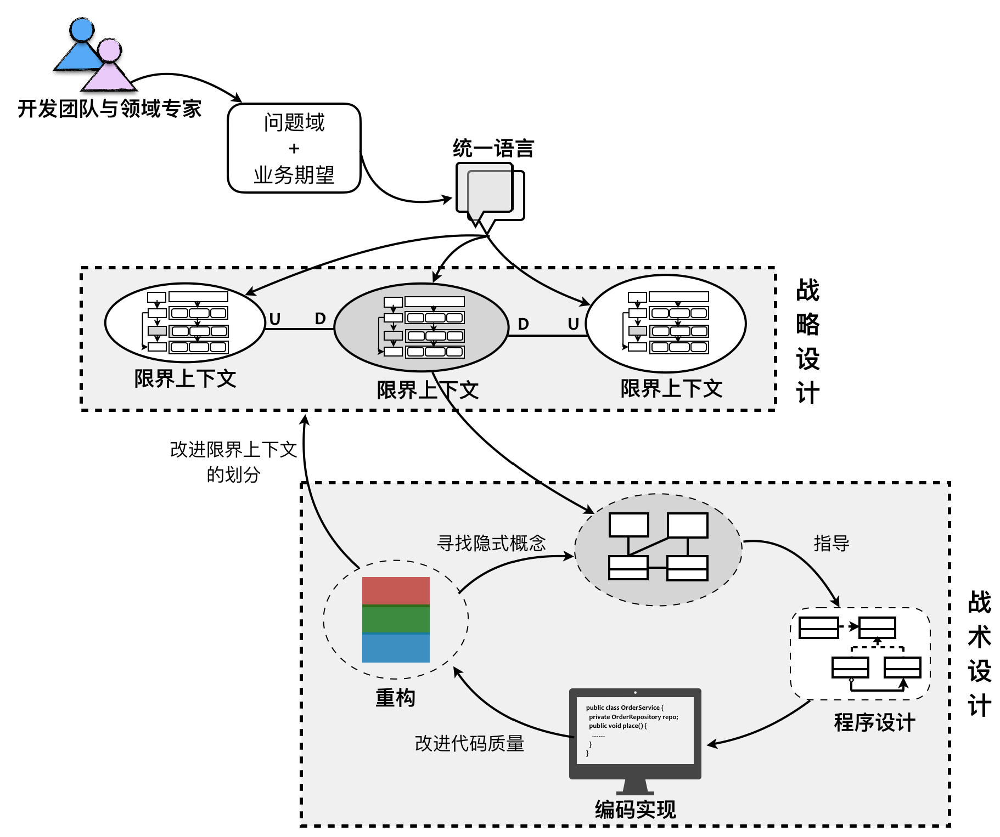
面对客户的业务需求，由领域专家与开发团队展开充分的交流，经过需求分析与知识提炼，以获得清晰的问题域。通过对问题域进行分析和建模，识别限界上下文，利用它划分相对独立的领域，再通过上下文映射建立它们之间的关系，辅以分层架构与六边形架构划分系统的逻辑边界与物理边界，界定领域与技术之间的界限。之后，进入战术设计阶段，深入到限界上下文内对领域进行建模，并以领域模型指导程序设计与编码实现。若在实现过程中，发现领域模型存在重复、错位或缺失时，再进而对已有模型进行重构，甚至重新划分限界上下文。
两个不同阶段的设计目标是保持一致的，它们是一个连贯的过程，彼此之间又相互指导与规范，并最终保证一个有效的领域模型和一个富有表达力的实现同时演进。
004 深入分析软件的复杂度
软件复杂度的成因
Eric Evans 的经典著作《领域驱动设计》的副标题为“软件核心复杂性应对之道”，这说明了 Eric 对领域驱动设计的定位就是应对软件开发的复杂度。Eric 甚至认为：“领域驱动设计只有应用在大型项目上才能产生最大的收益”。他通过 Smart UI 反模式逆向地说明了在软件设计与开发过程中如果出现了如下问题，就应该考虑运用领域驱动设计：
- 没有对行为的重用，也没有对业务问题的抽象，每当操作用到业务规则时，都要重复这些业务规则。
- 快速的原型建立和迭代很快会达到其极限，因为抽象的缺乏限制了重构的选择。
- 复杂的功能很快会让你无所适从，所以程序的扩展只能是增加简单的应用模块，没有很好的办法来实现更丰富的功能。
因此，选择领域驱动设计，就是要与软件系统的复杂作一番殊死拼搏，以降低软件复杂度为己任。那么，什么才是复杂呢？
什么是复杂？
即使是研究复杂系统的专家，如《复杂》一书的作者 Melanie Mitchell，都认为复杂没有一个明确得到公认的定义。不过，Melanie Mitchell 在接受 Ubiquity 杂志专访时，还是“勉为其难”地给出了一个通俗的复杂系统定义：由大量相互作用的部分组成的系统，与整个系统比起来，这些组成部分相对简单，没有中央控制，组成部分之间也没有全局性的通讯，并且组成部分的相互作用导致了复杂行为。
这个定义庶几可以表达软件复杂度的特征。定义中的组成部分对于软件系统来说，就是我所谓的“设计单元”，基于粒度的不同可以是函数、对象、模块、组件和服务。这些设计单元相对简单，然而彼此之间的相互作用却导致了软件系统的复杂行为。
Jurgen Appelo 从理解力与预测能力两个维度分析了复杂系统理论，这两个维度又各自分为不同的复杂层次，其中，理解力维度分为 Simple 与 Comlicated 两个层次，预测能力维度则分为 Ordered、Complex 与 Chaotic 三个层次，如下图所示：
参考复杂的含义，Complicated 与 Simple（简单）相对，意指非常难以理解，而 Complex 则介于 Ordered（有序的）与 Chaotic（混沌的）之间，认为在某种程度上可以预测，但会有很多出乎意料的事情发生。显然，对于大多数软件系统而言，系统的功能都是难以理解的；在对未来需求变化的把控上，虽然我们可以遵循一些设计原则来应对可能的变化，但未来的不可预测性使得软件系统的演进仍然存在不可预测的风险。因此，软件系统的所谓“复杂”其实覆盖了 Complicated 与 Complex 两个方面。要理解软件复杂度的成因，就应该结合理解力与预测能力这两个因素来帮助我们思考。
理解力
在软件系统中，是什么阻碍了开发人员对它的理解？想象团队招入一位新人，就像一位游客来到了一座陌生的城市，他是否会迷失在阡陌交错的城市交通体系中，不辨方向？倘若这座城市实则是乡野郊外的一座村落，不过只有房屋数间，一条街道连通城市的两头，还会疑生出迷失之感吗？
因而，影响理解力的第一要素是规模。
规模
软件的需求决定了系统的规模。当需求呈现线性增长的趋势时，为了实现这些功能，软件规模也会以近似的速度增长。由于需求不可能做到完全独立，导致出现相互影响相互依赖的关系，修改一处就会牵一发而动全身。就好似城市的一条道路因为施工需要临时关闭，此路不通，通行的车辆只能改道绕行，这又导致了其他原本已经饱和的道路，因为涌入更多车辆，超出道路的负载从而变得更加拥堵，这种拥堵现象又会顺势向这些道路的其他分叉道路蔓延，形成一种辐射效应的拥堵现象。
软件开发的拥堵现象或许更严重：
- 函数存在副作用，调用时可能对函数的结果作了隐含的假设；
- 类的职责繁多，不敢轻易修改，因为不知这种变化会影响到哪些模块；
- 热点代码被频繁变更，职责被包裹了一层又一层，没有清晰的边界；
- 在系统某个角落，隐藏着伺机而动的 bug，当诱发条件具备时，则会让整条调用链瘫痪；
- 不同的业务场景包含了不同的例外场景，每种例外场景的处理方式都各不相同；
- 同步处理与异步处理代码纠缠在一起，不可预知程序执行的顺序。
当需求增多时，软件系统的规模也会增大，且这种增长趋势并非线性增长，会更加陡峭。倘若需求还产生了事先未曾预料到的变化，我们又没有足够的风险应对措施，在时间紧迫的情况下，难免会对设计做出妥协，头疼医头、脚疼医脚，在系统的各个地方打上补丁，从而欠下技术债（Technical Debt）。当技术债务越欠越多，累计到某个临界点时，就会由量变引起质变，整个软件系统的复杂度达到巅峰，步入衰亡的老年期，成为“可怕”的遗留系统。正如饲养场的“奶牛规则”：奶牛逐渐衰老，最终无奶可挤；然而与此同时，饲养成本却在上升。
结构
不知大家是否去过迷宫？相似而回旋繁复的结构使得本来封闭狭小的空间被魔法般地扩展为一个无限的空间，变得无穷大，仿佛这空间被安置了一个循环，倘若没有找到正确的退出条件，循环就会无休无止，永远无法退出。许多规模较小却格外复杂的软件系统，就好似这样的一座迷宫。
此时，结构成了决定系统复杂度的关键因素。
结构之所以变得复杂，在多数情况下还是因为系统的质量属性决定的。例如，我们需要满足高性能、高并发的需求，就需要考虑在系统中引入缓存、并行处理、CDN、异步消息以及支持分区的可伸缩结构。倘若我们需要支持对海量数据的高效分析，就得考虑这些海量数据该如何分布存储，并如何有效地利用各个节点的内存与 CPU 资源执行运算。
从系统结构的视角看，单体架构一定比微服务架构更简单，更便于掌控，正如单细胞生物比人体的生理结构要简单数百倍；那么，为何还有这么多软件组织开始清算自己的软件资产，花费大量人力物力对现有的单体架构进行重构，走向微服务化？究其主因，不还是系统的质量属性在作祟吗？
纵观软件设计的历史，不是分久必合、合久必分，而是不断拆分、继续拆分、持续拆分的微型化过程。分解的软件元素不可能单兵作战，怎么协同、怎么通信，就成为了系统分解后面临的主要问题。如果没有控制好，这些问题固有的复杂度甚至会在某些场景下超过因为分解给我们带来的收益。
无论是优雅的设计，还是拙劣的设计，都可能因为某种设计权衡而导致系统结构变得复杂。唯一的区别在于前者是主动地控制结构的复杂度，而后者带来的复杂度是偶发的，是错误的滋生，是一种技术债，它可能会随着系统规模的增大而导致一种无序设计。
在 Pete Goodliffe 讲述的《两个系统的故事：现代软件神话》中详细地罗列了无序设计系统的几种警告信号：
- 代码没有显而易见的进入系统中的路径；
- 不存在一致性、不存在风格、也没有统一的概念能够将不同的部分组织在一起；
- 系统中的控制流让人觉得不舒服，无法预测；
- 系统中有太多的“坏味道”，整个代码库散发着腐烂的气味儿，是在大热天里散发着刺激气体的一个垃圾堆；
- 数据很少放在使用它的地方，经常引入额外的巴罗克式缓存层，目的是试图让数据停留在更方便的地方。
我们看一个无序设计的软件系统，就好像隔着一层半透明的玻璃观察事物一般，系统中的软件元素都变得模糊不清，充斥着各种技术债。细节层面，代码污浊不堪，违背了“高内聚、松耦合”的设计原则，导致许多代码要么放错了位置，要么出现重复的代码块；架构层面，缺乏清晰的边界，各种通信与调用依赖纠缠在一起，同一问题域的解决方案各式各样，让人眼花缭乱，仿佛进入了没有规则的无序社会。
预测能力
当我们掌握了事物发展的客观规律时，我们就具有了一定的对未来的预测能力。例如，我们洞察了万有引力的本质，就可以对我们能够观察到的宇宙天体建立模型，较准确地推测出各个天体在未来一段时间的运行轨迹。然而，宇宙空间变化莫测，或许因为一个星球的死亡产生黑洞的吸噬能力，就可能导致那一片星域产生剧烈的动荡，这种动荡会传递到更远的星空，从而干扰了我们的预测。坦白说，我们现在连自己居住的地球天气都不能做一个准确的预测呢。之所以如此，正是因为未知的变化的产生。
变化
未来总会出现不可预测的变化，这种不可预测性带来的复杂度，使得我们产生畏惧，因为我们不知道何时会发生变化，变化的方向又会走向哪里，这就导致心理滋生一种仿若失重一般的感觉。变化让事物失去控制，受到事物牵扯的我们会感到惶恐不安。
在设计软件系统时，变化让我们患得患失，不知道如何把握系统设计的度。若拒绝对变化做出理智的预测，系统的设计会变得僵化，一旦变化发生，修改的成本会非常的大；若过于看重变化产生的影响，渴望涵盖一切变化的可能，一旦预期的变化不曾发生，我们之前为变化付出的成本就再也补偿不回来了。这就是所谓的“过度设计”。
从需求的角度讲，变化可能来自业务需求，也可能来自质量属性。以对系统架构的影响而言，尤以后者为甚，因为它可能牵涉到整个基础架构的变更。George Fairbanks在《恰如其分的软件架构》一书中介绍了邮件托管服务公司 RackSpace 的日志架构变迁，业务功能没有任何变化，却因为邮件数量的持续增长，为满足性能需求，架构经历了三个完全不同系统的变迁：从最初的本地日志文件，到中央数据库，再到基于 HDFS 的分布式存储，整个系统几乎发生了颠覆性的变化。这并非 RackSpace 的设计师欠缺设计能力，而是在公司草创之初，他们没有能够高瞻远瞩地预见到客户数量的增长，导致日志数据增多，以至于超出了已有系统支持的能力范围。俗话说：“事后诸葛亮”，当我们在对一个软件系统的架构设计进行复盘时，总会发现许多设计决策是如此的愚昧。殊不知这并非愚昧，而是在设计当初，我们手中掌握的筹码不足以让自己赢下这场面对未来的战争罢了。
这就是变化之殇！
如果将软件系统中我们自己开发的部分都划归为需求的范畴，那么还有一种变化，则是因为我们依赖的第三方库、框架或平台、甚至语言版本的变化带来的连锁反应。例如，作为 Java 开发人员，一定更垂涎于 Lambda 表达式的简洁与抽象，又或者 Jigsaw 提供的模块定义能力，然而现实是我们看到多数的企业软件系统依旧在 Java 6 或者 Java 7 中裹足不前。
这还算是幸运的例子，因为我们尽可以满足这种故步自封，由于情况并没有到必须变化的境地。当我们依赖的第三方有让我们不得不改变的理由时，难道我们还能拒绝变化吗？
许多软件在版本变迁过程中都尽量考虑到 API 变化对调用者带来的影响，因而尽可能保持版本向后兼容。我亲自参与过系统从 Spring 2.0 到 4.0 的升级，Spark 从 1.3.1 到 1.5 再到 1.6 的升级，感谢这些框架或平台设计人员对兼容性的体贴照顾，使得我们的升级成本能够被降到最低；但是在升级之后，倘若没有对系统做全方位的回归测试，我们的内心始终是惴惴不安的。
对第三方的依赖看似简单，殊不知我们所依赖的库、平台或者框架又可能依赖了若干对于它们而言又份属第三方的更多库、平台和框架。每回初次构建软件系统时，我都为漫长等待的依赖下载过程而感觉烦躁不安。多种版本共存时可能带来的所谓依赖地狱，只要亲身经历过，就没有不感到不寒而栗的。倘若你运气欠佳，可能还会有各种古怪问题接踵而来，让你应接不暇、疲于奔命。
如果变化是不可预测的，那么软件系统也会变得不可预测。一方面我们要尽可能地控制变化，至少要将变化产生的影响限制在较小的空间范围内；另一方面又要保证系统不会因为满足可扩展性而变得更加复杂，最后背上过度设计的坏名声。软件设计者们就像走在高空钢缆的技巧挑战者，惊险地调整重心以维持行动的平衡。故而，变化之难，在于如何平衡。
005 控制软件复杂度的原则
虽然说认识到软件系统的复杂本性，并不足以让我们应对其复杂，并寻找到简化系统的解决之道；然而，如果我们连导致软件复杂度的本源都茫然不知，又怎么谈得上控制复杂呢？既然我们认为导致软件系统变得复杂的成因是规模、结构与变化三要素，则控制复杂度的原则就需要对它们进行各个击破。
分而治之、控制规模
针对规模带来的复杂度，我们应注意克制做大、做全的贪婪野心，尽力保证系统的小规模。简单说来，就是分而治之的思想，遵循小即是美的设计美学。
丹尼斯·里奇（Dennis MacAlistair Ritchie）从大型项目 Multics 的失败中总结出 KISS（Keep it Simple Stupid）原则，基于此原则，他将 Unix 设计为由许多小程序组成的整体系统，每个小程序只能完成一个功能，任何复杂的操作都必须分解成一些基本步骤，由这些小程序逐一完成，再组合起来得到最终结果。从表面上看，运行一连串小程序很低效，但是事实证明，由于小程序之间可以像积木一样自由组合，所以非常灵活，能够轻易完成大量意想不到的任务。而且，计算机硬件的升级速度非常快，所以性能也不是一个问题；另一方面，当把大程序分解成单一目的的小程序，开发会变得很容易。
Unix 的这种设计哲学被 Doug McIlroy、Elliot Pinson 和 Berk Tague 总结为以下两条：
- Make each program do one thing well. To do a new job, build a fresh rather than complicate old programs by adding new “features.”
- Expect the output of every program to become the input to another, as yet unknown, program.
这两条原则是相辅相成的。第一条原则要求一个程序只做一件事情，符合“单一职责原则”，在应对新需求时，不会直接去修改一个复杂的旧系统，而是通过添加新特性，然后对这些特性进行组合。要满足小程序之间的自由组合，就需要满足第二条原则，即每个程序的输入和输出都是统一的，因而形成一个统一接口（Uniform Interface），以支持程序之间的自由组合（Composability）。利用统一接口，既能够解耦每个程序，又能够组合这些程序，还提高了这些小程序的重用性，这种“统一接口”，其实就是架构一致性的体现。
保持结构的清晰与一致
所有设计质量高的软件系统都有相同的特征，就是拥有清晰直观且易于理解的结构。
Robert Martin 分析了这么多年诸多设计大师提出的各种系统架构风格与模式，包括 Alistair Cockburn 提出的六边形架构（Hexagonal Architecture），Jeffrey Palermo 提出的洋葱架构（Onion Architecture)，James Coplien 与 Trygve Reenskaug 提出的 DCI 架构，Ivar Jacobson 提出的 BCE 设计方法。结果，他认为这些方法的共同特征都遵循了“关注点分离”架构原则，由此提出了整洁架构的思想。
整洁架构提出了一个可测试的模型，无需依赖于任何基础设施就可以对它进行测试，只需通过边界对象发送和接收对应的数据结构即可。它们都遵循稳定依赖原则，不对变化或易于变化的事物形成依赖。整洁架构模型让外部易变的部分依赖于更加稳定的领域模型，从而保证了核心的领域模型不会受到外部的影响。典型的整洁架构如下图所示：
整洁架构的目的在于识别整个架构不同视角以及不同抽象层次的关注点，并为这些关注点划分不同层次的边界，从而使得整个架构变得更为清晰，以减少不必要的耦合。要做到这一点，则需要合理地进行职责分配，良好的封装与抽象，并在约束的指导下为架构建立一致的风格，这是许多良好系统的设计特征。
拥抱变化
变化对软件系统带来的影响可以说是无解，然而我们不能因此而消极颓废，套用 Kent Beck 的话来说，我们必须“拥抱变化”。除了在开发过程中，我们应尽可能做到敏捷与快速迭代，以此来抵消变化带来的影响；在架构设计层面，我们还可以分析哪些架构质量属性与变化有关，这些质量属性包括：
- 可进化性（Evolvability）
- 可扩展性（Extensibility）
- 可定制性（Customizability）
要保证系统的可进化性，可以划分设计单元的边界，以确定每个设计单元应该履行的职责以及需要与其他设计单元协作的接口。这些设计单元具有不同的设计粒度，包括函数、对象、模块、组件及服务。由于每个设计单元都有自己的边界，边界内的实现细节不会影响到外部的其他设计单元，我们就可以非常容易地替换单元内部的实现细节，保证了它们的可进化性。
要满足系统的可扩展性，首先要学会识别软件系统中的变化点（热点），常见的变化点包括业务规则、算法策略、外部服务、硬件支持、命令请求、协议标准、数据格式、业务流程、系统配置、界面表现等。处理这些变化点的核心就是“封装”，通过隐藏细节、引入间接等方式来隔离变化、降低耦合。一些常见的架构风格，如基于事件的集成、管道—过滤器等的引入，都可以在一定程度上提高系统可扩展性。
可定制性意味着可以提供特别的功能与服务。Fielding 在《架构风格与基于网络的软件架构设计》提到：“支持可定制性的风格也可能会提高简单性和可扩展性”。在 SaaS 风格的系统架构中，我们常常通过引入元数据（Metadata）来支持系统的可定制。插件模式也是满足可定制性的常见做法，它通过提供统一的插件接口，使得用户可以在系统之外按照指定接口编写插件来扩展定制化的功能。
006 领域驱动设计对软件复杂度的应对（上）
不管是因为规模与结构制造的理解力障碍，还是因为变化带来的预测能力问题，最终的决定因素还是因为需求。Eric Evans 认为“很多应用程序最主要的复杂性并不在技术上，而是来自领域本身、用户的活动或业务”。因而，领域驱动设计关注的焦点在于领域和领域逻辑，因为软件系统的本质其实是给客户（用户）提供具有业务价值的领域功能。
需求引起的软件复杂度
需求分为业务需求与质量属性需求，因而需求引起的复杂度可以分为两个方面：技术复杂度与业务复杂度。
技术复杂度来自需求的质量属性，诸如安全、高性能、高并发、高可用性等需求，为软件设计带来了极大的挑战，让人痛苦的是这些因素彼此之间可能又互相矛盾、互相影响。例如，系统安全性要求对访问进行控制，无论是增加防火墙，还是对传递的消息进行加密，又或者对访问请求进行认证和授权等，都需要为整个系统架构添加额外的间接层，这不可避免会对访问的低延迟产生影响，拖慢了系统的整体性能。又例如，为了满足系统的高并发访问，我们需要对应用服务进行物理分解，通过横向增加更多的机器来分散访问负载；同时，还可以将一个同步的访问请求拆分为多级步骤的异步请求，再通过引入消息中间件对这些请求进行整合和分散处理。这种分离一方面增加了系统架构的复杂性，另一方面也因为引入了更多的资源，使得系统的高可用面临挑战，并增加了维护数据一致性的难度。
业务复杂度对应了客户的业务需求，因而这种复杂度往往会随着需求规模的增大而增加。由于需求不可能做到完全独立，一旦规模扩大到一定程度，不仅产生了功能数量的增加，还会因为功能互相之间的依赖与影响使得这种复杂度产生叠加，进而影响到整个系统的质量属性，比如系统的可维护性与可扩展性。在考虑系统的业务需求时，还会因为沟通不畅、客户需求不清晰等多种局外因素而带来的需求变更和修改。如果不能很好地控制这种变更，则可能会因为多次修改而导致业务逻辑纠缠不清，系统可能开始慢慢腐烂而变得不可维护，最终形成一种如 Brian Foote 和 Joseph Yoder 所说的“大泥球”系统。
以电商系统的促销规则为例。针对不同类型的顾客与产品，商家会提供不同的促销力度；促销的形式多种多样，包括赠送积分、红包、优惠券、礼品；促销的周期需要支持定制，既可以是特定的日期，如双十一促销，也可以是节假日的固定促销模式。如果我们在设计时没有充分考虑促销规则的复杂度，并处理好促销规则与商品、顾客、卖家与支付乃至于物流、仓储之间的关系，开发过程则会变得踉踉跄跄、举步维艰。
技术复杂度与业务复杂度并非完全独立，二者混合在一起产生的化合作用更让系统的复杂度变得不可预期，难以掌控。同时，技术的变化维度与业务的变化维度并不相同，产生变化的原因也不一致，倘若未能很好地界定二者之间的关系，系统架构缺乏清晰边界，会变得难以梳理。复杂度一旦增加，团队规模也将随之扩大，再揉以严峻的交付周期、人员流动等诸多因素，就好似将各种不稳定的易燃易爆气体混合在一个不可逃逸的密闭容器中一般，随时都可能爆炸：
随着业务需求的增加与变化，以及对质量属性的高标准要求，自然也引起了软件系统规模的增大与结构的繁杂，至于变化，则是软件开发绕不开的话题。因此，当我们面对一个相对复杂的软件系统时，通常面临的问题在于：
- 问题域过于庞大而复杂，使得从问题域中寻求解决方案的挑战增加，该问题与软件系统的规模有关。
- 开发人员将业务逻辑的复杂度与技术实现的复杂度混淆在一起，该问题与软件系统的结构有关。
- 随着需求的增长和变化，无法控制业务复杂度和技术复杂度，该问题与软件系统的变化有关。
针对这三个问题，领域驱动设计都给出了自己的应对措施。
领域驱动设计的应对措施
隔离业务复杂度与技术复杂度
要避免业务逻辑的复杂度与技术实现的复杂度混淆在一起，首要任务就是确定业务逻辑与技术实现的边界，从而隔离各自的复杂度。这种隔离也是题中应有之义，毕竟技术与业务的关注点完全不同。例如，在电商的领域逻辑中，订单业务关注的业务规则包括验证订单有效性、计算订单总额、提交和审核订单的流程等；技术关注点则从实现层面保障这些业务能够正确地完成，包括确保分布式系统之间的数据一致性，确保服务之间通信的正确性等。
业务逻辑并不关心技术是如何实现的，无论采用何种技术，只要业务需求不变，业务规则就不会发生变化。换言之，在理想状态下，我们应该保证业务规则与技术实现是正交的。
领域驱动设计通过分层架构与六边形架构来确保业务逻辑与技术实现的隔离。
分层架构的关注点分离
分层架构遵循了“关注点分离”原则，将属于业务逻辑的关注点放到领域层（Domain Layer）中，而将支撑业务逻辑的技术实现放到基础设施层（Infrastructure Layer）中。同时，领域驱动设计又颇具创见的引入了应用层（Application Layer），应用层扮演了双重角色。一方面它作为业务逻辑的外观（Facade），暴露了能够体现业务用例的应用服务接口；另一方面它又是业务逻辑与技术实现的粘合剂，实现二者之间的协作。
下图展现的就是一个典型的领域驱动设计分层架构，蓝色区域的内容与业务逻辑有关，灰色区域的内容与技术实现有关，二者泾渭分明，然后汇合在应用层。应用层确定了业务逻辑与技术实现的边界，通过直接依赖或者依赖注入（DI，Dependency Injection）的方式将二者结合起来：
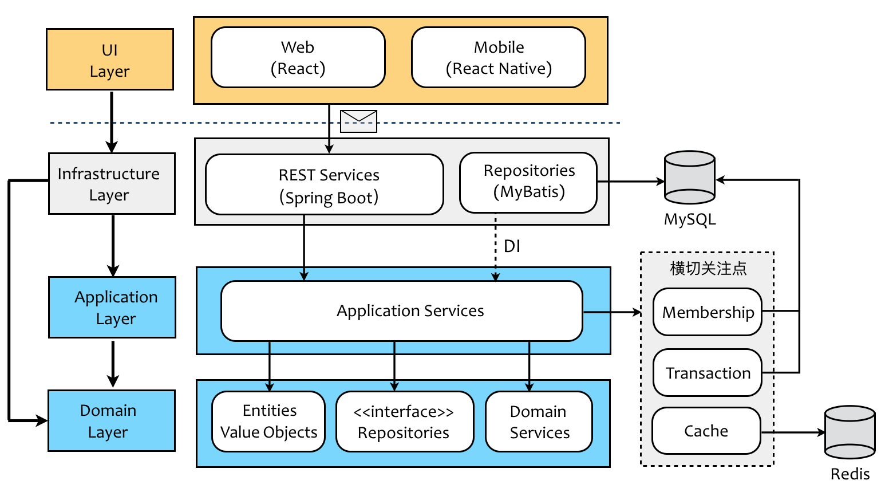
六边形架构的内外分离
由 Cockburn 提出的六边形架构则以“内外分离”的方式，更加清晰地勾勒出了业务逻辑与技术实现的边界，且将业务逻辑放在了架构的核心位置。这种架构模式改变了我们观察系统架构的视角：
体现业务逻辑的应用层与领域层处于六边形架构的内核，并通过内部的六边形边界与基础设施的模块隔离开。当我们在进行软件开发时，只要恪守架构上的六边形边界，则不会让技术实现的复杂度污染到业务逻辑，保证了领域的整洁。边界还隔离了变化产生的影响。如果我们在领域层或应用层抽象了技术实现的接口，再通过依赖注入将控制的方向倒转，业务内核就会变得更加的稳定，不会因为技术选型或其他决策的变化而导致领域代码的修改。
案例：隔离数据库与缓存的访问
领域驱动设计建议我们在领域层建立资源库（Repository）的抽象，它的实现则被放在基础设施层，然后采用依赖注入在运行时为业务逻辑注入具体的资源库实现。那么，对于处于内核之外的 Repositories 模块而言，即使选择从 MyBatis 迁移到 Sprint Data，领域代码都不会受到牵连：
package practiceddd.ecommerce.ordercontext.application;
@Transaction
public class OrderAppService {
@Service
private PlaceOrderService placeOrder;
public void placeOrder(Identity buyerId, List<OrderItem> items, ShippingAddress shipping, BillingAddress billing) {
try {
palceOrder.execute(buyerId, items, shipping, billing);
} catch (OrderRepositoryException | InvalidOrderException | Exception ex) {
ex.printStackTrace();
logger.error(ex.getMessage());
}
}
}
package practiceddd.ecommerce.ordercontext.domain;
public interface OrderRepository {
List<Order> forBuyerId(Identity buyerId);
void add(Order order);
}
public class PlaceOrderService {
@Repository
private OrderRepository orderRepository;
@Service
private OrderValidator orderValidator;
public void execute(Identity buyerId, List<OrderItem> items, ShippingAddress shipping, BillingAddress billing) {
Order order = Order.create(buyerId, items, shipping, billing);
if (orderValidator.isValid(order)) {
orderRepository.add(order);
} else {
throw new InvalidOrderException(String.format("the order which placed by buyer with %s is invalid.", buyerId));
}
}
}
package practiceddd.ecommerce.ordercontext.infrastructure.db;
public class OrderMybatisRepository implements OrderRepository {}
public class OrderSprintDataRepository implements OrderRepository {}
对缓存的处理可以如法炮制，但它与资源库稍有不同之处。资源库作为访问领域模型对象的入口，其本身提供的增删改查功能，在抽象层面上是对领域资源的访问。因此在领域驱动设计中，我们通常将资源库的抽象归属到领域层。对缓存的访问则不相同，它的逻辑就是对 key 和 value 的操作，与具体的领域无关。倘若要为缓存的访问方法定义抽象接口，在分层的归属上应该属于应用层，至于实现则属于技术范畴，应该放在基础设施层：
package practiceddd.ecommerce.ordercontext.application;
@Transaction
public class OrderAppService {
@Repository
private OrderRepository orderRepository;
@Service
private CacheClient<List<Order>> cacheClient;
public List<Order> findBy(Identity buyerId) {
Optional<List<Order>> cachedOrders = cacheClient.get(buyerId.value());
if (cachedOrders.isPresent()) {
return orders.get();
}
List<Order> orders = orderRepository.forBuyerId(buyerId);
if (!orders.isEmpty()) {
cacheClient.put(buyerId.value(), orders);
}
return orders;
}
}
package practiceddd.ecommerce.ordercontext.application.cache;
public interface CacheClient<T> {
Optional<T> get(String key);
void put(String key, T value);
}
package practiceddd.ecommerce.ordercontext.infrastructure.cache;
public class RedisCacheClient<T> implements CacheClient<T> {}
本例中对应的代码结构在分层架构中的体现将会在后续章节中深入介绍，敬请期待~
007 领域驱动设计对软件复杂度的应对（下）
限界上下文的分而治之
在第1-4课中分析缓存访问接口的归属时，我们将接口放在了系统的应用层。从层次的职责来看，这样的设计是合理的，但它却使得系统的应用层变得更加臃肿，职责也变得不够单一了。这是分层架构与六边形架构的局限所在，因为这两种架构模式仅仅体现了软件系统的逻辑划分。倘若我们将一个软件系统视为一个纵横交错的魔方，前述的逻辑划分仅仅是一种水平方向的划分；至于垂直方向的划分，则是面向垂直业务的切割。这种方式更利于控制软件系统的规模，将一个庞大的软件系统划分为松散耦合的多个小系统的组合。
针对前述案例，我们可以将缓存视为一个独立的子系统，它同样拥有自己的业务逻辑和技术实现，因而也可以为其建立属于缓存领域的分层架构。在架构的宏观视角，这个缓存子系统与订单子系统处于同一个抽象层次。这一概念在领域驱动设计中，被称之为限界上下文（Bounded Context）。
针对庞大而复杂的问题域，限界上下文采用了“分而治之”的思想对问题域进行了分解，有效地控制了问题域的规模，进而控制了整个系统的规模。一旦规模减小，无论业务复杂度还是技术复杂度，都会得到显著的降低，在对领域进行分析以及建模时，也能变得更加容易。限界上下文对整个系统进行了划分，在将一个大系统拆分为一个个小系统后，我们再利用分层架构与六边形架构思想对其进行逻辑分层，以确保业务逻辑与技术实现的隔离，其设计会变得更易于把控，系统的架构也会变得更加清晰。
案例：限界上下文帮助架构的演进
国际报税系统是为跨国公司的驻外出差雇员（系统中被称之为 Assignee）提供方便一体化的税收信息填报平台。客户是一家会计师事务所，该事务所的专员（Admin）通过该平台可以收集雇员提交的报税信息，然后对这些信息进行税务评审。如果 Admin 评审出信息有问题，则返回给 Assignee 重新修改和填报。一旦信息确认无误，则进行税收分析和计算，并获得最终的税务报告提交给当地政府以及雇员本人。
系统主要涉及的功能包括：
- 驻外出差雇员的薪酬与福利
- 税收计划与合规评审
- 对税收评审的分配管理
- 税收策略设计与评审
- 对驻外出差雇员的税收合规评审
- 全球的 Visa 服务
主要涉及的用户角色包括：
- Assignee：驻外出差雇员
- Admin：税务专员
- Client：出差雇员的雇主
在早期的架构设计时，架构师并没有对整个系统的问题域进行拆分，而是基于用户角色对系统进行了简单粗暴的划分，分为了两个相对独立的子系统：Frond End 与 Office End，这两个子系统单独部署，分别面向 Assignee 与 Admin。系统之间的集成则通过消息和 Web Service 进行通信。两个子系统的开发分属不同的团队，Frond End 由美国的团队负责开发与维护，而 Office End 则由印度的团队负责。整个架构如下图所示：
采用这种架构面临的问题如下：
- 庞大的代码库：整个 Front End 和 Office End 都没有做物理分解，随着需求的增多，代码库会变得格外庞大。
- 分散的逻辑：系统分解的边界是不合理的，没有按照业务分解，而是按照用户的角色进行分解，因而导致大量相似的逻辑分散在两个不同的子系统中。
- 重复的数据：两个子系统中存在业务重叠，因而也导致了部分数据的重复。
- 复杂的集成：Front End 与 Office End 因为某些相关的业务需要彼此通信，这种集成关系是双向的，且由两个不同的团队开发，导致集成的接口混乱，消息协议多样化。
- 知识未形成共享：两个团队完全独立开发，没有掌握端对端的整体流程，团队之间没有形成知识的共享。
- 无法应对需求变化：新增需求包括对国际旅游、Visa 的支持，现有系统的架构无法很好地支持这些变化。
采用领域驱动设计，我们将架构的主要关注点放在了“领域”，与客户进行了充分的需求沟通和交流。通过分析已有系统的问题域，结合客户提出的新需求，对整个问题域进行了梳理，并利用限界上下文对问题域进行了分解，获得了如下限界上下文：
- Account Management：管理用户的身份与配置信息；
- Calendar Management：管理用户的日程与旅行足迹。
之后，客户希望能改进需求，做到全球范围内的工作指派与管理，目的在于提高公司的运营效率。通过对领域的分析，我们又识别出两个限界上下文。在原有的系统架构中，这两个限界上下文同时处于 Front End 与 Office End 之中，属于重复开发的业务逻辑：
- Work Record Management：实现工作的分配与任务的跟踪；
- File Sharing：目的是实现客户与会计师事务所之间的文件交换。
随着我们对领域知识的逐渐深入理解与分析，又随之识别出如下限界上下文：
- Consent：管理合法的遵守法规的状态；
- Notification：管理系统与客户之间的交流；
- Questionnaire：对问卷调查的数据收集。
这个领域分析的过程实际上就是通过对领域的分析而引入限界上下文对问题域进行分解，通过降低规模的方式来降低问题域的复杂度；同时，通过为模型确定清晰的边界，使得系统的结构变得更加的清晰，从而保证了领域逻辑的一致性。一旦确定了清晰的领域模型，就能够帮助我们更加容易地发现系统的可重用点与可扩展点，并遵循“高内聚、松耦合”的原则对系统职责进行合理分配，再辅以分层架构以划分逻辑边界，如下图所示：
我们将识别出来的限界上下文定义为微服务，并对外公开 REST 服务接口。UI Applications 是一个薄薄的展现层，它会调用后端的 RESTful 服务，也使得服务在保证接口不变的前提下能够单独演化。每个服务都是独立的，可以单独部署，因而可以针对服务建立单独的代码库和对应的特性团队（Feature Team）。服务的重用性和可扩展性也有了更好的保障，服务与 UI 之间的集成变得更简单，整个架构会更加清晰。
领域模型对领域知识的抽象
领域模型是对业务需求的一种抽象，其表达了领域概念、领域规则以及领域概念之间的关系。一个好的领域模型是对统一语言的可视化表示，通过它可以减少需求沟通可能出现的歧义；通过提炼领域知识，并运用抽象的领域模型去表达，就可以达到对领域逻辑的化繁为简。模型是封装，实现了对业务细节的隐藏；模型是抽象，提取了领域知识的共同特征，保留了面对变化时能够良好扩展的可能性。
案例：项目管理系统的领域模型
我们开发的项目管理系统需要支持多种软件项目管理流程，如瀑布、RUP、XP 或者 Scrum，这些项目管理流程是迥然不同的，如果需要各自提供不同的解决方案，则会使得系统的模型变得非常复杂，也可能会引入许多不必要的重复。通过领域建模，我们可以对项目管理领域的知识进行抽象，寻找具有共同特征的领域概念。这就需要分析各种项目管理流程的主要特征与表现，才能从中提炼出领域模型。
瀑布式软件开发由需求、分析、设计、编码、测试、验收六个阶段构成，每个阶段都由不同的活动构成，这些活动可能是设计或开发任务，也可能是召开评审会。流程如下图所示：
RUP 清晰地划分了四个阶段：先启阶段（Inception）、细化阶段（Elaboration）、构造阶段（Construction）与交付阶段（Transition），每个阶段可以包含一到多个迭代，每个迭代有不同的工作，如业务建模、分析设计、配置与变更管理等，RUP 的流程如下图所示：
XP 作为一种敏捷方法，采用了迭代的增量式开发，提倡为客户交付具有业务价值的可运行软件。在执行交付计划之前，XP 要求团队对系统的架构做一次预研（Architectual Spike，又被译为架构穿刺）。当架构的初始方案确定后，就可以进入每次小版本的交付。每个小版本交付又被划分为多个周期相同的迭代。在迭代过程中，要求执行一些必须的活动，如编写用户故事、故事点估算、验收测试等。XP 的流程如下图所示：
Scrum 同样是迭代的增量开发过程。项目在开始之初，需要在准备阶段确定系统愿景、梳理业务用例、确定产品待办项（Product Backlog）、制定发布计划以及组建团队。一旦在确定了产品待办项以及发布计划之后，就进入了 Sprint 迭代阶段。Sprint 迭代过程是一个固定时长的项目过程，在这个过程中，整个团队需要召开计划会议、每日站会、评审会议和回顾会议。Scrum 的流程如下图所示：
不同的项目管理流程具有不同的业务概念。例如，瀑布式开发分为了六个阶段，但却没有发布和迭代的概念；RUP 没有发布的概念，而 Scrum 又为迭代引入了 Sprint 的概念。
不同的项目管理流程具有不同的业务规则。例如，RUP 的四个阶段会包含多个迭代周期，每个迭代周期都需要完成对应的工作，只是不同的工作在不同阶段所占的比重不同。XP 需要在进入发布阶段之前，进行架构预研，而在每次小版本发布之前，都需要进行验收测试和客户验收。Scrum 的 Sprint 是一个基本固定的流程，每个迭代召开的四会（计划会议、评审会议、回顾会议与每日站会）都有明确的目标。
领域建模就是要从这些纷繁复杂的领域逻辑中寻找到能够表示项目管理领域的概念，并利用面向对象建模范式或其他范式对概念进行抽象，并确定它们之间的关系。经过对这些项目管理流程的分析，我们虽然发现在业务概念和规则上确有不同之处，但由于它们都归属于软件开发领域，我们自然也能寻找到某些共同特征的蛛丝马迹。
首先，从项目管理系统的角度看，无论针对何种项目管理流程，我们的主题需求是不变的，就是要为这些管理流程制定软件开发计划（Plan）。不同之处在于，计划可以由多个阶段（Phase）组成，也可以由多个发布（Release）组成。一些项目管理流程没有发布的概念，我们可以认为是一个发布。那么，到底是发布包含了多个阶段，还是阶段包含了多个发布呢？我们发现在 XP 中，明显地划分了两个阶段：Architecture Spike 与 Release Planning，而发布只属于 Release Planning 阶段。因而从概念内涵上，我们可以认为是阶段（Phase）包含了发布（Release）。每个发布又包含了一到多个迭代（Iteration），至于 Scrum 的 Sprint 概念其实可以看做是迭代的一种特例。每个迭代可以开展多种不同的活动（Activity），这些活动可以是整个团队参与的会议，也可以是部分成员或特定角色执行的实践。对于计划而言，我们还需要跟踪任务（Task）。与活动不同，任务具有明确的计划起止时间、实际起止时间、工作量、优先级与承担人。
于是，我们提炼出如下的统一领域模型：
为了项目管理者更加方便地制定项目计划，产品经理提出了计划模板功能。当管理者选择对应的项目管理生命周期类型后，系统会自动创建满足其规则的初始计划。基于该需求，我们更新了之前的领域模型：
在增加的领域模型中，LifeCycle Specification 是一个隐含的概念，遵循领域驱动设计提出的规格（Specification）模式，封装了项目开发生命周期的约束规则。
领域模型以可视化的方式清晰地表达了业务含义，我们可以根据这个模型来指导后面的程序设计与编码实现。当增加新的需求或者需求发生变化时，我们能够敏锐地捕捉到现有模型的不匹配之处，并对其进行更新。领域模型传递了知识，可以作为交流的载体，符合人们的心智模型，有利于让开发人员从纷繁复杂的业务中解脱出来。这是领域驱动设计针对第04课中遇到的第三个问题——控制业务复杂度的解答。
008 软件开发团队的沟通与协作
领域驱动设计的核心是“领域”，因此要运用领域驱动设计，从一开始就要让团队走到正确的点儿上。当我们组建好了团队之后，应该从哪里开始？不是 UI 原型设计、不是架构设计、也不是设计数据库，这些事情虽然重要但却非最高优先级。试想，项目已经启动，团队却并不了解整个系统的目标和范围，未对系统的领域需求达成共识，那么项目开发的航向是否会随着时间的推移而逐渐偏离？用正确的方法做正确的事情，运用领域驱动设计，就是要先识别问题域，进而为团队提炼达成共识的领域知识。
要做到这一点，就离不开团队各个角色的沟通与协作。客户的需求不是从一开始就生长在那里的，就好像在茫茫森林中的一棵树木，等待我们去“发现”它。相反，需求可能只是一粒种子，需要土壤、阳光与水分，在人们的精心呵护与培植下才能茁壮成长。因此，我们无法“发现”需求，而是要和客户一起“培育”需求，并在这个培育过程中逐渐成熟。
达成共识
“培育”需求的过程需要双向的沟通、反馈，更要达成对领域知识理解的共识。原始的需求是“哈姆雷特”，每个人心中都有一个“哈姆雷特”，如果没有正确的沟通与交流方式，团队达成的所谓“需求一致”不过是一种假象罢了。
由于每个人获得的信息不同，知识背景不同，又因为角色不同因而导致设想的上下文也不相同，诸多的不同使得我们在对话交流中好像被蒙了双眼的盲人，我们共同捕捉的需求就好似一头大象，各自只获得局部的知识，却自以为掌控了全局：
或许有人会认为客户提出的需求就应该是全部，我们只需理解客户的需求，然后积极响应这些需求即可。传统的开发合作模式更妄图以合同的形式约定需求知识，要求甲、乙双方在一份沉甸甸的需求规格说明书上签字画押，如此即可约定需求内容和边界，一旦发生超出该文档边界的变更，就需要将变更申请提交到需求变更委员会进行评审。这种方式从一开始就站不住脚，因为我们对客户需求的理解，存在三个方向的偏差：
- 我们从客户那里了解到的需求，并非用户最终的需求；
- 若无有效的沟通方式，需求的理解偏差则会导致结果大相径庭；
- 理解到的需求并没有揭示完整的领域知识，从而导致领域建模与设计出现认知障碍。
Jeff Patton 在《用户故事地图》中给出了一副漫画来描述共识达成的问题。我在 ThoughtWorks 给客户开展 Inception 活动时，也使用了这幅漫画：
这幅漫画形象地表现了如何通过可视化的交流形式逐渐在多个角色之间达成共识的过程。正如前面所述，在团队交流中，每个人都可能成为“盲人摸象的演员”。怎么避免认知偏差？很简单，就是要用可视化的方式表现出来，例如，绘图、使用便签、编写用户故事或测试用例等都是重要的辅助手段。在下一课，我会结合着领域场景分析来讲解这些提炼领域知识的手段。
可视化形式的交流可以让不同角色看到需求之间的差异。一旦明确了这些差异，就可以利用各自掌握的知识互补不足去掉有余，最终得到大家都一致认可的需求，形成统一的认知模型。
团队协作
在软件开发的不同阶段，团队协作的方式与目标并不相同。在项目的先启（Inception）阶段，团队成员对整个项目的需求完全一无所知，此时与客户或领域专家的沟通，应该主要专注于宏观层面的领域知识，例如，系统愿景和目标、系统边界与范围，还有主要的需求功能与核心业务流程。在管理层面，还需要在先启阶段确定团队与利益相关人（包括客户与领域专家）的沟通方式。
先启阶段
在敏捷开发过程中，我们非常重视在项目之初开展的先启阶段，尤其是有客户参与的先启阶段，是最好的了解领域知识的方法。如果团队采用领域驱动设计，就可以在先启阶段运用战略设计，建立初步的统一语言，在识别出主要的史诗级故事与主要用户故事之后，进而识别出限界上下文，并建立系统的逻辑架构与物理架构。
在先启阶段，与提炼领域知识相关的活动如下图所示：
上图列出的七项活动存在明显的先后顺序。首先我们需要确定项目的利益相关人，并通过和这些利益相关人的沟通，来确定系统的业务期望与愿景。在期望与愿景的核心目标指导下，团队与客户才可能就问题域达成共同理解。这时，我们需要确定项目的当前状态与未来状态，从而确定项目的业务范围。之后，就可以对需求进行分解了。在先启阶段，对需求的分析不宜过细，因此需求分解可以从史诗级（Epic）到主故事级（Master）进行逐层划分，并最终在业务范围内确定迭代开发需要的主故事列表。
迭代开发阶段
在迭代开发阶段，针对迭代生命周期和用户故事生命周期可以开展不同形式的沟通与协作。在这个过程中，所有沟通协作的关键点如下图所示：
迭代生命周期是针对迭代目标与范围进行需求分析与沟通的过程。团队首先要了解本次迭代的目标，对迭代中的每个任务要建立基本的领域知识的理解。在迭代开发过程中，我们可以借鉴 Scrum 敏捷管理的过程。
Scrum 要求团队在迭代开始之前召开计划会议，由产品负责人（Product Owner）在会议中向团队成员介绍和解释该迭代需要完成的用户故事，包括用户故事的业务逻辑与验收标准。团队成员对用户故事有任何不解或困惑，都可以通过这个会议进行沟通，初步达成领域知识的共识。每天的站立会议要求产品负责人参与，这就使得开发过程中可能出现的需求理解问题能够及时得到解答。Scrum Master 则通过每天的站立会议了解当前的迭代进度，并与产品负责人一起基于当前进度和迭代目标确定是否需要调整需求的优先级。迭代结束后，团队需要召开迭代演示会议，除了开发团队之外，该会议还可以邀请客户、最终用户以及领域专家参与，由团队的测试人员演示当前迭代已经完成的功能。这种产品演示的方法更容易消除用户、客户、领域专家、产品负责人与团队在需求沟通与理解上的偏差。由于迭代周期往往较短，即使发现了因为需求理解不一致导致的功能实现偏差，也能够做到及时纠偏，从而能够将需求问题扼杀于摇篮之中。
每一个功能的实现、每一行代码的编写都是围绕着用户故事开展的，它是构成领域知识的最基本单元。用户故事指导着开发人员的开发、测试人员的测试，其质量会直接影响领域驱动设计的质量。
敏捷方法非常重视发生在用户故事生命周期中的各个关键节点。对于用户故事的编写，敏捷开发实践强调业务分析人员与测试人员共同编写验收测试的自动化测试脚本，这在《实例化需求》一书中被称之为“活文档（Living Document）”。测试人员与需求分析人员的合作，可以为需求分析提供更多观察视角，尤其是异常场景的识别与验收标准的确认。
当用户故事从需求分析人员传递给开发人员时，不管这个用户故事的描述是多么的准确和详细，都有可能导致知识流失。因此，在开发人员领取了用户故事，并充分理解了用户故事描述的需求后，不要急匆匆地开始编码实现，而是建议将需求分析人员与测试人员叫过来，大家一起做一个极短时间的沟通与确认，我们称这一活动为“Kick Off”，这种方式实际就是对“盲人摸象”问题的一种应对。在这个沟通过程中，开发人员应尽可能地多问需求分析人员“为什么”，以探索用户故事带来的价值。只有如此，开发人员才能更好地理解业务逻辑与业务规则。同时，开发人员还要与测试人员再三确认验收标准，以形成一种事实上的需求规约。
当开发完成后，是否就意味着我们可以将实现的故事卡移交给测试呢？虽然通过迭代开发以及建立特性团队已经大大地拉近了开发人员与测试人员的距离，缩短了需求从开发到测试的周期。但我们认为，有价值的沟通与交流怎么强调都不过分！磨刀不误砍柴工。我们认为从开发完成到测试开始也是一个关键节点，建议在这个关键节点再进行一次交流活动，即在开发环境下，由开发人员向需求分析人员与测试人员“实地”演示刚刚完成的功能，并对照着验收标准进行验收，我们称这个过程为“Desk Check”，是一个快速迷你的功能演示，目的是快速反馈，也减少了任务卡在开发与测试之间频繁切换的沟通成本。
通过 Desk Check 的用户故事卡才会被移动到“待测试”，不用等到迭代结束，更不用等到版本发布，只要开发人员完成了用户故事，测试人员就应该在迭代周期内进行测试，未经过测试的用户故事其交付价值为 0，可以认为这张用户故事卡没有完成，这也是大多数敏捷实践对所谓“完成（Done）”的定义。无数研究与实践也证明了，修改 Bug 的成本会随着时间的推移而增加，如果在开发完成后即刻对其进行测试，一旦发现了 Bug，开发人员便能够快速响应，降低修改 Bug 的成本。当然，测试的过程同样是沟通与交流的过程，是最有效的需求验证和质量保障的手段。
敏捷思想强调个体和团队的协作与沟通，强调快速反馈与及时响应。前面探讨的这些敏捷实践都是行之有效的沟通机制和交流手段，可以帮助团队对需求的理解更加全面、更加准确。只有频繁的沟通，才能就业务需求达成整个团队的共识；只有良好的协作，才能有助于大家一起提炼领域知识，建立统一语言；只有快速反馈，才能尽可能保证领域模型与程序实现的一致。这些都是实践领域驱动设计的基本前提。
009 运用领域场景分析提炼领域知识（上）
领域场景分析的 6W 模型
在软件构造过程中，我们必须正确地理解领域，一种生动的方式是通过“场景”来展现领域逻辑。领域专家或业务分析师从领域中提炼出“场景”，就好像是从抽象的三维球体中，切割出具体可见的一片，然后以这一片场景为舞台，上演各种角色之间的悲欢离合。每个角色的行为皆在业务流程的指引下展开活动，并受到业务规则的约束。当我们在描述场景时，就好像在讲故事，又好似在拍电影。
组成场景的要素常常被称之为 6W 模型，即描写场景的过程必须包含 Who、What、Why、Where、When 与 hoW 这六个要素，6W 模型如下图所示：
通过场景分析领域需求时，首先需要识别参与该场景的用户角色。我们可以为其建立用户画像（Persona），通过分析该用户的特征与属性来辨别该角色在整个场景中参与的活动。这意味着我们需要明确业务功能（What），思考这一功能给该角色能够带来什么样的业务价值（Why）。注意，这里所谓的“角色”是参差多态的，同一个用户在不同场景可能是完全不同的角色。例如，在电商系统中，倘若执行的是下订单功能，则角色就是买家；针对该订单发表评论，参与的角色就变成了评论者。
在 6W 模型中，我将领域功能划分为三个层次，即业务价值、业务功能和业务实现，我将其称之为“职责的层次”。定义为“职责（Responsibility）”才能够更好地体现它与角色之间的关系，即“角色履行了职责”。业务价值体现了职责存在的目的，即解释了该领域需求的 Why。只有提供了该职责，这个场景对于参与角色才是有价值的。为了满足业务价值，我们可以进一步剖析为了实现该价值需要哪些支撑功能，这些业务功能对应 6W 模型中的 What。进一步，我们对功能深入分析，就可以分析获得具体的业务实现。业务实现关注于如何去实现该业务价值，因而对应于 hoW。
在电商系统中，买家要购买商品，因而下订单这一职责是具有业务价值的。通过领域分析，结合职责的层次概念，我们就可以得到如下的职责分层结构：
- 下订单
- 验证订单是否有效
- 验证订单是否为空
- 验证订单信息是否完整
- 验证订单当前状态是否处于“待提交”状态
- 验证订单提交者是否为合法用户
- 验证商品库存量是否大于等于订单中的数量
- 基于业务规则计算订单总价、优惠与配送费
- 获取用户信息
- 获取当前促销规则
- 计算订单总价
- 计算订单优惠
- 计算商品配送费
- 提交订单
- 将订单项插入到数据表中
- 将订单插入到数据表中
- 更新订单状态为“待付款”
- 更新购物车
- 删除购物车中对应的商品
- 发送通知
- 给买家发送电子邮件，通知订单提交成功，等待付款
- 验证订单是否有效
当我们获得这样的职责层次结构之后，就可以帮助我们更加细致地针对领域进行建模。在利用场景进行建模时，还要充分考虑场景的边界，即 6W 模型中的 Where。例如，在“下订单”的案例中，验证商品库存量的业务实现需要调用库存提供的接口，该功能属于下订单场景的边界之外。领域驱动设计引入了**限界上下文（Bounded Context）**来解决这一问题。
针对问题域提炼领域知识是一个空泛的概念，业务场景分析的 6W 模型给出了具有指导意义的约束，要求我们提炼的领域知识必须具备模型的六个要素，这就好比两位侃侃而谈的交谈者，因为有了确定的主题与话题边界，一场本来是漫无目的野鹤闲云似的闲聊就变成了一次深度交流的专题高端对话。6W 模型也是对领域逻辑的一种检验，如果提炼出来的领域逻辑缺乏部分要素，就有可能忽略一些重要的领域概念、规则与约束。这种缺失会对后续的领域建模直接产生影响。正本清源，按照领域场景分析的 6W 模型去分析领域逻辑，提炼领域知识，可以从一开始在一定程度上保证领域模型的完整性。
领域场景分析的方法
我发现许多主流的领域分析方法都满足领域场景分析的 6W 模型，如果将 6W 模型看做是领域分析的抽象，那么这些领域分析方法就是对 6W 模型各种不同的实现。Eric Evans 在《领域驱动设计》一书中并没有给出提炼领域知识的方法，而是给出工程师与领域专家的对话模拟了这个过程。在领域驱动设计中，团队与领域专家的对话必须是一种常态，但要让对话变得更加高效，使不同角色对相同业务的理解能够迅速达成一致，最佳的做法还是应该在团队中形成一种相对固定的场景分析模式，这些模式包括但不限于：
- 用例（Use Case）
- 用户故事（Use Story）
- 测试驱动开发（Test Driven Development）
用例
用例（Use Case）的概念来自 Ivar Jacobson，它帮助我们思考参与系统活动的角色，即用例中所谓的“参与者（Actor）”，然后通过参与者的角度去思考为其提供“价值”的业务功能。Jacobson 认为：“用例是通过某部分功能来使用系统的一种具体的方式……因此，用例是相关事务的一个具体序列，参与者和系统以对话的方式执行这些事务。……从用户的观点来看，每个用例都是系统中一个完整序列的事件。”显然，用例很好地体现了参与者与系统的一种交互，并在这种交互中体现出完整的业务价值。
用例往往通过用例规格说明来展现这种参与者与系统的交互，详细说明该用例的顺序流程。例如，针对“买家下订单”这个用例，编写的用例规格说明如下所示：
用例名称：买家下订单
用例目的：本用例为买家提供了购买心仪商品的功能。
参与者：买家
前置条件：买家已经登录并将自己心仪的商品添加到了购物车。
基础流程：
1. 买家打开购物车
2. 买家提交订单
3. 验证订单是否有效
4. 计算订单总价
5. 计算订单优惠
6. 计算配送费
7. 系统提交订单
8. 删除购物车中对应的商品
9. 系统通过电子邮件将订单信息发送给买家
替代流程：系统验证订单无效
在第3步，系统确认订单无效，提示验证失败原因
替代流程：提交订单失败
在第7步，系统提交订单失败，提示订单失败原因
虽然文本描述的用例规格说明会更容易地被业务分析人员和开发人员使用和共享，但是这种文本描述的形式其可读性较差，尤其是针对异常流程较多的复杂场景，非常不直观。UML 引入了用例图来表示用例，它是用例的一种模型抽象，通过可视化的方式来表示参与者与用例之间的交互，用例与用例之间的关系以及系统的边界。组成一个用例图的要素包括：
- 参与者（Actor）：代表了 6W 模型的 Who；
- 用例（Use Case）：代表了 6W 模型的 What；
- 用例关系：包括使用、包含、扩展、泛化、特化等关系，其中使用（use）关系代表了 Why；
- 边界（Boundary）：代表了 6W 模型的 Where。
通过用例图来表示上面的用例规格说明：
在这个用例图中，为什么只有 place order 用例与 buyer 参与者之间才存在使用（use）关系？我们可以看看上图中的所有用例，只有“下订单”本身对于买家而言才具有业务价值，也是买家“参与”该业务场景的主要目的。因此，我们可以将该用例视为体现这个领域场景的主用例，其他用例则是与该主用例产生协作关系的子用例。
用例之间的协作关系主要分为两种：
- 包含（include）
- 扩展（extend）
如何理解包含与扩展之间的区别？大体而言，“包含”关系意味着子用例是主用例中不可缺少的一个执行步骤，如果缺少了该子用例，主用例可能会变得不完整。“扩展”子用例是对主用例的一种补充或强化，即使没有该扩展用例，对主用例也不会产生直接影响，主用例自身仍然是完整的。倘若熟悉面向对象设计与分析方法，可以将“包含”关系类比为对象之间的组合关系，如汽车与轮胎，是一种 must have 关系，而“扩展”关系就是对象之间的聚合关系，如汽车与车载音响，是一种 nice to have 关系。当然，在绘制用例图时，倘若实在无法分辨某个用例究竟是包含还是扩展，那就“跟着感觉走”吧，这种设计决策并非生死攸关的重大决定，即使辨别错误，几乎也不会影响到最后的设计。
无论是包含还是扩展，这些子用例都是为主用例服务，体现了用例规格描述的流程，即为 6W 模型中的 When 与 hoW。
根据用例代表的职责相关性，我们可以对用例图中的所有用例进行分类，从而划分用例的边界。确定用例相关性就是分析何谓内聚的职责，是根据关系的亲密程度来判断的。显然，上图中的 remove shopping cart items、notify buyer 与 validate inventory 与 place order 用例的关系，远不如 validate order 等用例与 place order 之间的关系紧密。因此，我们将这些用例与 order 分开，分别放到 shopping cart、notification 与 inventory 中，这是用例边界（Where）的体现。
用例图是领域专家与开发团队可以进行沟通的一种可视化手段，简单形象，还可以避免从一开始就陷入到技术细节中——用例的关注点就是领域。
绘制用例图时，切忌闭门造车，最好让团队一起协作。用例表达的领域概念必须精准！在为每个用例进行命名时，我们都应该采纳统一语言中的概念，然后以言简意赅的动宾短语描述用例，并提供英文表达。很多时候，在团队内部已经形成了中文概念的固有印象，一旦翻译成英文，就可能呈现百花齐放的面貌，这就破坏了“统一语言”。为保证用例描述的精准性，可以考虑引入“局外人”对用例提问，局外人不了解业务，任何领域概念对他而言可能都是陌生的。通过不断对用例表达的概念进行提问，团队成员就会在不断的阐释中形成更加清晰的术语定义，对领域行为的认识也会更加精确。
010 运用领域场景分析提炼领域知识（下）
用户故事
敏捷开发人员对用户故事（User Story）绝不陌生，不过很多人并未想过为何极限编程的创始人 Kent Beck 要用用户故事来代替传统的“需求功能点”。传统的需求分析产生的是冷冰冰的需求文档，它把着重点放在了系统功能的精确描述上，却忽略了整个软件系统最重要的核心——用户。一个软件系统，只有用户在使用它的功能时才会真正产生价值。传统的功能描述忽略了在需求场景中用户的参与，因而缺乏了需求描写的“身临其境”。用户故事则站在了用户角度，以“讲故事”的方式来阐述需求；这种所谓“故事”其实就是对领域场景的描述，因而一个典型的用户故事，无论形式如何，实质上都是领域场景 6W 模型的体现。
一种经典的用户故事模板要求以如下格式来描述故事：
As a（作为）<角色>
I would like（我希望）<活动>
so that（以便于）<业务价值>
格式中的角色、活动与业务价值正好对应了 6W 模型的 Who、What 与 Why。形如这样的模板并非形式主义，而是希望通过这种显式的格式来推动需求分析师站在用户角色的角度，去挖掘隐藏在故事背后的“业务价值”。需求分析师要做一个好的故事讲述者，就需要站在角色的角度不停地针对用户故事去问为什么。
针对如下用户故事：
作为一名用户，
我希望可以提供查询功能，
以便于了解分配给我的任务情况。
我们可以询问如下问题：
- 到底谁是用户？需要执行这一活动的角色到底是谁？
- 为什么需要查询功能？
- 究竟要查询什么样的内容？
- 为什么需要了解分配给我的任务情况？
显然前面给出的用户故事含糊不清，并没有清晰地表达业务目标。这样的用户故事并不利于我们提炼领域知识。倘若我们将用户识别为项目成员，则这个角色与项目跟踪管理这个场景才能够互相呼应。从角色入手，就可以更好地理解所谓的“业务价值”到底是什么？——项目成员希望跟踪自己的工作进度。如何跟踪工作进度？那就需要获得目前分配给自己的未完成任务。于是，前面的故事描述就应该修改为：
作为一名项目成员，
我希望获取分配给自己的未完成任务，
以便于跟踪自己的工作进度。
我以“获取”代替“查询”，是不希望在用户故事中主观地认定该功能一定是通过查询获得的。“查询（Query）”这个词语始终还是过于偏向技术实现，除非该用户故事本身就是描述搜索查询的业务。
显然，在这个用户故事中，“项目成员”是行为的发起者，“跟踪工作进度”是故事发生的“因”，是行为发起者真正关心的价值，为了获得这一价值，所以才“希望获取分配给自己的未完成任务”，是故事发生的果。通过这种深度挖掘价值，就可以帮助我们发现真正的业务功能。业务功能不是“需要提供查询功能”，而是希望系统提供“获取未完成任务”的方法。至于如何获取，则是技术实现层面的细节。
Dean Leffingwell 在《敏捷软件需求》一书中对这三部分做出了如下阐释：
角色支持对产品功能的细分，而且它经常引出其他角色的需要以及相关活动的环境；活动通常表述相关角色所需的“系统需求”；价值则传达为什么要进行相关活动，也经常可以引领团队寻找能够提供相同价值而且更少工作量的替代活动。
敏捷实践要求需求分析人员与测试人员结对编写用户故事，一个完整的用户故事必须是可测试（Testable）的，因此验收标准（Acceptance Criteria）是用户故事不可缺少的部分。所谓“验收标准”是针对系统设立的一些满足条件，因此这些标准并非测试的用例，而是对业务活动的细节描述，有时候甚至建议采用 Given-When-Then 模式结合场景来阐述验收标准，又或者通过实例化需求的方式，直接提供“身临其境”的案例。例如，针对电商的订单处理，需要为订单设置配送免费的总额阈值，用户故事可以编写为：
作为一名销售经理
我希望为订单设置合适的配送免费的总额阈值
以便于促进平均订单总额的提高
验收标准：
* 订单总额的货币单位应以当前国家的货币为准
* 订单总额阈值必须大于0
如果采用 Given-When-Then 模式，并通过实例化需求的方式编写用户故事，可以改写为：
作为一名销售经理
我希望为订单设置合适的配送免费的总额阈值
以便于促进平均订单总额的提高
场景1：订单满足配送免费的总额阈值
Given：配送免费的总额阈值设置为95元人民币
And：我目前的购物车总计90元人民币
When：我将一个价格为5元人民币的商品添加到购物车
Then：我将获得配送免费的优惠
场景2：订单不满足配送免费的总额阈值
Given：配送免费的总额阈值设置为95元人民币
And：我目前的购物车总计85元人民币
When：我将一个价格为9元人民币的商品添加到购物篮
Then：我应该被告知如果我多消费1元人民币，就能享受配送免费的优惠
第一个例子的验收标准更加简洁，适合于业务逻辑不是特别复杂的用户故事；Given-When-Then 模式的验收标准更加详细和全面，从业务流程的角度去描述，体现了 6W 模型的 hoW，但有时候显得过于冗余，编写的时间成本更大，这两种形式可以根据具体业务酌情选用。
编写用户故事时，可以参考行为驱动开发（Behavior-Driven Development，BDD）的实践，即强调使用 DSL（Domain Specific Language，领域特定语言）描述用户行为，编写用户故事。DSL 是一种编码实现，相比自然语言更加精确，又能以符合领域概念的形式满足所谓“活文档（Living Document）”的要求。
行为驱动开发的核心在于“行为”。当业务需求被划分为不同的业务场景，并以“Given-When-Then”的形式描述出来时，就形成了一种范式化的领域建模规约。使用领域特定语言编写用户故事的过程，就是不断发现领域概念的过程。这些领域概念会因为在团队形成共识而成为统一语言。这种浮现领域模型与统一语言的过程又反过来可以规范我们对用户故事的编写，即按照行为驱动开发的要求，将核心放在“领域行为”上。这就需要避免两种错误的倾向：
- 从 UI 操作去表现业务行为
- 描述技术实现而非业务需求
例如，我们要编写“发送邮件”这个业务场景的用户故事，可能会写成这样：
Scenario: send email
Given a user "James" with password "123456"
And I sign in
And I fill in "mike@dddpractice.com" in "to" textbox
And fill in "test email" in "subject" textbox
And fill in "This is a test email" in "body" textarea
When I click the "send email" button
Then the email should be sent sucessfully
And shown with message "the email is sent sucessfully"
该用户故事描写的不是业务行为，而是用户通过 UI 进行交互的操作流程，这种方式实则是让用户界面捆绑了你对领域行为的认知。准确地说，这种 UI 交互操作并非业务行为，例如上述场景中提到的 button 与 textbox 控件，与发送邮件的功能并没有关系。如果换一个 UI 设计，使用的控件就完全不同了。
那么换成这样的写法呢？
Scenario: send email
Given a user "James" with password "123456"
And I sign in after OAuth authentification
And I fill in "mike@dddpractice.com" as receiver
And "test email" as subject
And "This is a test email" as email body
When I send the email
Then it should connect smtp server
And all messages should be composed to email
And a composed email should be sent to receiver via smtp protocal
该用户故事的编写暴露了不必要的技术细节，如连接到 smtp 服务器、消息组合为邮件、邮件通过 smtp 协议发送等。我们在编写用户故事时，应该按照行为驱动开发的要求，关注于做什么（what），而不是怎么做（how）。如果在业务分析过程中，纠缠于技术细节，就可能导致我们忽略了业务价值。在业务建模阶段，业务才是重心，不能舍本逐末。
那么，该怎么写？
编写用户故事时，不要考虑任何 UI 操作，甚至应该抛开已设计好的 UI 原型，也不要考虑任何技术细节，不要让这些内容来干扰你对业务需求的理解。如果因为更换 UI 设计和调整 UI 布局，又或者因为改变技术实现方案，而需要修改编写好的用户故事，那就是不合理的。用户故事应该只受到业务规则与业务流程变化的影响。
让我们修改前面的用户故事，改为专注领域行为的形式编写：
Scenario: send email
Given a user "James" with password "123456"
And I sign in
And I fill in a subject with "test email"
And a body with "This is a test email"
When I send the email to "Mike" with address "mike@dddpractice.com"
Then the email should be sent sucessfully
只要发送邮件的流程与规则不变，这个用户故事就不需要修改。
测试驱动开发
测试驱动开发看起来与提炼领域知识风马牛不相及，那是因为我们将测试驱动开发固化为了一种开发实践。测试驱动开发强调“测试优先”，但实质上这种“测试优先”其实是需求分析优先，是任务分解优先。测试驱动开发强调，开发人员在分析了需求之后，并不是一开始就编写测试，而是必须完成任务分解。对任务的分解其实就是对职责的识别，且识别出来的职责在被分解为单独的任务时，必须是可验证的。
在进行测试驱动开发时，虽然要求从一开始就进行任务分解，但并不苛求任务分解是完全合理的。随着测试的推进，倘若我们觉察到一个任务有太多测试用例需要编写，则意味着分解的任务粒度过粗，应对其进行再次分解；也有可能会发现一些我们之前未曾发现的任务，则需要将它们添加到任务列表中。
例如，我们要实现一个猜数字的游戏。游戏有四个格子，每个格子有 0~9 的数字，任意两个格子的数字都不一样。玩家有 6 次猜测的机会，如果猜对则获胜，失败则进入下一轮直到六轮猜测全部结束。每次猜测时，玩家需依序输入 4 个数字，程序会根据猜测的情况给出形如“xAxB”的反馈。A 前面的数字代表位置和数字都对的个数，B 前面的数字代表数字对但位置不对的个数。例如，答案是 1 2 3 4，那么对于不同的输入，会有如下的输出：
| 输入 | 输出 | 说明 |
|---|---|---|
| 1 5 6 7 | 1A0B | 1 位置正确 |
| 2 4 7 8 | 0A2B | 2 和 4 位置都不正确 |
| 0 3 2 4 | 1A2B | 4 位置正确，2 和 3 位置不正确 |
| 5 6 7 8 | 0A0B | 没有任何一个数字正确 |
| 4 3 2 1 | 0A4B | 4 个数字位置都不对 |
| 1 2 3 4 | 4A0B | 胜出 全中 |
| 1 1 2 3 | 输入不正确，重新输入 | |
| 1 2 | 输入不正确，重新输入 |
答案在游戏开始时随机生成，只有 6 次输入的机会。每次猜测时，程序会给出当前猜测的结果，如果猜测错误，还会给出之前所有猜测的数字和结果以供玩家参考。输入时，用空格分隔数字。
针对猜数字游戏的需求，我们可以分解出如下任务：
- 随机生成答案
- 判断每次猜测的结果
- 检查输入是否合法
- 记录并显示历史猜测数据
- 判断游戏结果。判断猜测次数，如果满 6 次但是未猜对则判负；如果在 6 次内猜测的 4 个数字值与位置都正确，则判胜
当在为分解的任务编写测试用例时，不应针对被测方法编写单元测试，而应该根据领域场景进行编写，这也是为何测试驱动开发强调测试优先的原因。由于是测试优先，事先没有被测的实现代码，就可以规避这种错误方式。
编写测试的过程是进一步理解领域逻辑的过程，更是驱动我们去寻找领域概念的过程。由于在编写测试的时候，没有已经实现的类，这就需要开发人员站在调用者的角度去思考，即所谓“意图导向编程”。从调用的角度思考，可以驱动我们思考并达到如下目的：
- 如何命名被测试类以及方法，才能更好地表达设计者的意图，使得测试具有更好的可读性；
- 被测对象的创建必须简单，这样才符合测试哲学，从而使得设计具有良好的可测试性；
- 测试使我们只关注接口，而非实现；
在编写测试方法时，应遵循 Given-When-Then 模式，这种方式描述了测试的准备、期待的行为以及验收条件。Given-When-Then 模式体现了 TDD 对设计的驱动力：
- 当编写 Given 时，“驱动”我们思考被测对象的创建，以及它与其他对象的协作；
- 当编写 When 时，“驱动”我们思考被测接口的方法命名，以及它需要接收的传入参数；考虑行为方式，究竟是命令式还是查询式方法；
- 当编写 Then 时，“驱动”我们分析被测接口的返回值。
例如，针对任务“判断每次的猜测结果”，我们首先要考虑由谁来执行此任务。从面向对象设计的角度来讲，这里的任务即“职责”，我们要找到职责的承担者。从拟人化的角度去思考所谓“对象”，就是要找到能够彻底理解（understand）该职责的对象。基于这样的设计思想，驱动我们获得了 Game 对象。进一步分析任务，由于我们需要判断猜测结果，这必然要求获知游戏的答案，从而寻找出表达了猜测结果这一领域知识的概念：Answer，这实际上就是以测试驱动的方式来帮助我们进行领域建模。
编写 When 可以帮助开发者思考类的行为，**一定要从业务而非实现的角度去思考接口。**例如：
- 实现角度的设计：check()
- 业务角度的设计：guess()
注意两个方法命名表达意图的不同，显然后者更好地表达了领域知识。
编写 Then 考虑的是如何验证，没有任何验证的测试不能称其为测试。由于该任务为判断输入答案是否正确，并获得猜测结果，因而必然需要返回值。从需求来看，只需要返回一个形如 xAxB 的字符串即可。通过 Given-When-Then 模式组成了一个测试方法所要覆盖的领域场景，而测试方法自身则以描述业务的形式命名。例如，针对“判断每次猜测的结果”任务，可以编写其中的一个测试方法：
@Test
public void should_return_0A0B_when_no_number_is_correct() {
//given
Answer actualAnswer = Answer.createAnswer("1 2 3 4");
Game game = new Game(actualAnswer);
Answer inputAnswer = Answer.createAnswer("5 6 7 8");
//when
String result = game.guess(inputAnswer);
//then
assertThat(result , is("0A0B"));
}
测试方法名可以足够长，以便于清晰地表述业务。为了更好地辨别方法名表达的含义，我们提倡用 Ruby 风格的命名方法，即下划线分隔方法的每个单词，而非 Java 传统的驼峰风格。建议测试方法名以 should 开头，此时，默认的主语为被测类，即这里的 Game。因此，该测试方法就可以阅读为：Game should return 0A0B when no number guessed correctly。显然，这是一条描述了业务规则的自然语言。
这三种方法各有风格，驱动领域场景的力量也各自不同，甚至这些方法在开发实践中并非处于同一个维度，然而在领域场景分析这个大框架下，又都直接或间接体现了场景的 6W 模型。当然，这里展现的仅仅是这些方法的冰山一角，讲解的侧重点还是在于通过这些方法来帮助我们提炼领域知识。同时，借助类似用例、用户故事、任务等载体，可以更加有效而直观地帮助我们理解问题域，抽象领域模型，从而为我们建立统一语言奠定共识基础。
提炼领域知识
提炼领域知识需要贯穿整个领域驱动设计全过程，无论何时，都必须重视领域知识，并时刻维护统一语言。在进行领域场景分析时，这是一个双向的过程。一方面，我们已提炼出来的领域知识会指导我们识别用例，编写用户故事以及测试用例；另一方面，具体的领域场景分析方法又可以进一步帮助我们确认领域知识，并将在团队内达成共识的统一语言更新到之前识别的领域知识中。
这种双向的指导与更新非常重要，因为我们提炼的领域知识以及统一语言是领域模型的重要源头。“问渠那得清如许，为有源头活水来。”，只有源头保证了常新，领域模型才能保证健康，才能更好地指导领域驱动设计。
通过前面对用例、用户故事与测试驱动开发的介绍，我们发现这三个方法虽然都是领域场景分析的具体实现，但它们在运用层次上各有其优势。用例尤其是用例图的抽象能力更强，更擅长于对系统整体需求进行场景分析；用户故事提供了场景分析的固定模式，善于表达具体场景的业务细节；测试驱动开发则强调对业务的分解，利用编写测试用例的形式驱动领域建模，即使不采用测试先行，让开发者转换为调用者角度去思考领域对象及行为，也是一种很好的建模思想与方法。
在提炼领域知识的过程中，我们可以将这三种领域场景分析方法结合起来运用，在不同层次的领域场景中选择不同的场景分析方法，才不至于好高骛远，缺乏对细节的把控，也不至于一叶障目，只见树木不见森林。
011 建立统一语言
统一语言是提炼领域知识的产出物，获得统一语言就是需求分析的过程，也是团队中各个角色就系统目标、范围与具体功能达成一致的过程。
使用统一语言可以帮助我们将参与讨论的客户、领域专家与开发团队拉到同一个维度空间进行讨论，若没有达成这种一致性，那就是鸡同鸭讲，毫无沟通效率，相反还可能造成误解。因此，在沟通需求时，团队中的每个人都应使用统一语言进行交流。
一旦确定了统一语言，无论是与领域专家的讨论，还是最终的实现代码，都可以通过使用相同的术语，清晰准确地定义领域知识。重要的是，当我们建立了符合整个团队皆认同的一套统一语言后，就可以在此基础上寻找正确的领域概念，为建立领域模型提供重要参考。
统一语言体现在两个方面：
- 统一的领域术语
- 领域行为描述
统一的领域术语
形成统一的领域术语，尤其是基于模型的语言概念，是沟通能够达成一致的前提。尤其是开发人员与领域专家之间，他们掌握的知识存在巨大的差异。善于技术的开发人员关注于数据库、通信机制、集成方式与架构体系，而精通业务的领域专家对这些却一窍不通，但他们在讲解业务知识时，使用各种概念如呼吸一般自然，这些对于开发人员来说，却成了天书，这种交流就好似使用两种不同语言的外国人在交谈。记得有一次我去洛杉矶出差，居住期间，需要到一家洗衣店干洗衣服，交付完衣服后，我想向洗衣店老板索要收据，以作为之后领取衣服的凭证。好不容易在我脑中贫瘠的英文词典里搜索到 receipt 这个词语，自以为正确，谁知道讲出来后老板一脸茫然，不是 receipt，那么是 ……invoice？手舞足蹈说了半天，老板才反应过来，递过来一张收据，嘴里吐出 ticket 这个词语，My God，受了中学英语的流毒，我还以为 ticket 这个词语只能用到电影院呢。
显然，从需求中提炼出统一语言，其实就是在两个不同的语言世界中进行正确翻译的过程。
某些领域术语是有行业规范的，例如财会领域就有标准的会计准则，对于账目、对账、成本、利润等概念都有标准的定义，在一定程度上避免了分歧。然而，标准并非绝对的，在某些行业甚至存在多种标准共存的现象。以民航业的运输统计指标为例，牵涉到与运量、运力以及周转量相关的术语，就存在 ICAO（International Civil Aviation Organization，国际民用航空组织）与IATA（International Air Transport Association，国际航空运输协会）两大体系，而中国民航局又有自己的中文解释，航空公司和各大机场亦有自己衍生的定义。
例如，针对一次航空运输的运量，就要分为城市对与航段的运量统计。城市对运量统计的是出发城市到目的城市两点之间的旅客数量，机场将其称之为流向。ICAO 定义的领域术语为 City-pair（OFOD），而 IATA 则命名为 O & D。航段运量又称为载客量，指某个特定航段上所承载的旅客总数量，ICAO将其定义为 TFS（Traffic by flight stage），而 IATA 则称为 Segment Traffic。
即使针对航段运量这个术语，我们还需要明确地定义这个运量究竟指的是载客量，还是包含了该航段上承载的全部旅客、货物与邮件数量；我们还需要明确城市对与航段之间的区别，它们在指标统计时，实则存在细微的差异，一不小心忽略，结果就可能谬以千里。以航班 CZ5724 为例，该航班从北京（目的港代码 PEK）出发，经停武汉（目的港代码 WUH）飞往广州（目的港代码 CAN）。假定从北京到武汉的旅客数为 105，从北京到广州的旅客数为 14，从武汉到广州的旅客数为 83，则统计该次航班的城市对运量，应该分为三个城市对分别统计，即统计 PEK-WUH、PEK-CAN、WUH-CAN。而航段运量的统计则仅仅分为两个航段 PEK-WUH 与 WUH-CAN，至于从北京到广州的 14 名旅客，这个数量值则被截分为了两段，分别计数，如下图所示：
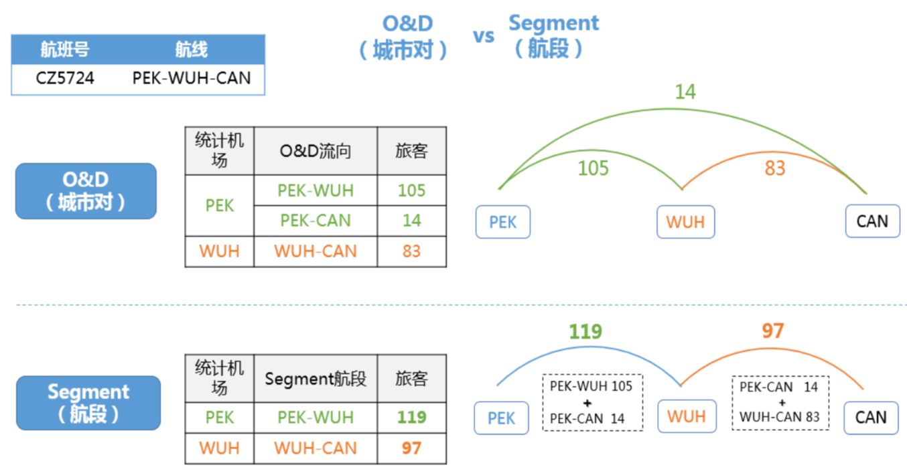
显然，如果我们不明白城市对运量与航段运量的真正含义，就可能混淆这两种指标的统计计算规则。这种术语理解错误带来的缺陷往往难以发现，除非业务分析人员、开发人员与测试人员能就此知识达成一致的正确理解。
在领域建模过程中，我们往往需要在文档中建立一个大家一致认可的术语表。术语表中需要包括整个团队精炼出来的术语概念，以及对该术语的清晰明白的解释。若有可能，可以为难以理解的术语提供具体的案例。该术语表是领域建模的关键，是模型的重要参考规范，能够真实地反应模型的领域意义。一旦发生变更，也需要及时地对其进行更新。
在维护领域术语表时，一定需要给出对应的英文术语，否则可能直接影响到代码实现。在我们的一个产品开发中，根据需求识别出了“导入策略”的领域概念。由于这个术语非常容易理解，团队就此达成了一致，却没有明确给出英文名称，最后导致前端和后端在开发与“导入策略”有关的功能时，分别命名为 ImportingPolicy 与 ImportingStrategy，人为地制造了混乱。
即使术语的英语并不需要对外暴露给用户，我们仍然需要引起重视，就算不强调英文翻译的纯正，也必须保证概念的一致性，倘若认为英文表达不合理或者不标准，牵涉到对类、方法的重命名，则需要统一修改。在大数据分析领域中，针对“维度”与“指标”两个术语，我们在过去开发的产品中就曾不幸地衍生出了两套英文定义，分别为 Dimension 与 Metric，Category 与 Measure，这种混乱让整个团队的开发成员痛苦不堪，带来了沟通和交流的障碍。就我而言，我宁愿代码命名没有正确地表达领域概念，也不希望出现命名上的不一致性。倘若在建模之初就明确母语和英语的术语表达，就可以做到正本清源！
领域行为描述
从某种程度讲，领域行为描述可以视为领域术语甄别的一种延伸。领域行为是对业务过程的描述，相对于领域术语而言，它体现了更加完整的业务需求以及复杂的业务规则。在描述领域行为时，需要满足以下要求：
- 从领域的角度而非实现角度描述领域行为
- 若涉及到领域术语，必须遵循术语表的规范
- 强调动词的精确性，符合业务动作在该领域的合理性
- 要突出与领域行为有关的领域概念
例如，在项目管理系统中，倘若我们采用 Scrum 的敏捷项目管理流程，要描述 Sprint Backlog 的任务安排，则编写的用户故事如下所示：
作为一名Scrum Master，
我希望将Sprint Backlog分配给团队成员，
以便于明确Backlog的负责人并跟踪进度。
验收标准：
* 被分配的Sprint Backlog没有被关闭
* 分配成功后，系统会发送邮件给指定的团队成员
* 一个Sprint Backlog只能分配给一个团队成员
* 若已有负责人与新的负责人为同一个人，则取消本次分配
* 每次对Sprint Backlog的分配都需要保存以便于查询
用户故事中的分配（assign）Sprint Backlog 给团队成员就是一种领域行为，这种行为是在特定上下文中由角色触发的动作，并由此产生的业务流程和操作结果。同时，这种领域行为还是一种契约，明确地表达了服务提供者与消费者之间的业务关系，即明确了领域行为的前置条件、执行主语和宾语以及行为的执行结果，这些描述丰富了该领域的统一语言，并直接影响了 API 的设计。例如，针对分配 Sprint Backlog 的行为，用户故事就明确了未关闭的 SprintBacklog 只能分配给一个团队成员，且不允许重复分配，这体现了分配行为的业务规则。验收标准中提出对分配的保存，实际上也帮助我们得到了一个领域概念 SprintBacklogAssignment，该行为的代码实现如下所示：
package practiceddd.projectmanager.scrumcontext.domain;
import practiceddd.projectmanager.dddcore.Entity;
import practiceddd.projectmanager.scrumcontext.domain.exception.InvalidAssignmentException;
import practiceddd.projectmanager.scrumcontext.domain.exception.InvalidBacklogException;
import practiceddd.projectmanager.scrumcontext.domain.role.MemberId;
import practiceddd.projectmanager.scrumcontext.domain.role.TeamMember;
public class SprintBacklog extends Entity<BacklogId> {
private String title;
private String description;
private BacklogStatus backlogStatus;
private MemberId ownerId;
public SprintBacklog(BacklogId backlogId, String title, String description) {
if (title == null) {
throw new InvalidBacklogException("the title of backlog can't be null");
}
this.id = backlogId;
this.title = title;
this.description = description;
this.backlogStatus = new NewBacklogStatus();
}
public SprintBacklogAssignment assignTo(TeamMember assignee) {
if (this.backlogStatus.isClosed()) {
throw new InvalidAssignmentException(
String.format("The closed sprint backlog %s can not be assigned to %s.", this.title, assignee.getName()));
}
if (assignee.isSame(this.ownerId)) {
throw new InvalidAssignmentException(
String.format("The sprint backlog %s not allow to assign to same team member %s.", this.title, assignee.getName()));
}
return new SprintBacklogAssignment(this.id, assignee.id());
}
}
基于“信息专家模式”，SprintBacklog 类的 assignTo() 方法只承担了它能够履行的职责。作为 SprintBacklog 对象自身，它知道自己的状态，知道自己是否被分配过，分配给谁，也知道遵循不同的业务规则会导致产生不同的结果。但由于它不具备发送邮件的知识，针对邮件发送它就无能为力了，因此这里实现的 assignTo() 方法仅仅完成了部分领域行为，若要完成整个用户故事描述的业务场景，需要交给领域服务 AssignSprintBacklogService 来完成：
package practiceddd.projectmanager.scrumcontext.domain;
import org.springframework.beans.factory.annotation.Autowired;
import org.springframework.stereotype.Service;
import practiceddd.projectmanager.scrumcontext.domain.role.TeamMember;
import practiceddd.projectmanager.scrumcontext.interfaces.notification.NotificationService;
@Service
public class AssignSprintBacklogService {
@Autowired
private SprintBacklogRepository backlogRepository;
@Autowired
private SprintBacklogAssignmentRepository assignmentRepository;
@Autowired
private NotificationService notificationService;
public void assign(SprintBacklog backlog, TeamMember assignee) {
SprintBacklogAssignment assignment = backlog.assignTo(assignee);
backlogRepository.update(backlog);
assignmentRepository.add(assignment);
AssignmentNotification notification = new AssignmentNotification(assignment);
notificationService.send(notification.address(), notification.content());
}
}
注意：我在这里将发送邮件的行为定义为领域行为，因此分配 Sprint Backlog 的业务行为被定义在了领域服务 AssignSprintBacklogService 中。如果将发送邮件视为是一种横切关注点，正确的做法则是将发送邮件的调用放到应用服务 SprintBacklogAppService 中。当然，一旦将该逻辑放到了应用服务，就存在如何组装邮件内容的问题，即前述方法中对 AssignmentNotification 实例的创建。针对这些疑问和解决方案在后续内容都有详细介绍。
定义和确定统一语言，将有利于消除领域专家与团队、以及团队成员之间沟通的分歧与误解，使得各种角色能够在相同的语境下行事，避免盲人摸象的“视觉”障碍。领域的统一语言还是领域建模的重要输入与基础，无论是采用“名词动词法”进行领域建模，还是“四色建模法”或“职责驱动建模”，统一语言都是确定模型的重要参考。如果在确定统一语言的同时，针对领域概念与领域行为皆以英文来表达，就直接为编码实现提供了类、方法、属性等命名的依据，保证代码自身就能直观表达领域含义，提高代码可读性。
磨刀不误砍柴工，多花一些时间去打磨统一语言，并非时间的浪费，相反还能改进领域模型乃至编码实现的质量，反过来，领域模型与实现的代码又能避免统一语言的“腐化”，保持语言的常新。重视统一语言，就能促成彼此正面影响的良性循环；否则领域模型与代码会因为沟通不明而泥足深陷，就真是得不偿失了。
012 理解限界上下文
理解限界上下文的定义
什么是限界上下文（Bounded Context）？让我们来读一个句子：
wǒ yǒu kuài dì
到底是什么意思？
我们能确定到底是哪个意思吗？确定不了！！！ 我们必须结合说话人的语气与语境来理解，例如：
- wǒ yǒu kuài dì，zǔ shàng liú xià lái de → 我有块地，祖上留下来的。
- wǒ yǒu kuài dì，shùn fēng de → 我有快递，顺丰的。
在日常的对话中，说话的语气与语境就是帮助我们理解对话含义的上下文（Context）。当我们在理解系统的领域需求时，同样需要借助这样的上下文，而限界上下文的含义就是用一个清晰可见的**边界（Bounded）**将这个上下文勾勒出来，如此就能在自己的边界内维持领域模型的一致性与完整性。Eric Evans 用细胞来形容限界上下文，因为“细胞之所以能够存在，是因为细胞膜限定了什么在细胞内，什么在细胞外，并且确定了什么物质可以通过细胞膜。”这里，细胞代表上下文，而细胞膜代表了包裹上下文的边界。
因此，若要理解限界上下文，就需要从 Bounded 与 Context 这两个单词的含义来理解，Context 表现了业务流程的场景片段。整个业务流程由诸多具有时序的活动组成，随着流程的进行，不同的活动需要不同的角色参与，并导致上下文因为某个活动的产生随之发生切换。因而，上下文（Context）其实是动态的业务流程被边界（Bounded）静态切分的产物。
假设有这样一个业务场景：我作为一名咨询师从成都出发前往深圳为客户做领域驱动咨询，无论是从家乘坐地铁到达成都双流机场，还是乘坐飞机到达深圳宝安，再从宝安机场乘坐出租车到达酒店，我的身份都是一名乘客（Passenger），虽然因为交通工具的不同，参与的活动也不尽相同，但无论上车、下车，还是办理登机手续、安检、登机和下机等活动，终归都与交通出行有关。那么，我坐在交通工具上就一定代表我属于这个上下文吗？未必！注意在交通出行上下文中，其实模糊了“我”这个概念，强调了“乘客”这个概念，这是参与到该上下文的角色（Role），或者说“身份”。
例如，我在飞机上，忽然想起给客户提供的咨询方案还需要完善，于是我拿出电脑，在一万米高空上继续思考我的领域驱动设计方案，这时的我虽然还在飞机上，身份却切换成了一名咨询师（Consultant）。当我作为乘客乘坐出租车前往酒店，并到前台办理入住手续时，我又“撕下了乘客的面具”，摇身一变成为了酒店的宾客（Guest）。次日早晨，我在酒店餐厅用完早餐后，离开酒店前往客户公司。随着我走出酒店这个活动的发生，酒店上下文又切换回交通出行。当我到达客户所在地时，面对客户，我开始以一名咨询师身份与客户团队交谈，了解他们的咨询目标与现有痛点。我制定咨询计划与方案，并与客户一起评审咨询方案，这时的上下文就切换为咨询工作了。巧合的是，无论是交通出行还是酒店，都需要支付费用，支付的费用虽然不同，支付的行为也有所差别，需要用到的领域知识却是相同的，因此这个活动又可以归为支付上下文。
上下文在流程中的切换犹如电影画面的场景切换，相同的人物扮演了不同的角色，在不同的上下文参与了不同的活动。由于活动的目标发生了改变，履行的职责亦有所不同，上述场景如下图所示：
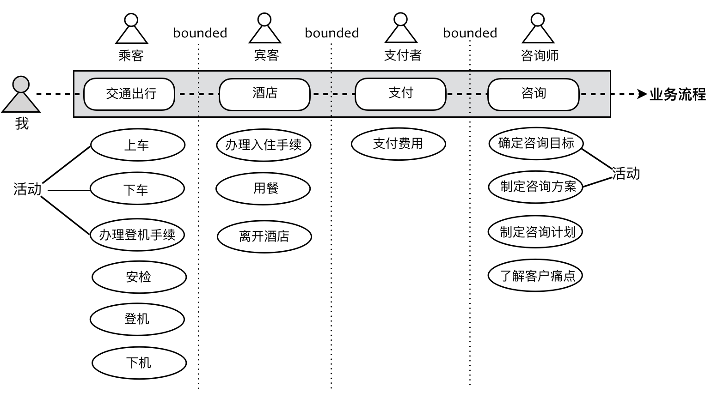
整个业务流程由诸多活动（Actions）组成，参与这些活动的有不同的角色。在每一个上下文中，角色与角色之间通过活动产生协作，以满足业务流程的需求。这些活动是分散的，活动的目标也不相同，但在同一个上下文中，这些活动却是为同一个目标提供服务。
因此，在理解限界上下文时，我们需要重视几个关键点：
- 知识：不同的限界上下文需要的领域知识是不相同的，这实则就是业务相关性，参与到限界上下文中的活动也与“知识”有关。如果执行该活动却不具备对应知识，则说明对活动的分配不合理；如果该活动的目标与该限界上下文保持一致，却缺乏相应知识，则说明该活动需要与别的限界上下文协作。
- 角色：一定要深入思考参与到这个上下文的对象究竟扮演了什么样的角色，以及角色与角色在这个上下文中是如何协作的。
- 边界：限界上下文按照不同关注点进行分离，各自的边界则根据耦合关系的强弱来确定，越是关系最弱的地方，越是需要划定边界。
我们需要根据业务相关性、耦合的强弱程度、分离的关注点对这些活动进行归类，找到不同类别之间存在的边界，这就是限界上下文的含义。上下文（Context）是业务目标，限界（Bounded）则是保护和隔离上下文的边界，避免业务目标的不单一而带来的混乱与概念的不一致。
理解限界上下文的价值
Eric Evans 是在战略设计中引入限界上下文概念的，他认为：
既然无法维护一个涵盖整个企业的统一模型，那就不要再受到这种思路的限制。通过预先决定什么应该统一，并实际认识到什么不能统一，我们就能够创建一个清晰的、共同的视图，然后需要用一种方式来标记出不同模型之间的边界和关系。
为了解决多个模型的问题，我们需要明确地定义模型的范围——模型的范围是软件系统中一个有界的部分，这部分只应用一个模型，并尽可能使其保持统一。团队组织中必须一致遵守这个定义。
明确地定义模型所应用的上下文。根据团队的组织、软件系统的各个部分的用法以及物理表现（代码和数据库模式等）来设置模型的边界，在这些边界中严格保持模型的一致性，而不要受到边界之外问题的干扰和混淆。
基于以上引用的三段描述，我们可以清晰地勾勒出 Eric Evans 对于限界上下文的着眼点，那就是对边界的控制。倘若将上下文视为一国，则领域之王就应该捍卫国土疆域，国界内的一寸一尺之地都是神圣不可侵犯的。因而，我们要理解限界上下文的价值，就须得从边界来理解。
观察角度的不同，限界上下文划定的边界也有所不同。大体可以分为如下三个方面：
- 领域逻辑层面：限界上下文确定了领域模型的业务边界，维护了模型的完整性与一致性，从而降低系统的业务复杂度。
- 团队合作层面：限界上下文确定了开发团队的工作边界，建立了团队之间的合作模式，避免团队之间的沟通变得混乱，从而降低系统的管理复杂度。
- 技术实现层面：限界上下文确定了系统架构的应用边界，保证了系统层和上下文领域层各自的一致性，建立了上下文之间的集成方式，从而降低系统的技术复杂度。
这三种边界体现了限界上下文对不同边界的控制力。业务边界是对领域模型的控制，工作边界是对开发协作的控制，应用边界是对技术风险的控制。引入限界上下文的目的，其实不在于如何划分边界，而在于如何控制边界。
我曾经有机会向 EventStorming 的创始人 Alberto Brandolini 请教他对限界上下文的理解，他做了一个非常精彩的总结：bounded context are a mean of safety（限界上下文意味着安全）。这里的 safety 做何解呢？他的意思是：being in control and no surprise，对限界上下文是可控制的，就意味着你的系统架构与组织结构都是可控的；没有出乎意料的惊讶，虽然显得不够浪漫，但其实只有这样才能使得团队避免过大的压力。Alberto 告诉我：
Surprise leads to stress and stress leads to no learning, just hard work. （出乎意料的惊讶会导致压力，而压力就会使得团队疲于加班，缺少学习。）
这是真正看破限界上下文本质的大师高论！显然，限界上下文并不是像大多数程序员理解的那样，是模块、服务、组件或者子系统，而是你对领域模型、团队合作以及技术风险的控制。在《Entity Framework 模型在领域驱动设计限界上下文中的应用》一文中，作者 Juelie Lerman 认为：“当开发一个具有大型领域模型的超大规模的应用程序时，与设计一个单一的大领域模型相比，将大领域模型根据应用程序的业务需要**“切割”成一系列较小的模型是非常重要的，我们也往往能够从中获得更多的好处。”她还提到：“更小的模型为我们的软件设计和开发带来了更多的好处，它使得团队能够根据自己的设计和开发职责确定更为明确的工作边界**。小的模型也为项目带来了更好的可维护性：由于上下文由边界确定，因此对其的修改也不会给整个模型的其他部分造成影响。”显然，通过限界上下文对领域模型进行分解，就能保证在其边界内创建的模型内聚性更高，在边界隔离下，受到变化的影响也更小，反映为团队合作的工作边界，就更容易保证团队之间的沟通与协作。
限界上下文是“分而治之”架构原则的体现，我们引入它的目的其实为了控制（应对）软件的复杂度，它并非某种固定的设计单元，我们不能说它就是模块、服务或组件，而是通过它来帮助我们做出高内聚低耦合的设计。只要遵循了这个设计，则限界上下文就可能成为模块、服务或组件。所以，文章《Bounded Contexts as a Strategic Pattern Beyond DDD》才会写到：“限界上下文体现的是高层的抽象机制，它并非编程语言或框架的产出工件，而是体现了人们对领域思考的本质。”
宋代禅宗大师青原行思提出参禅的三重境界：
- 参禅之初：看山是山，看水是水；
- 禅有悟时：看山不是山，看水不是水；
- 禅中彻悟：看山仍然山，看水仍然是水。
我觉得理解限界上下文与模块、服务或组件的关系，似乎也存在这三重境界：
- 参悟之初：模块、服务或组件就是限界上下文。
- 当有悟时：模块、服务或组件不是限界上下文。
- 彻底悟透：模块、服务或组件仍然是限界上下文。
能理解吗？——更糊涂了！好吧，以上三重境界纯属忽悠，还是让我上一点干货吧。注意了，我要提到一个重要的概念，就是“自治”，抛开模块、服务或组件对你的影响，请大家先把限界上下文看做是一个“自治”的单元。所谓“自治”就是满足四个特征：最小完备、稳定空间、自我履行、独立进化。如下图所示的自治单元就是限界上下文，映射到编码实现，则可能是模块、组件或服务：
最小完备是实现“自治”的基本条件。所谓“完备”，是指自治单元履行的职责是完整的，无需针对自己的信息去求助别的自治单元，这就避免了不必要的依赖关系。而“最小完备”则进一步地限制了完备的范围，避免将不必要的职责被错误地添加到该自治单元上。对于限界上下文而言，就是要根据业务价值的完整性进行设计。例如，对于支付上下文，其业务价值就是“安全地完成在线支付业务”，那么在确定限界上下文的时候，就应该以完成该业务价值的最小功能集为设计边界。
自我履行意味着由自治单元自身决定要做什么。从拟人的角度来思考，就是这些自治单元能够对外部请求做出符合自身利益的明智判断，是否应该履行该职责，由限界上下文拥有的信息来决定。例如，可以站在自治单元的角度去思考：“如果我拥有了这些信息，我究竟应该履行哪些职责？”这些职责属于当前上下文的活动范围，一旦超出，就该毫不犹豫地将不属于该范围的请求转交给别的上下文。例如，在当订单上下文履行了验证订单的职责之后，需要执行支付活动时，由于与支付相关的业务行为要操作的信息已经超出了订单上下文的范畴，就应该将该职责转移到支付上下文。自我履行其实意味着对知识的掌握，为避免风险，你要履行的职责一定是你掌握的知识范畴之内。
稳定空间指的是减少外界变化对限界上下文内部的影响。自治的设计就是要划定分属自己的稳定空间，让自治单元拥有空间内的掌控权，保持空间的私密性，开放空间接口应对外部的请求。划分自治空间，需要找到限界上下文之间的间隙处，然后依势而为，沿着间隙方向顺势划分，而所谓“间隙”，其实就是依赖最为薄弱之处。例如，在电商系统中，管理商品上架、下架与评价商品都与商品直接相关，但显然评价商品与商品的依赖关系更弱。倘若需要分解限界上下文，保证上下文的稳定性，就可以将评价商品的职责从商品上下文中分离出去，但却不能分离商品上架和下架功能。稳定空间符合开放封闭原则（OCP），即对修改是封闭的，对扩展是开放的，该原则其实体现了一个单元的封闭空间与开放空间。封闭空间体现为对细节的封装与隐藏，开放空间体现为对共性特征的抽象与统一，二者共同确保了整个空间的稳定。
独立进化与稳定空间刚好相反，指的是减少限界上下文的变化对外界的影响。如果借用限界上下文的上下游关系来阐释，则稳定空间寓意下游限界上下文，无论上游怎么变，我自岿然不动；独立进化寓意上游限界上下文，无论下游有多少，我凌寒独自开。实现上看，要做到独立进化，就必须保证对外公开接口的稳定性，因为这些接口往往被众多消费者使用，一旦修改，就会牵一发而动全身。一个独立进化的限界上下文，需要接口设计良好，符合标准规范，并在版本上考虑了兼容与演化。
自治的这四个要素是相辅相成的。最小完备意味着职责是完备的，从而减少了变化的可能；自我履行意味着自治单元能够智能地判断行为是否应该由其履行，当变化发生时，也能聪明审慎地做出合理判断；稳定空间通过隐藏细节和开放抽象接口来封装变化；独立进化则通过约束接口的规范与版本保证内部实现的演化乃至于对实现进行全面地替换。最小完备是基础，只有赋予了限界上下文足够的信息，才能保证它的自我履行。稳定空间与独立进化则一个对内一个对外，是对变化的有效应对，而它们又是通过最小完备和自我履行来保障限界上下文受到变化的影响最小。
这四个要素又是高内聚低耦合思想的体现。我们需要根据业务关注点和技术关注点，尽可能将强相关性的内容放到同一个限界上下文中，同时降低限界上下文之间的耦合。对于整个系统架构而言，不同的限界上下文可以采用不同的架构风格与技术决策，而在每个限界上下文内部保持自己的技术独立性与一致性。由于限界上下文边界对技术实现的隔离，不同限界上下文内部实现的多样性并不会影响整体架构的一致性。
013 限界上下文的控制力（上）
既然我们认为：引入限界上下文的目的，不在于如何划分，而在于如何控制边界。因此，我们就需要将对限界上下文的关注转移到对控制边界的理解。显然，对应于统一语言，限界上下文是语言的边界，对于领域模型，限界上下文是模型的边界，二者可以帮助我们界定问题域（Problem Space）。对于系统的架构，限界上下文确定了应用边界和技术边界，进而帮助我们确定整个系统及各个限界上下文的解决方案。可以说，限界上下文是连接问题域与解决方案域的重要桥梁。
下面将分别针对业务边界、工作边界与应用边界来深入探讨限界上下文的这种控制力。
限界上下文分离了业务边界
限界上下文首先分离了业务边界，用以约束不同上下文的领域模型。这种对领域模型的划分符合架构设计的基本原则，即从更加宏观和抽象的层次去分析问题域，如此既可以避免分析者迷失在纷繁复杂的业务细节知识中，又可以保证领域概念在自己的上下文中的一致性与完整性。
例如，在电商系统中，主要的产品实体 Product 在不同的限界上下文具有不同的含义，关注的属性与行为也不尽相同。在采购上下文，需要关注产品的进价、最小起订量与供货周期；在市场上下文中，则关心产品的品质、售价，以及用于促销的精美图片和销售类型；在仓储上下文中，仓库工作人员更关心产品放在仓库的哪个位置，产品的重量与体积，是否易碎品以及订购产品的数量；在推荐上下文中，系统关注的是产品的类别、销量、收藏数、正面评价数、负面评价数。
对于这种情况，我们不应该将这一概念建模为单个类，否则就可能导致不同限界上下文对应的领域模型为了代码重用，而共享这个共同的 Product 类，导致限界上下文之间产生代码的耦合，随之而来的，与领域模型相对应的数据模型也要产生耦合，如下图所示：
产品（Product）实体的设计也违背了“单一职责原则（SRP）”，它包含了太多本应分离的职责，适用于不同的上下文，从而变成了一个臃肿的上帝类：
public class Product {
private Identity id;
private String name;
private Category category;
private Preriod leadTime;
private int minimumOrderQuant;
private Weight weight;
private Volumn volumn;
private int quantity;
private long annualSales;
private long favoritePoints;
private long positiveComments;
private long negetiveComments;
public Price priceFor(CustomerType customerType) {}
public PurchaseOrder buyFrom(Supplier supplier) {}
public Location allocate() {}
public boolean isFragile() {}
public Image[] loadImagesFrom(String filePath) {}
public Recommendations similar() {}
}
如果我们将产品看做是参与业务场景的角色，进而在不同场景中考虑对象之间的协作；那么，是否可以遵循接口隔离原则（ISP）对 Product 实体类进行抽象呢？例如，在不同的限界上下文（作为 Product 的调用者）中，确定 Product 类扮演的不同角色，然后基于面向接口设计的原则为其定义多个细粒度的接口，如 Allocation 接口、Recommendation 接口、ImageLoader 接口等。这样的接口即 Martin Fowler 提出的角色接口（Role Interface），然后，再让定义的 Product 类去实现这多个接口，体现了“大对象小角色”的设计思路。
如果只考虑设计层面，这样基于接口隔离原则进行设计的方案是合理的。例如，我们可以在各自的限界上下文中定义这些接口，然而，实现了这些接口的 Product 类又应该放在哪里？譬如说，我们可以引入一个产品上下文，然后在其内部定义 Product 类去实现这些接口。这样的设计是不合理的，它导致了产品上下文同时依赖其余四个限界上下文，形成了架构层面上限界上下文之间不必要的耦合，如下所示：
引入的限界上下文对设计产生了影响。在考虑设计方案时，我们需要时刻警醒限界上下文边界的控制力。限界上下文内部的协作成本要远远低于限界上下文之间的协作成本。在面向对象设计中，行之有效的“接口隔离原则”如果跨越了多个限界上下文，就变得不合理了。为了避免重复，我们引入了耦合，这种设计上的顾此失彼是不可取的。要降低耦合同时又能避免重复，更好的解决方案是让每一个限界上下文拥有自己的领域模型，该领域模型仅仅满足符合当前上下文需要的产品唯一表示。这其实是领域驱动设计引入限界上下文的主要目的：
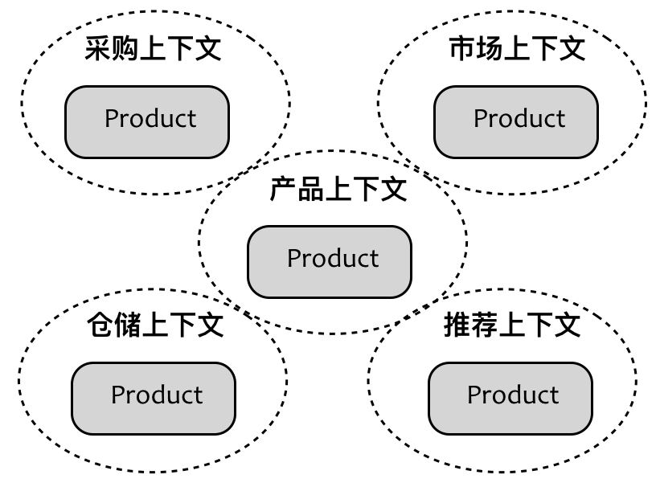
虽然不同的限界上下文都存在相同的 Product 领域模型，但由于有了限界上下文作为边界，使得我们在理解领域模型时，是基于当前所在的上下文作为概念语境的。这样的设计既保证了限界上下文之间的松散耦合，又能够维持限界上下文各自领域模型的一致性，此时的限界上下文成为了保障领域模型不受污染的边界屏障。
限界上下文明确了工作边界
一个理想的开发团队规模最好能符合亚马逊公司提出的“Two-Pizza Teams”，即 2PTs 规则，该规则认为“让团队保持在两个披萨能让成员吃饱的小规模”，大体而言，就是将团队成员人数控制在 7~10 人左右。为何要保证这样的规模呢？因为小团队能够更有效保证有效的沟通，如下图所示：
2PTs 规则自有其科学依据。如果我们将人与人之间的沟通视为一个“联结（link）”，则联结的数量遵守如下公式，其中 n 为团队的人数：
[Math Processing Error]N(link)=n(n−1)2
联结的数量直接决定了沟通的成本，以 6 人团队来计算，联结的数量为 15。如果在原有六人团队的规模上翻倍，则联结数陡增至 66。对于传统项目管理而言，一个 50 人的团队其实是一个小型团队，根据该公式计算得出的联结数竟然达到了惊人的 1225。如下图所示，我们可以看到随着团队规模的扩大，联结数的增长以远超线性增长的速度发展，因而沟通的成本也将随之发生颠覆性的改变：
随着沟通成本的增加，团队的适应性也会下降。Jim Highsmith 在 Adaptive Software Development 一书中写道：
最佳的单节点（你可以想象成是通信网络中可以唯一定位的人或群体）联结数是一个比较小的值，它不太容易受网络规模的影响。即使网络变大，节点数量增加，每个节点所拥有的联结数量也一定保持着相对稳定的状态。
要做到人数增加不影响到联结数，就是要找到这个节点网络中的最佳沟通数量，也即前面提到的 2PTs 原则。然而团队规模并非解决问题的唯一办法，如果在划分团队权责时出现问题，则团队成员的数量不过是一种组织行为的表象罢了。如果结合领域驱动设计的需求，则我们应该考虑在保持团队规模足够小的前提下，按照软件的特性（Feature）而非组件（Component）来组织软件开发团队，这就是所谓“特性团队”与“组件团队”之分。
传统的“组件团队”强调的是专业技能与功能重用，例如，熟练掌握数据库开发技能的成员组建一个数据库团队，深谙前端框架的成员组建一个前端开发团队。这种遵循“专业的事情交给专业的人去做”原则的团队组建模式，可以更好地发挥每个人的技能特长，然而牺牲的却是团队成员业务知识的缺失，客户价值的漠视。这种团队组建模式也加大了团队之间的沟通成本，导致系统的整体功能无法持续和频繁的集成。例如，由于业务变更需要针对该业务特性修改用户描述的一个字段，就需要从数据存储开始考虑到业务模块、服务功能，最后到前端设计。一个小小的修改就需要横跨多个组件团队，这种交流的浪费是多么不必要啊。在交流过程中，倘若还出现了知识流失，或者沟通不到位导致修改没有实现同步，就会带来潜在的缺陷。这种缺陷非常难以发现，即使在高覆盖率的集成测试下暴露了，缺陷定位、问题修复又是一大堆破事儿，需要协调多个团队。邮件沟通、电话沟通、你来我往、扯皮推诿，几天的时光如白驹过隙、转眼就过，问题还未必得到最终的解决。倘若这样的组件团队还是不同供应商的外包团队，分处于不同城市，可以想象这样的场景是多么“美好”！很“幸运”，我在参与某汽车制造商的零售商管理系统时，作为 CRM 模块的负责人，就摊上了这样的破事儿，如今思之，仍然不寒而栗啊！
为了规避这些问题，组建特性团队更有必要。所谓“特性团队”，就是一个端对端的开发垂直细分领域的跨职能团队，它将需求分析、架构设计、开发测试等多个角色糅合在一起，专注于领域逻辑，实现该领域特性的完整的端对端开发。一个典型的由多个特性团队组成的大型开发团队如下图所示：
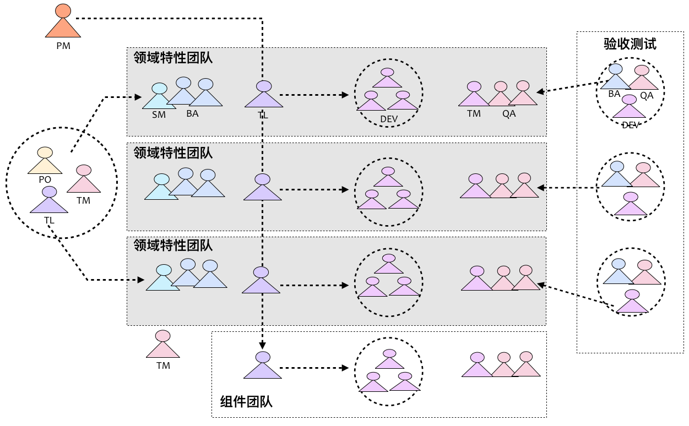
如上图所示，我们按照领域特性来组建团队，使得团队成员之间的沟通更加顺畅，至少针对一个领域而言，知识在整个特性团队都是共享的。当然，我们在上图中也看到了组件团队的存在。这是因为在许多复杂软件系统中，毕竟存在一些具有相当门槛的专有功能，需要具有有专门知识或能够应对技术复杂度的团队成员去解决那些公共型的基础型的问题。二者的结合可以取长补短，但应以组建特性团队为主。
特性团队专注的领域特性，是与领域驱动设计中限界上下文对应的领域是相对应的。当我们确定了限界上下文时，其实也就等同于确定了特性团队的工作边界，确定了限界上下文之间的关系，也就意味着确定了特性团队之间的合作模式；反之亦然。之所以如此，则是因为**康威定律（Conway's Law）**为我们提供了理论支持。
康威定律认为：“任何组织在设计一套系统（广义概念上的系统）时，所交付的设计方案在结构上都与该组织的沟通结构保持一致。” 在康威定律中起到关键杠杆作用的是沟通成本。如果同一个限界上下文的工作交给了两个不同的团队分工完成，为了合力解决问题，就必然需要这两个团队进行密切的沟通。然而，团队间的沟通成本显然要高于团队内的沟通成本，为了降低日趋增高的成本，就需要重新划分团队。反过来，如果让同一个团队分头做两个限界上下文的工作，则会因为工作的弱相关性带来自然而然的团队隔离。
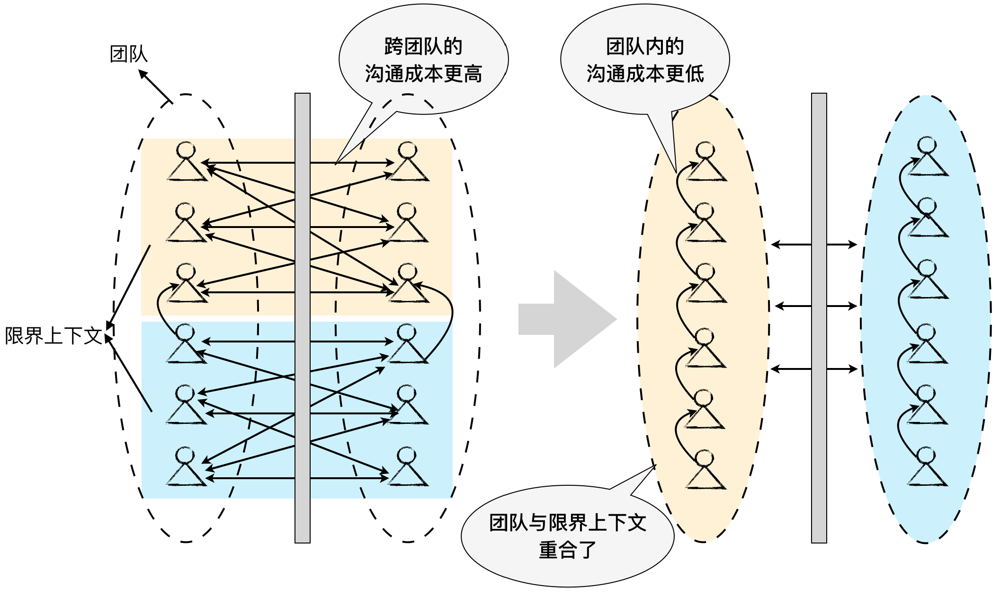
如上图所示，我们可以设想这样一种场景，如果有两个限界上下文的工作，分配给两个不同的团队。分配工作时，却没有按照限界上下文的边界去组建团队，即每个团队会同时承担两个限界上下文的工作。试想，这会造成多少不必要的沟通成本浪费？借用 ORM（Object Relational Mapping，对象关系映射）的概念，我将这种职责分配的错位称之为“限界上下文与团队的阻抗不匹配”。如果能够将团队与限界上下文重合，就能够降低沟通成本，打造高效的领域特性团队，专注于属于自己的限界上下文开发。
014 限界上下文的控制力（下）
限界上下文封装了应用边界
架构师在划分限界上下文时，不能只满足于业务边界的确立，还得从控制技术复杂度的角度来考虑技术实现，从而做出对系统质量属性的响应与承诺，这种技术因素影响限界上下文划分的例子可谓是不胜枚举。
高并发
一个外卖系统的订单业务与门店、支付等领域存在业务相关性，然而考虑外卖业务的特殊性，它往往会在某个特定的时间段比如中午 11 点到 13 点会达到订单量的高峰值。系统面临高并发压力，同时还需要快速地处理每一笔外卖订单，与电商系统的订单业务不同，外卖订单具有周期短的时效性，必须在规定较短的时间内走完从下订单、支付、门店接单到配送等整个流程。如果我们将订单业务从整个系统中剥离出来，作为一个单独的限界上下文对其进行设计，就可以从物理架构上保证它的独立性，在资源分配上做到高优先级地扩展，在针对领域进行设计时，尽可能地引入异步化与并行化，来提高服务的响应能力。
功能重用
对于一个面向企业雇员的国际报税系统，报税业务、旅游业务与 Visa 业务都需要账户功能的支撑。系统对用户的注册与登录有较为复杂的业务处理流程。对于一个新用户而言，系统会向客户企业的雇员发送邀请信，收到邀请信的用户只有通过了问题验证才能成为合法的注册用户，否则该用户的账户就会被锁定，称之为 Registration Locked。在用户使用期间，若违背了系统要求的验证条件，也可能会根据不同的条件锁定账户，分别称之为 Soft Locked 和 Hard Locked。只有用户提供了可以证明其合法身份的材料，其账户才能被解锁。
账户管理并非系统的核心领域，但与账户相关的业务逻辑却相对复杂。从功能重用的角度考虑，我们应该将账户管理作为一个单独的限界上下文，以满足不同核心领域对这一功能的重用，避免了重复开发和重复代码。
实时性
在电商系统中，商品自然是核心，而价格（Price）则是商品概念的一个重要属性。倘若仅仅从业务的角度考虑，在进行领域建模时，价格仅仅是一个普通的领域值对象，可倘若该电商系统的商品数量达到数十亿种，每天获取商品信息的调用量在峰值达到数亿乃至数百亿次时，价格就不再是业务问题，而变成了技术问题。对价格的每一次变更都需要及时同步，真实地反馈给电商客户。
为了保证这种在高并发情况下的实时性，我们就需要专门针对价格领域提供特定的技术方案，例如，通过读写分离、引入 Redis 缓存、异步数据同步等设计方法。此时，价格领域将作为一个独立的限界上下文，形成自己与众不同的架构方案，同时，为价格限界上下文提供专门的资源，并在服务设计上保证无状态，从而满足快速扩容的架构约束。
第三方服务集成
一个电商系统需要支持多种常见的支付渠道，如微信支付、支付宝、中国银联以及各大主要银行的支付。买家在购买商品以及进行退货业务时，可以选择适合自己的支付渠道完成支付。电商系统需要与这些第三方支付系统进行集成。不同的支付系统公开的 API 并不相同，安全、加密以及支付流程对支付的要求也不相同。
在技术实现上，一方面我们希望为支付服务的客户端提供完全统一的支付接口，以保证调用上的便利性与一致性，另一方面我们希望能解除第三方支付服务与电商系统内部模块之间的耦合，避免引起“供应商锁定（Vender Lock）”，也能更好地应对第三方支付服务的变化。因此，我们需要将这种集成划分为一个单独的限界上下文。
遗留系统
当我们在运用领域驱动设计对北美医疗内容管理系统提出的新需求进行设计与开发时，这个系统的已有功能已经运行了数年时间。我们的任务是在现有系统中增加一个全新的 Find & Replace 模块，其目的是为系统中的医疗内容提供针对医疗术语、药品以及药品成分的查询与替换。这个系统已经定义了自己的领域模型。这些领域模型与新增模块的领域有相似之处。但是，为了避免已有模型对新开发模块的影响，我们应该将这些已有功能视为具有技术债的遗留系统，并将该遗留系统整体视为一个限界上下文。
通过这个遗留系统限界上下文的边界保护，就可以避免我们在开发过程中陷入遗留系统庞大代码库的泥沼。由于新增需求与原有系统在业务上存在交叉功能，因而可能失去了部分代码的重用机会，却能让我们甩开遗留系统的束缚，放开双手运用领域驱动设计的思想建立自己的领域模型与架构。只有在需要调用遗留系统的时候，作为调用者站在遗留系统限界上下文之外，去思考我们需要的服务，然后酌情地考虑模型对象之间的转换以及服务接口的提取。
如上的诸多案例都是从技术层面而非业务层面为系统划分了应用边界，这种边界是由限界上下文完成的，通过它形成了对技术实现的隔离，避免不同的技术方案选择互相干扰导致架构的混乱。
案例：生成税务报告的技术风险
国际税务系统需要在政府指定的周期提交税务报告，凡是满足条件的 Assignee 都需要在规定时间内生成税务报告。在生成税务报告时，需要对 Assignee 提交的 Questionnaire 数据进行合并，并基于税收策略与 Assignee 个人情况执行计算。生成税务报告的时序图如下所示：
代码如下所示：
public class TaxReportGenerator {
@Service
private HtmlReportProvider provider;
@Service
private PdfConverter converter;
@Repository
private ReportRepository repository;
public void generateReports(String calendarReportName) {
Byte[] bytes = provider.getHtmlBytes(calendarReportName);
Byte[] pdfBytes = converter.getPdfBytes(bytes, provider.getTitle());
repository.save(new TaxReport(pdfBytes));
}
}
由于每个 Assignee 的报告内容多，生成的 PDF 文件较大，使得生成税务报告的单位时间也较长。在最初用户量较少的情况下，所有税务报告的生成时间在客户预期范围内，因而并未针对报告生成功能做特别的架构设计。后来，随着系统的 Assignee 用户数增多，在提交税务报告的高峰期时，报告生成的时间越来越长。以高峰期需要提交 2000 个税务报告为例，如果每个税务报告的提交时间为 1 分钟，在只有一个 worker 的情况下，我们需要2000*1/60=33小时。
由于单个税务报告的生成性能已经达到瓶颈，没有优化的空间，因而需要在架构层面对方案进行优化，包括如下两方面：
- 引入消息队列，将整个税务报告生成过程拆分为消息队列的生产者和消费者。处于应用服务器一端的生产者仅负责收集税务报告需要的数据，而将生成报告的职责交给消息队列的消费者，从而减轻应用服务器的压力。
- 将报告生成识别为限界上下文，定义为可以单独部署的微服务，以便于灵活地实现水平扩展。
如下图是我们基于技术实现识别出来的 report 限界上下文。在上下文边界内，引入了消息队列。server 作为生成者，在收集了税务数据后组装消息，然后将消息入队；作为消费者的 worker 订阅该消息，一旦消息传递到达，则负责生成报告：
无论是 server 还是 worker，皆为并行执行，且在理论上可以无限制地水平扩展。倘若在性能上无法满足要求，我们可以增加 server 或 worker 节点。例如，我们希望所有税务报告能够在 4 小时内处理完毕，通过公式2000*1/60/4计算，预估需要 7 个 worker 并行执行即可满足目标。
015 识别限界上下文（上）
不少领域驱动设计的专家都非常重视限界上下文。Mike 在文章《DDD: The Bounded Context Explained》中写道：“限界上下文是领域驱动设计中最难解释的原则，但或许也是最重要的原则，可以说，没有限界上下文，就不能做领域驱动设计。在了解聚合根（Aggregate Root）、聚合（Aggregate）、实体（Entity）等概念之前，需要先了解限界上下文。”，然而，现实却是很少有文章或著作专题讲解该如何识别限界上下文。
我曾经向《实现领域驱动设计》的作者 Vaughn Vernon 请教如何在领域驱动设计中识别出正确的限界上下文？他思索了一会儿，回答我：“By experience.（凭经验）”，这是一个机智的回答，答案没有错，可是也没有任何借鉴意义，等于说了一句正确的废话。
在软件开发和设计领域，任何技能都是需要凭借经验积累而逐步提升的。然而作为一种设计方法，领域驱动设计强调了限界上下文的重要性，却没有提出一个值得参考并作为指引的过程方法，这是不负责任的。
Andy Hunt 在《程序员的思维修炼》这本书中分析了德雷福斯模型的 5 个阶段：新手、高级新手、胜任者、精通者和专家。对于最高阶段的“专家”，Andy Hunt 得到一个有趣的结论：“专家根据直觉工作（Experts work from intuition），而不需要理由。”，这似乎充满了神秘主义，然而这种专家的直觉实际上是通过不断的项目实践千锤百炼出来的，也可以认为是经验的累积。经验的累积过程需要方法，否则所谓数年经验不过是相同的经验重复多次罢了，没有价值。Andy Hunt 认为需要给新手提供某种形式的规则去参照，之后，高级新手会逐渐形成一些总体原则，然后通过系统思考和自我纠正，建立或者遵循一套体系方法，就能从高级新手慢慢成长为胜任者、精通者。因此，从新手到专家是一个量变引起质变的过程，在没有能够养成直觉的经验之前，我们需要有一套方法。
我在一些项目中尝试着结合了诸多需求分析方法与设计原则，慢慢摸索出了属于自己的一套体系。归根结底，限界上下文就是“边界”，这与面向对象设计中的职责分配其实是同一道理。限界上下文的识别并不是一蹴而就的，需要演化和迭代，结合着我对限界上下文的理解，我认为通过从业务边界到工作边界再到应用边界这三个层次抽丝剥茧，分别以不同的视角、不同的角色协作来运用对应的设计原则，会是一个可行的识别限界上下文的过程方法。当然，这个过程相对过重，如果仅以此作为输出限界上下文的方法，未免有些得不偿失。需要说明的是，这个过程除了能够帮助我们更加准确地识别限界上下文之外，还可以帮助我们分析需求、识别风险、确定架构方案。整体过程如下图所示：
从业务边界识别限界上下文
领域驱动设计围绕着“领域”来开展软件设计。在明确了系统的问题域和业务期望后，开发团队与领域专家经过充分地沟通与交流，可以梳理出主要的业务流程，这些业务流程体现了各种参与者在这个过程中通过业务活动共同协作，最终完成具有业务价值的领域功能。显然，业务流程结合了参与角色（Who）、业务活动（What）和业务价值（Why）。在业务流程的基础上，我们就可以抽象出不同的业务场景，这些业务场景又由多个业务活动组成，我们可以利用前面提到的领域场景分析方法剖析场景，以帮助我们识别业务活动，例如采用用例对场景进行分析，此时，一个业务活动实则就是一个用例。
例如，在针对一款文学阅读产品进行需求分析时，我们得到的业务流程为：
- 登录读者根据作品名或者作者名查询自己感兴趣的作品。在找到自己希望阅读的作品后，开始阅读。若阅读的作品为长篇，可以按照章节阅读，倘若作品为收费作品，则读者需要支付相应的费用，支付成功后可以阅读购买后的作品。在阅读时，倘若读者看到自己喜欢的句子或段落，可以作标记，也可以撰写读书笔记，还可以将自己喜欢的内容分享给别的朋友。读者可以对该作品和作者发表评论，关注自己喜欢的作品和作者。
- 注册用户可以申请成为驻站作者。审核通过的作者可以在创作平台上发布自己的作品，发布作品时，可以根据需要设置作品的章节。作者可以在发布作品之前预览作品，无论作品是否已经发布，都可以对作品的内容进行修改。作者可以设置自己的作品为收费或免费作品，并自行确定阅读作品所需的费用。如果是新作品发布，系统会发送消息通知该作者的关注者；若连载作品有新章节发布，系统会发送消息通知该作品的关注者。
- 驻站作者可以为自己的作品建立作品读者群，读者可以申请加入该群，加入群的读者与作者可以在线实时聊天，也可以发送离线信息，或者将自己希望分享的内容发布到读者群中。注册用户之间可以发起一对一的私聊，也可以直接给注册用户发送私信。
通过对以上业务流程进行分析，结合在各个流程环节中需要的知识以及参与角色的不同，可以划分如下业务场景：
- 阅读作品
- 创作作品
- 支付
- 社交
- 消息通知
- 注册与登录
可以看到，业务流程是一个由多个用户角色参与的动态过程，而业务场景则是这些用户角色执行业务活动的静态上下文。从业务流程中抽象出来的业务场景可能是交叉重叠的，例如在读者阅读作品流程与作者创作流程中，都牵涉到支付场景的相关业务。
接下来，我们利用领域场景分析的用例分析方法剖析这些场景。我们往往通过参与者（Actor）来驱动对用例的识别，这些参与者恰好就是参与到场景业务活动的角色。根据用例描述出来的业务活动应该与统一语言一致，最好直接从统一语言中撷取。业务活动的描述应该精准地表达领域概念，且通过尽可能简洁的方式进行描述，通常格式为动宾形式。以阅读作品场景为例，可以包括如下业务活动：
- 查询作品
- 收藏作品
- 关注作者
- 浏览作品目录
- 阅读作品
- 标记作品内容
- 撰写读书笔记
- 评价作品
- 评价作者
- 分享选中的作品内容
- 分享作品链接
- 购买作品
一旦准确地用统一语言描述出这些业务活动，我们就可以从如下两个方面识别业务边界，进而提炼出初步的限界上下文：
- 语义相关性
- 功能相关性
语义相关性
从语义角度去分析业务活动的描述，倘若是相同的语义，可以作为归类的特征。语义相关性主要来自于描述业务活动的宾语。例如，前述业务活动中的查询作品、收藏作品、分享作品、阅读作品都具有“作品”的语义，基于这一特征，我们可以考虑将这些业务活动归为同一类。
识别语义相关性的前提是准确地使用统一语言描述业务活动。在描述时，应尽量避免使用“管理（manage）”或“维护（maintain）”等过于抽象的词语。抽象的词语容易让我们忽视隐藏的领域语言，缺少对领域的精确表达。例如，在文学阅读产品中，我们不能宽泛地写出“管理作品”、“管理作者”、“维护支付信息”等业务活动，而应该挖掘业务含义，只有如此才能得到诸如收藏作品、撰写作品、发布作品、设置作品收费模式、查询支付流水、对账等符合领域知识的描述。当然，这里也有一个业务活动层次的问题。在进行业务分析时，若我们发现只能使用“管理”或“维护”之类的抽象字眼来表述该用户活动时，则说明我们选定的用户活动层次过高，应该继续细化。细化后的业务活动既能更好地表达领域知识，又能让我们更好地按照语义相关性去寻找业务的边界，可谓一举两得。
在进行语义相关性判断时，还需要注意业务活动之间可能存在不同的语义相关性。例如，在文学阅读产品中，查询作品、阅读作品与撰写作品具有“作品”的语义相关，而评价作品与评价作者又具有“评价”的语义相关，究竟应该以哪个语义为准呢？没有标准！我们只能按照相关性的耦合程度进行判断。如果我们将评价视为一个相对独立的限界上下文，则评价作品与评价作者放入评价上下文会更好。
功能相关性
从功能角度去分析业务活动是否彼此关联和依赖，倘若存在关联和依赖，可以作为归类的特征，这种关联性，代表了功能之间的相关性。倘若两个功能必须同时存在，又或者缺少一个功能，另一个功能是不完整的，则二者就是功能强相关的。通常，这种功能相关性极具有欺骗性，因为系统总是包含这样那样彼此依赖的功能。要判断这种依赖关系的强弱，并不比分析人与人之间的关系简单。倘若我们运用用例分析方法，就可以通过用例之间的关系来判别功能相关性，如用例的包含与扩展关系，其中包含关系展现了功能的强相关性。所谓“功能相关性”，指的就是职责的内聚性，强相关就等于高内聚。故而从这个角度看，功能相关性的判断标准恰好符合“高内聚、松耦合”的设计原则。
仍然以前面提到的文学阅读产品为例。发布作品与验证作品内容是功能相关的，且属于用例的包含关系，因为如果没有对发布的作品内容进行验证，就不允许发布作品。对于这种强相关的功能，我们通常都会考虑将其归入到同一个限界上下文。又例如发布作品与设置作品收费模式是功能相关的，但并非强相关，因为设置作品收费模式并非发布作品的前置约束条件，属于用例中的扩展关系。但由于二者还存在语义相关性，因而将其放入到同一个限界上下文中也是合理的。
两个相关的功能未必一定属于同一个限界上下文。例如，购买作品与支付购买费用是功能相关的，且前者依赖于后者，但后者从领域知识的角度判断，却应该分配给支付上下文，我们非但不能将其紧耦合在一起，还应该竭尽所能降低二者之间的耦合度。因此，我在识别限界上下文时，仅仅将“功能相关性”作为一种可行的参考，它并不可靠，却能给你一些提醒。事实上，功能相关性往往会与上下文之间的协作关系有关。由于这种功能相关性恰恰对应了用例之间的包含与扩展关系，它们往往又可成为识别限界上下文边界的关键点。我在后面讲解上下文映射时还会详细阐释。
为业务边界命名
无论是语义相关性还是功能相关性，都是分类业务活动的一种判断标准。一旦我们将识别出来的业务活动进行归类，就自然而然地为它们划定了业务边界，接下来，我们需要对划定的业务边界进行命名，这个命名的过程其实就是识别所有业务活动共同特征，并以最准确地名词来表达该特征。倘若我们划分的业务活动欠妥当，对这个业务边界命名就会成为一种巨大的挑战。例如，我们从建立读者群、加入读者群，发布群内消息、实时聊天、发送离线消息、一对一私聊与发送私信等业务活动找到“社交”的共同特征，因而得到社交上下文。但如果我们将阅读作品、收藏作品与关注作者、查看作者信息放在一个业务边界内，命名就变得有些棘手了，我们总不可能称呼其为“作品与作者”上下文吧！因此，对业务边界的命名可以算作是对限界上下文识别的一种检验手段。
整体而言，从业务边界识别上下文的重点在于“领域”。若理解领域逻辑有误，就可能影响限界上下文的识别。因此，这个阶段需要开发团队与领域专家紧密合作，这个阶段也将是一个充分讨论和分析的过程。它是一个迭代的过程。很多时候，如果我们没有真正去实现这些限界上下文，我们有可能没有完全正确地理解它。当我们距离真正理解业务还有距离的时候，不妨先“草率”地规划它，待到一切都明朗起来，再寻机重构。
016 识别限界上下文（下）
从工作边界识别限界上下文
正如架构设计需要多个视图来全方位体现架构的诸多要素，我们也应借助更多的角度全方位分析限界上下文。如果说为限界上下文划分业务边界，更多的是从业务相关性（内聚）判断业务的归属，那么基于团队合作划分工作边界可以帮助我们确定限界上下文合理的工作粒度。
倘若我们认可第 3-2 课中提及的三个原则或实践：2PTs 规则、特性团队、康威定律，则意味着项目经理需要将一个限界上下文要做的工作分配给大约 7~10 人的特性团队。如此看来，对限界上下文的粒度识别就变成了对工作量的估算。我们并没有严谨的算法去准确估算工作量，可是对于一个有经验的项目经理（或者技术负责人），要进行工作量的大致估算，还是能够办到的。当我们发现一个限界上下文过大，又或者特性团队的工作分配不均匀时，就应该果断对已有限界上下文进行切分。
工作分配的基础在于“尽可能降低沟通成本”，遵循康威定律，沟通其实就是项目模块之间的依赖，这个过程同样不是一蹴而就的。康威认为：
在大多数情况下，最先产生的设计都不是最完美的，主导的系统设计理念可能需要更改。因此，组织的灵活性对于有效的设计有着举足轻重的作用，必须找到可以鼓励设计经理保持他们的组织精简与灵活的方法。
特性团队正是用来解决这一问题的。换言之，当我们发现团队规模越来越大，失去了组织精简与灵活的优势，实际上就是在传递限界上下文过大的信号。项目经理对此需要有清醒认识，当团队规模违背了 2PTs 时，就该坐下来讨论一下如何细分团队的问题了。因此，按照团队合作的角度划分限界上下文，其实是一个动态的过程、演进的过程。
我在给某音乐网站进行领域驱动设计时，通过识别业务相关性划分了如下限界上下文。
- Media Player（online & offline）：提供音频和视频文件的播放功能，区分在线播放与离线播放；
- Music：与音乐相关的业务，包括乐库、歌单、歌词；
- FM Radio：电台；
- Live：直播；
- MV：短视频和 MV；
- Singer：歌手；
- Musician：音乐人，注意音乐人与歌手的区别；
- Music Community：音乐社区；
- File Sharing：包括下载和传歌等与文件有关的功能；
- Tag：支持标签管理，包括音乐的分类如最新、话题等分类标签还有歌曲标签；
- Loyalty：与提高用户粘度有关的功能，如关注、投票、收藏、歌单等功能；
- Utilities：音乐工具，包括音效增强等功能；
- Recommendation：推荐；
- Search：对整个音乐网站内容的搜索，包括对人、歌曲、视频等内容的搜索；
- Activity：音乐网站组织的活动；
- Advertisement：推广与广告；
- Payment：支付。
在识别限界上下文时，我将直播（Live）视为与音乐、电台、MV 短视频同等层次的业务分类，然而，殊不知该音乐网站直播模块的开发团队已经随着功能的逐渐增强发展到了接近 200 人规模的大团队，这显然不是一个限界上下文边界可以控制的规模。即使属于直播业务的业务活动都与直播领域知识有关，我们也应该基于 2PTs 原则对直播限界上下文作进一步分解，以满足团队管理以及团队成员充分沟通的需要。
如果我们从团队合作层面看待限界上下文，就从技术范畴上升到了管理范畴。Jurgen Appelo 在《管理 3.0：培养和提升敏捷领导力（Management 3.0: Leading Agile Developers，Developing Agile Leaders）》这本书中提到，一个高效的团队需要满足两点要求：
- 共同的目标
- 团队的边界
虽然 Jurgen Appelo 在提及边界时，是站在团队结构的角度来分析的；可在设计团队组织时确定工作边界的原则，恰恰与限界上下文的控制边界暗暗相合。总结书中对边界的阐释，大致包括：
- 团队成员应对团队的边界形成共识，这就意味着团队成员需要了解自己负责的限界上下文边界，以及该限界上下文如何与外部的资源以及其他限界上下文进行通信。
- 团队的边界不能太封闭（拒绝外部输入），也不能太开放（失去内聚力），即所谓的“渗透性边界”，这种渗透性边界恰恰与“高内聚、松耦合”的设计原则完全契合。
针对这种“渗透性边界”，团队成员需要对自己负责开发的需求“抱有成见”，在识别限界上下文时，“任劳任怨”的好员工并不是真正的好员工。一个好的员工明确地知道团队的职责边界，他应该学会勇于承担属于团队边界内的需求开发任务，也要敢于推辞职责范围之外强加于他的需求。通过团队每个人的主观能动，就可以渐渐地形成在组织结构上的“自治单元”，进而催生出架构设计上的“自治单元”。同理，“任劳任怨”的好团队也不是真正的好团队，团队对自己的边界已经达成了共识，为什么还要违背这个共识去承接不属于自己边界内的工作呢？这并非团队之间的“恶性竞争”，也不是工作上的互相推诿；恰恰相反，这实际上是一种良好的合作，表面上维持了自己的利益，然而在一个组织下，如果每个团队都以这种方式维持自我利益，反而会形成一种“互利主义”。
这种“你给我搔背，我也替你抓抓痒”的互利主义最终会形成团队之间的良好协作。如果团队领导者与团队成员能够充分认识到这一点，就可以从团队层面思考限界上下文。此时，限界上下文就不仅仅是架构师局限于一孔之见去完成甄别，而是每个团队成员自发组织的内在驱动力。当每个人都在思考这项工作该不该我做时，变相地就是在思考职责的分配是否合理，限界上下文的划分是否合理。
从应用边界识别限界上下文
质量属性
管理的目的在于打造高效的团队，但最后还是要落脚到技术实现上来，不懂业务分析的架构师不是一个好的程序员，而一个不懂得提前识别系统风险的程序员更不是一个好的架构师。站在技术层面上看待限界上下文，我们需要关注的其实是质量属性（Quality Attributes）。如果把关乎质量属性的问题都视为在将来可能会发生，其实就是“风险（Risk）”。
架构是什么？Martin Fowler 认为：架构是重要的东西，是不容易改变的决策。如果我们未曾预测到系统存在的风险，不幸它又发生了，带给系统架构的改变可能是灾难性的。利用限界上下文的边界，就可以将这种风险带来的影响控制在一个极小的范围，这也是前面提及的安全。为什么说限界上下文是领域驱动设计中最重要的元素，答案就在这里。
我曾经负责开发一款基于大数据平台的 BI 产品，在架构设计时，对性能的评估方案是存在问题的，我们当时考虑了符合生产规模的数据量，并以一个相对可行的硬件与网络环境，对 Spark + Parquet 的技术选型进行测试，测试结果满足了设定的响应时间值。然而，两个因素的缺失为我们的架构埋下了祸根。在测试时，我们没有考虑并发访问量，测试的业务场景也过于简单。我们怀着一种鸵鸟心态，在理论上分析这种决策（Spark 是当时最快速的基于内存的数据分析平台，Parquet 是列式存储，尤为适合统计分析）是对的，然后就按照我们期望的形式去测试，实际上是将风险悄悄地埋藏起来。
当产品真正销售给客户使用时，我们才发现客户的业务场景非常复杂，对性能的要求也更加苛刻。例如，它要求达到 100 ~ 500 的并发访问量，同时对大数据量进行统计分析与指标运算，并期望实时获得分析结果；而客户所能提供的 Spark 集群却是有限度的。事实上，基于 Spark 的 driver-worker 架构，它本身并不擅长完成高并发的数据分析任务。对于一个分析任务，Spark 可以利用集群的力量由多个 worker 同时并行地执行成百上千的 task，但瓶颈在 driver 端，一旦上游同时有多个请求涌入，响应能力就不足了。最终，我们的产品在真正的压力测试下一败涂地。
幸而，我们划定了限界上下文，并由此建立了数据分析微服务。针对客户高并发的实时统计分析需求，在保证 REST API 不变的情况下，我们更改了技术选型，选择基于 ElasticSearch 的数据分析微服务替换旧服务。这种改变几乎不影响产品的其他模块与功能，前端代码仅仅做了少量修改。3 个人的团队在近一个月的周期内基本完成了这部分数据分析功能，及时掐断了炸药的导火线。
重用和变化
无论是重用领域逻辑还是技术实现，都是在设计层面上我们必须考虑的因素，需求变化更是影响设计策略的关键因素。我在前面分析限界上下文的本质时，就提及一个限界上下文其实是一个“自治”的单元。基于自治的四个特征，我们也可以认为这个自治的单元其实就是逻辑重用和封装变化的设计单元。这时，对限界上下文边界的考虑，更多是出于技术设计因素，而非业务因素。在后面讲解的上下文映射（Context Map）模式时，Eric Evans 总结的共享内核其实就是重用的体现，而开放主机服务与防腐层则是对变化的主动/被动应对。
运用重用原则分离出来的限界上下文往往对应于子领域（Sub Domain），尤其作为支撑子领域。我在为一家公司的物流联运管理系统提供领域驱动设计咨询时，通过与领域专家的沟通，我注意到他在描述运输、货站以及堆场的相关业务时，都提到了作业和指令的概念。虽然属于不同的领域，但指令的收发、作业的制订与调度都是相同的，区别只在于作业与指令的内容，以及作业调度的周期。为了避免在运输、货站与堆场各自的限界上下文中重复设计与实现作业与指令等领域模型，我们可以将作业与指令单独划分到一个专门的限界上下文中。它作为上游限界上下文，提供对运输、货站与堆场的业务支撑。
限界上下文对变化的应对，其实是“单一职责原则”的体现，即一个限界上下文不应该存在两个引起它变化的原因。还是这个物流联运管理系统，最初团队的设计人员将运费计算与账目、结账等功能放在了财务上下文中。当国家的企业征税策略发生变化时，会引起财务上下文的变化，引起变化的原因是财务规则与政策的调整。倘若运费计算的规则也发生了变化，同样会引起财务上下文的变化，但引起变化的原因却是物流运输的业务需求。如果我们将运费计算单独从财务上下文中分离出来，就可以独立演化，符合前面提及的“自治”原则，实现了两种不同关注点的分离。
遗留系统
自治原则的唯一例外是遗留系统，因为领域驱动设计建议的通常做法是将整个遗留系统视为一个限界上下文。那么，什么是遗留系统？根据维基百科的定义，它是一种旧的方法、旧的技术、旧的计算机系统或应用程序，这个定义并不能解释遗留系统的真相。我认为，系统之所以成为遗留系统，关键在于知识的缺乏。文档不够全面真实，掌握系统知识的团队成员泰半离开，系统的代码可能是一个大泥团。因此，我对遗留系统的定义是“一个还在运行和使用，但已步入软件生命衰老期的缺乏足够知识的软件系统”。
倘若运用领域驱动设计的系统要与这样一个遗留系统打交道，应该怎么办？窃以为，粗暴地将整个遗留系统包裹在一个限界上下文中，未免太理想化和简单化了。要点还是自治，这时候我们应该站在遗留系统的调用者来观察它，考虑如何与遗留系统集成，然后逐步对遗留系统进行抽取与迁移，形成自治的限界上下文。
在这个过程中，我们可以借鉴技术栈迁移中常常运用的“抽象分支（Branch By Abstraction）”手法。该手法会站在消费者（Consumer）一方观察遗留系统，找到需要替换的单元（组件）；然后对该组件进行抽象，从而将消费者与遗留系统中的实现解耦。最后，提供一个完全新的组件实现，在保留抽象层接口不变的情况下替换掉遗留系统的旧组件，达到技术栈迁移的目的：
如上图所示的抽象层，本质就是后面我们要提到的“防腐层（Anticorruption Layer）”，通过引入这么一个间接层来隔离与遗留系统之间的耦合。这个防腐层往往是作为下游限界上下文的一部分存在。若有必要，也可以单独为其创建一个独立的限界上下文。
设计驱动力
结合业务边界、工作边界和应用边界，形成一种层层推进的设计驱动力，可以让我们对限界上下文的设计变得更加准确，边界的控制变得更加合理，毕竟，限界上下文的识别对于整个系统的架构至关重要。在领域驱动的战略设计阶段，如果我们对识别出来的限界上下文的准确性还心存疑虑，那么比较实际的做法是保持限界上下文一定的粗粒度。倘若觉得功能的边界不好把握分寸，可以考虑将这些模棱两可的功能放在同一个限界上下文中。待到该限界上下文变得越来越庞大，以至于一个 2PTs 团队无法完成交付目标；又或者该限界上下文的功能各有不同的质量属性要求；要么就是因为重用或变化，使得我们能够更清楚地看到分解的必要性；此时我们再对该限界上下文进行分解，就会更加有把握。这是设计的实证主义态度。
通过以上过程去识别限界上下文，仅仅是一种对领域问题域的静态划分，我们还缺少另外一个重要的关注点，即：限界上下文之间是如何协作的？倘若限界上下文识别不合理，协作就会变得更加困难，尤其当一个限界上下文对应一个微服务时，协作成本更会显著增加。反过来，当我们发现彼此协作存在问题时，说明限界上下文的划分出现了问题，这算是对识别限界上下文的一种验证方法。Eric Evans 将这种体现限界上下文协作方式的要素称之为“上下文映射（Context Map）”。
017 理解上下文映射
一个软件系统通常被分为多个限界上下文，这是运用“分而治之”思想来降低业务复杂度的有效手段，设计的难题往往会停留在“如何分”，然而限界上下文之间的“怎么合”问题同样值得关注，分与合遵循的还是软件设计的最高原则——高内聚、松耦合。分是合的基础，基于内聚相关度进行合理的分配，可以在一定程度减少限界上下文之间不必要的关联。假设分配是合理的，则接下来的“合”就是要尽可能地降低彼此之间的耦合。
既然前面提及限界上下文的识别是一个迭代过程，当我们在思考限界上下文该如何协作时，倘若发现协作总有不合理之处，就可能会是一个“设计坏味道”的信号，它告诉我们：之前识别的限界上下文或有不妥，由是可以审视之前的设计，进而演进为更为准确的限界上下文划分。即使抛开对设计的促进作用，思考限界上下文是如何协作的，仍然格外重要，我们既要小心翼翼地维护限界上下文的边界，又需要它们彼此之间良好的协作，并思考协作的具体实现方式，这个思考过程既牵涉到逻辑架构层面，又与物理架构有关，足以引起我们的重视。
领域驱动设计通过上下文映射（Context Map） 来讨论限界上下文之间的协作问题，上下文映射是一种设计手段，Eric Evans 总结了诸如共享内核（Shared Kernel）、防腐层（Anticorruption Layer）、开放主机服务（Open Host Service）等多种模式。由于上下文映射本质上是与限界上下文一脉相承的，因此要掌握这些协作模式，应该从限界上下文的角度进行理解，着眼点还是在于“边界”。领域驱动设计认为：上下文映射是用于将限界上下文边界变得更清晰的重要工具。所以当我们正在为一些限界上下文的边界划分而左右为难时，不妨先放一放，在定下初步的限界上下文后，通过绘制上下文映射来检验，或许会有意外收获。
限界上下文的一个核心价值，就是利用边界来约束不同上下文的领域模型，以保证模型的一致性。然而，每个限界上下文都不是独立存在的，多数时候，都需要多个限界上下文通力协作，才能完成一个完整的用例场景。例如，客户之于商品、商品之于订单、订单之于支付，贯穿起来才能完成“购买商品”的核心流程。
两个限界上下文之间的关系是有方向的，领域驱动设计使用两个专门的术语来表述它们：“上游（Upstream）”和“下游（Downstream）”，在上下文映射图中，以 U 代表上游，D 代表下游，理解它们之间的关系，正如理解该术语隐喻的河流，自然是上游产生的变化会影响到下游，反之则不然。故而从上游到下游的关系方向，代表了影响产生的作用力，影响作用力的方向与程序员惯常理解的依赖方向恰恰相反，上游影响了下游，意味着下游依赖于上游。
在划分限界上下文的业务边界时，我们常常从“语义相关性”与“功能相关性”两个角度去判别职责划分的合理性。在上下文映射中，我发现之所以两个业务边界的限界上下文能产生上下游协作关系，皆源于二者的功能相关性，这种功能相关存在主次之分，往往是上游限界上下文作为下游限界上下文的功能支撑，这就意味着在当前的协作关系下，下游限界上下文中的用例才是核心领域。例如，订单与支付，下订单用例才是核心功能，支付功能作为支撑的公开服务而被调用；例如，邮件与文件共享，写邮件用例才是核心功能，上传附件作为支撑的公开服务而被调用；例如，项目管理与通知，分配任务用例才是核心功能，通知功能作为支撑的公开服务而被调用。巧的是，这种主次功能的调用关系，几乎对应的就是用例图中的包含用例或扩展用例。
如果我们通过用例图来帮助识别限界上下文，那么，用例图中的包含用例或扩展用例或许是一个不错的判断上下文协作关系的切入点。选择从包含或扩展关系切入，既可能确定了职责分离的逻辑边界，又可以确定协作关系的方向，这就是用例对领域驱动设计的价值所在了。
那么，如何将上下文映射运用到领域驱动的战略设计阶段？Eric Evans 为我们总结了常用的上下文映射模式。为了更好地理解这些模式，结合限界上下文对边界的控制力，再根据这些模式的本质，我将这些上下文映射模式分为了两大类：团队协作模式与通信集成模式。前者对应的其实是团队合作的工作边界，后者则从应用边界的角度分析了限界上下文之间应该如何进行通信才能提升设计质量。针对通信集成模式，结合领域驱动设计社区的技术发展，在原有上下文映射模式基础上，增加了发布/订阅事件模式。
018 上下文映射的团队协作模式
如果我们将限界上下文理解为是对工作边界的控制，则上下文之间的协作实则就是团队之间的协作，高效的团队协作应遵循“各司其职、权责分明”的原则。从组织层面看，需要预防一个团队的“权力膨胀”，导致团队的“势力范围”扩大到整个组织；从团队层面，又需要避免自己的权力遭遇压缩，导致自己的话语权越来越小，这中间就存在一个平衡问题。映射到领域驱动设计的术语，就是要在满足合理分配职责的前提下，谨慎地确保每个限界上下文的粒度。
当然，一个高效的组织，其内部团队之间必然不是“老死不相往来”的陌生客。职责的合理分配，可以更好地满足团队的自组织或者说自治，但不可能做到“万事不求人”，全靠自己来做。如果什么事情都由这一个团队完成，这个团队也就成为无所不能的“上帝”团队了。Vaughn Vernon 就认为：“上下文映射展现了一种组织动态能力（Organizational Dynamic），它可以帮助我们识别出有碍项目进展的一些管理问题。”这也是我为何要在识别上下文的过程中引入项目经理这个角色的原因所在，因为在团队协作层面，限界上下文与项目管理息息相关。
领域驱动设计根据团队协作的方式与紧密程度，定义了五种团队协作模式。
合作关系（Partnership）
合作（Partnership）是一个美好的词语，但在软件设计中，却未必是一个正面的褒义词，因为合作得越多，就意味着依赖越多。Vaughn Vernon 在其著作《实现领域驱动设计》中如此定义这种关系：
如果两个限界上下文的团队要么一起成功，要么一起失败，此时他们需要建立起一种合作关系，他们需要一起协调开发计划和集成管理。两个团队应该在接口的演化上进行合作以同时满足两个系统的需求。应该为相互关联的软件功能制定好计划表，这样可以确保这些功能在同一个发布中完成。
这种一起成功或一起失败的“同生共死”关系代表的固然是良好的合作，却也说明二者可能存在强耦合关系，甚至是糟糕的双向依赖。对于限界上下文的边界而言，即使是逻辑边界，出现双向依赖也是不可饶恕的错误。倘若我们视限界上下文为微服务，则这种“确保这些功能在同一个发布中完成”的要求，无疑抵消了许多微服务带来的好处，负面影响不言而喻。
在我过去参与的一个面向教育行业的 SaaS 系统中，我们划分了 ReportEngine、EntityEngine 与 DataEngine 以及 ReportDesigner 等限界上下文。当绘制出上下文映射图时，我们发现这多个限界上下文之间出现了双向依赖与循环依赖，如下图所示：
说明： 虽然在领域驱动设计中，我们应该以标准的模式来表示限界上下文之间的关系，例如标注 U 和 D 代表上游和下游，标注 Partnership 说明二者为合作关系。但在上图我却采用了依赖方式来说明，目的是可以更清晰地体现双向依赖和循环依赖的特征。
ReportEngine 与 EntityEngine 之间存在双向依赖，二者又与 DataEngine 之间产生了循环依赖。这种依赖导致三个限界上下文“貌离神合”，边界控制不够彻底，使得它们并不能真正的分开。倘若这三个限界上下文被构建为三个 JAR 包，这种依赖会导致它们在编译时谁也离不开谁。如果是微服务，则任何一个服务出现故障，其他服务都不可用。
我个人认为限界上下文的“合作关系”其实是一种“反模式”，罪魁祸首是因为职责分配的不当，是一种设计层面的“特性依恋（Feature envy）”坏味道。解决的办法通常有三种：
- 既然限界上下文存在如此紧密的合作关系，就说明当初拆分的理由较为牵强，与其让它们因为分开而“难分难舍”，不如干脆让它们合在一起。
- 将产生特性依赖的职责分配到正确的位置，尽力减少一个方向的多余依赖。
- 识别产生双向依赖或循环依赖的原因，然后将它们从各个限界上下文中剥离出来，并为其建立单独的限界上下文，这就是所谓的“共享内核（Shared Kernel）”。
分析前面的例子，之所以 ReportEngine、EntityEngine 与 DataEngine 之间存在不正确的循环依赖，原因是我们错误地将元数据功能放到了 ReportEngine 限界上下文中。EntityEngine 与DataEngine 之所以依赖 ReportEngine，并不是需要调用属于 ReportEngine 本身职责的功能，而是需要访问元数据。事实上，我们还发现 ReportDesigner 也是因为需要访问元数据，才会依赖 ReportEngine。此时，拆分出单独的元数据限界上下文才是最佳选择：
新引入的 Metadata 成为了其余限界上下文的上游，却解除了 DataEngine 对 ReportEngine 的依赖，同样解除了 EntityEngine 以及 ReportDesigner 对 ReportEngine 的依赖。多余引入的 Metadata 上下文就是我们之前在识别上下文时未曾发现的，现在通过上下文映射，帮助我们甄别了这一错误，及时调整了系统的限界上下文。
共享内核（Shared Kernel）
前面提取“元数据限界上下文”的模式，就是“共享内核”的体现。从设计层面看，共享内核是解除不必要依赖实现重用的重要手段。当我们发现了属于共享内核的限界上下文后，需要确定它的团队归属。注意，共享内核仍然属于领域的一部分，它不是横切关注点，也不是公共的基础设施。分离出来的共享内核属于上游团队的职责，因而需要处理好它与下游团队的协作。
虽然名为“内核”，但这是一种技术层面的命名，并不一定意味着该限界上下文的逻辑属于核心领域（Core Domain）。相反，多数情况下，共享内核属于子领域（SubDomain）。
共享内核往往被用来解决合作关系引入的问题。
共享内核是通过上下文映射识别出来的，通过它可以改进设计质量，弥补之前识别限界上下文的不足。与其说它是上下文映射的一种模式，不如说它是帮助我们识别隐藏限界上下文的模式，主要的驱动力就是“避免重复”，即 DRY（Don't Repeat Yourself）原则的体现。在前面讲解通过应用边界识别限界上下文时，我提到了物流联运管理系统。运输、货站以及堆场都用到了作业与指令功能。显然，作业与指令功能放在运输、货站或堆场都不合理，这时就是运用“共享内核”的时机。为了避免重复，也为了避免不必要的依赖，可以提取出作业上下文。
当然，这种重用是需要付出代价的。Eric Evans 指出：“共享内核不能像其他设计部分那样自由更改，在做决定时需要与另一个团队协商。”至于修改产生的影响有多大，需要视该限界上下文与其他限界上下文之间的集成关系。尤其是大多数共享内核可能是多个限界上下文共同的上游，每次修改都可能牵一发而动全身。因此在对共享内核进行修改时，需要充分评估这种修改可能带来的影响。
客户方-供应方开发（Customer-Supplier Development）
正常情况下，这是团队合作中最为常见的合作模式，体现的是上游（供应方）与下游（客户方）的合作关系。这种合作需要两个团队共同协商：
- 下游团队对上游团队提出的领域需求
- 上游团队提供的服务采用什么样的协议与调用方式
- 下游团队针对上游服务的测试策略
- 上游团队给下游团队承诺的交付日期
- 当上游服务的协议或调用方式发生变更时，该如何控制变更
注意，在很多业务系统中，下游团队往往都不止一个。如何排定不同领域需求的优先级，如何针对不同的领域需求建立统一的抽象，都是上游团队需要考虑的问题。若上游服务还未提供，下游团队应采取模拟上游服务的方式来规避可能存在的集成风险，并且需要考虑上游团队不能按时履行交付承诺时的应对方案。上游团队需要及时就服务的任何变更与所有下游团队进行协商，而下游团队的领域需求一旦有变，也应及时告知上游团队。如果能够采用**持续集成（Continuous Integration）**为上、下游限界上下文建立集成测试、API 测试等自动化测试的构建与发布管道，可以更好地规避集成的风险，也能够更好地了解因为上游服务发生变更时对所有下游产生的影响。
例如，我们在设计通知（Notification）上下文时，作为上游服务的开发团队，需要考虑各种信息通知的领域需求。从通知类型看，可以是邮件、短信、微信推送和站内信息推送等多种方式。从通知格式看，可能是纯文本、HTML 或微信文章。从通知内容看，可以是固定内容，也可能需要提供通知模板，由调用者提供数据填充到模板中的正确位置。
设计该服务时，我们既要考虑这些通知服务实现的多样化，又要考虑服务调用的简单与一致性。至于发送的通知内容，则需要上游团队事先定义通知上下文的领域模型。该领域模型既要覆盖所有的业务场景，又要保证模型的稳定性，同时还必须注意维持通知上下文的职责边界。
譬如说，我们在通知上下文中定义了 Message 与 Template 领域对象，后者内部封装了一个HashMap<String, String>类型的属性。Map 的 key 对应模板中的变量，value 则为实际填充的值。建模时，我们明确了通知上下文的职责，它仅负责模板内容正确地填充，并不负责对值的解析。这就是上游定义的契约，它清晰地勾勒了上下文之间协作的边界。倘若下游团队在填充通知模板的值时，还需要根据自己的业务规则进行运算，就应该在调用通知服务之前，首先在自己的限界上下文中进行计算，然后再将计算后的值作为模板的 value 传入。
遵奉者（Conformist）
我们需要从两个角度来理解遵奉者模式，即需求的控制权与对领域模型的依赖。
一个正常的客户方-供应方开发模式，是上游团队满足下游团队提出的领域需求；但当需求的控制权发生了逆转，由上游团队来决定是响应还是拒绝下游团队提出的请求时，所谓的“遵奉者”模式就产生了。从这个角度来看，我们可以将遵奉者模式视为一种“反模式”。糟糕的是在现实的团队合作中，这种情形可谓频频发生，尤其是当两个团队分属于不同的管理者时，牵涉到的因素就不仅仅是与技术有关了。所以说领域驱动设计提出的“限界上下文”实践，影响的不仅仅是设计决策与技术实现，还与企业文化、组织结构直接有关。许多企业推行领域驱动设计之所以不够成功，除了团队成员不具备领域驱动设计的能力之外，还要归咎于企业文化和组织结构层面。例如，企业的组织结构人为地制造了领域专家与开发团队的壁垒，又比如两个限界上下文因为利益倾轧而导致协作障碍，而团队领导的求稳心态，也可能导致领域驱动设计“制造”的变化屡屡碰壁，无法将这种良性的“变化”顺利地传递下去。
遵奉者还有一层意思是下游限界上下文对上游限界上下文模型的追随。当我们选择对上游限界上下文的模型进行“追随”时，就意味着：
- 可以直接重用上游上下文的模型（好的）
- 减少了两个限界上下文之间模型的转换成本（好的）
- 使得下游限界上下文对上游产生了模型上的强依赖（坏的）
做出遵奉模型决策的前提是需要明确这两个上下文的统一语言是否存在一致性，因为限界上下文的边界本身就是为了维护这种一致性而存在的。理想状态下，即使是上下游关系的两个限界上下文都应该使用自己专属的领域模型，因为原则上不同限界上下文对统一语言的观察视角多少会出现分歧，但模型转换的成本确实会令你左右为难。设计总是如此，没有绝对好的解决方案，只能依据具体的业务场景权衡利弊得失，以求得到相对好（而不是最好）的方案。这是软件设计让人感觉棘手的原因，却也是它如此迷人的魅力所在。
分离方式（Separate Ways）
分离方式的合作模式就是指两个限界上下文之间没有哪怕一丁点儿的丝毫关系。这种“无关系”仍然是一种关系，而且是一种最好的关系。这意味着我们无需考虑它们之间的集成与依赖，它们可以独立变化而互相不产生影响，还有什么比这更美好的呢？
在典型的电商网站中，支付上下文与商品上下文之间就没有任何关系，二者是“分离方式”的体现。虽然从业务角度理解，客户购买商品，确乎是为商品进行支付，但在商品上下文中，我们关心的是商品的价格（另一种可能是将价格作为一个独立的上下文），在支付上下文，关注的却是每笔交易的金额。商品价格影响的是订单上下文，支付上下文会作为订单上下文的上游，被订单上下文调用，但这种调用传递的是每条订单的总金额，支付上下文并不关心每笔订单究竟包含了哪些商品。唯一让支付上下文与商品上下文之间可能存在关联的因素，是二者的领域模型中都需要 Money 值对象。我们可以在这两个限界上下文中重复定义 Money 值对象。如果 Money 值对象其实还牵涉到复杂的货币转换以及高精度的运算逻辑，我宁可将类似 Money 这样的对象剥离到单独的上下文中，例如单独拎出来一个货币上下文。此时的货币上下文其实是支付上下文与商品上下文的共享内核：
“分离方式”的映射模式看起来容易识别，然而一旦系统的领域知识变得越来越复杂，导致多个限界上下文之间存在错综复杂的关系时，要识别两个限界上下文之间压根没有一点关系，就需要敏锐的“视力”了。这种没有关系的关系似乎无足轻重，其实不然，它对改进设计质量以及团队组织都有较大帮助。两个毫无交流与协作关系的团队看似冷漠无情，然而，正是这种“无情”才能促进它们独立发展，彼此不受影响。
019 上下文映射的通信集成模式
无论采用何种设计，限界上下文之间的协作都是不可避免的，应用边界的上下文映射模式会以更加积极的态度来应对这种不可避免的协作；从设计的角度来讲，就是不遗余力地降低限界上下文之间的耦合关系。防腐层与开放主机服务的目的正是如此。
防腐层（Anticorruption Layer）
防腐层其实是设计思想“间接”的一种体现。在架构层面，通过引入一个间接的层，就可以有效隔离限界上下文之间的耦合，这个间接的防腐层还可以扮演“适配器”的角色、“调停者”的角色、“外观”的角色，没错，这都是 GOF 设计模式中常见的几种结构型模式。
防腐层往往属于下游限界上下文，用以隔绝上游限界上下文可能发生的变化。因为不管是遵奉者模式，还是客户方-供应方模式，下游团队终究可能面临不可掌控的上游变化。在防腐层中定义一个映射上游限界上下文的服务接口，就可以将掌控权控制在下游团队中，即使上游发生了变化，影响的也仅仅是防腐层中的单一变化点，只要防腐层的接口不变，下游限界上下文的其他实现就不会受到影响。
我们可以通过下图来对比引入防腐层的价值：
显然，在没有引入防腐层时，下游上下文可能存在多处对上游上下文领域模型的依赖，一旦上游发生变更，就会影响到下游的多处实现；引入防腐层后，之前产生的多处依赖转为对防腐层的依赖，再由防腐层指向上游上下文，形成单一依赖。上游变更时，影响的仅仅是防腐层，下游上下文自身并未受到影响。
用以对付遗留系统时，防腐层可谓首选利刃。我在前面讲解限界上下文对遗留系统的应对时，已经述及采用“抽象分支”与“防腐层”的手法。对于遗留系统，我们不能粗暴地用新系统取代它，而应采用渐进的手段尽可能重用它的资产，剔除不好的设计与实现，完成逐步替换；我们可以将遗留系统视为一个整体的限界上下文，然后为调用它的下游上下文建立防腐层。由于防腐层是我们自己掌控的，就可以在其内动动手脚，例如，从调用者角度思考需要公开的服务接口，并引入领域驱动设计为其提炼出清晰的领域模型，然后再从遗留系统中去寻找对应的实现，慢慢将合适的代码搬移过来，适时对其重构。这种做法既保有了新设计的新鲜感，不受技术债的影响，又不至于走向极端，对旧有系统大动干戈，可谓选择了一条“中庸之道”，能够新旧并存地小步前行。
开放主机服务（Open Host Service）
如果说防腐层是下游限界上下文对抗上游变化的利器，那么开放主机服务就是上游服务用来吸引更多下游调用者的诱饵。设计开放主机服务，就是定义公开服务的协议，包括通信的方式、传递消息的格式（协议）。同时，也可视为是一种承诺，保证开放的服务不会轻易做出变化。
开放主机服务常常与**发布语言（Published Language）**模式结合起来使用。当然，在定义这样的公开服务时，为了被更多调用者使用，需要力求语言的标准化，在分布式系统中，通常采用 RPC（Protocol Buffer）、WebService 或 RESTful。若使用消息队列中间件，则需要事先定义消息的格式，例如，在我参与过的一个分布式 CIMS（计算集成制造系统）中，客户端与服务端以及服务端之间的通信皆以消息形式传递，我们定义了如下的消息格式：
Message——Name
——ID
——Body（MessageItemSequence）
——Value
——Item（MessageItem）
——SubValue
——SubItem（MessageItem）
采用这种消息格式，几乎所有的分布式服务都可以抽象为这样的接口：
public interface RemotingService {
/**
* @param serviceName为需要调用的远程服务名
* @param request为Message类型的request消息
* @return 返回Message类型的response消息
* @throws 自定义的RemotingException，其中包含的message仍然为Message结构，表达Error
*/
Message execute(String serviceName, Message request) throws RemotingException;
}
为了降低上游与下游限界上下文之间的依赖，防腐层与开放主机服务都是一种有效的手段，前者归属于下游限界上下文的范围，后者则属于上游限界上下文的边界，但二者是存在区别的，上游限界上下文作为被依赖方，往往会被多个下游限界上下文消费，如果需要引入防腐层，意味着需要为每个下游都提供一个几乎完全相似的防腐层，导致了防腐层的重复。因此，倘若上、下游限界上下文都在开发团队内部，又或者二者之间建立了良好的团队协作，我更倾向于在上游限界上下文中定义开放主机服务。当然，在极端情况下，可能需要在为上游限界上下文提供开放主机服务的同时，还需要为下游限界上下文定义防腐层。
在绘制上下文映射图时，我们往往用 ACL 缩写来代表防腐层，用 OHS 缩写代表开放主机服务。
发布/订阅事件
即使是确定了发布语言规范的开放主机服务，仍然会导致两个上下文之间存在耦合关系，下游限界上下文必须知道上游服务的 ABC（Address、Binding 与 Contract），对于不同的分布式实现，还需要在下游定义类似服务桩的客户端。例如，在基于 Spring Cloud 的微服务架构中，虽然通过引入 Euraka 实现了对服务的注册与发现，降低了对 Address、Binding 的依赖，但仍然需要在下游限界上下文定义 Feign 客户端，你可以将这个 Feign 客户端理解为是真实服务的一个代理（Proxy）。基于代理模式，我们要求代理与被代理的真实服务（Subject）保持相同的接口，这就意味着，一旦服务的接口发生变化，就需要修改客户端代码。
采用发布/订阅事件的方式可以在解耦合方面走得更远。一个限界上下文作为事件的发布方，另外的多个限界上下文作为事件的订阅方，二者的协作通过经由消息中间件进行传递的事件消息来完成。当确定了消息中间件后，发布方与订阅方唯一存在的耦合点就是事件，准确地说，是事件持有的数据。由于业务场景通常较为稳定，我们只要保证事件持有的业务数据尽可能满足业务场景即可。这时，发布方不需要知道究竟有哪些限界上下文需要订阅该事件，它只需要按照自己的心意，随着一个业务命令的完成发布事件即可。订阅方也不用关心它所订阅的事件究竟来自何方，它要么通过 pull 方式主动去拉取存于消息中间件的事件消息，要么等着消息中间件将来自上游的事件消息根据事先设定的路由推送给它，通过消息中间件，发布方与订阅方完全隔离了。在上下文映射中，这种基于发布/订阅事件的协作关系，已经做到了力所能及的松耦合极致了。
以电商购物流程为例，从买家搜索商品并将商品加入到购物车开始，到下订单、支付、配送完成订单结束，整个过程由多个限界上下文一起协作完成。倘若以发布/订阅事件作为这些限界上下文之间的协作模式，则发布和订阅事件的流程如下所示：
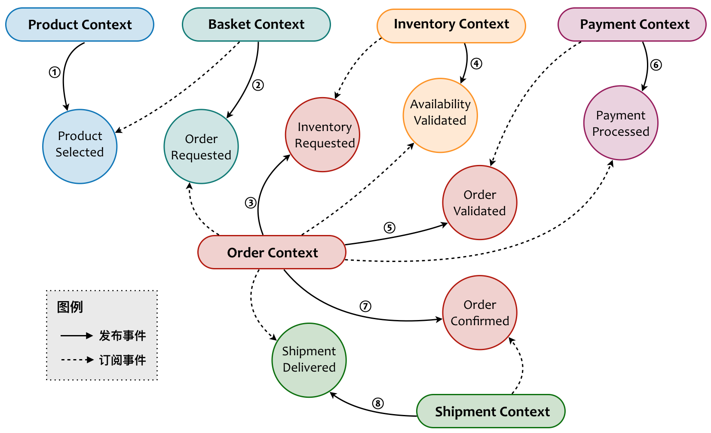
如果将发布事件的限界上下文定义为上游，订阅事件的限界上下文定义为下游，则下表展现了事件在上下游限界上下文之间的流转：
| ID | Event | Upstream Context | Downstream Context |
|---|---|---|---|
| 1 | ProductSelected | Product Context | Basket Context |
| 2 | OrderRequested | Basket Context | Order Context |
| 3 | InventoryRequested | Order Context | Inventory Context |
| 4 | AvailabilityValidated | Inventory Context | Order Context |
| 5 | OrderValidated | Order Context | Payment Context |
| 6 | PaymentProcessed | Payment Context | Order Context |
| 7 | OrderConfirmed | Order Context | Shipment Context |
| 8 | ShipmentDelivered | Shipment Context | Order Context |
采用发布/订阅事件模式的限界上下文不必一定是分布式架构，关键在于负责传递事件的介质是什么？如果采用独立进程运行的消息中间件，例如 RabbitMQ 或者 Kafka，可以更加有效地利用资源，整个系统的可伸缩性会变得更好。然而，考虑到进程间通信带来的成本，以及维护事务一致性带来的阻碍，我们也可以开发运行在同一个 JVM 进程中的事件总线（Event Bus）来负责事件的发布和订阅。我们还可以采用 Actor 模式支持事件的发布与订阅，Actor 会维持一个 mailbox，它相当于是一个轻量级的消息队列。以电商系统为例，例如，Order Context 的 OrderActor 接收 OrderRequested 事件，Basket Context 的 BasketActor 负责处理 ConfirmBasket 命令：
class BasketActor(eventPublisher: ActorRef) extends Actor with ActorLogging {
def receive: Receive = {
case cmd: ConfirmBasket =>
// compose OrderRequested event with product list
eventPublisher ! OrderRequested(cmd.customerId(), cmd.products())
}
}
class OrderActor extends Actor with ActorLogging {
def receive: Receive = {
case event: OrderRequested =>
// validate order
}
}
发布/订阅事件模式是松耦合的，但它有特定的适用范围，通常用于异步非实时的业务场景。当然，它的非阻塞特性也使得整个架构具有更强的响应能力，因而常用于业务相对复杂却没有同步要求的命令（Command）场景。这种协作模式往往用于事件驱动架构或者 CQRS（Command Query Responsibility Segregation，命令查询职责分离）架构模式中。
020 辨别限界上下文的协作关系（上）
在思考限界上下文之间的协作关系时，首先我们需要确定是否存在关系，然后再确定是何种关系，最后再基于变化导致的影响来确定是否需要引入防腐层、开放主机服务等模式。倘若发现协作关系有不合理之处，则需要反思之前我们识别出来的限界上下文是否合理。
限界上下文通信边界对协作的影响
确定限界上下文之间的关系不能想当然，需得全面考虑参与到两个限界上下文协作的业务场景，然后在场景中识别二者之间产生依赖的原因，确定依赖的方向，进而确定集成点，需要注意的是，限界上下文的通信边界对于界定协作关系至为关键。限界上下文的通信边界分为进程内边界与进程间边界，这种通信边界会直接影响到我们对上下文映射模式的选择。例如，采用进程间边界，就需得考虑跨进程访问的成本，如序列化与反序列化、网络开销等。由于跨进程调用的限制，彼此之间的访问协议也不尽相同，同时还需要控制上游限界上下文可能引入的变化，一个典型的协作方式是同时引入开放主机服务（OHS）与防腐层（ACL），如下图所示：
限界上下文 A 对外通过控制器（Controller）为用户界面层暴露 REST 服务，而在内部则调用应用层的应用服务（Application Service），然后再调用领域层的领域模型（Domain Model）。倘若限界上下文 A 需要访问限界上下文 B 的服务，则通过放置在领域层的接口（Interface）去访问，但真正的访问逻辑实现则由基础设施层的客户端（Client）完成，这个客户端就是上下文映射模式的防腐层。客户端访问的其实是限界上下文 B 的控制器，这个控制器处于基础设施层，相当于上下文映射模式的开放主机服务。限界上下文 B 访问限界上下文 C 的方式完全一致，在限界上下文 C 中，则通过资源库（Repository）接口经由持久化（Persistence）组件访问数据库。
从图中可以看到，当我们在界定限界上下文的协作关系时，需要考虑分层架构设计。通常，我们会将分层架构的应用层、领域层与基础设施层都视为在限界上下文的边界之内。如果限界上下文并未采用“零共享架构”，那么，在考虑协作关系时还需要考虑数据库层是否存在耦合。
唯独分层架构的用户界面层是一个例外，我们在领域建模时，通常不会考虑用户界面层，它并不属于限界上下文。究其原因，在于用户界面层与领域的观察视角完全不同。用户界面层重点考虑的是用户体验，而非业务的垂直划分，更不会考虑到业务之间的高内聚、松耦合。许多时候，为了用户操作的方便性，减少用户的操作次数，提高用户体验，可能会在一个 UI 页面中聚合许多属于不同限界上下文的业务。我们可以看看亚马逊或京东的页面，例如，在“我的京东”页面下，几乎将整个电商系统中各方面的业务都一网打尽了。这不符合我们对限界上下文的划分原则。事实上，在“前后端分离”的架构中，用户界面层往往会作为后端服务的调用者，当然应该被排除在限界上下文之外了。
这里存在一个设计决策，即引入开放主机服务与防腐层是否必要？这就需要设计者权衡变化、代码重用、架构简单性的优先级。没有标准答案，而需结合具体的应用场景帮助你做出判断。我自然无法穷尽所有的业务场景，这里给出的无非是其中一种选择罢了。譬如说，倘若限界上下文采用进程内通信，那么下游限界上下文是否还需要通过客户端与控制器去访问，就值得斟酌了。如果需要考虑未来从进程内通信演化为进程间通信，则保留客户端及其接口就是有必要的。
说明：以上提到的限界上下文通信边界、领域驱动设计分层架构、零共享架构、代码模型结构以及北向网关、南向网关的知识，都会在后面章节详细阐述。
协作即依赖
如果限界上下文之间存在协作关系，必然是某种原因导致这种协作关系。从依赖的角度看，这种协作关系是因为一方需要“知道”另一方的知识，这种知识包括：
- 领域行为：需要判断导致行为之间的耦合原因是什么？如果是上下游关系，要确定下游是否就是上游服务的真正调用者。
- 领域模型：需要重用别人的领域模型，还是自己重新定义一个模型。
- 数据：是否需要限界上下文对应的数据库提供支撑业务行为的操作数据。
领域行为产生的依赖
所谓领域行为，落到设计层面，其实就是每个领域对象的职责，职责可以由实体（Entity）、值对象（Value Object）来承担，也可以是领域服务（Domain Service）或者资源库（Repository）乃至工厂（Factory）对象来承担。
对象履行职责的方式有三种，Rebecca Wirfs-Brock 在《对象设计：角色、职责与协作》一书中总结为：
- 亲自完成所有的工作。
- 请求其他对象帮忙完成部分工作（和其他对象协作）。
- 将整个服务请求委托给另外的帮助对象。
如果我们选择后两种履行职责的形式，就必然牵涉到对象之间的协作。一个好的设计，职责一定是“分治”的，就是让每个高内聚的对象只承担自己擅长处理的部分，而将自己不擅长的职责转移到别的对象。《建筑的永恒之道》作者 Christepher Alexander 就建议，在遇到设计问题时尽量少用集权的机制。还是在《对象设计：角色、职责与协作》这本书，作者认为：
软件对象通过相互作用和共享责任联系在一起。在对象之间建立简单、一致的通信机制，避免了解决方案的集权性，局部变化的影响不应扩散到整个系统，这是系统的强适应性所要求的。当职责得以划分，组织有序，同时协作遵循可预测性模式，那么复杂的软件系统就更便于管理。
领域驱动设计提出的限界上下文事实上是架构层次的“分权”，通过它的边界让“职责得以划分，组织有序”，限界上下文之间的协作也“遵循可预测性模式”，就可以有效地控制业务复杂度与技术复杂度。因此，在考虑限界上下文的协作关系时，关键要辨别这些分离的职责，弄清楚到底是限界上下文内的对象协作，还是限界上下文之间的对象协作，主要考虑有如下两个方面：
- 职责由谁来履行？——这牵涉到领域行为该放置在哪一个限界上下文。
- 谁发起对该职责的调用？——倘若发起调用者与职责履行者在不同限界上下文，则意味着二者存在协作关系，且能够帮助我们确定上下游关系。
以电商系统的订单功能为例。考虑一个业务场景，客户已经选择好要购买的商品，并通过购物车提交订单，这就牵涉到一个领域行为：提交订单。假设客户属于客户上下文，而订单属于订单上下文，现在需要考虑提交订单的职责由谁来履行。
从电商系统的现实模型看，该领域行为由客户发起，也就是说客户应该具有提交订单的行为，这是否意味着应该将该行为分配给 Customer 聚合根？其实不然，我们需要注意现实模型与领域模型尤其是对象模型的区别。在“下订单”这个业务场景中，Customer 是一个参与者，角色为买家。领域建模的一种观点认为：领域模型是排除参与者在外的客观世界的模型，作为参与者的 Customer 应该排除在这个模型之外。
当然，这一观点亦存在争议，例如，四色建模就不这样认为，四色建模建议在时标性对象与作为人的实体对象之间引入角色对象，也就是说，角色对象会作为领域模型的一份子。当然，我们不能直接给角色与模型的参与者划上等号。在 DCI（Data Context Interation）模式中，则需要在一个上下文（Context）中，通过识别角色来思考它们之间的协作关系。譬如在转账业务场景中，银行账户 Account 作为数据对象（Data）参与到转账上下文的协作，此时应抽象出 Source 与 Destination 两个角色对象。
说明：在战术设计内容中，我会再深入探讨领域建模、四色建模与 DCI 之间的关系与建模细节。
领域模型的确定总是会引起争论，毕竟每个人观察领域模型的角度不同，对设计的看法也不相同。领域模型最终要落实到代码实现，交给实践去检验设计的合理性，不要在领域建模过程中过多纠缠建模的细节，选择一个恰好合理的模型即可。从建模到设计，再从设计到编码开发，其实是一个迭代的过程，倘若在实现时确实发现模型存在瑕疵，再回过头来修改即可，孜孜以求领域模型的完美，纯属浪费时间，在建模过程中，最重要的是守住最根本的设计原则。在合理运用设计原则之前，要紧的是明确：我们究竟要解决什么问题？
这里的问题不是如何确定领域模型，而是要确定提交订单这个行为究竟应该分配给谁？首先，这牵涉到对象的职责分配问题。从语义相关性剖析，这个领域行为虽然由客户发起，但操作的信息（知识）主体其实是订单，这就意味着它们应该分配给订单上下文。这种分配实际上也符合面向对象设计原则的“信息专家模式”，即“信息的持有者即为操作该行为的专家”；其次，从分层架构的角度看，这里所谓的“由客户发起调用”，仅仅代表客户通过用户界面层发起对后端服务的请求，换言之，并不是由属于客户上下文的 Customer 领域对象发起调用。
后面我们会讲到，如果遵循整洁架构的思想，领域层应该处于限界上下文的核心。为了保证业务用例的完整性，并避免暴露太多领域协作的细节，领域驱动设计引入了应用层，它包裹了整个领域层；然而，应用层并不会直接与作为调用者的前端进行通信，通常的方式是引入 RESTful 服务，这个 RESTful 服务等同于上下文映射中的开放主机服务（OHS），又相当于是 MVC 模式中的控制器（Controller），属于基础设施层的组件。针对下订单这个场景，客户通过用户界面层的 OrderController 发起调用。OrderController 收到请求后，在处理了请求消息的验证与转换工作后，又将职责转交给了 OrderAppService，然后通过它访问领域层中的领域服务 PlaceOrderService，如下图所示：
下订单场景的实现代码如下所示：
@RestController
@RequestMapping(value = "/orders/")
public class OrderController {
@Autowired
private OrderAppService service;
@RequestMapping(method = RequestMethod.POST)
public void create(@RequestParam(value = "request", required = true) CreateOrderRequest request) {
if (request.isInvalid()) {
throw new BadRequestException("the request of placing order is invalid.");
}
Order order = request.toOrder();
service.placeOrder(order);
}
}
@Service
public class OrderAppService {
@Autowired
private PlaceOrderService orderService;
public void placeOrder(Order order) {
try {
placeOrderService.execute(order);
} catch (InvalidOrderException | Exception ex) {
throw new ApplicationException(ex.getMessage());
}
}
}
既然 PlaceOrderService、OrderAppService 与 OrderController 都属于订单上下文，而该行为调用的真正发起者又不是 Customer 领域对象，而是通过用户界面与系统进行交互操作的用户，因此在这个业务场景中，并不存在我们想象的因为客户下订单导致客户上下文对订单上下文在领域行为上的依赖。
在将调用职责分配给前端时，我们需要时刻保持谨慎，不能将对限界上下文调用的工作全都交给前端，以此来解除后端限界上下文之间的耦合。前端确乎是发起调用的最佳位置，但前提是：我们不能让前端来承担后端应该封装的业务逻辑。当一个领域行为成为另一个领域行为“内嵌”的一个执行步骤时，发起的调用者就不再是前端 UI，因为该执行步骤组成了业务逻辑的一部分。例如，在计算订单总价时，需要根据客户的类别确定不同的促销策略，然后根据促销策略计算订单的总价，这里牵涉到四个领域行为：
- 计算订单总价
- 获得客户类别
- 确定促销策略
- 计算促销折扣
后面三个领域行为都是为“计算订单总价”提供功能支撑的，这就是前面所谓的“内嵌”执行步骤。除了订单总价属于订单上下文的行为，获得客户类别属于客户上下文，而促销策略与折扣计算则属于促销上下文。因为产生了领域行为的依赖，它们会作为订单上下文的上游限界上下文。
这里其实存在设计上的变化，这取决于我们对职责的分层（在前面讲解的领域场景分析中介绍了职责的分层）：
- 计算订单总价——订单上下文
- 获得客户类别——客户上下文
- 根据客户类别获得促销策略——促销上下文
- 通过促销策略计算促销折扣——促销上下文
当采用这种职责分层结构时，客户上下文与促销上下文就是订单上下文的上游。如果我们将获得客户类别视为促销上下文内含的业务逻辑，则职责的分层结构就变为：
- 计算订单总价——订单上下文
- 获得促销策略——促销上下文
- 获得客户类别——客户上下文
- 根据客户类别获得促销策略——促销上下文
- 通过促销策略计算促销折扣——促销上下文
- 获得促销策略——促销上下文
这时候，订单上下文的上游为促销上下文，而在促销上下文内部，又需要去调用客户上下文的领域行为。
我们甚至可以对职责做进一步封装。因为对于计算订单总价而言，其实它并不关心促销折扣究竟是怎样得来的，也就是说，获得促销策略这个职责其实是计算促销折扣的细节，于是职责的分层结构再次变化：
- 计算订单总价——订单上下文
- 计算促销折扣——促销上下文
- 获得促销策略——促销上下文
- 获得客户类别——客户上下文
- 根据客户类别获得促销策略——促销上下文
- 通过促销策略计算促销折扣——促销上下文
- 获得促销策略——促销上下文
- 计算促销折扣——促销上下文
这样的设计既可以减少其他限界上下文与订单上下文的协作，又可以减少彼此协作时需要依赖的领域行为。例如，我们如果希望降低订单上下文与促销上下文之间的耦合，从而避免促销上下文可能发生的变化对订单上下文的影响，就可以引入上下文映射中的防腐层。由于订单上下文只需要知道“计算促销折扣”这一个领域行为职责，防腐层接口的设计就变得更加容易：
package praticeddd.ecommerce.saleordercontext.domain;
import org.springframework.beans.factory.annotation.Autowired;
import org.springframework.stereotype.Service;
// DiscountCalculator 是定义在订单上下文的防腐层接口
import praticeddd.ecommerce.saleordercontext.interfaces.DiscountCalculator;
@Service
public class PriceCalculator {
@Autowired
private DiscountCalculator discountCalculator;
public Price priceFor(Order order) {
double discount = discountCalculator.calculate(order);
return order.totalPrice().multiply(discount);
}
}
package praticeddd.ecommerce.saleordercontext.interfaces;
public interface DiscountCalculator {
double calculate(Order order);
}
显然，不同的职责分层会直接影响到我们对限界上下文协作关系的判断。归根结底，还是彼此之间需要了解的“知识”起着决定作用。我们应尽可能遵循“最小知识法则”，在保证职责合理分配的前提下，产生协作的限界上下文越少越好。
021 辨别限界上下文的协作关系（下）
领域模型产生的依赖
针对领域行为产生的依赖，我们可以通过抽象接口来解耦。例如，前面提到订单上下文对促销上下文的调用就通过引入防腐层（ACL）解除了对促销上下文的直接依赖；然而，限界上下文依赖的领域模型呢，又该如何处理？
与领域行为相同，我们首先还是要判断限界上下文是否真正对别的领域模型产生了依赖！例如，要查询客户拥有的所有订单信息，应该像如下代码那样将订单列表当做客户的一个属性吗？
public class Customer {
private List<SaleOrder> saleOrders;
public List<SaleOrder> getSaleOrders() {
return saleOrders;
}
}
如果采取这样的设计，自然就会在客户上下文中产生对 SaleOrder 领域模型的依赖，然而，这种实现并不可取。因为这样的设计会导致在加载 Customer 时，需要加载可能压根儿就用不上的List<SaleOrder>，影响了性能。虽然通过延迟加载可以在一定程度解决性能问题，但既然存在延迟加载，就说明二者不一定总是同时需要。故而，延迟加载成为了判断领域实体对象设计是否合理的标志。
那么，是否可以用查询方法来替换属性？例如：
public class Customer {
public List<SaleOrder> saleOrders() {
// ...
}
}
在领域驱动设计中，我们通常不会这样设计，而是引入资源库对象来履行查询职责。若要查询订单，则 SaleOrder 会作为聚合根，对应的 SaleOrderRepository 作为资源库被放到订单上下文。在分层架构中，资源库对象可能会被封装到应用服务中，也可能直接暴露给作为适配器的 REST 服务中，例如，定义为：
@Path("/saleorder-context/saleorders/{customerId}")
public class SaleOrderController {
@Autowired
private SaleOrderRepository repository;
public List<SaleOrder> allSaleOrdersBy(CustomerId customerId) {
return repository.allSaleOrdersBy(customerId);
}
}
REST 服务的调用者并非客户上下文，而是前端或第三方服务以及客户端，貌似自然的客户与订单的包含关系，就如此被解开了。客户上下文与订单上下文并没有因为客户与订单的包含关系，使得它们二者产生协作。
如果确实存在跨限界上下文消费领域模型的场景，例如，订单上下文在查询订单时需要获得订单对应的商品信息时，我们该如何设计？存在两种设计决策：
- 在订单上下文中重用商品上下文的领域模型，即两个限界上下文之间采用遵奉者模式，且商品上下文作为上游。
- 在订单上下文中定义属于自己的与 Product 有关的领域模型。
在确定采用何种设计决策时，又会受到限界上下文边界的影响！进程内和进程间边界带来的影响是完全不同的。倘若商品上下文与订单上下文属于两个架构零共享的限界上下文，就不应采用重用领域模型的方式。因为这种模型的重用又导致了二者不再是“零共享”的。之所以采用零共享架构，是希望这两个限界上下文能够独立演化，包括部署与运行的独立性。倘若一个限界上下文重用了另一个限界上下文的领域模型，就意味着二者的代码模型是耦合的，即产生了包之间的依赖，而非服务的依赖。一旦该重用的模型发生了变化，就会导致依赖了该领域模型的服务也要重新部署。零共享架构带来的福利就荡然无存了。
如果二者之间的通信是发生在进程内，又该如何决策呢？
这其实是矛盾的两面，以 Product 领域对象为例：
- 重用：当需求发生变更，需要为商品增加新的属性时，可以保证只修改一处，避免了霰弹式修改；但是，如果两个限界上下文对商品的需求不相同，Product 领域对象就需要同时应对两种不同的需求，随着需求的逐渐演化，可能会导致 Product 对象渐渐成为一个低内聚的对象，这就是所谓的“重用的代价”。
- 分离：在两个限界上下文中分别建立 Product 领域对象，这会带来代码的重复，当两个限界上下文都需要商品的新属性时，两边的领域模型都需要修改；倘若两个上下文对商品的需求并不相同，分离的两个模型就可以独自应对不同的需求变化了，这就是所谓的“独立演化”。
事实上，在两个不同的限界上下文中为相同或相似的领域概念分别建立独立的领域模型为常见做法。例如，Martin Fowler 在介绍限界上下文时，就给出了如下的设计图：
Sales Context 与 Support Context 都需要客户与商品信息，但它们对客户与商品的关注点是不相同的。销售可能需要了解客户的性别、年龄与职业，以便于他更好地制定推销策略，售后支持则不必关心这些信息，只需要客户的住址与联系方式。正如前面在讲解限界上下文的边界时，我们已经提到了限界上下文作为保持领域概念一致性的业务边界而存在。上图清晰地表达了为两个不同限界上下文分别建立独自的 Customer 与 Product 领域模型对象，而非领域模型的重用。
我个人倾向于分离的领域模型，因为相较于维护相似领域对象的成本，我更担心随着需求变化的不断发生需要殚精竭虑地规避（降低）重用的代价。
当我们选择分离方式时，很多人会担心所谓的“数据同步”问题，其实只要我们正确地进行了领域建模，这个问题是不存在的。大体说来，这种数据同步可能存在以下三种情况：
- 数据存在一处，领域模型仅仅是内存中的对象。例如，前面提到的订单上下文获得的商品对象。商品的信息无疑还是持久化在商品上下文的数据库中，在订单上下文定义的 Product 领域对象，仅仅是商品上下文中 Product 对象在内存中的一种转换，订单上下文并不承担持久化商品信息的职责。
- 数据按照不同的业务边界分散存储，但它们之间用相同的 Identity 来保持关联。例如，在前面介绍的限界上下文的业务边界时提到的 Product 案例。采购上下文、市场上下文、仓储上下文、推荐上下文与产品上下文对产品关注的属性并不相同，因此它们关心的数据应该被分散存储到各自的数据库中，并未出现数据冗余的情况。
- 数据虽然出现了冗余，但是导致它们产生变化的原因却不相同。例如，订单中包含了配送地址与联系人信息，这些信息在客户中同样存在。当客户修改了配送地址以及联系人信息时，是否需要同步保存在订单中的对应信息？事实上，这种情况并不需要同步。因为当客户提交订单后，订单的配送地址与联系人信息就与提交订单的买家脱离了关系，而被订单上下文单独管理。客户更新自己的配送地址，并不会影响到已有订单的配送地址。如果订单还未完成，客户希望修改订单中的配送地址和联系人信息，这个修改也是发生在订单上下文。
数据产生的依赖
所谓“数据产生的依赖”，来自于数据库。倘若严格遵循领域驱动设计，通常不会产生这种数据库层面的依赖，因为我们往往会通过领域模型的资源库去访问数据库，与数据库交互的对象也应该是领域模型对象（实体和值对象）。即使有依赖，也应该是领域行为与领域模型导致的。
有时候，出于性能或其他原因的考虑，一个限界上下文去访问属于另外一个限界上下文边界的数据时，有可能跳过领域模型，直接通过 SQL 或存储过程的方式对多张表执行关联查询，CQRS 模式的读模型（Read Model）正是采用了这种形式。而在许多报表分析场景中，这种访问跨限界上下文数据表的方式确实是最高效最简单的实现方式。当然，这一切建立在一个前提：即限界上下文之间至少是数据库共享的。
我们必须警惕这种数据产生的依赖，没有绝对的理由，我们不要轻易做出这种妥协。SQL 乃至存储过程形成的数据表关联，是最难进行解耦的。一旦我们的系统架构需要从单体架构（或数据库共享架构）演进到微服务架构，最大的障碍不是代码层面而是数据库层面的依赖，这其中就包括大量复杂的 SQL 与存储过程。
SQL 与存储过程的问题在于：
- 无法为 SQL 与存储过程编写单元测试，无法对其进行调试，也不利于缺陷排查。
- SQL 与存储过程的可读性通常较差，也较难对其进行重用。
- SQL 与存储过程的优化策略限制太大，虽然看起来 SQL 或存储过程的运行更贴近数据库，似乎性能更佳，但是无法在架构层面上对其进行进一步的优化，如分库分表以及水平扩展。
如果选择使用 SQL 与存储过程，当数据库自身出现瓶颈时，会陷入进退两难的境地，要么继续保持使用 SQL 与存储过程，但调优空间非常小；要么就采用垂直扩展，直接更换性能更好的机器。但这种应对方法无异于饮鸩止渴，不能解决根本问题。如果想要去掉 SQL 与存储过程，又需要对架构做重大调整，需要耗费较大的架构重构成本，对架构师的能力也要求颇高。在调整架构时，由于需要将 SQL 与存储过程中蕴含的业务逻辑进行迁移，还可能存在迁移业务逻辑时破坏原有功能的风险。选择架构调整，需得管理层具备壮士扼腕的勇气与魄力才行。
无论是零共享架构的分库模式，还是数据库共享模式，我们都需要尽量避免因为在数据库层面引起多个限界上下文的依赖。获取数据有多种方式，除了通过领域模型中聚合根的资源库访问数据之外，我们也可以通过数据同步的方式，对多个限界上下文的数据进行整合。例如，电商网站的推荐系统，它将作为整个系统中一个独立的限界上下文。为了获得更加精准精细的推荐结果，推荐系统需要获取买家的访问日志、浏览与购买的历史记录、评价记录，需要获得商品的类别、价格、销售量、评价分数等属性，需要获取订单的详细记录，是否有退换货等一系列的信息。但这并不意味着推荐上下文会作为客户上下文、商品上下文、订单上下文等的下游客户方，也未必需要在数据库层面对多张表执行关联操作。
推荐算法的数据分析往往是一个大数据量分析，它需要获得的数据通常存储在扮演 OLTP（On-Line Transaction Processing，联机事务处理）角色的业务数据库。业务数据库是支撑系统业务应用的主要阵地，并被各种请求频繁读写。倘若该数据库成为瓶颈，有可能会影响到整个电商系统的运行；倘若推荐系统通过上游限界上下文的服务从各自的数据库中加载相关数据，并存入到内存中进行分析，会大量耗用网络资源和内存资源，影响电商网站的业务系统，也无法保证推荐系统的性能需求。
从数据分析理论来说，作为 OLTP 的业务数据库是面向业务进行数据设计的，这些数据甚至可能独立存在，并未形成数据仓库的主题数据特征，即集成了多个业务数据库，并能全面一致体现历史数据变化。因此，推荐系统需要利用大数据的采集技术，通过离线或实时流处理方式采集来自多数据源的多样化数据，然后可结合数据仓库技术，为其建立主题数据区和集市数据区，为 OLAP（On-Line Analytical Processing，联机分析处理）提供支撑，也为如协同决策这样的推荐算法提供了数据支持。
当然，推荐系统需要“知道”的数据不仅限于单纯的客户数据、商品数据与订单数据，还包括针对客户访问与购买商品的行为数据，如查询商品信息、添加购物车、添加订单、提交评论等行为产生的数据，这些行为数据未必存储在业务数据库中，相反可能会以如下形式存储：
- 日志：即记录这些行为数据为日志信息。我们可以将每次产生的日志存放到 ElasticSearch 中，并作为推荐系统要访问的数据库，常见架构就是所谓的 ELK（ElasticSearch + LogStash + Kibana）架构。
- 事件：倘若采用事件溯源（Event Sourcing）模式，每次行为都会触发一个事件，并通过事件存储（Event Store）将它们存储到对应的数据库中，以待推荐系统读取这些事件溯源数据，结合业务数据运用推荐算法进行计算。
由于推荐系统需要分析的数据已经通过专门的数据采集器完成了多数据源数据的采集，并写入到属于推荐上下文的主题数据库中，因而并不存在与其他业务数据库之间的依赖。从实现看，推荐上下文作为一个独立的限界上下文，与其他限界上下文之间并不存在依赖关系，属于上下文映射的“分离方式”模式。从这个例子获得的经验是：技术方案有时候会影响到我们对上下文映射的识别。
022 认识分层架构
分层架构是运用最为广泛的架构模式，几乎每个软件系统都需要通过层（Layer）来隔离不同的关注点（Concern Point），以此应对不同需求的变化，使得这种变化可以独立进行；此外，分层架构模式还是隔离业务复杂度与技术复杂度的利器，《领域驱动设计模式、原理与实践》这样写道：
为了避免将代码库变成大泥球（BBoM）并因此减弱领域模型的完整性且最终减弱可用性，系统架构要支持技术复杂性与领域复杂性的分离。引起技术实现发生变化的原因与引起领域逻辑发生变化的原因显然不同，这就导致基础设施和领域逻辑问题会以不同速率发生变化。
这里所谓的“以不同速率发生变化”，其实就是引起变化的原因各有不同，这正好是单一职责原则（Single-Responsibility Principle，SRP）的体现。Robert Martin 认为单一职责原则就是“一个类应该只有一个引起它变化的原因”，换言之，如果有两个引起类变化的原因，就需要分离。单一职责原则可以理解为架构原则，这时要考虑的就不是类，而是层次，我们为什么要将业务与基础设施分开？正是因为引起它们变化的原因不同。
经典分层架构
分层架构由来已久，把一个软件系统进行分层，似乎已经成为了每个开发人员的固有意识，甚至不必思考即可自然得出，这其中最为经典的就是三层架构以及领域驱动设计提出的四层架构。
经典三层架构
在软件架构中，经典三层架构自顶向下由用户界面层（User Interface Layer）、业务逻辑层（Business Logic Layer）与数据访问层（Data Access Layer）组成，该分层架构之所以能够流行，是有其历史原因的。在提出该分层架构的时代，多数企业系统往往较为简单，本质上都是一个单体架构（Monolithic Architecture）的数据库管理系统。这种分层架构已经是 Client-Server 架构的进化了，它有效地隔离了业务逻辑与数据访问逻辑，使得这两个不同关注点能够相对自由和独立地演化。一个经典的三层架构如下所示：
领域驱动设计的经典分层架构
领域驱动设计在经典三层架构的基础上做了进一步改良，在用户界面层与业务逻辑层之间引入了新的一层，即应用层（Application Layer）。同时，一些层次的命名也发生了变化，将业务逻辑层更名为领域层自然是题中应有之义，而将数据访问层更名为基础设施层（Infrastructure Layer），则突破了之前数据库管理系统的限制，扩大了这个负责封装技术复杂度的基础层次的内涵。下图为 Eric Evans 在其经典著作《领域驱动设计》中的分层架构：
该书对各层的职责作了简单的描述：
| 层次 | 职责 |
|---|---|
| 用户界面/展现层 | 负责向用户展现信息以及解释用户命令 |
| 应用层 | 很薄的一层，用来协调应用的活动，它不包含业务逻辑，它不保留业务对象的状态，但它保有应用任务的进度状态 |
| 领域层 | 本层包含关于领域的信息，这是业务软件的核心所在。在这里保留业务对象的状态，对业务对象和它们状态的持久化被委托给了基础设施层 |
| 基础设施层 | 本层作为其他层的支撑库存在。它提供了层间的通信，实现对业务对象的持久化，包含对用户界面层的支撑库等作用 |
追溯分层架构的本源
当分层架构变得越来越普及时，我们的设计反而变得越来越僵化，一部分软件设计师并未理解分层架构的本质，只知道依样画葫芦地将分层应用到系统中，要么采用经典的三层架构，要么遵循领域驱动设计改进的四层架构，却未思考和探究如此分层究竟有何道理？这是分层架构被滥用的根源。
视分层（Layer）为一个固有的架构模式，其根源应为 Frank Buschmann 等人著的《面向模式的软件架构》第一卷《模式系统》，该模式参考了 ISO 对 TCP/IP 协议的分层。《模式系统》对分层的描述为：
分层架构模式有助于构建这样的应用：它能被分解成子任务组，其中每个子任务组处于一个特定的抽象层次上。
显然，这里所谓的“分层”首先是一个逻辑的分层，对子任务组的分解需要考虑抽象层次，一种水平的抽象层次。既然为水平的分层，必然存在层的高与低；而抽象层次的不同，又决定了分层的数量。因此，对于分层架构，我们需要解决如下问题：
- 分层的依据与原则是什么？
- 层与层之间是怎样协作的？
分层的依据与原则
我们之所以要以水平方式对整个系统进行分层，是我们下意识地确定了一个认知规则：机器为本，用户至上，机器是运行系统的基础，而我们打造的系统却是为用户提供服务的。分层架构中的层次越往上，其抽象层次就越面向业务、面向用户；分层架构中的层次越往下，其抽象层次就变得越通用、面向设备。为什么经典分层架构为三层架构？正是源于这样的认知规则：其上，面向用户的体验与交互；居中，面向应用与业务逻辑；其下，面对各种外部资源与设备。在进行分层架构设计时，我们完全可以基于这个经典的三层架构，沿着水平方向进一步切分属于不同抽象层次的关注点。因此，分层的第一个依据是基于关注点为不同的调用目的划分层次。以领域驱动设计的四层架构为例，之所以引入应用层（Application Layer），就是为了给调用者提供完整的业务用例。
分层的第二个依据是面对变化。分层时应针对不同的变化原因确定层次的边界，严禁层次之间互相干扰，或者至少把变化对各层带来的影响降到最低。例如，数据库结构的修改自然会影响到基础设施层的数据模型以及领域层的领域模型，但当我们仅需要修改基础设施层中数据库访问的实现逻辑时，就不应该影响到领域层了。层与层之间的关系应该是正交的，所谓“正交”，并非二者之间没有关系，而是垂直相交的两条直线，唯一相关的依赖点是这两条直线的相交点，即两层之间的协作点，正交的两条直线，无论哪条直线进行延伸，都不会对另一条直线产生任何影响（指直线的投影）；如果非正交，即“斜交”，当一条直线延伸时，它总是会投影到另一条直线，这就意味着另一条直线会受到它变化的影响。
在进行分层时，我们还应该保证同一层的组件处于同一个抽象层次。这是分层架构的设计原则，它借鉴了 Kent Beck 在 Smalltalk Best Practice Patterns 一书提出的“组合方法”模式，该模式要求一个方法中的所有操作处于相同的抽象层，这就是所谓的“单一抽象层次原则（SLAP）”，这一原则可以运用到分层架构中。例如，在一个基于元数据的多租户报表系统中，我们特别定义了一个引擎层（Engine Layer），这是一个隐喻，相当于为报表系统提供报表、实体与数据的驱动引擎。引擎层之下，是基础设施层，提供了多租户、数据库访问与元数据解析与管理等功能。在引擎层之上是一个控制层，通过该控制层的组件可以将引擎层的各个组件组合起来，分层架构的顶端是面向用户的用户展现层，如下图所示：
层与层之间的协作
在我们固有的认识中，分层架构的依赖都是自顶向下传递的，这也符合大多数人对分层的认知模型。从抽象层次来看，层次越处于下端，就会变得越通用越公共，与具体的业务隔离得越远。出于重用的考虑，这些通用和公共的功能往往会被单独剥离出来形成平台或框架，在系统边界内的低层，除了面向高层提供足够的实现外，就都成了平台或框架的调用者。换言之，越是通用的层，越有可能与外部平台或框架形成强依赖。若依赖的传递方向仍然采用自顶向下，就会导致系统的业务对象也随之依赖于外部平台或框架。
依赖倒置原则（Dependency Inversion Principle，DIP）提出了对这种自顶向下依赖的挑战，它要求“高层模块不应该依赖于低层模块，二者都应该依赖于抽象”，这个原则正本清源，给了我们严重警告——谁规定在分层架构中，依赖就一定要沿着自顶向下的方向传递？我们常常理解依赖，是因为被依赖方需要为依赖方（调用方）提供功能支撑，这是从功能重用的角度来考虑的。但我们不能忽略变化对系统产生的影响！与建造房屋一样，我们自然希望分层的模块“构建”在稳定的模块之上，谁更稳定？抽象更稳定。因此，依赖倒置原则隐含的本质是：我们要依赖不变或稳定的元素（类、模块或层），也就是该原则的第二句话：抽象不应该依赖于细节，细节应该依赖于抽象。
这一原则实际是“面向接口设计”原则的体现，即“针对接口编程，而不是针对实现编程”。高层模块对低层模块的实现是一无所知的，带来的好处是：
- 低层模块的细节实现可以独立变化，避免变化对高层模块产生污染
- 在编译时，高层模块可以独立于低层模块单独存在
- 对于高层模块而言，低层模块的实现是可替换的
倘若高层依赖于低层的抽象，必然会面对一个问题：如何把具体的实现传递给高层的类？由于在高层通过接口隔离了对具体实现的依赖，就意味着这个具体依赖被转移到了外部，究竟使用哪一种具体实现，由外部的调用者来决定。只有在运行调用者代码时，才将外面的依赖传递给高层的类。Martin Fowler 形象地将这种机制称为“依赖注入（Dependency injection）”。
为了更好地解除高层对低层的依赖，我们往往需要将依赖倒置原则与依赖注入结合起来。
层之间的协作并不一定是自顶向下的传递通信，也有可能是自底向上通信。例如，在 CIMS（计算机集成制造系统）中，往往会由低层的设备监测系统监测（侦听）设备状态的变化。当状态发生变化时，需要将变化的状态通知到上层的业务系统。如果说自顶向下的消息传递往往被描述为“请求（或调用）”，则自底向上的消息传递则往往被形象地称之为“通知”。倘若我们颠倒一下方向，自然也可以视为这是上层对下层的观察，故而可以运用观察者模式（Observer Pattern），在上层定义 Observer 接口，并提供 update() 方法供下层在感知状态发生变更时调用；或者，我们也可以认为这是一种回调机制。虽然本质上这并非回调，但设计原理是一样的。
如果采用了观察者模式，则与前面讲述的依赖倒置原则有差相仿佛之意，因为下层为了通知上层，需要调用上层提供的 Observer 接口。如此看来，无论是上层对下层的“请求（或调用）”，抑或下层对上层的“通知”，都颠覆了我们固有思维中那种高层依赖低层的理解。
现在，我们对分层架构有了更清醒的认识。我们必须要打破那种谈分层架构必为经典三层架构又或领域驱动设计推荐的四层架构这种固有思维，而是将分层视为关注点分离的水平抽象层次的体现。既然如此，架构的抽象层数就不是固定的，甚至每一层的名称也未必遵循固有（经典）的分层架构要求。设计系统的层需得结合该系统的具体业务场景而定。当然，我们也要认识到层次多少的利弊：过多的层会引入太多的间接而增加不必要的开支，层太少又可能导致关注点不够分离，导致系统的结构不合理。
我们还需要正视架构中各层之间的协作关系，打破高层依赖低层的固有思维，从解除耦合（或降低耦合）的角度探索层之间可能的协作关系。另外，我们还需要确定分层的架构原则（或约束），例如是否允许跨层调用，即每一层都可以使用比它低的所有层的服务，而不仅仅是相邻低层。这就是所谓的“松散分层系统（Relaxed Layered System）”。
023 分层架构的演化
分层架构是一种架构模式，但终归它的目的是为了改进软件的架构质量，我们在运用分层架构时，必须要遵守架构设计的最高原则，即建立一个高内聚、松耦合的软件系统架构。于是，许多设计大师们纷纷提出了自己的洞见。
整洁架构
在架构设计时，我们应设计出干净的应用层和领域层，保持它们对业务逻辑的专注，而不掺杂任何具体的技术实现，从而完成领域与技术之间的完全隔离，这一思想被 Robert Martin 称之为整洁架构（Clean Architecture）。下图展现了 Robert Martin 的这一设计思想：
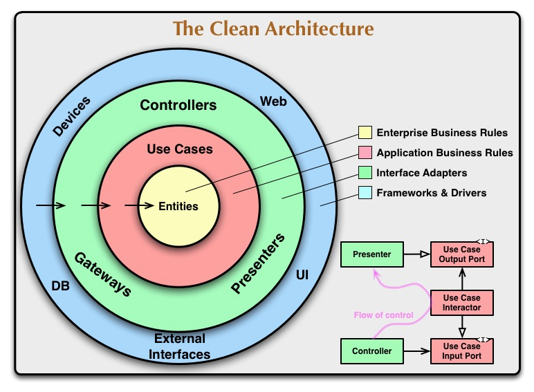
该架构思想提出的模型并非传统的分层架构，而是类似于一个内核模式的内外层架构，由内及外分为四层，包含的内容分别为：
- 企业业务规则（Enterprise Business Rules）
- 应用业务规则（Application Business Rules）
- 接口适配器（Interface Adapters）
- 框架与驱动器（Frameworks & Drivers）
注意“企业业务规则”与“应用业务规则”的区别，前者是纯粹领域逻辑的业务规则，后者则面向应用，需要串接支持领域逻辑正常流转的非业务功能，通常为一些横切关注点，如日志、安全、事务等，从而保证实现整个应用流程（对应一个完整的用例）。
仔细解读这一架构模型，我们会发现许多有用的特征：
- 层次越靠内的组件依赖的内容越少，处于核心的 Entities 没有任何依赖。
- 层次越靠内的组件与业务的关系越紧密，因而越不可能形成通用的框架。
- Entities 层封装了企业业务规则，准确地讲，它应该是一个面向业务的领域模型。
- Use Cases 层是打通内部业务与外部资源的一个通道，因而提供了输出端口（Output Port）与输入端口（Input Port），但它对外的接口展现的其实是应用逻辑，或者说是一个用例。
- Gateways、Controllers 与 Presenters 其本质都是适配器（Adapter），用于打通应用业务逻辑与外层的框架和驱动器，实现逻辑的适配以访问外部资源。
- 系统最外层包括框架和驱动器，负责对接外部资源，不属于系统（仅指限界上下文而言）开发的范畴，但选择这些框架和驱动器，是属于设计决策要考虑的内容。这一层的一些组件甚至与要设计的系统不处于同一个进程边界。
我们学到了什么？Robert Martin 的整洁架构将领域模型放在整个系统的核心，这一方面体现了领域模型的重要性，另外一方面也说明了领域模型应该与具体的技术实现无关。领域模型就是业务逻辑的模型，它应该是完全纯粹的，无论你选择什么框架，什么数据库，或者什么通信技术，按照整洁架构的思想都不应该去污染领域模型。如果以 Java 语言来实现，遵循整洁架构的设计思想，则所有领域模型对象都应该是 POJO（Plain Ordinary Java Object）。整洁架构的 Entities 层对应于领域驱动设计的领域层。
说明：注意 POJO 与 Java Bean 的区别。Java Bean 是指仅定义了为私有字段提供 get 与 set 方法的 Java 对象，这种 Java Bean 对象除了这些 get 和 set 方法之外，几乎没有任何业务逻辑，Martin Fowler 将这种对象称之为“贫血对象”，根据这种贫血对象建立的模型就是“贫血模型”。POJO 指的是一个普通的 Java 对象，意味着这个 Java 对象不依赖除 JDK 之外的其他框架，是一个纯粹 Java 对象，Java Bean 是一种特殊的 POJO 对象。在领域驱动设计中，如果我们遵循面向对象设计范式，就应避免设计出贫血的 Java Bean 对象；如果我们要遵循整洁架构设计思想，则应尽量将领域模型对象设计为具有领域逻辑的 POJO 对象。
属于适配器的 Controllers、Gateways 与 Presenters 对应于领域驱动设计的基础设施层。就我个人的理解来说，适配器这个词并不能准确表达这些组件的含义，反而更容易让我们理解为是对行为的适配，我更倾向于将这些组件都视为是网关（Gateway）。对下，例如，针对数据库、消息队列或硬件设备，可以认为是一个南向网关，对于当前限界上下文是一种输出的依赖；对上，例如，针对 Web 和 UI，可以认为是一个北向网关，对于当前限界上下文是一种输入的依赖。
这两种方向的网关与 Use Cases 层之间的关系是不尽相同的。北向网关会调用 Use Cases 层中表示应用逻辑的服务组件，即发起的是一个由外向内的调用，这种调用在整洁架构体系下是合乎道理的。Use Cases 层的服务组件并不需要关心北向网关的组件，例如，作为 RESTful 服务的 OrderController，就是北向网关中的一个类，它通过调用 Use Cases 层的 OrderAppService 服务来实现一个提交订单的业务用例。OrderAppService 并不需要知道作为调用者的 OrderController，如果存在将 Entities 层的领域模型对象转换为 RESTful 服务的 Resource 对象，也是 OrderController 或者说北向网关的职责。
南向网关作为底层资源的访问者，往往成为 Use Cases 层甚至 Entities 层的被调用者。由于整洁架构思想并不允许内层获知外层的存在，这就导致了我们必须在内层定义与外层交互的接口，然后通过依赖注入的方式将外层的实现注入到内层中，这也是“控制反转（Inversion of Control）”的含义，即将调用的控制权转移到了外层。由是我们可以得出一个结论，即南向网关封装了与外部资源（DB、Devices、MQ）交互的实现细节，但其公开暴露的接口却需要被定义在内层的 Use Cases 或 Entities 中，这实际上阐释了为什么领域驱动设计要求将 Repository 的接口定义在领域层的技术原因。当然，将 Repository 接口定义在领域层还有其业务原因，在后面我会详细介绍。
六边形架构
整洁架构的目的在于识别整个架构不同视角以及不同抽象层次的关注点，并为这些关注点划分不同层次的边界，从而使得整个架构变得更加清晰，减少不必要的耦合。它采用了内外层的架构模型弥补了分层架构无法体现领域核心位置的缺陷。由 Alistair Cockburn 提出的六边形架构（Hexagonal Architecture）在满足整洁架构思想的同时，更关注于内层与外层以及与外部资源之间通信的本质：
如上图所示，六边形架构通过内外两个六边形为系统建立了不同层次的边界。核心的内部六边形对应于领域驱动设计的应用层与领域层，外部六边形之外则为系统的外部资源，至于两个六边形之间的区域，均被 Cockburn 视为适配器（Adapter），并通过端口（Port）完成内外区域之间的通信与协作，故而六边形架构又被称为端口-适配器模式（port-adapter pattern）。在第04课中，我曾经给出了如下的设计图，该图更加清晰地表达了领域驱动设计分层架构与六边形架构的关系，同时也清晰地展现了业务复杂度与技术复杂度的边界：
我在前面分析整洁架构时，将 Gateways、Controllers 与 Presenters 统一看做是网关，而在六边形架构中，这些内容皆为适配器。事实上，它们代表的含义是一致的，不同的命名代表的是对其职责认识上的不同。如果认为是“网关”，则将该组件的实现视为一种门面，内部负责多个对象之间的协作以及职责的委派；如果认为是“适配器”，则是为了解决内外协议（数据协议与服务接口）之间的不一致而进行的适配。若依据领域驱动设计的分层架构，则无论网关还是适配器，都属于基础设施层的内容。
无论理解为网关还是适配器，通过这种架构思想都可以认识到在基础设施层的组件应该是轻量级的实现，甚至可以认为它不过是对第三方框架或平台有选择的调用罢了，归根结底，它虽然是技术实现，却是为业务场景提供服务的。例如，需要操作订单数据库，DB 适配器就是一个传递通道，将需要操作的领域模型传递给它，最后返回结果，真正的实现则通过 JDBC、Hibernate、MyBatis 或 Spring Data 等第三方框架来完成。同理，如果需要为前端提供订单服务能力，Web 适配器负责验证与转换前端消息，至于请求到资源的路由等功能皆由 Spring Boot、DropWizard 或 Airlift 等 REST 框架来完成。所以说这里所谓的“适配器”与“端口”其实就是领域与外部资源的一个转换通道。适配器向内的一端连接了 Application 的领域，向外的一端则通过端口连接了外部资源。
六边形架构通过内外六边形的两个不同边界清晰地展现了领域与技术的边界，同时，外部六边形还体现了系统的进程边界，有助于我们思考分布式架构的物理视图，并通过识别端口来引导我们专注于六边形之间的通信机制，这些通信机制可能包括：
- 与外部资源（数据库、文件、消息队列等）之间的通信
- 与 Web 和 UI 等用户界面之间的通信
- 与第三方服务之间的通信
- 与其他六边形边界之间的通信
微服务架构
Toby Clemson 在《微服务架构的测试策略》一文中深入探讨了如何对微服务架构制定测试策略。要明确如何对这样的系统进行测试，就需要明确该系统架构的组成部分以及各组成部分承担的职责，同时还需要了解各组成部分之间的协作关系。为此，Toby 在这篇文章中给出了一个典型的微服务架构，如下图所示：
该架构图并未严格按照分层架构模式来约定各个组件的位置与职责，这是完全合理的设计！当我们需要将一个分层架构进行落地实践时，在任何一门语言中我们都找不到所谓 layer 的明确语法。在 Java 语言中，我们可以通过 package 与 module 去划分包与模块，在 Ruby 语言中我们也可以限定 module 的范畴，但我们并不能通过某种语法甚至语法糖去规定 layer 的边界。所以在编码实现中，layer 其实是一个松散且不够严谨的逻辑概念，即使我们规定了层的名称以及各层的职责，但各种“犯规行为”依然屡见不鲜。与其如此，不如将各个组件在逻辑架构中的位置与职责明确定义出来。对于系统的概念模型与设计模型，我们要明确分层架构的本质与设计原则；对于代码模型，分层架构则主要负责设计指导，并酌情弱化层在代码模型中的意义，强化对包与模块的划分。
上图的逻辑边界代表了一个微服务，这是基于微服务的设计原则——“每个微服务的数据单独存储”，因此需要将物理边界（图中定义为网络边界）外的数据库放在微服务的内部。
整幅图的架构其实蕴含了两个方向：自顶向下和由内至外。
外部请求通过代表协议（Protocol）的 Resources 组件调用 Service Layer、Domain 或 Repositories，如果需要执行持久化任务，则通过 Repositories 将请求委派给 ORM，进而访问网络边界外的数据库。所谓“外部请求”可以是前端 UI 或第三方服务，而 Resource 组件就是我们通常定义的 Controller，对应于上下文映射中的开放主机服务。之所以命名为 Resources，则是因为 REST 架构是一种面向资源的架构，它将服务操作的模型抽象为资源（Resource），这是自顶向下的方向。
若当前微服务需要调用外部服务（External Service），且外部服务籍由 HTTP 协议通信，就需要提供一个 HTTP Client 组件完成对外部服务的调用。为了避免当前微服务对外部服务的强依赖，又或者对客户端的强依赖，需要引入 Gateways 来隔离。事实上，这里的 Gateways 即为上下文映射中的防腐层，这是由内至外的方向。
说明：文中的微服务架构图虽然由 Toby Clemson 在《微服务架构的测试策略》一文中给出，但肖然在《分层架构的代码架构》一文中又明确提出这一架构图来自 Martin Fowler。究竟是谁的创见，我就此咨询了肖然，肖然说他亲自问过老马（即 Martin Fowler），老马说这个架构是他认为的。Toby 的文章本身就发表在老马的官方 biliki 上，作者在文章的开篇对老马表示了致谢。
024 领域驱动架构的演进
我们回顾了经典三层架构与领域驱动设计四层架构，然后又对分层架构模式的产生与设计原则做了一次历史回顾。我们先后参考了 Robert Martin 的整洁架构、Cockburn 的六边形架构以及 Toby Clemson 给出的微服务架构模型。现在，是时候为领域驱动设计的架构模型做一次总结陈词了。然而事情并未结束，因为任何技术结论都并非句点，而仅仅代表了满足当时技术背景的一种判断，技术总是在演进，领域驱动架构亦是如此。与其关心结果，不如将眼睛投往这个演进的过程，或许风景会更加动人。
根据“依赖倒置原则”与 Robert Martin 提出的“整洁架构”思想，我们推翻了 Eric Evans 在《领域驱动设计》书中提出的分层架构。Vaughn Vernon 在《实现领域驱动设计》一书中给出了改良版的分层架构，他将基础设施层奇怪地放在了整个架构的最上面：
整个架构模型清晰地表达了领域层别无依赖的特质，但整个架构却容易给人以一种错乱感。单以这个分层模型来看，虽则没有让高层依赖低层，却又反过来让低层依赖了高层，这仍然是不合理的。当然你可以说此时的基础设施层已经变成了高层，然而从之前分析的南向网关与北向网关来说，基础设施层存在被“肢解”的可能。坦白讲，这个架构模型仍然没有解决人们对分层架构的认知错误，例如它并没有很好地表达依赖倒置原则与依赖注入。还需要注意的是，这个架构模型将基础设施层放在了整个分层架构的最顶端，导致它依赖了用户展现层，这似乎并不能自圆其说。我们需要重新梳理领域驱动架构，展示它的演进过程。
该怎么演进领域驱动架构？可以从两个方向着手：
- 避免领域模型出现贫血模型
- 保证领域模型的纯粹性
避免贫血的领域模型
我们需要回顾经典的 Java 三层架构对领域模型的设计。在这个三层架构中，领域逻辑被定义在业务逻辑层的 Service 对象中，至于反映了领域概念的领域对象则被定义为 Java Bean，这些 Java Bean 并没有包含任何领域逻辑，因此被放在了数据访问层。注意，这是经典三层架构的关键，即代表领域概念的 Java Bean 被放在了数据访问层，而非业务逻辑层。 经典三层架构采用了 J2EE 开发的 DAO 模式，即将访问数据库的逻辑封装到数据访问对象（Data Access Object）中。这些 DAO 对象仅负责与数据库的交互，并实现领域对象到数据表的 CRUD（增删改查）操作，因而也被放到了数据访问层中，如下图所示：
如果以面向对象设计范式进行领域建模，我们需要遵循面向对象的设计原则，其中最重要的设计原则就是“数据与行为应该封装在一起”，这也是 GRASP 模式中“信息专家模式”的体现。前面提及的 Java Bean 由于仅包含了访问私有字段的 get 和 set 方法，可以说是对面向对象设计原则的“背叛”，Martin Fowler 则将这种没有任何业务行为的对象称之为“贫血对象”。基于这样的贫血对象进行领域建模，得到的模型则被称之为“贫血模型”。这种贫血模型被认为是简单的，却不具备对象的丰富表达能力，当业务逻辑变得复杂时，在表达领域模型方面就会变得“力不从心”，无法有效应对重用与变化，且可能导致臃肿的“上帝类”。贫血模型的种种问题会在战术设计中再做深入探讨，这里我们姑且给出一个结论，即：在面向对象设计背景下，当我们面对相对复杂的业务逻辑时，应避免设计出贫血模型。
要避免贫血模型，就需要合理地将操作数据的行为分配给这些领域模型对象（Domain Model），即战术设计中的 Entity 与 Value Object，而不是前面提及的 Service 对象。由于领域模型对象包含了领域逻辑，就需要从数据访问层转移到业务逻辑层。至于那些不属于任何领域模型对象的领域逻辑，仍然放到 Service 对象中。由于 DAOs 对象需要操作这些领域模型对象，使得处于数据访问层的 DAOs 对象必须依赖领域层的领域模型对象，也就是说，要避免贫血的领域模型，就不可能避免底层的数据访问层对业务逻辑层的依赖。
从分层的职责和意义讲，一个系统的基础不仅仅限于对数据库的访问，还包括访问诸如网络、文件、消息队列或者其他硬件设施，因此 Eric Evans 将其更名为“基础设施层”是非常合理的。至于将业务逻辑层更名为领域层也是题中应有之义。遵循整洁架构思想，基础设施层属于架构的外层，它依赖于处于内部的领域层亦是正确的做法。在领域层，封装了领域逻辑的 Services 对象则可能需要持久化领域对象，甚至可能依赖基础设施层的其他组件。于是，之前的分层架构就演进为：
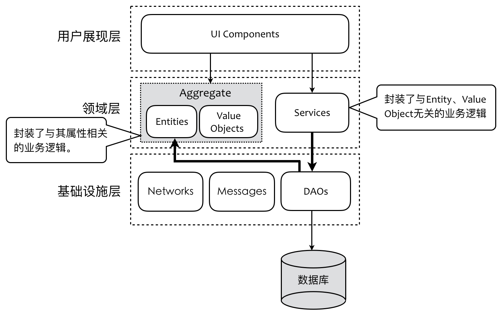
保证领域模型的纯粹性
若将整个层次看做一个整体，在刚才给出的分层架构图中，加粗的两条依赖线可以清晰地看到领域层与基础设施层之间产生了“双向依赖”。在实际开发中，若这两层又被定义为两个模块，双向依赖就成为了设计坏味，它导致了两个层次的紧耦合。此时，领域模型变得不再纯粹，根由则是高层直接依赖了低层，而不是因为低层依赖了高层。故而我们需要去掉右侧 Services 指向 DAOs 的依赖。
DAOs 负责访问数据库，其实现逻辑是容易变化的。基于“稳定依赖原则”，我们需要让领域层建立在一个更加稳定的基础上。抽象总是比具体更稳定，因此，改进设计的方式是对 DAOs 进行抽象，然后利用依赖注入对数据访问的实现逻辑进行注入，如下图所示：
DAOs 的抽象到底该放在哪里？莫非需要为基础设施层建立一个单独的抽象层吗？这牵涉到我们对数据库访问的认知。任何一个软件系统的领域对象都存在其生命周期，代表领域逻辑的业务方法其实就是在创造它，发现它，更新它的状态，最后通常也会销毁它。倘若部署软件系统的计算机足够强劲与稳定，就不再需要任何外部资源了；这时，对领域对象的生命周期管理就变成了对普通对象的内存管理。因此，从业务角度看，管理对象的生命周期是必须的，访问外部资源却并非必须。只是因为计算机资源不足以满足这种稳定性，才不得已引入外部资源罢了。也就是说，访问这些领域对象属于业务要素，而如何访问这些领域对象（如通过外部资源），则属于具体实现的技术要素。
从编码角度看，领域对象实例的容身之处不过就是一种数据结构而已，区别仅在于存储的位置。领域驱动设计将管理这些对象的数据结构抽象为资源库（Repository）。通过这个抽象的资源库访问领域对象，自然就应该看作是一种领域行为。倘若资源库的实现为数据库，并通过数据库持久化的机制来实现领域对象的生命周期管理，则这个持久化行为就是技术因素。
结合前面对整洁架构的探讨，抽象的资源库接口代表了领域行为，应该放在领域层；实现资源库接口的数据库持久化，需要调用诸如 MyBatis 这样的第三方框架，属于技术实现，应该放在基础设施层。于是，分层架构就演进为：
由于抽象的 Repositories 被搬迁至领域层，图中的领域层就不再依赖任何其他层次的组件或类，成为一个纯粹的领域模型。我们的演进正逐步迈向整洁架构！
用户展现层的变迁
现代软件系统变得日趋复杂，对于一个偏向业务领域的分层架构，领域层的调用者决不仅限于用户展现层的 UI 组件，比如说可以是第三方服务发起对领域逻辑的调用。即使是用户展现层，也可能需要不同的用户交互方式与呈现界面，例如 Web、Windows 或者多种多样的移动客户端。因此在分层架构中，无法再用“用户展现层”来涵盖整个业务系统的客户端概念。通常，我们需要采用前后端分离的架构思想，将用户展现层彻底分离出去，形成一个完全松耦合的前端层。
不管前端的展现方式如何，它的设计思想是面向调用者，而非面向领域。因此，我们在讨论领域驱动设计时，通常不会将前端设计纳入到领域驱动设计的范围。有人尝试将领域驱动设计引入到前端设计中，那是将前端自身当做一种领域。在设计后端 API 时，我们确乎需要从调用者的角度考虑 API 的定义，并确定从 Domain Model（或者 Service Model，又或者是 Resource Model）到 View Model 的转换，又或者考虑引入所谓“DTO（Data Transfer Object，数据传输对象）”，但这些都只限于后端 API 协议的设计。
准确地讲，前端可以视为是与基础设施层组件进行交互的外部资源，如前面整洁架构中的 Web 组件与 UI 组件。为了简化前端与后端的通信集成，我们通常会为系统引入一个开放主机服务（OHS），为前端提供统一而标准的服务接口。该接口实际上就是之前整洁架构中提及的 Controllers 组件，也即我提出的基础设施层的北向网关。于是，分层架构就演变为：
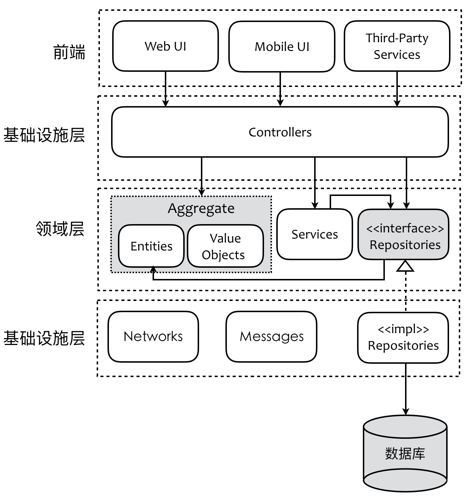
这个分层架构展现了“离经叛道”的一面，因为基础设施层在这里出现了两次，但同时也充分说明了基础设施层的命名存在不足。当我们提及基础设施（Infrastructure）时，总还是会想当然地将其视为最基础的层。同时，这个架构也凸显了分层架构在表现力方面的缺陷。
引入应用层
即使我们分离了前后端，又引入了扮演北向网关角色的 Controllers，都不可规避一个问题，那就是领域层的设计粒度过细。由于有了 Controllers，我们可以将 Controllers 看成是领域层的客户端，这就使得它需要与封装了 Entity 与 Value Object 的 Aggregate、Services 以及抽象的 Repositories 接口协作。基于 KISS（Keep It Simple and Stupid）原则或最小知识原则，我们希望调用者了解的知识越少越好，调用变得越简单越好，这就需要引入一个间接的层来封装，这就是应用层存在的主要意义：
领域驱动分层架构中的应用层其实是一个外观（Facade）。GOF 的《设计模式》认为外观模式的意图是“为子系统中的一组接口提供一个一致的接口，外观模式定义了一个高层接口，这个接口使得这一子系统更加容易使用。”我们要理解“高层接口”的含义。一方面，它体现了一个概念层次的高低之分，以上图的分层架构来说，应用层是高层抽象的概念，但表达的是业务的含义，领域层是底层实现的概念，表达的是业务的细节。领域驱动设计要求应用层“不包含业务逻辑”，但对外它却提供了一个一致的体现业务用例的接口。注意，这里的接口概念并非指 Java 或 C# 等语言的 interface 语法。
基础设施层的本质
引入应用层后，整个分层架构的职责变得更加清晰了，唯一显得较为另类的是同为灰色部分的基础设施层。目前，该分层架构图的基础设施层被分成了两个，分别位于应用层上端和领域层下端。从依赖关系看，处于领域层下端的基础设施层是通过实现抽象 Repository 接口导致的。虽然我也可以将其置于领域层甚至应用层上端，以此来表达这种依赖关系；但我仍然选择保留原来的层次位置，我希望通过该图清晰地体现所谓“北向网关”与南向网关“的语义。正如我在前面分析整洁架构思想时，提到“属于适配器的 Controllers、Gateways 与 Presenters 对应于领域驱动设计的基础设施层。”我们将整洁架构、六边形架构与领域驱动设计的四层架构综合起来考虑，可以得到结论：
Controllers + Gateways + Presenters = Adapters = Infrastructure Layer
我个人认为，这些组件确乎有适配的语义，将它们视为适配器（Adapter）并无不对之处，但我觉得 Martin Fowler 在《企业应用架构模式》中提出的网关（Gateway）模式似乎更准确。Martin Fowler 对该模式的定义为：An object that encapsulates access to an external system or resource. （封装访问外部系统或资源行为的对象。）基础设施层要做的事情不正是封装对外部系统或资源的访问吗？至于“适配”的语义，仅仅是这种封装的实现模式罢了，更何况在这些组件中，不仅仅做了适配的工作。基于此，我才将这些组件统统视为“网关”，并根据其方向分别划分为北向网关与南向网关。理解网关的含义，可以帮助我们更好地理解基础设施层的本质。扮演网关角色的组件其实是一个出入口（某种情况下，网关更符合六边形架构中端口+适配器的组合概念），所以它们的行为特征是：网关组件自身会参与到业务中，但真正做的事情只是对业务的支撑，提供了与业务逻辑无关的基础功能实现。
经历了多次演进，我们的分层架构终于在避免贫血模型的同时保证了领域逻辑的纯粹性，有效地隔离了业务复杂度与技术复杂度。演进后的分层架构既遵循了整洁架构思想，又参考了六边形架构与微服务架构的特点。但我们不能说这样的分层架构就是尽善尽美的，更不能僵化地将演化得来的分层架构视为唯一的标准。分层架构是一种架构模式，遵循了“关注点分离”原则。因此，在针对不同限界上下文进行分层架构设计时，还需要结合当前限界上下文的特点进行设计，合理分层，保证结构的清晰和简单。
025 案例 层次的职责与协作关系（图文篇）
经历多次演进，我们已经初步得到了符合领域驱动设计思想的分层架构，但这种架构仅仅是一种静态的逻辑划分，在实现一个业务用例时，各层之间是怎么协作的，我们似乎还不得而知。辨别这种动态的协作关系，还是应该从职责的角度入手，即必须清楚地理解分层架构中每个逻辑层的职责。
一味的理论讲解可能已经让爱好案例与代码的程序员昏昏欲睡了，何况用纯理论知识来讲解职责与协作，也让我力有未逮。不如通过一个具体案例，来说明层次的职责以及层次之间的协作关系。还是以电商系统的下订单场景为例，在买家提交订单时，除了与订单直接有关的业务之外，还需要执行以下操作。
- 订单数据的持久化：OrderRepository 提供插入订单功能。它属于支撑订单提交业务的基础功能，但将订单持久化到数据库的实现 OrderMapper 并不属于该业务范畴。
- 发送通知邮件：NotificationService 提供通知服务。它属于支撑通知业务的基础功能，但邮件发送的实现 EmailSender 却不属于该业务范畴。
- 异步发送消息给仓储系统：提交订单成功后需要异步发送消息 OrderConfirmed 给仓储系统，这一通信模式是通过消息队列来完成的。EventBus 发送 OrderConfirmed 事件属于支撑订单提交成功的基础功能，但发送该事件到 RabbitMQ 消息队列的 RabbitEventBus 则不属于该业务范畴。
同时，为了用户界面客户端或第三方服务的分布式调用，需要通过 OrderController 暴露 RESTful 服务。它本身不提供任何业务实现，而是通过将请求委派给应用层的 OrderAppService 来完成订单的提交。
下图体现了前述三个流程在各层之间以及系统内外部之间的协作关系。注意，在这里我将牵涉到的类型放在了同一个限界上下文中，如果牵涉到多个限界上下文之间的协作，实现会略有不同，对应的代码模型也将有所调整。我会在后续内容中深入探讨限界上下文之间的协作对代码模型的影响。
基础设施层的 OrderController 扮演了北向网关的角色，承担了与用户界面层或第三方服务交互的进出口职责。它通过 Spring Boot 来完成对 HTTP 请求的响应、路由和请求/响应消息的序列化与反序列化。它的自有职责仅仅是对请求/响应消息的验证，以及对 OrderAppService 的调用。或许有人会质疑处于后端顶层的控制器为何属于基础设施层？但我认为这样的分配是合理的，因为 Controller 要做的事情与基础设施层所要履行的职责完全匹配，即它提供的是 REST 服务的基础功能。
基础设施层南向网关包括 OrderMapper、EmailSender 和 RabbitEventBus，它们对内为具体的某个业务提供支撑功能，对外则需要借助框架或驱动器访问外部资源。与北向网关不同，对它们的调用由属于内层的应用服务 OrderAppService 发起，因此需要为它们建立抽象来解除内层对外层的依赖。前面已经分析，由于 Repository 提供的方法分属领域逻辑，故而将 OrderMapper 所要实现的接口 OrderRepository 放到核心的领域层。至于 EmailSender 与 RabbitEventBus 各自的抽象 NotificationService 与 EventBus 并未代表领域逻辑，为了不污染领域层的纯洁性，放在应用层似乎更为合理。
无论是北向网关还是南向网关，它们都要与外部资源进行协作，不管是对内/外协议的适配，还是对内部协作对象的封装，本质上它们只做与业务直接有关的基础功能。真正与业务无关的通用基础功能，是与具体某个软件系统无关的，属于更加基础和通用的框架。例如，OrderController 调用的 Spring Boot APIs，EmailSender 调用的 JavaMail APIs、OrderMapper 调用的 MyBatis APIs 以及 RabbitEventBus 调用的 RabbitMQ APIs，都是这样的通用框架。它们是系统代码边界外的外部框架，通常为第三方的开源框架或商业产品；即使是团队自行研发，也不应该属于当前业务系统的代码模型。
我们可以基于这个案例归纳各个层次的职责。
- 领域层：包含 PlaceOrderService、Order、Notification、OrderConfirmed 与抽象的 OrderRepository，封装了纯粹的业务逻辑，不掺杂任何与业务无关的技术实现。
- 应用层：包含 OrderAppService 以及抽象的 EventBus 与 NotificationService，提供对外体现业务价值的统一接口，同时还包含了基础设施功能的抽象接口。
- 基础设施层：包含 OrderMapper、RabbitEventBus 与 EmailSender，为业务实现提供对应的技术功能支撑，但真正的基础设施访问则委派给系统边界之外的外部框架或驱动器。
注意：这里定义了两个分属不同层次的服务，二者极容易混淆。PlaceOrderService 是领域服务，定义在领域层中；OrderAppService 是应用服务，定义在应用层中。这二者的区别属于战术设计的层面，我会在之后的战术设计讲解中深入阐释，我的博客《如何分辨应用服务与领域服务》也有比较详细的介绍。
OrderController 的实现代码如下所示：
package practiceddd.ecommerce.ordercontext.infrastucture;
import org.springframework.web.bind.annotation.RestController;
import org.springframework.web.bind.annotation.RequestMapping;
import org.springframework.web.bind.annotation.RequestMethod;
import org.springframework.web.bind.annotation.RequestParam;
import org.springframework.beans.factory.annotation.Autowired;
import practiceddd.ecommerce.ordercontext.infrastructure.message.CreateOrderRequest;
import practiceddd.ecommerce.ordercontext.application.OrderAppService;
import practiceddd.ecommerce.ordercontext.domain.Order;
@RestController
@RequestMapping(value = "/orders/")
public class OrderController {
@Autowired
private OrderAppService service;
@RequestMapping(method = RequestMethod.POST)
public void create(@RequestParam(value = "request", required = true) CreateOrderRequest request) {
if (request.isInvalid()) {
throw new BadRequestException("the request of placing order is invalid.");
}
Order order = request.toOrder();
service.placeOrder(order);
}
}
应用服务 OrderAppService 的代码如下所示：
package practiceddd.ecommerce.ordercontext.application;
import org.springframework.beans.factory.annotation.Autowired;
import org.springframework.stereotype.Service;
import practiceddd.ecommerce.ordercontext.domain.PlaceOrderService;
import practiceddd.ecommerce.ordercontext.domain.Order;
import practiceddd.ecommerce.ordercontext.domain.OrderCompleted;
import practiceddd.ecommerce.ordercontext.domain.Notification;
import practiceddd.ecommerce.ordercontext.domain.OrderNotification;
import practiceddd.ecommerce.ordercontext.domain.exceptions.InvalidOrderException;
@Serivce
public class OrderAppService {
@Autowired
private NotificationService notificationService;
@Autowired
private EventBus eventBus;
@Autowired
private PlaceOrderService placeOrderService;
public void placeOrder(Order order) {
try {
placeOrderService.execute(order);
notificatonService.send(composeNotification(order));
eventBus.publish(composeEvent(order));
} catch (InvalidOrderException | Exception ex) {
throw new ApplicationException(ex.getMessage());
}
}
private Notification composeNotification(Order order) {
// 组装通知邮件的内容，实现略
}
private OrderConfirmed composeEvent(Order order) {
// 组装订单确认事件的内容，实现略
}
}
既然 OrderAppService 属于应用层的应用服务，它就不应该包含具体的业务逻辑。倘若我们将发送邮件和异步消息发送视为“横切关注点”，那么在应用服务中调用它们是合乎情理的；然而，通过 Order 组装 Notification 与 OrderConfirmed 的职责，却应该放在领域层，因为基于订单去生成邮件内容以及发布事件包含了业务逻辑与规则。问题出现！由于这两个对象是由领域层生成的对象，我们该如何将领域层生成的对象传递给处于它之上的应用层对象？
有三种解决方案可供选择。
第一种方案是将组装通知邮件与订单确认事件的职责封装到领域层的相关类中，然后在应用层调用这些类的方法，如此可以减少应用层的领域逻辑：
package practiceddd.ecommerce.ordercontext.domain;
import org.springframework.stereotype.Service;
@Service
public class NotificationComposer {
public Notification compose(Order order) {
// 实现略
}
}
package practiceddd.ecommerce.ordercontext.domain;
import org.springframework.stereotype.Service;
@Service
public class OrderConfirmedComposer {
public OrderConfirmed compose(Order order) {
// 实现略
}
}
则应用服务就可以简化为：
package practiceddd.ecommerce.ordercontext.application;
import org.springframework.beans.factory.annotation.Autowired;
import org.springframework.stereotype.Service;
import practiceddd.ecommerce.ordercontext.domain.PlaceOrderService;
import practiceddd.ecommerce.ordercontext.domain.Order;
import practiceddd.ecommerce.ordercontext.domain.OrderConfirmed;
import practiceddd.ecommerce.ordercontext.domain.Notification;
import practiceddd.ecommerce.ordercontext.domain.exceptions.InvalidOrderException;
import practiceddd.ecommerce.ordercontext.domain.NotificationComposer;
import practiceddd.ecommerce.ordercontext.domain.OrderConfirmedComposer;
@Service
public class OrderAppService {
@Autowired
private NotificationService notificationService;
@Autowired
private EventBus eventBus;
@Autowired
private PlaceOrderService placeOrderService;
@Autowired
private NotificationComposer notificationComposer;
@Autowired
private OrderConfirmedComposer orderConfirmedComposer;
public void placeOrder(Order order) {
try {
placeOrderService.execute(order);
notificatonService.send(notificationComposer.compose(order));
eventBus.publish(orderConfirmedComposer.compose(order));
} catch (InvalidOrderException | Exception ex) {
throw new ApplicationException(ex.getMessage());
}
}
}
采用这种方案的代码结构如下所示：
ordercontext.infrastructure
- OrderController
- OrderMapper
- EmailSender
- RabbitEventBus
ordercontext.application
- OrderAppService
- NotificationService
- EventBus
ordercontext.domain
- OrderRepository
- PlaceOrderService
- Order
- Notification
- OrderConfirmed
- NotificationComposer
- OrderConfirmedComposer
第二种方案则将“上层对下层的调用”改为“下层对上层的通知”，即前面讲解层之间协作时所谓“自底向上”的通信问题，这就需要在领域层为订单业务定义 OrderEventPublisher 接口。当满足某个条件时，通过它在领域层发布事件，这个事件即所谓“领域事件（Domain Event）”。如果我们将建模的视角切换到以“事件”为中心，则意味着领域服务在下订单完成后，需要分别发布 NotificationComposed 与 OrderConfirmed 事件，并由应用层的 OrderEventHandler 作为各自事件的订阅者。这里的前提是：发送邮件与异步发送通知属于应用逻辑的一部分。
我们需要先在领域层定义发布者接口：
package practiceddd.ecommerce.ordercontext.domain;
public interface OrderEventPublisher {
void publish(NotificationComposed event);
void publish(OrderConfirmed event);
}
实现 OrderEventPublisher 接口的类放在应用层：
package practiceddd.ecommerce.ordercontext.application;
import practiceddd.ecommerce.ordercontext.domain.OrderEventPublisher;
import practiceddd.ecommerce.ordercontext.domain.NotificationComposed;
import practiceddd.ecommerce.ordercontext.domain.Notification;
import practiceddd.ecommerce.ordercontext.domain.OrderConfirmed;
public class OrderEventHandler implements OrderEventPublisher {
private NotificationService notificationService;
private EventBus eventBus;
public OrderEventHandler(NotificationService notificationService, EventBus eventBus) {
this.notificationService = notificationService;
this.eventBus = eventBus;
}
public void publish(NotificationComposed event) {
notificationService.send(event.notification());
}
public void publish(OrderConfirmed event) {
eventBus.publish(event);
}
}
应用层的应用服务则修改为：
package practiceddd.ecommerce.ordercontext.application;
import org.springframework.beans.factory.annotation.Autowired;
import org.springframework.stereotype.Service;
import practiceddd.ecommerce.ordercontext.domain.PlaceOrderService;
import practiceddd.ecommerce.ordercontext.domain.Order;
import practiceddd.ecommerce.ordercontext.domain.exceptions.InvalidOrderException;
@Service
public class OrderAppService {
@Autowired
private PlaceOrderService placeOrderService;
@Autowired
private NotificationService notificationService;
@Autowired
private EventBus eventBus;
public void placeOrder(Order order) {
try {
placeOrderService.register(new OrderEventHandler(notificationService, eventBus));
placeOrderService.execute(order);
} catch (InvalidOrderException ex) {
throw new ApplicationException(ex.getMessage());
}
}
}
领域服务修改为：
package practiceddd.ecommerce.ordercontext.domain;
import org.springframework.beans.factory.annotation.Autowired;
import org.springframework.stereotype.Service;
import practiceddd.ecommerce.ordercontext.domain.exceptions.InvalidOrderException;
@Service
public class PlaceOrderService {
@Autowired
private OrderRepository orderRepository;
@Autowired
private NotificationComposer notificationComposer;
private OrderEventPublisher publisher;
public void register(OrderEventPublisher publisher) {
this.publisher = publisher;
}
public void execute(Order order) {
if (!order.isValid()) {
throw new InvalidOrderException(String.format("The order with id %s is invalid.", order.id()));
}
orderRepository.save(order);
fireNotificationComposedEvent(order);
fireOrderConfirmedEvent(order);
}
private void fireNotificationComposedEvent(Order order) {
Notification notification = notificationComposer.compose(order);
publisher.publish(new NotificationComposed(notification));
}
private void fireOrderConfirmedEvent(Order order) {
publisher.publish(new OrderConfirmed(order));
}
}
倘若采用这种方案，则代码结构如下所示：
ordercontext.infrastructure
- OrderController
- OrderMapper
- EmailSender
- RabbitEventBus
ordercontext.application
- OrderAppService
- NotificationService
- EventBus
- OrderEventHandler
ordercontext.domain
- OrderRepository
- PlaceOrderService
- NotificationComposer
- OrderEventPublisher
- Order
- OrderConfirmed
- NotificationComposed
第三种方案需要重新分配 NotificationService 与 EventBus，将这两个抽象接口放到单独的一个名为 interfaces 的包中，这个 interfaces 包既不属于应用层，又不属于领域层。在后面讲解代码模型时，我会解释这样设计的原因，详细内容请移步阅读后面的章节。
通过这样的职责分配后，业务逻辑发生了转移，发送邮件与异步发送通知的调用不再放到应用服务 OrderAppService 中，而是封装到了 PlaceOrderService 领域服务。这时，应用服务 OrderAppService 的实现也变得更加简单。看起来，修改后的设计似乎更符合领域驱动分层架构对应用层的定义，即“应用层是很薄的一层，不包含业务逻辑”。这里的前提是：发送邮件与异步发送通知属于业务逻辑的一部分。
应用服务的定义如下所示：
package practiceddd.ecommerce.ordercontext.application;
import org.springframework.beans.factory.annotation.Autowired;
import org.springframework.stereotype.Service;
import practiceddd.ecommerce.ordercontext.domain.PlaceOrderService;
import practiceddd.ecommerce.ordercontext.domain.Order;
import practiceddd.ecommerce.ordercontext.domain.exceptions.InvalidOrderException;
@Service
public class OrderAppService {
@Autowired
private PlaceOrderService placeOrderService;
public void placeOrder(Order order) {
try {
placeOrderService.execute(order);
} catch (InvalidOrderException | Exception ex) {
throw new ApplicationException(ex.getMessage());
}
}
}
不过，领域服务就变得不太纯粹了：
package practiceddd.ecommerce.ordercontext.domain;
import org.springframework.beans.factory.annotation.Autowired;
import org.springframework.stereotype.Service;
import practiceddd.ecommerce.ordercontext.interfaces.NotificationService;
import practiceddd.ecommerce.ordercontext.interfaces.EventBus;
import practiceddd.ecommerce.ordercontext.domain.exceptions.InvalidOrderException;
@Service
public class PlaceOrderService {
@Autowired
private NotificationService notificationService;
@Autowired
private EventBus eventBus;
@Autowired
private OrderRepository orderRepository;
@Autowired
private NotificationComposer notificationComposer;
public void execute(Order order) {
if (!order.isValid()) {
throw new InvalidOrderException(String.format("The order with id %s is invalid.", order.id()));
}
orderRepository.save(order);
notificatonService.send(notificationComposer.compose(order));
eventBus.publish(new OrderConfirmed(order));
}
}
代码结构如下所示：
ordercontext.infrastructure
- OrderController
- OrderMapper
- EmailSender
- RabbitEventBus
ordercontext.application
- OrderAppService
ordercontext.interfaces
- NotificationService
- EventBus
ordercontext.domain
- OrderRepository
- PlaceOrderService
- Order
- OrderConfirmed
- Notification
- NotificationComposer
这三个方案该如何选择？根本的出发点在于你对业务逻辑和应用逻辑的认知，进而是你对领域服务与应用服务的认知，这些内容，就留待战术设计部分来讨论。由于并不存在绝对完美的正确答案，因此我的建议是在满足功能需求与松散耦合的前提下，请尽量选择更简单的方案。
026 限界上下文与架构
作为领域驱动战略设计的重要元素，限界上下文对领域驱动架构有着直接的影响。在领域驱动的架构设计过程中，识别限界上下文与上下文映射都是一个重要的过程。限界上下文可以作为逻辑架构与物理架构的参考模型，而上下文映射则非常直观地体现了系统架构的通信模型。
限界上下文的架构范围
这里，我需要再一次澄清 Eric Evans 提出的“限界上下文”概念：限界上下文究竟是仅仅针对领域模型的边界划分，还是对整个架构（包括基础设施层以及需要使用的外部资源）垂直方向的划分？ 正如前面对 Eric Evans 观点的引用，他在《领域驱动设计》一书中明确地指出：“根据团队的组织、软件系统的各个部分的用法以及物理表现（代码和数据库模式等）来设置模型的边界”，显然，限界上下文不仅仅作用于领域层和应用层，它是架构设计而非仅仅是领域设计的关键因素。
限界上下文体现的是一个垂直的架构边界，主要针对后端架构层次的垂直切分。例如，订单上下文的内部就包含了应用层、领域层和基础设施层，每一层的模块都是面向业务进行划分，甚至可能是一一对应的。
对于基础设施层需要访问的外部资源，以及为了访问它需要重用的框架或平台，与技术决策和选型息息相关，仍然属于架构设计的考量范围，但它们不属于限界上下文的代码模型。例如，订单上下文需要访问数据库和消息队列。在技术决策上，我们需要确定是选择 NoSQL 数据库还是关系数据库，消息队列是采用 Pull 模式还是 Push 模式。在技术选型上，我们需要确定具体是哪一种数据库和消息队列中间件，同时还需要确定访问它们的框架。对资源的规划与设计也属于限界上下文的设计范围，例如，如何设计数据表、如何规划消息队列的主题。在进行这一系列的技术选型和决策时，依据的其实是该限界上下文的业务场景与质量属性，这些架构活动自然就属于该限界上下文的范畴。我们还需要决定框架的版本，这些框架并不属于系统的代码库，但需要考虑它们与限界上下文代码模型的集成、构建与部署。
限界上下文的通信边界
我们对整个业务系统按照限界上下文进行了划分。划分时，限界上下文之间是否为进程边界隔离，直接影响架构设计。此为限界上下文的通信边界，以进程为单位分为进程内与进程间两种边界。之所以这么分类，是因为进程内与进程间在如下方面存在迥然不同的处理方式：
- 通信
- 消息的序列化
- 资源管理
- 事务与一致性处理
- 部署
除此之外，通信边界的不同还影响了系统对各个组件（服务）的重用方式与共享方式。
进程内的通信边界
若限界上下文之间为进程内的通信方式，则意味着在运行时它们的代码模型都运行在同一个进程中，可以通过实例化的方式重用领域模型或其他层次的对象。即使都属于进程内通信，限界上下文的代码模型（Code Model）仍然存在两种级别的设计方式。以 Java 为例，归纳如下。
- 命名空间级别：通过命名空间进行界定，所有的限界上下文其实都处于同一个模块（Module）中，编译后生成一个 Jar 包。
- 模块级别：在命名空间上是逻辑分离的，不同限界上下文属于同一个项目的不同模块，编译后生成各自的 Jar 包。这里所谓的“模块”，在 Java 代码中也可以创建为 Jigsaw 的 module。
这两种级别的代码模型仅仅存在编译期的差异，后者的解耦会更加彻底，倘若限界上下文的划分足够合理，也能提高它们对变化的应对能力。例如，当限界上下文 A 的业务场景发生变更时，我们可以只修改和重编译限界上下文 A 对应的 Jar 包，其余 Jar 包并不会受到影响。由于它们都运行在同一个 Java 虚拟机中，意味着当变化发生时，整个系统需要重新启动和运行。
即使处于同一个进程的边界，我们仍需重视代码模型的边界划分，因为这种边界隔离有助于整个系统代码结构变得更加清晰。限界上下文之间若采用进程内通信，则彼此之间的协作会更加容易、更加高效。然而，正所谓越容易重用，就越容易产生耦合。编写代码时，我们需要谨守这条无形的逻辑边界，时刻注意不要逾界，并确定限界上下文各自对外公开的接口，避免它们之间产生过多的依赖。此时，防腐层（ACL）就成了抵御外部限界上下文变化的最佳场所。一旦系统架构需要将限界上下文调整为进程间的通信边界，这种“各自为政”的设计与实现能够更好地适应这种演进。
以第 10 课介绍的项目管理系统为例，假设项目上下文与通知上下文之间的通信为进程内通信，当项目负责人将 Sprint Backlog 成功分配给团队成员之后，系统将发送邮件通知该团队成员。这个职责由项目上下文的 AssignSprintBacklogService 领域服务承担，而发送通知的职责则由通知上下文的 NotificationAppService 应用服务承担。考虑到未来限界上下文通信边界的变化，我们就不能直接在 AssignSprintBacklogService 服务中实例化 NotificationAppService 对象，而是在项目上下文中定义通知服务的接口 NotificationService，并由 NotificationClient 去实现这个接口，它们扮演的就是防腐层的作用。AssignSprintBacklogService 服务依赖该防腐层的接口，并将具体实现通过依赖注入。这个协作过程如下面的时序图所示：
倘若在未来需要将通知上下文分离为进程间的通信边界，这种变动将只会影响到防腐层的实现，作为 NotificationService 服务的调用者，并不会受到这一变化的影响。
采用进程内通信的系统架构属于单体（Monolithic）架构，所有限界上下文部署在同一个进程中，因此不能针对某一个限界上下文进行水平伸缩。当我们需要对限界上下文的实现进行替换或升级时，也会影响到整个系统。即使我们守住了代码模型的边界，耦合仍然存在，导致各个限界上下文的开发互相影响，团队之间的协调成本也随之而增加。
进程间的通信边界
倘若限界上下文之间的通信是跨进程的，则意味着限界上下文是以进程为边界。此时，一个限界上下文就不能直接调用另一个限界上下文的方法，而是要通过分布式的通信方式。
当我们将一个限界上下文限定在进程边界内时，并不足以决定领域驱动架构的设计质量。我们还需要将这个边界的外延扩大，考虑限界上下文需要访问的外部资源，这就产生了两种不同风格的架构：
- 数据库共享架构
- 零共享架构
数据库共享架构
数据库共享架构其实是一种折中的手段。在考虑限界上下文划分时，分开考虑代码模型与数据库模型，就可能出现代码的运行是进程分离的，数据库却共享彼此的数据，即多个限界上下文共享同一个数据库。由于没有分库，在数据库层面就可以更好地保证事务的 ACID。这或许是该方案最有说服力的证据，但也可以视为是对“一致性”约束的妥协。
数据库共享的问题在于数据库的变化方向与业务的变化方向并不一致，这种不一致性体现在两方面，具体如下。
- 耦合：虽然限界上下文的代码模型是解耦的，但在数据库层面依然存在强耦合关系。
- 水平伸缩：部署在应用服务器的应用服务可以根据限界上下文的边界单独进行水平伸缩，但在数据库层面却无法做到。
根据 Netflix 团队提出的微服务架构最佳实践，其中一个最重要特征就是“每个微服务的数据单独存储”，但是服务的分离并不绝对代表数据应该分离。数据库的样式（Schema）与领域模型未必存在一对一的映射关系。在对数据进行分库设计时，如果仅仅站在业务边界的角度去思考，可能会因为分库的粒度太小，导致不必要的跨库关联。因此，我们可以将“数据库共享”模式视为一种过渡方案。如果没有想清楚微服务的边界，就不要在一开始设计微服务时，就直接将数据彻底分开，而应采用演进式的设计。
为了便于在演进设计中将分表重构为分库，从一开始要注意避免在分属两个限界上下文的表之间建立外键约束关系。某些关系型数据库可能通过这种约束关系提供级联更新与删除的功能，这种功能反过来会影响代码的实现。一旦因为分库而去掉表之间的外键约束关系，需要修改的代码太多，会导致演进的成本太高，甚至可能因为某种疏漏带来隐藏的 Bug。
如果设计数据表时没有外键约束关系，可能在当前增加了开发成本，却为未来的演进打开了方便之门。例如，在针对某手机品牌开发的舆情分析系统中，危机查询服务提供对识别出来的危机进行查询。查询时，需要通过 userID 获得危机处理人、危机汇报人的详细信息。左图为演进前直接通过数据库查询的方式，右图则切断了这种数据库耦合，改为服务调用的方式：
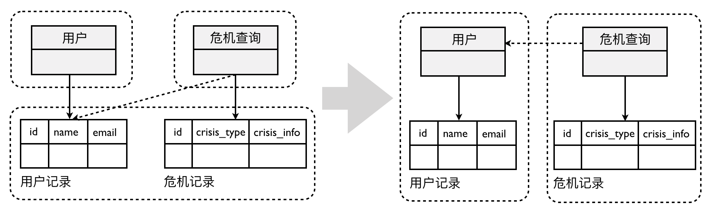
数据库共享架构也可能是一种“反模式”。当两个分处不同限界上下文的服务需要操作同一张数据表（这张表被称之为“共享表”）时，就传递了一个信号，即我们的设计可能出现了错误。
- 遗漏了一个限界上下文，共享表对应的是一个被重用的服务：买家在查询商品时，商品服务会查询价格表中的当前价格，而在提交订单时，订单服务也会查询价格表中的价格，计算当前的订单总额；共享价格数据的原因是我们遗漏了价格上下文，通过引入价格服务就可以解除这种不必要的数据共享。
- 职责分配出现了问题，操作共享表的职责应该分配给已有的服务：舆情服务与危机服务都需要从邮件模板表中获取模板数据，然后再调用邮件服务组合模板的内容发送邮件；实际上从邮件模板表获取模板数据的职责应该分配给已有的邮件服务。
- 共享表对应两个限界上下文的不同概念：仓储上下文与订单上下文都需要访问共享的产品表，但实际上这两个上下文需要的产品信息并不相同，应该按照限界上下文的边界分开为各自关心的产品信息建表。
为什么会出现这三种错误的设计？根本原因在于我们没有通过业务建模，而是在数据库层面隐式地进行建模，因而在代码中没有体现正确的领域模型，从而导致了数据库的耦合或共享。遵循领域驱动设计的原则，我们应该根据领域逻辑去识别限界上下文。
零共享架构
当我们将两个限界上下文共享的外部资源彻底斩断后，就成为了零共享架构。例如，前面介绍的舆情分析系统，在去掉危机查询对用户表的依赖后，就演进为零共享架构。如下图所示，危机分析上下文与用户上下文完全零共享：
这是一种限界上下文彻底独立的架构风格，它保证了边界内的服务、基础设施乃至于存储资源、中间件等其他外部资源的完整性与独立性，最终形成自治的微服务。这种架构的表现形式为：每个限界上下文都有自己的代码库、数据存储以及开发团队，每个限界上下文选择的技术栈和语言平台也可以不同，限界上下文之间仅仅通过限定的通信协议和数据格式进行通信。
此时的限界上下文形成了一个相对自由的“独立王国”。从北向网关的 Controller 到应用层，从应用层到领域层的领域模型，再到南向网关对数据库的访问实现，进而到数据库的选型都可以由当前限界上下文独立做主。由于它们是“零共享”的，使得它们彼此之间可以独立演化，在技术选型上也可以结合自己上下文的业务场景做出“恰如其分”的选择。譬如说，危机分析需要存储大规模的非结构化数据，同时业务需要支持对危机数据的全文本搜索，我们选择了 ElasticSearch 作为持久化的数据库。考虑到开发的高效以及对 JSON 数据的支持，我们选择了 Node.js 为后端开发框架。至于用户上下文，数据量小，结构规范，采用传统的基于关系型数据库的架构会更简单更适合。二者之间唯一的耦合就是危机分析通过 HTTP 协议访问上游的用户服务，根据传入的 userID 获得用户的详细信息。
彻底分离的限界上下文变得小而专，使得我们可以很好地安排遵循 2PTs 规则的小团队去治理它。然而，这种架构的复杂度也不可低估。限界上下文之间的通信是跨进程的，我们需要考虑通信的健壮性。数据库是完全分离的，当需要关联之间的数据时，需得跨限界上下文去访问，无法享受数据库自身提供的关联福利。由于每个限界上下文都是分布式的，如何保证数据的一致性也是一件棘手的问题。当整个系统都被分解成一个个可以独立部署的限界上下文时，运维与监控的复杂度也随之而剧增。
027 限界上下文对架构的影响
通信边界对架构的影响
限界上下文的通信边界会对系统的架构产生直接的影响，在此之前，我们需要理清几个和边界有关的概念。如前所述，我提出了限界上下文的通信边界的概念，并将其分为进程内通信与进程间通信两种方式。在 Toby Clemson 给出的微服务架构中，则将逻辑边界视为整个微服务的边界，而将微服务代码模型中的所有模块视为在同一个网络边界内。但我认为在引入了虚拟化以及容器技术后，仍将这种边界描述为网络边界似乎并不准确，因此我以进程边界来表示前面提到的通信边界。
显然，倘若限界上下文之间采用进程间通信，则每个限界上下文就可以认为是一个微服务——对于微服务，我更愿意用进程边界来界定代码模型的部署与运行。
无论是网络边界，还是进程边界，都可以视为物理边界；而代码模型中对于层以及模块的划分，则属于逻辑边界的范畴。逻辑边界有时候会和物理边界重合，但这仅仅是针对代码模型而言。一个系统多数情况下都会访问其物理边界之外的外部资源，如此看来，一个系统的逻辑边界往往要大于物理边界。
在进行架构设计时，我们往往会将整个系统的架构划分为多个不同的视图，其中最主要的视图就是逻辑视图和物理视图，这是我们看待系统的两种不同视角。前者关注代码结构、层次以及职责的分配，后者关注部署、运行以及资源的分配，这两种视图都需要考虑限界上下文以及它们之间的协作关系。在考虑逻辑视图时，我们会为限界上下文履行的职责所吸引，同时又需得关注它们之间的协作，此时，就该物理视图粉墨登场了。若两个限界上下文的代码模型属于同一个物理边界，就是部署和运行在同一个进程中的好哥俩儿，调用方式变得直接，协作关系较为简单，我们只需要在实现时尽可能维护好逻辑边界即可。如果限界上下文代码模型的逻辑边界与物理边界完全重叠，要考虑的架构要素就变得复杂了。
对于跨进程边界进行协作的限界上下文，我建议为其绘制上下文映射，并通过六边形架构来确定二者之间的通信端口与通信协议。上游限界上下文公开的接口可以是基于 HTTP 的 REST 服务，也可以通过 RPC 访问远程对象，又或者利用消息中间件传递消息。选择的通信协议不同，传递的消息格式以及序列化机制也不同，为下游限界上下文建立的客户端也不相同。由于这种协作关系其实是一种分布式调用，自然存在分布式系统与身俱来的缺陷，例如，网络总是不可靠，维护数据一致性要受到 CAP 原则的约束。这时，就需要考虑服务调用的熔断来及时应对故障，避免因单一故障点带来整个微服务架构的连锁反应。我们还需要权衡数据一致性问题，若不要求严格的数据一致性，则可以引入最终一致性（BASE），如采用可靠事件模式、补偿模式或者 TCC（Try-Confirm-Cancel）模式等。当然我们还需要考虑安全、部署和运维等诸多与分布式系统有关的问题，这些问题已经超出了本课程讨论的范围，这里就略过不提了。
限界上下文、六边形架构与微服务
如前所述，倘若我们将单个限界上下文代码模型的边界视为物理边界，则可以认为一个限界上下文就是一个微服务。而在前面介绍六边形架构时，我也提到该架构模式外部的六边形边界实则也是物理边界。基于这些前提，我们得出结论：
- 一个限界上下文就是一个六边形，限界上下文之间的通信通过六边形的端口进行；
- 一个微服务就是一个六边形，微服务之间的协作就是限界上下文之间的协作。
显然，在将限界上下文的代码模型边界视为物理边界时，限界上下文、六边形与微服务之间就成了“三位一体”的关系。我们可以将三者的设计原则与思想结合起来，如下图所示：
该图清晰地表达了这种“三位一体”的关系。
- 限界上下文即微服务：我们可以利用领域驱动设计对限界上下文的定义，以及根据前述识别限界上下文的方法来设计微服务。
- 微服务即限界上下文：运用微服务设计原则，可以进一步甄别限界上下文的边界是否合理，对限界上下文进行进一步的演化。
- 微服务即六边形：深刻体会微服务的“零共享架构”，并通过六边形架构来表达微服务。
- 限界上下文即六边形：运用上下文映射来进一步探索六边形架构的端口与适配器角色。
- 六边形即限界上下文：通过六边形架构的端口确定限界上下文之间的集成关系。
我们试以电商系统的购物流程来说明这种“三位一体”的关系。首先，我们通过领域场景分析的用例图来分析该购物流程：
通过对各个用例的语义相关性与功能相关性，结合这些用例的业务能力，可以确定用例的边界。当我们为这些边界进行命名时，就初步获得了如下六个限界上下文：
- Product Context
- Basket Context
- Order Context
- Inventory Context
- Payment Context
- Notification Context
结合购买流程，电商系统还需要用到第三方物流系统对商品进行配送，这个物流系统可以认为是电商系统的外部系统（External Service）。如果这六个限界上下文之间采用跨进程通信，实际上就是六个微服务，它们应该单独部署在不同节点之上。现在，我们需要站在微服务的角度对其进行思考。需要考虑的内容包括如下。
- 每个微服务是如何独立部署和运行的？如果我们从运维角度去思考微服务，就可以直观地理解所谓的“零共享架构”到底是什么含义。如果我们在规划系统的部署视图时，发现微服务之间在某些资源存在共用或纠缠不清的情况，就说明微服务的边界存在不合理之处，换言之，也就是之前识别限界上下文存在不妥。
- 微服务之间是如何协作的？这个问题牵涉到通信机制的决策、同步或异步协作的选择、上游与下游服务的确定。我们可以结合上下文映射与六边形架构来思考这些问题。上下文映射帮助我们确定这种协作模式，并在确定了上下游关系后，通过六边形架构来定义端口。
现在我们可以将六边形架构与限界上下文结合起来，即通过端口确定限界上下文之间的协作关系，绘制上下文映射。如果采用客户方—供应商开发模式，则各个限界上下文六边形的端口就是上游（Upstream，简称 U）或下游（Downstream，简称 D）。由于这些限界上下文都是独立部署的微服务，因此，它们的上游端口应实现为 OHS 模式（下图以绿色端口表示），下游端口应实现为 ACL 模式（下图以蓝色端口表示）：
每个微服务都是一个独立的应用，我们可以针对每个微服务规划自己的分层架构，进而确定微服务内的领域建模方式。微服务的协作也有三种机制，分别为命令、查询和事件。Ben Stopford 在文章 Build Services on a Backbone of Events 中总结了这三种机制，具体如下。
- 命令：是一个动作，是一个要求其他服务完成某些操作的请求，它会改变系统的状态，命令会要求响应。
- 查询：是一个请求，查看是否发生了什么事。重要的是，查询操作没有副作用，它们不会改变系统的状态。
- 事件：既是事实又是触发器，用通知的方式向外部表明发生了某些事。
发出命令或查询请求的为下游服务，而服务的定义则处于上游。如上图所示，我以菱形端口代表“命令”，矩形端口代表“查询”，这样就能直观地通过上下文映射以及六边形的端口清晰地表达微服务的服务定义以及服务之间的协作方式。例如，Product Context 同时作为 Basket Context 与 Order Context 的上游限界上下文，其查询端口提供的是商品查询服务。Basket Context 作为 Order Context 的上游限界上下文，其命令端口提供了清除购物篮的命令服务。
如果微服务的协作采用事件机制，则上下文映射的模式为发布/订阅事件模式。这时，限界上下文之间的关系有所不同，我们需要识别在这个流程中发生的关键事件。传递关键事件的就是六边形的端口，具体实现为消息队列，适配器则负责发布事件。于是，系统的整体架构就演变为以事件驱动架构（Event-Driven Architecture，EDA）风格构建的微服务系统。Vaughn Vernon 在《实现领域驱动设计》一书中使用六边形架构形象地展现了这一架构风格。
六边形之间传递的三角形就是导致限界上下文切换的关键事件，在领域驱动设计中，作为领域事件（Domain Event）被定义在领域层。为了与限界上下文内部传递的领域事件区分开，我们可以名其为“关键领域事件”，又或者称为“应用事件”，它仍然属于领域模型中的一部分。在前面所示的上下文映射中，我们可以用三角形端口来代表“事件”，事件端口所在的限界上下文为发布者，该事件对应的下游端口则为订阅者。然而，当我们采用“事件”的协作机制时，上下文映射中的上下游语义却发生了变化，原来作为“命令”或“查询”提供者的上游，却成为了“事件”机制下处于下游的订阅者。以购物篮为例，“清除购物篮”命令服务被定义在 Basket Context 中。当提交订单成功后，Order Context 就会发起对该服务的调用。倘若将“提交订单”视为一个内部命令（Command），在订单被提交成功后，就会触发 OrderConfirmed 事件，此时，Order Context 反而成为了该事件的发布者，Basket Context 则会订阅该事件，一旦侦听到该事件触发，就会在 Basket Context 内部执行“清除购物篮”命令。显然，“清除购物篮”不再作为服务发布，而是在事件的 handler 中作为内部功能被调用。
采用“事件”协作机制会改变我们习惯的顺序式服务调用形式，整个调用链会随着事件的发布而产生跳转，尤其是暴露在六边形端口的“关键事件”，更是会产生跨六边形（即限界上下文）的协作。仍以电商系统的购买流程为例，我们只考虑正常流程。在 Basket Context 中，一旦购物篮中的商品准备就绪，买家就会请求下订单，此时开始了事件流。
- Basket Context 发布 OrderRequested 事件，Order Context 订阅该事件，然后执行提交订单的流程。
- Order Context 验证订单，并发布 InventoryRequested 事件，要求验证订单中购买商品的数量是否满足库存要求。
- Inventory Context 订阅此事件并对商品库存进行检查，倘若检查通过，则发布 AvailabilityValidated 事件。
- Order Context 侦听到 AvailabilityValidated 事件后，验证通过，发布 OrderValidated 事件从而发起支付流程。
- Payment Context 响应 OrderValidated 事件，在支付成功后发布 PaymentProcessed 事件。
- Order Context 订阅 PaymentProcessed 事件，确认支付完成进而发布 OrderConfirmed 事件。
- Basket Context、Notification Context 与 Shipment Context 上下文都将订阅该事件。Basket Context 会清除购物篮，Notification Context 会发起对买家和卖家的通知，而 Shipment Context 会发起配送流程，在交付商品给买家后，发布 ShipmentDelivered 事件并被 Order Context 订阅。
整个协作过程如下图所示（图中的序号对应事件流的编号）：
与订单流程相关的事件包括：
- OrderRequested
- InventoryRequested
- AvailabilityValidated
- OrderValidated
- PaymentProcessed
- OrderConfirmed
- ShipmentDelivered
我们注意到这些事件皆以“过去时态”命名，这是因为事件的本质是“事实（Fact）”，意味着它是过去发生的且不可变更的数据，代表了某种动作的发生，并以事件的形式留下了足迹。
正如前面给出的事件驱动架构所示，事件的发布者负责触发输出事件（Outgoing Event），事件的订阅者负责处理输入事件（Incoming Event），它们作为六边形的事件适配器，也就是我所说的网关，被定义在基础设施层。事件适配器的抽象则被定义在应用层。假设电商系统选择 Kafka 作为事件传递的通道，我们就可以为不同的事件类别定义不同的主题（Topic）。此时，Kafka 相当于是连接微服务之间进行协作的事件总线（Event Bus）。Ben Stopford 将采用这种机制实现的微服务称为“事件驱动服务（Event Driven Services）”。
通过电商系统的这个案例，清晰地为我们勾勒出限界上下文、六边形与微服务“三位一体”的设计脉络，即它们的设计思想、设计原则与设计方法是互相促进互相融合的。在架构设计层面上，三者可谓浑然一体。
028 领域驱动设计的代码模型
理解了限界上下文和分层架构的本质，要确认系统的代码模型自然也就水到渠成。提醒注意，没有必要要求每个团队都遵守一套代码模型，但在同一个项目中，代码模型应作为架构规范要求每个团队成员必须遵守。当然，在遵守规范的同时，每个人需要理解如此划分代码模型的意义所在、价值所在。
遵循领域驱动设计思想的代码模型
结合领域驱动分层架构设计思想，通过引入整洁架构与六边形架构以及上下文映射等设计原则与模式，我们对层、层之间协作、跨限界上下文之间的协作已经有了深入的理解。当我们考虑限界上下文的代码模型时，需要考虑纵向架构除前端之外的所有层次或模块。故而在代码模型设计因素中，需要考虑层与模块之间的职责分离与松散耦合，同时还必须将整个限界上下文作为基本设计单元，照顾到限界上下文之间的协作关系。基于这样的设计因素，结合我自己的项目经验，给出了如下代码模型推荐：
- application
- interfaces
- domain
- repositories
- gateways
- controllers
- persistence
- mq
- client
- ...
以下是对代码结构的说明。
- application：对应了领域驱动设计的应用层，主要内容为该限界上下文中所有的应用服务。
- interfaces：对 gateways 中除 persistence 之外的抽象，包括访问除数据库之外其他外部资源的抽象接口，以及访问第三方服务或其他限界上下文服务的抽象接口。从分层架构的角度讲，interfaces 应该属于应用层，但在实践时，往往会遭遇领域层需要访问这些抽象接口的情形，单独分离 出 interfaces，非常有必要。
- domain：对应了领域驱动设计的领域层，但是我将 repositories 单独分了出来，目的是为了更好地体现它在基础设施层扮演的与外部资源打交道的网关语义。
- repositories：代表了领域驱动设计中战术设计阶段的资源库，皆为抽象类型。如果该限界上下文的资源库并不复杂，可以将 repositories 合并到 domain 中。
- gateways：对应了领域驱动设计的基础设施层，命名为 gateways，是为了更好地体现网关的语义，其下可以视外部资源的集成需求划分不同的包。其中，controllers 相对特殊，它属于对客户端提供接口的北向网关，等同于上下文映射中“开放主机服务（OHS）”的概念。如果为了凸显它的重要性，可以将 controllers 提升到与 application、domain、gateways 同等层次。我之所以将其放在 gateways 之下，还是想体现它的网关本质。persistence 对应了 repositories 抽象，至于其余网关，对应的则是 interfaces 下的抽象，包括消息队列以及与其他限界上下文交互的客户端。例如，通过 http 通信的客户端。其中，client 包下的实现类与 interfaces 下的对应接口组合起来，等同于上下文映射中“防腐层（ACL）”的概念。
我们看到，这里给出的代码结构并未严格按照领域驱动设计的分层架构来划分，我们需要把握以下内容。
- 分层架构的层并非编程语言可以限定的，因此它只是一种设计概念，最后都需要映射到模块或包的概念上。
- 无论代码结构是否表达了层的概念，都需要充分理解分层的意义，并使得整个代码结构在架构上要吻合分层架构的理念。
- 每个模块或包都是单一职责的设计，在整个代码模型中扮演着不同的角色，有的对应了分层架构的层，有的代表了领域驱动设计的设计要素，有的则是为了保证架构的松散耦合。
如果不考虑 Repository 在领域驱动设计中的特殊性，而仅仅将其视为一种网关，则上述结构中 gateways 与 interfaces 恰恰建立了一一对应的对称关系。唯有 controllers 因为不需要依赖注入的关系，没有对应在 interfaces 模块中的抽象定义。考虑到 controllers 对应上下文映射的开放主机服务（OHS）模式，client 对应上下文映射的防腐层（ACL）模式，我们还可以定义如下更符合领域驱动设计特色的代码模型：
- application
- domain
- interfaces
- repositories
- mq
- acl
- ...
- gateways
- ohs
- persistence
- mq
- acl
- ...
代码模型中的 ohs 和 acl 不言自明，充分说明了它们在架构中发挥的作用。倘若我们在团队中明确传递这一设计知识，不仅可以让团队成员更加充分地理解“开放主机服务”与“防腐层”的意义，也更有利于保证限界上下文在整个架构中的独立性。诸如 ohs 与 acl 的命名，也可以认为是代码模型中的一种“统一语言”吧。
虽然都遵循了领域驱动设计，但限界上下文的通信边界会直接影响到代码模型的设计决策。
进程间通信的代码模型
如果限界上下文的边界是进程间通信，则意味着每个限界上下文就是一个单独的部署单元，此即微服务的意义。通常，我们希望一个微服务应该设计为单一职责的高内聚服务，然而麻雀虽小，五脏俱全，在微服务的边界范围内，我认为仍然需要为其建立分层架构。当然，由于微服务的粒度较小，它的代码模型一般采用命名空间级别的方式，整个微服务的代码模型生成一个 JAR 包即可。
架构的设计需要“恰如其分”，在不同的微服务中，各自的领域逻辑复杂程度亦不尽相同，故而不必严格遵循领域驱动设计的规范。Martin Fowler 在《企业应用架构模式》一书中针对不同复杂度的领域，总结了三种不同的领域建模模式，包括事务脚本（Transaction Script）、表模块（Table Module）或领域模型（Domain Model）。在物理隔离的限界上下文内部，我们可以有针对性地选择不同的领域模型。Scott Millett 的著作《Patterns、Principles and Practices of Domain-Driven Design》就此给出了如下图所示的架构：
领域模型不同，代码结构也会受到影响。例如，选择了事务脚本，领域模型就不一定要规避贫血模型，依赖注入也就未必成为必选项了，Repositories 的抽象意义也有所不同。既然本课程讲解领域驱动设计，因此这里主要探讨领域模型的建模方式，即领域驱动战术设计所建议的模式与原则。
还记得前面在讲解层次的职责与协作关系给出的下订单案例吗？当我们选择第三种方案时，给出的代码模型如下所示：
ordercontext.infrastructure
- OrderController
- CreateOrderRequest
- OrderMapper
- EmailSender
- RabbitEventBus
ordercontext.application
- OrderAppService
ordercontext.interfaces
- NotificationService
- EventBus
ordercontext.domain
- OrderRepository
- PlaceOrderService
- Order
- OrderConfirmed
- Notification
- NotificationComposer
现在，为了更好地体现限界上下文之间的协作，我们将本例中的邮件通知放到一个单独的限界上下文 Notification Context 中。Order Context 与 Notification Context 之间采用了进程间通信，则遵循前面的建议，修改代码模型为：
ordercontext
- gateways
- controllers
- OrderController
- messages
- CreateOrderRequest
- persistence
- OrderMapper
- client
- NotificationClient
- mq
- RabbitEventBus
- application
- OrderAppService
- interfaces
- client
- NotificationService
- SendNotificationRequest
- mq
- EventBus
- domain
- PlaceOrderService
- Order
- OrderConfirmed
- Notification
- NotificationComposer
- repositories
- OrderRepository
notificationcontext
- controllers
- NotificationController
- messages
- SendNotificationRequest
- application
- NotificationAppService
- interfaces
- EmailSender
- domain
- NotificationService
- Destination
- Message
- gateways
- JavaMailSender
与之前的代码模型比较，现在的代码模型去掉了 infrastructure 的概念，改以各种 gateway 来表示。同时，还单独定义了 interfaces 模块，包含各种网关对应的抽象接口。
代码模型需要考虑 Order Context 与 Notification Context 之间的跨进程协作。设计的目标是确保彼此之间的解耦合，此时可以引入上下文映射的开放主机服务模式与防腐层模式，同时还应避免遵奉者模式，即避免重用上游上下文的领域模型。因此，针对邮件通知功能，在 Order Context 中定义了调用 Notification Context 上下文服务的客户端 NotificationClient 与对应的抽象接口 NotificationService。这两个类型合起来恰好就是针对 Notification Context 的防腐层。Notification Context 定义了 NotificationController，相当于是该限界上下文的开放主机服务。
Notification Context 定义了自己的领域模型，包括 Destination 与 Message。同时，在 controllers 中定义了服务消息 SendNotificationRequest；Order Context 则针对通知服务的调用，定义了自己的领域模型 Notification，以及匹配服务调用的请求消息对象 SendNotificationRequest。由于 Order Context 与 Notification Context 属于两个不同的微服务，因此在 Order Context 微服务中 gateways/client 的 NotificationClient 会发起对 NotificationController 的调用，这种协作方式如下图所示：
由于限界上下文之间采用进程间通信，因此在 Notification Context 中，提供开放主机服务是必须的。倘若 NotificationController 以 RESTful 服务实现，则在 Order Context 发起对 RESTful 服务的调用属于基础设施的内容，因而必须定义 NotificationService 接口来隔离这种实现机制，使其符合整洁架构思想。
进程内通信的代码结构
如果限界上下文之间采用进程内通信，需要注意如何在代码模型中体现限界上下文的边界，更关键的则是要考虑两个处于相同进程中的限界上下文彼此之间该如何协作。如下是针对各种设计因素的考量。
- 简单：在下游限界上下文的领域层直接实例化上游限界上下文的领域类。
- 解耦：在下游限界上下文的领域层通过上游限界上下文的接口和依赖注入进行调用。
- 迁移：在下游限界上下文中定义一个防腐层，而非直接调用。
- 清晰：要保证领域层代码的纯粹性，应该避免在当前限界上下文中依赖不属于自己的代码模型。
综合考虑，如果确有迁移可能，且架构师需要追求一种纯粹的清晰架构，可以考虑在 interface 中定义自己的服务接口，然后在 gateway/client 中提供一个适配器，在实现该接口的同时，调用上游限界上下文的服务，无论这个服务是领域服务还是应用服务，甚至也可以是领域层的领域对象。因为这个调用的事实已经被 interface 中的接口隔离了。
仍然以下订单场景为例，但此时的 Notification Context 与 Order Context 采用进程内通信，则这种协作方式如下图所示：
与进程间通信的唯一区别在于：NotificationClient 不再通过跨进程调用的方式发起对 RESTful 服务的调用，即使在 Notification Context 中定义了这样的开放主机服务。如上图所示，NotificationClient 直接通过实例化的方式调用了 Notification Context 应用层的 NotificationAppService。这是在 Order Context 中，唯一与 Notification Context 产生了依赖的地方。
如此看来，即使限界上下文采用进程内通信，也仅仅是封装在防腐层中发起调用的实现有所不同，即前面例子中的 NotificationClient，而这其实并不影响代码模型。因而，无论是进程间通信，还是进程内通信，我们设计的代码模型其实是一致的，并不受通信边界的影响。之所以这样设计，理由有二，具体如下。
- 通信边界的划分是物理意义，代码模型的划分是逻辑意义，二者互相并不影响。
- 为保证系统从单体架构向微服务架构迁移，应保证代码结构不受架构风格变化的影响。
例如，假设本书的域名为 practiceddd，对于一个电商系统，无论限界上下文的边界为进程间通信还是进程内通信，上下文的命名空间都应该为practiceddd.ecommerce.{contextname}，其下的层次则是上述提及的代码模型。例如，订单上下文的命名空间为praticeddd.ecommerce.ordercontext，商品上下文的命名空间为praticeddd.ecommerce.productcontext。整个系统的代码结构如下所示：
- praticeddd
-ecommerce
- ordercontext
- application
- interfaces
- domain
- repositories
- gateways
- productcontext
- application
- interfaces
- domain
- repositories
- gateways
- ......
或许有人会提出疑问，如果 ordercontext 与 productcontext 或者其他限界上下文之间存在共同代码，该如何分配？首先我们要认识到，这里的所有组织单元（层、模块或包）都是围绕着领域逻辑来划分的。之所以在限界上下文之下还要分级划分，原因只是各个组织单元的关注点不同而已，至于一些公共的与外部资源有关的代码，都是系统边界之外的第三方框架或平台，这一点在前面介绍架构演进时已反复提及。
基于这样的设计前提，如果两个或多个限界上下文还存在共同代码，只能说明一点：那就是我们之前识别的限界上下文有问题！在第17课“上下文映射的团队协作模式”中，我们提到的“共享内核”模式就是用来解决此类问题的一种方法。一旦提炼或发现了这个隐藏的限界上下文，就应该将它单列出来，与其他限界上下文享受相同的待遇，即处于代码模型的相同层次，然后再通过 interfaces 与 gateways/client 下的相关类配合完成限界上下文之间的协作即可。
029 代码模型的架构决策
代码模型属于软件架构的一部分，它是设计模型的进化与实现，体现出了代码模块（包）的结构层次。在架构视图中，代码模型甚至会作为其中的一个视图，通过它来展现模块的划分，并定义运行时实体与执行视图建立联系，如下图所示：
确定软件系统的代码模型属于架构决策的一部分。在领域驱动设计背景下，代码模型的设计可以分为两个层次，具体如下。
- 系统层次：设计整个软件系统的代码模型。
- 限界上下文层次：设计限界上下文内部的代码模型。
在领域驱动设计中，限界上下文对整个系统进行了划分，以便于实现“分而治之”的架构设计思想。正如前面几课所述，我们可以将每个限界上下文视为一个自治单元，这个自治单元就像一个独立的子系统，可以有自己的架构。尤其是当我们将一个限界上下文视为一个微服务时，这种控制在边界内的独立架构就显得更加明显。上一课介绍的代码模型，其实是这样的模型设计层次。
针对整个软件系统，我们可以将这些限界上下文视为一个黑盒子。我们仅需关心限界上下文暴露的接口以及它们之间的协作关系。而对于整个软件系统，则需要保证其在架构风格上的一致性。所谓“风格”，可以参考 Roy Fielding 的定义：
风格是一种用来对架构进行分类和定义它们的公共特征的机制。每一种风格都为组件的交互提供了一种抽象，并且通过忽略架构中其余部分的偶然性细节，来捕获一种交互模式（pattern of interation）的本质特征。
Roy Fielding 对“风格”的定义突出了对架构的分类和公共特征的定义。无论是分类，还是识别公共特征，都是一种抽象。同时，定义中明确指出风格为组件的协作提供了抽象，这说明架构风格并不涉及实现细节。在架构设计时，需要找出那些稳定不变的本质特征，且这个特征与系统的目标还有需求是相匹配的。结合领域驱动设计，限界上下文以及上下文映射就是这样的一种抽象：
- 如果我们将限界上下文视为微服务，则该系统的架构风格就是微服务架构风格；
- 如果我们将上下文协作模式抽象为发布/订阅事件，则该系统的架构风格就是事件驱动架构风格；
- 如果在限界上下文层面将查询与命令分为两种不同的实现模式，则该系统的架构风格就是命令查询职责分离（CQRS）架构风格。
显然，这些架构风格适应于不同的应用场景，即这些风格的选择应与系统要解决的问题域相关。为了保证整个软件系统架构设计的一致性，我们可以结合 Simon Brown 提出的 C4 模型来考虑设计元素的粒度和层次：
自上而下，Simon Brown 将整个软件系统分为了四个层次，分别为系统上下文（System Context）、容器（Containers）、组件（Components）以及类（Classes），这些层次的说明如下所示。
- 系统上下文：是最高的抽象层次，代表了能够提供价值的东西。一个系统由多个独立的容器构成。
- 容器：是指一个在其内部可以执行组件或驻留数据的东西。作为整个系统的一部分，容器通常是可执行文件，但未必是各自独立的进程。从容器的角度理解一个软件系统的关键在于，任何容器间的通信可能都需要一个远程接口。
- 组件：可以想象成一个或多个类组成的逻辑群组。组件通常由多个类在更高层次的约束下组合而成。
- 类：在一个面向对象的世界里，类是软件系统的最小结构单元。
在系统上下文层次，我们需要考虑的架构因素是将系统作为一个完整单元，然后思考它和用户之间的交互方式是怎样的，需要集成的外部系统有哪些，采用怎样的通信协议？若在这个层次考虑架构风格，就更容易建立架构的抽象体系。例如：
- 倘若我们采用微服务的架构风格，意味着包括用户和外部系统在内的客户端都需要通过 API Gateway 实现微服务的调用；
- 倘若采用事件驱动架构风格，意味着系统与外部系统之间需要引入消息中间件，以便于事件消息的传递；
- 倘若采用 CQRS 架构风格，意味着系统暴露的 API 接口需要分解为命令接口和查询接口，接口类型不同，处理模式和执行方式都不相同。
C4 模型中的容器基本等同于微服务的概念，推而广之也就代表了限界上下文的概念。其实，容器与组件之间的边界很模糊，这取决于我们对限界上下文之间通信机制的决策。不仅限于此，即使采用了微服务架构风格，我们识别出来的限界上下文亦未必一定要部署为一个微服务。它们可能为整个系统提供公共的基础功能，因而在微服务架构中实际是以公共组件的形式而存在的。
在代码模型上，这些公共组件又分为两种。
一种公共组件具有业务价值，因而对应于一个限界上下文，可以视为是支撑子域（Supporting SubDomain）或通用子域（Generic SubDomain）在解决方案上的体现，如规则引擎、消息验证、分析算法等。那么，在微服务架构风格中，为何不将这样的限界上下文部署为微服务呢？这实际上是基于微服务的优势与不足来做出的设计决策。
如上图所示，微服务保证了技术选择的自由、发布节奏的自由、独立升级的自由以及自由扩展硬件配置资源的自由。为了获得这些自由，付出的代价自然也不少，其中就包括分布式系统固有的复杂度、数据的一致性问题以及在部署和运维时带来的挑战。除此之外，我们还需要考虑微服务协作时带来的网络传输成本。如果我们能结合具体的业务场景考虑这些优势与不足，就可以在微服务与公共组件之间做出设计权衡。
基于我个人的经验，我认为当满足以下条件时，应优先考虑设计为微服务：
- 实现经常变更，导致功能需要频繁升级；
- 采用了完全不一样的技术栈；
- 对高并发与低延迟敏感，需要单独进行水平扩展；
- 是一种端对端的垂直业务体现（即需要与外部环境或资源协作）。
当满足以下条件时，应优先考虑设计为公共组件：
- 需求几乎不会变化，提供了内聚而又稳定的实现；
- 在与其进行协作时，需要传输大量的数据；
- 无需访问外部资源。
如果找不到支持微服务的绝对理由，我们应优先考虑将其设计为公共组件。
另一种公共组件并非领域的一部分，仅仅提供了公共的基础设施功能，如文件读写、FTP 传输、Telnet 通信等。本质上，这些公共组件属于基础设施层的模块。如果是多个限界上下文都需要重用的公共模块，甚至可以将该公共组件视为一种基础的平台或框架。这时，它不再属于限界上下文中的代码模型，而是作为整个系统的代码模型。当然，倘若我们将这种公共组件视为基础平台或框架，还可以为其建立单独的模块（或项目），放在专有的代码库中，并以二进制依赖的形式被当前软件系统所使用。
整体而言，一个典型的微服务架构通常如下图所示：
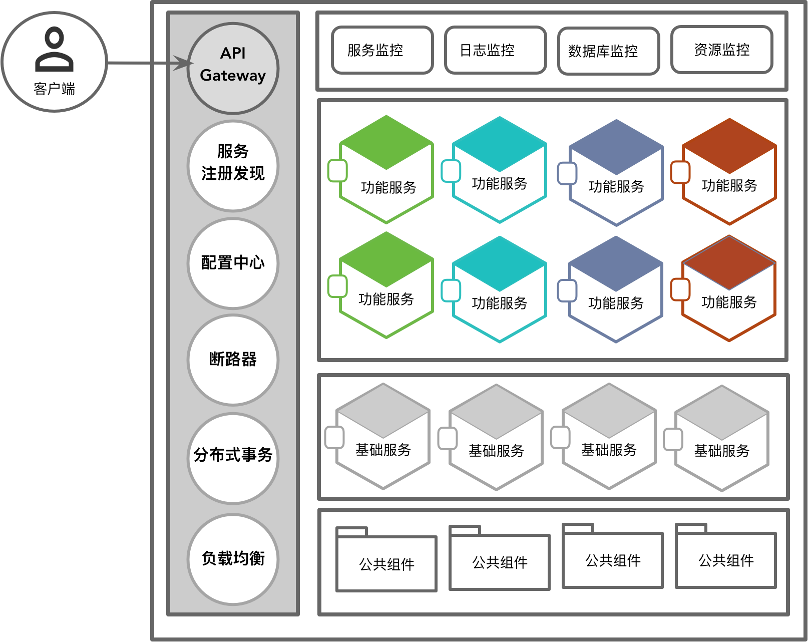
采用微服务架构风格时，诸如 Spring Cloud 之类的微服务框架事实上间接地帮我们完成了整个系统架构的代码模型。例如：
- API Gateway 作为所有微服务的访问入口，Euraka 或 Consul 提供的服务注册与发现，帮我们解决了微服务协作的访问功能；
- Feign 提供的声明式服务调用组件让我们省去了编写防腐层中 Client 的代码实现；
- Spring Cloud Config 提供了分布式的配置中心等。
这些组件在上面所示的架构中，作为微服务架构的基础设施而存在。当我们使用这样的微服务框架时，就可以让设计与开发人员只需要专注于微服务内部的设计，即领域逻辑的实现，实际上就是对软件复杂度的应对。通过限界上下文（微服务）实现对业务的分而治之，从而降低业务复杂度；而微服务架构自身虽然会带来技术复杂度的增加，但技术复杂度已经转移到了微服务框架来完成，从而整体降低了应用开发人员的开发难度。
倘若采用单体架构，我们也需保证其向微服务演化的可能。因此，这两种风格的选择对于限界上下文内部的代码模型并无影响。但我们还需要为整个系统建立一个一致的系统架构。为了保证关注点分离，整个系统的架构同样需要进行分层，并遵循整洁架构的思想。
在对整个系统架构进行分层架构设计时，需要考虑用户展现层、应用层和基础设施层与限界上下文内各层次之间的关系。我认为，限界上下文的范围包含了除用户展现层在外的其他各层。其中，应用层包含了应用服务，由它来完成领域对象的调用以及对其他横切关注点的调用。基础设施层的北向网关提供了对外公开的开放主机服务，通常被定义为 RESTful 服务。那么，对于整个系统架构而言，还需要定义系统层次的应用服务与 RESTful 服务么？如下图所示：
如果我们参考微服务架构风格，就会发现上图的控制器层暴露了所有的服务接口，相当于 API Gateway 的功能，上图的应用层用于管理各个限界上下文应用服务的协作，相当于服务注册与发现组件的功能。微服务框架提供的 API Gateway 和服务注册与发现组件仅仅是一个外观（Facade），内部并没有包含任何应用逻辑和领域逻辑。而在单体架构中，由于所有的限界上下文都部署在一个服务中，因而并不需要服务的注册与发现功能；每个限界上下文都有控制器定义了对外公开的 RESTful 服务，且所有的这些 RESTful 服务都绑定到唯一的入口（如 Spring Boot 要求定义的 Application 类）上，区别仅仅是代码模型的隔离罢了，自然也就不需要 API Gateway。故而在系统架构层次，保留二者并没有任何意义。
当然，也有例外。譬如说我们需要为整个单体架构提供一些与业务无关的 RESTful 服务，如健康检查、监控等。另外，倘若需要组合多个限界上下文的领域模型，似乎也有了保留应用层的必要。Vernon 在《实现领域驱动设计》一书中就提到了这种“组合多个限界上下文”的场景，如下图所示：
Vernon 认为：
……应用层不是成了一个拥有内建防腐层的新领域模型吗？是的，它是一个新的、廉价的限界上下文。在该上下文中，应用服务对多个 DTO 进行合并，产生的结果有点像贫血领域模型。
实际上，Vernon 在这里谈到的组合功能，目的是为了组装一个满足客户端调用的服务对象。但我认为定义这样专属的应用服务并非必须。归根结底，这个应用服务要做的事情就是对多个限界上下文领域模型的协调与组装。这种需求必然要结合具体的业务场景，例如订单对象需要组合来自不同限界上下文的商品信息、客户信息、店铺信息等。该业务场景虽然牵涉到多个限界上下文领域模型的协调，但必然存在一个主领域对应的限界上下文。这个限界上下文提供的应用服务才是该业务场景需要实现的业务价值，因此就应该将这个应用服务定义在当前限界上下文，而非整个系统架构的应用层，又或者为其建立一个新的廉价的限界上下文。而在该限界上下文内部，应用层或领域层可以通过防腐层与其他限界上下文协作，共同为这个业务提供支持。除非，这个业务场景要完成的业务目标不属于之前识别的任何一个限界上下文。
再来考虑用户展现层的场景。假设需要支持多种前端应用，且不同前端应用需要不同的视图模型和交互逻辑。考虑到前端资源有限，同时保证前端代码的业务无关性，我们可以在系统架构层面上，定义一个统一的接口层。这个接口层位于服务端，提供了与前端界面对应的服务端组件，并成为组成用户界面的一部分。在这个接口层中，我们可以为不同的前端提供不同的服务端组件。由于引入的这一接口层具有后端服务的特征，却又为前端提供服务，因而被称之为 BFF（Backends For Frontends，为前端提供的后端）。
引入的 BFF 往往是为了协调前端开发人员与后端开发人员的沟通协作问题。前端开发人员理解用户界面的设计，后端开发人员却只为垂直领域（即特性）设计服务接口，就使得二者并不能很好地实现模型之间的匹配。既然 BFF 是为前端 UI 提供的，最佳的做法就是让前端开发人员自己来定义。这也是在项目实践中 Node.js 扮演的重要作用，如下图所示：
图中为浏览器 UI 调用提供的 UI Layer，即 BFF，它实则是在服务器与浏览器之间增加了一个 Node.js 中间层。各层的职责如下表所示：
| Java | Node.js | JS + HTML + CSS |
|---|---|---|
| 服务层 | 跑在服务器上的 JS | 跑在浏览器上的 JS |
| 提供数据接口 | 转发数据，串接服务 | CSS、JS 加载与运行 |
| 维持数据稳定 | 路由设计，控制逻辑 | DOM 操作 |
| 封装业务逻辑 | 渲染页面，体验优化 | 共用模板、路由 |
显然，BFF 的引入虽然是架构决策的一部分，但严格意义上讲，它并不属于后端架构。因而，BFF 的设计并不在领域驱动战略设计的考虑范围之内。
最后再来考虑基础设施层。除了限界上下文自身需要的基础设施之外，在系统架构层面仍然可能需要为这些限界上下文提供公共的基础设施组件，例如对 Excel 或 CSV 文件的导入导出，消息的发布与订阅、Telnet 通信等。这些组件往往是通用的，许多限界上下文都会使用它们，因而应该放在系统的基础设施层而被限界上下文重用，又或者定义为完全独立的与第三方框架同等级别的公共组件。理想状态下，这些公共组件的调用应由属于限界上下文自己的基础设施实现调用。倘若它们被限界上下文的领域对象或应用服务直接调用（即绕开自身的基础设施层），则应该遵循整洁架构思想，在系统架构层引入 interfaces 包，为这些具体实现定义抽象接口。
在运用领域驱动设计时，还需要提供遵照领域驱动设计尤其是战术设计要素提供的基本构造块（Building Block），例如对 Identity 的实现、值对象、实体以及领域事件的抽象、聚合根的构造型等。你可以理解为这些构造块组成了支持领域驱动设计的框架。如果没有单独剥离出这个框架，这些构造块也将作为系统代码模型的一部分。
综上所述，我们选择的架构风格会影响到系统的代码模型。假设我们要设计的系统为 ecommerce，选择单体架构风格，则系统架构与限界上下文的代码模型如下所示：
practiceddd
- ecommerce
- core
- Identity
- ValueObject
- Entity
- DomainEvent
- AggregateRoot
- controllers
- HealthController
- MonitorController
- application（视具体情况而定）
- interfaces
- io
- telnet
- message
- gateways
- io
- telnet
- message
- ordercontext
- application
- interfaces
- domain
- repositories
- gateways
- productcontext
- application
- interfaces
- domain
如果选择微服务架构风格，通常不需要建立一个大一统的代码模型，而是按照内聚的职责将这些职责分别封装到各自的限界上下文中，又或者定义为公共组件以二进制依赖的方式被微服务调用。这些公共组件应该各自构建为单独的包，保证重用和变化的粒度。如果选择 CQRS 架构风格，就可以在限界上下文的代码模型中为 command 和 query 分别建立 module（领域驱动设计中的设计要素），使得它们的代码模型可以独自演化，毕竟命令和查询的领域模型是完全不同的。基于质量因素的考虑，我们甚至可以为同一个领域的 command 和 query 各自建立专有的限界上下文。在 command 上下文中，除了增加了 command 类和 event 类以及对应的 handler 之外，遵循前面讲述的限界上下文代码模型，而 query 上下文的领域模型就可以简化，例如直接运用事务脚本或表模块模式。
030 实践 先启阶段的需求分析
从本课开始，我将通过一个完整的真实案例 EAS 系统来展示领域驱动的战略设计过程。通过 EAS 项目，我会把前面讲解的各个知识点贯穿起来，作为实践领域驱动设计的参考设计过程呈现出来。在这个战略设计过程中，曾经因为未曾识别出项目的业务愿景而让需求分析走了一段较长的弯路；因为没有就领域概念形成统一语言，而导致领域建模出现偏差；限界上下文的识别也经历了反复迭代与修改，并经历了领域驱动架构的演进，直至获得相对稳定的领域模型与代码模型。限于篇幅，我无法呈现整个设计过程的完整全貌，但也尽可能将设计过程中遭遇的典型问题、做出的设计决策进行了阐述，并给出了部分设计结果作为参考。
通过访问 GitHub 上的 eas-ddd 项目 获得该项目的介绍与源代码，访问 eas-ddd 项目的 Wiki 可以获得 EAS 项目的需求与项目概况，限界上下文划分；访问问题列表可以获得该项目的任务列表。
背景：企业应用套件
企业应用套件（Enterprise Application Suite，EAS）是一个根据软件集团公司应用信息化的要求而开发的企业级应用软件。EAS 系统提供了大量简单、快捷的操作接口，使得集团相关部门能够更快捷、更方便、更高效地处理日常事务工作，并为管理者提供决策参考、流程简化，建立集团与各部门、员工之间交流的通道，有效地提高工作效率，实现整个集团的信息化管理。
EAS 系统为企业搭建了一个数据共享与业务协同平台，实现了人力资源、客户资源与项目资源的整合，系统包括人力资源管理、客户关系管理和项目过程管理等主要模块。系统用户为集团的所有员工，但角色的不同，决定了他们关注点之间的区别。
实施先启阶段
先启阶段是软件开发生命周期的准备阶段，力求通过较短的周期让开发团队与客户就系统范围、愿景与目标、主要需求、风险与问题、技术架构和发布迭代计划达成共识。在领域驱动设计过程中，可以将先启阶段当做是需求捕获、场景分析与建立统一语言的一种敏捷实践。
确定利益相关人
在制定先启计划时，我们需要先确定利益相关人，EAS 涉及到的组织部门包括人力资源部、市场部、项目管理部、服务中心、财务中心以及各子公司。因此，除了开发团队之外，利益相关人就包括整个集团的决策层，相关部门的负责人与具体操作 EAS 系统的集团员工。在先启阶段执行相关活动时，我们会根据这些活动的情况邀请对应的利益相关人。
制订先启计划
先启阶段是一个重要的项目开发环节，也可以视为一个特殊的迭代。尤其是先启阶段需要协调利益相关人和开发团队之间的交流与协作，就需要积极地将利益相关人引入到整个先启阶段，参与具体的先启活动。为此，我们需要事先制订一个明确的先启计划，并与利益相关人确定活动（会议）时间，保证这些提供重要输入的利益相关人都能准时参加。
EAS 先启计划（仅列出与需求分析有关的活动）如下所示：
| 活动 | 活动项目 | 集团决策层 | 子公司负责人 | 人力资源部 | 市场部 | 项目管理部 | 服务中心 | 财务中心 | 项目经理 | 需求分析师 | 技术负责人 |
|---|---|---|---|---|---|---|---|---|---|---|---|
| 启动会议 | 项目介绍 | X | X | X | X | X | X | X | X | X | X |
| 启动会议 | 确定业务期望和愿景 | X | X | X | X | X | X | X | X | ||
| 启动会议 | 优先级权衡 | X | X | X | X | X | X | ||||
| 需求 | 对问题域的共同理解 | X | X | X | X | X | X | X | X | X | |
| 需求 | 确定项目的业务范围 | X | X | X | X | X | X | X | X | ||
| 需求 | 确定业务流程 | X | X | X | X | X | X | X | X | X | |
| 需求 | 确定史诗级故事与主故事 | X | X | X |
确定业务期望和愿景
在确定业务愿景时，我们一开始重点调研了人力资源部、市场部与项目管理部的相关人员，他们都是识别出来的利益相关人。每个部门的员工都向我们提出了切合他们实际需要的业务功能，这些功能包括：
- 市场部对客户和需求的管理，对合同的跟踪；
- 项目管理部对项目和项目人员的管理，对项目进度的跟踪；
- 人力资源部负责招聘人才，管理员工的日常工作包括工作日志、考勤等。
然而，随着需求的越来越多，我们反而越来越迷茫，仿佛迷失在一张巨细无靡的需求大网中。这张网没有放过任何可能溜走的需求，可需求的详尽非但没有呈现出清晰的业务目标，反而越发的不明朗。看起来，我们撒出了一张威能强大的网，可惜选错了捕捉鱼虾的水域。
我们需要确定系统的业务期望与愿景，而不是从一开始就沉入到如蛛丝一般细而密的需求细节中。重要的利益相关人是集团管理层，他们只关注整体需求与系统目标，至于各个细节的功能不过是为了完成这一目标才提供的功能支持罢了。这正是先启阶段需要开展的需求活动，正如在[第 1-6 课]中所说：“需要确定项目的利益相关人，并通过和这些利益相关人的沟通，确定系统的业务期望与愿景。在期望与愿景的核心目标指导下，团队与客户才可能就问题域达成共同理解。”
通过与集团决策层领导的沟通交流，我们最终确定了整个系统的业务期望与愿景：“避免信息孤岛，实现人力资源的可控，从而达到人力资源的供需平衡。” 例如，客户需要集团提供 20 名各个层次的 Java 开发人员，则市场部门在确定是否签订该合同之前，需要通过 EAS 查询集团的人力资源库，了解现有的人力资源是否匹配客户需求。如果匹配，还需要各个参与部门审核人力成本，决定合同标的；如果集团当前的人力资源无法满足客户需求，就需要人力资源部提早启动招聘流程，或从人才储备库中寻找到满足需求的候选人。通过 EAS，管理人员还能够及时了解开发人员的闲置率，跟踪项目的进展情况，明确开发人员在项目中承担的职责和任务完成质量。
当我们与客户就这个业务期望与愿景达成共识后，它就成为了整个需求分析与建模阶段最重要的指导原则。当我们需要判断某个需求是否有业务价值时，可以参考这一指导原则；当我们无法识别不同用户故事的优先级时，可以借鉴这一指导原则；当我们需要确定核心领域与子领域时，我们可以遵循这一指导原则，这一指导原则可以视为是团队与客户就问题域达成的共同理解。
优先级权衡
在面对客户源源不断提出的需求时，最难做出决策的是确定这些需求的优先级。如果是业务需求，我们应该基于系统的业务期望与愿景，判断这些业务需求与实现该愿景的关联程度，并以此来作为优先级的衡量标准。如果是质量属性又或者是管理上的要求，就需要客户和我们一起给出高屋建瓴般的权衡标准。
一种比较好的实践是采用所谓的“价值滑条（Value Slider）”，即基于该需求协商谈判的可能性高低，列出所有的质量属性需求与管理要求，由客户来做出判断。若协商谈判的可能性高，则说明该需求是可以协商的，可以做出让步的，则滑条向左，意味着优先级低；若协商谈判的可能性低，就说明不可商量，没有妥协的余地，滑条向右，意味着优先级高。在由客户确定每条需求处于这个“价值滑条”的位置时，有一个约束是：任何两个或两个以上的需求对应的滑条都不能出现在同一列上，如下图所示：
如果需求对应的滑条可能出现在同一列，就需要客户做出权衡和决策，强迫他们移动滑条的位置，这就意味着调整了它们的优先级。上图作为 EAS 的“价值滑条”，意味着我们必须在规定的“最终期限”交付可用的产品，但是我们可以根据对功能的排期，优先实现高优先级的主要功能，同时也可以在人力不足或周期紧张的情况下，增加人手，并适度降低产品质量。
对问题域的共同理解
在先启阶段，对问题域（Problem Solution）的识别其实就是对客户痛点的识别。之所以要开发这个软件，目的就是解决这些痛点，为应对这些问题提供具有业务价值的功能。在识别痛点的过程中，需要始终从业务期望与愿景出发，与不同的利益相关人进行交流，如此才能达成对问题域的共同理解。
对于集团决策层，要解决“供需平衡”这个痛点，就需要及时了解我们面临哪些客户需求，目前有哪些人力资源可用，这就需要打破市场部、人力资源部与项目管理部之间的信息壁垒，对市场需求、人力资源、项目的信息进行统计，提供直观的分析结果，进而根据这些分析结果为管理决策提供支持。
市场部员工面临的痛点是如何与客户建立良好的合作关系，快速地响应客户需求，敏锐地发现潜在客户，掌握客户动态，进而针对潜在客户开展针对性的市场活动。市场部员工希望能够建立快速通道，及时明确项目承担部门（即子公司）是否能够满足客户需求，降低市场成本。市场部门还需要准确把握需求的进展情况，跟踪合同签署流程，提高客户满意度。
人力资源部员工（招聘专员）的痛点是如何制订合理的招聘计划，使得招聘的人才满足日益增长的客户需求，又不至于产生大量的人力资源闲置，导致集团的人力成本浪费。站在精细领域的角度考虑，从潜在的市场需求开始，招聘专员就需要与市场部、子公司共同确定招聘计划，制定计划的依据在于潜在的人力资源需求，包括对技能水平的要求、语言能力的要求，同时也需要考虑目前子公司的员工利用率，并参考历史的供需关系来做出尽可能准确的预测。
由于集团的项目类型复杂，特别牵涉到外派项目，项目成员不在公司集团内部，对人员的管理成为项目管理部的核心问题。此外，跟踪和了解项目进度不仅仅是项目管理人员的诉求，市场部同样关心，因为这牵涉到他们与客户的合作关系，并影响到客户满意度。
针对前面对客户痛点的分析，围绕“供需平衡”这一业务期望与愿景，我们可以将 EAS 划分为如下核心子领域：
- 决策分析
- 市场需求管理
- 客户关系管理
- 员工管理
- 人才招聘
- 项目进度管理
除了这些核心子领域外，诸如组织结构、认证与授权都属于通用的子领域，每个核心子领域都需要调用这些子领域提供的功能。注意，通用子领域提供的功能虽然不是系统业务的核心，但缺少这些功能，业务却无法流转。之所以没有将其识别为核心子领域，实则是通过对问题域的理解分析得来。例如，组织结构管理是保证业务流程运转以及员工管理的关键，用户的认证与授权则是为了保证系统的访问安全，但它并没有直接对“供需平衡”这一业务愿景提供业务价值，在前面的痛点分析中，它们也不是利益相关人亟待解决的痛点。
在分辨系统的利益相关人时，服务中心作为参与 EAS 的业务部门，主要是为项目及项目人员提供工位和硬件资源。它要解决的是资源分配的问题，虽然在某种程度上可以降低运营成本，但却与我们确定的业务愿景没有直接的关系。因此我们将该子域作为一种支撑子领域。
通过先启阶段对客户痛点的分析，我们形成了对 EAS 问题域的共同理解：
问题域对统一语言的影响
当我们在分辨市场需求管理这个问题域时，我们认为有几个领域概念是模糊不清的，即合同（Contract）、市场需求（Market Requirement）、客户需求（Client Requirement），它们三者之间的关系是什么？究竟有什么样的区别？如果不为它们建立一个达成一致共识的统一语言，就有可能影响该问题域的领域模型。
通过与市场部员工的交流，我们发现市场部对这些概念也是模糊不清的，甚至在很多场景中交替使用了这些概念，而没有一个清晰的定义。在与市场部人员的交谈过程中，他们有时候还提到了“市场需求订单”这个概念。例如，在描写市场需求时，他们会提到“录入市场需求”，但同时又会提到“跟踪市场需求订单”和“查询市场需求订单”。在讨论“客户需求”时，他们提到需要为其指定“承担者”，而在讨论“市场需求”时，却从未提及这一功能。这似乎是“客户需求”与“市场需求”之间的区别。对于“合同”的理解，他们一致认为这是一个法律概念，等同于集团或子公司作为乙方和作为甲方的客户签订的合作协议，并以合同要件的形式存在。
鉴于这些概念存在诸多歧义，我们和市场部人员一起梳理统一语言，一致认为需要引入“订单（Order）”的概念。订单不是需求（无论是客户需求还是市场需求），而是借鉴了电商系统中订单的概念，把客户提出的项目合作视为订单的商品。“客户提出的项目合作”其实就是“客户需求”，相当于是“订单”中的订单项。一个订单可以包含多个“客户需求”，例如，同一个客户可能提出三条需求：
- 需求1，需要 5 名高级 Java 程序员、10 名中级程序员
- 需求2，需要 8 名初级 .NET 程序员
- 需求3，需要开发一个 OA 系统
虽然是同一个客户，且向市场部同时提出了这些需求，但毫无疑问，这应该是三个不同的需求。但从“订单”的角度来说，这些客户需求都属于同一个订单。这与一个销售订单可以包含多个不同订单项是相似的。当然，一个订单到底包含哪几个客户需求，取决于市场部与客户洽谈合作的业务背景。例如我们也可以将前面提到的需求1和需求2放入到一个订单中，而把需求3单独放到另一个订单。
在引入“订单”概念后，市场需求与客户需求的区别也就一目了然了。市场需求是市场部售前人员了解到的需求，并未经过评估，公司也不知道能否满足需求，以及该需求是否值得去做。这也是为何市场需求无需指定“需求承担者”的原因。市场需求在经过各子公司的评估以及财务人员的审核后，就可以细化该市场需求，并经过与客户充分沟通后，最后形成订单。这个订单形成了一个初步合作意向，评估通过的每一条市场需求，则转换为订单中的客户需求。
我们仍然保留了“合同”的概念。“合同”领域概念与现实世界的“合同”法律概念相对应，它与订单存在相关性，但本质上并不相同。例如，一个订单中的每个客户需求可以由不同的子公司来承担（Owner），但合同却需要明确甲方和乙方。订单并没有合同需要的那些法律条款。未签订的合同内容确实有很大部分来自订单的内容，但也只是其中商务合作内容的一部分而已。在确定了订单后，市场部人员可以跟踪订单的状态，并且在订单状态发生变更时，修改对应的合同状态。显然，合同的状态与订单的状态并不一致。
在我们引入“订单”这个概念后，市场需求管理这个问题域就发生了细微的变化。我们可以将这个问题域更名为订单，也可以将订单领域概念视为解决方案域的组成部分，继续保留市场需求管理这个问题域，而将订单视为限界上下文。
在先启阶段，我们不一定需要领域建模。不过，当我们在识别问题域时发现领域概念无法形成统一语言时，确实可以就领域概念的定义展开讨论与分析。若发现仍有不清晰的地方，就可以通过可视化的领域模型来打消开发团队与领域专家包括客户在概念认知上的不一致。例如，我们针对市场需求问题域建立了如下的领域模型：
这个领域模型非常清晰地表达了订单（Order）与客户需求（Client Requirement）的一对多关系，且客户需求是放在了订单的聚合边界内。合同（Contract）是一个单独的领域概念，但它与订单存在一个弱关联关系。市场需求（Market Requirment）在通过评估（Assessment）后它会成为订单的一个输入，转换为客户需求。在这个领域模型中，我们可以直观地看到客户需求需要指定承担者（Owner），同时订单还会和客户关系管理问题域中的客户（Client）产生关联。显然，这样清晰表达的领域模型有助于我们和领域专家（客户）的沟通，进而针对这些领域概念达成共识，形成统一语言。
确定项目的业务范围
之所以要确定项目的业务范围，是为了明确整个系统的边界。明确系统边界是架构设计的重要前提，它一方面可以明确职责划分，了解哪些内容才属于领域驱动设计的范畴；另一方面则可以事先明确当前系统需要与哪些外部系统集成。
EAS 是软件集团公司的信息化平台，但这个信息化平台是为了解决项目开发的“供需平衡”，因此它围绕着市场需求、人力资源和项目开发为需求主线，其他的信息化产品，如办公自动化（OA）系统、财务系统、工资结算系统等都会作为外部系统与 EAS 的功能集成。明确了这样的业务范围有助于我们甄别需求的边界，并做到功能的收敛。在识别系统的史诗级故事与主故事时，也应该确保这个业务范围边界，同时这个业务范围还会影响到发布与迭代计划的制订。
确定项目的业务范围还有助于架构层面的考量，通常，我建议引入 C4 模型的系统上下文（System Context）来体现系统的边界。EAS 的系统上下文如下所示：
确定了系统上下文后，可以为后续的上下文映射提供重要参考，如上图所示的 OA 系统、财务系统与工资结算系统可以被视为第三方服务而与 EAS 的限界上下文产生协作。依赖的方向决定了我们选择上下文协作的模式。而系统上下文中的考勤机则会作为 EAS 访问的外部资源，需得做好系统与该机器设备的抽象与隔离。
确定业务流程
在明确了系统的业务愿景，并就问题域达成共同理解后，我们还需要让主要的业务功能“动”起来。这就需要确定业务流程，因为它可以更好地体现完整全面的领域场景，突出参与者（部门）与用例之间的协作。
在先启阶段，没有必要将整个系统的所有业务流程都绘制出来，重点是抓住体现业务愿景这个核心价值的主流程。既然 EAS 以“人力资源的供需平衡”为关注核心，因此所有参与方需要执行的主要功能都与该核心价值有关。通过梳理需求，开发团队在与客户充分交流后，抽象出需求方、供应方这两个核心参与者，从而绘制出供需双方的协作示意图：
这个协作示意图非常清晰地体现了需求与供应之间的关系，展现了这个核心流程的关键环节。注意，这个协作示意图并非项目开始之前的当前状态（As-Is），而是期望解决供需平衡问题的将来状态（To-Be）。这种协作关系正好体现了打破部门之间信息壁垒的愿望。由此，我们就可以绘制出整个系统的核心流程：
作为核心流程的子流程，项目管理流程与招聘流程是更低一级的业务流程。在先启阶段，如果为了获得更加准确的主故事列表，仍然有必要进一步细化这些子流程。从敏捷开发的角度讲，我们也可以将这些流程的细化放到对应迭代的需求分析活动中，以便于尽快完成先启阶段，进入到项目的正式迭代阶段。毕竟在确定了产品的待办项（史诗级故事与主故事）之后，已经足以帮助团队确定发布与迭代计划了。
031 实践 先启阶段的领域场景分析（上）
在先启阶段，我们确定了 EAS 的问题域与核心的业务流程，然后根据业务期望与愿景确定项目的业务范围，明确史诗级故事和主故事。这个过程既有利于我们对项目的整体理解，以便于确定需求列表、排定需求的优先级从而制订发布与迭代计划，又利于对领域进行建模，确定限界上下文和上下文映射，进而设计整个系统的架构。同时，我们又要准确地把握“故事（Story）”的粒度，不至于沉入到过分细粒度的需求实现细节，影响了先启阶段的实施进度。
所谓故事的层次（粒度）并没有固定的标准，在用户故事地图中，提出了三个层次：
- 用户活动
- 用户任务
- 用户故事
这里提到的用户活动就相当于史诗级故事，组成用户活动的用户任务相当于主故事，再按照 INVEST 原则继续对其进行分解，就可以获得在敏捷迭代中构成开发任务的用户故事。在[第 2-4 课：运用领域场景分析提炼领域知识（下）]中，我给出了三种不同层次的领域场景分析方法。
- 用例尤其是用例图的抽象能力更强，更擅长于对系统整体需求进行场景分析；
- 用户故事提供了场景分析的固定模式，善于表达具体场景的业务细节；
- 测试驱动开发则强调对业务的分解，利用编写测试用例的形式驱动领域建模，即使不采用测试先行，让开发者转换为调用者角度去思考领域对象及行为，也是一种很好的建模思想与方法。
因此，我个人比较倾向于在先启阶段的需求分析过程中，使用用例来表述领域场景。恰好在 Cockburn 的著作《有效编写用例》中，他提到用例的层次包括：概要目标、用户目标和子功能。例如：
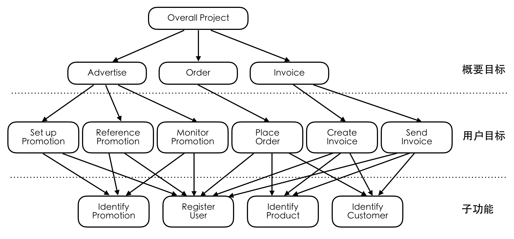
这里的用户目标就代表着具有业务价值的领域场景，也就是我们需要识别出来的主用例，它由多个子功能组成，它们之间的关系就是主故事与用户故事之间的差别。结合前面分析的问题域和业务流程，我们可以初步获得 EAS 的史诗级故事与主故事。
史诗级故事和主故事
结合 EAS 的业务愿景和核心流程，我们通过深入地需求调研，获得了 EAS 的史诗级故事和主故事。
管理客户关系
通过对客户全方位信息的统一管理，可以实现市场部工作人员、需求承担部门之间快捷、方便的信息共享，提高工作效率，并且可为集团负责人提供最实时、有效的客户信息，包括潜在客户的信息。这些信息包括客户基本信息、市场部拜访客户的记录还有客户活动记录、客户的背景资料以及客户公司的商务负责人资料。
管理客户关系的主要目的是改进和维护客户关系，因此它包括如下主故事：
- 管理潜在客户信息
- 管理客户信息
- 对客户进行分类
- 查询客户信息
- 客户满意度调查
- 维护拜访记录
- 维护客户活动记录
管理市场需求
市场人员可以收集市场需求，并与客户接触，明确这些市场需求。在创建市场需求后，需要对市场需求进行评估，进行财务核算，从而确定需求订单和客户需求，确定需求承担者。市场人员应随时跟踪需求订单的状态，并及时向客户反馈。同时，市场人员还可以查询市场需求和需求订单。包括的主故事有：
- 录入市场需求
- 查询市场需求
- 修改市场需求
- 评估市场需求
- 创建需求订单
- 指定客户需求的承担者
- 跟踪需求订单状态
- 更新需求订单状态
管理商务合同
签订的合同来自于需求订单，一个需求订单可能会创建多份商务合同。在正式签订合同之前，作为合同的创建者，可以向相关部门的负责人发起合同评审流程，并按照评审后的要求修改合同。为了便于对合同的管理，应提供查询合同与跟踪合同进展状态的功能。合同一旦经过甲方、乙方审批通过并正式签订后，就不允许任何角色和用户修改。如果要修改合同，应该是增加一份附加合同。包括如下主故事：
- 录入合同
- 添加附加合同
- 指定合同承担者
- 更新合同状态
- 为合同添加评论
管理员工
人力资源部负责对员工基本信息的管理，包括员工技能列表、语言技能、项目经验等，还要管理每位员工的日常考勤。根据组织结构的定义与授权，每位员工的直接管理者还要检查员工工作日志的填写情况，了解每位员工的工作状况。包括如下主故事：
- 管理员工基本信息
- 将储备人才转为正式员工
- 管理员工的劳务合同
- 追加员工的项目经历
- 考勤
- 填写工作日志
招聘人才
根据市场部的需求以及集团自我的发展，作为人力资源部的管理人员，需要制定招聘计划，更新和查询招聘状态。每次应聘人员的面试活动（包括电话面试、笔试、技术面试等）以及测评结果都需要记录下来归档。对于每一位应聘者，需要对投递过来的简历进行归档和录入。人力资源部的工作人员可以根据自己需要对储备人才进行分类，从而对简历进行分类管理。包括如下主故事：
- 制定招聘计划
- 审核招聘计划
- 修改招聘计划
- 查看招聘计划
- 删除招聘计划
- 输入面试记录与测评结果
- 管理储备人才信息
- 管理储备人才简历
管理项目
集团的项目有两种类型：承包项目和外派项目。不同项目类型的流程是不相同的。承包项目牵涉到对整个项目进度的跟踪，从需求到设计到开发实现和测试的全生命周期管理；外派项目则是人力资源外包，仅仅需要管理外派人员的工作情况即可。项目管理人员需要创建项目，根据项目类型和管理流程选择计划模板制订项目计划，并通过该模块查询和跟踪项目进展情况，更新项目状态。包括的主故事为：
- 创建项目
- 制订项目计划
- 创建迭代任务
- 分配任务给项目成员
- 更新项目状态
- 更新任务状态
- 为任务添加评论
- 查询项目情况
- 跟踪项目进度
- 查看指定迭代的所有任务
管理项目成员
一旦立项后，就可以为项目分配项目成员以及分配项目成员的角色，项目管理人员可以对项目成员的信息进行管理。包括如下主故事：
- 添加项目成员
- 移除项目成员
- 调整项目成员的角色
- 查看项目成员的任务状态
管理工位与硬件资源
作为服务中心的工作人员，可以管理公司现有的硬件资源信息以及工位信息。通过系统，可以将硬件资源与工位分配给集团的员工，若未分配，则为闲置硬件与工位。包括如下主故事：
- 管理硬件资源
- 管理工位
决策分析
作为集团的管理者，需要查看集团各部门的工作情况，包括需求订单情况、项目进展情况、人员利用率等综合报表，并结合各部门具体情况，定期提供日报表、周报表、月报表、季度报表和年报表。
运用用例分析方法
在先启阶段的领域场景分析过程中，我们可以运用用例分析方法对 EAS 进行需求分析。用例的驱动力是业务流程与参与者，参考的内容则为业已识别出来的史诗级故事和主故事。同时，在识别用例的过程中，还应该尽量通过用例表达领域知识，力求获得“统一语言”。典型的用例描述是一个动宾短语，体现了参与者在业务场景需要履行的职责，又或者是满足用例规格的业务行为。
为了保证用例分析方法的简洁，避免在先启阶段出现“分析瘫痪”，我将传统的用例分析方法分为两个步骤。在先启阶段进行领域场景分析时，只需要使用用例图，而非详尽的用例规格说明。至于用例的流程描述则过于死板和繁琐，我建议使用用户故事对需求进行阐述，并作为第二个步骤放在迭代开始后的领域驱动战术设计阶段。
在绘制用例图时，可以基于识别出来的史诗级故事来绘制，亦可以按照参与业务流程的参与者（Actor）来绘制。无论采用何种方法，这个过程都需要团队与领域专家通力合作，从业务而非技术实现的角度剖析领域需求，最后推导出真正能表达领域概念的用例图。
在这里，我展现的用例分析方法以参与者（Actor）为用例分析的起点，分析步骤为：
- 确定业务流程，通过业务流程识别参与者（Actor）；
- 根据每个参与者识别属于该参与者的用例，遵循一个参与者一张用例图的原则，保证用例图的直观与清晰；
- 对识别出来的用例根据语义相关性和功能相关性进行分类，确定用例的主题边界，并对每个主题进行命名。
根据业务流程确定参与者
如果考虑 EAS 的核心业务流程，可以初步识别出如下参与者：
- 集团决策者
- 市场人员
- 子公司
- 财务
- 人事专员
- 招聘专员
- 人力资源总监
- 面试官
- 项目管理办公室
- 项目经理
- 项目成员
- 员工
- 部门经理
- 服务中心
在识别参与者（Actor）时，要注意以下问题。
- 参与者不一定是人，可以是一个系统、服务或模块，也可以是一个部门。例如，定时器可以根据事先设定的规则给相关人员发送通知，此时，定时器作为一个组件成为了参与者；项目管理办公室发起项目的立项，此时，项目管理办公室作为一个部门成为了参与者。
- 当参与者为同一部门的不同角色时，可以考虑参与者的泛化关系，也可以理解为完全不同的参与者。例如，招聘专员参与的用例包括“制定招聘计划”、“修改招聘计划”和“审核招聘计划”，但第三个用例只有人力资源总监才具有操作权限。这时，可以认为人力资源总监是招聘专员的一种特化，但亦可以视为两个完全不同的参与者。当人力资源总监在操作前两个用例时，本质是扮演了招聘专员这个参与者在执行。
- 参与者不同于设计模型中的角色（Role），前者来自领域场景，是真实业务场景的参与对象，后者是对职责的抽象。例如，“评论商品”用例的参与者，可以是买家和卖家，但在设计模型中，可以抽象为评论者角色。
根据参与者识别用例
在识别参与者时，一些用户体验设计的实践是为参与者建立一个用户画像（Persona），即给出更为具体的用户特征和属性，从而得到一个如身临其境一般的场景参与者，然后设身处地思考他或者她是如何参与到这个领域场景中的。无论是否建立用户画像，这种场景模拟的方式对于用例分析都是有帮助的。
市场人员的用例图
让我们首先思考“市场人员”这个参与者。作为一家软件外包的集团公司，它与产品销售公司不同，没有售前和售后人员来负责推销商品和开展售后维护，保持与客户之间的良好关系。市场部作为开拓市场、寻找客户合作机会、维持客户关系、开展需求合作谈判的职能部门，承担了需求管理、客户管理和合同管理的职责，而市场人员作为市场部员工，全程参与了从市场需求、客户洽谈到合同签署的整个市场活动全过程。因此，市场人员参与的用例几乎涵盖了客户关系管理与市场需求两个核心子领域。这些用例关系如下图所示：
在绘制这个用例图时，我主要参考了以下内容。
- 识别的主故事：分析这些主故事的用户目标是什么，进而就可以确定应该是哪个参与者发起该用例。
- 对市场人员的调研：与市场人员进行沟通，了解该角色目前的工作任务。
- 业务流程：从组成业务流程的各个环节判断参与者与功能之间的关系。
子公司的用例图
子公司在 EAS 中，主要作为需求的承担者。承担需求的工作属于项目管理的范畴，真正的参与者是项目经理和项目成员。在核心业务流程中，当市场人员在创建了市场需求后，要由该需求的承担者即子公司负责评估，签订合同时，也需要子公司确认。此时，子公司会以部门作为整体参与到领域场景中，用例图为：
在识别“确认合同履行”用例时，我们仔细分析了业务需求。由于子公司是合同的承担者，因此履行需求合约的乙方是子公司而非集团市场部。市场人员会作为需求的委托者草拟合同，并在 EAS 中负责创建合同及上传合同附件。合同的真正签署者是子公司，但这个签订的过程是线下行为，子公司领导只需要在 EAS 系统中完成合同的确认即可。
在子公司的用例图中，包含了“为合同添加评论”用例，它同时也是市场人员的用例。不同参与者使用相同的用例，这是完全正常的。但它也给我们传递了一个信号，就是在设计模型中，我们可以考虑为该用例抽象一个角色，如“合同评论者”。在编码实现时，该角色可能会作为一个权限角色，用以控制评论合同的功能权限，也可以考虑为其定义一个角色接口。
财务的用例图
财务中心的“财务”参与者也参与了市场需求的核心业务流程：
根据前面对系统上下文的定义，EAS 的业务范围并未包含工资结算、财务成本核算等。因此在用例图中，财务仅仅负责市场需求的财务核算。
人事专员的用例图
我将人力资源部中负责管理员工信息的参与者定义为“人事专员”，员工的基本信息管理与考勤都由他（她）来负责。其用例图为：
对于员工的管理，我最初定义的用例为“管理员工信息”；然而，“管理”这个词语稍显宽泛，无法准确表达领域行为。这种过于抽象的用例描述可能会导致我们忽略一些必要的领域概念，并让领域行为变得模糊化。经过与人事专员的沟通，我们一致认为在员工管理的场景中，对员工的管理其实包括以下内容。
- 办理员工入职：入职体现了领域概念，要好于新建员工的描述。
- 办理员工离职：离职体现了领域概念，要好于删除员工的描述，何况员工的离职未必一定要删除该员工记录。
- 录入员工信息：录入员工基本信息、项目经历、技能、语言能力等。
在主故事列表中，属于人事专员的职责还包括“追加项目经历”。然而，通过深入分析用例，我们发现该用例其实应该发生项目管理过程中，作为“添加项目成员”的扩展用例，一旦员工被加入到项目，就会被触发。
招聘专员的用例图
负责招聘的人力资源部员工被定义为“招聘专员”，用例图如下所示：
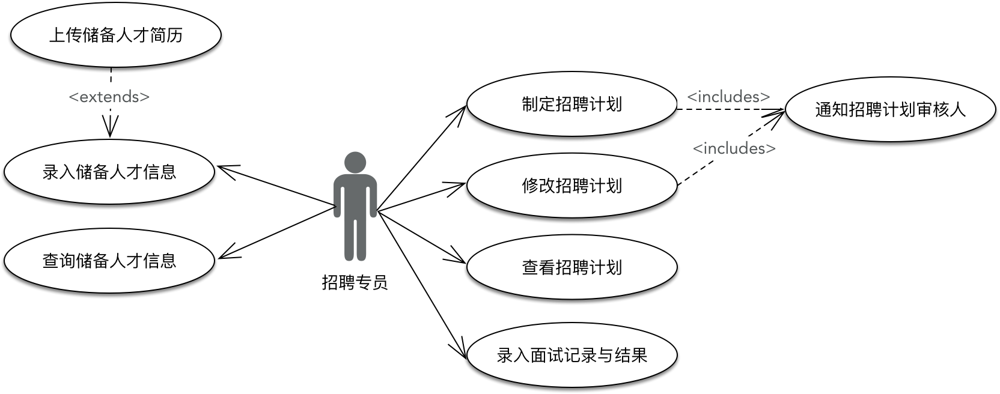
招聘专员在制定或修改招聘计划之后，需要由人力资源总监对计划进行审核，这是两个不同的参与者，人力资源总监的用例图为：
除了招聘专员会参与面试过程之外，人力资源部之外的其他员工可能会作为面试官参与面试。无论是招聘专员，还是面试官，都需要在面试之后输入面试记录与面试结果，故而引入了“面试官”参与者：
员工的用例图
集团的每一名员工都需要考勤和填报工作日志。注意在下图，我没有像人事专员与人力资源总监那样，将员工和部门经理定义为两个完全独立的参与者，而是采用泛化关系表达。**仔细体味这之间的微妙差别。**人力资源总监可以审核招聘计划，但却不会直接去制定或修改招聘计划，他（她）与人事专员之间有一个比较明显的层级关系，对应的是不同的权限。而部门经理就是一名员工，这种泛化关系是确定无疑的。
注意用例图中“查询打卡记录”和“查询出勤记录”之间的差异。打卡记录是考勤机每天留存的信息，出勤记录则是根据集团的考勤制度并结合员工的请假信息和打卡记录生成的记录内容。
工作日志定时器的用例图
这里还有一个特殊的参与者，在之前识别参与者时被忽略了，那就是提醒填报工作日志的定时器：
项目管理办公室的用例图
项目管理办公室是以部门作为参与者在项目管理场景中出现，它是整个项目的发起者、评审者，也只有它才有权终止项目或结束项目。项目管理办公室参与了整个项目管理流程的监督，但并不参与项目的具体活动：
“立项”与“结项”用例是项目流程中的关键节点，由项目管理办公室发起。当立项完成后，一个新的项目就会被创建；项目结项则意味着项目的状态发生变更。如果我们将用例命名为“创建新项目”、“更改项目信息”就不符合项目管理的统一语言。
注意，“通知项目经理”既作为了“评审项目计划”的扩展用例，又作为了“指定项目经理”的扩展用例。当然，在业务上，虽然同为通知，但通知的内容并不相同。在项目管理场景中，所有与通知有关的用例都作为扩展用例出现；事实上，在所有核心领域场景中，通知用例都不是主用例，毕竟它并不参与核心业务。
项目成员的用例图
项目成员与项目经理之间存在泛化关系，因为当项目经理在创建（编辑）一个问题（Issue）时，就是作为一名项目成员执行的操作；二者的差异还是角色不同导致的权限差异。项目成员的用例图如下所示：
我们在识别史诗级故事和主故事时，使用了“任务（Task）”来表达项目管理过程中分配给项目成员的工作；而在用例图中，我们却改为了“问题（Issue）”。“问题”是对任务、史诗故事、用户故事、缺陷的一个抽象，这是在项目管理领域中得到公认的领域概念。任务这个词语其实是与用户故事（User Story）、史诗故事（Epic）、缺陷（Defect）属于同一等级的概念，根据“单一抽象层次原则”，使用“任务”进行抽象显然不再合适。
当我们创建一个问题时，需要指定问题的基本属性，如问题的标题、描述、问题类型等。那么，问题所属的迭代、承担人（Owner）、报告人（Reporter）是否也作为问题的属性呢？我们在设计用例图时，确实困惑不已，甚至考虑过将上图中“指定问题所属的迭代”与“分配问题给项目成员”用例作为“创建问题”、“编辑问题”的包含用例。经过思索再三，最终还是认为这两个用例是有用户目标的，即提供了明显的业务价值，应该将其作为主用例，与项目成员之间存在“使用（Use）”关系。同样的，“更新问题状态”也没有出现在最初的用例图中，但实际上它与“编辑问题信息”有着完全不同的用户目标，有必要成为项目成员的主用例。
项目经理的用例图
在项目经理用例图中，“指定问题报告人”用例也是出于同样的考虑因素：
在项目经理的用例图中，最初我并没有识别出“跟踪问题进度”用例。后来，我发现我将“查询问题”与“跟踪问题进度”二者混为一谈了，这其实是不正确的。“查询问题”用例是查询符合各种搜索条件的问题，例如查询当前迭代的所有问题，查询当前迭代所有未完成的问题，查询项目成员的所有问题等；“跟踪问题进度”的着眼点是了解当前问题的完成情况，是对进度的跟踪；二者有着不同的用户目标。
服务中心的用例图
“服务中心”也是一个部门作为领域场景的参与者，该参与者的用例非常清晰，就是针对工位和硬件资源的管理：
集团决策者的用例图
最后是“集团决策者”，该参与者的用例主要是查看表达供需关系的统计报表：
就像写真时，为求画面的真实准确，必须寻找一个唯一的坐标一样，绘制用例图的唯一参考坐标就是参与者（Actor）。每个参与者的用例图或许大小不一，粒度不均，但自身是完全独立的，参与者之间（除了存在泛化关系的参与者）的用例图互不干扰，清晰地勾勒出各自观察视角得到的领域行为。
032 实践 先启阶段的领域场景分析（下）
如何有效地识别参与者的用例
前述内容通过用例形式将所有的主故事都转换成了与参与者有关的用例，那么，在识别用例时，是否有什么经验可循呢？
用例关系的确定
一个用例图，往往体现了参与者与用例之间的使用关系，用例与用例之间的包含或扩展关系，有时候还存在用例之间的泛化关系，确定用例之间的关系很重要。在识别用例时，思考参与者与用例之间的关系会成为一个不错的设计起点。尤其在先启阶段，我们识别的用例体现了 Cockburn 提出的用例层次中的用户目标层，这恰好对应用例与参与者的“使用（Use）”关系。从领域场景分析的角度看，这个使用关系代表了业务价值。在确定了参与者后，你就可以结合主故事与领域场景，询问自己：“在这个领域场景下，该参与者的用户目标是什么？”由此，可以帮助我们确定该用例是否主用例。
正如对项目用例图中的分析，如果考虑编码实现的本质，则问题所属迭代、承担人以及问题状态都是问题（Issue）的属性；然而在用例图中，我却以“指定问题所属的迭代”、“分配问题给项目成员”、“更新问题状态”此三个主用例与“编辑问题信息”平级，因为它们在项目管理中都具有不可替代的业务价值。
与之相反，包含用例与扩展用例是为具有业务价值的主用例提供支持和服务的，识别它们既可以丰富和完善业务逻辑，又可以在后续的用例边界找到属于通用子领域或支撑子领域的业务内容。这些不直接提供业务价值的用例恰好可能组成单独的限界上下文。例如，在前面给出的诸多用例图中，诸如“上传附件”、“通知评估人”等用例主要以扩展用例的形式呈现，这些扩展用例体现了各自内聚的关注点，即文件共享与消息通知。
包含用例与扩展用例之间的区别在于两个用例之间的“粘性”。包含用例为主用例不可缺少之业务环节，如“指定项目经理”包含用例之于“立项”主用例，如果缺少了指定项目经理操作，立项就是不完整的。扩展用例为主用例功能之补充，如“通知立项”扩展用例之于“立项”主用例，即使没有通知立项的相关干系人，也不妨碍立项工作的完成。作为包含用例或扩展用例本身，又可以有属于自己的包含用例或扩展用例，例如“通知项目经理”对“指定项目经理”的扩展：
从功能相关性看，“立项”与“指定项目经理”用例是强相关的，“通知立项”与“立项”用例是弱相关的。因此，对包含和扩展用例的识别往往会影响到后续对限界上下文的识别。
在识别用例图时，还要注意避免错误的用例关系识别。例如，在项目管理用例图中，团队最初为项目成员参与者识别出“接收问题分配”用例。结合业务场景对此进行检验：当项目经理将问题分配给项目成员后，在业务上确乎存在接受问题的行为；但该行为其实是一个线下行为，属于项目成员之间的一个口头表达；当问题分配给项目成员之后，就已经意味着该问题已经被项目成员接受。因此，这个用例是不合理的。
用例名应字斟句酌
在领域场景分析过程中，如果我们只满足于用例图的获得，无异于买椟还珠。用例图仅仅是我们获得的分析结果，但更重要的是我们获得用例图的过程，这其中的关键在于团队与领域专家的交流与合作。作为UML（Unified Modeling Language，统一建模语言）组成部分的用例图，已经得到行业的认可。无论是没有技术背景的领域专家，还是没有业务背景的技术专家，都能很好理解用例图这种可视化的建模语言。
用例名是领域知识的呈现，更是统一语言的有效输入。用例名应采用动宾短语，描述时须字斟句酌，把握每一个动词和名词的精确，动词是领域行为的体现，名词是领域概念的象征，进而这些行为与概念就能再借助领域模型传递给设计模型，最终通过可读性好的代码来体现。当然，在给出中文用例的同时，还应提倡以英文来表述，毕竟在最终的代码层面，还是用英文来“说话”。
在项目管理用例图中，我们最初给出的用例为“查看问题完成情况”，但在项目管理领域，所谓“问题完成情况”仅仅体现了问题的状态，却没有清晰地表达问题在迭代周期内的过程。准确的术语是“进度（Progress）”，命名为“跟踪问题进度（Tracking Issue Progress）”更加符合该领域的统一语言。在最初识别用例时，对于“创建问题”的包含用例而言，最初命名为“问题检查”。这个描述未遵循动宾短语的形式，而“检查”一词也容易带来歧义，会错以为是项目成员检查问题的完成情况，实则是对创建的问题进行合规性验证，更名为“验证问题有效性”更为合理。
再以员工管理用例图中的“提交工作日志”为例。企业的内部术语为“日志报工”，若以统一语言的角度讲，似以“日志报工”用例名为佳。然而在英文中，并无“报工”的恰当翻译，更为人接受的英文名为“Submit Work Log”，因而用例还是应命名为“提交工作日志”。
显然，通过对用例的不断打磨，对存有疑惑的用例，通过可视化的用例图与领域专家不断沟通，借助用例规格的设计指导，可以帮助我们发现问题，并进一步挖掘出准确的领域术语，建立系统的统一语言，并为后续识别限界上下文以及领域建模奠定基础。
识别用例的主题边界
在绘制用例图时，除了参与者、用例以及用例之间的关系外，还有一个非常重要的要素：主题边界（Subject Boundary）。主题边界包含了一组高内聚的用例，并需要设计者为这个边界确定一个主题（Subject）。显然，主题的确定恰好就是对用例的归类，至于归类的原则，正是[第 3-4 课 识别限界上下文]中提及的两个方面：
- 语义相关性
- 功能相关性
语义相关性
通过语义相关性来判别用例是否存在高内聚，是一种业务分析手段。就好像我们整理房间一般，相同类别的物品会整理放在一处，例如衣服类，鞋子类，书籍类……每个类别其实就是所谓的“主题（Subject）”。在前面识别用例时，我就要求针对用例名要字斟句酌。用例名通常为动宾短语，宾语往往体现了领域概念。显然，在用例名中如果包含了相同领域概念，就可以认为是语义相关的，就可能归类到同一个主题中。
在识别用例的主题边界时，我抛开了用例图的约束，选择将用例图直接以主题边界进行划分，不再继续保留参与者与用例、以及用例之间的关系。如下图是对合同（Contract）主题的识别：
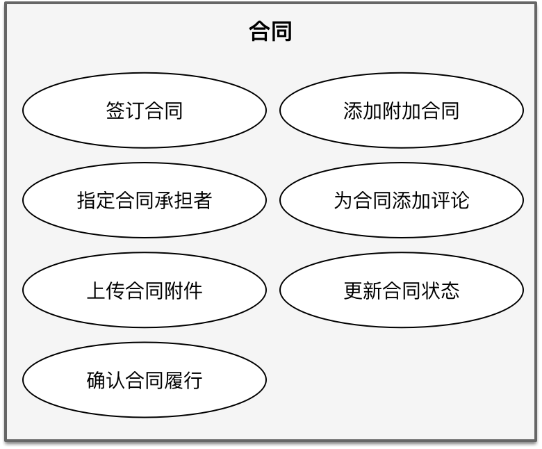
这种对用例的可视化方式可以认为是用例图的另一种视图，即“主题视图”，主要表现用例的分类和相关性，属于领域场景分析中的 Where 要素；而之前给出的用例图则为参与者视图，表现了参与者、用例之间的协作关系，属于领域场景分析中的 Who、Why 与 What 要素。两种不同的用例视图可以提供不同的参考价值，同时又保障了用例可视化的清晰度。
仔细分析合同的主题视图，我们发现在这个主题边界中的所有用例，用例名都包含了“合同（Contract）”这个领域概念，这就是所谓的“语义相关性”。有时候，这种语义相关性并没有这么直接，需要就领域概念的共同特征进行归纳，例如，市场（Marketing）主题：
在这个主题中，包括了市场需求、需求订单、客户需求等领域概念，我们却不能分别为其建立主题，毕竟这样建立的主题太过散乱而细碎。这时，就需要针对领域概念，建立抽象，即寻找这些领域概念的共同特征。显然，无论是市场需求，还是经过评估后形成的订单及客户需求，都是为一种更高的抽象层次“市场”服务的。
通过语义相关性判断用例的归属时，一个用例有可能包含两个语义，这时就需要判断语义与主题相关性的强弱。例如，“从储备人才转为正式员工”用例，究竟属于储备人才主题，还是员工主题？判断语义的相关性强弱时，可以依据用例的业务价值或用户目标，应优先考虑满足用户目标的语义。显然，“从储备人才转为正式员工”用例的用户目标是生成员工记录，储备人才的信息仅仅作为该领域行为的输入，答案不言而喻。
功能相关性
领域概念是名词，而用例则是动词，表达了一种领域行为。在确定用例的主题边界时，如果我们发现一些用例虽然在领域概念上没有明显的语义相关性，但它们却服务于一个共同的用户目标或业务价值，则说明它们是功能相关的。例如，考勤（Attendance）主题：
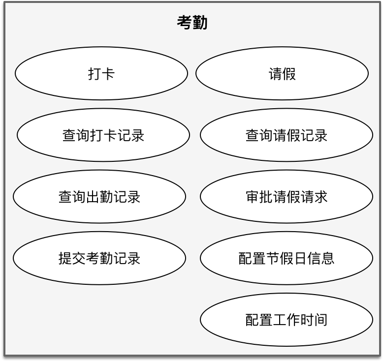
功能相关性还体现于用例之间的关联与依赖，在用例图中，主要以用例关系的包含、扩展与泛化来体现。例如，人事专员用例图：
与员工管理功能相关的子用例包括：
- 上传员工劳务合同
- 从储备人才转为正式员工
- 录入项目经历
- 录入技能信息
- 录入语言能力
那么，员工主题就应该包含以上功能相关的用例：
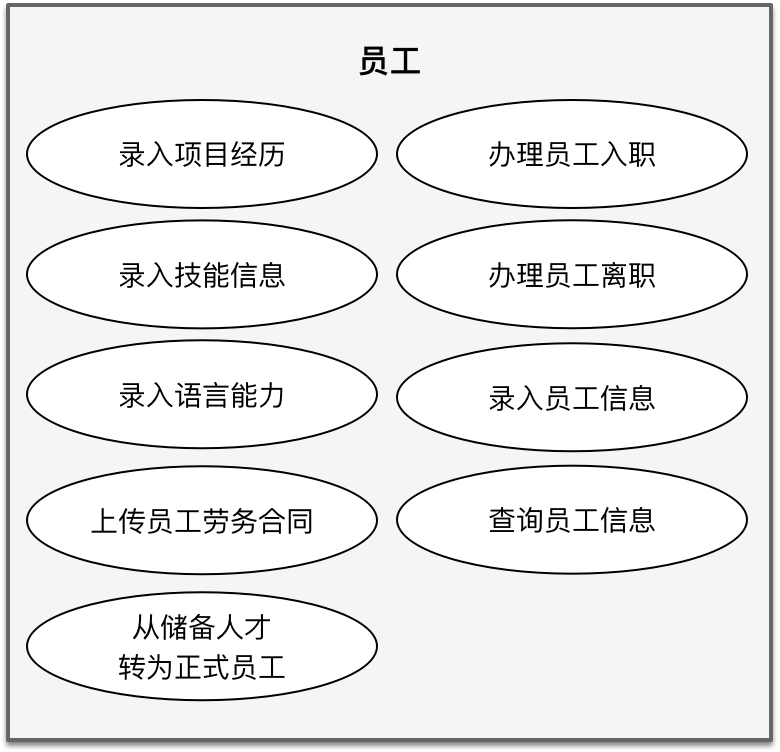
在确定用例之间关系时，我提到了包含与扩展不同的“粘度”。在确定功能相关性时，尤其要特别关注主用例的扩展用例。根据我的经验，大多数扩展用例提供了不同于主业务视角的关注点，而这些关注点往往在支撑子领域场景中提供了共同的业务价值，可以对它们做进一步抽象。在 EAS 中，这样的扩展用例主要体现在两个方面：文件上传与下载、消息通知，故而可以为其分别建立主题边界：文件共享（File Sharing）与通知（Notification）。
注意文件共享与通知主题中的用例名，描述了与具体领域场景无关的通用业务。例如，在招聘专员用例图中，定义了“上传储备人才简历”和“通知招聘计划审核人”两个用例，它们实际上分别对应了“上传 Word 文件”与“发送通知电子邮件”、“发送站内信息”用例。之所以这样描述用例名，是因为这两个主题可能会为通过其他主题提供业务支撑，一旦具体化，就无法满足通用要求。
文件共享和通知主题中的用例并没有出现在之前识别的用例图中。通过参与者识别用例图时，我们是根据先启阶段识别出来的核心业务流程、史诗级故事与主故事，并通过设想参与者参与的领域场景，进而驱动得出这些用例。文件共享和通知主题中的用例则是通过寻找所有的扩展用例，进而归纳出它们的共同特征。这是两种迥然不同的用例分析方法。
设计的决策
无论是寻找领域概念的共同特征，还是识别用例行为的用户目标，都需要一种抽象能力。在进行抽象时，可能出现“向左走还是向右走”的困惑。这是因为抽象的层次可能不同，抽象的方向或依据亦有所不同，这时就需要做出设计上的决策。例如针对用例中识别出来的“员工”与“储备人才”领域概念，我们可以抽象出“人才”的共同特征，从而得到人才（Talent）主题：
然而从共同的用户目标考虑，储备人才又是服务于招聘和面试的，似乎归入招聘（Recruiting）主题才是合理的选择：
实际上还有第三种选择，就是将储备人才单独抽离出来，形成自己的“储备人才（Candidate）”主题：
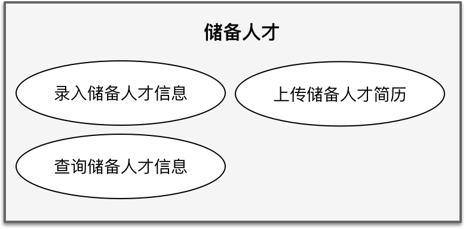
该如何抉择呢？我认为须得思考为什么要识别主题边界？显然，这里识别的主题边界仅仅是设计过程中的中间产物，并非我们最终的设计目标。主题边界是对用例的分类，在用例图中体现了用例的边界，而这种边界恰好可以对应领域模型的限界上下文，并为设计模型的包、模块提供设计指导。因此，究竟为人才主题，还是招聘主题，或者单独的储备人才主题，完全可以从限界上下文或者领域建模的角度去思考。
主题边界体现用例的内聚性
主题边界并不以边界内用例的多寡为设计准则。至少在进行领域场景分析时，不要因为一个主题边界包含了太多的用例，就人为地对其进行更细粒度的拆分，关键还是要考察用例的内聚性。例如与项目管理有关的主题，包含的用例数量就非常不均匀。项目（Project）主题包含的用例为：
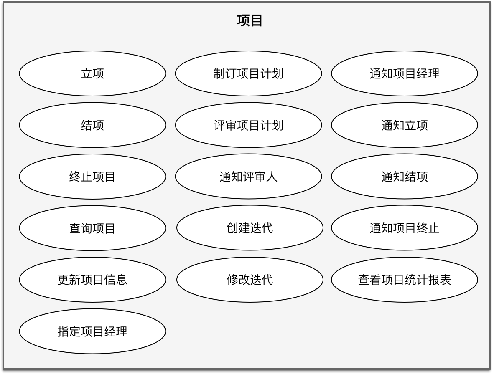
问题（Issue）主题包含的用例为：
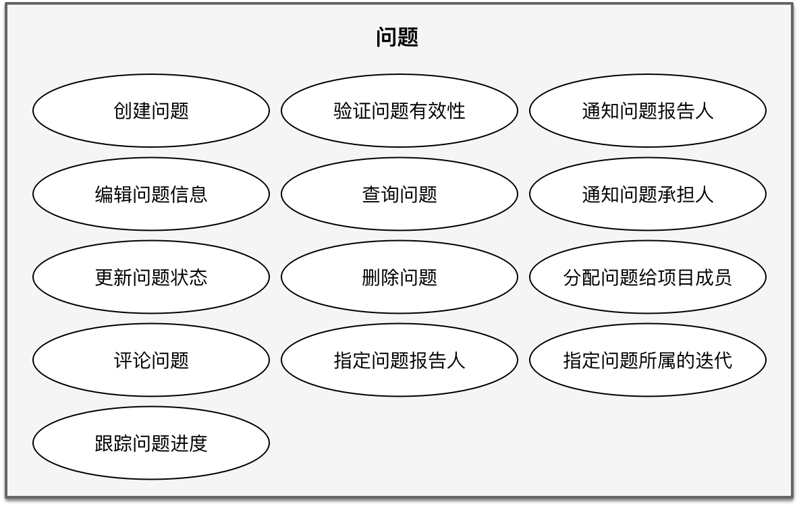
项目成员（Project Member）主题包含的用例最少：
识别主题边界不是求平衡，更不是为了让设计的模型更加好看，它的设计质量可能会直接影响到后续的限界上下文识别。或许内聚性的识别需要较强的分析能力和抽象能力，但只要我们遵循领域场景分析的设计思想，按部就班地通过业务流程识别参与者，再根据参与者驱动出清晰表达的用例图，最后再根据语义相关性和功能相关性识别主题边界，就能获得一个相对不错的场景分析结果。毕竟，这个分析过程是有章可循的，在知识的积累上也是层层递进的。整个过程不需要任何与技术实现有关的知识，非常利于领域专家与团队的共同协作和交流。
033 实践 识别限界上下文
先启阶段的领域场景分析是一个艰难的过程，我们要从纷繁复杂的业务需求细节中抽象出全部的领域场景，并通过剖析这些场景来获得一致的领域概念，提炼出主要的用户活动，并转换为用统一语言表达的领域行为。在这个过程中，用例帮了我们的大忙。用例的形式其实等同于 Alberto 提出的“事件风暴”中的命令（Command）。命令的发起者是参与者（Actor），所不同的是事件风暴关注的命令比用例粒度更细，且它主要的设计驱动力是命令产生的事件（Event）：
事件风暴利用命令和事件驱动出领域驱动战术设计中的聚合（Aggregate）概念，Alberto 认为聚合对象（准确地说是聚合根实体对象）才是命令的真正发起者。于是，命令与事件就与聚合产生了依存关系：
但我认为，如果从一开始的设计就进入到聚合层次，团队可能会陷入到太多纠缠的业务需求细节中。尤其是一些大型的复杂业务系统，要识别出来的命令何止千数！即使通过率先识别核心子领域，再对核心子领域的各种业务场景的命令进行分析，数量仍然客观。如果再加上团队与领域专家的沟通成本，这个事件风暴持续的时间就未免太过漫长了。
在寻找系统架构的解决方案时，我更看重限界上下文对边界的控制力，也就是说，在进行领域驱动设计时，首先进入的是战略阶段，而在战略阶段，我们首先要识别的是限界上下文。
通过边界识别限界上下文
对限界上下文的识别很难做到一蹴而就。通过对限界上下文的本质与价值的剖析，我们希望从业务边界、工作边界再到应用边界三个层次递进和演化的方式打磨限界上下文，使得它的边界和粒度更加合理，为整个系统的逻辑架构与物理架构奠定良好的基础。
业务边界的识别
领域场景分析中用例划定的主题边界可以作为识别限界上下文的起点。很明显，主题边界的粒度要大于聚合，但是否与限界上下文的边界重叠呢？我不能给出确定的答案，但毫无疑问，主题边界对应于限界上下文的“业务边界”。对于 EAS 系统而言，我们通过用例图可以得出如下的业务主题：
正如前面识别业务主题的过程，我们通过语义相关性和功能相关性对用例进行了归类，这种归类就是“高内聚”原则的体现。可以确定，在相同主题内的用例其相关性要强于不同主题的用例。要识别限界上下文，除了用例级别的归类之外，我们还需要判断主题之间的相关性。如上图所示，我们获得的主题彼此之间存在非常明显的“亲疏”关系，更为“亲密”的主题会组成一个子领域。即使在同一个子领域中，主题之间的“亲疏”关系也有所不同。例如，在项目进度管理子领域中，“项目”主题与“问题”主题的相关性，无疑要比“项目成员”更为紧密。如果再深入分析“项目成员”主题，虽然它与“项目”主题之间存在一定的依赖关系，但从领域概念上，所谓的“项目成员”其实是用户的一种角色，而“项目组”则可以理解为是一个“组织”层级。如此说来，它更像是“组织”主题中组织与角色抽象的一个具体实现，如下图所示：
显然，“项目”主题与“问题”主题代表了不同的用户目标，但各自的业务边界却是非常紧密的，可以考虑合并为一个限界上下文，至于项目与组织的业务边界就确定无疑需要分开了。这种亲疏关系的判断当然需要深入理解业务，但似乎也可以称之为一种设计感觉。这或许就是 Vernon 提到的所谓“经验”罢了。
那么有没有什么设计的原则或者依据呢？就以上述分析项目、问题、项目成员之间的亲疏关系为例，它们就好像居住在不同小区的居民。比如说项目和问题住在同一个小区，他们是邻居关系；项目成员住在另一个临近的小区，仍然是邻居，但相隔的距离更远。倘若临近小区的居民和这个小区居民之间又存在亲属关系，意义又有所不同。当一个小区的权益受到侵害时，同一个小区居民的利害关系是休戚与共的。当一个家族的权益受到侵害时，同为亲属的居民的利害关系又绑在一起了。所以，关系的“亲密”程度会因为你观察角度的不同而发生变化，关键在于你选择什么样的判断标准。
那么，为何要将“问题”归入“项目”上下文，而不是选择“项目成员”？除了因为项目成员与组织之间存在粘性之外，在概念上，“问题”其实属于“项目”的子概念，在层次上处于“劣势”地位。借用 Kent Beck 在设计上提出的单一抽象层次原则，项目与问题其实并没有处在同一个抽象层次。再以“招聘”主题和“储备人才”主题为例，你会发现二者就没有非常明显的“上下级”关系。它们之间的关系或许是比较紧密的，但彼此之间是平等的层次。
**在运用“单一抽象层次原则”时，对主题的命名也会影响到对主题关系之间的判断。**如果命名过于抽象，就可能产生该抽象的主题隐隐地包含了别的主题。以市场需求子领域中的“市场”主题和“合同”主题为例，从概念的归属来讲，似乎合同也应属于市场的范畴。故而带来两个设计选择：
- 要么将合同主题纳入到市场主题，进而形成一个市场上下文；
- 要么将市场主题命名为“订单”，订单与合同，显然两个领域概念处于同一层次。
在划分主题时，我们还应该遵循正交原则，即主题之间存在唯一的依赖点，除了这个依赖点之外，主题的其他变化不应该影响到另一个主题。例如，为什么我要单独识别出“文件共享”主题与“通知”主题？就是因为在诸如“员工”、“储备人才”、“合同”等主题中都包含了文件上传下载的用例，在诸如“项目”、“合同”、“招聘”等主题中都包含了消息通知的用例。如果不分离出来，一旦文件上传下载的实现有变，或者消息通知的实现有变，都会影响到这些相关的业务主题，造成一种“霰弹式修改”的代码坏味，这就违背了“正交原则”。
通过对业务边界的分析，并运用单一抽象层次原则与正交原则，我们得到了 EAS 限界上下文的草案：
工作边界的识别
从工作边界识别限界上下文是一个长期的过程，当然，这其中也牵涉到对需求变更和新需求加入时的柔性设计。对限界上下文进行开发的团队应尽量为特性团队（Feature Team），且遵循 2PTs 原则。倘若随着时间的推移，团队的规模越来越大，就是在传递限界上下文边界不合理的信号。正如前面所言，团队的每一个人都要像守护自己家庭一般守护好团队的工作边界。在我参与咨询的一些客户中，就有客户因为团队规模变得越来越大（接近 20 人）而取消了原来的每日站会。团队规模太大，交流成本变高，一个大团队的每日站会就会成为“鸡肋”。
那么，限界上下文与 2PTs 特性团队之间的映射关系究竟是怎样的呢？这似乎并没有定论，取决于团队成员的能力水平、限界上下文的复杂程度，也与系统的类型（项目还是产品）息息相关。
我认为，首先要避免一个限界上下文的工作边界过大，导致需要多个 2PTs 特性团队共同来完成，因为这会带来不必要的沟通成本。倘若出现了这种情况，说明我们需要继续分解限界上下文。那么，是否可以将多个限界上下文分配给一个特性团队呢？由于限界上下文的划分遵循了“高内聚、低耦合”的原则，只要我们规定好限界上下文之间的协作契约，就可以并行开发多个限界上下文。对于其中的一个限界上下文而言，无论它的特性有多少，只要用户故事的拆分保证了合适的开发粒度，考虑用户故事之间存在的业务依赖和技术依赖，每个限界上下文就必然存在一个最大并行开发度（Max Degree of Parallel Development，MDPD）。而对于一个特性团队而言，也存在一个最大并行开发度，其值可以借鉴精益看板提出的 WIP Limits（WIP 即 Work in Progress，在制品限制）。假设不考虑开发人员的结对，一个 2PTs 特性团队的在制品限制大约为 4~5，则限界上下文（Bounded Context，BC）遵循的公式为：
[Math Processing Error]∑BC(MDPD)≈WIPLimits
例如说，我们将订单、合同、客户主题都视为独立的限界上下文，并分配给一个 2PTs 特性团队，这个团队的 WIP Limits 为 5。如果订单上下文的最大并行开发度为 4，合同上下文的最大并行开发度为 2，客户上下文的最大并行开发度为 3，根据前面公式，就可以得到三个限界上下文的最大并行开发度之和为 9，这就远远大于了 WIP Limits，如果仍然保持这种工作分配，就会导致限界上下文的开发周期延长。反过来，如果我们只将合同上下文分配给该团队，又会造成特性团队开发人员的浪费。
当然，这种判断依据存在理想与现实的差异。例如，开发团队的人力资源是存在限制的，开发周期的长度也存在限制，在项目早期，也很难精确计算一个限界上下文的最大并行开发度。故而这个公式无法像数学公式那样给予精确的计算，但确乎可以作为限界上下文与开发团队映射关系的一个参考。
还有一个判断限界上下文工作边界划分是否合理的原则是：限界上下文是否允许进行并行开发。无法并行开发，则意味着限界上下文之间的依赖太强，违背了“高内聚、松耦合”原则。例如，在前面识别的 EAS 限界上下文草案中，抛开发布与迭代计划在功能优先级的考量，我们发现报表上下文与客户、合同、订单、项目、员工等上下文都存在非常强的依赖关系。如果这些上下文没有完成相关的特性功能，我们就很难去实现报表上下文，这就引起了我们对报表上下文的思考。由于报表上下文中的诸多统计报表其实是与各自的业务强相关的，例如，“查看项目统计报表”用例就只需要统计项目的信息，因而可以考虑将这些用例放到业务强相关的限界上下文中。
结合工作边界和业务边界，我们认为工作日志的业务边界过小，且从业务含义上看，它也可以视为是员工管理的其中一项子功能，因而决定将工作日志合并到员工上下文内部，作为该限界上下文的一个模块（Module）。虽然考勤也属于员工管理的范畴，但它需要访问考勤机外部硬件，且请假与出勤亦属于单独的一个业务方向，因而仍然保留了考勤上下文。
对于储备人才与招聘之间的关系，类似于工作日志之于员工，我们最初也想将储备人才合并到招聘上下文中，然而客户对需求的反馈打消了我们这一决策考量。因为该软件集团旗下还有一家软件学院，集团负责人希望将软件学院培养的软件开发专业的学生也纳入到企业的储备人才库中，这就需要 EAS 系统与学校的学生管理系统集成，影响了对储备人才的管理模式。这一需求一下子扩充了储备人才的领域内涵，为它的“独立”增加了有力的砝码。
一些限界上下文之间的依赖通过需求分析是无法呈现出来的，这就有赖于上下文映射对这种协作（依赖）关系的识别。一旦明确了这种协作关系，包括接口的定义与调用方式，就相当于在两个团队之间确定了交流与合作方式，可以利用 Mock 或 Stub 接口的方式解除这种依赖，实现并行开发。
通过工作边界识别限界上下文的一个重要出发点是激发团队成员对工作职责的主观判断，也就是在第 15 课提及的针对团队的“渗透性边界”，团队成员需要对自己负责开发的需求“抱有成见”，尤其是团队成员在面对需求变更或新增需求的时候。在 EAS 系统的设计开发过程中，客户提出了增加“员工培训”的需求，该需求要求人力资源部能够针对员工的职业规划制定培训计划，确定培训课程，并实现对员工培训过程的全过程管理。
由于考虑到这些功能与员工上下文有关，我们最初考虑将这些需求直接分配给员工上下文的特性团队。然而，团队的开发人员提出：这些功能虽然看似与员工有关，但实际上它是一个完全独立的“培训”领域，包括了培训计划（Training Plan）制定、培训提名（Nomination）、培训过程管理等业务知识，与员工管理完全是正交的。最终，我们为培训建立了一个专门的特性团队，同时，在架构中引入了培训（Training）上下文。
针对类似文件共享和通知这样一些属于支撑子领域或者通用子领域的限界上下文，粒度可能是不均匀的，互相之间又不存在关联。这时，我们应确保原定的限界上下文业务边界，然后视其粒度酌情分配给一个或多个特性团队，甚至部分限界上下文因为不牵涉到垂直业务功能，可能还需要创建组件团队（Component Team）。在有的项目中，提供支撑功能的底层实现面临较大的技术挑战，又或者底层功能在整个公司存在普适性，这时就可以单独抽离出来，形成公司范围内的框架或平台，这样的框架和平台就不再属于当前系统的范围了（属于 System Context 之外）。
根据需求变化以及对团队开发工作的分配，我们调整了限界上下文：
我们将工作日志合并到了员工上下文，同时为了应对新需求的变更，增加了培训（Training）上下文，并暂时去掉了报表上下文。之所以说“暂时”，是因为还需要对其做一些技术层面的判断。
应用边界的识别
对应用边界的识别，就是从技术角度来考量限界上下文，包括考虑系统的质量属性，模块的重用性，对需求变化的应对以及如何处理遗留系统的集成等。
针对报表上下文留下来的遗留问题，我们与客户进行了需求上的确认，明确了集团决策层的需求，就是希望系统提供的统计报表能够准确及时地展现历史和当前的人才供需情况。显然，统计报表功能直接影响了系统的业务愿景，是系统的核心功能之一。我们需要花费更多精力来明确设计方案。通观报表上下文提供的用例行为，除了与职能部门管理工作有关的统计日报、周报和月报外，报表的统计结果实际上为集团领导进行决策提供了数据层面的辅助支持。要提供准确的数据统计，就需要对市场需求、客户需求、项目、员工、储备人才、招聘活动等数据做整体分析，这需要整个系统核心限界上下文的数据支持。倘若 EAS 的每个限界上下文并未采用微服务这种零共享架构，则整个系统的数据就可以存储在一个数据库中，无需进行数据的采集和同步，就可以在技术上支持统计分析。另一种选择就是引入数据仓库技术，无论我们选择何种架构模式，都可以采用诸如 ETL 形式完成对各个生产数据库以及日志文件的采集，由统一的数据仓库为统计分析提供数据支持。
虽然在分析工作边界时，我们认为报表上下文与其他限界上下文存在强依赖关系，无法支持并行开发，因而考虑将该上下文的功能按照业务相关性分配到其他限界上下文中。如今通过技术分析，虽然这种依赖性仍然存在，但该上下文包含的用例更多地体现了“决策分析”的特定领域。最终，我们还是决定保留该限界上下文，并更名为决策分析上下文。
在 EAS 系统中，我们从技术层面再一次讨论了员工上下文和储备人才上下文的边界。从业务相关性的角度看，员工属于员工管理的领域范畴，而储备人才并非正式员工，是招聘的目标。但是，从领域建模的角度讲，员工与储备人才的模型实在是太相似了，如下图所示：
两个模型除了聚合根的名字不同之外，几乎是一致的。我们是否要对二者进行抽象呢？如下图所示：
从面向对象的角度看，这种抽象是合理的，也能在一定程度上避免代码的重复开发。然而，这样的设计决定了我们不能将员工和储备人才放在两个不同的限界上下文中，否则就会导致二者的强耦合。若是放在同一个限界上下文，又违背了业务相关性。从技术实现的角度讲，我们必须要考虑员工和储备人才各自的持久化。即使它们在模型上保持了极大的相似度，但是除了一种场景即“从储备人才转为正式员工”用例需要将二者结合起来，其余场景二者都是完全隔离的。即使是这样的业务场景，一旦储备人才转为了正式员工，二者就不存在任何关系了。显然，它们模型相似但在业务上却是独立进化的，数据持久化的实现也必须是完全隔离的。因此，我们仍然保留了这两个独立的限界上下文。
在考虑通知上下文的实现时，基于之前系统上下文（System Context）的分析，EAS 系统要与集团现有的 OA 系统进行集成。为了实现二者的集成，我们了解了 OA 系统公开的服务接口，发现这些接口中已经提供了多种消息通知功能，包括站内消息、邮件通知和短消息通知。从业务需求上看，在进行流程处理时，发送的消息通知本身就将作为 OA 系统的待办项，由员工在 OA 系统中对其进行处理，技术实现上也没有必要对通知功能进行重复开发。于是，之前分析的通知上下文似乎就不再有存在的必要。但仔细思考，与 OA 系统集成的功能又该放在哪里呢？领域驱动设计建议将这种与第三方服务集成的功能放在防腐层中，但由于 EAS 系统有多个限界上下文都需要调用该功能，我们不可能在各自的限界上下文中重复创建防腐层。为了满足功能的重用性，就应该为该集成功能单独创建一个限界上下文。至于命名，应该将“通知（Notification）”更名为“OA 集成（OA Integration）”。
最终，我们得到了如下的限界上下文：
即使经历了对业务边界、工作边界和应用边界的分析，我们仍然不敢保证现在得到的限界上下文就是合理的。毕竟，先启阶段进行的领域场景分析还比较粗略，我们也无法预判未来需求还会发生什么样的变化。因而，作为战略设计阶段核心的限界上下文解决方案是需要不断演进的。何况，我们还没有深入分析这些限界上下文之间的协作关系呢。
034 实践 确定限界上下文的协作关系
通过上下文映射来确定限界上下文之间的协作关系，是识别限界上下文之后至为关键的一步。每个限界上下文都仅仅展示了整体架构全局视图的一角，只有将它们联合起来，才能产生合力，满足业务场景的需要。若这种协作关系处理不当，这种联合的合力反倒成了一种阻力，清晰的架构不见，限界上下文带给我们的“价值”就会因此荡然无存。
如果单从确定限界上下文之间的协作关系而论，要考量的设计要素包括：
- 限界上下文的通信边界
- 采用命令、查询还是事件的协作机制
- 定义协作接口
通信边界、协作机制与上下文映射模式的选择息息相关。例如，通信边界采用进程内通信，就可能无需采用开放主机服务模式，甚至为了保证架构的简单性，也无需采用防腐层模式。如果采用命令和查询的协作机制，可能会采用客户方/供应方模式，如果采用事件的协作机制，则需要采用发布者/订阅者模式。
在识别限界上下文协作关系的阶段，是否需要定义协作的接口呢？我认为是必要的。一方面接口的定义直接影响到协作模式，也属于架构中体现“组件关系”的设计内容；另一方面通过要求对协作接口的定义，可以强迫我们思考各种协作的业务场景，避免做出错误的上下文映射。如果在这个阶段还未做好框架的技术选型，接口的设计就不应该与具体的框架技术绑定，而是给出体现业务价值的领域模型，换言之，就是定义好当前限界上下文的应用服务，因为应用服务恰好体现了用例的应用逻辑。
识别 EAS 的上下文映射
在领域驱动设计中，以“领域”为核心的设计思想应当贯穿整个过程始终，确定系统的上下文映射自然也不例外。实际上，整个领域驱动的战略设计实践是存在连贯关系的，我们不能因为进入一个新的阶段，就忘记了前面获得的成果。决定上下文映射的重要输入就包括基于领域场景分析获得的用例图，基于用例图获得的限界上下文。
根据用例识别协作关系
为避免出现上下文映射的疏漏，我们应该根据业务场景来分析各种限界上下文协作的关系。这时，先启阶段领域场景分析获得的用例图就派上用场了。为了确保设计的严谨，我们应该“遍历”所有的主用例，理解用例的目标与流程，再结合我们已经识别出来的限界上下文判断它们之间的关系。
由于用例图中的用例传递的信息量有限，我们在识别协作关系时，可以进一步确定详细的流程，绘制更为详细的用例图甚至活动图。用例的好处在于不会让你遗漏重要的业务场景，而用例图中的包含用例与扩展用例，往往是存在上下文协作的信号。当然，在识别上下文协作关系时，还需要注意其中的陷阱。正如在[第 3-9 课：辨别限界上下文的协作关系（上）]中提到的那样，要理解协作即依赖的本质，正确辨别这种依赖关系到底是领域行为或领域模型的依赖，还是数据导致的依赖，又或者与限界上下文的边界彻底无关。
以“创建需求订单”用例为例，它的完整用例图如下所示：
主用例“创建需求订单”属于订单上下文，“指定客户需求承担者”属于客户上下文，“通知承担者”用例是“指定客户需求承担者”的扩展用例，但它实际上会通过 OA 集成上下文发送消息通知。若满足于这样的表面现象，可得出上下文映射（图中使用了六边形图例来表达限界上下文，但并不说明该限界上下文一定为微服务）：
然而事实上，在指定客户需求承担者时，订单上下文并非该用例的真正发起者，而是市场人员通过用户界面获得客户信息，再将选择的客户 ID 传递给了订单，订单上下文并不知道客户上下文。如此一来，消息通知的发送也将转为由订单上下文发起。于是，上下文映射变为：
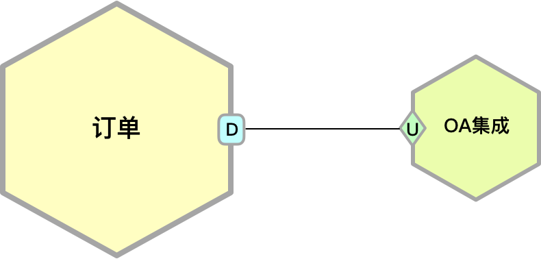
目前获得的上下文映射自然不会是最终方案。不同的用例代表不同的场景，产生的协作关系自然会有所不同。在“跟踪需求订单”用例中，需要在用户界面呈现需求订单状态，同时还将显示需求订单下所有客户需求的客户信息和承担者信息，这就需要分别求助于客户上下文和员工上下文。因此，订单上下文的上下文映射就修改为：
“创建市场需求”用例图如下所示：
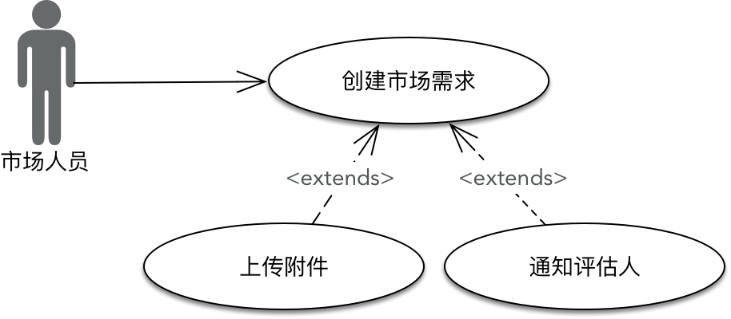
除了需要在订单上下文中创建市场需求之外，还要通过文件共享上下文完成附件的上传。此外，操作订单时需要对用户进行身份认证。最终，订单上下文的上下文映射就演变为：
有些限界上下文之间的关系是隐含的，需要透过用例去理解内在的业务流程才能探明这种关系。例如，“制定招聘计划”用例：
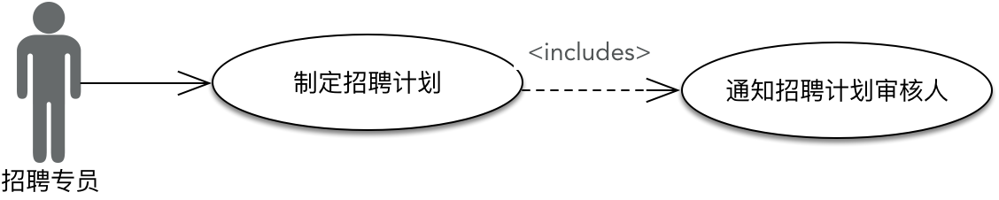
当招聘专员制定好招聘计划时，会发送消息通知招聘计划审核人，这个审核人就是人力资源总监。然而此时的招聘上下文并不知道谁是人力资源总监，只能通过招聘专员所属部门的组织层级去获得人力资源总监（用户角色）的信息，再通过该角色对应的 EmployeeId 到员工上下文获取人力资源总监的联系信息，包括手机和邮箱地址。得到的上下文映射为：
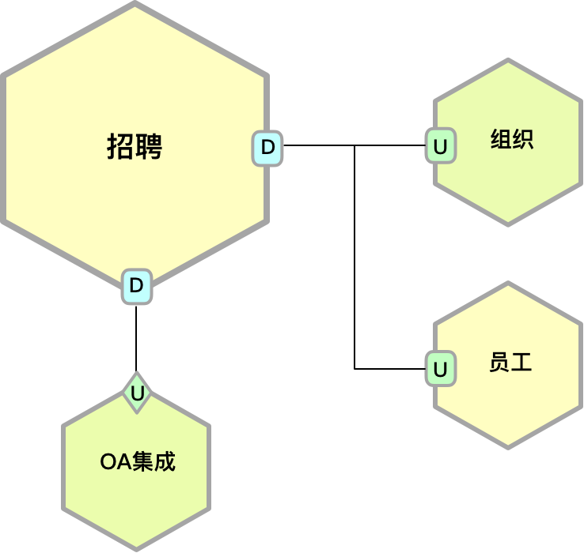
通过识别上下文映射，还会帮助我们甄别一些错误的限界上下文职责边界划定。例如，针对“添加项目成员”用例：
通过前面对限界上下文的识别，我们认为项目成员作为一种用户角色，项目组作为一个组织层级，从概念关联性看更适合放在组织上下文。当项目经理通过用户界面添加项目成员时，其流程为：
- 前置条件与项目关联的项目组已经创建好
- 选择要加入的项目组
- 列出符合条件的员工清单
- 选择员工加入到当前项目组
- 通知该员工已成为项目组的项目成员
- 将当前项目的信息追加到项目成员的项目经历中
注意，列出员工清单的功能属于员工上下文，但该操作是通过用户界面发起对员工上下文的调用，组织上下文并不需要获取员工清单，而是用户界面传递给它的。在员工加入到当前项目组后，组织上下文需要通过 OA 集成发送通知消息，还要通过员工上下文来追加项目经历功能。基于这样的流程，得到的上下文映射为：
然而考虑认证上下文，它又需要调用组织上下文提供的服务来判断用户是否属于某个部门或团队，这就在二者之间产生了上下游关系。由于认证上下文比较特殊，如果系统没有采用 API 网关，则作为通用子领域的限界上下文，会被多个核心子领域的限界上下文调用，其中也包括员工上下文与项目上下文，于是上下文映射就变为：
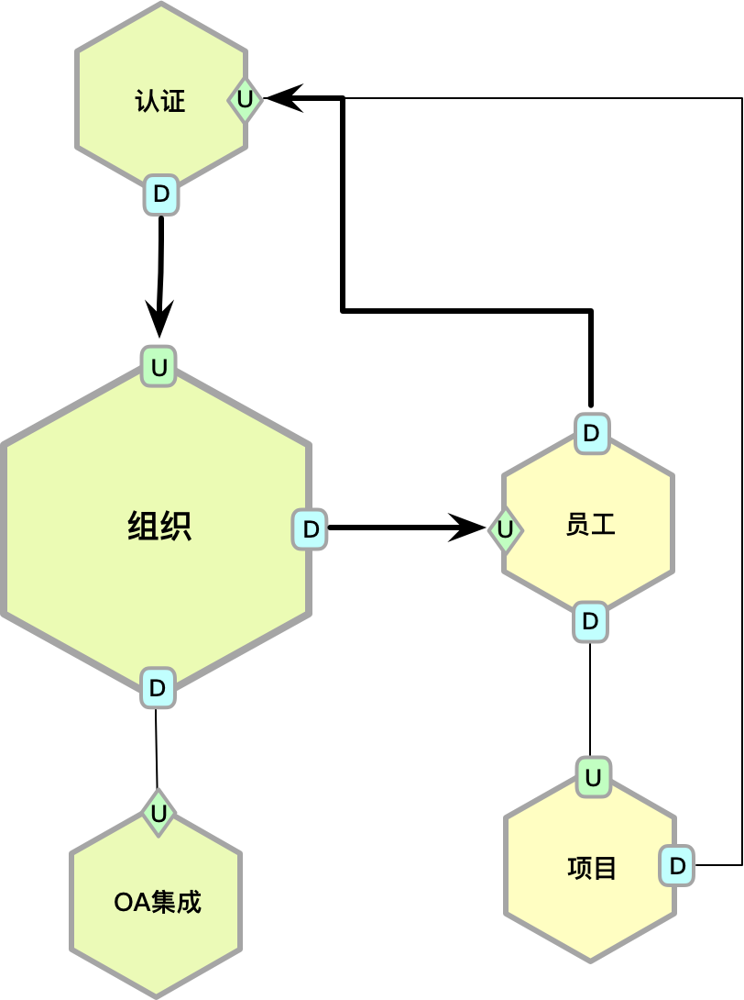
为了更好地体现协作关系，我在上图增加了箭头，加粗了相关连线。可以清晰地看到，上图粗线部分形成了认证、组织与员工三个限界上下文之间的循环依赖，这是设计上的“坏味道”。导致这种循环依赖的原因，是因为与项目成员有关的用例被放到了组织上下文中，从而导致了它与员工上下文产生协作关系，这充分说明了之前识别的限界上下文仍有不足之处。组织结构是一种领域，管理的是部门、部门层次、角色等更为普适性的特性。换言之，即使不是在 EAS 系统，只要存在组织结构的需求，仍然需要该限界上下文。如此看来，项目成员的管理应属于更加特定的业务领域。在添加项目成员时，领域逻辑仍然属于项目上下文，但建立成员与项目组之间的关系，则应交给更为通用的组织上下文，形成二者的上下游关系。经过这样的更改后，“追加项目成员的项目经历”用例就由项目上下文向员工上下文直接发起调用请求：
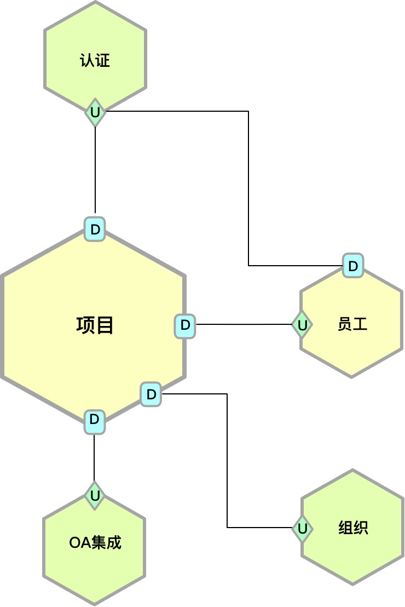
这个场景体现了上下文映射对限界上下文设计的约束和驱动作用。在调整了限界上下文的职责之后，避免了限界上下文之间的循环依赖，使得限界上下文的边界更加清晰，保证了它们之间的松散耦合，有利于整个系统架构的演化。
确定上下文协作模式
要确定上下文协作模式，首先需要明确限界上下文的通信边界，即确定为进程内通信还是进程间通信。采用进程间通信的限界上下文就是一个微服务。在[第 4-8 课：代码模型的架构决策]中，我总结了微服务的优势与不足。EAS 系统作为一个企业的内部系统，对并发访问与低延迟的要求并不高，可用性固然是一个系统该有的特质，但毕竟它不是“生死攸关”的一线生产系统，短时间出现故障不会给企业带来致命的打击或难以估量的损失。整体来看，在质量属性方面，除了安全与可维护性之外，系统并无特别高的要求。综上所述，我看不到需要建立微服务架构的任何理由。既然无需创建微服务架构，就不必遵守一个限界上下文一个数据库的约束，满足架构的简单原则，可以为整个 EAS 系统创建一个集中的数据库。
这一设计决策直接影响到决策分析上下文的实现方案。就目前的需求而言，我们似乎没有必要为实现该上下文的功能专门引入数据仓库。决策分析上下文具有如下特征：
- 访问的数据涵盖所有的核心子领域
- 决策分析仅针对数据执行查询统计操作
虽然决策分析上下文属于核心子领域，但针对这两个特征，我们决定“斩断”该上下文和其他上下文之间的业务耦合关系，让它直接访问数据库，并借鉴 CQRS 架构模式，不为它定义领域模型，而是创建一个薄的数据访问层，通过执行 SQL 语句完成高效直接的数据处理。
既然决定限界上下文之间采用进程内通信，我们该选择何种上下文映射模式呢？到上下文映射的“武器库”中看一看，原来我们不知不觉已经使用了“共享内核”模式，提取了文件共享上下文，同时还引入了扮演“防腐层”功能的 OA 集成上下文。
作为提供垂直领域功能的限界上下文，需要为前端的用户界面或其他客户端提供 RESTful 服务，于是为如下限界上下文建立“开放主机服务”：
- 订单上下文
- 合同上下文
- 客户上下文
- 员工上下文
- 考勤上下文
- 招聘上下文
- 储备人才上下文
- 培训上下文（该上下文是项目开发中期针对需求变更引入）
- 项目上下文
- 决策分析上下文
- 资源上下文
- 组织上下文
既然采用了进程内通信，且针对这样的企业系统，演变为微服务架构的可能性较低，为了架构的简单性，针对以上限界上下文之间的协作，并无必要引入间接的防腐层。至于它与外部的 OA 系统之间的协作，已经由 OA 集成上下文提供了“防腐”功能。
我们是否需要采用“遵奉者”模式实现限界上下文之间的模型重用呢？同样是设计的取舍，简单还是灵活，重用还是清晰，这是一个问题！限界上下文的边界控制力会在架构中产生无与伦比的价值，它可以有效地保证系统架构的清晰度。如果为了简单与重用而纵容对模型的“滥用”，可能会导致系统变得越来越糟糕。对于采用进程内通信的限界上下文，运用“遵奉者”模式重用领域模型，就会失去限界上下文存在的意义，使之与战术设计中的模块（Module）没有什么区别了。说好的限界上下文保证领域概念的一致性呢？例如，合同上下文、项目上下文、订单上下文都需要通过员工上下文获得员工的联系信息，那么最好的方式不是直接重用员工上下文中的 Employee 模型对象，而是各自建立自己的模型对象 Employee 或 TeamMember，除了具有 EmployeeId 之外，可以只包含一个 Contact 属性：
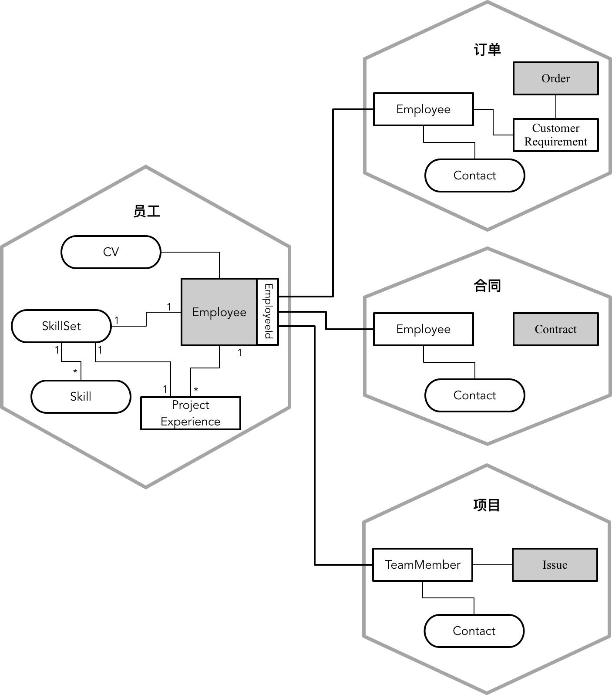
我们还需要确定限界上下文之间的调用机制，究竟是通过命令、查询还是事件？由于采用了进程内通信，限界上下文之间的协作方式应以同步的查询或命令机制为主。唯一的例外是将 OA 集成上下文定义为进程间通信的限界上下文，毕竟它的实现本身就是要跨进程调用 OA 系统。这个限界上下文要实现的功能都与通知有关，无论是短信通知、邮件通知还是站内通知，都没有副作用，且允许以异步形式调用，适合使用事件的调用机制。这种方式一方面解除了 OA 系统上下文与大多数限界上下文之间的耦合，另一方面也能够较好地保证 EAS 系统的响应速度，减轻主应用服务器的压力。唯一不足的是需要增加一台部署消息队列的服务器，并在一定程度增加了架构的复杂度。采用事件机制，意味着 OA 集成上下文采用了“发布者/订阅者”模式，其中 OA 集成上下文为订阅者：
定义协作接口
定义协作接口的重要性在于保证开发不同限界上下文的特性团队能够并行开发，这相当于为团队规定了合作的契约。集成是痛苦的，无论团队成员能力有多么强，只要没有规定好彼此之间协作的接口，就有可能导致系统模块无法正确地集成，或者隐藏的缺陷无法及时发现，最严重的是破坏了限界上下文的边界。我们需要像保卫疆土一样去守护限界上下文的边界，如果不加以控制，任何风吹草动都可能酿成“边疆”的风云突变。
注意，现在定义的是限界上下文之间协作的接口，并非限界上下文所有的服务接口，也不包括限界上下文对外部资源的访问接口。协作接口完全可以根据之前确定的上下文映射获得。在上下文映射图中，每个协作关系都意味着一个接口，不同的上下文映射模式可能会影响到对这些接口的设计。例如，如果下游限界上下文通过开放主机服务模式与上游协作，就需要定义 RESTful 或 RPC 接口；如果下游限界上下文直接调用上游，意味着需要定义应用服务接口；如果限界上下文之间采用发布者/订阅者模式，需要定义的接口其实是事件（Event）。
对于 EAS 系统而言，我们已经确定除与 OA 集成上下文之间采用“发布者/订阅者”模式之外，其余限界上下文之间的协作都是“客户方/供应方”模式，且无需引入防腐层和开放主机服务，因此，要定义的协作接口其实就是各个限界上下文的应用服务接口。在定义协作接口时，我们只需要规定作为供应方的上游应用服务即可。如果采用事件机制，协作接口就应该是对事件的定义。
以订单上下文为例，它的上下文映射图为（与前面上下文映射的不同之处是将订单与 OA 集成之间的协作改为了事件机制）：
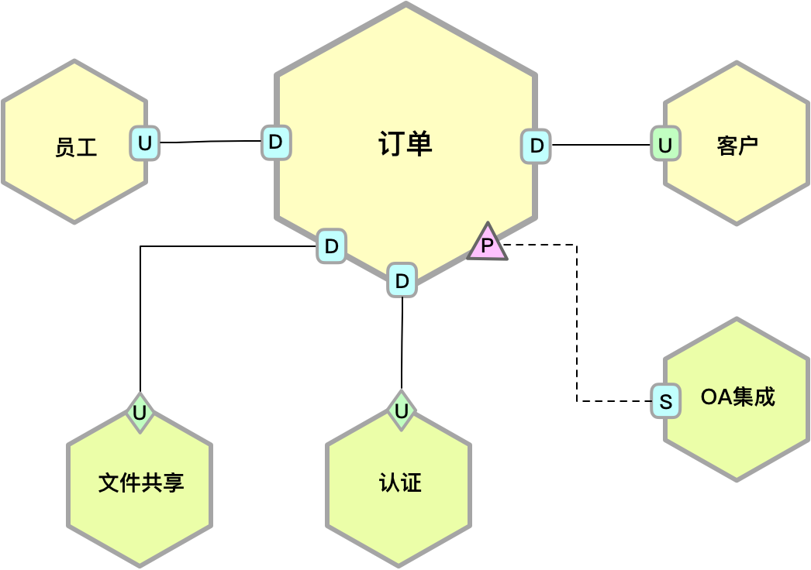
记录与订单上下文相关的协作接口如下表所示：
在这个接口表中，我使用生产者（Producer）与消费者（Consumer）来抽象客户方/供应方模式与发布者/订阅者模式。表中的模式自然就是上下文映射模式。如有必要，也可以是多个模式的组合，比如客户方/供应方与开放主机服务之间的组合。当然，如果为开放主机服务，且发布语言为 RESTful，则后面的服务定义就应该是遵循 RESTful 服务定义的接口。
对于订单上下文与 OA 集成上下文之间的协作，正如前所述，我们采用了发布者/订阅者模式。因此，这里的协作接口实际上是对事件的定义。最初为了表达订单的领域概念，我将该事件定义为 OrderCompleted。回顾 OA 集成上下文的上下文映射，作为订阅者的 OA 集成上下文在接收到事件后，要做的事情都是将事件持有的内容转换为要发送消息通知的内容以及送达的地址，然后发送消息通知。显然，它订阅的事件应该是相同的，因为处理事件的逻辑完全相同。故而应该将 OrderCompleted 修改为 NotificationReady 事件。除了订单发布该事件外，合同、项目、组织等限界上下文都将发布该事件。
协作接口表格式并非固定或唯一。例如，我们也可以为每个接口定义详尽的描述：
- 接口， AuthenticationService
- 描述， 对操作用户进行身份认证
- 命名空间， paracticeddd.eas.authcontext.application
- 方法， authenticate(userId): AuthenticatedResult
- 模式，客户方/供应方模式
- 接口类型， 命令
协作接口定义的格式不是重要的，关键还是在战略设计阶段需要重视对它们的定义。只有这样才能更好地保证限界上下文的边界，因为除了这些协作接口，限界上下文之间是不允许直接协作的。协作接口的定义也是上下文映射的一种落地实践，要避免上下文映射在战略设计中沦为一幅幅中看不中用的设计图。同时，通过它还可以更好地遵循统一语言，保证设计模型与领域模型的一致性。
035 实践 EAS 的整体架构
迄今为止，EAS 的战略设计算得上是万事俱备只欠东风了。为了得到系统的整体架构，我们还欠缺什么呢？所谓“架构”，是“以组件、组件之间的关系、组件与环境之间的关系为内容的某一系统的基本组织结构，以及指导上述内容设计与演化的原则”。之所以要确定系统的组件、组件关系以及设计与演化的原则，目的是通过不同层面的结构视图来促进团队的交流，为设计与开发提供指导。架构不仅仅是指我们设计产生的输出文档，还包括整个设计分析与讨论的过程，这个过程产生的所有决策、方案都可以视为是架构的一部分。例如，下图就是团队站在白板前进行面对面沟通时，针对系统需求以可视化形式给出的架构草案：
像这样的可视化设计图同样是架构文档中的一部分。我们在先启阶段分析得到的系统上下文图、问题域、用例图以及限界上下文和上下文映射，也都是架构文档中的一部分。这些内容都可以对我们的设计与开发提供清晰直观的指导。
当然，若仅以如此方式交付架构未免有些随意，也缺乏系统性，会导致设计过程的挂一漏万，缺失必要的交流信息。领域驱动设计并没有明确给出架构的设计过程与设计交付物，限界上下文、分层架构、上下文映射仅仅作为战略设计的模式而存在。因此，我们可以参考一些架构方法，与领域驱动设计的战略设计结合。这其中，值得参考的是 Philippe Kruchten 提出的架构 4 + 1 视图模型（后被 RUP 采纳，因此通常称之为 RUP 4 + 1 视图），如下图所示：
在这个视图模型中，场景视图正好对应我们的领域场景分析，之前获得的用例图正好展现了业务场景的一面。逻辑视图面向设计人员，在领域驱动设计中，通常通过限界上下文、上下文映射和分层架构描绘功能的模块划分以及它们之间的协作关系。进程视图体现了进程之间的调用关系，比如采用同步还是异步，采用串行还是并行。领域驱动设计由于是以“领域”为核心，对这方面的考量相对较弱。通常，我会建议采用风险驱动设计（Risk Driven Design），通过在架构设计前期识别系统的风险，以此来确定技术方案。我们对限界上下文通信边界的判断，恰好是一种对风险的应对，尤其是针对系统的可伸缩性、性能、高并发与低延迟等质量属性的考虑。一旦我们确定限界上下文为进程间通信时，就相当于引入了微服务架构风格，通过六边形架构与上下文映射可以部分表达进程视图。物理视图体现了系统的硬件与网络拓扑结构，六边形架构可以帮助我们确定系统的物理边界，并通过端口来体现限界上下文与外部环境之间的关系。至于开发视图，我们之前围绕着分层架构演进出来的代码模型就是整个系统在开发视图下的静态代码结构。综上所述，我们就为 RUP 4+1 视图与领域驱动设计建立了关联关系，如下表所示：
| RUP 4+1 视图 | 领域驱动设计的模式与实践 |
|---|---|
| 场景视图 | 领域场景分析、用例图 |
| 逻辑视图 | 限界上下文、上下文映射、分层架构 |
| 进程视图 | 限界上下文、六边形架构、上下文映射 |
| 物理视图 | 六边形架构 |
| 开发视图 | 分层架构、代码模型 |
EAS 的逻辑视图
可以说，我们对限界上下文的加强突破了原来对分层架构的认知。通常所谓的“分层架构”，相当于一个生日蛋糕，整个系统统一被划分为 N 层，如生日蛋糕中的水果层、奶油层和蛋糕层。在引入限界上下文的边界控制力后，每个限界上下文都可以有属于自己的分层架构，并通过应用层或北向网关暴露出协作的接口，满足限界上下文之间协作的需求，同时组合为一个整体为前端提供开放主机服务。
回到 EAS，我们完全可以为体现核心子领域的限界上下文建立领域驱动设计的分层架构，并突出领域模型的重要性。对于决策分析上下文，则借用 CQRS 模式，在体现北向网关的控制器之下，仅需定义一个薄薄的数据访问层即可。OA 集成上下文其实是一个由防腐层发展起来的限界上下文，且由于它与其他限界上下文的协作采用了发布者/订阅者模式，内部又需要调用 OA 系统的服务接口，因而领域层就只包含了领域事件以及对应的事件处理器（EventHandler），它的基础设施层则负责事件的订阅，并封装访问 OA 系统的客户端。
在分析文件共享上下文时，我们发现了它的特殊性。如果只考虑对各种类型文件的上传与下载，它更像是一个可以被多个限界上下文重用的公共组件。由于它会操作文件这样的外部资源，因而应作为组件放到整个系统的基础设施层。正如我在[第 3-1 课：理解限界上下文]中写到：
它并非某种固定的设计单元，我们不能说它就是模块、服务或组件，而是通过它来帮助我们做出高内聚、低耦合的设计。只要遵循了这个设计，则限界上下文就可能成为模块、服务或组件。
因此，在识别限界上下文时，不要被模块、组件或服务限制了你的想象，更不要抛开自己对业务的理解凭空设计限界上下文。在识别出来的 EAS 限界上下文中，文件共享与认证上下文成为了组件，OA 集成上下文成为了服务，而诸如合同、订单、项目等上下文则成为了模块，这就是所谓“看山是山、看水是水”三重境界的道理。最终，EAS 系统的逻辑视图如下图所示：
EAS 的逻辑视图分为两个层次的分层架构。
- 系统层次的分层架构：该层次仅包含了领域层和基础设施层，这是因为控制器与应用层都与对应的限界上下文有关，不存在系统层次的开放主机服务。系统层次的领域层定义了支持领域驱动设计核心要素的模型对象，可以视为一个共享内核。基础设施层包含了文件共享、认证功能与事件发布，都是多个限界上下文需要调用的公共组件。
- 限界上下文层次的分层架构：依据限界上下文领域逻辑复杂度的不同，选择不同的建模方式。如果采用领域模型的建模方式，则定义为经典的应用层、领域层和基础设施层。本身属于基础设施层的控制器被独立出来，定义为控制器层。所有层次皆与所属限界上下文的领域相关，区别在于它们的关注点不同。除决策分析上下文之外，其余限界上下文的基础设施层实际上都是 Repository 的实现，即 Gateway 模块中的 Persistance 模块。
注意，之所以将“事件发布”放在系统层次的基础设施层，而非各个限界上下文的基础设施层，在于事件封装的逻辑完全一致，都是发布 NotificationReady 事件，这是之前在识别协作接口的时候确定下来的。同时，底层发布事件的通信机制也是完全相同的。将其封装到系统层次的基础设施层，就有利于相关限界上下文对它的重用。为了让限界上下文满足整洁架构，可以考虑在系统层次提供 interfaces 模块，保证抽象接口与具体实现的隔离。这个公开定义的接口会被各个限界上下文的领域对象调用。显然，对比事件发布与持久化，前者具有系统全局范围的通用性，后者则只服务于当前限界上下文。
由于决策分析上下文特殊的业务逻辑，我没有为其定义领域模型，因而在它的上下文边界中，只定义了控制层和数据访问层。统计分析的逻辑被直接封装在数据访问层中，避免了不必要的从数据模型到领域模型再到服务模型的转换，即数据访问层返回的结果就是控制器要返回的 Response 对象。
图中的粗实线框代表了进程边界，故而 OA 集成上下文与其他限界上下文不在同一个进程中。同样的，数据库与消息队列也处于不同的进程（甚至是不同的服务器）。粗虚线框代表了系统的逻辑边界，除了图中的第三方 OA 系统与前端模块，其余内容包括数据库都在 EAS 系统的逻辑边界中。
EAS 的进程视图
如前所述，架构的进程视图主要关注系统中处于不同进程中组件之间的调用方式。我们在前面通过限界上下文与上下文映射已经确定了各个限界上下文的通信边界以及它们之间的协作关系。除了与 OA 集成上下文之间将采用异步的事件发布机制之外，就只有前端向系统后端发起的 RESTful 请求，以及系统向数据库和文件发起的请求属于进程间通信。由于 EAS 系统在质量属性上没有特别的要求，在目前的架构设计中，暂不需要考虑并发访问。
在绘制系统的进程视图时，不需要将每个牵涉到进程间调用的用例场景都展现出来，而是将这些参与协作的组件以抽象方式表达一个典型的全场景即可。在我们这个系统中，主要包括 RESTful 请求、文件上传、消息通知与数据库访问，如下时序图所示：
调用者在向 EAS 系统发起 http 请求时，首先会通过 Nginx 反向代理寻找到负载最小的 Web 应用服务器，并通过 REST 框架将请求路由给对应的控制器。从控制器开始一直到 Repository、UploadFileService 与 EventPublisher，所有的方法调用都在一个进程中，唯一不同的是诸如上传文件与发布事件等方法是非阻塞的异步方法。控制器是面向 REST 请求的北向网关，RepositoryRepository、UploadFileService 与 EventPublisher 则作为南向网关与系统边界之外的外部资源通信。其中，Repository 通过 JDBC 访问数据库，UploadFileService 通过 FTP 上传文件，EventPublisher 发布事件给消息队列，都发生在进程之间。基于这些访问协议，你可以清晰地看到六边形架构中端口和适配器的影子。
OA 集成上下文是一个单独部署在独立进程中的限界上下文，上下文之间的通信交给了消息队列。EventHandler 是其北向网关，通过它向消息队列订阅事件。RestClient 是其南向网关，通过它向第三方的 OA 系统发起 RESTful 请求。
整个进程视图非常清晰地表达了部署在不同进程之上的组件或子系统之间的协作关系，同时通过图例体现了领域驱动设计中的北向网关和南向网关与外部资源之间的协作。调用的方式是同步还是异步，也一目了然。
EAS 的物理视图
物理视图当然可以用专业的网络拓扑图来表示，不过在领域驱动设计中，我们还可以使用更具有美学意义的六边形，尤其是在微服务架构风格中，六边形的图例简直就是微服务的代言人。只是 EAS 并未使用微服务架构风格，但从通信边界来看，OA 集成上下文处于完全独立的进程，其他限界上下文则共享同一个进程。整个 EAS 系统的物理视图如下所示：
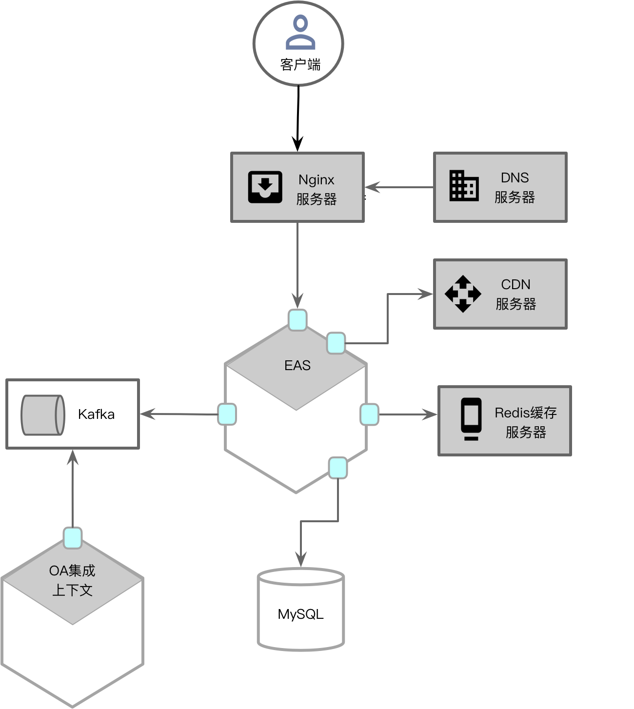
物理视图与进程视图虽然都以进程边界为主要的设计单元，但二者的关注点不同。进程视图是动态的，体现的是外部环境、系统各个组件在进程之间的协作方式与通信机制；物理视图是静态的，主要体现系统各个模块以及系统外部环境的部署位置与部署方式。所以，物理视图的重点不在于展现它们彼此之间的关系，而是如何安排物理环境进行部署。为了指导部署人员的工作，又或者在项目早期评估系统的硬件环境与网络环境，通常需要在物理视图的说明下，进一步给出详细的拓扑图，以及各个组成部分的技术选型。例如，我们可以用节点（Node）部署形式详细说明 EAS 各个组成部分的部署：
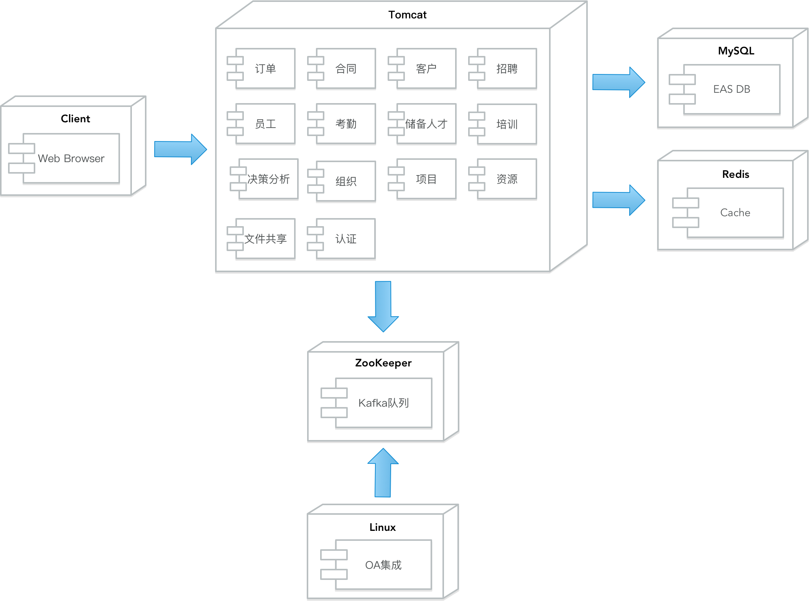
EAS 的开发视图
无论架构设计得多么优良、多么美好，每一张架构视图画得多么的漂亮与直观，如果没有开发视图为团队提供开发指导，建立一个规范的代码模型，并明确每个模块的职责，就有可能在开发实现过程中，事先设计良好的架构会慢慢地变形、慢慢地腐化，最终丧失了架构的清晰与一致。
我在为团队评审代码时，一直强调两个词：职责与清晰。倘若职责分配不合理，就可能引起模块之间的耦合与纠缠不清，进而伤害了架构的清晰度；倘若不随时把握架构的清晰度，就可能无法敏锐地察觉到架构的腐化，直到后来积重难返。如果说从一开始进行架构设计时，开发视图为混沌的开发指明了方向，那么在开发过程中一直保持开发视图的指导，就是时刻把握策马前行的缰绳，不至于像脱缰的野马胡冲乱撞，找不到北。
开发视图是与逻辑视图一脉相承的。在领域驱动设计中，分层架构与限界上下文是其根本，整洁架构思想则是最高设计原则。结合[第 28 课：代码模型的架构决策]以及本课程内容给出的 EAS 逻辑视图，可以得出如下的开发视图：
由于 OA 集成上下文是一个单独的物理边界，因而它的开发视图是独立的。系统层面和限界上下文层面的开发模型属于同一个开发视图，这样的设计就可以让限界上下文的各个模块可以直接在进程内调用系统层面中各模块的类。
设计的道与术
领域驱动设计并非一种架构设计方法，但我们可以将多种架构设计的手段融合到该方法体系中。领域驱动设计具有开放性，正是因为这种开放与包容，才促进了它的演化与成长。但是，领域驱动设计毕竟不是一个无限放大的框，我们不能将什么技术方法都往里装，然后美其名曰这是“领域驱动设计”。领域驱动设计是以“领域”为核心驱动力的设计方法，此乃其根本要旨。同样，领域驱动设计也不是“银弹”，它无法解决软件设计领域中的所有问题，例如，在针对质量属性进行软件架构时，领域驱动设计就力有未逮了。这时我们就可以辅以其他设计手段，如通过风险驱动设计识别风险，确定解决或规避风险的技术方案。
软件需求千变万化，架构无单一的方法，需审时度势，分析问题域，结合对场景的判断做出技术的权衡与决策。在运用领域驱动设计对 EAS 进行战略设计时，我们固然沿着设计的主线识别出了系统的限界上下文，却没有“死脑筋”地硬要为 EAS 系统选择微服务架构风格。边界仍然值得重视，但究竟是进程内边界还是进程间边界，则需要量力而为。任何技术手段必有其双刃，利弊权衡其实就是一种变相的成本收益核算。对于 EAS，微服务的弊显然大于利。但是，这并不能说明通过限界上下文与微服务建立映射的思想是错误的。思想是“道”的层面，运用是“术”的层面。不理解思想本质，方法的运用就变得僵化而死板，只能是邯郸学步；仅把握思想精髓，却不能依势而为求得变通，不过是刻舟求剑。任何案例都只能展现运用“术”的一个方面，因此，我不希望通过 EAS 案例的讲解，把大家带入到僵化运用的死胡同。明其道，求其术，道引导你走在正确的方向，术帮助你走得更快更稳健，这是我在进行领域驱动战略设计时遵循的最高方针！
036 「战术篇」访谈：DDD 能帮开发团队提高设计水平吗？
相信很多朋友对领域驱动设计会有这样或那样的困惑，比如领域驱动设计是什么？它在工作中有什么作用？为什么国内关于这方面的书籍少之又少？…… 为了解决这些疑惑，有幸邀请到专家张逸老师来聊聊领域驱动设计，下面是 GitChat 独家采访记录。
GitChat：在探讨领域驱动设计问题时，每个人都有每个人的认识，有的时候可能谁也无法说服对方，这时候该怎么办呢？
张逸：简单说，就是 show me your code。不管领域设计做得怎么样，最终都是要落地的，看实现的效果最有说服力。当然，为了保证交流的顺畅与效率，代码这种形式可能容易让人迷失到纷繁复杂的细节中去，因此还有一种方式就是 show me your model。
这里说的 model 就是领域模型。注意，团队在交流领域驱动设计问题时，不应该只是对建模活动的产出物进行讨论，建模的过程同样非常重要。现在诸如 Event Storming 等活动都非常强调利用可视化手段把业务专家与开发团队都包含进来，大家一块协作一块交流，并利用便利贴等工具直观地展现建模活动中的每一个步骤，可以更容易消除误会与分歧。
GitChat：可以谈谈领域驱动设计的流程吗？比如是先建模？还是做设计？以及应用的场景是什么？
张逸：领域驱动设计强调的是将分析、设计与实现统一到一个领域模型中来，同时又相对清晰地划分为战略设计和战术设计两个阶段。当然，这两个阶段并非瀑布式的，而是迭代和演进的过程。
我认同领域模型对分析、设计与实现的统一，这个思想没有问题。但在我亲身经历的项目中，我还是发现由于沟通角色与建模目标的不同，分析、设计与实现在三个不同的活动是无法完全统一的，就好像在重构时不能实现新功能，这三顶帽子自然也不能同时戴起来。因此，我在《战术篇》中，清晰地将这三个活动称之为领域分析建模、领域设计建模与领域实现建模，它们各自的产出是领域分析模型、领域设计模型与领域实现模型，这三者合起来就是领域模型，而这个过程就是领域模型驱动设计。
之所以在模型驱动设计前面加上“领域”作为定语，是因为我认为二者不能划等号，例如采用数据模型的，同样是模型驱动设计。在《战术篇》中，我根据建模视角的不同，将其分别定义为数据模型驱动设计、服务模型驱动设计、领域模型驱动设计，并用了相当篇幅的内容分别介绍了这三种不同的模型驱动设计过程。
GitChat：针对一些设计能力不足的开发团队，可以采用领域驱动设计来改进设计和编码质量吗？
张逸：我个人的观点，这二者之间有关系，但并非必要关系。领域驱动设计的关键不是设计能力，而是要抓住设计的驱动力，必须是领域，且必须要求领域专家参与到分析建模活动中来。
要说明的是，这个所谓“领域专家”不是一个头衔，也不是对技能级别的要求，它其实就是一个指代，代表“懂业务”的人：可以是客户，可以是 Product Owner，可以是业务分析师，可以是产品经理，也可以是懂业务的开发人员，甚至可以是一个负责业务分析的团队。
领域驱动设计能否成功，还是要看建模尤其是分析建模做得是否足够好，这其实是整个设计过程的上游。至于设计能力，则要看领域驱动设计与什么样的编程范式结合？常见的编程范式包括结构范式、对象范式和函数范式。因此这里的“设计能力不足”，究竟指的是哪方面的设计能力不足呢？
当然，从主流的领域驱动设计来看，主要采用的还是对象范式的设计思想与领域驱动设计结合，这就要求团队掌握基本的面向对象设计能力。这方面能力不足的团队，确实会影响到最终的设计和编码质量。这是必须要正视的问题，因此我建议那些希望实践领域驱动设计的团队，不要忘了去提高团队的面向对象设计能力。
提升设计能力并非一朝一夕就可以做到。正是考虑到面向对象设计能力不足对领域驱动设计的影响，我在《战术篇》中尝试总结了一个相对固化的设计过程。这个过程结合了 DCI、职责驱动设计等设计方法，它不要求团队掌握太多面向对象设计思想、原则与模式，只要懂业务，完全可以以“知其然而不知其所以然”的方式去实践领域驱动设计。
这种方法不能让你的设计变得非常优秀，却可以保证你的设计不至于太糟糕，甚至可以说是不错的设计。
GitChat：应用服务与领域服务的区别是什么呢？
张逸：这个是老生常谈的问题了。从分层架构的角度看，应用服务属于应用层，领域服务属于领域层。应用层是一个包装的外观，按照该层的职责来说，应用服务根本就不该干业务的活儿，它只是一个对外公开的接口而已。
从业务粒度看，应用服务的每个公开方法会对应一个具有业务价值的业务场景或者说用例。领域服务则不然，它实现了业务功能，这个业务功能或者是无状态的，又或者是因为需要协调多个聚合，又或者需要和外部资源协作。
在针对业务场景驱动设计时，应用服务的一个方法往往会暴露给调用者，然后它再将该请求委派给领域层的对象。一般要求领域服务的粒度要小，这样可以避免设计为事务脚本的过程方式，也可以在一定程度上避免贫血模型。
总结：
- 应用服务：一组面向业务场景的业务外观方法，只是一个对外提供接口、对内分配职责的协作对象，属于应用层。
- 领域服务：一个领域服务对应最多一个业务场景，往往需要和聚合、Repository、甚至领域服务一起协作。
GitChat：《战略篇》与《战术篇》之间的区别是？有学习的先后顺序吗？
张逸：这两部分刚好对应领域驱动设计的战略设计与战术设计。
前者强调系统层面的架构模式，包括限界上下文、上下文映射、分层架构等，可以运用这些模式对整个系统的领域进行“分而治之”，从而降低业务复杂度，同时围绕“领域”为核心，建立业务复杂度与技术复杂度的边界。
后者强调领域层面的设计模式，以“模型驱动设计”为主线，贯穿分析、设计与编码实现这三个不同的建模活动，并引入领域驱动设计的战术设计要素，如实体、值对象、领域服务、领域事件、聚合、资源库、工厂等。
当然在我的《战术篇》中，我扩大了领域驱动战术设计的范畴，讲解了数据模型驱动与服务模型驱动，探讨了建模范式与编程范式之间的关系。同时，在设计过程中，我引入了职责驱动设计和 DCI 模式来阐释实体、值对象、领域服务与应用服务之间的协作关系。在编码实现过程中，我又引入了测试驱动开发来推进从设计模型到实现模型。
战略设计和战术设计并非单向的过程，而是一个迭代演进与不断融合的过程。整体来讲，前者更偏向于架构设计，后者更偏向于详细设计与编码。主要还是看读者的关注点与侧重点，并没有一个绝对的学习先后顺序。我个人还是建议先学习《战略篇》，虽然它更偏向于理论，难度更高一些，但是它毕竟概括了领域驱动设计的全貌。
GitChat：「战略」这个课程分析了“EAS 系统”，在「战术」课程也介绍了“EAS 系统”，两者的侧重点有什么不同吗？
张逸：与战略设计和战术设计的侧重点一样，在「战术」课程中，会针对 EAS 系统进行领域建模，并最终对其进行编码实现。从内容来看，后者会更接地气一些，毕竟讲的是落地的实现。
将战略和战术的 EAS 系统案例结合起来，就是一个系统的完整设计案例了。
037 「战术篇」开篇词：领域驱动设计的不确定性
专栏背景
大家好，我是张逸，去年在 GitChat 平台上上线了一门[《领域驱动战略设计实践》]达人课，销量已过 4000 份，同时建了两个读者群，也邀请了十几位领域驱动设计方面的专家加入到了读者群，共同探讨和交流领域驱动设计的相关知识。
至今，两个群依然很活跃，每天都有许多问题抛出，同时又有许多问题得到了解答，还有更多的问题悬而未决，因为每个人都有自己心目中的“哈姆雷特”，谁也无法说服对方，谁也无法给出一个让所有人都认同的标准答案。这恰恰是领域驱动设计最棘手的一部分，当然，也是最让人神往的一部分——唯有不确定，方才值得去探索。
在探讨领域驱动战术设计的一些问题时，总会有人纠结：这个领域对象应该定义成实体，还是值对象？领域服务和应用服务的区别是什么？聚合的边界该怎么划分？于是，各种设计问题纷至沓来，问题越辩越糊涂，到了最后，已经脱离了最初探讨问题的场景，变成了“空对空导弹”一阵乱发射，最后蓦然回首，才发现目标已然消失了。
这是不合理的。在软件开发领域，没有什么一劳永逸的实现，也没有什么放之四海而皆准的标准，必须结合具体的业务场景做出合理的决策，无论建模和设计再怎么完美，也需要通过落地的检验才知道好还是坏。任何脱离具体业务场景的问题分析，都是空谈；任何不落地的完美方案，都是浮夸。领域驱动设计没有标准，有的只是持续不断的不确定性。
正所谓“以不变应万变”，我们要从实证主义的角度看待领域驱动设计，窃以为，只需守住三项基本原则即可：
- 必须通过领域建模来驱动设计
- 领域专家或业务分析师必须参与到建模活动中
- 设计必须遵循面向对象分析和设计的思想与原则
只要做到这三点，领域驱动战术设计就不会做得太差，剩下的不足，就需要靠经验来填补了。
专栏框架
本专栏是我计划撰写的领域驱动设计实践系列的第二部分专栏，要解决的正是前面所提及的战术层面的设计问题。单以战术设计阶段来看，我个人认为 Eric Evans 做出的贡献并不多。在《领域驱动设计》一书中，他讲到了模型驱动设计与领域建模，却没有深入阐述该如何正确地进行领域建模；他引入的资源库模式和工厂模式，不过是面向对象设计原则的体现；至于模型的演化与重构带来的突破，其实更多是经验之谈，缺乏切实可行的方法。整体而言，Eric Evans 在战术设计要素方面，最为重要的洞见在于：
- 强调了领域建模的重要性，并与面向对象分析和设计的原则结合起来
- 实体与值对象的区分，有利于我们明白模型对象的真相，并能够更好地避免贫血模型
- 聚合提出了有别于模块粒度的边界，有效地保证了业务规则的不变性和数据的一致性
不可否认，若要做到优良的领域驱动设计，建模和设计的经验是必不可少的，这需要多年的项目实战打磨方可萃取而成，但如果在开始之初，能有一些更为具体的方法作为指引，或许可以让掌握技能的周期大幅度缩短。此外，我还清楚地看到：许多领域驱动设计的门外汉，之所以迟迟不得其门而入，是因为他（她）们连最为基本的面向对象分析和设计的能力都不具备，因此，无法理解领域驱动的战术设计要素也就不足为奇了。关键在于，许多设计问题因为其不确定性，根本没有标准答案，没有任何人能给你指出明确的设计方法和设计思路。这时，就必须要吃透面向对象分析和设计的思想与原则，用它们来指导我们的设计，而不是死板的遵循领域驱动设计的模式。
针对一些设计能力不足的开发团队，若希望采用领域驱动设计来改进设计和编码质量，往往会适得其反，做出来的是一锅“夹生饭”。从理想角度讲，决定是否采用领域驱动设计，不在于团队成员的能力高低，而在于业务的复杂度。然而，我们又不得不面对现实，如果团队成员的设计能力差了，是做不好领域驱动设计的。因此，我在本专栏中，一方面分享了我的设计体验和方法，以帮助团队成员的成长，另一方面也给出了一个操作性强的设计过程，可以让基础相对薄弱的开发人员能够依样画葫芦，做出还算不错的设计与实现。
这些考虑帮助我确定了本专栏的基本思路，即以能学习和模仿的战术设计方法来弥补经验之不足，以设计思想和设计原则作为指导来解决争议之问题，以能够落地的解决方案来体现领域驱动设计之价值。
本专栏分为六部分，共 64 篇（含访谈录、开篇词）。
- 第一部分：软件系统中的模型（第 39 ~ 56 篇）
全面讲解和对比软件系统的数据模型、服务模型和领域模型，以这些模型作为不同的设计驱动力，讲解不同的模型驱动设计之过程与利弊，从而得出领域模型驱动设计的优势以及它适用的业务场景。
- 第二部分：领域分析模型（第 57 ~ 64 篇）
建立领域分析模型是领域模型驱动设计的起点和基础。领域分析过程是领域专家与开发团队合作最为紧密、沟通最为频繁的阶段，是领域驱动设计成败的关键。我将深入介绍名词动词法、分析模式、四色建模和事件风暴等重要的分析建模方法，在发现显式和隐式领域概念的基础上，建立高质量的领域分析模型。
- 第三部分：领域设计模型（第 65 ~ 83 篇）
实体、值对象、领域服务、领域事件、资源库、工厂和聚合是组成领域驱动战术设计的核心内容，也是衡量领域驱动设计质量的分水岭。只有正确地理解了这些设计要素，才能正确地完成领域驱动战术设计。这其中扮演关键角色的其实是面向对象分析与设计。我将围绕着职责驱动设计讲解角色、职责与协作三者之间的关系，通过分辨职责来寻找合理的对象，并结合 DCI 模式与主流设计模式，以时序图作为主要的设计驱动力获得高质量的设计方案。
- 第四部分：领域实现模型（第 84 ~ 91 篇）
领域实现模型帮助我们将领域设计模型落地，毕竟，只有交付可工作的软件才是软件开发的终极目标。除了要应对纷繁复杂的业务逻辑，我们还需要考虑如何与外部资源集成，实现数据持久化与消息通信等基础设施内容。在落地过程中，我们需要时刻维护业务复杂度与技术复杂度的边界，降低彼此的影响，同时还需要在编码层次提高代码的内建质量，包括代码的可读性、可重用性、可扩展性和可测试性。
- 第五部分：融合：战略设计和战术设计（第 92 ~ 101 篇）
领域驱动设计虽然分为战略设计阶段和战术设计阶段，但这两个阶段并非完全割裂的井水不犯河水的独立过程。我在[《领域驱动战略设计实践》]专栏中介绍领域驱动设计过程时，就提到了这两个阶段的相辅相成与迭代的螺旋上升演进过程。我们必须将战略设计和战术设计融合起来，把分层架构、限界上下文、上下文映射与战术设计的诸要素融汇贯通，才能获得最佳的设计质量，并成为指导我们进行软件架构和设计的全过程。
- 第六部分：EAS 系统的战术设计实践（第 102 ~ 109 篇）
继续沿用战略设计实践中使用的全真案例——EAS 系统，采用领域模型驱动设计的过程对系统进行分析建模、设计建模和实现建模，并最终结合战略设计的方案，形成完整的解决方案和代码实现。
综上，本专栏的内容并未完全遵照 Eric Evans 的《领域驱动设计》，不同的部分固然是我的一孔之见，未必正确，也未必遵守 Eric Evans 的设计思想，但我仍然不揣冒昧地进行了分享，不是因为我的无知者无畏，而是我认为针对具有不确定性的领域驱动设计，必须要容得下异见者，方能取得发展和突破。
为什么要学习领域驱动设计
如果你已经能设计出美丽优良的软件架构，如果你只希望脚踏实地做一名高效编码的程序员，如果你是一位注重用户体验的前端设计人员，如果你负责的软件系统并不复杂，那么，你确实不需要学习领域驱动设计！
领域驱动设计当然并非“银弹”，自然也不是解决所有疑难杂症的“灵丹妙药”，请事先降低对领域驱动设计的不合现实的期望。我以中肯地态度总结了领域驱动设计可能会给你带来的收获：
- 领域驱动设计是一套完整而系统的设计方法，它能给你从战略设计到战术设计的规范过程，使得你的设计思路能够更加清晰，设计过程更加规范；
- 领域驱动设计尤其善于处理与领域相关的高复杂度业务的产品研发，通过它可以为你的产品建立一个核心而稳定的领域模型内核，有利于领域知识的传递与传承；
- 领域驱动设计强调团队与领域专家的合作，能够帮助团队建立一个沟通良好的团队组织，构建一致的架构体系；
- 领域驱动设计强调对架构与模型的精心打磨，尤其善于处理系统架构的演进设计；
- 领域驱动设计的思想、原则与模式有助于提高团队成员的面向对象设计能力与架构设计能力；
- 领域驱动设计与微服务架构天生匹配，无论是在新项目中设计微服务架构，还是将系统从单体架构演进到微服务设计，都可以遵循领域驱动设计的架构原则。
专栏寄语
没有谁能够做到领域驱动设计的一蹴而就，一门专栏也不可能穷尽领域驱动设计的方方面面。从知识的学习到知识的掌握，进而达到能力的提升，需要一个漫长的过程。所谓“理论联系实际”虽然是一句大家耳熟能详的老话，但其中蕴含了颠扑不破的真理。我在进行领域驱动设计培训时，总会有学员希望我能给出数学公式般的设计准则或规范，似乎软件设计就像拼积木一般，只要遵照图示中给出的拼搭过程，不经思考就能拼出期待的模型。——这是不切实际的幻想。
要掌握领域驱动设计，就不要被它给出的概念所迷惑，而要去思索这些概念背后蕴含的原理，多问一些为什么。同时，要学会运用设计原则去解决问题，而非所谓的“设计规范”。我强烈建议读者诸君要学会对设计的本质思考，不要只限于对设计概念的掌握，而要追求对设计原则与方法的融汇贯通。只有如此，才能针对不同的业务场景灵活地运用领域驱动设计，而非像一个牵线木偶般遵照着僵硬的过程进行死板地设计。
038 什么是模型
从领域驱动的战略设计进入战术设计，简单说来，就是跨过系统视角的限界上下文边界进入它的内部，从分层架构的逻辑分层进入到每一层的内部。在思考内部的设计细节时，首先需要思考的问题就是：什么是模型（Model）？
什么是模型
还是来看看 Eric Evans 对模型的阐述：
为了创建真正能为用户活动所用的软件，开发团队必须运用一整套与这些活动有关的知识体系。所需知识的广度可能令人望而生畏，庞大而复杂的信息也可能超乎想象。模型正是解决此类信息超载问题的工具。模型这种知识形式对知识进行了选择性的简化和有意的结构化。适当的模型可以使人理解信息的意义，并专注于问题。
如何才能让“庞大而复杂的信息”变得更加简单，让分析人员的心智模型可以容纳这些复杂的信息呢？那就是利用抽象化繁为简，通过标准的结构来组织和传递信息，形成一致的可以进行推演的解决方案，这就是“模型”。模型反应了现实问题，表达了真实世界存在的概念，但它并不是现实问题与真实世界本身，而是分析人员对它们的一种加工与提炼。这就好比真实世界中的各种物质可以用化学元素来表达一般，例如流动的水是真实世界存在的物体，而“水（Water）”这个词则是该物体与之对应的概念，H_2OH2O 则是水的模型（同时，H_2OH2O 也是化学世界中的统一语言）。
模型往往会作为交流的有效工具，因而会要求用经济而直观的形式来表达，其中最常用的表现形式就是图形。例如轨道交通线网图：
说明：本图来自本地宝的北京城市轨道交通线网图。
该交通线网图体现了模型的许多特点。
- 首先它是抽象的。与地图不同，它并非现实世界中轨道交通线网的缩影，图中的每条轨道其实都是理想化的几何图形，以线段为主，仅仅展现了轨道线的方位、走向和距离。
- 其次它利用了可视化的元素。这些元素实际上都是传递信息的信号量，例如使用不同的颜色来区分线路，使用不同大小的形状与符号来区分普通站点与中转站。模型还传递了重要的模型要素，如线路、站点、站点数量、站点距离、中转站以及方向，因为对于乘客而言，仅需要这些要素即可获得有用的路径规划与指导信息。
针对现实世界的问题域建立抽象的模型形成解决方案，这个过程视软件复杂度而定，可能会非常漫长。这其间需要迭代的分析、设计和实现，逐步浮现出最终可行的方案，构建满足需求的软件。从问题域到解决方案域，或许有多种途径或手段，然而针对复杂问题域，通过建立抽象的模型来映射现实世界的多样性，就好似通过数学公式来求解一般，是实践证明可行的道路：
模型的重要性并不体现在它的表现形式，而在于它传递的知识。它是从需求到编码实现的知识翻译器，通过它对杂乱无章的问题进行梳理，消除无关逻辑乃至次要逻辑的噪音，然后再按照知识语义进行归纳与分类，并遵循设计标准与规范建立一个清晰表达业务需求的结构。这个梳理、归纳与分类的过程就是建模的过程，建立的结构即为模型。建模过程与软件开发生命周期的各种不同的活动（Activity）息息相关，它们之间的关系大体如下图所示：
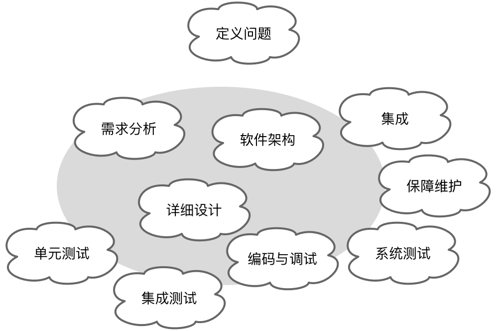
建模活动用灰色的椭圆表示，它主要包括需求分析、软件架构、详细设计和编码与调试等活动，有时候，测试、集成与保障维护活动也会在一定程度上影响系统的建模。为了便于更好地理解建模过程，我将整个建模过程中主要开展的活动称之为“建模活动”，并统一归纳为分析活动、设计活动与实现活动。每一次建模活动都是对知识的一次提炼和转换，产出的成果就是各个建模活动的模型。
- 分析活动：观察现实世界的业务需求，依据设计者的建模观点对业务知识进行提炼与转换，形成表达了业务规则、业务流程或业务关系的逻辑概念，建立分析模型。
- 设计活动：运用软件设计方法进一步提炼与转换分析模型中的逻辑概念，建立设计模型，使得模型在满足需求功能的同时满足更高的设计质量。
- 实现活动：通过编码对设计模型中的概念进行提炼与转换，建立实现模型，构建可以运行的高质量软件，同时满足未来的需求变更与产品维护。
整个建模过程如下图所示：
不同的建模活动会建立不同的模型，上图表达的建模过程体现了这三种模型的递进关系。但是，这种递进关系并不意味着分析、设计与实现形成一种前后相连的串行过程，而应该是分析中蕴含了设计，设计中夹带了实现，甚至在实现中回溯到设计，从而形成一种迭代的螺旋上升的演进过程。不过，在建模的某一个瞬间，针对同一问题，分析、设计与实现这三个活动不能同时进行，这就好似开发过程中不能同时戴上重构与功能实现这两顶帽子一般，它们其实是相互影响、不断切换与递进的关系。一个完整的建模过程，就是模型驱动设计（Model-Driven-Design）。
不仅仅是建模活动会对模型带来影响，设计者在面对业务需求时，关注的视角不同，抽象的设计思想不同，也会导致模型的不同，这就形成了从建模视角产生的模型分类。如果我们是以数据为核心，关注数据实体的样式和它们之间的关系，由此建立的模型就是“数据模型”。如果我们需要为系统外部的客户端提供服务，关注的是客户端发起的请求以及服务返回的响应，由此建立的模型就是“服务模型”。而领域驱动设计则强调以领域为中心，通过识别领域对象来表达业务系统的领域知识包括业务流程、业务规则和约束关系，由此建立的模型就是“领域模型”。这三种不同的模型，就是不同视角的模型驱动设计获得的结果。因此，整个模型驱动设计可以分为两个不同的维度来表现模型，即建模视角与建模活动。不同的建模视角驱动出不同的抽象模型，而不同的建模活动，也会获得不同抽象层次的模型。这两个维度表达的模型驱动设计如下图所示：
无论分析模型、设计模型还是实现模型，它们皆是对现实世界的抽象，只是抽象的层次和目的不同罢了。如何观察现实世界，又可能影响我们最终获得的模型。当我们将现实世界视为由数据组成的系统时，就可以建立一个由数据实体概念组成的软件世界，并驱动着获得以数据模型为核心的解决方案。当我们将现实世界隐喻为一个 Web 系统时，现实世界的任何事物都是暴露给 Web 系统的资源，这就获得了以服务资源模型为核心的解决方案。当我们将现实世界认为是提供服务行为的容器，并由此产生与消费者的协作，就获得了以服务行为模型为核心的解决方案。当我们将现实世界看做是由核心领域与子领域组合而成的问题域时，我们就将围绕着领域模型为核心，驱动并指导着我们的设计，形成以领域模型为核心的解决方案。
Eric Evans 认为模型驱动设计是领域驱动设计中的一种模式。它并没有给出模型驱动设计的定义，只是提出“严格按照基础模型来编写代码，能够使代码更好地表达设计含义，并且使模型与实际的系统相契合。”但我认为，模型的范围要大于领域模型，设计过程也会因为建立模型的不同而各有不同的路径与方向。于是，数据视角产生数据模型驱动设计，服务视角产生服务模型驱动设计，领域视角则产生领域模型驱动设计。在模型驱动的设计过程中，我们获得的模型还将受到建模范式的影响，尤其针对设计与实现，建模范式就意味着设计思想与编程范式的不同，最后获得的模型可能会大相径庭。
因此，要理解和学习领域驱动设计，我们需要辨别各种模型的差异，理解建模范式对模型产生的影响，同样还要认识到：领域驱动设计不过是模型驱动设计中的一种罢了。
039 数据分析模型
在 Eric Evans 提出领域驱动设计之前，对企业系统的分析设计多数采用数据模型驱动设计。如前所述，这种数据模型驱动设计就是站在数据的建模视角，逐步开展分析、设计与实现的建模过程。通过对数据的正确建模，设计人员就可以根据模型建立数据字典。数据模型会定义数据结构与关系，有效地消除数据冗余，保证数据的高效访问。由于软件系统的业务功能归根结底是对信息的处理，由此建立的数据模型也可以通过某种编程手段来实现，满足业务需求。
数据分析模型
数据建模过程中的分析活动会通过理解客户需求寻找业务概念建立实体（Entity）。在数据模型中，一个实体就是客户希望建立和存储的信息。这是一个抽象的逻辑概念，位于数据模型的最高抽象层。一个实体不一定恰好对应一个数据表，它甚至可能代表一个主题域。在识别实体的同时，我们还需要初步确定实体之间的关系。由于这个过程与数据库细节完全无关，因而称之为对数据的“概念建模”，建立的模型称之为实体关系模型。
经过数十年对数据建模的丰富与完善，这个领域已经出现了许多值得借鉴和重用的数据模型。其中，Len Silverston 的著作《数据模型资源手册》是最重要的模型参考手册。他通过对行业业务的梳理，建立了包括人与组织、产品、产品订购、装运、工作计划、发票等各个主题的数据模型。在确定系统的实体时，这些已有的数据模型可以作为我们的重要参考。
当然，每个软件系统的业务需求必然有其特殊性，除了对已有数据模型的参考，也有一些数据建模方法帮助我们获得实体关系模型。例如通过引入不同的用户视图创建不同的实体关系模型。用户视图的差异取决于业务能力的差异，例如，财务人员的观察视图显然不同于市场人员的观察视角，看到的数据信息显然也有所不同。这就像盲人摸象一般，虽然每个视角得到的实体关系模型只是大象的一部分，然而将这些代表不同人员不同观点的实体关系模型组合起来，就能形成整体的实体关系模型。
实体关系模型是数据建模的开始，目的是让我们可以从一开始抛开对数据库实现细节的考虑，寻找那些表达业务知识的重要概念，并明确它们之间的关系。但对数据模型的分析并不会就此止步，我们必须在分析阶段对实体做进一步细化，形成具体的数据表，并定义表属性，确定数据表之间的真实关系。这时获得的分析模型称之为“数据项模型”。实体关系模型与数据项模型之间的关系如下图所示：
在数据建模过程中，越早确定数据库的细节越有利于数据模型的稳定。当今的软件开发，已经不是关系型数据库一统天下的时代。NoSQL 甚至 NewSQL 的诞生，让我们在选择持久化机制时有了更多选择。比较关系数据库和 NoSQL 数据库，前者是严格扁平的结构化数据，后者却是无样式的数据结构（Schemaless Data Structures），结构不同，建立的数据模型自然就有了天壤之别。一旦根据数据模型创建了物理的数据表，再调整数据模型，变化的成本就太高了。因此，究竟选择关系数据库还是 NoSQL 数据库，对确立数据项模型至关重要，我们需要分开讨论。
关系数据库的数据项模型
关系数据库体现了关系模型，形成了一种扁平的结构化数据，这就要求进一步规范数据表的粒度，将实体或主题域拆分为多个遵循数据库范式的数据表，明确一个数据表的主要属性。
数据库范式是面向数据的分析建模活动的一个关键约束。这些范式包括一范式（1NF）、二范式（2NF）、三范式（3NF）、BC 范式（BCNF）和四范式（4NF）。遵循这些范式可以保证数据表属性的原子性、避免数据冗余和传递依赖等。
例如在确定数据项时，该如何考虑避免数据冗余？这就需要合理地设计表以及表之间的关系。
假设一个公司的员工可能同时具有多个角色：运输科的张飞是科室的负责人，他又是供应科的客户，供应科会将运输的任务委托给他；同时，他还是一家大型超市的供应商，负责将货物运输给超市。显然，我们不能在一个数据库中为张飞创建三条冗余的数据记录。运输科主任、供应科客户和超市供应商都是张飞担任的角色，无论他担任了什么角色，他都是该公司的一名员工。
在创建数据模型时，应该将角色属性从员工剥离出去，分别形成数据表 t_employee 与 t_role；又因为员工和角色之间存在多对多的关系，需要引入一个关联表 t_employee_roles。这个数据模型如下图所示：
当数据模型出现多对多关系时，之所以要引入一个关联表，是因为多对多关系会引入数据表之间的交叉关联。这个数据项模型中的 t_employee_role 并无映射的业务概念，引入该表，纯粹是数据库实现细节对模型产生的影响。
有时候，承载多对多关系的关联表也可以具有一些附加的属性，这样的关联表往往代表了业务逻辑中的一个业务概念，例如学生（Student）与课程（Course）之间的多对多关系，可以用课表（Curriculum）关联表来表达。Curriculum 属于学习领域的业务概念，但同时它又能有效解除 Student 与 Course 之间的交叉关联。
有的数据建模者甚至建议针对一对多关系也建立关联表，因为关联表的引入使得这种关系更容易维护。例如产品（Product）和图片（Picture）是一对多关系，直接定义 t_product 和 t_picture 数据表即可，但如果引入 t_product_picture 关联表，就可以在数据库层面更好地维护二者之间的关系。有时，一对多关系体现了父—子关系，例如订单（Order）与订单项（OrderItem），它们之间的一对多关系其实代表了“每个订单项必须是一个也只是一个订单的一部分”。
在确定数据项模型时，还需要考虑访问关系数据库的性能特性，从而决定数据的粒度与分割。通常，需要考虑数据表的规范化，避免设计出太多过小的包含少量数据的数据表。一个数据表的粒度较小，就会导致程序在访问数据库时频繁地在多张小表之间跳转。这个访问过程既要存取数据，又要存取索引以找到数据，导致I/O的过度消耗，影响到整体的性能。因此，数据模型很少具有一对一关系，即使现实世界的概念存在一对一关系，也应该尽量通过规范化将两张表的数据组织在一起，合到一个实体中。例如，我们说一位员工有一个家庭电话号码和工作电话号码，若站在领域概念角度，就应该建模为拥有两个不同电话号码（PhoneNumber）的员工（Employee）对象：
数据模型却不能这样建立，因为我们需要考虑分开两张表带来的 I/O 开销。虽然家庭电话号码和工作电话号码都是相同的 PhoneNumber 类型，但却属于两个不同的属性，将它们合并放到 t_employee 数据表，并不会破坏数据库范式。
当然，这种合并并非必然，有时候还需要考虑数据访问的频率。例如一个银行账户，账户地址、开户日期与余额都是规范化的，按理就应该合并到 t_account 物理表中。但是，余额与其他两项属性的访问频率差异极大，为了使 I/O 效率更高，数据的存储更加紧凑，就应该将规范化的表分解为两个独立的表：
NoSQL 的数据项模型
如果数据库选择了 NoSQL，数据项模型会有所不同。由于 NoSQL 数据库是一种无样式的数据结构（Schemaless Data Structures），这使得它对数据项模型的约束是最少的。诸如 MongoDB、Elasticsearch 这样的 NoSQL 数据库，它所存储的 JSON 文档，可以在属性中进行任意嵌套，形成一种能够自由存取的文档结构。所以 Martin Fowler 又将这样的 NoSQL 数据库称之为“文档型数据库”。
当然，即使是没有样式的 NoSQL，也无法做到随心所欲地建立数据模型，尤其针对表之间的关系，同样要受到实现机制的约束。例如在 MongoDB 中，可以选择使用 Link 或 Embedded 来维护关联关系，这时就需要结合具体业务场景来选择正确的关联关系。
假设我们要开发一个任务跟踪系统，需要能够查询分配给员工的任务。采用 Embedded 方式，Employee 数据模型如下所示：
{
name: 'Kate Monster',
ssn: '123-456-7890',
role: 'Manager',
tasks : [
{ number: '1234', name: 'Prepare MongoDB environment', dueDate: '2019-01-15' },
{ number: '1235', name: 'Import Test Data', dueDate: '2019-02-15' },
]
}
如果需要查询员工的任务信息，就可以直接获得内嵌在员工内部的任务数组，无需执行多次查询。这时，选择 Embedded 就是合理的。倘若需要支持如下功能：
- 显示所有明天到期的任务
- 显示所有未完成的任务
显然，这两个功能要查询的任务与员工无关，而采用 Embedded 方式建立的数据模型却明确地表达了 Employee 与 Task 之间的父子关系，反而为任务的查询制造了障碍。倘若改用 Link 方式来建立二者之间的关联，情况就完全不同了：
//Tasks
[
{
_id: ObjectID('AAAA'),
number: 1234,
name: 'Prepare MongoDB environment',
dueDate: '2017-01-15'
},
{
_id: ObjectID('BBBB'),
number: 1235,
name: 'Import Test Data',
dueDate: '2017-02-15'
},
]
//Employees
{
_id: ObjectID('E00001'),
name: 'Kate Monster',
role: 'Manager',
tasks : [
ObjectID('AAAA'),
ObjectID('BBBB')
]
}
通过 Link 建立的数据模型相当于关系数据库建立的主外键关系，去掉了嵌套关系，任务可以被独立查询，如前所述的功能就变得格外简单。但调整后的数据模型又不利于支持查询员工任务的场景了，它会因为关联的原因导致执行两次查询。
选择 Embedded 或 Link 不仅会影响执行效率和执行的简便性，还可能因为错误的建模方式导致数据的冗余。仍然以前面的任务跟踪系统为例，倘若一个任务可以分配给多个员工，就会从一对多关系变为多对多关系。由于 Embedded 方式是将 Task 的数据直接嵌入到 Employee 中，如果别的 Employee 包含了相同的 Task，就会导致 Task 数据的冗余。
040 数据设计模型
通过分析活动获得的数据项模型，可以认为是数据分析模型，它确定了系统的主要数据表、关系及表的主要属性。到了建模的设计活动，就可以继续细化数据项模型这个分析模型，例如丰富每个表的列属性，或者确定数据表的主键与外键，确定主键的唯一性策略，最后将数据表映射为类对象。
丰富数据分析模型
若要丰富每个表的列属性，除了继续挖掘业务需求，寻找可能错过的属性或辨别分配错误的属性之外，在设计阶段还需要进一步确定这些属性对应的数据列，包括考虑列的类型及宽度，并为每个表定义一个主键列，或者定义由多个列组成的联合主键。
设计主键的目的更多出于查询检索及维护数据表之间关系的要求，而非表达业务含义。即使主键与业务对象要求的唯一标识有关，但生成主键值的业务规则却在数据模型中无法体现，除非需求明确实体的身份标识就是自增长。
例如，订单表的主键为订单 ID，它会作为订单的订单号。为了客服处理订单的便利性，需要订单号在保持尽可能短的前提下，要能帮助客服人员理解，这就需要订单号尽量与当前业务相结合，如渠道编号（包括平台、下单渠道、支付方式）、业务类型和时间信息等组成订单号的编码规则。无疑，订单号的编码规则在数据模型中是无法体现出来的。
在设计活动中，还需要根据业务需求与数据表的特性确定表的索引和约束。同时，还应该根据实现的需要确定是否需要为多个数据表建立视图。索引和视图都有利于提高数据库的访问性能，视图还能保障数据访问的安全性，约束则有利于保证数据的正确性和一致性。毫无疑问，这些机制其实皆与具体的数据库实现机制有关，但在数据建模的设计活动中却又不可避免。如果数据设计模型没有确定索引、约束，并明确标记数据表和视图，就无法给实现模型带来指导和规范。
数据设计模型的构成
建立数据设计模型，最主要的设计活动还是将数据表映射为类对象，以此来满足业务实现。这个过程称之为对象与数据的映射（Object-Relation Mapping，ORM）。
由于数据建模是自下而上的过程，首先确定了数据表以及之间的关系，然后再由此建立与之对应的对象，因此一种简单直接的方法是建立与数据表完全一一对应的类模型。对象的类型即为数据表名，对象的属性即为数据表的列。这样的类在数据设计模型中，目的在于数据的传输，相当于 J2EE 核心模式中定义的传输对象（Transfer Object）。
当然从另一方面来看，由于它映射了数据库的数据表，因而又可以作为持久化的数据，即持久化对象（Persistence Object）。至于操作数据的业务行为，针对基于关系数据库进行的建模活动而言，由于关系数据表作为一种扁平的数据结构，操作和管理数据最为直接高效的方式是使用 SQL。我们甚至可以认为 SQL 就是操作关系型数据表的领域特定语言（Domain Specific Language，DSL）。因此，在数据模型驱动设计过程中，SQL 会成为操作数据的主力，甚至部分业务也由 SQL 或 SQL 组成的存储过程来完成。
为了处理数据的方便，还可以利用 SQL 封装数据处理的逻辑，然后建立一个视图，例如：
CREATE VIEW dbo.v_Forums_Forums
AS
SELECT dbo.Forums_Categories.CategoryID, dbo.Forums_Categories.CategoryName, dbo.Forums_Categories.CategoryImageUrl,
dbo.Forums_Categories.CategoryPosition, dbo.Forums_Forums.ForumID, dbo.Forums_Forums.ForumName, dbo.Forums_Forums.ForumDescription,
dbo.Forums_Forums.ForumPosition,
(SELECT COUNT(*)
FROM Forums_Topics
WHERE Forums_Topics.ForumID = Forums_Forums.ForumID) AS ForumTopics,
(SELECT COUNT(*)
FROM Forums_Topics
WHERE Forums_Topics.ForumID = Forums_Forums.ForumID) +
(SELECT COUNT(*)
FROM Forums_Replies
WHERE Forums_Replies.ForumID = Forums_Forums.ForumID) AS ForumPosts,
(SELECT MAX(AddedDate)
FROM (SELECT ForumID, AddedDate
FROM Forums_Topics
UNION ALL
SELECT ForumID, AddedDate
FROM Forums_Replies) AS dates
WHERE dates.ForumID = Forums_Forums.ForumID) AS ForumLastPostDate
FROM dbo.Forums_Categories INNER JOIN
dbo.Forums_Forums ON dbo.Forums_Categories.CategoryID = dbo.Forums_Forums.CategoryID
如上所示，创建视图的 SQL 语句封装了对论坛主题数、回复数等数据的统计业务逻辑。
显然，遵循职责分离的原则，数据设计模型主要包含三部分的职责：业务逻辑、数据访问及数据。映射为对象模型，就是与数据表一一对应并持有数据的持久化对象，封装了 SQL 数据访问逻辑的数据访问对象（Data Access Object，DAO），以及满足业务用例需求的服务对象。三者之间的关系如下图所示：
数据访问对象
数据访问对象属于 J2EE 核心模式中的一种，引入它的目的是封装数据访问及操作的逻辑，并分离持久化逻辑与业务逻辑，使得数据源可以独立于业务逻辑而变化。
《J2EE 核心模式》认为：“数据访问对象负责管理与数据源的连接，并通过此连接获取、存储数据。”一个典型的数据访问对象模式如下图所示：
图中的 Data 是一个传输对象，如果将该 Data 定义为表数据对象，它可以处理表中所有的行，如 RecordSet，或者由 ADO.NET 中的 IDataReader 提供类似数据库游标的访问能力，就相当于运用了《企业应用架构模式》中的表数据入口（Table Data Gateway）模式。如果 Data 是这里提及的代表领域概念的持久化对象，则需要引入 ResultSet 到 Data 之间的映射器，这时就可以运用数据映射器（Data Mapper）模式。如下所示：
public class Part {
private String name;
private String brand;
private double retailPrice;
}
public class PartMapper {
public List<Part> findAll() throws Exception {
Connection conn = null;
try {
Class.forName(DRIVER_CLASS);
conn = DriverManager.getConnection(DB_URL, USER, PASSWORD);
Statement stmt = c.createStatement();
ResultSet rs = stmt.executeQuery("select * from part");
List<Part> partList = new ArrayList<Part>();
while (rs.next()) {
Part p = new Part();
p.setName(rs.getString("name"));
p.setBrand(rs.getString("brand"));
p.setRetailPrice(rs.getDouble("retail_price"));
partList.add(p);
}
} catch(SQLException ex) {
throw new ApplicationException(ex);
} finally {
conn.close();
}
}
}
为了隔离数据库持久化逻辑，往往需要为数据访问对象定义接口，再以依赖注入的方式注入到服务对象中，保证数据源和数据访问逻辑的变化。如下接口定义就是数据访问对象的抽象：
public interface MovieDao {
Movie findById(String id);
List<Movie> findByYear(String year);
void delete(String id);
Movie create(String rating，String year，String title);
void update(String id，String rating，String year，String title);
}
持久化对象
在数据设计模型中，持久化对象可以作为数据的持有者传递给服务、数据访问对象甚至是 UI 控件。早期的开发框架流行为持有数据的对象定义一个通用的数据结构，同时为 UI 控件提供绑定该数据结构的能力。如 ADO.NET 框架就定义了 DataSet、DataTable 等数据结构，ASP.NET Web Form 则提供绑定这些数据结构的能力。例如，我们要显示商品的类别，在 Web 前端就定义了属于 System.Web.UI.Page 类型的 Web 页面 CategoriesPage，它与数据访问对象以及持久化对象的交互如下图所示：
图中的 DataTable 通过 CategoriesDAO 直接返回，它实际上是 ADO.NET 框架定义的通用类型。在一些 .NET 开发实践中，还可以定义强类型的 DataSet 或 DataTable，方法是定义一个代表业务概念的类，例如 Categories，让它派生自 DataTable 类。
随着轻量级容器的流行，越来越多的开发人员认识到持久化对象强依赖于框架带来的危害，POJO（Plain Old Java Object）和 POCO（Plain Old CLR Object）得到了大家的认可和重视。Martin Fowler 甚至将其称之为持久化透明（Persistence Ignorance，PI）的对象，用以形容这样的持久化对象与具体的持久化实现机制之间的隔离。理想状态下的持久化对象，不应该依赖于除开发语言平台之外的任何框架。
在《领域驱动设计与模式实战》一书中，Jimmy Nilsson 总结了如下特征，他认为这些特征违背了持久化透明的原则：
- 从特定的基类（Object 除外）进行继承
- 只通过提供的工厂进行实例化
- 使用专门提供的数据类型
- 实现特定接口
- 提供专门的构造方法
- 提供必需的特定字段
- 避免某些结构或强制使用某些结构
这些特征无一例外地都是外部框架对于持久化对象的一种侵入。在 Martin Fowler 总结的数据源架构模式中，活动记录（Active Record）模式明显违背了持久化透明的原则，但因为它的简单性，却被诸如 Ruby On Rails、jOOQ、scalikejdbc 之类的框架运用。活动记录模式封装了数据与数据访问行为，这就相当于将数据访问对象与持久化对象合并到了一个对象中。由于数据访问逻辑存在许多通用的逻辑，许多数据访问框架都定义了类似 ActiveRecord 这样的超类，由其实现公共的数据访问方法，Ruby On Rails 还充分利用了 Ruby 元编程特性提供了更多的代码简化。例如定义客户 Client 的活动记录：
class Client < ApplicationRecord
has_one :address
has_many :orders
has_and_belongs_to_many :roles
end
# invoke
client = Client.order(:first_name).first
Client 类继承了 ApplicationRecord 类，而框架通过 Ruby 的 missingMethod() 元数据编程和动态语言特性，使得调用者可以方便快捷地调用 order 与 first 等方法，完成对数据的访问。
使用 Scala 编写的 scalikejdbc 框架则利用代码生成器和组合方式来实现活动记录，例如 Report 类和伴生对象（companion object）的定义：
case class Report(
id: String,
name: Option[String] = None,
description: Option[String] = None,
status: String,
publishStatus: String,
createdAt: DateTime,
updatedAt: DateTime,
createdBy: String,
updatedBy: String,
metaData: String) {
def save()(implicit session: DBSession = Report.autoSession): Report = Report.save(this)(session)
def destroy()(implicit session: DBSession = Report.autoSession): Unit = Report.destroy(this)(session)
}
object Report extends SQLSyntaxSupport[Report] {
override val tableName = "reports"
override val columns = Seq("id", "name", "description", "status", "publish_status", "created_at", "updated_at", "created_by", "updated_by", "meta_data")
val r = Report.syntax("r")
override val autoSession = AutoSession
def find(id: String)(implicit session: DBSession = autoSession): Option[Report] = {
withSQL {
select.from(Report as r).where.eq(r.id, id)
}.map(Report(r.resultName)).single.apply()
}
def findAll()(implicit session: DBSession = autoSession): List[Report] = {
withSQL(select.from(Report as r)).map(Report(r.resultName)).list.apply()
}
def findBy(where: SQLSyntax)(implicit session: DBSession = autoSession): Option[Report] = {
withSQL {
select.from(Report as r).where.append(where)
}.map(Report(r.resultName)).single.apply()
}
}
类 Report 并没有继承任何类，但却利用 Scala 的隐式参数依赖了框架定义的 DBSession，然后通过 Report 的伴生对象去继承名为 SQLSyntaxSupport[T] 的特性，以及组合调用了 withSQL 对象。显然，活动记录在满足了快速编码与代码重用的同时，也带来了与数据访问框架的紧耦合。
当持久化对象被运用到 CQRS 模式中时，查询端通过查询外观直接访问一个薄的数据层，如下图右端所示：
这个薄的数据层通过数据访问对象结合 SQL 语句直接访问数据库，返回一个表数据记录 ResultSet，然后直接将其转换为 POJO 形式的数据传输对象（DTO）对象。这是因为查询端仅涉及到数据库的查询，因此并不需要持久化对象，至于添加、删除与修改则属于命令端，采用的是领域模型而非数据模型。
服务对象
由于持久化对象和数据访问对象都不包含业务逻辑，服务就成为了业务逻辑的唯一栖身之地。这时，持久化对象是数据的提供者，实现服务时就会非常自然地选择事务脚本（Transaction Script）模式。
《企业应用架构模式》对事务脚本的定义为：
使用过程来组织业务逻辑，每个过程处理来自表现层的单个请求。这是一种典型的过程式设计，每个服务功能都是一系列步骤的组合，从而形成一个完整的事务。注意，这里的事务代表一个完整的业务行为过程，而非保证数据一致性的事务概念。
例如为一个音乐网站提供添加好友功能，就可以分解为如下步骤：
- 确定用户是否已经是朋友
- 确定用户是否已被邀请
- 若未邀请，发送邀请信息
- 创建朋友邀请
采用事务脚本模式定义的服务如下所示：
public class FriendInvitationService {
public void inviteUserAsFriend(String ownerId, String friendId) {
try {
bool isFriend = friendshipDao.isExisted(ownerId, friendId);
if (isFriend) {
throw new FriendshipException(String.format("Friendship with user id %s is existed.", friendId));
}
bool beInvited = invitationDao.isExisted(ownerId, friendId);
if (beInvited) {
throw new FriendshipException(String.format("User with id %s had been invited.", friendId));
}
FriendInvitation invitation = new FriendInvitation();
invitation.setInviterId(ownerId);
invitation.setFriendId(friendId);
invitation.setInviteTime(DateTime.now());
User friend = userDao.findBy(friendId);
sendInvitation(invitation, friend.getEmail());
invitationDao.create(invitation);
} catch (SQLException ex) {
throw new ApplicationException(ex);
}
}
}
不要因为事务脚本采用面向过程设计就排斥这一模式，相较于对编程范式的偏执，我认为 Martin Fowler 在书中说的一句话更加公道：
“不管你是多么坚定的面向对象的信徒，也不要盲目排斥事务脚本。许多问题本身是简单的，一个简单的解决方案可以加快你的开发速度，而且运行起来也会更快。”
即使采用事务脚本，我们也可以通过提取方法来改进代码的可读性。每个方法都提供了一定的抽象层次，通过方法的提取就可以在一定程度上隐藏细节，保持合理的抽象层次。这种方式被 Kent Beck 总结为组合方法（Composed Method）模式：
- 把程序划分为方法，每个方法执行一个可识别的任务
- 让一个方法中的所有操作处于相同的抽象层
- 这会自然地产生包含许多小方法的程序，每个方法只包含少量代码
如上的 inviteUserAsFriend() 方法就可以重构为：
public class FriendInvitationService {
public void inviteUserAsFriend(String ownerId, String friendId) {
try {
validateFriend(ownerId, friendId);
FriendInvitation invitation = createFriendInvitation(ownerId, friendId);
sendInvitation(invitation, friendId);
invitationDao.create(invitation);
} catch (SQLException ex) {
throw new ApplicationException(ex);
}
}
}
在采用事务脚本时，同样需要考虑职责的分配，每个类应该围绕一个主题将相关的事务脚本组织在一起。为了更好地应对事务脚本的变化，可以考虑让一个事务脚本对应一个类，并通过识别事务脚本的共同特征，引入命令（Command）模式。例如推荐朋友事务脚本和推荐音乐事务脚本：
当然，无论对于事务脚本做出怎样的设计改进，只要不曾改变事务脚本的过程设计本质，一旦业务逻辑变得更加复杂时，就会变得捉襟见肘。Martin Fowler 就认为：
“当事物一旦变得那么复杂时，就很难使用事务脚本保持一个一致的设计。”
解释为何事务脚本较难处理复杂业务，牵涉到对结构编程范式和对象编程范式之间的讨论，我会在后面进行专题探讨，这里不再赘述。
041 数据模型与对象模型
在建立数据设计模型时，我们还需要注意表设计与类设计之间的差别，这事实上是数据模型与对象模型之间的差别。
数据模型与对象模型
我们首先来分析在设计时对冗余的考虑。前面在讲解数据分析模型时就提及，在确定数据项模型时，需要遵循数据库理论的设计范式，其中一个目的是避免数据冗余。但是，避免了数据冗余并不意味着代码能支持重用。例如，员工表与客户表都定义了“电子邮件”这个属性列。该属性列在业务含义上是完全相同的，但在数据表设计时，却只能分属于两个表不同的列，因为对于数据表而言，“电子邮件”列其实是原子的，属于 varchar 类型。
如果针对业务概念建立对象模型，需要遵循“高内聚低耦合”的设计原则，如果发现多个属性具有较强的相关性，需要将其整合起来共同定义一个类。例如国家、城市、街道和邮政编码等属性，它们都与地址相关，共同组成完整的地址概念，在对象模型中就可以定义 Address 类。
在数据模型中，关系数据表并不支持自定义类型，在设计时又需要支持一范式（1NF），即确保数据表的每一列保持原子性，就必须将这个内聚的组合概念进行拆分。例如，地址就不能作为一个整体被定义为数据表的一个列，因为系统需要访问地址中的城市信息，如果仅设计为一个地址列，就违背了一范式。这时，地址在数据模型中就成了一个分散的概念。若要保证其概念完整性，唯一的解决方案是将地址定义为一个独立的数据表；但这又会增加数据模型的复杂性，更会因为引入不必要的表关联而影响数据库的访问性能。正如 Jimmy Nilsson 所说：“关系模型是用来处理表格类型的基本数据的，这既有好的一面，也有坏的一面。面向对象模型很善于处理复杂数据。”
针对同样的业务概念，我们可以对比数据模型与对象模型之间的差异。例如，员工、客户与地址的数据模型如下图所示：
虽然员工与客户都定义了诸如 country、city 等地址信息，但它们是分散的，并被定义为数据表提供的基本类型，无法实现两个表对地址概念的重用。对象模型就完全不同了，它可以引入细粒度的类型定义来体现丰富的领域概念，封装归属于自己的业务逻辑，同时还提供了恰如其分的重用粒度：
对比这两个模型，组成数据模型的数据表是一个扁平的数据结构，数据表中的每一列都是数据库的基本类型，而组成领域模型的类则具有嵌套的层次结构。在设计时，更倾向于建立细粒度对象来表达一个高度内聚的概念，如 Address 与 ZipCode 类。
在建立数据设计模型时，与数据表对应的持久化对象往往难以表达业务的约束规则。例如，运输（Shipping）与运输地址（ShippingAddress）满足“每个 Shipping 必须**有且只有一个 **ShippingAddress”这一业务规则。在数据模型中，可以通过在运输与运输地址之间创建关系来表达，例如在可视化的 ER 图中，用虚线代表任选，用实线代表强制。但这种关系连线虽然表达了这种约束关系，却没法显式地体现这一业务概念，除非在数据模型图中采用注解来说明。如果采用对象模型，就可以通过引入 ShippingSpecification 这个类型来体现这种约束逻辑。
从设计模型看，构成数据模型主体的数据库与数据表，明显存在粒度和边界的局限性。这种局限性在一定程度上影响了数据建模的质量。关系数据库的设计范式并没有从类型复用的角度去规定数据表的设计，由于关系表不支持自定义类型，无法支持 Jimmy Nilsson 所说的“复杂数据”，因此可以认为在数据模型中，数据表才是最小的复用单元。由于建立一个数据表存在 I/O 成本，会影响数据库的访问性能，因而在数据模型中，通常不建议为细粒度但又是高内聚的数据类型单独建立数据表，如前面给出的“地址”的例子。换言之，关系数据库的设计范式仅仅从数据冗余角度给予了设计约束，如果照搬数据模型去建立类模型，就有可能无法避免代码冗余。
对于一个数据库而言，关系数据库的表结构是扁平的，数据表之间可以建立关联，也可以隐式地通过一对多的关系表达具有层级的父子关系，但数据模型自身却无法体现这种层次。下图是 Apache OFBiz 项目中关于运输相关的数据模型：
这个数据模型一共定义了 31 张数据表，这些表对应的业务概念上存在主从关系，以及强弱不同的耦合关系。例如，Shipment 表显然是主表，诸如 ShipmentAttribute、ShipmentStatus、ShipmentType 与 ShipmentItem 等都是围绕着 Shipment 表建立的从表。但是，数据模型自身却无法体现这种主从关系。我们之所以能识别出这种主从关系，其实是基于对数据表名的语义推断。通过语义推断，我们也能判断 Shipment 与 ShipmentItem 等表之间的关系要明显强于 Shipment 与 PicklistBin、Picklist、PicklistRole 等表之间的关系，但数据模型并没有清晰地表达这种边界。
究其原因，在关系数据库的数据模型中，数据库是最大的复用单元。设计数据库时，往往是一个库对应一个子系统或者一个微服务，而在数据库和数据表之间，缺少合适粒度的概念去维护数据实体的边界。它缺少领域驱动设计引入的聚合（Aggregate）、模块（Module）等各种粒度的边界概念。显然，扁平的关系型数据结构无法体现领域概念中丰富的概念层次。
NoSQL 的数据设计模型
NoSQL 数据库的设计模型就截然不同了，尤其是文档型的 NoSQL 数据库，能够通过定义嵌套关系的无模式数据表相当自然地体现对象图（Object Graph）的结构。因此，在针对 NoSQL 数据库建立数据设计模型时，就可以直接运用领域建模的设计原则，如引入聚合的概念来设计表模型。
Martin Fowler 在文章 Aggregate Oriented Database 中指出，NoSQL 数据库需要有效地将数据存储在分布式集群之上，而他则建议存储的基本数据单元应为领域驱动设计中的聚合（Aggregate），聚合的粒度天然地满足了诸如数据分片这样的分布式策略。Martin Fowler 以订单为例，说明了关系数据库与 NoSQL 数据库的不同，如下图所示：
一个订单对象在关系数据库中需要被分解为多张数据表，但对于诸如 MongoDB、Elasticsearch 这样的数据库，则可以认为是一个聚合。因此，在设计 NoSQL 的数据模型时，可以运用领域驱动设计中聚合的设计原则。
我在设计一个报表系统的报表元数据管理功能时，选择了 Elasticsearch 作为存储元数据的数据库。在设计元数据管理的数据模型时，就通过聚合来思考元数据中 ReportCategory、Report 与 QueryCondition 三者之间的关系。
从业务完整性看，Report 虽属于 ReportCategory，但二者之间并没有强烈的约束关系，即不存在业务上的不变量（Invariant）。ReportCategory 可以没有 Report，成为一个空的分类；我们也可以撇开 ReportCategory，单独查询所有的 Report。倘若我们将 Report 放到 ReportCategory 聚合中，由于 Report 可能会被单独调用，聚合的边界保护反而成为了障碍，这样的设计并不合理。因此，ReportCategory 和 Report 应该属于两个不同的聚合。
分析 QueryCondition 与 Report 之间的关系，又有不同。当 QueryCondition 缺少 Report 对象后，还有存在意义吗？答案一目了然，没有 Report，就没有 QueryCondition。皮之不存毛将焉附！因此可以确定 Report 与 QueryCondition 应属于同一个聚合。于是，我们得到如下模型：
这样设计获得的模型显然是一个领域模型。当我们将其以 JSON 的格式持久化到 Elasticsearch 的数据表时，又可以认为该模型同时就是 Elasticsearch 的数据模型。
这种面向文档的嵌套层次结构与对象模型更为相配，并在多数时候采用 JSON 结构来表达数据结构。JSON 数据结构在许多产品和项目中得到运用，一些传统的关系型数据库也开始向这个方向靠拢。例如，目前流行的开源关系数据库如 MySQL 和 PostgreSQL，都已支持 JSON 这样的文档型数据结构。
042 数据实现模型
SQL 与存储过程
倘若选择关系型数据库，组成数据实现模型的主力军是 SQL 语句，这是我们不得不面对的现实。毕竟，针对数据建模的实现者大多数担任 DBA 角色，他（她）们掌握的操作数据的利器就是 SQL。正如前面讲解数据分析模型时所说，SQL 语句相当于是操作关系数据表的领域特定语言（Domain Specific Language，DSL），使用 SQL 操作数据表更加直接而自然。
SQL 语句可以很强大，例如它同样提供了数据类型、流程控制、变量与函数定义。同时，还可以使用 SQL 来编写存储过程。从某种程度讲，存储过程也可以认为是事务脚本。如下的存储过程就封装了插入论坛类别的业务过程：
CREATE PROCEDURE np_Forums_InsertCategory
@CategoryName varchar(100),
@CategoryImageUrl varchar(100),
@CategoryPosition int,
@CategoryID int OUTPUT
AS
DECLARE @CurrID int
-- see if the category already exists
SELECT @CurrID = CategoryID
FROM Forums_Categories
WHERE CategoryName = @CategoryName
-- if not, add it
IF @CurrID IS NULL
BEGIN
INSERT INTO Forums_Categories
(CategoryName, CategoryImageUrl, CategoryPosition)
VALUES (@categoryName, @CategoryImageUrl, @CategoryPosition)
SET @CategoryID = @@IDENTITY
IF @@ERROR > 0
BEGIN
RAISERROR ('Insert of Category failed', 16, 1)
RETURN 99
END
END
ELSE
BEGIN
SET @CategoryID = -1
END
在我踏上软件开发道路之初，无论是讲解数据库编程的书籍，还是身边的资深程序员，都在告诉我应当优先考虑编写存储过程来封装访问数据的逻辑。在开发数据库管理系统的时代，这似乎成为了性能优化的箴言，然而这并非事实的真相。Eric Redmond 在《七周七数据库》中就写道：
“存储过程可以通过巨大的架构代价来取得巨大的性能优势。使用存储过程可以避免将数千行数据发送到客户端应用程序，但也让应用程序代码与该数据库绑定，因此，不应该轻易决定使用存储过程。”
我曾经经历过将 Sybase 上的大量存储过程迁移到 Oracle 的噩梦，也曾阅读和维护过长达二千多行的存储过程，真可以说是往事不堪回事，这使得我对存储过程始终抱有戒惧心理。Donald Knuth 于 1974 年在 ACM Journal 上发表的文章 Structured Programming with go to Statements 中写道：
"We should forget about small efficiencies, say about 97% of the time: premature optimization is the root of all evil."
显然，在我们没有通过性能测试发现性能瓶颈之前就进行的性能优化，可谓“万恶之源”。存储过程确有性能优势，但在没有发现性能瓶颈时，因为性能而选择存储过程，意味着会牺牲代码的可维护性、可读性及可扩展性，带来的结果可能是得不偿失。
在分布式系统下，SQL 存储过程带来的性能优势消散殆尽。单机版的时代已经过去。当数据量与访问量变得越来越大时，存储过程带来的性能提升已经不足以解决性能问题。由于存储过程强耦合于数据库服务器，使得对它的改造受到了诸多限制。例如，根据 AKF 的立方体模型，若要实现系统的可伸缩性（Scalability），可以从三个维度对系统的对应层次进行分割：
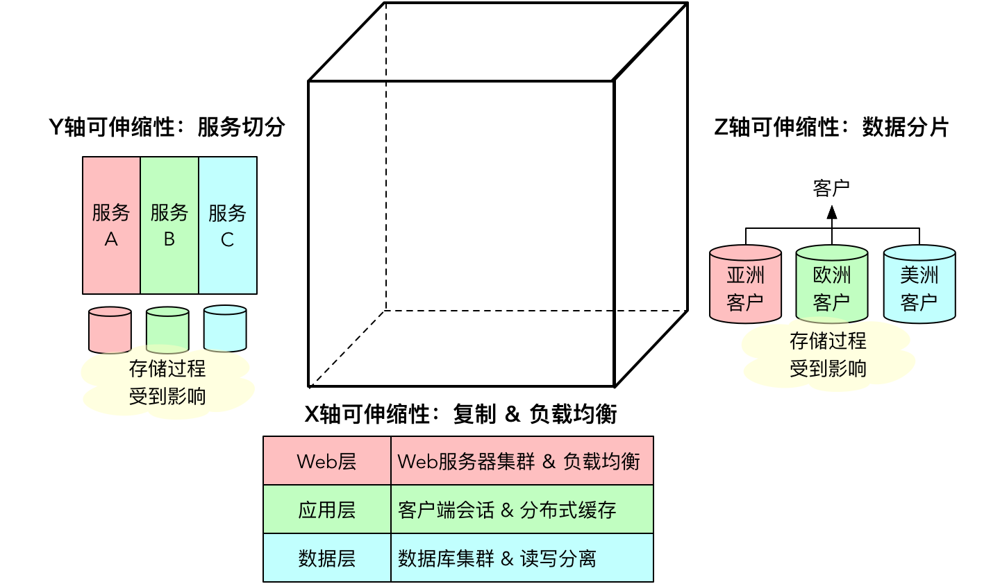
评估立方体的三个维度：
- X 轴的可伸缩性代表了数据或服务的复制与负载均衡：数据层采用数据库集群以及读写分离来保证。此时，存储过程不会受到 X 轴分割的影响。
- Y 轴的可伸缩性代表了服务的切分：相当于采用微服务架构。为了避免数据库出现性能瓶颈，应遵循微服务的设计原则，保证每个微服务有专有的数据库。若拆分前的单体架构使用了存储过程，可能包含大量多表关联，当迁移到微服务架构时，可能因为分库的原因，需要对存储过程做出修改和调整。
- Z 轴的可伸缩性代表了数据的分片：这意味着需要针对同类型的数据进行分库，如果 SQL 封装在服务或数据访问对象中，可以通过类似 ShardingSphere 这样的框架对 SQL 进行自动解析，满足分库分表的能力；但如果是存储过程，就会受到影响。
不管是 SQL 语句还是由 SQL 语句构成的存储过程，更擅长表达对数据表和关系的操作。例如一些跨表查询通过 SQL 的 JOIN 或者子查询会显得更加直接，查询条件用 WHERE 子句也极为方便，但在针对复杂的业务逻辑处理，SQL 的表达力就要远远弱于类似 Java 这样的语言了。
SQL 和存储过程的自动化测试一直是一个难题。虽然有的数据库提供了 SQL 单元测试的开发工具，例如 Oracle SQL Developer；但是，单元测试的本质是不依赖于外部资源，SQL 的目的又是访问数据库，这就使得 SQL 单元测试本身就是一个悖论。类似 STK/Unit 这样的工具可以通过编写测试脚本来实现 SQL 的自动化测试，但实际上它是通过编写存储过程来调用测试用例，因而具有存储过程天然的缺陷。SQL 的代码调试也是一个非常大的问题。总之，一旦业务需求变得越来越繁杂，又或者业务需求频繁发生变化，维护 SQL 与存储过程会变得极为痛苦。
如果使用关系数据库，唯一绕不开的 SQL 场景是数据库的创建，以及基础数据的生成。软件系统一旦上线投入到生产环境，最难以更改的其实是数据库，包括数据库样式和已有的数据。无论是升级还是迁移，数据库都是最复杂的一环。为了解决这一问题，就需要对数据库脚本进行版本管理。无论变更是大还是小，是影响数据库样式还是数据，每次变更都应该放在单独的脚本文件中，并进行版本控制。这就相当于为数据库标记了检查点（Checkpoint），使得我们既可以从头开始部署数据库环境，也可以从当前检查点开始升级或迁移。像 FlywayDB 框架就规定每次数据库变更都定义在一个单独的 SQL 文件中，文件名前缀为：V{N}__，N 代表版本号。例如：
即使是一次小的变更，也应该在带有版本号的 SQL 脚本中体现出来，例如上图中的 V19 脚本，其实就是在 t_fields 表中添加了一个新列：
ALTER TABLE t_fields ADD COLUMN format VARCHAR(200);
当然，考虑到升级失败时的回退，还应该提供对应的回退脚本：
ALTER TABLE t_fields DROP COLUMN format;
对象关系映射
我在介绍数据设计模型时提到数据表与对象之间的关系，认为：
一种简单直接的方法是建立与数据表完全一一对应的类模型。
这其实是数据模型驱动设计的核心原则，即它是按照数据表与关系来建模的，因此在数据模型驱动设计中，数据表与对象的映射非常简单：数据表即类型，一行数据就是一个对象。映射的持久化对象是一个典型的贫血模型。如果针对关系数据库建立了数据模型，却在定义对象类型时采用了面向对象的设计思想，那就不再是数据模型驱动，而是领域模型驱动。
数据表与对象之间的映射，主要体现在概念上的一一对应，对于关系的处理则有不同之处。Jimmy Nilsson 认为：
“在关系数据库中，关系是通过重复的值形成的。父表的主键作为子表的外键重复，这就有效地使子表的行‘指向’它们的父亲。因此，关系模型中的一切事物都是数据，甚至关系也是数据。”
在类模型中，这种主外键关系往往通过类的组合或聚合来体现，即一个对象包含了另外一个对象或对象的集合。注意，这里的聚合是面向对象设计思想中的概念，并非领域驱动设计中的聚合。因此，当数据访问对象从数据表中查询获得返回结果时，需要通过映射器来实现从数据表的行到对象的转换。
整体而言，当我们面对关系数据库进行数据建模时，数据实现模型实际上得到了简单处理，所有业务都通过服务、数据访问对象与持久化对象三者之间的协作来完成，三者各司其职：
- 持久化对象就是数据表的映射，并合理处理数据表之间的关系；
- 数据访问对象负责访问数据库，并完成返回结果集如 ResultSet 或 DataSet 到持久化对象的映射；
- 服务利用事务脚本或者存储过程来组织业务过程。
当然，持久化对象与数据访问对象的组合可以有多种变化，我在前面讲解数据设计模型时已经介绍，这些变化对应的恰好是 Martin Fowler 在《企业应用架构模式》中总结的四种数据源架构模式：
- 表入口模式
- 行入口模式
- 活动记录
- 数据映射器
这种简单的职责分配可以让一个不具备面向对象设计能力的开发人员快速上手，尤其是在 ORM 框架的支持下，框架帮助开发人员完成了大部分工作：生成持久化对象，封装通用的数据访问行为，利用元数据或配置完成表到类的映射。留给开发人员要做的工作很简单，就是编写 SQL，然后在服务中采用事务脚本的方式实现业务过程。如果业务过程也用存储过程或者 SQL 实现，则数据模型驱动设计的实现模型就只剩下编写 SQL 了。这些工作甚至 DBA 就可以胜任。
如果对比数据设计模型与数据实现模型，我们发现二者没有非常清晰的界限。设计过程实际上取决于对 ORM 框架的选择。
- 如果选择 MyBatis，则遵循数据映射器模式，为持久化对象建立 Mapper，并通过 Java 注解或 XML，配置数据表与持久化对象之间的映射及对 SQL 的内嵌；
- 如果选择 jOOQ，则遵循活动记录模式，利用代码生成器创建具有数据访问能力的持久化对象，采用类型安全的 SQL 编写访问数据的逻辑代码；
- 如果选择 Spring Data JPA，则是数据映射器与资源库模式的一种结合，通过框架提供的Java注解确保实体（即这里的持久化对象）与数据表的映射，编写资源库（即数据访问对象）对象，并通过继承 CrudRepository 类实现数据库的访问。
一旦选定了框架，其实就开始了编码实现。只需要确定业务过程，就可以创建服务对象，并以过程式的方式实现业务逻辑，若需要访问数据库，就通过数据访问对象来完成查询与持久化的能力。
数据模型驱动设计的过程
显然，在数据模型驱动设计的过程中，设计模型与实现模型皆以分析模型为重要的参考蓝本。整个数据模型驱动设计的重头戏都压在了分析模型上。通过对业务知识的提炼，识别出实体和数据表，并正确地建立数据表之间的关系成为了数据建模最重要的工作。它是数据模型驱动设计的起点。因此，一个典型的数据模型驱动设计过程如下图所示：
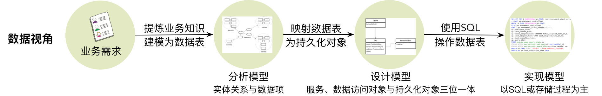
你可以说这是没有太多设计含金量的过程，但对于简单的业务系统而言，无疑这是简单高效的设计方法。除了数据库性能优化与数据库设计范式之外，它对团队开发人员几乎没有技术门槛，只需掌握三个技能：一门语言的基本语法和编程技巧、一个 ORM 框架的使用方法及基本的 SQL 编写能力——就这三板斧，足矣！这也正是为何数据模型驱动设计能够大行其道的主要原因，无他，门槛低而已。
043 案例 培训管理系统
接下来，我会用数据模型驱动设计的方法设计一个培训管理系统。在这个系统平台上，管理员可以发布课程，注册会员可以浏览所有的课程信息，并选择将自己感兴趣的课程加入到期望列表中，还可以订阅课程，并完成在线支付。为了让我们将注意力集中在该系统的核心业务中，我省去了用户管理、权限管理等通用功能。
建立数据分析模型
首先，我们需要分析业务，从中识别出我们需要关注的实体和实体之间的关系。一种简单的做法是通过识别需求中的名词来获得实体，之后就可以辨别它们之间的关系。我们还可以通过引入不同的用户视图来创建不同的实体关系模型。
在数据模型驱动设计过程中，通常会利用需求功能规格说明书详细阐述需求，如：
- 管理员发布课程：管理员在发布课程时，需要提供课程名、类别、课程简介、目标收益、培训对象和课程大纲。每门课程还要给出课程费用、课程时长、课程排期和讲师的信息。讲师的信息包括讲师姓名、任职公司和职务以及老师的个人简历。
- 注册会员浏览课程信息：注册会员可以搜索和浏览课程基本信息，也可以查看课程的详细信息。
- 加入期望列表：注册会员在发现自己感兴趣的课程时，可以将其加入到期望列表中，除了不允许重复添加课程之外，没有任何限制。
- 订阅课程：注册会员可以订阅课程。订阅课程时，应该确定具体的课程排期。课程一旦被注册会员订阅，就应该从期望列表中移除。注册会员可以订阅多个课程。
- 购买课程：注册会员在订阅课程后，可以通过在线支付进行购买。购买课程时，需要生成课程订单。
通过以上需求描述，很明显可以获得两个用户视图，即管理员和注册会员。分别针对这两种不同的用户，识别需求描述中代表业务概念的名词，可以获得如下实体关系模型：
图中灰色实体恰好可以与需求功能描述中的名词相对应。黄色实体则针对业务做了进一步的提炼，按照培训领域的业务，将“注册会员”称为“学生（Student）”，将“一次课程订阅”称为“培训（Training）”。注意，课程（Course）与培训（Training）、订单（Order）之间的关系。课程是一个可以反复排期、反复订阅的描述课程基本信息和内容的实体。当学生在订阅课程时，需要确定具体的课程排期。一旦订阅，就成为了一次具有固定上课日期的培训。只有学生为这次培训支付了费用后，才会生成一个订单。
深化实体关系模型，需要确定数据表以及数据表之间的关系和属性，由此获得数据项模型，这需要继续深挖业务需求，由此获得数据实体的属性，并按照数据库范式对实体进行拆分，并合理安排数据表之间的关系。例如，针对课程实体，可以将其拆分为课程（Course）、日程（Calendar）与类别（Category）表。课程与日程、类别的关系是一对多的关系。针对订单实体，可以将其拆分为订单（Order）和订单项（OrderItem）。
数据项模型的主体是数据表以及数据表之间的关系。在培训系统中，我们欣喜地发现数据模型中的关系表不仅在于消除表之间的多对多关系，同时还体现了业务概念。例如，期望列表（WishList）体现了学生与课程之间的多对多关系，培训（Training）同样体现了这二者之间的多对多关系。
在梳理数据表之间的关系时，有时候会因为建立了更细粒度的数据表，而判断出之前的实体关系可能存在谬误。例如实体关系模型为支付（Payment）与培训、订单与培训之间建立了关系，但在数据项模型中，由于引入了订单项，它与培训存在一对一关系，从而解除了订单与培训之间的关系。在定义了支付的属性后，最终发现为支付与培训之间建立关系是没有意义的。最终，我们建立的数据项模型如下图所示：
建立数据设计模型
在数据设计模型中，需要定义持久化对象、数据访问对象与服务对象。为简便起见，本例不考虑各个数据表增删改查的数据管理操作，而只需要设计如下业务功能：
- 添加课程到期望列表
- 从期望列表中移除课程
- 预订课程
- 取消课程预订
- 购买课程
服务将完成这些业务功能。通常，我们需要根据业务功能所要操作的表来判断功能的承担者。例如“学生添加课程到期望列表”操作的是期望列表，这个功能就应该定义到 WishListService 服务中。要注意区分功能描述的概念名词与实际操作数据表的区别。例如，“学生预订课程”功能表面上是操作课程数据表，实际生成了一个培训和订单；“学生购买课程”表面上是操作课程数据表，但实际上是针对订单表和支付表进行操作，这两个功能就应该定义到 OrderService 服务中。
数据项模型中的每个数据表对应每个持久化对象，这些持久化对象本质上都是传输对象，仅提供业务操作的数据，不具备业务行为。访问数据库的行为都放在持久化对象对应的数据访问对象中，业务行为则由服务来封装。因此，针对以上业务功能得到的设计模型如下所示：
这里，我使用了 UML 类图来表达数据设计模型，这样可以清晰地看到服务、数据访问对象与持久化对象之间的关系。例如 OrderService 依赖于 PayService、PaymentMapper、OrderMapper、TrainingMapper 和 OrderItemMapper，这些 Mapper 对象又各自依赖于对应的持久化对象。以 Mapper 结尾的对象扮演数据访问对象的角色，之所以这样命名，是沿用了 MyBatis 框架推荐的命名规范。选择 ORM 框架属于设计决策，仍然属于数据建模设计活动的一部分，而这个决策不仅会对设计模型带来影响，同时还会直接影响实现模型。
在定义数据设计模型时，还需要理清持久化对象之间的关联关系。数据表之间的关联关系往往通过主外键建立，例如在数据项模型中，t_course 表的主键为 id，在 t_wish_list 与 t_calendar 等表中则以 courseId 外键体现关联关系。在对象模型中，通常会通过对象引用的组合方式体现关联关系，如设计模型中 Order 与 OrderItem 之间的组合关系，Category、Teacher 和 Calendar 之间的组合关系。
建立数据实现模型
数据实现模型首先包含了创建数据表的脚本。我使用了 FlywayDB 框架，在 db-migration 目录下创建了 SQL 文件 V1__create_tables.sql。例如创建 t_course、t_student 及 t_wish_list 数据表：
CREATE TABLE IF NOT EXISTS t_course(
id VARCHAR(36) PRIMARY KEY,
teacherId VARCHAR(36) NOT NULL REFERENCES t_teacher(id),
name VARCHAR(50) NOT NULL UNIQUE,
description VARCHAR(255) NOT NULL,
earning VARCHAR(255),
trainee VARCHAR(200),
outline TEXT,
price DECIMAL NOT NULL,
duration INT NOT NULL,
categoryId VARCHAR(36) NOT NULL REFERENCES t_category(id),
createdBy VARCHAR(36) NOT NULL REFERENCES t_administrator(id),
createdAt DATETIME NOT NULL,
updatedAt DATETIME NOT NULL
);
CREATE TABLE IF NOT EXISTS t_student(
id VARCHAR(36) PRIMARY KEY,
name VARCHAR(50) NOT NULL,
email VARCHAR(50) NOT NULL,
mobilePhone VARCHAR(20) NOT NULL,
registeredTime DATETIME NOT NULL,
createdAt DATETIME NOT NULL,
updatedAt DATETIME NOT NULL
);
CREATE TABLE IF NOT EXISTS t_wish_list(
studentId VARCHAR(36) NOT NULL REFERENCES t_student(id),
courseId VARCHAR(36) NOT NULL REFERENCES t_course(id),
PRIMARY KEY(studentId, courseId)
);
我选择了 VARCHAR(32) 类型作为表的主键，它对应于 Java 的 UUID。t_wish_list 实际上是 t_student 与 t_course 的关联表，但也体现了业务概念。以上 SQL 脚本并没有创建索引，可以考虑在后续版本创建各个表的索引。
每个数据表对应的持久化对象都是一个贫血对象，可以使用 Lombok 来简化代码，例如 Order 类的定义：
import lombok.Data;
import java.sql.Timestamp;
import java.util.List;
import java.util.UUID;
@Data
public class Order {
private String id;
private Student student;
private OrderStatus status;
private Timestamp placedTime;
private Timestamp createdAt;
private Timestamp updatedAt;
private List<OrderItem> orderItems;
public Order() {
this.id = UUID.randomUUID().toString();
}
public Order(String orderId) {
this.id = orderId;
}
}
import java.sql.Timestamp;
@Data
public class OrderItem {
private String id;
private String orderId;
private Training training;
private Timestamp createdAt;
private Timestamp updatedAt;
}
注意 Order 类与 Student 及 OrderItem 之间是通过对象引用来体现的，对比数据表，可以看到数据表模型与对象模型在处理关系上的区别：
CREATE TABLE IF NOT EXISTS t_order(
id VARCHAR(36) PRIMARY KEY,
studentId VARCHAR(36) NOT NULL REFERENCES t_student(id),
status ENUM('New', 'Paid', 'Confirmed', 'Completed') NOT NULL,
placedTime DATETIME NOT NULL,
createdAt DATETIME NOT NULL,
updatedAt DATETIME NOT NULL
);
CREATE TABLE IF NOT EXISTS t_order_item(
id VARCHAR(36) PRIMARY KEY,
orderId VARCHAR(36) NOT NULL REFERENCES t_order(id),
trainingId VARCHAR(36) NOT NULL REFERENCES t_training(id),
createdAt DATETIME NOT NULL,
updatedAt DATETIME NOT NULL
);
如果订单的数据访问对象 OrderMapper 要根据 id 查询订单，就需要映射器实现 ResultSet 中每一行到 Order 的转换，其中还包括对 Student 与 OrderItem 对象的映射，而 OrderItem 又与 Training 对象有关，Training 对象又牵涉到 Course 与 Calendar。要支持数据到对象的转换，就需要定义数据表与持久化对象的映射关系，同时，访问数据表的 SQL 语句则需要执行关联查询，以获取横跨多个数据表的数据信息。
数据实现模型与我们选择的 ORM 框架有关。本例使用了 MyBatis 框架实现数据的持久化。该框架支持 Java 标记或 XML 文件来定义表与对象的映射关系，并允许嵌入访问数据表的 SQL 语句。倘若 SQL 语句比较复杂，一般建议使用 XML 映射文件。例如，在 OrderMapper 中定义根据 id 获取订单对象的方法，就可以定义数据访问对象。MyBatis 框架一般以 Mapper 后缀来命名数据访问对象，并要求定义为一个抽象接口。例如访问订单的数据访问对象 OrderMapper 接口：
import org.apache.ibatis.annotations.Param;
import xyz.zhangyi.practicejava.framework.mybatis.model.Order;
public interface OrderMapper {
Order getOrder(@Param("orderId") String orderId);
}
获取订单的方法是一个接口方法，可以直接交给服务对象调用，例如在OrderService中：
@Component
@Transactional
@EnableTransactionManagement
public class OrderService {
private OrderMapper orderMapper;
@Autowired
public void setOrderMapper(OrderMapper orderMapper) {
this.orderMapper = orderMapper;
}
public Order getOrder(String orderId) {
Order order = orderMapper.getOrder(orderId);
if (order == null) {
throw new ApplicationException(String.format("Order by id %s is not found", orderId));
}
return order;
}
}
实现代码非常简单，但在其背后，MyBatis 需要建立一个非常繁琐的映射文件来规定映射关系，并将 getOrder() 方法绑定到 SQL 语句之上。这个映射文件为 OrderMapper.xml 文件：
<mapper namespace="OrderMapper">
<resultMap id="order" type="Order">
<constructor>
<idArg column="orderId" javaType="String" />
</constructor>
<result property="status" column="orderStatus" typeHandler="org.apache.ibatis.type.EnumTypeHandler"/>
<association property="student" javaType="Student">
<id property="id" column="studentId" />
<result property="name" column="studentName" />
<result property="email" column="email" />
</association>
<collection property="orderItems" ofType="OrderItem">
<id property="id" column="itemId" />
<association property="training" javaType="Training">
<id property="id" column="trainingId" />
<association property="student" javaType="Student" />
<association property="course" javaType="Course">
<id property="id" column="courseId" />
<result property="name" column="courseName" />
<result property="description" column="courseDescription" />
<association property="teacher" javaType="Teacher">
<id property="id" column="teacherId" />
<result property="name" column="teacherName" />
</association>
</association>
<association property="calendar" javaType="Calendar">
<id property="id" column="calendarId" />
<result property="place" column="place" />
<result property="startDate" column="startDate" />
<result property="endDate" column="endDate" />
</association>
</association>
</collection>
</resultMap>
<select id="getOrder" resultMap="order">
select
o.id as orderId,
o.status as orderStatus,
s.id as studentId,
s.name as studentName,
s.email as email,
oi.id as orderItemId,
t.id as trainingId,
c.id as courseId,
c.name as courseName,
c.description as courseDescription,
te.id as teacherId,
te.name as teacherName,
ca.id as calendarId,
ca.place as place,
ca.startDate as startDate,
ca.endDate as endDate
from t_order o
left outer join t_student s on o.studentId = s.id
left outer join t_order_item oi on oi.orderId = o.id
left outer join t_training t on oi.trainingId = t.id
left outer join t_course c on t.courseId = c.id
left outer join t_teacher te on c.teacherId = te.id
left outer join t_calendar ca on t.calendarId = ca.id
where o.id = #{orderId}
</select>
</mapper>
这个映射文件展现了如何通过定义 <resultMap> 来实现数据表到对象的映射。在 <resultMap> 中，通过 <association> 实现了对象之间的一对一组合关系，通过 <collection> 实现了一对多关系，通过为 <result> 指定 typeHandler 为 org.apache.ibatis.type.EnumTypeHandler 来处理枚举的映射。至于在 <select> 中，则是一个超级复杂的 SQL 语句，实现了多张表之间的关联查询。
只要数据访问对象实现了各种丰富的数据表访问功能，服务的实现就会变得相对容易。这实际上遵循了职责分离与协作的设计思想。服务可以用来编排业务，还可以干一些脏活累活，如处理异常或者事务。有的 MVC 框架如 Rails 使用活动记录模式来实现模型对象，却没有引入服务对象，混入在模型对象中的数据访问操作往往直接暴露给控制器，最后使得控制器变得臃肿不堪。实际上，服务才是真正封装业务逻辑的，哪怕它的实现采用了面向过程的事务脚本模式。如“购买课程”的业务功能实现：
public class OrderService {
@Autowired
private OrderMapper orderMapper;
@Autowired
private PaymentMapper paymentMapper;
@Autowired
private PayService payService;
public void purchase(int studentId, int orderId, Account account, String paymentStyle) {
try {
Order order = orderMapper.getOrder(orderId);
double totalAmount = 0.0d;
for (OrderItem orderItem : order.getOrderItems()) {
totalAmount += orderItem.getTraining().getPrice();
}
try {
PaymentResult result = payService.pay(account, totalAmount, paymentStyle);
if (result.isFailed()) {
throw new PaymentException("Failed to pay for order with id:" + order.getId());
}
paymentMapper.insert(studentId, orderId, totalAmount, paymentSytle);
orderMapper.updateStatus(orderId, OrderStatus.Paid);
} catch (RemoteException ex) {
throw new PaymentException(ex);
}
} catch (Exception ex) {
throw new ApplicationException(ex);
}
}
}
044 服务资源模型
在软件领域中，使用最频繁的词语之一就是“服务”。在领域驱动设计中，也有领域服务、应用服务之分。通常，一个对象被命名为服务，意味着它具有为客户提供某种业务行为的能力。服务与客户存在一种协作关系，协作的接口可以称之为“契约（Contract）”。
我们在这里探讨服务模型，指的是面向当前应用外部客户的远程服务，在分层架构中，属于扮演了“北向网关”角色的基础设施层。由于客户位于当前应用之外，意味着通信模式需要采用分布式通信，传递的对象也需要视通信协议与框架而选择支持序列化和反序列化的对象协议，如 XML、JSON 或 ProtocolBuffer 等。远程服务的消费者包括所有需要发起跨进程调用的前端 UI、下游服务或其他第三方消费者。因此，服务模型驱动设计实际上是以外部远程服务为建模视角进行的设计过程。
如果说数据模型驱动设计是自下而上的设计过程，那么服务模型驱动设计则可以认为是自上而下，或者自外而内，即需要站在外部消费者的角度去思考服务的设计。
服务分析模型
当我们从服务视角建立服务分析模型时，有两种不同的设计思想。一种思想是将服务视为一种资源，即 REST 架构风格的设计模式。通过这种方式获得的资源对象，一般认为是基础设施层“北向网关”的内容，通常被定义为资源（Resource）类或控制器（Controller）类，命名方式为 <Model>+Resource 或 <Model>+Controller。关于资源与控制器的差异，我会在后面讲解分层架构与对象模型之间的关系时详细阐述。采用这种设计思想建立的服务分析模型可以称之为“服务资源模型”。
服务模型驱动设计的另一种设计思想是将服务视为一种行为，体现了客户端与远程服务之间的行为协作。分析时，首先想到的不是服务，而是客户端需要什么样的操作，然后将该操作转换为职责，服务就是职责的履行者。从角色看，服务是一种行为能力的提供者（Provider），而调用服务的客户端就是消费者（Consumer）。消费者与提供者之间协作的关键在于如何确定消费请求，从而确定对应的服务契约，因而可以称这种服务分析模型为“服务行为模型”。
服务资源模型
REST（REpresentational State Transfer，表述性状态迁移）架构风格起源于 Web 的架构体系，在这个架构体系中，URI 和资源扮演了主要的角色。《REST 实战》认为 REST 服务设计的关键是从资源的角度思考服务设计。书中写道：
资源是基于 Web 系统的基础构建块，在某种程度上，Web 经常被称作是“面向资源的”。一个资源可以是我们暴露给 Web 的任何东西，从一个文档或视频片段，到一个业务过程或设备。从消费者的观点看，资源可以是消费者能够与之交互以达成某种目标的任何东西。
采用面向资源的架构设计思想，意味着服务模型驱动设计要从识别资源开始。首先要确认客户访问的资源是什么？这种面向资源的设计思想可以认为是对建模的一种约束。有时候，通过服务行为识别出资源对象是顺理成章之事，例如查询我的订单，那么 Order 就是客户要访问的资源。有时候，需求描述是面向行为的，例如执行一次统计分析，我们会习惯于从行为的角度去分析，例如将服务建模为 AnalysisService；但在 REST 架构风格的语境中，更应该识别出资源对象：执行一次统计分析，就是创建一个分析结果，由此获得资源对象 AnalysisResult。
REST 更丰富的内涵还体现在“HATEOAS（Hypermedia As The Engine Of Application State），超媒体作为应用状态的引擎”，它才是 REST 架构风格的核心原则。基于 HATEOAS，客户端与服务器端的交互其实代表的是一种状态的迁移。服务和客户端之间交换的并非应用的状态，而是资源状态的表述，这个表述通过链接指向下一个迁移的应用状态，链接的值就是另一个资源的 URI。例如当订单（Order）资源被成功创建后，假设订单的订单号为 1111，那么返回的资源表述中，就应该包含支付（Payment）资源的 URI，即 http://practiceddd.com/payments/orders/1111。
一个内嵌了链接的资源就是一个超媒体（Hypermedia），通过它可以改变应用的状态，这正是 HATEOAS 的含义。显然，HATEOAS 可以通过应用状态的迁移来表达一个业务流程。由于超媒体内部封装了状态迁移的规则，客户在访问资源时并不知道这些规则，使得客户和服务之间能够形成松散耦合的服务协议。因此，当我们基于 REST 架构风格对服务建模时，建立的服务模型应包含资源以及超媒体，如下图所示：
既然 REST 的核心思想将“超媒体作为应用状态的引擎”，因而在面向资源进行分析建模时，需要重点把握业务流程中资源状态的变化。状态的变更是针对资源的一个操作（Action）触发的，在满足某个业务规则之后，当前资源就会因为状态变更而链接到另外一个资源。为了体现资源状态的变化，以及资源与操作及链接资源之间的关系，我们可以针对业务流程绘制状态机。
以咖啡店为例，我们可以梳理出分别以顾客和咖啡师为视角的业务流程。顾客在选定了饮品之后，首先会点单和付款。在点单到付款之间，顾客还可以修改订单。顾客付款成功之后，订单就被确认，顾客会等待直到获得咖啡师制作的饮品。当顾客获取饮品后，当前订单就算完成：
咖啡师的业务流程是一个循环流程，他（她）会不断地接受下一个订单，然后在收取费用之后开始制作饮品，最后将制作好的饮品交到顾客手中：
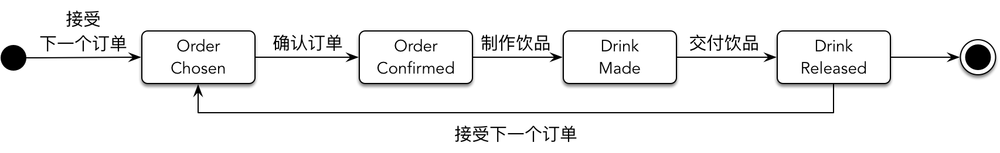
状态机里的每一个状态迁移，都代表着与 Web 资源的一次交互。每一次迁移，都是用户针对资源的操作触发的。因此，利用状态图中的状态与触发状态迁移的操作可以帮助我们驱动出资源的定义。例如下订单操作与 OrderPlaced 状态可以驱动出 Orders 资源，付款操作与 Paid 状态可以驱动出 Payments 资源，制作饮品操作和 DrinkMade 状态可以驱动出 Drinks 资源：
仅仅识别出资源并不足以建立服务资源模型，因为建立服务资源模型的最终目的是设计 REST 服务。一个 REST 服务实际上是对客户端与资源之间交互协作的抽象，它利用了关注点分离原则分离了资源、访问资源的动作及表示资源的形式：
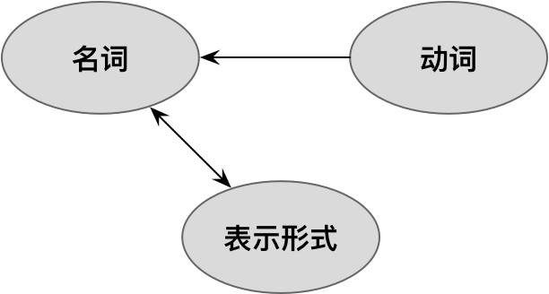
资源作为名词，是“到一组实体的概念上的映射”，动词是在资源上执行的动作，而表示形式则用来“捕获资源的当前或预期的状态，并在组件之间传递这种表示形式”。乍一看，动词正好体现了作用在资源之上的访问行为，那就代表了业务概念的一种业务行为；但是，REST 架构风格为了保证客户端与服务器端之间的松散耦合，对这样的访问动词提炼了统一的接口。这正是 Roy Fielding 推导 REST 风格时的一种架构约束。在那篇著名的论文《架构风格与基于网络的软件架构设计》中，他写道：
使 REST 架构风格区别于其他基于网络的架构风格的核心特征是，它强调组件之间要有一个统一的接口。通过在组件接口上应用通用性的软件工程原则，整体的系统架构得到了简化，交互的可见性也得到了改善。实现与它们所提供的服务是解耦的，这促进了独立的可进化性。然而，付出的代价是，统一接口降低了效率，因为信息都使用标准化的形式来转移，而不能使用特定于应用的需求的形式。
为了满足“统一接口”的约束，REST 采用标准的 HTTP 协议语义来描述客户端和服务器端的交互，即 GET、POST、PUT、DELETE、PATCH、HEAD、OPTION、TRACE 八种不同类型的 HTTP 动词。在这些 HTTP 动词中，POST、PUT、DELETE 与 PATCH 对资源的操作都会导致资源状态的迁移；而 GET、HEAD、OPTION 和 TRACE 用于查看资源的当前状态，并不会引起状态迁移。例如，在前面所述的咖啡店案例中，下订单操作采用的是 POST 动词，订单状态从初始状态迁移到 OrderPlaced，修改订单操作采用的是 PUT 动词，它使订单状态从 OrderPlaced 迁移到 OrderUpdated；而查询订单状态、查询饮品等操作采用的是 GET 动词，由于它不会引起状态迁移，因而不曾在状态机中体现。
由于要遵循统一接口的架构约束，使得服务资源模型与服务行为模型之间的最大区别除了服务的建模思想不同之外，还在于对服务行为的认识。服务资源模型认为所有针对资源进行操作的服务行为都是统一的，这就抹去了服务的业务语义。如果要区分不同的服务行为，就需要结合 HTTP 动词、由资源组成的 URI 及请求和响应信息来共同分辨，如此才能将客户端的请求路由到正确的服务行为上。
假设服务 A 与服务 B 的 URI 皆为 https://cafe.org/orders/，但如果服务 A 的 HTTP 动词是 GET，服务 B 的 HTTP 动词是 POST，就能区分出两个不同的服务行为：查询所有订单与创建订单。又假设服务 C 与服务 D 的 URI 皆为 https://cafe.org/orders/12345，且 HTTP 动词皆为 PUT，这时仅靠 URI 和 HTTP 动词就无法分辨服务，需要再结合服务的客户端请求或响应。例如服务 C 是更新订单，它的请求定义是：
{
"additions": "shot",
"cost": 28.00
}
服务 D 是确认订单，它的请求定义是：
{
"status": "Confirmed"
}
客户端请求的定义差异可以说明这是两个完全不同的服务，使得在对请求进行路由时可以正确地完成对资源的操作，但由于请求自身缺乏业务语义，因此并不能直观体现该服务代表的行为到底是什么。因此，这些信息或许足以支持服务的路由，却不足以说明服务 API。
对于一个 REST 服务而言，设计服务的 API 自有其规矩，例如微软定义了《REST API 指南》，就规定了状态码的正确使用、URL 的结构、HTTP 动词的选择规范、请求头（Request Header）的定义、响应头（Response Header）的定义、请求与响应的格式、JSON 标准与服务版本管理等内容。Swagger 也定义了《OpenAPI 规格说明书》，对 API 的各个组成部分给出了设计约束。同时，Swagger 还提供了 SwaggerHub 工具管理 API，下图就是一个 REST 服务 API 的管理页面（来自 Swagger 默认创建的 Demo）：
通过以上文档可以看到 REST 服务为“添加库存项（adds an inventory item）”，HTTP 动词为 POST，URI 为 /inventory，客户端请求的协议则被定义在 components 的schemas中：
schemas:
InventoryItem:
type: object
required:
- id
- name
- manufacturer
- releaseDate
properties:
id:
type: string
format: uuid
example: d290f1ee-6c54-4b01-90e6-d701748f0851
name:
type: string
example: Widget Adapter
releaseDate:
type: string
format: date-time
example: '2016-08-29T09:12:33.001Z'
manufacturer:
$ref: '#/components/schemas/Manufacturer'
Manufacturer:
required:
- name
properties:
name:
type: string
example: ACME Corporation
homePage:
type: string
format: url
example: 'https://www.acme-corp.com'
phone:
type: string
example: 408-867-5309
type: object
这个 Schema 定义了请求消息中各个属性的类型、结构、必备性和格式等，图的右下角还提供了对应请求的一个样例：
{
"id": "d290f1ee-6c54-4b01-90e6-d701748f0851",
"name": "Widget Adapter",
"releaseDate": "2016-08-29T09:12:33.001Z",
"manufacturer": {
"name": "ACME Corporation",
"homePage": "https://www.acme-corp.com",
"phone": "408-867-5309"
}
}
服务端响应的定义规定了三种不同场景返回的状态码，即成功创建时返回 201，请求无效返回 400，库存项已经存在返回 409：
responses:
'201':
description: item created
'400':
description: 'invalid input, object invalid'
'409':
description: an existing item already exists
我通常将组成 REST 服务 API 的请求和响应都认为是消息对象。请求消息分为命令消息和查询消息。命令消息往往伴随着 POST、PUT、DELETE 与 PATCH 动词，这些操作往往是不安全的，会对资源产生副作用。此外，PUT 与 DELETE 动词是幂等的，即一次或多次执行该操作产生的结果是一致的。查询消息常常使用 GET 动词，对应的操作是安全的，也是幂等的。由于 URI 也可以包含请求参数，有的查询操作并不需要定义额外的请求消息。
如果请求为命令操作，由于它会导致资源状态的迁移，因此在对应的响应消息中还需要定义链接，以指向下一个迁移的应用状态。倘若请求为查询操作，返回的响应消息还将包含查询结果。不管是命令操作，还是查询操作，返回的响应消息都应该包含标准的 HTTP 状态码。状态码（Status Code）的使用必须正确，要符合状态码的语义，例如 200 和 201 都是操作成功，但后者意味着资源的创建成功。
我们也可以利用可视化的方式来表现服务资源模型。Thomas Erl 等人的著作《SOA 与 REST》建议使用圆形代表服务，而用包含了三角形标记的圆形代表 REST 服务资源，如：
可视化的三角形标记表示该服务遵循了 REST 风格的设计约束，模型中包含了服务 API 的主要构成：资源、HTTP 动词与 URI。若需建立直观的服务资源模型，可以考虑采用这样的建模形式。
REST 服务的设计属于 REST 服务规范的一部分，但对于服务模型驱动设计而言，更关注由服务资源开始由外向内的设计驱动力，即将远程服务作为设计的起点，逐步从接口到实现向内层层推进。因此，在服务模型驱动设计过程中，需要明确在接口内部的实现中需要哪些对象进行协作，以支持远程服务提供给客户端的功能。这一设计过程与服务模型的类型无关，无论是服务资源模型还是后面要讲的服务行为模型，设计的驱动力都是完全一样的，都属于服务设计模型的一部分。
045 服务行为模型
如果将服务视为一种行为，就必然需要考虑客户端与服务之间的协作。服务行为的调用者可以认为是服务消费者（Service Consumer），提供服务行为的对象则是服务提供者（Service Provider）。为了服务消费者能够发现服务，还需要提供者发布已经公开的服务，因此需要引入服务注册（Service Registry），从而满足 SOA 的概念模型：
以服务行为来驱动服务的定义，需要从消费者与提供者之间的协作关系来确定服务接口。消费者发起服务请求，提供者履行职责并返回结果，这就构成了所谓的“服务契约（Service Contract）”。契约是义务与权利的一种规范。Bertrand Meyer 认为：
“对于一个大型系统来说，光保证它的各组成部分的质量是不够的。最有价值的是确保在任何两个组成部分的交接处设计明晰的彼此义务和权利规范，即所谓契约。”
在面向外部远程服务进行设计时，契约的设计尤为重要，它直接影响了整个系统的稳定性与性能。
虽然服务资源模型同样构成了服务契约，但当从行为角度来思考服务的定义时，行为导致的动态协作关系需要我们更多地考虑协作双方的权利和义务，这就无意中使得服务行为模型的定义暗合由 Bertrand Meyer 提出的“契约式设计（Design by Contract）”思想。Meyer 认为：
“契约的主要目的是：尽可能准确地规定软件元素彼此通讯时的彼此义务和权利，从而有效组织通信，进而帮助我们构造出更好的软件。”
Meyer 之所以把商业中的契约概念引入到软件设计中，目的是对消费者和提供者两方的协作进行约束。作为请求方的消费者，需要定义发起请求的必要条件，这就是服务行为的输入参数，在契约式设计中被称之为前置条件（pre-condition）。作为响应方的提供者，需要阐明服务必须对消费者做出保证的条件，在契约式设计中被称之为后置条件（post-condition）。
前置条件和后置条件是对称的，因此前置条件是消费者的义务，同时就是提供者的权利；后置条件是提供者的义务，同时就是消费者的权利。
以转账服务为例，从发起请求的角度来看，服务消费者为义务方，服务提供者为权利方。契约的前置条件为源账户、目标账户和转账金额。当服务消费者发起转账请求时，它的义务是提供前置条件包含的信息。如果消费者未提供这三个信息，又或者提供的信息是非法的，例如值为负数的转账金额，服务提供者就有权利拒绝请求。从响应请求的角度来看，权利与义务发生了颠倒，服务消费者成了权利方，服务提供者则为义务方。
一旦服务提供者响应了转账请求，其义务就是返回转账操作是否成功的结果，同时，这也是消费者应该享有的权利。如果消费者不知道转账结果，就会为这笔交易感到惴惴不安，甚而会因为缺乏足够的返回信息而发起额外的服务，例如再次发起转账请求，又或者要求查询交易历史记录。这就会导致消费者和提供者之间的契约关系遭到破坏。因此，遵循契约式设计的转账服务接口可以定义为：
public interface TransferService {
TransferResult transfer(SourceAccount from, DestinationAccount to, Money amount);
}
在这个服务 API 定义中，利用 SourceAccount 与 DestinationAccount 来区分源账户和目标账户；通过 Money 类型来避免传递值为负数的转账金额，同时 Money 还封装了货币币种，保证了转账交易结果的准确性；TransferResult 封装了转账的结果，它与 boolean 类型的返回结果不同之处在于，它不仅可以标示结果为成功还是失败，还可以包含转账结果的提示消息。
契约式设计会谨慎地规定双方各自拥有的权利和义务。为了让服务能够更好地“招徕”顾客，会更多地考虑服务消费者，毕竟“顾客是上帝”嘛，需要在权利上适当向消费者倾斜，努力让消费者更加舒适地调用服务。此时，应遵循“最小知识法则”，让消费者对提供者尽可能少地了解，从而消除掉用户一切不需要知道的复杂度。袁英杰在《该怎样设计 API?》一文中阐述了 API 定义哲学，即“当我们给用户提供 API 时，不应该由技术实现的难易程度来决定，而是站在用户的角度，消除掉一切不必要的复杂度，让用户可以最快速、最直接地达到他的目的。”从契约的角度讲，就是要将服务消费者承担的义务降到最少，让服务消费者只需要描述它真正需要描述的信息。
仍然以转账服务为例。服务消费者提供源账户、目标账户与转账金额是合理的，因为这些信息只有服务消费者才知道。如果我们定义的转账服务行为还要求服务消费者提供转账时间，就会造成过分的无理要求。且不说转账时间的准确性，倘若该信息同时被服务消费者与服务提供者拥有，基于“最小知识法则”，就应该由服务提供者来承担。如果一个服务提供者总是过分地对服务消费者提出更多要求，就会加重消费者额外的负担，让消费者变得不愿意“消费”该服务。
当服务行为设计的驱动者转向服务消费者时，设计思路就可以按照“意图导向编程（Programming by Intention）”的设计轨迹。Alan Shalloway 在《敏捷技能修炼》一书中阐释了何谓意图导向编程，即：
“先假设当前这个对象中，已经有了一个理想方法，它可以准确无误地完成你想做的事情，而不是直接盯着每一点要求来编写代码。先问问自己：‘假如这个理想的方法已经存在，它应该具有什么样的输入参数，返回什么值？还有，对我来说，什么样的名字最符合它的意义？’”
在定义服务行为模型时，也可以尝试采用这种方式进行思考：
- 假如服务行为已经存在，它的前置条件与后置条件应该是什么？
- 服务消费者应该承担的最小义务包括哪些？
- 而它又应该享有什么样的权利？
- 该用什么样的名字才能表达服务行为的价值？
在进行这样的意图导向思考时，应结合具体的业务场景。业务场景不同，需要定义的服务契约也不相同。例如都是投保行为，如果是企业购买团体保险，服务契约的前置条件需要包含保额、投保人、被保人、等级保益、受益人和销售渠道等，但如果是货物运输的运输保险，服务契约的前置条件则包括保额、货物名称、运输路线、运输工具和开航日期等。服务契约的后置条件虽然都是创建一个投保单，但是投保单的内容却存在非常大的差异。
在识别业务场景时，需要保证业务场景的合理粒度。划分场景粒度时可以参考如下两个特征：
- 为消费者提供了业务价值：服务对消费者有价值，就是能解决消费者的问题，达成消费者的目标，例如下订单对于买家就是有价值的，而验证订单有效性对于买家就没有价值，应作为下订单内部的子功能。
- 具有完整时序的线上操作过程，不能中断：当消费者发起对服务的请求时，执行过程具有明显的时序性，如果中间存在时序上的中断，就应该划分为两个不同的场景。例如投保服务，在录入投保信息后，会发起一个工作流，由核保人对录入的投保信息进行审核。由于核保人是一个人工处理的过程，就会导致录入投保信息到审核之间存在一个明显的时序中断。这时就应该分为两个不同的场景，对应两个不同的服务——投保服务与核保服务。
在确定服务契约时，还需要考虑作为前置条件和后置条件的输入参数与返回值应该定义成什么样的类型？我们需要考虑两方面的因素：
- 参数与返回值的序列化：通常需要定义 POJO 对象，通过 getter 和 setter 来表示属性。正因为此，一般不建议将服务参数与返回值定义为接口，因为在网络通信的背景下，对数据模型的抽象并无意义。
- 是否需要解除客户端对服务接口定义类型的依赖：RPC 方式不同于 REST 服务，服务消费者在调用远程服务时，需要在客户端获得远程服务的一个引用（相当于远程代理）；如果服务参数与返回值为自定义类型，就需要为客户端提供定义了这些类型的 JAR 包。一种方式是将服务契约的定义与实现分开，使得服务契约的 JAR 包可以单独部署在客户端。另一种方式则是采用泛化调用，即直接使用 Map 对象而非 POJO 对象来装配对象；但是，采用泛化调用会牺牲自定义类型的封装性，无法表达业务含义。
与服务资源模型一样，在确定服务行为时，需要先确定该行为的类别究竟是命令（Command）还是查询（Query），并遵循 Meyer 提出的命令查询分离（Command-Query Separation，CQS）原则。命令操作和查询操作具有迥然不同的特质。命令操作通常会带来副作用，因此它往往意味着状态的修改，可能不符合操作的安全性与幂等性。纯粹的查询操作则不然，因为它天然就是安全和幂等的。一旦将命令与查询分离，就意味着服务行为会按照各自的契约行事，只要明确了契约的前置条件，在调用时就可以推测程序的状态。如果二者合二为一，就无法分辨状态的变更究竟是因为调用端调用还是服务内部自身引起，从而带来难以预知的结果。
远程服务的行为更需要遵循命令查询分离原则。因为远程服务采用的网络通信是不稳定的，这就增加了对结果预判的复杂性。服务行为的失败或错误并不一定意味着服务行为执行失败，有可能是返回响应消息时的通信故障。由于调用者不知道服务失败的具体原因，为了保证服务行为执行成功，就需要发起对服务的重试（Retry）。为避免重试带来不可预知的后果，通常要求服务行为是幂等的。倘若遵循命令查询分离原则来设计服务行为，就只需要针对命令操作考虑幂等设计即可。
还是以转账服务为例。执行转账服务会扣除源账户的余额，并在目标账户中增加相同的金额，同时还会生成一笔新的交易记录。显然，转账服务属于命令操作，它会创建交易记录，并修改账户的余额值。当服务消费者发起转账服务请求时，可能因为网络通信故障导致转账失败。如果不考虑业务规则的约束导致的失败，则失败可能因为：
- 请求消息发送到服务端时发生通信故障，导致服务端无法收到服务请求。此时的转账交易不成功。
- 请求消息成功发送到服务端并正确地完成了转账交易，但在服务端返回应答消息时出现了传输失败。此时的转账交易成功，但消费者会认为转账失败，会再次发起转账请求。
为了避免第二种场景的重复转账，需要将转账服务设计为幂等，方法是利用唯一标识的业务 ID 对请求进行判断。修改前面定义的转账服务接口：
public interface TransferService {
TransferResult transfer(Source sourceAccount, Destination destAccount, Money amount, String transactionId);
}
transactionId 作为交易 ID 可以唯一标识每一次发起的转账交易。当服务提供者接收到转账请求时，首先通过 transactionId 到交易明细表中查询该 ID 是否已经存在，若存在，则认为该交易已经执行，就可以忽略本次请求，实现服务的幂等性。显然，服务的幂等性在一定程度上影响了服务 API 的设计。
在定义服务的 API 时，还应该考虑该服务行为究竟是同步操作还是异步操作。所幸，多数框架都能够做到无需修改 API 的定义即可透明地支持同步与异步操作。例如，Dubbo 框架就允许我们在服务消费者的配置中，将 async 属性设置为 true，自动实现消费者对服务发起的异步调用，接口并不需要做任何调整。比如，我们定义了查询最近餐厅的服务提供者：
public interface RestaurantService {
Restaurant requireNearestRestaurant(Location location);
}
该服务的实现为：
public class SphericalRestaurentService implements RestaurantService {
private static long RADIUS = 3000;
@Override
public Restaurant requireNeareastRestaurant(Location location) {
List<Restaurant> restaurants = requireAllRestaurants(location, RADIUS);
Collections.sort(restaurants, new LocationComparator());
return restaurants.get(0);
}
private double distance(Location start, Location end) {
double radiansOfStartLongitude = radians(start.getLongitude());
double radiansOfStartDimension = radians(start.getDimension());
double radiansOfEndLongitude = radians(end.getLongitude());
double raidansOfEndDimension = radians(end.getDimension());
return Math.acos(
Math.sin(radiansOfStartLongitude) * Math.sin(radiansOfEndLongitude) +
Math.cos(radiansOfStartLongitude) * Math.cos(radiansOfEndLongitude) * Math.cos(raidansOfEndDimension - radiansOfStartDimension)
);
}
}
很显然，该方法的实现为同步操作，但在服务消费者的配置文件中，却可以将其配置为异步操作：
<beans xmlns:xsi="http://www.w3.org/2001/XMLSchema-instance"
xmlns:dubbo="http://dubbo.apache.org/schema/dubbo"
xmlns="http://www.springframework.org/schema/beans"
xsi:schemaLocation="http://www.springframework.org/schema/beans http://www.springframework.org/schema/beans/spring-beans.xsd
http://dubbo.apache.org/schema/dubbo http://dubbo.apache.org/schema/dubbo/dubbo.xsd">
<dubbo:application name="smart-restaurants"/>
<dubbo:registry group="dddpractice" address="zookeeper://127.0.0.1:2181"/>
<dubbo:reference id="restaurantService" interface="xyz.zhangyi.dddpractice.smartrestaurants.api.RestaurantService">
<dubbo:method name="requireNeareastRestaurant" async="true" />
</dubbo:reference>
</beans>
一旦配置为异步操作时，服务消费者就可以通过 RpcContext 获得 Future<Restaurant>：
RestaurantService service = (RestaurantService)context.getBean("restaurantService");
Future<Restaurant> rFuture = RpcContext.getContext().getFuture();
Restaurant restaurant = rFuture.get();
服务资源模型与服务行为模型的区分在于建模的驱动力。服务资源模型是名词驱动的，首先得到的是资源；服务行为模型是动词驱动的，首先得到的是服务行为。仍然采用 Thomas Erl 建议的服务契约模型对 Restaurant 服务进行建模，二者在图示上的区别如下所示：
显然，服务资源模型提供的服务行为无法做到服务行为模型那样通过方法名直接表达“获得最近餐馆”的业务语义，但它却通过 URI 保证了接口的统一性，满足了服务版本的可扩展性。
服务契约的定义与设计还需要遵循远程服务的设计原则，例如考虑服务的版本、兼容性、序列化、异常等。同时，我们也可以结合 SOA 与微服务的服务设计原则来指导服务设计，例如保证服务契约的标准化，满足服务松耦合原则、抽象原则、可重用原则、自治原则等。这些内容实际上属于服务设计的范畴，在领域驱动设计中，可以结合限界上下文和上下文映射在战略设计阶段开展，这里就不再赘述。
046 服务设计模型
无论是服务资源模型还是服务行为模型，都可以认为是服务契约。服务契约相当于是面向外部调用者的一个门面（Facade），基于分层架构的单一职责原则与关注点分离原则，我们应该尽量保证服务契约的职责单一，即接收调用者发送的请求，并在处理完业务逻辑之后返回响应消息。远程服务中真正的业务逻辑则应该委派给领域层。因此，一旦确定了服务契约，就应该从实现服务的角度向内推进。这种推进的过程可以认为是服务模型驱动设计的设计活动。
我们可以将 ICONIX 方法引入到服务模型驱动设计过程中。ICONIX 裁取了用例驱动设计与 UML 的核心子集，力求以最少步骤实现从需求、分析、设计到最后的代码实现。它通过 GUI 原型与用例分析获取需求，然后通过绘制健壮性图进行健壮性分析。健壮性图由边界对象（Boundary Objects）、控制对象（Control Objects）和实体对象（Entity Objects）构成，通过这种可视化图例与用例文本相对应来对需求进行健康检查。这个过程是领域分析和建模的过程，通过 ICONIX 健壮性分析可以帮助我们发现参与业务协作的对象。一旦识别了对象，就可以通过时序图表现对象之间的协作关系，从而确定职责的分配，定义对象的行为。该过程是一个动态过程。通过这个动态分析的过程又可以帮助我们建立静态的领域类模型，最终编写单元测试用例和实现代码。整个过程如下图所示：
图片来源：red-gate
ICONIX 是一种领域建模的方法，其中健壮性分析是连接需求用例与领域模型的重要工具，并由此获得健壮性图作为初步的分析模型。在服务模型驱动设计中，健壮性图定义的边界对象、控制对象与实体对象恰好可以对应为远程服务、应用服务与领域模型对象，这三种类型的对象从外向内参与了用例代表的业务场景。因而，我们可以参考 ICONIX 引入这三种对象类型的图示：
健壮性分析规定了边界对象、控制对象与实体对象之间协作的约束关系，这种约束关系在服务模型中同样存在。例如，以下对象类型之间的协作关系是允许的：
显然，服务消费者只需要了解提供服务能力的远程服务对象，即前面提及的服务资源或服务提供者。远程服务接收到服务消费者的请求后，在完成通信、路由和消息验证与转换等职责后，可以将请求委派给应用服务。同理，应用服务在接收到远程服务请求后，可以结合业务场景调用领域对象对业务逻辑进行编制，并完成一些与业务无直接关系的通用工作，如事务、认证授权、异常处理等。如果一个应用服务提供的功能无法满足远程服务的业务场景需求，可以引入应用服务之间的协作。
以下对象类型之间的协作关系是不允许的：
原则上，我们不允许服务消费者直接与应用服务和领域对象协作，事实上，应用服务与领域对象自身也不提供远程通信和消息序列化的能力。远程服务之间也不支持直接协作，这样既可以隔离因为上游远程服务变化带来的影响，又可以避免在远程服务中混入太多的实现逻辑。同理，也不允许远程服务与领域对象直接协作，原则上，需要将领域对象转换为服务对象。
在确定了这三种对象类型之间协作的约束后，我们就可以利用 ICONIX 健壮性分析来帮助我们识别具体参与业务场景的对象，并确定这些对象之间的关系。健壮性分析还可以帮助我们对业务场景进行一致性与完整性检查，驱动设计者发现之前未曾发现的对象，逐渐完善获得的模型。健壮性分析属于分析建模的方法，但在服务模型驱动设计过程中，由于我们已经建立了服务分析模型，它事实上做的是服务内部的设计。
让我们以培训管理系统的订阅课程用例来说明如何进行健壮性分析。如下是订阅课程的用例描述：
用例：订阅课程
* 参与者：学生（注册会员）
* 前置条件
* 订阅者已经登录
* 事件流
* 基本流
* 选定需要订阅的课程
* 选定具体的课程排期
* 确认该排期的课程可以订阅
* 确认该排期的课程未被同一学生订阅
* 订阅课程
* 成功订阅课程后，删除该学生期望列表中的课程
* 发送订阅成功消息给管理员与订阅学生
* 备选流
* 当该排期的课程无法订阅时，给出提示信息
* 当该排期的课程已被该学生订阅时，给出提示信息
* 若订阅失败，给出失败原因
* 后置条件：
* 课程被成功订阅，并生成学生的培训记录
* 期望列表中若存在该课程，则该课程被成功移除
* 管理员与订阅学生收到订阅成功的通知
我们需要从服务消费者以及作为边界对象的远程服务 CourseProvider（如果采用 REST 风格，则为 CourseResource）开始进行健壮性分析。这里的服务消费者是前端 UI 的课程订阅页面，它会向 CourseProvider 服务发送请求。根据健壮性分析的约束规则，远程服务对象只能与应用服务协作。由于课程订阅的逻辑与课程 Course 有关，因此需要定义 CourseAppService 应用服务与其协作。应用服务承担了多个领域对象之间的协作，在进行健壮性分析时，可以通过识别用例描述中的名词帮助寻找到对应的领域对象，包括课程 Course、排期 Calendar、期望列表 WishList，以及订阅成功后的培训记录 Training。它们之间的关系如健壮图所示：
健壮性图只是粗略地表达了领域对象之间的关系。通过以上模型，其实我们也看到了该图在表达能力上的不足。例如，图中的 SubscriptionValidator 与 TrainingRepository 皆被表示为领域对象，却没有清晰地说明二者之间的差别，以及它们是如何协作的。这时就可以引入时序图来弥补这些信息的缺失，通过行为来展现用例中的事件流，确认对象之间的协作关系：
说明： 本时序图通过 ZenUML 工具绘制，该工具可以通过编写轻巧简单的脚本，自动生成时序图。例如以上时序图的脚本就非常简单：
CourseProvider.subscribe(subscription) {
CourseAppService.subscribe(subscription) {
SubscribeCourseService.execute(course, calendar, stuId) {
SubscriptionValidaton.validate(course, calendar, stuId) {
TrainingRepository.exist(training)
}
TrainingRepository.save(training)
WishListAppService.remove(course, stuId)
NotificationAppService.notify(course, stuId)
}
}
}
这种绘图方式非常适合开发人员，编写脚本的过程其实也是驱动开发人员思考设计的过程。脚本的形式更容易修改，且这种修改是所见即所得的。若无特别提示，本书的时序图皆使用 ZenUML 绘制。
如果我们了解领域驱动设计的基础知识，就可以发现：从确定了服务分析模型之后，服务模型驱动设计以识别出来的服务契约对象为设计的起点，开始了由外向内的模型设计过程。在引入 ICONIX 进行健壮性分析及运用时序图表达对象之间的协作关系时，除了设计的驱动力有所不同之外，设计的方法、原则与目标都是在针对领域进行建模。换言之，在设计阶段，服务模型驱动设计与领域模型驱动设计就开始走向了过程与方法的合并；或者说，服务模型驱动设计成为了领域模型驱动设计的一个有力补充，它提供了从外部观察远程服务的视角。这是一种契约式设计与意图导向编程融合的设计思想，而 ICONIX 的引入则让我们有章可循，整个模型驱动设计的轨迹变得更加的清晰，每一个设计步骤都有着明确的方法和交付目标。
综合来看，无论是面向服务行为，还是面向服务资源，服务模型驱动设计的过程都是由外向内对业务知识的逐步细化与分解。设计的起点为远程服务，但随着设计的层层推进，最终还是会进入到领域层，建立领域模型来支撑服务功能。假设调用者为 Web，设计的方向就是从扮演基础设施北向网关（[参考《领域驱动设计实践（战略篇）》第 23 课]）功能的控制器作为设计的起点，通过识别控制器的接口，确定它需要操作和协作的领域对象。如果遵循领域驱动设计的分层架构，通过控制器可以驱动出应用服务的设计，进而进入到领域层的领域模型。这个过程其实与 Web 客户端对远程服务的调用时序不谋而合。
进入服务设计活动后，ICONIX 方法开始发挥强大威力，指导着由边界对象向内驱动的领域模型设计。ICONIX 的健壮性分析可以帮助我们得到初步的领域分析模型，再通过时序图建立分析模型中各种对象之间的协作关系，然后将其转换为类图表达的设计模型。由于要考虑领域逻辑，此时的服务设计模型其实属于领域模型的范畴。最后，通过编程语言结合时序图和类图进行编码实现，并编写单元测试用例保证代码的正确性与可读性。实现代码与单元测试既包含服务实现模型的一部分，即服务契约的实现，又包含领域实现模型。
服务实现模型
正如前所述，服务模型驱动设计的实现模型其主体是领域实现模型。这是本课程将要花费大量篇幅讲解的内容，这里就不再赘述。但是，服务实现模型还有一部分是服务契约的实现，包括服务资源模型与服务行为模型的实现。
在介绍服务分析模型时，我已经讲解了服务契约定义的原则与规范，例如服务资源契约需要遵循 REST 风格的 API 设计规范，服务行为契约则需要从契约精神中的权利与义务来思考服务的接口定义。在实现这些服务契约时，我们需要遵循 Postel 原则（Postel's Law），即“对接收的内容要宽容，对发送的内容要严格”。言简意赅地讲，就是“严于律己宽以待人”。这一原则最初是针对 TCP 协议设计的，HTML 5 的设计也遵循这一规范。
什么是宽以待人呢？就是服务契约的前置条件不能规定太死板，要允许接收与标准不一致的输入。假设 REST 服务资源的响应消息定义为：
{
"id": "d290f1ee-6c54-4b01-90e6-d701748f0851",
"name": "Widget Adapter",
"releaseDate": "2016-08-29T09:12:33.001Z",
"manufacturer": {
"name": "ACME Corporation",
"homePage": "https://www.acme-corp.com",
"phone": "408-867-5309"
}
}
倘若客户端发送的请求消息缺少了 manufacturer\homePage 的值，多余增加了一个 manufacturer\address 值，又或者 manufacturer 的属性值并未按照指定的顺序发送，服务端在接收这样的响应消息时，同样应该正确地执行。当然，这种放松并非完全不做任何约束，如果协议规定 id、name、releaseDate 及 manufacturer\name 是必须提供的值，服务实现时就需要验证这些值是否存在，如果不存在，应该返回 404 状态码，表示一个非法请求。
相反，服务契约的实现在处理完服务功能后，返回的响应消息却应该严格按照标准定义。例如服务资源契约就要求响应消息必须提供正确的 HTTP 状态码，如果涉及到状态迁移，也必须给出指向下一个资源的链接。如果是 JSON 格式的响应消息，也必须遵守当前契约版本规定的标准，提供正确的属性值内容。
服务模型驱动设计的过程
服务分析模型的起点不同，设计服务契约的驱动力也将不同，并带来不同的服务契约规范。以资源为中心的服务契约与领域模型之间存在一定的对应关系，因为它们都是表达领域概念的名词描述；以行为为中心的服务契约更倾向于权利与义务的分配，从而形成消费者与服务之间的良好协作，但最终还是要落实到远程服务的主体之上，该主体同样表达了领域概念。因此，服务模型驱动设计获得的服务分析模型可以作为领域驱动设计的重要输入。
在进入服务模型驱动设计的设计活动时，ICONIX 方法扮演了非常重要的作用。通过建立以远程服务、应用服务与领域对象之间的健壮性图，顺理成章地推导出这些角色对象参与协作的时序图，从而奠定了设计模型中重要的领域概念与领域行为。当然，我们也可以直接沿用领域驱动设计的理念与模式，这时就自然而然地从服务模型驱动设计转换到领域模型驱动设计。至于服务实现模型中对服务契约的定义，实际上弥补了领域驱动设计中关于如何实现开放主机服务（OHS）的这部分知识。因此，一个典型的服务模型驱动设计过程如下图所示：
服务模型驱动设计还可以与领域驱动设计的战略设计阶段结合起来，例如限界上下文提供的开放主机服务实则就是一个开放的微服务。既然我们已经确定了限界上下文的边界，自然应该识别出属于该边界范围内的所有微服务，并确定微服务的 APIs 与协作方式，进而推进到领域层中，确定当前限界上下文中领域对象的协作时序，以及可能参与协作的第三方服务。
Chris Richardson 在《微服务架构设计模式》一书中给出的服务设计步骤与我介绍的服务模型驱动设计有相似之处。Chris Richardson 将微服务的设计分为三个步骤：
- 识别系统操作（System Operations）：从业务场景角度识别客户端的调用需求，并确定系统与客户端协作的方式，例如确定是命令（Command）还是查询（Query）。
- 识别服务：通过系统操作明确提供业务能力的职责，识别出应该履行职责的服务。
- 定义服务的 APIs 和协作方式：确定对外公开的接口，同时确定内部各个服务之间是如何协作的。
Chris Richardson 以一个虚拟 FTGO 系统的订单场景为例展现了整个设计过程：
在识别服务的过程中，Chris 建议使用名词动词法对业务场景进行分析，将用户故事中的名词映射为领域对象，建立高层领域模型，然后从调用者角度驱动出服务能够处理的请求获得系统操作，再根据系统操作的两种类型（命令与查询）确定操作的职责。Chris 认为，系统操作是一种抽象，它与具体的分布式通信方式无关。在识别微服务时，应该忘记服务的实现机制，仅仅从交互的业务场景判断参与者、协作方式、API 及其需要履行的职责。这种方式其实就是建立在服务行为模型之上的服务模型驱动设计过程。
注：ZenUML 项目的创始人是肖鹏。他曾经担任 ThoughtWorks 中国区持续交付 Practice Lead，也是我在 ThoughtWorks 任职时的 Buddy 与 Sponsor，目前在墨尔本一家咨询公司任架构师，业余时间负责 ZenUML 的开发。ZenUML 除了提供 Web 版本之外，还提供了 Chrome、Jira 以及 Confulence 的插件。我在项目实践中经常使用 ZenUML 来驱动我的领域设计。脚本与可视化的时序图结合，可以帮助我们更好地思考执行时序与对象之间的协作方式。
047 领域模型驱动设计
领域模型驱动设计自然是以提炼和转换业务需求中的领域知识为设计的起点。在提炼领域知识时，没有数据库的概念，亦没有服务的概念，一切围绕着业务需求而来。尤其是领域建模的分析阶段，应该只关注问题域，模型表达的是业务领域的概念，而非实现的概念。领域分析模型应由领域专家作为主导，甚至由领域专家创建，完全独立于软件开发技术。Martin Fowler 在《分析模式》中就提到：“这种独立性可以使技术不会妨碍对问题的理解，并使得最终的模型能够适用于所有类型的软件技术。”
在分析之初，不考虑任何技术实现手段，一切围绕着领域知识进行建模，是领域模型驱动设计的关键。
领域分析模型与抽象
领域分析模型必须遵循统一语言，由领域概念及它们之间的关系构成。从与现实世界的映射来看，领域概念可以分为显式和隐式两种类型。显式概念是在现实世界中被明确无误地表达出来的，例如电商领域中的商品、顾客、购物车、订单等概念。隐式概念往往隐藏在领域逻辑中，不被明确地表达，但这并不意味着不重要，例如电商领域中促销模型的促销产品（Promotion Product），就是通过对促销领域的深度分析挖掘出来的领域概念。隐式概念的获得往往意味着对领域理解的一次突破。
领域分析模型中的每个领域概念其实都是对现实世界中业务概念的一次抽象。抽象具有不同的层次，这取决于你对业务概念粒度和特征的理解。不同的抽象层次传递了不同的知识。抽象层次越高，需要关注的概念就越少，从而让分析模型变得更简单。然而，高度的抽象亦可能遮掩住一些存在差异的业务事实，使得模型丢失一些重要而具体的领域知识。例如，我在《领域驱动战略设计实践》中建立的项目管理领域模型，就是通过对瀑布、RUP、XP 和 Scrum 这四种不同的软件开发过程进行抽象获得的：
模型中的一个抽象概念可以代表多个领域概念，从而使得整个领域模型化繁为简，并保持了更好的可扩展性。上述模型中的 Iteration 既代表了 XP 的一次迭代，也代表了 Scrum 中的一次冲刺（Sprint）。倘若未来还有别的软件开发过程提供了其他代表迭代的概念，则 Iteration 的抽象概念仍然足以涵盖新的知识，保证了模型的可扩展。同时，这个抽象概念并不能直观地体现 Scrum 冲刺的含义与特征，丢失了之所以命名为冲刺的关键语义。因此，在针对领域进行分析建模时，需要把握好抽象的分寸，既要传递准确的领域知识，又不至于让整个分析模型变得过于庞大，以至于阻碍领域专家和开发团队之间的交流。
在对领域概念进行抽象时，需要结合具体的业务场景进行分析。不同的业务场景会带来观察领域概念视角的差别，这也是领域驱动设计之所以要引入限界上下文的原因之一。
例如，在银行系统中，管理客户的业务场景包含了个人（Individual）和组织（Organization）两个抽象概念。为了降低管理客户的复杂度，可以在这两个概念之上建立更高的一层抽象概念：客户（Customer）。当客户购买了一种金融产品（Product）后，为了更好地管理客户，需要建立客户与产品之间的关系。
此时，引入的客户抽象概念就可以抹去个人客户与组织客户之间的差异，使得我们无需分别维护个人、组织与产品三者之间的关系。同样是客户购买了金融产品，在交易业务场景中，由于个人业务与对公业务的差异较大，具有完全不同的业务流程和业务规则，如果仍然使用客户抽象来建立分析模型，就会因为过度抽象带来不必要的间接层，为设计模型带来错误的指导，例如创建了不合理的继承体系，并在实现的代码中引入频繁的强制类型转换。这里所谓的“场景”，可以理解为限界上下文，它维护了领域模型的边界：
既然建立领域分析模型与抽象息息相关，那么明确抽象的意义和它要求的能力，可以指导设计师如何进行分析建模。抽象是我们观察客观世界的一种方法，从大量的具体事物中抽取和概括它们共同的方面、本质属性与关系。在运用抽象思维观察客观世界时，可以通过分类的方式辨别客观事物。这种方式需要抓住一类事物迥异于其他事物的核心特征，并将其定义为该事物的内在本质，从而形成一组概念的类别集合。
例如，生物学家将有生命的个体定义为“生物”，这类事物的内在本质是生物能够新陈代谢及遗传。整个世界由生物和非生物构成，这就是生物学家通过抽象分析获得的“世界观”。生物学家还为生物定义了多个抽象层次，依次为域、界、门、纲、目、科、属和种。显然，抽象的层次越低，属于同一类别的生物共同特征就越多。这种分类法需要对客观世界具有由现象到本质的归纳能力。
观察客观世界的另一种抽象方法是提取共同特征。这种抽象方法不需要去探究内在的原理与本质，仅仅通过观察事物表面的特征进行抽象。通过寻找一些共同的特征，我们甚至可以将一些风马牛不相及的事物抽象到同一个概念下。例如，麻雀、飞机、蝙蝠和竹蜻蜓完全属于不同的类别，但它们却具有一个完全相同的特征——可以飞行。这种共同特征提取法强调从可变性中找到共性的概况能力。
考察一个建模分析人员的水平，其实就取决于归纳与概括这两种抽象能力。在分析建模过程中，我们运用抽象方式的不同，得到的分析模型也将有所不同。例如，分析新闻领域，我们寻找到文章（Article）、视频（Vedio）和音频（Audio）等相对具体的概念。如果从新闻页面的角度观察这些概念，可以发现这些概念都具备共同特征：为页面提供内容（Content）。由此得到的抽象模型为：
如果要对这些概念进行分类，就能辨别出文章与视频、音频并不属于同一个分类维度。我们可以将新闻网站发布的内容皆认为是文章，文章的内容却可以由文本、音频与视频混合组成。这时，文本、音频与视频其实都属于媒体（Media）分类：
在抽象模型时，还要注意控制抽象的范畴，否则会导致创建太多的抽象，形成错误的继承体系。当我们创建父类与子类的继承体系时，可能会过多考虑子类对父类的重用，却忽略了继承其实是一种“差异化设计（Design by Difference）”的体现。在对领域概念进行抽象时，我们应该仅针对存在差异的部分进行所谓的“泛化”，并由不同的子类去实现各自差异的部分。不要扩大局部差异，导致对整体概念进行错误的抽象。
例如，软件公司的员工分为需求分析人员、架构师、开发人员和测试人员。在建模时，我们要注意这里的员工分类其实扩大了差异。虽然需求分析人员、架构师、开发人员和测试人员都**是（is）**员工，但他（她）们之间的差异并非员工的差异，而是角色的差异：
这种抽象机制其实体现了继承和组合的区别。它提示我们在分析建模时不要因为概念关系上存在“是（is）”的关系时，就主观地做出抽象的判断，而需要深挖这些概念之间的不变性与可变性，然后从变化的部分寻找到抽象的特征。这种抽象甚至不仅仅包括对概念的抽象，也可以是对行为的抽象。对行为的抽象往往可以提高领域模型的设计质量，因此我将这一抽象放到了领域设计建模过程中。
领域设计模型与设计要素
从领域分析模型到领域设计模型，是对代表领域知识的模型概念的进一步甄别与完善。Eric Evans 在领域驱动设计中提出的设计要素在领域设计模型中扮演了非常重要的角色。这些设计要素既是对模型的约束，也是对设计的约束，可以认为是领域驱动设计中的设计模式。下图是 Eric Evans 描绘的战术设计要素：
领域驱动设计提出的这些设计要素在设计模型中扮演了非常重要的角色。首先，我们可以进一步将分析模型中的领域概念定义为实体（Entity）或值对象（Value Object）。二者的区分有助于管理领域对象的生命周期，通过引入不变的值对象还可以减少并发的成本。确定聚合（Aggregate）的边界，并明确它包含哪些实体与值对象，使得领域模型可以遵守业务规则中的不变量（Invariable）约束和一致性约束。领域事件（Domain Event）的识别，可以帮助我们确认业务流程中那些已经发生的事实（Fact），并围绕着领域事件确定事件的发布者与订阅者，从而让这些概念能够流动起来。通过资源库（Repository）与工厂（Factory）模式的运用，有利于管理领域对象的生命周期，并通过对资源库的抽象保证领域逻辑不受数据库持久化机制的影响。
实体、值对象、领域服务与领域事件是从设计角度对领域设计对象做出的分类，另一种分类方式则从履行职责的角度，探讨了领域对象在业务场景中协作时各自扮演的角色。这一分类来自 Rebecca Wirfs-Brock 的著作《对象设计：角色、职责和协作》。在书中，她总结了对象角色的构造性（Role Stereotypes）：
“在一个应用系统中，各种角色都具有自身的特征，这些特征就是构造型（Stereotypes）。……从高层概念进行思考，忽略具体行为来识别对象的构造型，是非常有必要的。通过简化和特征化描述，我们能够轻易地辨明对象的角色。”
下图列出了主要的角色构造型：
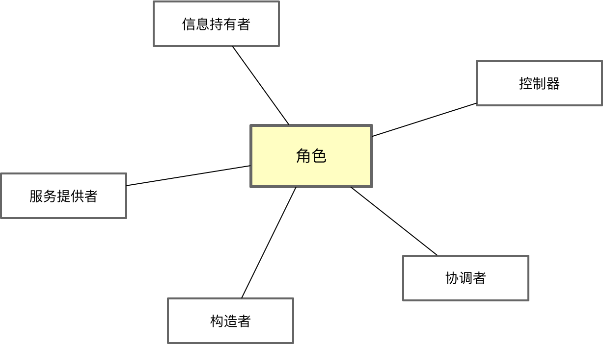
角色构造型可以用来集中描述对象的职责，以下是 Rebecca 对这些构造型职责的简单描述：
- 信息持有者：掌握并提供信息
- 服务提供者：执行工作，通常为其他对象提供服务
- 构造者：维护对象之间的关系，以及与这些关系相关的信息
- 协调者：通过向其他对象委托任务来响应事件
- 控制器：进行决策并指导其他对象的行为
这两种分类并不矛盾，我们完全可以将领域驱动设计的设计要素归纳到角色构造型中。由于角色体现了职责的履行，就可以结合职责驱动设计来理解它们，并指导领域驱动的设计建模。
例如，我们可以将实体与值对象视为“信息持有者”角色。遵循该角色的设定，就可以优先考虑将与信息相关的行为分配给这些信息的持有者。这实际上遵循了 Larman 提出的“信息专家模式”，将数据和行为封装在一起，避免了贫血模型的出现。领域服务扮演了服务提供者的角色，它能为领域对象提供业务支持，实现单个信息持有者无法完成的功能。因此，领域服务往往需要服务提供者与信息持有者以“各司其职”的方式完成对象之间的协作。
若要提供完整的业务价值，则应由扮演协调者角色的应用服务来承担，它对外公开的接口恰好对应一个具有业务价值的主用例（Use Case），对内却仅仅做好各个领域对象之间的协调，而将业务逻辑都委派给各自的领域对象。领域驱动设计要素中的工厂属于构造者角色，负责创建复杂的领域对象，尤其是聚合根实体。一些领域服务还扮演了控制器角色，通过它决策并指导其他对象的行为。在上述角色构造型中，还缺少了改进设计质量的两个构造型，即扮演网关（适配器）角色的资源库或客户端以及面对外部调用者的远程服务。因此，结合领域驱动设计与职责驱动设计，我们创建了一个整合后的角色构造型：
上图不仅表达了各个角色构造型，还给出了它们各自履行的职责，以及可能的协作方式。以报税功能为例，系统需要定期根据用户提交的收入信息生成税务报告文件。首先，需要获得符合条件的税务报告，然后将其转换为 HTML 格式的数据流，最后以 HTML 格式的呈现方式生成 PDF 文件。对外而言，生成税务报告文件是一个完整的服务，客户端的调用者无需了解该服务的实现细节。这一职责可以分别由 TaxReportResource 远程服务与 TaxReportAppService 应用服务承担，前者响应远程客户端的请求，后者提供具有业务价值的行为。根据领域驱动设计对应用服务的定义，TaxReportAppService 应用服务并不真正实现具体的业务逻辑，而是负责将调用请求委派给 TaxReportGenerator 领域服务。
领域服务的内部实现需要多个对象共同协作。首先通过 TaxReportRepository 获得 TaxReport 实体对象，该实体对象作为聚合根是报告信息的持有者，封装了税务报告的数据验证行为和组装行为。HtmlReportProvider 服务负责将报告对象转换为 HTML 格式的数据流，由 PdfReportWriter 服务将该数据流写入 PDF 文件，生成税务报告文件。整个协作时序如下图所示：
在建立领域设计模型时，同样需要重视抽象的重要意义，尤其是对行为的抽象。通过对行为的抽象，可以演化出诸多细粒度的具有纯函数意义的领域服务。例如，假设生成的税务报告不仅仅要求生成 PDF 文件，还允许生成可编辑的 Word 文档。为了满足设计模型的可扩展性，就有必要对写入税务报告的行为做进一步抽象，例如，定义 ReportWriter 接口，以此来隔离与封装变化。这实际上是面向对象设计原则与设计模式的运用。
例如，组装 TaxReport 的行为其实是对 Questionaire 树形数据结构的转换，该树形结构如下所示：
Section ->
SubSection ->
QuestionGroup->
Question->
PrimitiveQuestionField
Section 是树形结构的根节点，PrimitiveQuestionField 是叶节点，其余类型皆为枝节点。每个枝节点（包括根节点）都可以添加下一层的子节点。所有节点都提供了转换功能，叶节点只需要转换自身的内容，而枝节点在转换了自身的内容之后，还会调用所有子节点的转换功能，若子节点也是枝节点，则继续递归调用。
由于这种转换功能的目的是将问卷调查中对应节点的值按照规定格式进行转换，并在最终生成的税务报告中呈现，因此在设计时可以借用控件呈现的隐喻，定义转换功能为 render() 方法。每个枝节点和叶节点都定义了 render() 方法，二者的差别在于枝节点是一个容器，可以添加子节点。这时，就可以运用 GoF 设计模式中的合成模式（Composite Pattern）：
GOF 的《设计模式》认为，合成模式的意图为“将对象合成为树形结构以表示‘部分—整体’的层次结构。合成模式使得用户对单个对象和合成对象的使用具有一致性。”Element 接口保证了枝节点和叶节点 render() 行为的统一，通过这一抽象，使得调用者无需考虑这两种节点的差别，简化了调用。
048 领域实现模型
实现模型与编码质量
领域设计模型体现了类的静态结构与动态协作，领域实现模型则进一步把领域知识与技术实现连接起来，但同时它必须守住二者之间的边界，保证业务与技术彼此隔离。这条边界线应由设计模型明确给出，其中的关键是遵循整洁架构、六边形架构与分层架构，做好基础设施层实现机制的抽象，即我在[《领域驱动设计实践（战略篇）》]中提到的“南向网关”的内容。这正好说明了领域分析模型、领域设计模型与领域实现模型之间的统一关系，前者往往会成为后者的基础。
我认为，测试驱动开发可以很好地满足将领域设计模型转换为领域实现模型的需求。注意，测试驱动开发并不等于是“测试先行”，也不能简单地将其视为一种编程手段。我理解的测试驱动开发（Test Driven Development，TDD）包含两个 TDD 阶段：
- 第一个阶段是任务分解驱动设计（Tasking Driven Design）：通过对用户故事进行任务分解，可以降低需求复杂度。这一过程恰好与职责驱动设计中对职责的分解相对应，实际上都是一种“分而治之”的思想。每个分解的任务或子任务皆以动宾短语的形式表达，这就相当于寻找到了各个需要履行的职责，以及履行职责的时序。因此，设计模型中的时序图可以作为测试驱动开发的重要输入。
- 第二个阶段是测试驱动开发：依照事先拆分好的任务，进一步结合业务场景将任务划分为多个可以验证的测试用例，然后开始编写测试，并按照红—绿—重构的节奏开始编码实现。
分解的任务是有层次的，大致可以划分为业务价值、业务功能与业务实现三个层次。这三个层次还可以进一步递归分解，这取决于业务场景的粒度。在选择测试要驱动的任务时，可以采用自外向内或自内向外这两种不同的实现方向。在建立领域设计模型时，我们往往会采用自外向内的方向，这其实就是前面讲解的服务模型驱动设计的设计方向，符合“意图导向编程”的思想。而在选择测试用例时，则应该反其道而行之，从最小粒度的原子任务开始，这样在一定程度上能减少不必要的 Mock 协作，也能够减少最外层服务因为分支覆盖率的原因带来的测试用例组合爆炸：
测试驱动开发严格遵循 Kent Beck 提出的简单设计原则，内容为：
- 通过所有测试（Passes its tests）
- 尽可能消除重复 (Minimizes duplication)
- 尽可能清晰表达 (Maximizes clarity)
- 更少代码元素 (Has fewer elements)
- 以上四个原则的重要程度依次降低
“通过所有测试”原则意味着我们开发的功能满足客户的需求，这是简单设计的底线原则。该原则同时隐含地告知与客户或领域专家（需求分析师）充分沟通的重要性。
“尽可能消除重复”原则是对代码质量提出的要求，并通过测试驱动开发的重构环节来完成。注意此原则提到的是 Minimizes（尽可能消除），而非 No duplication（无重复），因为追求极致的重用存在设计与编码的代价。
“尽可能清晰表达”原则要求代码要简洁而清晰地传递领域知识，在领域驱动设计的语境下，就是要遵循统一语言，提高代码的可读性，满足业务人员与开发人员的交流目的。针对核心领域，甚至可以考虑引入领域特定语言（Domain Specific Language，DSL）来表现领域逻辑。
在满足这三个原则的基础上，“更少代码元素”原则告诫我们遏制过度设计的贪心，做到设计的恰如其分，即在满足客户需求的基础上，只要代码已经做到了最少重复与清晰表达，就不要再进一步拆分或提取类、方法和变量。
这四个原则是依次递进的，功能正确、减少重复、代码可读是简单设计的根本要求。一旦满足这些要求，就不能创建更多的代码元素去迎合未来可能并不存在的变化，避免过度设计。当简单设计原则与测试驱动开发结合起来之后，测试保证了功能的正确性，重构则保证了代码的质量。由于有大量的测试保护，即使未来发生了变化，也能让开发人员在调整代码结构应对变化时充满信心。测试、实现与重构共同构成了测试驱动开发的核心：
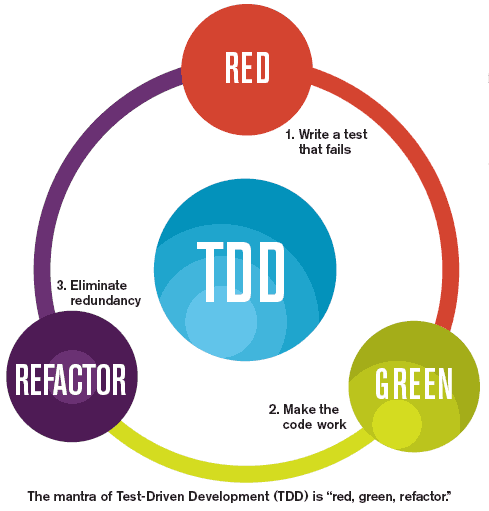
图片来源于网络
重构既可以让领域实现模型满足统一语言的要求，并帮助我们发现隐含概念，又可以让我们的面向对象设计做得更好。玉不琢不成器，代码也需要不断地打磨，这个过程就是对代码坏味道的识别与消除，进而在重构的过程中，逐渐让我们的实现向着面向对象设计的范式靠拢。
例如，通过识别出“依恋情节（Feature Envy）”的坏味道，就可以结合提取方法（Extract Method）与移动方法（Move Method）等重构手法，将行为转移到拥有数据的模型对象上，避免了贫血模型。又例如识别出“过长参数列表（Long Parameter List）”的坏味道，就可以通过引入参数对象（Introduce Parameter Object）重构手法，获得在分析建模与设计建模中未曾发现的隐式领域概念。
在通过单元测试进行测试驱动开发时，我们强调单元测试的快速反馈。对于单元测试的定义，Michael Feathers 认为：运行快、不依赖于任何外部资源的测试就是单元测试。因此，如下所述的测试并非单元测试：
- 和数据库有交互
- 进行了网络间通信
- 调用了文件系统
- 需要你对环境做特定的准备（如编辑配置文件）才能运行的
这些职责恰好属于业务逻辑需要调用的所谓“南向网关”的部分，被放在整洁架构的最外侧一环，如下图所示的 DB、Devices 与 External Interfaces：
图片来源于网络
遵循整洁架构思想与依赖倒置原则（DIP），我们需要对这些职责进行抽象。该抽象正好对应于领域设计模型中的 Gateway 角色，即对“访问外部资源”行为的封装与抽象。在测试驱动开发中，这些职责可以利用类似 Mockito 这样的模拟框架对其进行模拟，使得我们在编写测试时，可以仅关注具体的业务逻辑，而忽略与外部资源的协作。这既符合测试驱动开发的原则，又能满足领域驱动设计将设计重心放在“领域”的要求，自然而然地做到了业务复杂度与技术复杂度的隔离。
运用测试驱动开发编写的测试代码也是组成领域实现模型的关键部分。前面提到，在测试驱动开发阶段，应根据“事先拆分好的任务，进一步结合业务场景将任务划分为多个可以验证的测试用例”，因此，这些测试用例都体现了具体的业务场景。我们的实践是以接近自然语言的形式定义测试方法，例如针对转账业务场景，划分的测试用例对应的测试方法可以定义为：
public class AccountTest {
@Test
public void should_report_InsufficientFundsException_given_not_enough_balance_of_source_account() {}
@Test
public void should_report_InvalidAccountException_given_invalid_destination_account() {}
@Test
public void should_transfer_from_src_account_to_dest_account_given_correct_transfer_amount() {}
}
每个测试方法只能做一件事情，而且每个测试方法都是独立的。
在编写测试方法时，还应遵循 Given-When-Then 模式。这种编写模式描述了测试的准备、期待的行为，以及相关的验收条件：
- Given：为要测试的方法提供准备，包括创建被测试对象，为调用方法准备输入参数实参等。
- When：调用被测试的方法，遵循 SRP 原则，在一个测试方法的 when 部分，应该只有一条语句对被测方法进行调用。
- Then：对调用后的结果进行预期验证。
例如：
@Test
public void should_transfer_from_src_account_to_dest_account_given_correct_transfer_amount() {
// given
Money balanceOfSrc = new Money(100_000L, Currency.RMB);
SourceAccount src = new Account(srcAccountId, balanceOfSrc);
Money balanceOfDes = new Money(0L, Currency.RMB);
DestinationAccount dest = new Account(destAccountId, balanceOfDes);
Money trasferAmount = new Money(10_000L, Currency.RMB);
// when
src.transferMoneyTo(dest, transferAmount);
// then
assertThat(src.getBalance().getFaceValue()).isEqualTo(90_000L);
assertThat(dest.getBalance().getFaceValue()).isEqualTo(10_000L);
}
这样的测试代码体现了领域逻辑，可以认为是领域实现模型的一部分。倘若在实现过程中，还能够结合规格说明（Specification）风格的验收测试，通过接近自然语言的领域特定语言编写测试用例场景，将用户故事、代码实现与测试用例三者结合起来，形成所谓的“活文档（Live Document）”。这样的活文档既能够促进团队与领域专家的沟通，又能真实地体现实现逻辑，是领域建模的重要实践，输出的同样是领域实现模型的一部分。
领域模型驱动设计的过程
整体而言，在领域模型驱动设计的语境下，领域分析模型从业务系统中抽象出核心的领域概念，与领域专家一起获得领域见解，并提炼出有价值的领域知识，从而建立一个有利于与领域专家沟通的抽象模型。领域分析模型与任何软件开发技术都没有关系，只取决于团队对领域知识的理解。
领域设计模型则是在领域分析模型基础上的技术演进，例如对领域分析模型中的领域对象进行职责分配，建立抽象接口完成模块以及对象之间的解耦，对代表领域概念的类进行更合理的封装，隐藏不必要的细节，并对领域分析模型中的领域对象运用 Eric Evans 提出的设计要素与模式。
领域实现模型提供遵循领域设计模型的编程实现，这时需要考虑具体的实现机制，但同时又必须保持业务复杂度与技术复杂度的分离，避免出现复杂度的叠加效应。当然，实现模型总是由编程语言来表示，不同语言有不同的惯用法、不同的语法糖，即使在相同语言下，选择不同的框架，由于框架的设计原则和思路亦有所不同，导致实现模型会有所区别。整个领域模型驱动设计的过程如下图所示：
在领域模型驱动设计过程中，是领域分析模型、领域设计模型与领域实现模型共同构成了领域模型，因此这里列出的三个模型并不是独立无关的，与之对应的建模活动也不是独立无关的。这三个模型是统一的整体，只是在不同的阶段需要有不同的分析建模方法，又因为交流的对象不同，需要有不同的模型呈现形式。因此，要掌握领域驱动设计，在战术设计层面就必须要理解什么才是真正的领域模型。
049 理解领域模型
我始终认为，Eric Evans 的领域驱动设计是对软件设计领域的一次重新审视，是在面向对象语言大行其道时对数据建模的“拨乱反正”。Eric 强调了模型的重要性，例如他在书中总结了模型在领域驱动设计中的作用包括：
- 模型和设计的核心互相影响
- 模型是团队所有成员使用的统一语言的中枢
- 模型是浓缩的知识
显然，模型在领域驱动设计中是设计的起点和关键。但是，该如何才能得到我们心目中能够准确表达业务需求的模型呢？
我们需要认识到模型和领域模型是两个不同层次的概念。如前所述，模型还可以是数据模型或服务模型，这取决于我们观察现实世界业务需求的视角。因此，领域模型是以“领域”为关注核心的模型，是对领域知识严格的组织且有选择的抽象。
领域模型的特征与分类
即便有了这个定义，却没有清晰地说明领域模型到底长什么样子。领域模型究竟是什么呢？是使用建模工具绘制出来的 UML 图？是通过编程语言实现的代码？或者干脆就是一个完整的书面设计文档？
我认为，UML 图、代码与文档仅仅是表达领域模型的一种载体而已，如果绘制出来的 UML 图或者编写的代码与文档并没有传递领域知识，那就不是领域模型。
因此，领域模型应该具备以下特征：
- 运用了统一语言来表达领域中的概念
- 蕴含了业务活动和规则等领域知识
- 对领域知识进行了适度的提炼和抽象
- 它的建立是一个迭代的演进的过程
- 能够有助于业务人员与技术人员的交流
既然如此，不管领域模型的表现形式，只要它正确地传递了领域知识，并有助于业务人员与技术人员的交流，就可以说是领域模型。这是一个更不容易犯错误的定义。它其实体现的是一种建模原则。很可惜，这样高屋建瓴的原则并不能指导开发团队运用领域驱动设计。就好似软件设计有个核心原则是“高内聚低耦合”，然而知道这个原则并不能保证你设计出高内聚低耦合的方案。故而诸如这样打太极似的原则与模糊定义，并不能让开发团队满意，他们还是会执着地追问：领域模型到底是什么？
Eric 并没有就此作出正面地解答，但是他在模型驱动设计中提到了模型与程序设计之间的关系：
“模型驱动设计不再将分析模型和程序设计分离开，而是寻求一种能够满足这两方面需求的单一模型。”
这句话说明分析模型和程序设计应该一起被放入到同一个模型中。这个单一模型就是“领域模型”。他反复强调程序设计与程序实现应该忠实地反映领域模型，他写道：
“软件系统各个部分的设计应该忠实地反映领域模型，以便体现出这二者之间的明确对应关系。”
同时，他还要求：
“从模型中获取用于程序设计和基本职责分配的术语。让程序代码成为模型的表达。”
在我看来，设计对领域模型的反映，就是“领域设计模型”；代码对领域模型的表达，就是“领域实现模型”。领域分析模型、领域设计模型与领域实现模型在领域视角下，成为了领域模型中相互引用和参考的不可或缺的组成部分，它们分别是分析建模活动、设计建模活动与实现建模活动的产物。
模型驱动设计非常强调模型的一致性，Eric Evans 甚至认为：
“将分析、建模、设计和编程工作过度分离会对模型驱动设计产生不良影响。”
这正是我将分析、设计和实现都统一到模型驱动设计中的原因。因此，倘若我们围绕着“领域”为核心进行设计，采用的就是领域模型驱动设计，整个领域模型就应该包含领域分析模型、领域设计模型和领域实现模型：
如何表现领域模型
因为交流的目标对象不同，不同的领域模型会有不同的表现形式。文档描述、UML 图与实现代码是最为常见的模型表现形式。但是，这些表现形式仅仅是对领域建模结果的一种呈现。领域模型的目的在于交流，因此更好的方式是引入直观而又具备协作能力的可视化手段，引导领域专家和开发团队参与到领域建模的整个活动中来，而不是由专职的分析师或设计师使用冷冰冰的建模工具绘制 UML 图。通过使用各种颜色的便利贴、马克笔与白板纸等可视化工具，让彩色的领域模型成为一种沟通交流的视觉工具。领域模型中的领域概念、协作关系皆生动形象地活跃在彩色图形上，使得团队协作成为可能，让领域模型更加直观，从而避免沟通上的误差与分歧，使得团队能够迅速就领域模型达成一致。
例如，在运用用例图分析业务逻辑时，就可以用黄色便利贴代表参与者，蓝色便利贴代表主用例，绿色便利贴代表包含用例与扩展用例。便利贴可以在白板纸上自由移动，便于团队的协作和交流：
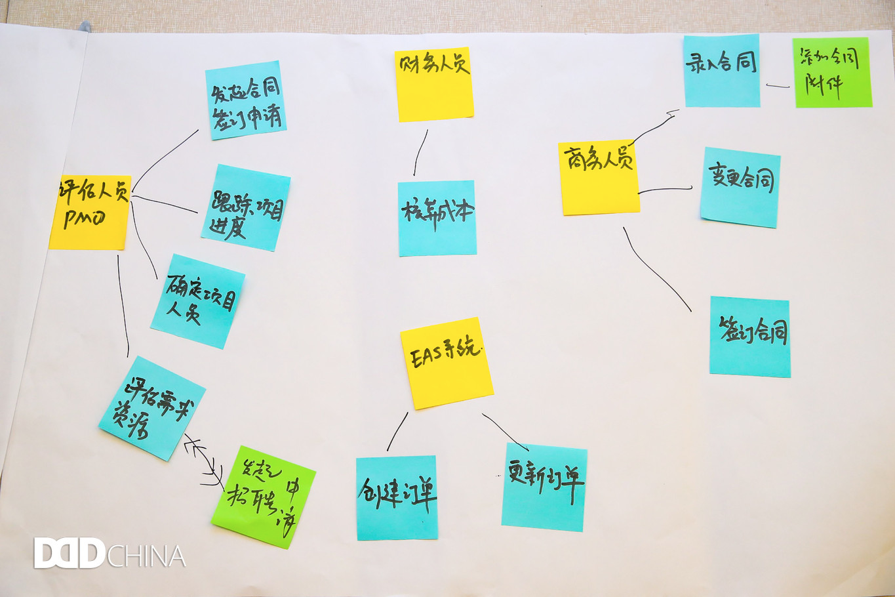
事件风暴更是将这种可视化手段用到了极致，沿着一条时间线，通过对事件、命令、读模型（Read Model）、流程、策略（Policy）的不断识别，领域专家与开发团队一起探寻业务的真相，绘制出表现业务流程与领域模型的设计画布：
职责驱动设计使用时序图来体现对象之间的协作关系。同样，我们可以用即时贴表达参与协作的对象，在白板上绘制出协作的时序图。如下图所示，我使用不同的颜色表达远程服务、应用服务、领域服务、资源库和聚合：
图中的红色五角星表达一个业务场景只需一个对外公开的接口。多数情况下，这个对外公开的接口就是远程服务。在时序图上，对象之间以箭头表达消息的传递。红色箭头指向的对象，会履行该消息代表的职责，例如 exists() 职责就由该红色箭头指向的 TrainingRepository 对象承担。一个对象如有太多红色箭头指向它，就说明该对象可能承担了太多职责，属于设计的坏味道。同时，我们也需要注意发起消息箭头的对象，它通常代表某个方法的调用者。如果发出了太多消息，说明调用逻辑变得过于复杂，缺少必要的封装层次，同样属于设计的坏味道。图中绘制的蓝色圆圈代表了应用服务发出的调用消息。由于领域驱动设计不允许将业务逻辑封装到应用服务，因此，在一个时序图中应该只能有一个蓝色圆圈。
时序图自身的可视化特征，可以直观地体现职责分配是否平衡。例如，针对一个业务场景绘制的时序图如果过宽，则说明对象的粒度可能太细，增加了不必要的抽象与间接导致协作复杂度增加；如果时序图过窄而高，又可能说明对象的粒度可能太粗，协作仅在有限的几个对象之间完成，没有做到职责的分治。因此，这些可视化特征都能够传递信号，直观地呈现“设计坏味道”，以便于我们对其进行修改和调整。
领域建模的结果固然比过程重要，但如果缺乏高效沟通的建模手段，或许我们根本无法获得正确的领域模型。显然，可视化的表现形式与工作坊的沟通方式可以帮助我们在沟通交流时走出“盲人摸象”的窘境，在团队中传递知识，进而对整个业务系统的领域逻辑达成共识，最终形成领域分析模型与领域设计模型。
至于领域实现模型，则可以通过协作编写测试开始。测试用例体现了具体的业务场景，测试方法的命名更加接近自然语言，Given-When-Then 模式与业务场景的描述非常契合，这就使得领域专家与开发人员结对编程成为了可能。如上一课给出的转账业务场景的测试方法，完全可以是这种协作的产物。在针对业务场景进行测试驱动开发时，可以让开发人员将注意力完全放在业务逻辑的实现上。由于代码仅仅是业务逻辑的表达，领域专家就有能力参与进来，帮助开发人员打磨代码，使得代码的编写满足统一语言的要求。代码即模型，这是领域模型最理想的表现形式，也是领域建模最终的模型产物。
领域模型与统一语言的关系
领域模型之所以被划分为三个模型，源于不同活动中的交流对象与交流重心各不相同。在分析建模活动中，开发团队与领域专家一起工作，通过建立更加准确而简洁的分析模型，直观地传递着不同角色对业务知识的理解。在设计建模活动中，必须基于领域分析模型对模型中的对象做出设计改进，考虑职责的合理分配与良好的协作，建立具有指导意义的设计模型。在实现建模活动中，代码必须是领域设计模型的忠实表现，意味着它其实也忠实表现了领域分析模型蕴含的领域知识。一言以蔽之，**让领域分析模型服务于开发团队与领域专家，领域设计模型服务于软件设计人员，领域代码模型服务于程序员。**三个模型各司其职，各取所需，它们又都属于领域模型。
在建模过程中，我们需要不断地从“统一语言”中汲取建模的营养，并通过“统一语言”来维护模型的一致性。当开发团队根据领域分析模型建立领域设计模型时，如果发现领域分析模型中的概念未能准确表达领域知识，又或者缺少了隐式概念，就需要调整领域分析模型，使得领域设计模型与领域分析模型保持一致。领域实现模型亦当如此。显然，统一语言为领域模型驱动设计提供了一致的领域概念，使得领域模型在整个软件开发阶段保持了同步：
迭代建模
分析、设计与实现不是割裂开的三个阶段，而是一个迭代建模（Iteration Modeling）过程中的三个建模活动。在战略设计阶段，我们可以通过业务场景识别系统的限界上下文。无论是采用用例场景分析还是事件风暴对限界上下文展开识别，都可以认为是一个自底向上的建模过程。在获得限界上下文的同时，我们也获得了相对细化的用例（或主故事）与初步的领域分析模型。为了避免分析瘫痪（Analysis Paralysis），应将这个过程控制在两周到一个月左右的先启（Inception）阶段完成。
先启阶段结束后，就应该进入针对限界上下文开展领域模型驱动设计的迭代开发。在迭代开发过程中，我们可以根据用户故事结合分析模式与四色建模等手段，进一步细化领域分析模型，然后结合设计模式与设计要素，引入职责驱动设计获得领域设计模型，最后，结合业务场景与设计模型，推进测试驱动开发实践进行编码开发，以小步快速的“红—绿—重构”反馈环不断地改进代码质量和增量开发，快速交付高价值的可运行的功能：
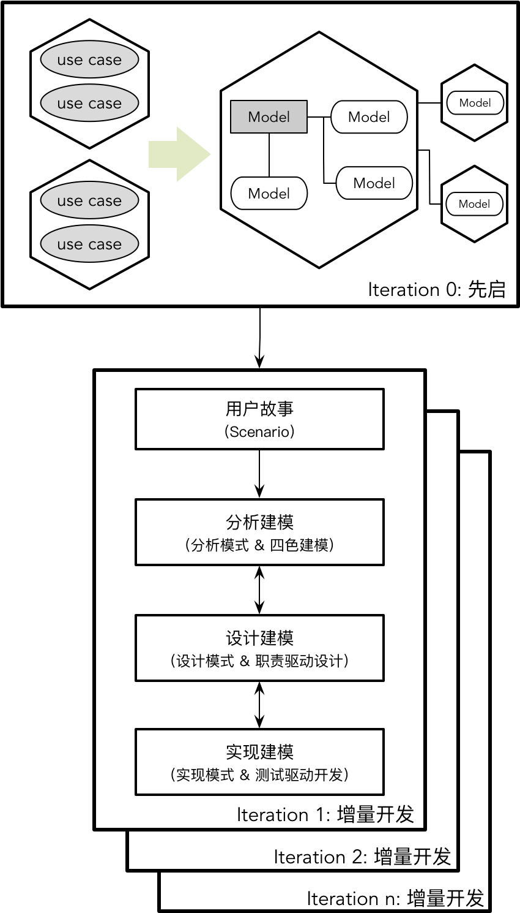
**说明：**迭代建模与本图参考了 Scott W. Ambler 敏捷建模的思想，参见链接：
迭代建模与迭代的增量开发一脉相承。它避免了在建模过程尤其是分析建模活动中的分析瘫痪，也避免了在设计建模活动中的过度设计，同时还能通过增量快速地开发出新功能来及时获得反馈。获得的领域模型也随着增量开发而不断演化，并始终指导着设计与开发。迭代建模使得建模活动成为迭代开发中不可缺少的一个重要环节，但整个活动却是轻量的，有效地促进了团队成员的交流，符合 Kent Beck 提出的核心价值观——沟通、简单和灵活。
050 领域模型与结构范式
领域模型与建模范式
即使采用领域模型驱动设计，针对同一个领域获得的领域模型也会千差万别，除了因为设计能力、经验及对现实世界的理解不一致外，对模型产生根本影响的是建模范式（Modeling Paradigm）。
“范式（Paradigm）”一词最初由美国哲学家托马斯·库恩（Thomas Kuhn）在其经典著作《科学革命的结构（The Structure of Scientific Revolutions）》中提出，被用于对科学发展的分析。库恩认为每一个科学发展阶段都有特殊的内在结构，而体现这种结构的模型即范式。他明确无误地给出了范式的一个简洁定义：
“按既定的用法，范式就是一种公认的模型或模式。”
范式可以用来界定什么应该被研究、什么问题应该被提出、如何对问题进行质疑，以及在解释我们获得的答案时该遵循什么样的规则。倘若将范式运用在软件领域的建模过程中，就可以认为建模范式就是建立模型的一种模式，是针对业务需求提出的问题进行建模时需要遵循的规则。
倘若要建立领域模型，可以遵循的建模范式包括结构范式、对象范式和函数范式，恰好对应于三种编程范式（Programming Paradigm）：
- 结构化编程（structured programming）
- 面向对象编程（object-oriented programming）
- 函数式编程（functional programming）
建模范式与编程范式的对应关系，也证明了分析、设计与实现三位一体的关系。
结构范式
一提及面向过程设计，浮现在我们脑海中的大多是一堆负面的贬义词：糟糕的、邪恶的、混乱的、贫瘠的……实际上，面向过程设计就是结构化编程思想的体现，如果追溯它的发展历史，我们发现该范式提倡的设计思想与面向对象编程和函数式编程在本质上并无太大区别。它，并不代表一定是“坏”的设计。
结构化编程的理念由 Edsger Wybe Dijkstra 在 1968 年最先提出。在给 CACM 编辑的一封信中，Dijkstra 论证了使用 goto 是有害的，并明确提出了顺序、选择和循环三种基本的结构。通过这三种基本的结构，可以使程序结构可以变得更加清晰、富有逻辑。
结构化编程强调模块作为功能分解的基本单位。David Parnas 在 1971 年发表的论文 Information Distribution Aspect of Design Methodology 中解释了何谓“结构”：
“所谓‘结构’通常指用于表示系统的部分。结构体现为分解系统为多个模块，确定每个模块的特征，并明确模块之间的连接关系。”
针对模块间的连接关系，在同一篇论文中 Parnas 还提到：
“模块间的信息传递可以视为接口（Interfaces）。”
这些观点体现了结构化设计的系统分解原则，通过模块对职责进行封装与分离，通过接口管理模块之间的关系。
模块对职责的封装体现为信息隐藏（Information Hiding），这一原则同样来自于结构化编程。还是 David Parnas，他在 1972 年发表论文《论将系统分解为模块的准则》中强调了信息隐藏的原则。
《代码大全》的作者 Steve McConnell 认为：
“信息隐藏是软件的首要技术使命中格外重要的一种启发式方法，因为它强调的就是隐藏复杂度，这一点无论是从它的名称还是实施细节上都能看得很清楚。”
信息隐藏在面向对象设计中，其实就是封装和隐私法则的体现。
结构化编程的着眼点是“面向过程”，采用结构化编程范式的语言就被称之为“面向过程语言”。因此，面向过程语言同样可以体现“封装”的思想，如 C 语言允许在头文件中定义数据结构和函数声明，然后在程序文件中具体实现。这种头文件与程序代码的分离，可以有效地保证程序代码中的具体实现细节对于调用者而言是不可见的。当然，这种封装性不如面向对象语言具有更为丰富的封装层次，对数据结构不具有控制权。倘若有别的函数直接操作数据结构，就会在一定程度上破坏了这种封装性。
以过程为中心的结构化编程思想强调“自顶向下、逐步向下”的设计原则。它对待问题域的态度，就是将其分解为一个一个步骤，每个步骤再由函数来实现，并按照顺序、选择或循环的结构对这些函数进行调用，组成一个主函数。每个函数内部同样采用相同的程序结构。以过程式的思想对问题进行步骤拆分，就可以利用功能分解让程序的结构化繁为简，变混乱为清晰。显然，只要问题的拆分合理，且注意正确的职责分配与信息隐藏，面向过程的程序设计同样可以交出优秀设计的答卷。
不可否认的是，面向对象设计是面向过程设计的进化，软件设计人员也在这个发展过程中经历一次编程范式的迁移，即从面向过程迁移到面向对象。为何要从过程进化到对象呢？根本原因在于这两种方法对程序的理解截然不同。面向过程语言 Pascal 的发明人沃斯教授认为：
数据结构 + 算法 = 程序
这一公式概况了面向过程语言的特点：数据结构和变量相对应，算法和函数相对应，算法是用来操作数据结构的。至为关键之处在于，面向过程设计强调将数据结构与算法分开，这就会导致：
- 无法直观说明算法与数据结构之间的关系：当数据结构发生变化时，分散在整个程序各处的操作该数据结构的算法都需要修改。
- 无法限制数据结构可被操作的范围：任何算法都可以操作任何数据结构，就有可能因为某个错误操作导致程序出现问题而崩溃。
- 操作数据结构的算法被重复定义：算法的重复定义并非故意为之，而是缺乏封装性的必然结果。
假设算法 f1() 和 f2() 分别操作了数据结构 X 和 Y。由于粒度的原因，X 和 Y 数据结构共享了底层数据结构 Z 中标记为 i 的数据。它们之间的关系如下图所示：
如果 Z 的数据 i 发生了变化，会影响到函数 f1() 和 f2()，但由于我们知道这个变化，因此程序是可控的。然而，由于数据结构与算法完全分离，在这同时还有别的开发人员增加了一个操作底层数据结构 Z 的函数，原有开发人员并不知情。如下图所示的函数 f3() 操作了数据结构 Z 的数据 i，却有可能在 i 发生了变化时并没有做相应调整，带来隐藏的缺陷：
面向对象通过将数据结构与算法封装在一起，使得数据与函数之间的关系更加清晰。例如数据结构 X 与算法 f1() 封装在一起，数据结构 Y 和算法 f2() 封装在一起，同时为数据结构 Z 提供算法 fi()，作为访问数据 i 的公有接口。任何需要访问数据 i 的操作都通过 fi() 算法调用，包括前面提及的算法 f3()：
显然，倘若 Z 的数据发生了变化，算法 fi() 一定会知晓这个变化；由于 X 和 Y 的算法 f1()、f2() 以及后来增加的 f3() 并没有直接操作该数据，因此这种变化被有效地隔离了，不会受到影响。
正如前面所说，算法的重复定义也很难避免。例如事先定义了 Rectangle 类，它定义了矩形的宽度和长度：
public class Rectangle {
private int width;
private int length;
public Rectangle(int width, int length) {
this.width = width;
this.length = length;
}
public int getWidth() {
return width;
}
public int getLength() {
return length;
}
}
一个几何类 Geometric 类需要计算矩形的周长和面积，因而它会调用 Rectangle：
public class Geometric {
public int area(Rectangle rectangle) {
return rectangle.getWidth() * rectangle.getLength();
}
public int perimeter(Rectangle rectangle) {
return (rectangle.getWidth() + rectangle.getLength()) * 2;
}
}
现在，其他开发人员需要编写一个绘图工具，同样需要用到 Rectangle：
public class Painter {
public void draw(Rectangle rectangle) {
// ...
// 产生了和 Geometric::area() 方法一样的代码
int area = rectangle.getWidth() * rectangle.getLength();
//...
}
}
由于 Rectangle 类将数据与行为分别定义到了不同的地方，调用者 Painter 在重用 Rectangle 时并不知道 Geometric 已经提供了计算面积和周长的方法，因而会首先想到亲自实现他需要的行为。这就必然造成相同的算法被多个开发者重复实现。只有极其有心的开发者才可能会尽力地降低这类重复。当然，这是以付出额外精力为代价的。
Rectangle 类就是我们在前面提及的贫血对象，如果建立的模型皆为这样只有数据没有行为的贫血对象，则该模型为贫血模型。Martin Fowler 认为：
贫血模型一个明显的特征是它仅仅是看上去和领域模型一样，都拥有对象、属性、对象间通过关系关联。但是当你观察模型所持有的业务逻辑时，你会发现，贫血模型中除了一些 Getter 和 Setter 方法，几乎没有其他业务逻辑。这种情况事实上是由一些设计规则中规定不要把业务逻辑放到“领域模型”中造成的，取而代之的是把所有的业务逻辑都封装到众多 Service 中。这些 Service 对象在“领域对象”（领域层）之上形成一个 Service 层，而把“领域对象”当做数据使用。
如果把操作数据结构的算法都放在一起，并把数据结构隐藏起来，开发者就失去了自由访问数据的权力。如果一个开发者需要计算 Rectangle 的面积，数据访问权的丧失会让他首先考虑的不是在类的外部亲自实现某个算法，而是首先寻求重用别人的实现，从而最大程度地避免重复：
public class Rectangle {
// 没有访问 width 的需求时，就不暴露该字段
private int width;
// 没有访问 length 的需求时，就不暴露该字段
private int length;
public Rectangle(int width, int length) {
this.width = width;
this.length = length;
}
public int area() {
return this.width * this.length;
}
public int perimeter() {
return (this.width + this.length) * 2;
}
}
由于数据与行为封装在了一起，当我们调用对象时，IDE 还可以让开发人员迅速判断被调对象是否提供了自己所需的接口：
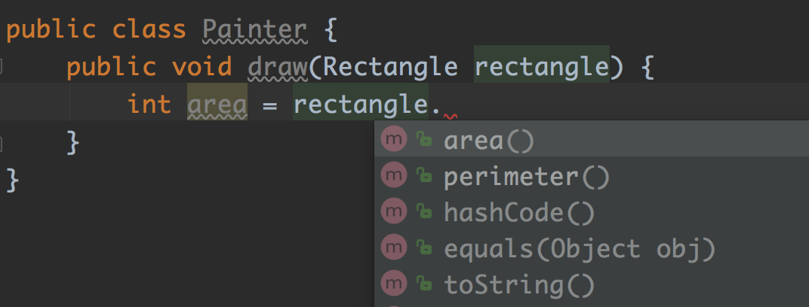
通过这个例子我们也解释了为何贫血模型是结构范式的体现：贫血模型将数据结构与算法分开，无法有效地利用对象的封装能力。
如果按照数据模型驱动设计，很容易获得贫血模型。因为在针对数据库和数据表建模时，数据模型中的持久化对象作为数据表的映射，扮演了数据提供者的角色，这正是 Martin Fowler 所说的“一些设计规则中规定不要把业务逻辑放到‘领域模型’”。
在分层架构中，持久化对象并不属于领域层，而是作为表的映射放在基础设施层（数据访问层）。此时的持久化对象其实并非真正意义上的对象，而是一种数据结构。当然，我们也可以打破这样的规则，将那些操作了持久化对象数据的行为封装到持久化对象中，这时的持久化对象由于包含了领域逻辑，就变成了领域模型的一部分。
因此，模型驱动设计的方法与建模范式并没有必然的联系。即使采用领域模型驱动设计，仍然有可能违背对象范式的设计原则，实现为诸如“事务脚本”这样的过程式代码，这是我们在进行领域模型驱动设计过程中需要时刻警惕的。
051 领域模型与对象范式（上）
主流的领域驱动设计通常采用面向对象的编程范式，这种范式将领域中的任何概念都视之为“对象”。遵循面向对象的设计思想，社区的重要声音是避免设计出只有数据属性的贫血模型。贫血模型的坏处在介绍结构范式时我已做了详细阐释，这里不再赘述，而对象范式所要遵循的设计思想和原则并不止于此。若要把握面向对象设计的核心，我认为需要抓住职责与抽象这两个核心。
职责
之所以名为职责（Responsibility）而非行为或功能，是从角色拥有何种能力的角度做出的思考。职责是对象封装的判断依据：因为对象拥有了数据，即认为它掌握了某个领域的知识，从而具备完成某一功能的能力；因为该对象拥有了这一能力，故而在定义对象时，赋予了它参与业务场景并与其它对象产生协作时担任的角色。这就形成了角色、职责、协作的活动场景。因此，Rebbecca 认为职责主要包括以下三个方面：
- 对象持有的信息：即对象拥有的知识
- 对象执行的动作：即对象依据知识而具备的能力
- 能够影响到其他对象的决定：即对象与其他对象之间的协作
当我们将对象的行为看作职责时，就赋予了对象的生命与意识，使得我们能够以拟人的方式对待对象。一个聪明的对象是对象自己知道应该履行哪些职责，拒绝履行哪些职责，以及该如何与其他对象协作共同履行职责。这时的对象绝不是一个愚笨的数据提供者，它学会了如何根据自己拥有的数据来判断请求的响应方式、行为的执行方式，这就是所谓的对象的“自治”。
自治
我在《领域驱动战略设计实践》中提及了限界上下文的自治特性，事实上，从更小的粒度来看，对象仍然需要具备自治的这四个特性，即：
- 最小完备
- 自我履行
- 稳定空间
- 独立进化
最小完备
如何来理解对象的“最小完备”？John Kern 谈到对象的设计时，提到：
“不要试着把对象在现实世界中可以想象得到的行为都实现到设计中去。相反，只需要让对象能够合适于应用系统即可。对象能做的、所知的最好是一点不多一点不少。”
因此，对象的最小完备取决于该对象具备的知识，恰如其分地履行职责。不放弃该自己履行的职责，也不越权对别人的行为指手画脚。
最小完备是实现自治的基本条件。所谓“完备”，就是指对象的行为是完整的，无需针对自己的信息去求助别的对象，这就避免了不必要的依赖关系，并使得该完备对象具有了独立的意识。“最小完备”则进一步限制了完备的范围，防止对象履行的职责过多。一个对象一旦突破了“最小完备”的约束，就可能导致别的对象不具有“完备”的能力，因为职责总是非此即彼的。如果将本该分配给 A 对象的行为错误地分配给了 B，当 A 需要这些行为时，只得去求助于 B，导致了 A 与 B 不必要的耦合。
判断一个对象是否具有“完备性”，可以基于如下判断标准：
- 基于对象拥有的信息：即处理信息的行为应优先考虑分配给拥有该信息的对象。
- 双生的行为动词是否分离：双生的行为动词是内聚的职责，如 withdraw 与 deposite、open 与 close、add 与 remove 等，这些行为不可分离。
例如，我们需要设计一个 Web 服务器，它提供了一个对象 HttpProcessor，能够对传递过来的 HTTP 请求进行处理。由于请求消息为 Socket 消息，我们无法修改该类的定义，因此，Socket 消息仅仅作为要处理的信息交由 HttpProcessor 进行解析，并定义 process(socket) 方法来解析请求头和请求体。解析后的这些信息正是 Servlet 需要的。
但是，涉及一些系统开销大的字符串操作或其他操作却是 Servlet 当前不需要的。如果仍然将这些开销大的解析操作分配给 HttpProcessor，就存在职责分配不当，因为 HttpProcessor 的职责是快速响应请求，不应该将时间浪费在解析大量目前并不需要的请求消息上。我们认为这些待解析的信息属于 HttpRequest 与 HttpResponse 的一部分。这时，HttpProcessor 的职责就变为创建 HttpRequest 与 HttpResponse 对象，并将这些请求信息直接赋值给它们，这就使得 HttpRequest 与 HttpResponse 分别拥有了部分请求信息。要保证 HttpRequest 与 HttpResponse 对象的完备能力，就应该将解析这些请求信息的职责交给它们自己来完成：
遵循最小完备原则，使得 HttpProcessor、HttpRequest 与 HttpResponse 三者之间的权责变得更加清晰。同时，这一设计还提高了 HttpProcessor 处理 HTTP 请求的能力。由于解析开销较大的字符串操作并未由 HttpProcessor 承担，而是将这些数据流塞给了 HttpRequest 与 HttpResponse，使得 HttpProcessor 的 process() 操作可以快速完成。当请求者真正需要相关请求信息时，就可以调用 HttpRequest 与 HttpResponse 对象的 parse() 方法。
判断一个对象是否具有“最小特征”，可以基于如下判断标准：
- 行为的特征是否保持一致：定义在一个类中的方法，其名称定义是发散的，或者类的字段只与一部分方法有关，另外的字段与另外一部分方法有关，皆可认为该对象的行为特征并不一致。
- 基于变化点：如果存在两个或两个以上的变化点，则说明对象承担了多余的职责。
遵循“单一职责原则”，每个对象的职责最好是单一的，也就是要满足这里提及的“最小特征”。在一个商业智能产品中，ViewTile 是一个 React 组件，作为报表视图的一个小挂件。既然是一个 UI 组件，它履行的主要职责就应该是对界面元素的呈现：
export default class ViewTile extends React.Component {
render() {
const { selected, isEdit } = this.props
return (
<div
className={classNames('ViewTile', {selected, editing: isEdit})}
onClick={this.handleClickView}
>
{this.renderActions()}
{this.renderDrillPath()}
{this.renderCascadeFilterCondition()}
<div className='Chart' style={this.getChartStyle()}>
{this.renderChart()}
</div>
{this.renderReportViewDataModal()}
</div>
)
}
}
该组件需要提供一个将报表视图导出为 PNG、Excel 和 PDF 的功能。考虑到这些导出功能目前仅限于被 ViewTile 调用，开发人员就在该组件类中直接定义和实现了导出行为：
class ViewTile extends React.Component {
handleGetDownLoadSelectedExportFile(e, exportType) {
const exportPng = (charType) => { // 实现内容略 }
const exportPDF = (dom, charType) => { // 实现内容略 }
const exportExcel = (dom) => { // 实现内容略 }
this.handleControlExportTypeBox(e)
switch (exportType) {
case 'PNG':
exportPng(type)
break
case 'PDF':
exportPDF(this.willExportedChartInstance, type)
break
case 'Excel':
exportExcel(this.willExportedChartInstance)
break
}
}
}
exportPng()、exportExcel() 与 exportPdf() 三个函数使用到的信息与 render() 函数迥然不同，虽然看起来它们应该作为私有方法被 ViewTile 内部代码调用，但从“最小特征”的角度讲，这三个函数的职责不应该由 ViewTile 来承担，应该将它们分配到 FileExporter。
自我履行
一个最小完备的对象通常都能够保证自我履行，如果一个对象做到了自我履行，就说明了它具有最小完备特征，因此，最小完备与自我履行这两个特征其实是相辅相成的。
所谓“自我履行”，就是对象利用自己的属性完成自己的任务，不需要假手他人。这就要求一个对象应该将数据和对数据的操作行为包装在一起，这其实是对象设计技术的核心特征。这一核心特征又可以称之为“信息专家模式”，即信息的持有者就是操作该信息的专家。只有专业的事情交给专业的对象去做，对象的世界才能做到各司其职、各尽其责。
违背了“信息专家模式”的对象，往往会让我们嗅到“依恋情结（Feature Envy）”的坏味道。Martin Fowler 认为这种经典气味是：
“函数对某个类的兴趣高过对自己所处类的兴趣。这种孺慕之情最通常的焦点便是数据。”
自我履行与依恋情结的特征相同，只是立场不同。依恋情结是指在一个对象的行为中，总是使用别的对象的数据和特性，就好像是羡慕别人拥有的好东西似的。自我履行指的是我守住自己的一亩三分地，该自己操作的数据绝不轻易交给别人。
例如在一个报表系统中，需要根据客户的 Web 请求参数作为条件动态生成报表。这些请求参数根据其数据结构的不同划分为三种：
- 单一参数（SimpleParameter）：代表 key 和 value 的一对一关系
- 元素项参数（ItemParameter）：一个参数包含多个元素项，每个元素项又包含 key 和 value 的一对一关系
- 表参数（TableParameter）：参数的结构形成一张表，包含行头、列头和数据单元格
这些参数都实现了 Parameter 接口，该接口的定义为：
public interface Parameter {
String getName();
}
public class SimpleParameter implements Parameter {}
public class ItemParameter implements Parameter {}
public class TableParameter implements Parameter {}
在报表的元数据中已经配置了各种参数，包括它们的类型信息。服务端在接收到 Web 请求时，通过 ParameterGraph 加载配置文件，并利用反射创建各自的参数对象。此时，ParameterGraph 拥有的参数都没有值，需要通过 ParameterController 从 ServletHttpRequest 获得参数值对各个参数进行填充。代码如下：
public class ParameterController {
public void fillParameters(ServletHttpRequest request, ParameterGraph parameterGraph) {
for (Parameter para : parameterGraph.getParmaeters()) {
if (para instanceof SimpleParameter) {
SimpleParameter simplePara = (SimpleParameter) para;
String[] values = request.getParameterValues(simplePara.getName());
simplePara.setValue(values);
} else {
if (para instanceof ItemParameter) {
ItemParameter itemPara = (ItemParameter) para;
for (Item item : itemPara.getItems()) {
String[] values = request.getParameterValues(item.getName());
item.setValues(values);
}
} else {
TableParameter tablePara = (TableParameter) para;
String[] rows =
request.getParameterValues(tablePara.getRowName());
String[] columns =
request.getParameterValues(tablePara.getColumnName());
String[] dataCells =
request.getParameterValues(tablePara.getDataCellName());
int columnSize = columns.length;
for (int i = 0; i < rows.length; i++) {
for (int j = 0; j < columns.length; j++) {
TableParameterElement element = new TableParameterElement();
element.setRow(rows[i]);
element.setColumn(columns[j]);
element.setDataCell(dataCells[columnSize * i + j]);
tablePara.addElement(element);
}
}
}
}
}
}
}
显然，这三种参数对象没有能够做到自我履行，它们把自己的数据“屈辱”地交给了 ParameterController，却没有想到自己拥有填充参数数据的能力，毕竟只有它们自己才最清楚各自参数的数据结构。如果让这些参数对象变为能够自我履行的自治对象，Do it myself，情况就完全不同了：
public class SimpleParameter implements Parameter {
public void fill(ServletHttpRequest request) {
String[] values = request.getParameterValues(this.getName());
this.setValue(values);
}
}
public class ItemParameter implements Parameter {
public void fill(ServletHttpRequest request) {
ItemParameter itemPara = this;
for (Item item : itemPara.getItems()) {
String[] values = request.getParameterValues(item.getName());
item.setValues(values);
}
}
}
// TableParameter 的实现略去
当参数自身履行了填充参数的职责时，ParameterController 履行的职责就变得简单了：
public class ParameterController {
public void fillParameters(ServletHttpRequest request, ParameterGraph parameterGraph) {
for (Parameter para : parameterGraph.getParmaeters()) {
if (para instanceof SimpleParameter) {
((SimpleParameter) para).fill(request);
} else {
if (para instanceof ItemParameter) {
((ItemParameter) para).fill(request);
} else {
((TableParameter) para).fill(request);
}
}
}
}
}
各种参数的数据结构不同，导致了填充行为存在差异，但从抽象层面看，都是将一个 ServletHttpRequest 填充到 Parameter 中。于是可以将 fill() 方法提升到 Parameter 接口，形成三种参数类型对于 Parameter 接口的多态：
public class ParameterController {
public void fillParameters(ServletHttpRequest request, ParameterGraph parameterGraph) {
for (Parameter para : parameterGraph.getParmaeters()) {
para.fill(request);
}
}
}
当一个对象能够自我履行时，就可以让调用者仅仅需要关注对象能够做什么（What to do），而不需要操心其实现细节（How to do），从而将实现细节隐藏起来。由于各种参数对象自身履行了填充职责，ParameterController 就可以只关注抽象 Parameter 提供的公开接口，而无需考虑实现，对象之间的协作就变得更加松散耦合，对象的多态能力才能得到充分地体现。
稳定空间
一个自治的对象具有稳定空间，使其具备抵抗外部变化的能力。要做到这一点，就需要处理好外部对象与自治对象之间的依赖关系。方法就是遵循“高内聚松耦合”原则来划分对象的边界。这就好比两个行政区，各自拥有一个居民区和一家公司。居民区 A 的一部分人要跨行政区到公司 B 上班，同理，居民区 B 的一部分人也要跨行政区到公司 A 上班：
这两个行政区是紧耦合的，因为居民区与公司之间的关系只是一种松散随意的划分。现在我们按照居民区与公司之间的关系，对居民区的人重新调整，就得到了两个完全隔离的行政区：
调整后的系统并没有改变任何本质性的事情。所有的人都还在原来的公司上班，没有人失业；没有人流离失所，只是改变了居住地。但仅仅由于居民居住区域的改变，两个行政区的依赖关系就大为减弱。事实上，对于这个理想模型，两个行政区之间已经没有任何关系，它们之间的桥梁完全可以拆除。这就是“高内聚松耦合”原则的体现，通过将关联程度更高的元素控制在一个单位内部，就可以达到降低单位间关联的目的。
注意：本案例及案例的说明来自 ThoughtWorks 的 OO BootCamp 讲义。
高内聚原则与职责的分配有关，如果职责分配合理，就能减少许多不必要产生的依赖；松耦合原则与职责的变化有关，如果能对这种变化进行抽象与隔离，就能降低二者之间的依赖程度。因此，要实现自治对象的稳定空间，还需要识别变化点，对变化的职责进行分离和封装。实际上，许多设计模式都可以说是“分离和封装变化”原则的体现。
当我们发现一个对象包含的职责既有不变的部分，又有可变的部分，就可以将可变的部分分离出去，将其抽象为一个接口，再以委派的形式传入到原对象，如下图所示：
此时抽象出来的接口 Changable 其实就是策略模式（Strategy Pattern）或者命令模式（Command Pattern）的体现。例如，Java 线程的实现机制是不变的，但运行在线程中的业务却随时可变，将这部分可变的业务部分分离出来，抽象为 Runnable 接口，再以构造函数参数的方式传入到 Thread 中：
public class Thread ... {
private Runnable target;
public Thread(Runnable target) {
init(null, target, "Thread-" + nextThreadNum(), 0);
}
public void run() {
if (target != null) {
target.run();
}
}
}
模板方法模式（Template Method Pattern）同样分离了变与不变，只是分离变化的方向是向上提取为抽象类的抽象方法而已：
例如，授权认证功能的主体是对认证信息 token 进行处理完成认证。如果通过认证，则返回认证结果；认证无法通过，就会抛出 AuthenticationException 异常。整个认证功能的执行步骤是不变的，但对 token 的处理需要根据认证机制的不同提供不同实现，甚至允许用户自定义认证机制。为了满足属于部分功能的认证机制的变化，可以对这部分可变的内容进行抽象。AbstractAuthenticationManager 是一个抽象类，定义了 authenticate() 模板方法：
public abstract class AbstractAuthenticationManager {
// 模板方法，它是稳定不变的
public final Authentication authenticate(Authentication authRequest)
throws AuthenticationException {
try {
Authentication authResult = doAuthentication(authRequest);
copyDetails(authRequest, authResult);
return authResult;
} catch (AuthenticationException e) {
e.setAuthentication(authRequest);
throw e;
}
}
private void copyDetails(Authentication source, Authentication dest) {
if ((dest instanceof AbstractAuthenticationToken) && (dest.getDetails() == null)) {
AbstractAuthenticationToken token = (AbstractAuthenticationToken) dest;
token.setDetails(source.getDetails());
}
}
// 基本方法，定义为抽象方法，具体实现交给子类
protected abstract Authentication doAuthentication(Authentication authentication)
throws AuthenticationException;
}
该模板方法调用的 doAuthentication() 是一个受保护的抽象方法，没有任何实现。这就是可变的部分，交由子类实现，如 ProviderManager 子类：
public class ProviderManager extends AbstractAuthenticationManager {
// 实现了自己的认证机制
public Authentication doAuthentication(Authentication authentication)
throws AuthenticationException {
Class toTest = authentication.getClass();
AuthenticationException lastException = null;
for (AuthenticationProvider provider : providers) {
if (provider.supports(toTest)) {
logger.debug("Authentication attempt using " + provider.getClass().getName());
Authentication result = null;
try {
result = provider.authenticate(authentication);
sessionController.checkAuthenticationAllowed(result);
} catch (AuthenticationException ae) {
lastException = ae;
result = null;
}
if (result != null) {
sessionController.registerSuccessfulAuthentication(result);
applicationEventPublisher.publishEvent(new AuthenticationSuccessEvent(result));
return result;
}
}
}
throw lastException;
}
}
如果一个对象存在两个可能变化的职责，就违背了“单一职责原则”，即“引起变化的原因只能有一个”。我们需要分离这两个可变的职责，分别进行抽象，然后形成这两个抽象职责的组合，就是桥接模式（Bridge Pattern）的体现：
例如在实现数据权限控制时，需要根据解析配置内容获得数据权限规则，然后再根据解析后的规则对数据进行过滤。需要支持多种解析规则，同时也需要支持多种过滤规则，二者的变化方向是完全不同的。这时，就不能像下面这样将它们定义到一个类或接口中：
public interface DataRuleParser {
List<DataRule> parseRules();
T List<T> filterData(List<T> srcData);
}
正确的做法是分离规则解析与数据过滤职责，分别定义到两个独立接口。数据权限控制的过滤数据功能才是实现数据权限的目标，因此在实现中，应以数据过滤职责为主，再通过依赖注入的方式将规则解析器传入：
public interface DataFilter<T> {
List<T> filterData(List<T> srcData);
}
public interface DataRuleParser {
List<DataRule> parseRules();
}
public class GradeDataFilter<Grade> implements DataFilter {
private DataRuleParser ruleParser;
// 注入一个抽象的 DataRuleParser 接口
public GradeDataFilter(DataRuleParser ruleParser) {
this.ruleParser = ruleParser;
}
@Override
public List<Grade> filterData(List<Grade> sourceData) {
if (sourcData == null || sourceData.isEmpty() {
return Collections.emptyList();
}
List<Grade> gradeResult = new ArrayList<>(sourceData.size());
for (Grade grade : sourceData) {
for (DataRule rule : ruleParser.parseRules()) {
if (rule.matches(grade) {
gradeResult.add(grade);
}
}
}
return gradeResult;
}
}
GradeDataFilter 是过滤规则的一种，它在过滤数据时选择什么解析模式，取决于通过构造函数参数传入的 DataRuleParser 接口的具体实现类型。无论解析规则怎么变，只要不修改接口定义，就不会影响到 GradeDataFilter 的实现。
独立进化
稳定空间针对的是外部变化对自治对象产生的影响，独立进化关注的则是自治对象自身变化对外部产生的影响。二者是开放封闭原则（Open-closed Principle）的两面：若能做到对扩展开放，当变化发生时，自治对象就不会受到变化的影响，因为通过抽象可以很容易对实现进行扩展或替换；若能做到对修改封闭，只要对外公开的接口没有变化，封装在内部的实现怎么变化，都不会影响到它的调用者。这就将一个自治对象分为了内外两个世界：
- 合理的封装是包裹在自治对象上的一层保护膜
- 对外公开的接口是自治对象与外部世界协作的唯一通道
注意，这里的“接口”并非语法意义上的 Interface，而是指代一种“交互”，可以是定义的类型或方法，即一切暴露在外面的信息，如下图所示：
要做到独立进化，就是要保证自治对象的接口不变，这样才不会影响外部的调用者；做好了这一层保护，位于内核部分的内部信息就可以随意调整了。
如何才能做到对内核的保护呢？其一是保证接口的稳定性，即避免对公开方法的参数和返回值的修改。假设我们定义一个连接 FTP 服务器的接口，若采用如下形式：
public interface FtpConnector {
void connect(String ftpHost, int port, String userName, String password);
}
倘若将来需要为连接功能增加一个新属性：服务器主路径 homePath。要应对这个变化，就需要修改 connect() 方法的定义，又或者新增加一个重载的方法。如果要确保接口的稳定，应尽量将一组内聚的参数封装为对象，只要对象类型没有变化，即使增加了新的属性和行为，也不会影响到已有的消费者。例如通过引入 FtpServer 类对 FTP 地址、端口、用户名和密码这几个内聚的概念进行封装，接口就可以调整为：
public class FtpServer {
private Stirng host;
private int port;
private String userName;
private String password
}
public interface FtpConnector {
void connect(FtpServer ftpServer);
}
即使需要修改 FtpServer 的定义添加新的 homePath 属性，connect(ftpServer) 接口的定义也不需要做任何调整。
数据结构和数据类型也需要进行合理的封装。我们必须认识到在调用端与实现端在重复性上的区别。遵循 DRY（Don't Repeat Yourself）原则，任何功能的实现应该只有一份，但对该功能的调用却会出现多份。这也正是在定义一个类时，为何需要为字段提供访问方法的原因。如果公有类暴露了它的数据字段，要想在将来改变字段的访问方式就非常困难，因为该字段的调用方法已经遍布各处，修改成本非常大。
工厂方法实则也体现了这一区别，即创建的实现逻辑只有一份，但创建对象的调用代码却可能分布在多处。假设创建对象的逻辑非常复杂，如果没有工厂方法对创建逻辑进行封装，就会导致大量重复的创建代码；一旦创建对象的逻辑发生变化，由于重复代码的缘故，就需要修改多处。
例如 Java JDK 中 EnumSet 对象的创建逻辑就比较复杂。因为要考虑创建对象的性能，JDK 通过判断底层枚举类型的大小，来决定返回 RegularEnumSet 或 JumboEnumSet 实例，二者都是 EnumSet 的子类。JDK 的实现是提供了创建 EnumSet 的工厂方法：
public abstract class EnumSet<E extends Enum<E>> ... {
public static <E extends Enum<E>> EnumSet<E> noneOf(Class<E> elementType) {
Enum<?>[] universe = getUniverse(elementType);
if (universe == null)
throw new ClassCastException(elementType + " not an enum");
if (universe.length <= 64)
return new RegularEnumSet<>(elementType, universe);
else
return new JumboEnumSet<>(elementType, universe);
}
class RegularEnumSet<E extends Enum<E>> extends EnumSet<E> { }
class JumboEnumSet<E extends Enum<E>> extends EnumSet<E> { }
}
《Effective Java》在讲解这个案例时，认为：
“这两个实现类的存在对于客户端来说是不可见的。如果 RegularEnumSet 不能再给小的枚举类型提供性能优势，就可能从未来的发行版本中删除，不会造成不良的影响。同样地，如果事实证明对性能有好处，也可能在未来的发行版本中添加第三甚至第四个 EnumSet 实现。客户端永远不知道也不关心他们从工厂方法中得到的对象的类；他们只关心它是 EnumSet 的某个子类即可。”
显然，工厂方法的封装使得调用者不受创建逻辑变化的影响，从这个角度来讲，EnumSet 就是可以独立进化的。
倘若数据的类型在未来可能发生变化，也可以引入封装进行内外隔离，使得数据类型支持独立进化。例如在一个 BI 产品中，诸如 DataSource、DataSet、Field、Report、Dashboard、View 等元数据都有其唯一标识。这些元数据信息存储在 MySQL 中，唯一标识采用了数据库的自增长 ID。在 Scala 实现代码中，这些元数据的唯一标识都被定义为 Int 类型。在实现时，我们并没有直接使用 Int 类型来声明唯一标识属性，而是利用了 Scala 语言的特性，通过 type 关键字定义了具有唯一标识语义的类型 ID，如：
object Types {
type ID = Int
}
需要使用唯一标识时，我们使用了 ID 而非 Int 类型，例如操作数据集的方法：
object DataSets extends JsonWriter {
def dataSet(dataSetId: ID): Option[DataSet] = DataSet.find(dataSetId)
def directoryIds(dataSetId: ID)(implicit session: DBSession): List[ID] = {
Directories.directoryIds(dataSetId, DirectoryType.DataSet)
}
}
最初看来，这一设计不过是封装原则的体现，并未刻意考虑对未来变化的隔离。然而不曾想到，后来客户希望产品能够支持元数据迁移的功能。由于之前的设计使用了数据库的自增长标识，这就意味着该标识仅能在当前数据库中保持唯一性，一旦元数据迁移到了另外一个环境，就可能引起唯一标识的冲突。
为了避免这一冲突，我们决定将所有元数据的唯一标识类型修改为 UUID 类型，数据列类型定义为 varchar(36)。由于我们事先定义了 ID 类型，有效地隔离了变化。我们只需要调整它的定义：
object Types {
type ID = UUID
}
所有 ID 的调用代码都不受到任何影响。在数据库层面，只需要修改数据库脚本，并重新生成采用 UUID 为唯一标识的元数据模型对象即可。
052 领域模型与对象范式（中）
分治
Christepher Alexander 建议，在遇到设计问题时“尽量少用集权的机制”，这样能避免形式和内容的不一致。自治对象并不意味着权利的大一统，因为这会导致职责的绝对控制，形成无所不知的集权的“上帝对象”，这就违背了面向对象设计的基本原则：单一职责原则（Single Responsibility Principle，SRP）。遵循单一职责原则有利于对象的稳定：
- 对象的职责越少，则对该对象的依赖就越少，耦合度减弱，受其他对象的约束与牵制就越少，从而保证了系统的可扩展性；
- 单一职责原则并不是极端地要求我们只能为对象定义一个职责，单一职责指的是公开在外的与该对象紧密相关的一组职责。
遵循自治原则设计的对象必然需要分治，甚至可以说正是自治才为系统各个对象之间的分治提供了良好的基础。对象的分治意味着参与实现一个业务场景的对象需要各依其自治的本色履行本当属于自己的职责，同时将不属于自己职责范围的工作委派给别的对象，形成良好的协作关系。通过参与协作的多个对象之间的默契配合，就可以履行更大的职责；同时，对象通过相互作用和共享职责联系在一起，建立简单、一致的通信机制，就可以避免集权似的解决方案。
以行为进行协作
对象之间若要默契配合，形成良好的协作关系，就需要通过行为进行协作，而不是让参与协作的对象成为数据的提供者。设想在超市购物的场景——顾客（Customer）通过钱包（Wallet）付款给超市收银员（Cashier）。这三个对象之间的协作如下代码所示：
public class Wallet {
private float value;
public Wallet(float value) {
this.value = value;
}
public float getTotalMoney() {
return value;
}
public void setTotalMoney(float newValue) {
value = newValue;
}
public void addMoney(float deposit) {
value += deposit;
}
public void subtractMoney(float debit) {
value -= debit;
}
}
public class Customer {
private String firstName;
private String lastName;
private Wallet myWallet;
public Customer(String firstName, String lastName) {
this(firstName, lastName, new Wallet(0f));
}
public Customer(String firstName, String lastName, Wallet wallet) {
this.firstName = firstName;
this.lastName = lastName;
this.myWallet = wallet;
}
public String getFirstName(){
return firstName;
}
public String getLastName(){
return lastName;
}
public Wallet getWallet(){
return myWallet;
}
}
public class Cashier {
public void charge(Customer customer, float payment) {
Wallet theWallet = customer.getWallet();
if (theWallet.getTotalMoney() > payment) {
theWallet.subtractMoney(payment);
} else {
throw new NotEnoughMoneyException();
}
}
}
在购买超市商品的业务场景下，Cashier 与 Customer 对象之间产生了协作；然而，这种协作关系却是很不合理的。站在顾客的角度讲，他在付钱时必须将自己的钱包交给收银员，暴露了自己的隐私，让钱包处于危险的境地；站在收银员的角度讲，他需要像一个劫匪一般要求顾客把钱包交出来，检查钱包内的钱够了之后，还要从顾客的钱包中掏钱出来完成支付。双方对这次协作都不满意，原因就在于参与协作的 Customer 对象仅仅作为了数据提供者，它为 Cashier 对象提供了 Wallet 数据。
这种职责协作方式违背了“迪米特法则（Demeter Law）”。该法则要求任何一个对象或者方法，只能调用下列对象：
- 该对象本身
- 作为参数传进来的对象
- 在方法内创建的对象
作为参数传入的 Customer 对象，可以被 Cashier 调用，但 Wallet 对象既非通过参数传递，又非方法内创建的对象，当然也不是 Cashier 对象本身。遵循迪米特法则，Cashier 不应该与 Wallet 协作，它甚至都不应该知道 Wallet 对象的存在。
如果从代码坏味道的角度来讲，以上代码属于典型的“依恋情结（Feature Envy）”坏味道。Cashier 对 Customer 的 Wallet 给予了过度的“热情”，Cashier 的 charge() 方法操作的几乎都是 Customer 对象的数据。该坏味道说明职责的分配有误，应该将这些特性“归还”给 Customer 对象：
public class Customer {
private String firstName;
private String lastName;
private Wallet myWallet;
public void pay(float payment) {
// 注意这里不再调用 getWallet()，因为 Wallet 本身就是 Customer 拥有的数据
if (myWallet.getTotalMoney() >= payment) {
myWallet.subtractMoney(payment);
} else {
throw new NotEnoughMoneyException();
}
}
}
public class Cashier {
// charge 行为与 pay 行为进行协作
public void charge(Customer customer, float payment) {
customer.pay(payment);
}
}
当我们将支付行为分配给 Customer 之后，收银员的工作就变轻松了，顾客也不担心钱包被收银员看到了。协作的方式之所以焕然一新，就在于 Customer 不再作为数据的提供者，而是通过支付行为参与协作。Cashier 负责收钱，Customer 负责交钱，二者只需关注协作行为的接口，而不需要了解具体实现该行为的细节。这就是封装概念提到的“隐藏细节”。这些被隐藏的细节其实就是对象的“隐私”，不允许被轻易公开。当 Cashier 不需要了解支付的细节之后，Cashier的工作就变得更加简单，符合 Unix 之父 Dennis Ritchie 和 Ken Thompson 提出的 KISS 原则，即“保持简单和直接（Keep it simple stupid）”的原则。
注意区分重构前后的 Customer 类定义。当我们将 pay() 方法转移到 Customer 类后，去掉了 getWallet() 方法，因为 Customer 不需要将自己的钱包公开出去，至于对 Wallet 钱包的访问，由于 pay() 与 myWallet 字段都定义在 Customer 类中，就可以直接访问定义在类中的私有变量。
《ThoughtWorks 软件开发沉思录》中的“对象健身操”提出了优秀软件设计的九条规则，其中最后一条提出：
不使用任何 Getter/Setter/Property。
这个规则的提出是否打破了许多 Java 或 C# 开发人员的编程习惯？能做到这一点吗？为何要这样要求呢？作者 Jeff Bay 认为：
“如果可以从对象之外随便询问实例变量的值，那么行为与数据就不可能被封装到一处。在严格的封装边界背后，真正的动机是迫使程序员在完成编码之后，一定有为这段代码的行为找到一个适合的位置，确保它在对象模型中的唯一性。”
这一原则其实就是为了避免一个对象在协作场景中“沦落”为一个低级的数据提供者。虽然在面向对象设计中，对象才是一等公民，但对象的行为才是让对象社区活起来的唯一动力。基于这个原则，我们可以继续优化以上代码。我们发现，Wallet 的 totalMoney 属性也无需公开给 Customer。采用行为协作模式，Wallet 应该自己定义判断钱是否足够的方法，而非直接返回 totalMoney：
public class Wallet {
private float value;
public boolean isEnough(float payment) {
return value >= payment;
}
public void addMoney(float deposit) {
value += deposit;
}
public void subtractMoney(float debit) {
value -= debit;
}
}
Customer 的 pay() 方法就可以修改为：
public class Customer {
public void pay(float payment) {
if (myWallet.isEnough(payment)) {
myWallet.subtractMoney(payment);
} else {
throw new NotEnoughMoneyException();
}
}
}
以行为进行协作的方式满足命令而非询问（Tell, don't ask）原则。这个原则要求一个对象应该命令其他对象做什么，而不是去查询其他对象的状态来决定做什么。显然，顾客应该命令钱包：钱够吗？而不是去查询钱包中装了多少钱，然后由顾客自己来判断钱是否足够。看到了吗？在现实世界，钱包是一个没有生命的东西；但在对象的世界里，钱包拥有了智能意识，它自己知道自己钱是否足够。这就是前面所讲的自治对象的意义。
因此，在进行面向对象设计时，设计者具有“拟人化”的设计思想至为关键。我们需要代入设计对象，就好像它们都是一个个可以自我思考的人一般——Cashier 不需要“知道”支付的细节，因为这些细节是 Customer 的“隐私”。这些隐藏的细节其实就是 Customer 拥有的“知识”，它能够很好地“理解（Understand）”这些知识，并作出符合自身角色的智能判断。因此，对象的分治其实决定于职责的分配。该如何分配职责，要看哪个对象真正“理解”这个职责。
怎么才能理解呢？就是看对象是否拥有理解该职责的知识。知识即信息，信息就是对象所拥有的数据。这就是“信息专家模式（Information Expert Pattern）”的核心内容：信息的持有者即为操作该信息的专家。
如果在设计时能够遵循“信息专家模式”，就可以避免设计出贫血模型，也可以防止将大量的领域逻辑封装到一个大的事务脚本中。每个对象成为了操作信息的专家，就能审时度势地决定职责的履行者究竟是谁，并发出行为协作的请求。由于完成一个完整的职责往往需要分布在不同对象类中的信息，这就意味着需要多个“局部”的信息专家通过协作来完成任务，从而形成了对象的分治。
以角色决定行为
对象分治的核心还是对职责的分配。要做到职责的良好分配，我们应站在角色的角度来安排职责。角色是对象的身份，若以拟人化的方式思考对象世界，就可以设想：究竟是怎样的身份，需得承担怎样的职责，才会与其身份相当，不至于乱了规矩。
确定对象的角色，必须结合具体的业务场景来考虑。相同对象在不同的场景扮演的角色可能完全不同，履行的职责也不相同，角色之间的协作方式自然亦有所不同。角色、职责、协作，这是对象分治需要考虑的核心三要素，它们共同组成了一个完整的业务场景。
例如在设计转账业务场景时，需要考虑参与到转账业务的角色是什么。是账户（Account）吗？如果是账户，该如何区分转出方和转入方？假设是 Bob 要转账给 Mary，那么 Bob 是转出方，Mary 是转入方，他（她）们又都是 Account 对象。显然，在这个业务场景中，对象不能替代角色，否则会抹去协作双方参与业务场景的身份差异：
SourceAccount 与 DestinationAccount 是两个完全不同的角色，一个履行转出的职责，一个履行转入的职责：
public interface SourceAccount {
void transferMoneyTo(DestinationAccount dest, Amount amount);
}
public interface DestinationAccount {
void transferMoneyFrom(AccountId srcAccountId, Amount amount);
}
账户对象可以同时扮演这两个角色，即 Account 类同时实现这两个接口：
代码实现为：
public class Account implements SourceAccount, DestinationAccount {
private AccountId accountId;
private Amount amount;
private Phone phone;
public void transferMoneyTo(DestinationAccount dest, Amount amount) {
if (amount.lessThan(getAvailableBalance()) {
throw new InsufficientFundsException();
}
dest.transferMoneyFrom(accountId, amount);
// 此时的 balance 与 phone 属于 SourceAccount
balance.decreaseBalance(amount);
phone.sendTransferToMessage(accountId, amount);
}
public void transferMoneyFrom(AccountId srcAccountId, Amount amount) {
// 此时的 balance 和 phone 属于 DestinationAccount
balance.increaseBalance(amount);
phone.sendTransferFromMessage(srcAccountId, amount);
}
}
由于接口的定义完全不同，即使 Account 类同时实现了这两个接口，二者也不能互相替换：
SourceAccount src = new Account();
// 不能替换，如下代码不能通过编译
DestinationAccount dest = src;
SourceAccount 与 DestinationAccount 接口就是 Martin Fowler 所说的角色接口（Role Interface）。角色接口是从供应者（Supplier）与消费者（Consumer）二者之间协作的角度来定义的接口，这时的接口代表了业务场景中与其他类型协作的角色。通常，一个供应者对象会实现多个角色接口，每个角色接口对应一种协作模式。与之相反的是头部接口（Header Interface），即一个供应者对应一个头部接口。考虑收发邮件的场景，如果收邮件和发邮件会被用到不同的使用场景，就说明这两个职责不会“捆绑”出现，不是高内聚的，可以被分别定义为两个接口 EmailSender 和 EmailReceiver：
public interface EmailSender {
void send(Message message);
}
public interface EmailReciever {
Message[] receive();
}
此时定义的接口就是角色接口。在提供功能实现时，可以定义一个类 EmailService 同时实现这两个角色接口。相反，如果先定义 EmailService 类，提供收邮件和发邮件功能，然后通过抽象将这个类的所有公有方法都提取到一个接口中，这样的接口就是头部接口。例如：
public interface EmailService {
void send(Message message);
Message[] receive();
}
public class EmailServiceImpl implements EmailService {}
角色接口体现了接口隔离原则（Interface Segregation Principle，ISP）。站在消费者（客户端）的角度讲，接口隔离原则不会强迫消费者依赖于它不使用的方法，这就意味着需要设计最小粒度的接口。例如，消费者 EmailNotifier 仅需要调用 send() 方法，但它要消费的 EmailService 接口却提供了 receive() 这个不需要的方法。如果是消费 EmailSender 接口，就不存在这个问题。
遵循接口隔离原则设计角色接口，就可以针对不同变化独立演化，这样的设计符合前面介绍的分离变化的设计原则。同时，这种角色接口还能提高编码可读性，加强类型验证来保证代码的健壮性。我们可以比较转账服务的两种接口方法定义：
// 不使用角色接口
void transfer(Account source, Account destination, Amount amount);
// 使用角色接口
void transfer(SourceAccount source, DestinationAccount destination, Amount amount);
显然，第一个接口方法定义只能通过形参区分转出方和转入方，且无法通过 Account 类型限制对转出和转入功能的调用，例如可能出现这样的潜在缺陷：
public class TransferingService {
void transfer(Account source, Account destination, Amount amount) {
// 注意：这里应该调用 source 的 transferMoneyTo() 方法
// 但是，由于接口参数没有体现角色的意义，因而无法区分这两个方法
// 如果参数传入的是 SourceAccount 与 DestinationAccount，就能保证被正确调用
// 因为 destination 并没有 transferMoneyTo() 方法
destination.transferMoneyTo(source, amount);
accountRepository.save(source);
accountRepository.save(destination);
}
}
对于转账业务场景来说，SourceAccount 与 DestinationAccount 是参与转账业务的两个主要角色，但它们都不能表达完整的转账业务场景。在领域驱动设计中，往往由领域服务如 TransferingService 来封装完整的具有业务价值的业务场景。
从 DCI（Data、Context和Interaction）模式的角度看，Account 对象是一个数据（Data），体现了系统的领域知识；SourceAccount 与 DestinationAccount 是参与协作（Interaction）的角色，描述了系统究竟做什么；TransferingService 则是一个上下文（Context），代表了具体的业务场景。DCI 模式能够帮助我们理解对象分治的三要素——角色、职责和协作，因为这三个要素都在一个业务上下文的场景之中。至于什么是 DCI 模式，我会在专门的小节中详细介绍。
053 领域模型与对象范式（下）
抽象
定义自治对象，进行合理的职责分配以实现对象的分治，是良好设计的基础。在应对需求变化时，分配职责采用了“分离”的方式，尽量完成对变化的隔离。然而，一旦分离了职责，就必然会产生对象之间的耦合，因为遵循自治与分治原则，设计的对象通常无法靠一个对象完成所有的任务。“高内聚松耦合”是软件设计的主旋律。自治对象做到了“高内聚”，通过良好的分治减少了耦合的数量，但要降低耦合的强度，则需要进行抽象才可。简言之，当依赖不可避免时，抽象可以把强依赖降低为弱依赖。
抽象的意义
什么是设计的抽象呢？我们来看一则故事。
三个秀才到省城参加乡试，临行前三人都对自己能否中举惴惴不安，于是求教于街头的算命先生。算命老者的目光在这三人的脸上逡巡良久，最后徐徐伸出一个手指，就闭上眼睛不再言语，一副高深莫测的模样。三人纳闷，给了银子，带着疑惑到了省城参加考试。发榜之日，三人联袂去看成绩，得知结果后，三人齐叹，算命先生真乃神人矣！
抽象就是算命先生的“一指禅”，一个指头代表了四种完全不同的含义：是一切人高中，还是一个都不中？是一个人落榜，还是一个人高中？算命先生并不能未卜先知，因此只能给出一个包含了所有可能却没有实现的答案，至于是哪一种结果，就留给三个秀才去慢慢琢磨吧。这就是抽象，它意味着可以包容变化，也就意味着稳定。体现抽象价值的一个常见案例是按钮与灯泡之间的关系：
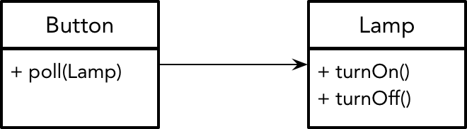
Button 依赖于具体的 Lamp 类，使得按钮只能控制灯泡，导致了二者之间的紧耦合。如果观察 Button 与 Lamp 的协作关系，我们发现按钮操作的是开关，而非灯泡，因而可以提炼出角色接口 Switchable。这个接口代表开和关的能力，只要具备这一能力的设备都可以被按钮控制，例如电视机：
Switchable 接口其实是面向调用者 Button 并根据它需要协作的需求提取的共同特征。只要 turnOn() 与 turnOff() 的共同特征不变，Button 就不会受到影响，二者形成了一种松散耦合的关系。抽象不提供具体实现，我们随时可以提供别的实现去替换它。如此的设计具有扩展性，满足开放封闭原则，即“对于扩展是开放的”。
TVSet 与 Lamp 的互替换性，就是面向对象设计的“多态（Polymorphism）”特征。所谓“多态”，是指对象在不同时刻体现为不同类型的能力。多态体现了角色的互换，就如生活中每个人在不同的场景会扮演不同的角色。以改进后的设计为例，Button 仅知道抽象的 Switchable 接口，poll() 方法操作该类型对象，至于具体类型是 Lamp 还是 TVSet，则取决于调用者究竟创建了哪一个具体类型的对象：
public class Client {
public static void final main(String[] args) {
Button button = new Button();
Switchable switchable = new Lamp();
// 开/关灯
button.poll(switchable);
switchable = new TVSet();
// 开/关电视
button.poll(switchable);
}
}
当然，由于 Client 类的 main() 函数通过 new 关键字分别创建了 Lamp 与 TVSet 具体类的实例，使得 Client 并没有真正摆脱它对具体类的依赖。只要无法彻底绕开对具体对象的创建，抽象就不能完全解决耦合的问题。因此在面向对象设计中，我们会尽量将产生依赖的对象创建工作往外推，直到调用者必须创建具体对象为止。这种把依赖往外推，直到在最外层不得不创建具体对象时，再将依赖从外部传递进来的方式，就是 Martin Fowler 所说的**“依赖注入（Dependency Injection）”**。
例如，下订单业务场景提供了两种插入订单的策略：同步和异步。在插入订单时，还需要用到事务，也有两种类型选择：本地事务和分布式事务。下订单方法的实现者并不知道调用者会选择哪种插入订单的策略，插入订单的实现者也不知道调用者会该选择哪种事务类型。要做到各自的实现者无需关心具体策略或类型的选择，就应该将这些决策向外推：
public interface TransactionScope {
void using(Command command);
}
public class LocalTransactionScope implements TransactionScope {}
public class DistributedTransactionScope implements TransactionScope {}
public interface InsertingOrderStrategy {
void insert(Order order);
}
public class SyncInsertingOrderStrategy implements InsertingOrderStrategy {
// 把对 TransactionScope 的具体依赖往外推
private TransactionScope ts;
// 通过构造函数允许调用者从外边注入依赖
public SyncInsertingOrderStrategy(TransactionScope ts) {
this.ts = ts;
}
public void insert(Order order) {
ts.using(() -> {
// 同步插入订单，实现略
return;
});
}
}
public class AsyncInsertingOrderStrategy implements InsertingOrderStrategy {
// 把对 TransactionScope 的具体依赖往外推
private TransactionScope ts;
// 通过构造函数允许调用者从外边注入依赖
public AsyncInsertingOrderStrategy(TransactionScope ts) {
this.ts = ts;
}
public void insert(Order order) {
ts.using(() -> {
// 异步插入订单，实现略
return;
});
}
}
public class PlacingOrderService {
// 把对 InsertingOrderStrategy 的具体依赖往外推
private InsertingOrderStrategy insertingStrategy;
// 通过构造函数允许调用者从外边注入依赖
public PlacingOrderService(InsertingOrderStrategy insertingStrategy) {
this.insertingStrategy = insertingStrategy;
}
public void execute(Order order) {
insertingStrategy.insert(order);
}
}
从内到外，在 SyncInsertingOrderStrategy 和 AsyncInsertingOrderStrategy 类的实现中，把具体的 TransactionScope 依赖向外推给 PlacingOrderService；在 PlacingOrderService 类中，又把具体的 InsertingOrderStrategy 依赖向外推给潜在的调用者。因此，到底使用何种插入策略和事务类型，与 PlacingOrderService 等提供服务行为的类无关，选择权被交给了最终的调用者。如果使用类似 Spring 这样的依赖注入框架，则可以通过配置或者注解等方式完成依赖的注入。
利用抽象，就可以降低对象之间的耦合度。这就要求我们在设计时，应考虑对外交互的接口而非实现，这就是“面向接口设计”原则。因为客户程序关心的仅仅是对象提供什么功能，而不是功能如何实现，甚至不关心对象的具体类型。这就好比我们连接电源，只需要根据电源插头确定需要什么样的插座即可，不用关心插头与插座内的电线是如何连接的。试想，每次连接电源时都要使用电焊来接通电线，那未免太可怕了：
图片截取自：jrebel.com
面向接口的设计思想与依赖倒置原则不谋而合。该原则要求：高层模块不应该依赖于低层模块，二者都应该依赖于抽象。这一原则在分层架构模式中，得到了淋漓尽致地运用。例如，业务逻辑层的对象就不应该直接依赖于数据访问层的具体实现对象，而应该通过数据访问层的抽象接口进行访问，如下图所示：
如果高层模块直接依赖于低层模块，一旦低层模块发生变化，就会影响到高层模块。高层模块是低层模块的调用者，通过引入抽象，就使得低层模块的实现是可替换的，保证了设计的可扩展性。
依赖倒置原则还要求：抽象不应该依赖于细节，细节应该依赖于抽象。依赖的关系与影响的方向相反，被依赖方处于上游，当上游发生变化时，下游的依赖方就会受到影响。要让下游不受影响，就需要保持上游不变。寄希望于需求的稳定是不现实的，在软件的世界中，唯一不变的就是变化。这就需要引入抽象来封装变化。抽象相对实现细节更加稳定，依赖于抽象可以让整个系统变得更加稳定。故而依赖于抽象，实则是依赖于稳定。这就是所谓的“稳定依赖原则”。城堡是不能修建于沙滩之上的，参与协作的对象、组件或模块也当如此。
抽象不能无的放矢，关键在于识别变化点，只有对可能发生变化的功能进行抽象才是合理的设计。通常，我们将可能发生变化的功能点称之为热点（Hot Spot）。常见的热点包括业务规则、算法策略、外部服务、硬件支持、命令请求、协议标准、数据格式、业务流程、系统配置、界面表现。在领域建模特别是建立领域设计模型时，寻找这些热点是可扩展设计的关键。事实上，Robert Martin 提出的整洁架构就是为外部易变的部分与相对稳定的领域模型划分了清晰的边界，这个边界实则是通过抽象来隔离的。我在《领域驱动战略设计实践》中提到的南向网关，目的就是建立这样的抽象。
领域驱动设计的资源库（Repository）模式，就体现了封装变化的思想。资源库为聚合提供访问数据库的操作，而数据库访问的实现逻辑常常会发生变化，因而属于系统的热点。该热点自身遵循了自治对象的“最小完备”原则，即从职责来看，已经不可细分。为了降低耦合，就应该提取热点的共同特征，建立抽象接口：
如果热点还与其他职责黏合在一个对象中，需遵循自治对象的“稳定空间”原则，分离热点，然后再引入抽象，形成基于接口行为的对象协作方式。领域驱动设计的规格（Specification）模式体现了这一设计思路。业务规则是我们无法控制的，只要外部的需求发生变化，就可能调整业务规则。业务规则又是领域知识的重要组成部分，例如在电商领域，商品促销规则、支付规则、订单有效性验证规则随时都可能调整。这时，就需要将业务规则从领域模型对象中单独分离出来，识别规则的共同特征，为其建立抽象接口。例如电商网站的购物车验证规则，针对国内顾客和国外顾客的购买行为提供了不同的限制：
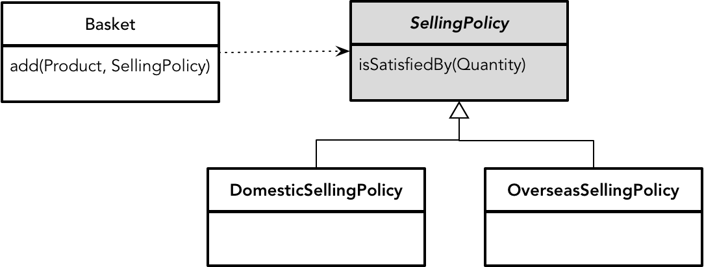
当然，我们也需要克制设计的过度抽象，不要考虑太多不切实际的扩展性与灵活性，避免引入过度设计，毕竟未来是不可预测的。Raphael Malveau 和 Thomas Mowbray 在 Software Architect Bootcamp 中警告了“弹性的弊端”，其症状包括如下几点：
- 过度复杂的工程。如果扩展过程异常复杂，那么实现了弹性的过程则是艰难而容易出错的。
- 许多明文的惯例。有时候，弹性设计具有很多的编码惯例，它们以恼人的细节来阻止你对体系进行破坏。
- 额外的编码。为了使用一种配置性服务，客户端必须参数化其请求。而服务提供者为了处理所有的选项，可能会更加复杂。额外的复杂性可能会堆积在一个弹性接口的两端。
引入抽象的可扩展设计需要结合具体的业务场景做出判断。我们应该首先考虑职责的合理分配，从自治对象的角度保证对象的稳定性，寻找到变化的可能，然后再进行合理的抽象。抽象时，又要从对象分治的角度确保对象之间的协作是不同角色行为之间的协作。此时的角色，就是抽象的潜在目标，即定义可能的角色接口。抽象应保持足够的前瞻性，又必须恰如其分，最好是水到渠成的设计决策。
054 领域模型与函数范式
函数范式
REA 的 Ken Scambler 认为函数范式的主要特征为：模块化（Modularity）、抽象化（Abstraction）和可组合（Composability），这三个特征可以帮助我们编写简单的程序。
通常，为了降低系统的复杂度，都需要将系统分解为多个功能的组成部分，每个组成部分有着清晰的边界。模块化的编码范式需要支持实现者能够轻易地对模块进行替换，这就要求模块具有隔离性，避免在模块之间出现太多的纠缠。函数范式以“函数”为核心，作为模块化的重要组成部分。函数范式要求函数均为没有副作用的纯函数（Pure Function）。在推断每个函数的功能时，由于函数没有产生副作用，就可以不考虑该函数当前所处的上下文，形成清晰的隔离边界。这种相互隔离的纯函数使得模块化成为可能。
函数的抽象能力不言而喻，因为它本质上是一种将输入类型转换为输出类型的转换行为。任何一个函数都可以视为一种转换（Transform），这是对行为的最高抽象，代表了类型（Type）之间的某种动作。极端情况下，我们甚至不用考虑函数的名称和类型，只需要关注其数学本质：f(x) = y。其中，x 是输入，y 是输出，f 就是极度抽象的函数。
函数范式领域模型的核心要素为代数数据类型（Algebraic Data Type，ADT）和纯函数。代数数据类型表达领域概念，纯函数表达领域行为。由于二者皆被定义为不变的、原子的，因此在类型的约束规则下可以对它们进行组合。可组合的特征使得函数范式建立的领域模型可以由简单到复杂，利用组合子来表现复杂的领域逻辑。
代数数据类型
代数数据类型借鉴了代数学中的概念，作为一种函数式数据结构，体现了函数范式的数学意义。通常，代数数据类型不包含任何行为。它利用和类型（Sum Type） 来展示相同抽象概念的不同组合，使用积类型（Product Type） 来展示同一个概念不同属性的组合。
和与积是代数中的概念，它们在函数范式中体现了类型的两种组合模式。和就是加，用以表达一种类型是它的所有子类型之和。例如表达时间单位的 TimeUnit 类型：
sealed trait TimeUnit
case object Days extends TimeUnit
case object Hours extends TimeUnit
case object Minutes extends TimeUnit
case object Seconds extends TimeUnit
case object MilliSeconds extends TimeUnit
case object MicroSeconds extends TimeUnit
case object NanoSeconds extends TimeUnit
说明：由于 Java 并非真正的函数式语言，较难表达一些函数式特性，因此，本节内容的代码使用 Scala 语言作为示例。
在上述模型中，TimeUnit 是对时间单位概念的一个抽象。定义为和类型，说明它的实例只能是以下的任意一种：Days、Hours、Minutes、Seconds、MilliSeconds、MicroSeconds 或 NanoSeconds。这是一种逻辑或的关系，用加号来表示：
type TimeUnit = Days + Hours + Minutes + Seconds + MilliSeconds + MicroSeconds + NanoSeconds
积类型体现了一个代数数据类型是其属性组合的笛卡尔积，例如一个员工类型：
case class Employee(number: String, name: String, email: String, onboardingDate: Date)
它表示 Employee 类型是 (String, String, String, Date) 组合的集合，也就是这四种数据类型的笛卡尔积，在类型语言中可以表达为：
type Employee = (String, String, String, Date)
也可以用乘号来表示这个类型的定义：
type Employee = String * String * String * Date
和类型和积类型的这一特点体现了代数数据类型的组合（Combinable）特性。代数数据类型的这两种类型并非互斥的，有的代数数据类型既是和类型，又是积类型，例如银行的账户类型：
sealed trait Currency
case object RMB extends Currency
case object USD extends Currency
case object EUR extends Currency
case class Balance(amount: BigDecimal, currency: Currency)
sealed trait Account {
def number: String
def name: String
}
case class SavingsAccount(number: String, name: String, dateOfOpening: Date) extends Account
case class BilledAccount(number: String, name: String, dateOfOpening: Date, balance: Balance) extends Account
代码中的 Currency 被定义为和类型，Balance 为积类型。Account 首先是和类型，它的值要么是 SavingsAccount，要么是 BilledAccount；同时，每个类型的 Account 又是一个积类型。
代数数据类型与对象范式的抽象数据类型有着本质的区别。前者体现了数学计算的特性，具有不变性。使用 Scala 的 case object 或 case class 语法糖会帮助我们创建一个不可变的抽象。当我们创建了如下的账户对象时，它的值就已经确定，不可改变：
val today = Calendar.getInstance.getTime
val balance = Balance(10.0, RMB)
val account = BilledAccount("980130111110043", "Bruce Zhang", today, balance)
数据的不变性使得代码可以更好地支持并发，可以随意共享值而无需承受对可变状态的担忧。不可变数据是函数式编程中实践的重要原则之一，它可以与纯函数更好地结合。
代数数据类型既体现了领域概念的知识，同时还通过和类型和积类型定义了约束规则，从而建立了严格的抽象。例如类型组合 (String, String, Date) 是一种高度的抽象，但它却丢失了领域知识，因为它缺乏类型标签，如果采用积类型方式进行定义，则在抽象的同时，还约束了各自的类型。和类型在约束上更进了一步，它将变化建模在一个特定数据类型内部，并限制了类型的取值范围。和类型与积类型结合起来，与操作代数数据类型的函数放在一起，然后利用模式匹配来实现表达业务规则的领域行为。
我们以 Robert Martin 在《敏捷软件开发》一书中给出的薪资管理系统需求为例，利用函数范式的建模方式来说明代数数据类型的优势。需求描述如下：
公司雇员有三种类型。一种雇员是钟点工，系统会按照雇员记录中每小时报酬字段的值对他们进行支付。他们每天会提交工作时间卡，其中记录了日期以及工作小时数。如果他们每天工作超过 8 小时，超过部分会按照正常报酬的 1.5 倍进行支付。支付日期为每周五。月薪制的雇员以月薪进行支付。每个月的最后一个工作日对他们进行支付。在雇员记录中有月薪字段。销售人员会根据他们的销售情况支付一定数量的酬金（Commssion）。他们会提交销售凭条，其中记录了销售的日期和数量。在他们的雇员记录中有一个酬金报酬字段。每隔一周的周五对他们进行支付。
我们现在要计算公司雇员的薪资。从需求看，我们需要建立的领域模型是雇员，它是一个积类型。注意，需求虽然清晰地勾勒出三种类型的雇员，但实则它们的差异体现在收入的类型上，这种差异体现为和类型不同的值。于是，可以得到由如下代数数据类型呈现的领域模型：
// ADT 定义，体现了领域概念
// Amount 是一个积类型，Currency 则为前面定义的和类型
calse class Amount(value: BigDecimal, currency: Currency) {
// 实现了运算符重载，支持 Amount 的组合运算
def +(that: Amount): Amount = {
require(that.currency == currency)
Amount(value + that.value, currency)
}
def *(times: BigDecimal): Amount = {
Amount(value * times, currency)
}
}
//以下类型皆为积类型，分别体现了工作时间卡与销售凭条领域概念
case class TimeCard(startTime: Date, endTimeDate)
case class SalesReceipt(date: Date, amount: Amount)
//支付周期是一个隐藏概念，不同类型的雇员支付周期不同
case class PayrollPeriod(startDate: Date, endDate: Date)
//Income 的抽象表示成和类型与乘积类型的组合
sealed trait Income
case class WeeklySalary(feeOfHour: Amount, timeCards: List[TimeCard], payrollPeriod: PayrollPeriod) extends Income
case class MonthlySalary(salary: Amount, payrollPeriod: PayrollPeriod) extends Income
case class Commission(salary: Amount, saleReceipts: List[SalesReceipt], payrollPeriod: PayrollPeriod)
//Employee 被定义为积类型，它组合的 Income 具有不同的抽象
case class Employee(number: String, name: String, onboardingDate: Date, income: Income)
在定义了以上由代数数据类型组成的领域模型之后，即可将其与领域行为结合起来，例如计算每个雇员的收入。由于 Income 被定义为和类型，它表达的是一种逻辑或的关系，因此它的每个子类型（称为 ADT 变体）都将成为模式匹配的分支。和类型的组合有着确定的值（类型理论的术语将其称之为 Inhabitant），例如 Income 和类型的值为 3，则模式匹配的分支就应该是 3 个，这就使得 Scala 编译器可以检查模式匹配的穷尽性。如果模式匹配缺少了对和类型的值表示，编译器都会给出警告。倘若和类型增加了一个新的值，编译器也会指出所有需要新增 ADT 变体来更新模式匹配的地方。针对 Income 积类型，可以利用模式匹配结合业务规则对它进行解构，代码如下所示：
def calculateIncome(employee: Employee): Amount = employee.income match {
case WeeklySalary(fee, timeCards, _) => weeklyIncomeOf(fee, timeCards)
case MonthlySalary(salary, _) => salary
case Commision(salary, saleReceipts, _) => salary + commistionOf(saleReceipts)
}
calculateIncome() 是一个纯函数，它利用模式匹配，针对 Employee 的特定 Income 类型计算雇员的不同收入。
纯函数
在函数范式中，往往使用纯函数（Pure Function）来表现领域行为。所谓“纯函数”，就是指没有副作用（Side Effects）的函数。《Scala 函数式编程》认为常见的副作用包括：
- 修改一个变量
- 直接修改数据结构
- 设置一个对象的成员
- 抛出一个异常或以一个错误终止
- 打印到终端或读取用户的输入
- 读取或写入一个文件
- 在屏幕上绘画
例如，读取花名册文件对内容进行解析，获得收件人电子邮件列表的函数为：
def parse(rosterPath: String): List[Email] = {
val lines = readLines(rosterPath)
lines.filter(containsValidEmail(_)).map(toEmail(_))
}
代码中的 readLines() 函数需要读取一个外部的花名册文件，这是引起副作用的一个原因。该副作用为单元测试带来了影响。要测试 parse() 函数，就需要为它事先准备好一个花名册文件，增加了测试的复杂度。同时，该副作用使得我们无法根据输入参数推断函数的返回结果，因为读取文件可能出现一些未知的错误，如读取文件错误，又或者有其他人同时在修改该文件，就可能抛出异常或者返回一个不符合预期的邮件列表。
要将 parse() 定义为纯函数，就需要分离这种副作用，函数的计算结果就不会受到任何内部或外部过程状态改变的影响。一旦去掉副作用，调用函数返回的结果就与直接使用返回结果具有相同效果，二者可以互相替换，这称之为“引用透明（Referential Transparency）”。引用透明的替换性可以用于验证一个函数是否是纯函数。假设客户端要根据解析获得的电子邮件列表发送邮件，解析的花名册文件路径为 roster.txt。假定解析该花名册得到的电子邮件列表为：
List(Email("liubei@dddcompany.com"), Email("guanyu@dddcompany.com"))
如果 parse() 是一个纯函数，就需要遵循引用透明的原则，则如下函数调用的行为应该完全相同：
// 调用解析方法
send(parse("roster.txt"))
// 直接调用解析结果
send(List(Email("liubei@dddcompany.com"), Email("guanyu@dddcompany.com")))
显然并非如此。后者传入的参数是一个电子邮件列表，而前者除了提供了电子邮件列表之外，还读取了花名册文件。函数获得的电子邮件列表不是由花名册文件路径决定的，而是由读取文件的内容决定。读取外部文件的这种副作用使得我们无法根据确定的输入参数推断出确定的计算结果。要将 parse() 改造为支持引用透明的纯函数，就需要分离副作用，即将产生副作用的读取外部文件功能推向 parse() 函数外部：
def parse(content: List[String]): List[Emial] =
content.filter(containsValidEmail(_)).map(toEmail(_))
现在，以下代码的行为就是完全相同的：
send(parse(List("liubei, liubei@dddcompany.com", "noname", "guanyu, guanyu@dddcompany.com")))
send(List(Email("liubei@dddcompany.com"), Email("guanyu@dddcompany.com")))
这意味着改进后的 parse() 可以根据输入结果推断出函数的计算结果，这正是引用透明的价值。**保持函数的引用透明，不产生任何副作用，是函数式编程的基本原则。**如果说面向对象设计需要将依赖尽可能向外推，最终采用依赖注入的方式来降低耦合；那么，函数式编程思想就是要利用纯函数来隔离变化与不变，内部由无副作用的纯函数组成，纯函数将副作用向外推，形成由不变的业务内核与可变的副作用外围组成的结构：
具有引用透明特征的纯函数更加贴近数学中的函数概念：没有计算，只有转换。转换操作不会修改输入参数的值，只是基于某种规则把输入参数值转换为输出。输入值和输出值都是不变的（Immutable），只要给定的输入值相同，总会给出相同的输出结果。例如我们定义 add1() 函数：
def add1(x: Int):Int => x + 1
基于数学函数的转换（Transformation）特征，完全可以翻译为如下代码：
def add1(x: Int): Int => x match {
case 0 => 1
case 1 => 2
case 2 => 3
case 3 => 4
// ...
}
我们看到的不是对变量 x 增加 1，而是根据x 的值进行模式匹配，然后基于业务规则返回确定的值。这就是纯函数的数学意义。
引用透明、无副作用以及数学函数的转换本质，为纯函数提供了模块化的能力，再结合高阶函数的特性，使纯函数具备了强大的组合（Combinable）特性，而这正是函数式编程的核心原则。这种组合性如下图所示：
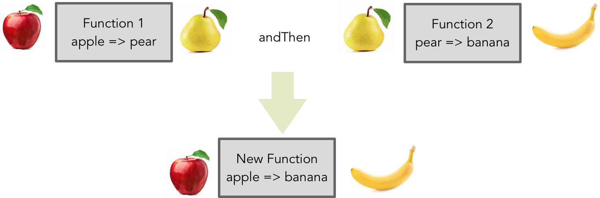
图中的 andThen 是 Scala 语言提供的组合子，它可以组合两个函数形成一个新的函数。Scala 还提供了 compose 组合子，二者的区别在于组合函数的顺序不同。上图可以表现为如下 Scala 代码：
sealed trait Fruit {
def weight: Int
}
case class Apple(weight: Int) extends Fruit
case class Pear(weight: Int) extends Fruit
case class Banana(weight: Int) extends Fruit
val appleToPear: Apple => Pear = apple => Pear(apple.weight)
val pearToBanana: Pear => Banana = pear => Banana(pear.weight)
// 使用组合
val appleToBanana = appleToPear andThen pearToBanana
组合后得到的函数类型，以及对该函数的调用如下所示：
scala> val appleToBanana = appleToPear andThen pearToBanana
appleToBanana: Apple => Banana = <function1>
scala> appleToBanana(Apple(15))
res0: Banana = Banana(15)
除了纯函数的组合性之外，函数式编程中的 Monad 模式也支持组合。我们可以简单地将一个 Monad 理解为提供 bind 功能的容器。在 Scala 语言中，bind 功能就是 flatMap 函数。可以简单地将 flatMap 函数理解为是 map 与 flattern 的组合。例如，针对如下的编程语言列表：
scala> val l = List("scala", "java", "python", "go")
l: List[String] = List(scala, java, python, go)
对该列表执行 map 操作，对列表中的每个元素执行 toCharArray() 函数，就可以把一个字符串转换为同样是 Monad 的字符数组：
scala> l.map(lang => lang.toCharArray)
res7: List[Array[Char]] = List(Array(s, c, a, l, a), Array(j, a, v, a), Array(p, y, t, h, o, n), Array(g, o))
map 函数完成了从 List[String] 到 List[Array[Char]] 的转换。对同一个列表执行相同的转换函数，但调用 flatMap 函数：
scala> l.flatMap(lang => lang.toCharArray)
res6: List[Char] = List(s, c, a, l, a, j, a, v, a, p, y, t, h, o, n, g, o)
flatMap 函数将字符串转换为字符数组后，还执行了一次拍平操作，完成了 List[String] 到 List[Char] 的转换。
然而在 Monad 的真正实现中，flatMap 并非 map 与 flattern 的组合，相反，map 函数是 flatMap 基于 unit 演绎出来的。因此，Monad 的核心其实是 flatMap 函数：
class M[A](value: A) {
private def unit[B] (value : B) = new M(value)
def map[B](f: A => B) : M[B] = flatMap {x => unit(f(x))}
def flatMap[B](f: A => M[B]) : M[B] = ...
}
flatMap、map 和 filter 往往可以组合起来，实现更加复杂的针对 Monad 的操作。一旦操作变得复杂，这种组合操作的可读性就会降低。例如，我们将两个同等大小列表中的元素项相乘，使用 flatMap 与 map 的代码为：
val ns = List(1, 2)
val os = List(4, 5)
val qs = ns.flatMap(n => os.map(o => n * o))
这样的代码并不好理解。为了提高代码的可读性，Scala 提供了 for-comprehaension。它本质上是 Monad 的语法糖，组合了 flatMap、map 与 filter 等函数；但从语法上看，却类似一个 for 循环，这就使得我们多了一种可读性更强的调用 Monad 的形式。同样的功能，使用 for-comprehaension 语法糖就变成了：
val qs = for {
n <- ns
o <- os
} yield n * o
这里演示的 for 语法糖看起来像是一个嵌套循环，分别从 ns 和 os 中取值，然后利用 yield 生成器将计算得到的积返回为一个列表；实质上，这段代码与使用 flatMap 和 map 的代码完全相同。
在使用纯函数表现领域行为时，我们可以让纯函数返回一个 Monad 容器，再通过 for-comprehaension 进行组合。这种方式既保证了代码对领域行为知识的体现，又能因为不变性避免状态变更带来的缺陷。同时，结合纯函数的组合子特性，使得代码的表现力更加强大，非常自然地传递了领域知识。例如，针对下订单场景，需要验证订单，并对验证后的订单进行计算。验证订单时，需要验证订单自身的合法性、客户状态以及库存；对订单的计算则包括计算订单的总金额、促销折扣与运费。
在对这样的需求进行领域建模时，我们需要先寻找到表达领域知识的各个原子元素，包括具体的代数数据类型和实现原子功能的纯函数：
// 积类型
case class Order(id: OrderId, customerId: CustomerId, desc: String, totalPrice: Amount, discount: Amount, shippingFee: Amount, orderItems: List[OrderItem])
// 以下是验证订单的行为，皆为原子的纯函数，并返回 scalaz 定义的 Validation Monad
val validateOrder : Order => Validation[Order, Boolean] = order =>
if (order.orderItems isEmpty) Failure(s"Validation failed for order $order.id")
else Success(true)
val checkCustomerStatus: Order => Validation[Order, Boolean] = order =>
Success(true)
val checkInventory: Order => Validation[Order, Boolean] = order =>
Success(true)
// 以下定义了计算订单的行为，皆为原子的纯函数
val calculateTotalPrice: Order => Order = order =>
val total = totalPriceOf(order)
order.copy(totalPrice = total)
val calculateDiscount: Order => Order = order =>
order.copy(discount = discountOf(order))
val calculateShippingFee: Order => Order = order =>
order.copy(shippingFee = shippingFeeOf(order))
这些纯函数是原子的、分散的、可组合的，接下来就可以利用纯函数与 Monad 的组合能力，编写满足业务场景需求的实现代码：
val order = ...
// 组合验证逻辑
// 注意返回的 orderValidated 也是一个 Validation Monad
val orderValidated = for {
_ <- validateOrder(order)
_ <- checkCustomerStatus(order)
c <- checkInventory(order)
} yield c
if (orderValidated.isSuccess) {
// 组合计算逻辑，返回了一个组合后的函数
val calculate = calculateTotalPrice andThen calculateDiscount andThen calculateShippingFee
// 返回具有订单总价、折扣与运费的订单对象
// 在计算订单的过程中，订单对象是不变的
val calculatedOrder = calculate(order)
// ...
}
函数范式与领域模型
遵循函数范式建立领域模型时，代数数据类型与纯函数是主要的建模元素。代数数据类型中的和类型与积类型可以表达领域概念，纯函数则用于表达领域行为。它们都被定义为不变的原子类型，然后再将这些原子的类型与操作组合起来，满足复杂业务逻辑的需要。这是函数式编程中面向组合子（Combinator）的建模方法，它与面向对象的建模方法存在思想上的不同。
面向对象的建模方法是一种归纳法，通过分析和归纳需求，找到问题域并逐级分解问题，然后通过对象来表达领域逻辑，并以职责的角度分析这些领域逻辑，按照角色把职责分配给各自的对象，通过对象之间的协作实现复杂的领域行为。面向组合子的建模方法则是一种演绎法，通过在领域需求中寻找和定义最基本的原子操作，然后根据基本的组合规则将这些原子类型与原子函数组合起来。
因此，函数范式对领域建模的影响是全方位的，它与对象范式看待世界的角度迥然不同。对象范式是在定义一个完整的世界，然后以上帝的身份去规划各自行使职责的对象；函数范式是在组合一个完整的世界，它就像古代哲学家一般，看透了物质的本原而识别出不可再分的原子微粒，然后再按照期望的方式组合这些微粒来创造世界。故而，采用函数范式进行领域建模，关键是组合子包括组合规则的设计，既要简单，又要完整，还需要保证每个组合子的正交性，如此才能对其进行组合，互不冗余，互不干涉。这些组合子，就是前面介绍的代数数据类型和纯函数。
通过前面给出的案例，我们发现函数范式的领域模型颠覆了面向对象思想中“贫血模型是坏的”这一观点。事实上，函数范式的贫血模型不同于结构范式和对象范式的贫血模型。结构范式是将过程与数据分离，这些过程实现的是一个完整的业务场景，由于缺乏完整的封装性，因而无法控制过程与数据的修改对其他调用者带来的影响。对象范式要求将数据与行为封装在一起，就是为了解决这一问题。函数范式虽然建立的是贫血模型，但它的模块化、抽象化与可组合特征降低了变化带来的影响。在组合这些组合子时，通过引入高内聚松耦合的模块对这些功能进行分组，就能避免细粒度的组合子过于散乱，形成更加清晰的代码层次。
Debasish Ghosh 总结了函数范式的基本原则，用以建立更好的领域模型：
- 利用函数组合的力量，用小函数组装成一个大函数，获得更好的组合性。
- 纯粹，领域模型的很多部分都由引用透明的表达式组成。
- 通过方程式推导，可以很容易地推导和验证领域行为。
不止如此，根据代数数据类型的不变性，以及对模式匹配的支持，它还天生适合表达领域事件。例如地址变更事件，就可以用一个积类型来表示：
case class AddressChanged(eventId: EventId, customerId: CustomerId, oldAddress: Address, newAddress: Address, occurred: Time)
我们还可以用和类型对事件进行抽象，这样就可以在处理事件时运用模式匹配：
sealed trait Event {
def eventId: EventId
def occurred: Time
}
case class AddressChanged(eventId: EventId, customerId: CustomerId, oldAddress: Address, newAddress: Address, occurred: Time) extends Event
case class AccountOpened(eventId: EventId, Account: Account, occurred: Time) extends Event
def handle(event: Event) = event match {
case ac: AddressChanged => ...
case ao: AccountOpened => ...
}
函数范式中的代数数据类型仍然可以用来表示实体和值对象，但它们都是不变的，二者的区别主要在于是否需要定义唯一标识符。聚合的概念仍然存在，如果使用 Scala 语言，往往会为聚合定义满足角色特征的 trait，这样就可以使得聚合的实现通过混入多个 trait 来完成代数数据类型的组合。由于资源库（Repository）会与外部资源进行协作，意味着它会产生副作用，因此遵循函数式编程思想，往往会将其推向纯函数的外部。在函数式语言中，可以利用柯里化（Currying，又译作咖喱化）或者 Reader Monad 来推迟对资源库具体实现的注入。
主流的领域驱动设计往往以对象范式作为建模范式，利用函数范式建立的领域模型多多少少显得有点“另类”，因此我将其称之为非主流的领域驱动设计。这里所谓的“非主流”，仅仅是从建模范式的普及性角度来考虑的，并不能说明二者的优劣与高下之分。事实上，函数范式可以很好地与事件驱动架构结合在一起，这是一种以领域事件作为模型驱动设计的驱动力思想。针对事件进行建模，则任何业务流程皆可用状态机来表达。状态的迁移，就是命令（Command）或者决策（Decision）对事件的触发。我们还可以利用事件风暴（Event Storming）帮助我们识别这些事件，而事件的不变性特征又可以很好地与函数式编程结合起来。
如果采用命令查询职责分离（CQRS）模式，那么在命令端，将由命令与事件组成一系列异步的非阻塞消息流。这种对消息的认识，恰好可以与响应式编程（Reactive Programming）结合起来。诸如 ReactiveX 这样的响应式编程框架在参考了迭代器模式与观察者模式的基础上，结合了函数式编程思想，以事件处理的形式实现了异步非阻塞处理，在满足系统架构灵活性与伸缩性的同时，提高了事件处理的响应能力。
显然，围绕着不变的事件为中心，包括响应式编程、事件风暴、事件溯源与命令查询职责分离模式都可以与函数范式有效地结合起来，形成一种事件模型驱动设计（Event Model Driven Design，EDDD）方法。与事件驱动架构不同，事件模型驱动设计可以算是领域驱动设计的一种分支。作为一种设计方法学，它的实践与模式同样涵盖了战略设计与战术设计等多个层次，且可以与领域驱动设计的模式如限界上下文、领域事件、领域服务等结合起来。在金融、通信等少数领域，已经开始了对这种建立在函数范式基础之上的领域驱动设计的尝试，与它们相关的知识可以写成厚厚的一本大书，在这里就不再赘述了。
055 领域驱动分层架构与对象模型
我在《领域驱动设计实践（战略篇）》中深入探讨了领域驱动设计中分层架构的演化，最终得到了如下图所示的领域驱动分层架构：
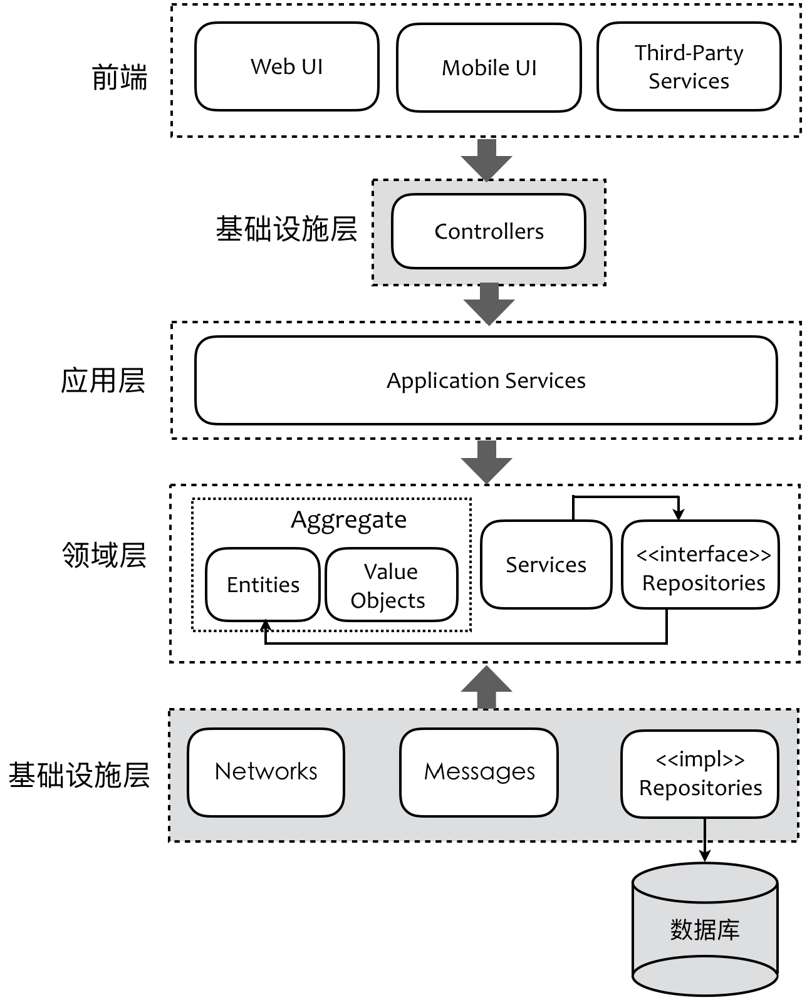
如果采用对象范式，那么，分层架构每一层的对象模型应该如何设计呢？由于分层架构属于解决方案域中的设计方案，故而逻辑分层中的对象模型对应于设计模型。其中，位于应用层和领域层中对象模型表达了领域知识，属于领域设计模型中的一部分。对于基础设施层，它们的对象模型又该怎样与领域设计模型中的对象协作呢？
显然，由于基础设施层的南向网关与北向网关扮演的角色并不相同，它们所服务的调用者存在明显的差别。南向网关中的资源库实现会与数据库交互，主要的调用者为领域服务或应用服务，故而需要提供持久化操作的数据对象。北向网关则服务于前端或外部调用者，属于服务模型驱动设计中定义的远程服务对象。在领域模型驱动设计的背景下，这些扮演不同角色的对象模型该怎么定义呢？
数据对象模型
在推导领域驱动分层架构时，经典三层架构中位于数据访问层的贫血模型对象就是数据访问对象（Data Access Object，DAO）要操作的数据对象，它们与数据表具有一一对应的关系。在前面讲解的数据模型驱动设计中，我将其称之为“贫血的持久化对象”。在领域驱动设计的语境下，如果你采用了对象范式，则普遍认为这样的贫血模型是不恰当的。
假设我们已经拥有了设计优雅而漂亮的领域对象模型。在这个领域对象模型中，实体与值对象拥有需要持久化的数据。不仅如此，它们还拥有分配合理的行为职责；粒度也恰如其分，没有被定义为违背单一职责原则的上帝类。通过继承和组合，它们组成了一张职责平衡、协作合理的具有层级的对象图（Object Graph）。显然，层级的对象图结构与扁平的关系数据表并非完全对应的关系。
这些定义了领域行为的领域对象还能用作持久化吗？
当然可以！为什么拥有行为的对象就不能用作持久化呢？当一个领域对象既拥有数据又拥有操作数据的行为时，就会天然将业务逻辑和持久化隔离到不同的层次。以修改员工地址为例，领域服务、聚合、资源库以及资源库实现之间的协作关系如下图所示：
左侧是领域服务、聚合之间的协作，表达的业务逻辑是验证地址与修改地址，它会在验证通过后修改内存中 Employee 实体对象的属性。这是一个完全纯业务的操作。倘若计算机具有超强稳定的处理能力，执行了 Employee 的 relocateTo() 方法后，业务就执行完毕了。但是，由于内存存储可能丢失数据，对象在内存中的驻留也会占用不必要的空间，因此需要利用数据库对修改地址后的 Employee 对象进行持久化，即上图右侧所示。为了隔离业务与技术实现，领域驱动设计引入了资源库抽象，如上图中间部分的 EmployeeRepository 接口。它通过抽象隔离了领域对象模型与基础设施之间的交互，因此在进行领域分析建模与设计建模时，并不需要考虑右侧的资源库实现。至于如何实现资源库，就是持久化框架该做的事情了，例如针对关系型数据库而言，就有诸如 Spring Data JPA、MyBatis、Hibernate、jOOQ 等 ORM 框架。
要实现领域对象模型与关系型数据库的数据表之间的映射，确实比较棘手。通常，我们需要在设计与实现阶段尽量保持二者的一致性。所谓“保持一致”，并不是说为二者建立一对一的映射关系，因为领域建模需要满足面向对象的设计原则，粒度必然存在差异，但组合或继承的多个对象的边界（通常是领域设计模型中的实体对象）与数据表的边界是重合的。至于如何处理对象间的组合与继承关系，正是 ORM 需要考虑的环节。我会在第四部分《领域实现模型》中专门讲解领域对象持久化的问题。
例如在一个银行的客户管理系统中，定义了如下数据表：
- Profile：客户表，存储了客户的基本信息
- Address：一对一关联 Profile，存储客户的地址信息
- Contact：存储如电子邮件、电话等联系信息
- Individual：个人客户，为客户的一种
- Organization：组织级客户，为客户的另一种
- Host_Product_System：银行系统的产品列表
- Profile_HPS_Customer：是 Profile 和 Host_Product_System 的关联表
它们之间的关系如下图所示：
在领域对象模型中，Profile 实体聚合了 Address 与 Contact 值对象，同时，它又是 Individual 实体与 Organization 实体的父类。虽然 Individual 实体与 Organization 实体有着共同的父类，但它们却属于两个不同的聚合，并作为聚合的根实体。IndividualRepository 与 OrganizationRepository 分别负责这两个聚合的持久化。HostProductSystem 是另外一个聚合，在聚合的边界内，只有 HostProductSystem 一个实体。
Profile 与 HostProductSystem 之间存在多对多关系：一个客户可以购买多个银行产品，一个银行产品可以被多个客户购买。在数据库层面，通过引入 Profile_HPS_Customer 关联表维护了这种多对多关系。由于 Profile_HPS_Customer 关联表并没有体现领域概念，属于关系数据库的技术因素，因此在领域对象模型中，并不需要为其定义对应的领域对象。倘若采用领域驱动设计，在没有考虑数据库的情况下建立领域模型，自然不该定义该对象。不用担心持久化的问题，JPA 规范定义了 @ManyToMany 支持多对多的映射。如果考虑到聚合的设计原则，还可以利用聚合的查询方法来代替对象引用的形式。我会在《领域模型与持久化》一节中详细讲解持久化的实现机制。
因此，针对相同的业务场景，我们定义的领域对象模型如下图所示：
显然，针对相同的领域逻辑，数据模型与领域模型并不相同，但从边界来看，二者又是重合的。例如 Individual、Organization 与 Profile 的继承关系，在数据库中，采用了“类继承表”的方式来实现，即为父类和子类都建立了一个对应的表，然后在子表中设置该子表为父表关联的外键。因此，当我们建立了领域对象模型后，就没有必要再为其建立一套对应的持久化对象。领域对象是拥有领域行为的领域模型，属于领域层，但同时又可以作为持久化对象满足持久化的需求。二者的边界是逻辑上的隔离，资源库抽象在其中扮演关键角色。
服务对象模型
在分层架构中，扮演北向网关的远程服务会因为消费者和通信机制的不同，形成不同的架构风格。前面在分层架构中提到的“控制器”仅仅是其中一种表现形式，它履行了 MVC 模式中控制视图与模型之间协作的职责。控制器可以基于 REST 服务框架实现，因为运用了面向资源的软件架构设计原则，也可以称之为资源（Resource）对象。为了避免概念上的混淆，我倾向于将面向 UI 客户端的 REST 服务定义为 Controller，而将面向非 UI 客户端的 REST 服务定义为 Resource。
当面向 UI 客户端时，为了减少前端开发的业务逻辑，避免不必要的重复代码，远程服务最好能为前端 UI 直接提供绑定视图（View）的模型对象。然而，现实并不总是那么如意，由于前端与后端的观察视角有着本质的差异，后端开发人员在设计为 UI 提供的后端服务时，总是不够体贴。如果定义的远程服务既要应对各种前端 UI 的请求，又要面对其他客户端包括下游服务的请求，则服务接口的设计就很难做到面面俱到。当前社区对此的应对方案是在后端远程服务与前端 UI 之间再引入一个间接的服务。该服务的接口设计专为前端服务，但本质上又属于后端服务，因而被称之为 BFF（Backend For Frontend）服务。
当面向非 UI 客户端时，未必一定采用 REST 架构风格提供远程服务，即远程服务未必是资源。若采用 RPC+ProtocolBuffer 的通信协议与消息协议，我们会将服务定义为供应者（Provider），它的调用者则为消费者（Consumer）。这是远程服务的 Provider/Consumer 模式，例如 Dubbo 框架设计的远程服务就遵循这一模式。
无论是控制器、资源还是供应者，都需要定义消息协议。消息分为请求消息（Request Message）和响应消息（Response Message）。请求消息包括命令消息（Command Message）和查询消息（Query Message）。若采用事件驱动架构，还包括事件消息。由于事件的端口并非远程服务，因此服务对象模型并没有包含事件消息。
响应消息与请求消息的类型有关，也与客户端与远程服务的协作模式有关。常见的协作模式包括请求/响应（Request/Response）模式和即发即忘（Fire-and-Forget）模式。查询消息一定采用请求/响应模式，视客户端的不同，响应消息可以分为面向 UI 客户端的视图模型和面向非 UI 客户端的数据契约。命令消息可以采用请求/响应模式，返回的响应消息为命令结果；采用即发即忘模式时，没有响应消息返回。下图是服务对象模型的组成：
理清服务对象模型非常有必要，因为这牵涉到各种对象之间的协作。不同的远程服务，在分层架构的位置和它承担的职责也不相同。假设我们需要为 UI 客户端引入专门的 BFF 服务，那么整个服务对象模型与客户端的调用关系体现为：
远程服务的定义受到架构模式、通信协议的影响，同时也与服务的消费者有直接关系。关于服务之间的集成与通信，我会在本课程第五部分《融合：战略设计与战术设计》深入讲解，在本节，我主要就服务对象模型中较容易混淆的视图模型对象与数据契约对象作深入阐述。
视图模型对象
在服务对象模型中，远程服务若定义为控制器服务对象，面向的客户端就是前端 UI。目前流行的前端框架都遵循 MVC 模式或其变种 MVP 与 MVVM 模式，并采用单页面应用（Single Page Application）的前端开发范式。前端呈现的内容由后端服务提供，即视图模型对象。对于一个典型的前后端分离架构，倘若采用单页面应用，则前后端各对象之间的交互方式大抵如下图所示：
如果后端的控制器服务返回的就是前端需要的视图模型，就能恰好满足前端视图的呈现需求，使得前端开发变得简单。若后端服务在满足 UI 客户端的同时，还需要同时满足下游服务的消费请求，定义的消息对象就很难做到鱼与熊掌兼得。例如，后端提供了 AnalysisResultResource 服务，它接受客户端发送的数据分析请求，包括执行分析需要的维度、指标以及过滤条件。接到请求后，后端服务会根据请求生成 Spark 支持的 SQL 语句，并交由 Spark 的工作器执行数据分析，并将分析后的结果返回。分析结果如下所示：
{
"viewId": "d6da80bf-4100-45c5-86c7-6ca57e0f7603",
"rows": [
["IPhone", 1820],
["Huawei", 1932],
["Oppo", 901],
["Vivo", 934],
["Samsung", 129],
["Others", 1330]
]
}
分析结果为报表的指标统计数据，属于服务与客户端之间确定的服务契约的一部分，但它表达的其实是服务的数据契约，而非视图模型。当调用者为前端 UI，并通过 EChart 对分析结果进行可视化时，如上的分析结果就不符合视图呈现的要求，需要前端对响应消息做进一步转换。这会加重前端开发的负担。若前端需要支持的客户端不止限于 Web 客户端，还包括不同系统的移动客户端，就需要在多个前端应用中重复实现该转换逻辑，导致重复开发。如果该服务返回的结果直接面向前端，例如支持 EChart 的可视化呈现，就可以定义为视图模型对象：
option = {
xAxis: {
type: 'category',
data: ['IPhone', 'Huawei', 'Oppo', 'Vivo', 'Samsung', 'Others']
},
yAxis: {
type: 'value'
},
series: [{
data: [1820, 1932, 901, 934, 129, 1330],
type: 'line'
}]
};
后端服务直接返回视图模型对象会导致前端 UI 呈现与后端服务的耦合。例如，当我们放弃使用 EChart 改为 D3 来显示可视化图表时，就会因为前端呈现的变化引起后端服务的修改，这违背了服务的自治性。倘若在后端服务之上引入 BFF 服务，就可以隔离前端与服务的耦合，又可以实现由分析服务返回的数据契约对象向 EChart 视图模型的转换，使得前端 UI 可以直接绑定和呈现视图模型对象。
如果前端 UI 既要支持移动端，又要支持 Web 端，且 UI 交互与呈现存在较大差异，还可以为不同的前端提供不同的 BFF 服务，返回的视图模型对象也不相同，甚至针对相同业务的相同移动端，由于使用者的角色不同，用户体验和关注内容有所不同，BFF 返回的视图模型定义也会有所不同。
BFF 服务的契约可以由前后端开发人员共同商定，但由于前端开发人员更了解前端 UI 与用户体验，因此最佳选择是由前端人员来开发和实现 BFF 服务。考虑到前端多为 JavaScript 开发人员，因而常常会选择 KOA 或 Express 这样的基于 Node.js 实现的 REST 框架来定义 REST 服务。近来，同样基于 JS 的 GraphQL 逐渐成为了实现 BFF 服务的新宠。相较于 REST 服务，GraphQL 提供了不同的思路。例如，它为了解决 API 接口爆炸的问题，通过暴露单个服务 API 接口，可以将多个 HTTP 请求聚合成一个请求，然后在单个请求中执行多个查询。GraphQL 实现的 BFF 服务就像一个统一的网关，由它提供全量字段，前端可按需获取，还可以通过增加新类型和基于这些类型的新字段添加新功能，不会造成兼容性问题。
数据契约对象
当位于下游的消费者调用服务的目的不是为了视图呈现时，交互的消息对象为“数据契约对象”，它将持有业务行为需要的数据。为了避免重复定义，我们可否像对待持久化对象那样，直接将领域层的领域对象作为数据契约对象呢？
这需要从两个层次递进地思考：
- 领域层定义的领域对象是否满足客户端的调用需求？
- 若满足需求，直接将领域对象暴露给外部调用者，是否合理？
这两个问题均牵涉到一个模式——数据传输对象（DTO）模式。DTO 模式最早运用于 J2EE，Martin Fowler 将其定义为：用于在进程间传递数据的对象，目的是为了减少方法调用的数量。因此，DTO 模式诞生的背景在于分布式通信。考虑到网络传输的损耗与不可靠性，设计分布式服务需遵循一个总体原则：尽可能设计粗粒度的服务，每个服务的方法应代表一个完整的功能，而不是功能的一个步骤。粗粒度服务可以减少服务调用的次数，从而减少不必要的网络通信，同时也能避免对分布式事务的支持。
粗粒度的服务自然需要返回粗粒度的数据对象。领域对象遵循面向对象设计原则，通过细粒度来分离职责，因而无法满足粗粒度服务契约的要求。这就需要对领域对象进行封装，组合更多的细粒度对象形成一个粗粒度的数据传输对象。这就是数据传输对象（DTO）存在的意义。
当然，领域对象在某些业务场景也能够满足服务契约的要求。但基于以下原因，我并不建议直接将领域对象暴露给外部消费者：
- 通信机制：领域对象通常是在进程内传递，不需要支持序列化与反序列化。为了支持分布式通信而引入序列化，会在一定程度上对领域对象造成污染，更何况部分敏感数据在序列化时还需要过滤，例如用户的密码信息。
- 安全因素：领域驱动设计提倡避免贫血模型，且多数领域实体对象并非不可变的值对象。若作为数据传输对象暴露给外部服务，调用者可能会绕过服务方法直接调用领域对象封装的行为，或者通过 set 方法修改其数据。
- 变化隔离：若将领域对象直接暴露，就可能受到外部调用请求变化的影响。领域逻辑与外部调用的变化方向往往不一致，因而需要一层间接的对象来隔离这种变化。
引入数据传输对象自然是有代价的。我们需要定义一个与领域对象相似度极高的对象，同时还需要编写代码完成数据传输对象的组装，即 Martin Fowler 为 DTO 模式引入的装配器（Assembler）对象。注意，数据传输对象并不具备业务行为，通常应定义为不可变对象。
若需要装配数据传输对象，装配的职责应该放在分层架构的哪一层呢？我在战略设计中讨论过分层架构中各层的职责与其协作关系。在分布式系统中，提供远程调用的分布式服务与领域驱动设计中的应用服务虽然皆为领域逻辑的外观，但二者应视作不同的概念。分布式服务由于需要调用分布式框架，如 REST 框架或 RPC 框架等，属于基础设施层的范畴，应构建在应用层之上。如果站在整洁架构的角度看，这些远程服务都属于应用层的外部。为了更好地体现服务的意义，可以将其笼统称之为“服务层”。服务层中包含 REST 服务的资源、控制器以及 RPC 服务的供应者。本质上，它们就是上下文映射中的开放主机服务（OHS）。
引入数据传输对象的主要目的是支持远程服务调用，如果客户端就在本地，例如运行在同一进程中的下游限界上下文，就可以直接调用应用层的应用服务。应用服务负责对领域逻辑的封装与协调，满足完整的用例需求。显然，服务层和应用层虽然都是提供完整功能的业务服务，但前者对外，后者对内，各有其清晰的职责。有时候，针对一些粒度小的微服务，也可以考虑将二者合二为一，让分层架构变得更简单。
如果将服务层与应用层分开，遵循整洁架构的思想，位于外部的服务层依赖于内部的应用层和领域层。由于 DTO 装配器需要访问领域对象进行装配，装配后的 DTO 被服务层的远程服务使用，而装配 DTO 的逻辑又不属于领域逻辑的一部分，故而服务层和应用层都可以作为 DTO 以及 DTO 装配器的栖身之所。下图将二者放到了服务层：
DTO 本身作为一种模式，表达的是对远程服务数据的封装，因而它既可以用于 UI 客户端，又可以用于非 UI 客户端。为了更好地区分远程服务以及它的协作模式与数据定义，在本课中，我不再使用 DTO 这个术语，而是根据服务角色与客户端的不同，分别定义为视图模型对象和数据契约对象。这两种不同的对象模型满足了外部调用者对不同远程服务的要求。
056 统一语言与领域分析模型
无论你采用什么样的软件开发过程，对于一个复杂的软件系统，都必然需要通过分析阶段对问题域展开分析，如此才能有的放矢地针对该软件系统的需求寻找设计上的解决方案。在领域驱动设计中，分析阶段完全围绕着“领域”为中心展开，最终获得的领域模型即领域分析模型。开发团队应该与领域专家一起分析系统的用户需求，然后建立初步的领域分析模型。在进行分析建模时，一个重要参考是整个系统的统一语言（Ubiquitous Language）。
统一语言与领域分析模型
回顾领域驱动的战略设计阶段，我们引入了敏捷开发的先启（Inception）实践促进团队与领域专家以及客户的充分交流。先启阶段的如下活动与提炼领域知识直接相关：
通过先启阶段，团队对整个系统的范围、目标与愿景达成了一致，并通过展开识别核心领域（Core Domain）与子领域（Sub Domain）对问题域进行了合理的分解。问题域的识别与分解在一定程度上降低了系统的业务复杂度。针对核心领域，结合识别出来的史诗级故事与主故事，我们利用领域场景分析来提炼领域知识，获得整个系统的统一语言。
在领域驱动设计中，怎么强调统一语言都不为过！无论是在战略阶段还是战术阶段，我们都能看到统一语言的身影。它是战略设计阶段的重要模式，可以帮助我们梳理业务知识，以此来识别问题域。在识别限界上下文时，是统一语言提出了概念边界，才给了我们判断限界上下文边界的标准。领域模型所要表达的业务概念更是要遵守统一语言，保证分析模型、设计模型与实现模型的一致性。统一语言是领域模型的核心参考！
因此，当我们想要获得领域分析模型时，首先需要参考的就是统一语言，它可以有效地帮助我们识别出整个模型中最核心也是最基本的显式领域概念。
那么统一语言到底出现在哪里？它似乎无处不在，然而正因为此，又似乎缺乏足够明确的规范。就我个人理解，所谓“统一语言”，并非某一种固定格式的交付物，而是领域驱动设计过程中无形的最高设计准绳。为了保证分析与设计的质量，我们需要不停地追问：
- 我们设计的模型符合统一语言吗？
- 限界上下文的领域概念遵循统一语言吗？
- 类名与方法名满足统一语言的规范吗？
这就好比你开车到一个陌生的城市。统一语言就是地图导航，不停地发出声音提醒你行进的方向，当你驶入错误的地方时，它也会及时地修正路线，然后给予你正确的提示。
我在为一家物流公司提供领域驱动咨询时，发现他们对运输的定义未曾形成统一语言。他们认为运输是一个单段运输，整体的一个多式联运则被认为是一项委托。表面看来，委托是客户提出的需求订单，然而经过我和他们一起分析领域概念，发现承运人在确认委托时，需要对整个运输过程制定计划。这个运输可能是从 A 到 B 的铁路运输，也可能是 B 到 C 的公路运输。从 A 到 C 的运输被视为一个多式联运的委托，其中 B 为铁路堆场，C 为货站。由于没有确定统一语言，团队对运输和委托的领域概念混淆不清。
经过分析，我们一致认为应该将运输（Shipment）理解为从起点到终点的整个运输过程，整个运输过程可能会经过多个站点（Station），站点包括堆场和货站，两个站点之间的运输则被称为运输段（Segment）。运输上下文包括运输计划与路径线的管理。堆场和货站是两个完全不同的概念，堆场针对的资源是集装箱，货站针对的资源是件散货。用于装卸货的工作区域和用于存储货物的仓库组成一个独立的货站限界上下文。堆场限界上下文则包含堆场区域信息管理与掏箱、转场和修箱。在运输上下文，堆场和货站被抽象为站点，并不牵涉到站点内部的管理。这就使得运输与站点之间的逻辑互不干扰。
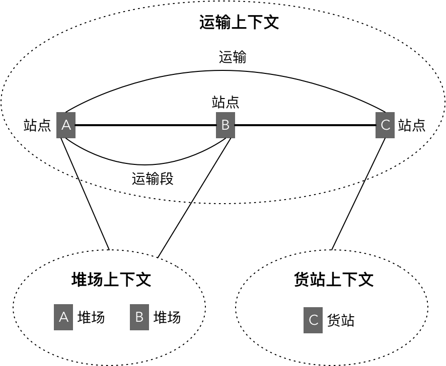
在建立了运输上下文的领域模型之后，我们发现铁路运输和公路运输可以合并到同一个运输领域模型中，体现为运输的两种方式。开发团队在日常交流和讨论中提及的委托、规划与计划，其实是同一个概念，定义其统一语言为运输规划。
如果希望将统一语言固化到某一个实践中，使之成为我们领域建模的参考，那就是领域场景分析的产物。我在《领域驱动战略设计实践》课程中给出了三种不同的领域场景分析方法：用例、用户故事和测试驱动开发，它们恰好对应了分析、设计与实现三个阶段。因此，对于领域分析模型而言，我们可以参考遵循统一语言的用例。这也正是我为何反复强调用例表达的领域概念必须精准的主要原因。
在战略部分的领域场景分析中，我写道：
在为每个用例进行命名时，我们都应该采纳统一语言中的概念，然后以言简意赅的动宾短语描述用例，并提供英文表达。很多时候，在团队内部已经形成了中文概念的固有印象，一旦翻译成英文，就可能呈现百花齐放的面貌，这就破坏了“统一语言”。为保证用例描述的精准性，可以考虑引入“局外人”对用例提问。局外人不了解业务，任何领域概念对他而言可能都是陌生的。通过不断对用例表达的概念进行提问，团队成员就会在不断的阐释中形成更加清晰的术语定义，对领域行为的认识也会更加精确。
在针对一款供应链产品进行领域分析建模时，资金团队识别出来的部分用例如下所示：
注：这里绘制的用例图并未采用 UML 的标准用例图形式，各种颜色的便利贴分别代表了参与者、主用例和子用例。我希望通过这种形式再次说明利用可视化工具进行领域建模的重要性。
用例描述要求言简意赅，但并不意味着我们不追求用例描述的精确。图中的付现汇和付票据主用例都包含了“提交银行”子用例。这个用例的描述语焉不详，甚至会被认为是同一个重用的子用例。经过不断交流，才发现这里遗漏了重要的领域概念。付现汇主用例中的“提交银行”子用例其实是“提交收款指令”，而付票据主用例的“提交银行”子用例则是“提交电票指令”。因此，类似用例这样的领域场景分析方法，是领域分析模型的重要源头，若源头被“污染”了，就会影响到领域分析模型的质量。对领域场景的分析，必须字斟句酌，比作家对待写作还要精确与严谨。
无论是用例，还是用例图，只要遵照了这样的分析要求，我们就可以利用“名词动词法”来初步梳理该问题域的领域概念，并获得这些领域概念之间的关系。这种方法由 Russell Abbott 提出，在他 1983 年发表的论文 Program Design by Informal English Description 中，他建议写下问题的英语描述，然后划出名词和动词。名词代表了候选对象，动词代表了这些对象上的候选操作。倘若采用用例分析，则一个用例就是一句英语描述。例如电商系统下订单的用例图如下所示：
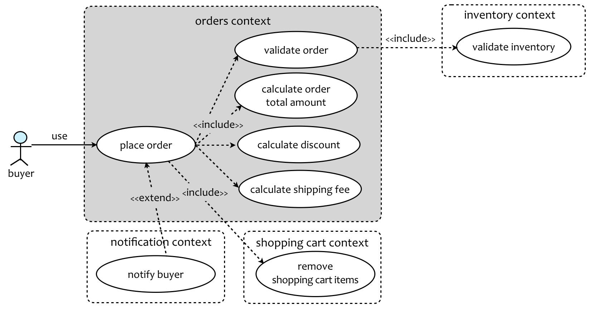
用例描述中的名词对应于领域分析模型中的类型或类型的属性。注意，即使是属性，如果该属性表达了一个领域概念，同样应该定义为类型，如“calculate shipping fee”用例中的名词为 Shipping Fee，它是订单（Order）的属性，但它同样体现了“运费”这一个重要的领域概念。用例中的参与者在领域分析模型中同样应该被定义为类型，它与构成主用例宾语的领域概念之间存在关联关系。
比起用例，用例图要更加精炼。若在领域场景分析过程中，以获得用例图为目标，就可以降低领域分析建模阶段的成本。然而，凡事有利就有弊，这种精炼的形式也可能会漏掉一些必要的业务概念。这些业务概念往往是领域模型中主要领域概念的附属概念，如订单（Order）与订单项（OrderItem）、购物车（ShoppingCart）与购物车选项（CartItem）。
在分析用例时，也要注意用例描述可能带来的分析陷阱或隐藏的概念。例如“validate inventory”用例中，宾语为库存（Inventory），但在下订单领域场景中，检查的其实是商品的库存量。当然，这也可能反过来说明在绘制用例图时，我们对用例的描述欠妥当。“notify buyer”用例较为特殊，表面上它表达的领域行为就是“通知买家”，但实际上这里隐藏了一个“通知（Notification）”的名词概念。
综上分析，利用名词动词法自然就能获得如下的分析模型：
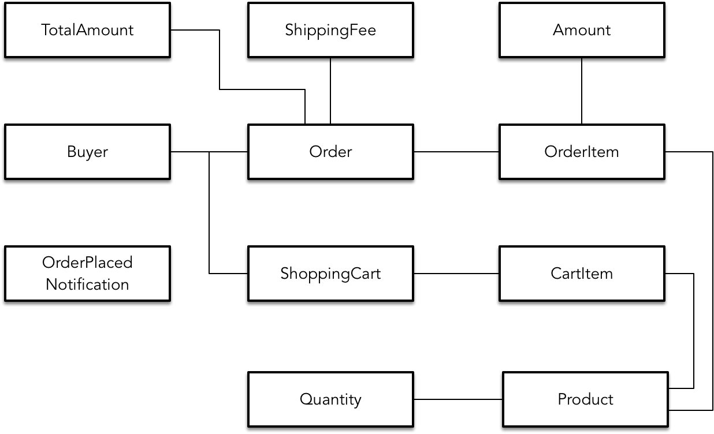
在这个模型中，我定义了 OrderPlacedNotification 而非 Notification，这是希望清晰地表达下订单场景的通知行为。粗略一看，OrderPlacedNotification 需要包含买家的联系信息和订单内容，似乎足以证明这三者之间存在关联关系。仔细分析，却发现在创建 OrderPlacedNotification 时，确实需要买家和订单的信息，然而一旦创建，它就成了自给自足的通知对象，与模型中的 Buyer 和 Order 再也无关。在领域模型中，没有关系也是一种关系，只要表达了真实的领域逻辑，就是合理的。
在建立领域分析模型时，必须慎重确定类型之间的关系。由于分析活动并未深入太多业务细节，在分析建模过程中，应只考虑显而易见且明确无误的关联关系，如 Order 与 OrderItem、ShoppingCart 与 CartItem，以及在用例图中表达出来的 Buyer 与 Order 之间的关系。除了没有关系这种特殊关系外，模型概念之间的关系不外乎一对一、一对多和多对多。在建立领域分析模型时，最好也能确定具体的关系类型。但是，由于“名词动词法”这种分析建模方法稍显简陋，只适用于领域分析建模的早期。在这个阶段，识别主要的领域概念才是建模的重心，至于关系类型的确定，可以留待领域分析模型的精炼阶段。
057 精炼领域分析模型
通过统一语言与“名词动词法”可以迫使团队研究问题域的词汇表，简单而快速地帮助我们获得初步的分析模型。但是这种方法获得的模型品质，受限于语言描述的写作技巧，统一语言的描述更多体现在是对现实世界的模型描述，缺乏深入精准的分析与统一的抽象，使得我们很难发现一些隐含在统一语言背后的重要概念。一言以蔽之，由此获得的领域分析模型还需要进一步精炼。
分析模式
对相同或相近的领域进行建模分析时，一定有章法和规律可循。例如同样都是电商系统，它们的领域模型定有相似之处；如果都为财务系统，自然也得遵循普适性的会计准则。这并非运用行业术语这么简单，而是结合领域专家的知识，将这些相同或相似的模型抽象出来，形成可以参考和重用的概念模型，这就是 Martin Fowler 提出的分析模式。Fowler 认为：“分析模式是一组概念，这些概念反映了业务建模中的通用结构。它可以只与某个特定的领域相关，也可以跨越多个领域。”由于分析模式是独立于软件技术的，就使得领域专家可以理解这些模式，这是分析建模过程中关键的一点。
在建立领域分析模型时，我们可以参考别人已经总结好的分析模式。例如，Martin Fowler《分析模式》中介绍的模式覆盖的领域就包括组织结构、单位数量、财务模型、库存与账务、计划以及合同（期权、期货、产品以及交易）等领域。Peter Coad 等人在《彩色 UML 建模》一书中也针对制造和采购、销售、人力资源管理、项目管理、会计管理等领域给出了领域模型，亦可以视为分析模式的一种体现，至少可以作为我们建立领域分析模型的参考。
我们也可以建立自己的分析模式。每个行业都可以定义自己的分析模式。要获得这样的分析模式，需要专精的领域专家与软件设计师共同来完成。只可惜沟通与知识的壁垒让这样一个重要的分析工作变得举步维艰。软件业的普遍现象是我们重视了软件开发技术，却忽视了领域专家给开发团队带来领域知识的重要性。在领域分析建模活动中，扮演重要作用的不是开发团队，而是领域专家。Martin Fowler 在《分析模式》一书中就这样写道：
我相信有效的模型只有那些真正在问题域中工作的人才能建造出来，而不是软件开发人员，不管他们曾经在这个问题域工作了多久。
如果能够认识到分析模式是企业软件系统中的一份重要资产，或许我们能够说服领域专家将更多的时间用到寻找和总结分析模式的工作上来。总结出一种模式并不容易，需要高度的抽象能力和总结能力。无论如何，为系统的核心领域引入一些相对固化的模式，总是值得的。Eric Evans 就认为利用这些分析模式，“可以避免一些代价高昂的尝试和失败过程，而直接从一个已经具有良好表达力和易实现的模型开始工作，并解决了一些可能难于学习的微妙的问题。我们可以从这样一个起点来重构和实验。”
分析模式可以作为领域分析建模的起点。Martin Fowler 在《分析模式》书中写到：
对于你自己的工作，看看是否有和模式相近的，如果有，用模式试试看。即使你相信自己的解决方案更好，也要使用模式并找出你的方案为什么更适合的原因。我发现这样可以更好地理解问题。对于其他人的工作也同样如此。如果你找到一个相近的模式，把它当作一个起点来向你正在回顾的工作发问：它和模式相比强在哪里?模式是否包含该工作中没有的东西？如果有，重要吗?
当然，分析模式并非万能的灵药。即使已经为该领域建立了成熟的分析模式，也需要随着需求的变化不断地维护这个核心模式。注意，模式并非模型，它的抽象层次要高于模型，故而具有一定通用性。正因为此，它无法真实传递完整的领域知识。分析模式是领域分析模式的参考，利用一些模式与建模原则，可以帮助我们进一步精炼领域分析模型，使得该模型能够变得稳定而又具有足够的扩展能力。
接下来，我将尝试运用分析模式中提到的建模原则与建模实践针对电商网站的促销领域进行分析建模。通过分析促销领域的业务背景，逐步地对促销领域分析模型进行精炼。这个精炼的过程运用了如下建模原则：
- 建模原则：将模型清晰地分解成操作级和知识级。
- 建模原则：如果某个类型拥有多种相似的关联，可以为这些关联对象定义一个新的类型，并建立一个知识级类型来区分它们。
- 建模原则：保证分析模型中的概念遵循单一抽象层次原则。
除最后一个建模原则来自我个人的定义之外，其余建模原则均来自 Martin Fowler 的《分析模式》。该书通过大量的案例总结了领域分析建模的原则与模式，值得每一位建模人员认真阅读。
促销领域的分析模式
促销（Promotion）是一种运营手段，目的是通过这种手段去刺激消费的各种信息，把信息传递到一个或更多的目标对象，以影响其态度和行为，提高转化率。为了拉动消费，无论是线上还是线下，商家总是会绞尽脑汁提供各种促销手段，这就带来了促销策略的复杂性；然而从消费心理角度考虑，要刺激消费，简单有效的方式就是让消费者认为花了更少的钱却买了更多的商品，这就带来了促销策略的相似性。
促销领域的业务背景
在电商系统中，对促销的管理主要牵涉到对促销活动与促销规则的管理。同时，促销还会影响到订单、库存、物流以及支付。倘若我们将促销视为核心领域，则为它建立领域分析模型时，应以促销领域为主。
促销活动
促销活动实际上是针对促销进行基本属性管理，负责提供活动方式和商品内容，主要包括：
- 商品选择：参加促销的商品，分为活动商品和赠品两种；也可以选定商品的品种参与促销，例如针对图书类开展促销。
- 投放时间选择：即该促销的有效时段。
- 投放区域选择：针对全平台还是部分平台（自营或指定店铺），或者仅针对 App 平台。
- 用户类型：针对新注册用户、VIP 用户等。
促销规则
促销规则是促销管理的核心。一个促销系统的好坏取决于促销规则设计是否合理。设计时既要考虑到商品的促销，又要考虑到店铺的盈利，还要考虑滞销品和畅销品的差别，因此促销规则的制订是非常灵活的，范围和促销力度也各有不同。大体来看，我们可以从平台、商品种数、促销方式这三个维度来分别理解促销规则的制订：
- 平台维度：促销规则可以分为自营促销和 POP 平台促销。
- 商品总数维度：站在商品角度看促销，则促销可以分为单品促销、集合促销和店铺促销：
- 单品促销：以单个商品为维度进行的促销叫单品促销，如限时抢。
- 集合促销：通过商品集合来满足促销规则进行的促销叫集合促销，如满额减。
- 店铺级促销：以商家店铺为维度进行的促销叫店铺级促销，如店铺级满额折。
- 促销方式维度：
- 直减类：限时抢、直减、多买多折、VIP 专享价、手机专享价等
- 赠品：满赠
- 换购类：加价购，凑单
- 满额类：满额减、满额折等
- 返券类：满额返券
- 组合优惠类：套餐
- 预订类：团购
在配置促销规则时，还需要考虑规则的优先级，它会直接影响促销活动的共享与互斥。例如，我们可以按照一定的优先级完成用户的优惠享用，如享用了单品促销，就不能参加集合促销，满减优先级大于代金券；这是互斥的情况。促销活动也可以共享，例如满额减可以与满额包邮共同使用。
对促销领域的分析建模
在为促销领域进行分析建模时，首先需要甄别出该领域的核心概念，然后分析这些概念在该领域中蕴含的业务意义。基于前面介绍的业务背景，我们知道促销领域的核心概念包括促销活动与促销规则。在管理促销活动时，需要指定促销规则，这就产生了二者之间的关联关系。表面看，是通过促销活动去配置促销规则，前者为主，后者为辅；但对于促销而言，其实是活动与规则合二为一组合形成一种促销产品（Promotion Product）。这种促销产品可以是“券（Coupon）”形式，也可以是“礼品卡（Gift Card）”形式，又或者是提供“打折（Discount）”或者“包邮（Free Shipping）”。
模型概念“促销产品”的获得实际上是分析建模过程中对关系建模的一种体现。分析模式的建模原则提到：如果某个类型拥有多种相似的关联，可以为这些关联对象定义一个新的类型，并建立一个知识级类型来区分它们。在现实世界中，各种概念之间总会存在各种错综复杂的关系。例如在学校，有教师与学生之间的师生关系，有院长与教师之间的上下级关系，有教授与研究生之间的科研关系。一旦关系变得越来越多，越来越复杂，仅仅靠体现对象之间的委派关系来体现这种组合就会显得缺乏表现力，这个时候就可以将“关系”提炼为模型中一个显式的概念。
前面所述的促销活动与促销规则在业务上存在一定的重复。例如平台维度的促销规则，其实对应的是促销活动中对投放平台或区域的选择。商品总数维度的促销规则，又与促销活动中适用商品（品种）选择的配置重叠了。这是因为我们扩大了所谓“规则”的外延。规则（Rule）不是计划，也不是策略，而应该是一条条具体的可判断是否满足条件的约束规则。
例如在电商领域中，我们常常会这样来描述一个促销规则：
购指定图书满 100 元减 20 元，满 200 元减 40 元，在 2018 年 12 月 12 日当天有效。
或许市场人员在现实中就是这样来谈论促销规则，但领域分析模型并不一定就是现实世界模型的概念映射。在领域分析建模时，我们需要精确的概念。
事实上，这一描述并非促销规则，而是一次完整的促销！分析描述中的字词：“指定图书”属于促销活动中对适用商品（品种）的配置，“2018 年 12 月 12 日当天有效”是该促销的有效时段属性。唯有描述“满 100 元减 20 元，满 200 元减 40 元”，才是所谓的规则。该规则又包含了两条金额阈值的条件（Criterion）。描述中的促销活动与促销规则组成了促销产品，类别为“券（Coupon）”，券的类型为现金券（若描述中为满额折扣，就是折扣券）。诸多概念合起来，最终形成了一次促销。这个促销模型如下所示：
引入规格模式
促销规则包含了多个条件，只有商品满足了该条件才能确定它是否适用于该促销。这让我想起了 Martin Fowler 与 Eric Evans 共同提出的“规格模式（Specification Pattern）”。他们对规格模式的描述如下：
问题
- 选择（Selection）：需要基于某些条件（Criterion）选择对象的一个子集，且需要多次刷新其选择
- 验证（Validation）：需要根据确定的目标获得满足条件的合适对象
- 按需构造（Construction-to-order）：需要描述对象应该做什么而无需解释对象执行的细节，这样就可以构造一个候选对象来满足需求
解决方案
创建一个规格（Specification）对象，它能够辨别候选对象是否满足某些条件。规格对象定义了方法 isSatisfiedBy(anObject)，如果 anObject 的所有条件均满足，则返回值 true。
结果
- 解除需求设计、实现与验证之间的耦合
- 提供清晰的声明式的系统定义
规格对象可以是单一的，也可以是合成的。于是，通过引入规格模式，我将原来定义的“条件（Criterion）”领域概念更名为“规格（Specification）”。一个促销规则可以包含多个规格，而对于规格而言，根据不同的促销场景又可以分为：
- 金额（Amount）阈值的规格：例如满 200 元减 40 元，或满 200 元 9 折
- 数量（Count）阈值的规格：例如满 2 件 9 折，又或者限量购
于是，前面获得的促销模型就调整为：
避免领域概念的混淆
在分析促销模型时，我发现模型中的促销产品概念并未处于同一个抽象层次，多种促销产品之间甚至存在混合关联。例如，作为“促销产品”的折扣（Discount）或现金抵用（Reward）可以单独针对一次促销提供，也可以和同为“促销产品”的券（Coupon）进行捆绑；同时，作为“促销产品”的礼品卡（Gift Card）和券均可以提供同为“促销产品”的赠品或者包邮。
既然出现如此混乱的关系，就说明打折、现金抵用、赠品和包邮等概念并非一种促销产品，它们其实应该是促销产品的一种属性。我将这种属性称之为“促销产品类型”。例如，券的促销产品类型若为折扣，就是折扣券，若为现金抵用，就是现金券。它们都是券，差异在于促销产品的类型不同，而非促销产品不同。
在电商系统的促销策略中，诸如折扣、现金抵用之类的促销手段未必需要通过券或者礼品卡的形式呈现，它们其实可以直接作为促销产品而被单独使用。但在领域分析建模过程中，我们不允许概念层次的混乱，且必须避免领域概念的二义性。例如对于折扣（Discount），到底是促销产品，还是促销产品类型，必须分辨清楚。
在之前识别的促销产品概念中，到底哪些属于促销产品，哪些属于促销产品类型呢？既然后者是前者的一种属性，我们就可以将促销产品视为促销产品类型的载体。因此，只要分辨出这些概念的主次关系，就可以做出正确的划分。在前面给出的混合关系模型中，显然，券和礼品卡才是主要概念，折扣、现金抵用、包邮与赠品都是次要概念。
促销产品和促销产品类型不是随意搭配的，例如“包邮”，就既不属于券产品，又不属于礼品卡产品。如此一来，还需要针对这些概念建立一层抽象，这个抽象概念与券、礼品卡处于同一个抽象层次。这个抽象的促销产品概念就是“优惠（Special Offer）”。由此得到的模型为：
优惠概念的获得，遵循了建模原则——保证分析模型中的概念遵循单一抽象层次原则（Single Layer Abstraction Principle）。单一抽象层次原则本是 Kent Beck 在 Smalltalk Best Practice Patterns 一书中提到的。他认为一个方法应该执行一个确定的任务，方法由多个处于相同抽象层次的操作组成，形成“组合方法（Composed Method）”模式。方法如此，领域模型亦当如此，因为它们都是针对任务进行逐级分解的过程。正如苹果、西瓜可以和土豆处于同一个抽象层次，水果和蔬菜的抽象层次则在它们之上。如果将苹果与蔬菜放在同一层，自然会造成概念的失衡状态，正如让“包邮”和“折扣”与“券”放在同一层，是失衡的。
知识级和操作级
当模型变得渐趋复杂时，《分析模式》引入了操作级（Operational Level）和知识级（Knowledge Level）两个层次来组织模型中的概念。操作级模型记录该领域每天发生的事件；知识级模型则定义了操作级对象的合法配置，以及控制着结构的各种通用规则。知识级和操作级之间并没有非常清晰的鸿沟，但 Martin Fowler 认为“将两者（知识级和操作级）分开有助于理清建模思路”。为此，我们需要明确这二者之间的差别。
在《分析模式》一书中，Martin Fowler 引入了英国国民医疗服务制度的 Cosmos 项目作为分析模式的案例，这个模型的推导过程清晰地展现了引入这两个层级是怎么让模型变得更加清晰的。
Cosmos 作为一个医疗保健系统，需要对医药行业的测量和观察需求建立模型。简单说来，每个患者的测量结果可以建模为“测量（Meassurement）”。然而针对整家医院，即使是一个患者也可能存在成千上万种可能的测量。如果为每种测量定义一个相应的属性，就意味着一个患者存在着成千上万种可能的测量操作——测量的接口就会变得格外复杂。分析模型的解决方案是将所有可以被测量的不同事物（身高、体重、血糖水平……）都作为测量对象，并将其抽象为“现象类型（Phenomenon Type）”。这里，测量属于操作级，现象类型属于知识级：
在为测量引入现象类型后，患者可以有许多测量，但是针对某一种现象类型而言，患者就只有一个测量。例如 John Smith 身高 1 米 75，在上述模型中，该描述信息整个代表一个测量，其中，患者是 John Smith，现象类型是身高，数量是 1 米 75。
为什么现象类型属于知识级，测量属于操作级呢？
首先，测量是医药行业每天都会发生的事件，而现象类型则是测量的多种配置，这符合前面对操作级与知识级的定义。
其次，《分析模式》的建模原则提到：“操作级中的对象会经常发生变化，它们的配置由很少发生变化的知识级来约束。”这是从变化的角度来区分的。操作级中的“测量”可以被定义成多种多样的测量，但知识级的“现象类型”却是可以穷举的。因此，这里提到的“变化”表达的并非类型的变化，而是对象值的变化。
最后，领域概念中存在一些定性的描述，例如医疗观察模型中的血型 A 现象、汽车分类观察模型中的汽车油量不足现象，它们都是在系统中确确实实存在的客观事实，不会因为观察是否建立而消亡，像这样的定性描述放到知识级中，可以按照规则来使用它们。这是从领域概念的性质来区分的。
回到电商系统的促销策略模型。促销可以被定义为多种多样，但促销产品与促销类型在促销领域中却是可以穷举的，因此促销应该被定义在操作级，而促销产品与促销类型则属于知识级。从领域概念的性质看，促销产品为券类型是一种定性描述，促销产品类型为折扣（Discount）也是一种定性描述，这也可以得出它们同为知识级对象的结论。促销规则与规格与之相同，它们还是对促销的配置，因此也应该划归知识级对象的范围。
每个促销都有属于自己的类别（Label），这个类别是促销的一种定性描述，属于知识级对象。在计算促销优惠时，不同类别的商品会分别计算，同一类别可以兼容，这相当于分类汇总。对于促销而言，如果我们将一个具体的促销实例视为一个实体，在计算促销优惠时，同一实体的促销是互斥的，不同实体的促销可以叠加组合，也可以按照优先级（Priority）。这个优先级属于促销的属性。优先级可以在配置促销策略时事先配置，也可以由买家指定，例如买家在购买商品时，出现了多种促销叠加的情况，买家就可以根据具体的购买情况选择最适合自己的促销，这时用户指定的优先级要高于事先配置的优先级。
一个促销对应一个促销产品。除了促销产品具有不同的产品类型外，促销自身也有自己的类型。这个类型确定了促销的适用范围，准确地说，是确定了“促销活动（Promotion Activity）”的适用范围。促销活动属于操作级，因为它类似医疗案例中的测量概念。作为一个活动概念，显然具有时间属性和状态，这就引入了“有效时段”与“状态”概念。有效时段限制了促销活动的适用时间范围，而促销活动的状态又与有效时段有关，可标记为“有效”和“无效”，代表了该促销活动是否在有效时段内。状态是一种可以穷举的定性描述，放在知识级；有效时段则不同，它并非定性描述，而是促销活动的固有属性，因此应该和促销活动一起放在操作级。
一个促销并不会对应某一个具体的买家。促销面向商品和店铺，通过类别来说明它的使用范围。提供给买家的其实是促销产品。例如，一个买家获得了一张现金券或者礼品卡。为了避免买家无限次地享受促销福利，促销产品也需要标记其状态，包括未使用、已使用和过期状态。其中，已使用和过期状态都表现了该促销产品的无效状态，说明该促销产品对应的促销策略已经失效。为了区分促销活动与促销产品的状态，需要用限定修饰符说明，分别为“活动状态”和“产品状态”。
促销活动概念的引入对于促销而言具有重大意义，某种程度上，它根据变化频率的不同，将与促销相关的概念分成了完全独立的两部分。例如，一旦促销确定了优先级和类别，就不会轻易进行调整；而有效时段与促销状态则经常发生变化，如果作为促销的属性，就会受到时间和状态的限制，让促销无法被重用。促销活动与促销之间的分离，使得促销更加稳定，在保证重用的同时，还能避免促销被无限使用带来的潜在风险。
通过引入分析模式的建模原则与模式，我们对最初的模型进行了精炼，最终获得了如下的领域分析模型：
对分析模型的验证
我们可以结合实际的业务场景验证获得的促销分析模型。以京东商城为例，如下图所示：
上图给出了两种促销类别（Label）：联合促销活动与玩具元旦特惠。以玩具元旦优惠类别为例，**促销（Promotion）为“跨店铺满减”。该促销的活动类型（Activity Type）**包括适用店铺（值为“跨店铺”）、适用品种（值为“玩具”）。**促销产品（Promotion Product）**为优惠（Special Offer），**促销产品类型（Product Type）**为满减（Reward），**规则（Rule）**为金额阈值规则，**规格（Specification）**为满99.00元减。**促销活动（Promotion Activity）的有效时段（Valid Period）**为 2019 年 1 月 1 日。图中的两种玩具都属于同一个促销类别，因此在计算满减时，这两个商品是可以叠加的。对应的分析模型为：
我们再来看另外一个促销场景：
上图展现的促销场景包含了多种促销，它们的促销类别（Lebel）皆为京东自营，因此在进行优惠计算时，这些商品是可以叠加的。这里包含的促销实体有：
- 促销实体：促销产品为券（Coupon），促销产品类型为满减（Reward），优惠规则为金额阈值，规格分别为满 49 减 6、满 158 减 20、满 258 减 30、满 388 减 50 等。促销活动的活动类型（Activity Type）为适用店铺，值为京东自营，活动状态为“有效”。一旦领取了券，则产品状态为“未使用”。
- 促销实体：促销产品为券（Coupon），促销产品类型为满减（Reward），优惠规则为金额阈值，规格为满 98 减 10。促销活动的其中一种活动类型（Activity Type）为适用店铺，值为京东自营；另一种活动类型为适用商品，值为自营晨光指定商品，活动状态为“有效”。一旦领取了券，则产品状态为“未使用”。
- 促销实体：促销产品为优惠（Special Offer），促销产品类型为包邮（Free Shipping），优惠规则为金额阈值，规格为满 99。促销活动的活动类型（Activity Type）为适用店铺，值为京东自营，活动状态为“有效”。
- 促销实体：促销产品为优惠（Special Offer），促销产品类型为换购（Trade-in），优惠规则为金额阈值，规格为满 30。促销活动的活动类型（Activity Type）为适用店铺，值为京东自营，活动状态为“有效”。
在促销模型中，这些促销实体就是一个个促销。实现时，体现为多个促销实例，这些促销实例可以通过促销活动的“适用商品”活动类型，作用到同一件商品，形成这种促销优惠的叠加。
目前给出的促销模型考虑还不全面。一方面这取决于它适用于哪种电商应用场景，例如淘宝与京东的促销策略就不相同。如果电商销售的仅为虚拟商品，促销领域逻辑更是有所不同。另一方面，该模型未考虑如何与计算订单金额、支付以及退换货这些业务相结合。总之业务越复杂，模型也会变得更复杂，这时就更需要利用抽象将模型化繁为简，又或者考虑在模型中使用不同的视图来表达不同的概念，尽量让模型变得精简而直观，同时又不会缺少关键的领域概念。
058 彩色 UML 与彩色建模
如果某个领域已经形成了稳定的分析模式，在设计该领域的分析模型时，这些模式就可以提供有价值的参考。可惜，分析模式需要有人来总结和提炼，最好的分析模式提炼者需要兼具领域知识和软件建模能力。很早以前，Martin Fowler 扮演了这一角色，他贡献了《分析模式》这本经典的著作。这是公开的分析模式。囿于领域知识的壁垒以及商业竞争的压力，各个领域或许已经通过数年的演化获得了稳定的分析模式，却只能像传说那样仅限于口传而不见诸于文字。这不能不说是一种遗憾。软件的发展是靠着各种重用才变得如此快速高效，领域模型却因为缺乏可以重用的模式，变得有些举步维艰。
如果没有这种可以直接参考甚至重用的模式，那就必须回到方法与过程上来。分析模式将模型分为知识级和操作级，就是一种建模方法，只可惜这种方法太过艰深晦涩，不曾提供清晰直观的建模思路。名词动词法又过于简单而随意，欠缺精准，属于分析建模的初级阶段。倘若要面向一个非常复杂的领域，各种领域概念如混乱的思绪一般纷至沓来，就需要运用更加系统更有条理的建模方法。
Peter Coad 等人提出的彩色 UML（Color UML）应运而生。个人认为，它为领域建模做出了两大贡献。
第一个贡献是它定义了四种与领域无关的模型架构型（Archetype）：时标架构型、角色架构型、描述架构型和参与方—地点—物品架构型。这四种架构型基本上涵盖了所有能够表达领域概念的模型对象。在领域建模时，可以利用这些架构型提供的特征描述，帮助我们识别对象。这恰好是领域驱动设计缺失的内容。
第二个贡献是它创新地引入了颜色标记对领域模型进行可视化展示，丰富了模型的表现力，而这种彩色建模的手段也能够有效地促进领域专家与开发团队之间的交流。当颜色成为模型对象的一种重要编码时，结合它归纳的四种架构型，就能够清晰传递各个对象在业务场景中扮演的角色，理清它们之间的关系。倘若再摆脱 UML 对模型的约束，就可以用各种颜色的即时贴来表示领域模型，将彩色 UML 的思想运用到可视化协作的建模过程中。
彩色 UML 的架构型
色彩是表象，架构型才是彩色建模方法的重心。若要学会运用彩色建模，就需要明确这些架构型的特征，方才可以依照这些特征在浩如烟海的领域语言中按图索骥。
时标架构型
时标架构型（Moment-interval Archetype）的核心要素是时刻或时段。《彩色 UML 建模》一书这样总结时标架构型：
它代表了出于商业和法律上的原因，我们需要处理并跟踪的某些事情，这些事情是在某个时刻或某一段时间内发生的。……（它）寻找的是问题域中具有重要意义的时刻或时段。
显然，时刻或时段是时标架构型的特征属性。在这个时刻或时段，有某件事情发生了，而这件事情对于我们要处理的领域而言，具有重要意义。如果缺少对它的记录，就会影响到商业的运营和管理，或者引起法律上的纠纷。一言以蔽之，时标架构型的核心要素包括：时刻/时段和重大事件，二者缺一不可。例如，一次销售发生在某一个时刻，如果缺少对销售的记录，会影响企业的收支估算，影响销售人员的提成收益。一次租赁从登记入住到租约期满，发生在一个时段，如果缺少对租赁的记录，会导致租赁双方的法律合同纠纷。
时刻或时段是业务含义的属性，而非技术因素。例如，我们不能将数据记录的创建或修改时间戳看作时标架构型的时标属性。即使是业务含义的属性，也不能说明具有时标属性的对象就一定是时标型对象。例如，一个员工具有出生日期属性，但员工的诞生对于一个企业而言，没有任何意义。如果要更好地管理员工，更为关注的是员工的入职日期（OnBoardingDate）。那么，此时的员工会是时标型对象吗？——不是！因为员工这个对象并非入职日期这个时刻发生的事件，入职 OnBoarding 对象才是。
因此，寻找时标型对象就是要从业务流程中找到任何一个重大的时刻或时段，然后再来分析在这个时刻或时段到底发生了什么，发生的事情结果就是我们要寻找的建模目标。例如，在 2019 年 6 月 7 日 9 时……
- 考生张华踏入了高考语文的考场：发生了一次考试（Exam）
- 学生刘烨在图书馆借阅了一本《领域驱动设计》：产生了一次借阅（Borrowing）
- 客户李明取走了一笔 3000 元人民币的款项：产生了一次取款交易（Transaction）
- 交警李飞处理了一起交通违法事项：开具了一次罚单（Ticket）
- 买家唐嫣在淘宝购买了一支护手霜：提交了一次订单（Order）
以上事件都发生在 2019 年 6 月 7 日 9 时，产生的记录在各自系统中都具有不可缺失的重要意义。缺少考生考试记录，会影响考生成绩；少了一次借阅，可能丢失一本书；交易记录如果存储失败，会影响银行的对账；少记录一次处罚，会给公务人员中饱私囊的机会；订单如果找不到了，买家和卖家就会产生纠纷。显然，这些时标型对象都会影响到运营和管理。
角色架构型
角色架构型（Role Archetype）是一种参与的方式，它由参与方、地点或物品来承担。角色就好像是参与方—地点—物品模型对象戴的帽子，这些对象在不同的业务场景中扮演了不同的角色，参与了业务的协作。因此，角色架构型接近于面向对象设计中的角色接口，参与方—地点—物品作为对象实现了这些角色接口。例如在银行的转账场景中，账户 Account 是参与方对象，它扮演的角色是转出方 SourceAccount 和转入方 DestinationAccount 角色。
除了参与协作，角色架构型有时候也表达了某种关系。例如，角色对象 ProductOrdered 体现了订单项与产品之间的关系，在订单场景中，它扮演了订购产品的角色；角色对象 MaterialShipped 体现了配送单与物料之间的关系，在配送场景中，它扮演了已发货物料的角色。
如果扮演角色的对象是参与方，则角色架构型往往代表业务领域中形形色色的职业角色，如销售人员 SalePerson、供应商 Supplier、收银员 Cashier、团队成员 TeamMember、订单拥有者 OrderOwner。
描述架构型
Peter Coad 认为描述架构型（Description Archetype）是一种类似分类目录（catalog-entry-like）的描述。这个定义比较含糊。我的理解是描述对象包含的属性体现了分类的特征，是对描述目标对象的扩展与增强。例如一本书的属性包括书的书名、作者、出版社、出版日期、ISBN 号与价格，而书的推荐语、作者简介、版权信息与目录就是对书的扩展描述，且这些属性也说明了这是一本书，而非家电、化妆品、衣物等类别。
虽然 Peter Coad 没有明确指出描述架构型是针对哪一种架构型的描述，但通常可以认为是针对参与方—地点—物品架构型对象的增强。
参与方—地点—物品架构型
参与方—地点—物品架构型（Party-place-thing Archetype）直接说明了三种类型的模型对象，即参与方、地点与物品，其中参与方指代人或组织。由于参与方、地点与物品的英文首字母分别为 PPT，我们往往将其戏称为 PPT 对象。
与时标型对象相似，PPT 对象具有非常明显的特征。在需求描述中，只要发现领域概念与人、组织机构、地点或物品相关，就可以识别为 PPT 对象。例如雇员 Employee 和买家 Buyer 可以作为员工管理场景和电商购买场景的参与方。组织机构也可以作为参与方，如购买团体保险的组织 Organization、物流快递的承运商 Carrier。物流快递的配送站 DistributionStation、通信领域中的基站 NodeB 则体现了地点的概念。体现物品概念的模型对象更为常见，例如物料 Material、商品 Product、信用卡 CreditCard 以及前面提到的书 Book，都是物品对象。
注意：作为 PPT 构造型的组织机构以及作为角色构造型的角色，与权限认证管理场景中的组织机构与角色属于两个不同的模型概念。二者的区分可以从限界上下文的角度来考虑。例如，团体保险的组织 Organization 是客户上下文中的领域对象，角色对象 SalePerson 是销售上下文中的领域对象，而权限认证管理中的 Department、Role 等概念，则都属于权限认证上下文。
架构型对领域分析建模的启发
彩色 UML 定义的这四种架构型并不是要限制我们的模型对象，而是希望通过提炼模型对象的特征来帮助建模人员。例如，时标型对象的特征是时刻与时段，这就促使我们去需求描述中寻找那些具有时刻时段特性的模型对象。PPT 对象归纳了参与方、地点与物品这三种类型，就能启发建模人员去寻找包括人和组织机构的参与方、地点和物品。角色架构型的特征体现为业务场景的参与角色，在分析业务场景时，我们就会有意识地识别各种模型对象所承担的角色（帽子）到底是什么。描述架构型作为 PPT 对象的补充与扩展，既可以让我们设计出粒度合理的 PPT 对象，又不至于丢失一些非核心但却能起到补充作用的领域对象。
Peter Coad 等人认为：由这四种架构型构成了领域无关的组件。在分析模型中，我们也可以通过显式地标记架构型或者通过颜色来体现这些架构型对象，但在领域设计模型和领域实现模型中，我们其实并不是特别看重领域对象到底是什么架构型。换言之，彩色 UML 定义的四种架构型并非领域建模的目标，而是领域分析建模活动中的一种方法。在领域分析建模活动中，不必执着或拘泥于确定该模型对象到底属于哪一种架构型。只要你识别出了合理的领域对象，就达到目标了。如果总是花费时间纠结它到底是 PPT 架构型还是时标架构型，就会让你忘记什么才是建模的初衷，舍本逐末。
彩色 UML 的建模过程
彩色 UML 并没有给出识别领域模型对象的分析过程。它假定我们在寻找到一个类时，需要利用一个检查清单来确定它属于什么架构型，从而确定该类在 UML 类图与时序图中的颜色。这个检查清单如下：
- 它是时刻或时段，是出于业务原因或法律原因，是系统需要追踪的东西吗？如果是这样，那么它是粉红色的时刻时段。
- 否则，它是一个角色吗？如果是这样，那么它是黄色的角色。
- 否则，它是一个分类目录条目似的描述，包含了一组可以反复应用的值吗？如果是这样，那么它是蓝色的描述。
- 否则，它就是参与方—地点—物品。它是绿色的参与方—地点—物品（绿色是默认色，如果不是粉红色、黄色或蓝色，它就是绿色）。
这是针对单个模型对象的检查过程。我们识别出一个模型对象，然后讨论它是什么架构型，确定了架构型后，在 UML 类图中绘制出来，并以对应的颜色作为背景色，然后继续识别下一个模型对象。——这是我们希望看到的建模过程吗？
我认为这种方式实际上降低了彩色 UML 的价值，将它沦落为一种具有彩色标记的 UML 表示法。采用这种方式建模，意味着在运用彩色 UML 之前，我们已经识别出了各种领域模型对象，彩色 UML 的作用仅仅在于确定它们的架构型，然后为其涂上美丽的颜色。可是，如果已经有了这些领域模型对象，我们还要彩色 UML 干什么呢？难道彩色 UML 的目的只是为了给类涂上颜色，让 UML 变得更加好看吗？
领域建模过程显然不是这样的！彩色 UML 带来的价值绝不仅止于此，可惜它的创造者 Peter Coad 等人反倒是低估了这一方法。这不能不说是一种遗憾。通读《彩色 UML 建模》全书，我认为作者希望仿照 Martin Fowler 的《分析模式》，以彩色 UML 的形式为领域建模活动提供可以参考的领域模型（即书中列出的 61 个领域相关的组件）。因此，它过于强调获得的领域模型，却不曾清晰地表达是如何获得这些领域模型的。吊诡的事情在于，其实后者才是领域建模的关键，也是领域建模的难点所在。
我们可以看看该书第 3 章给出的案例“产品销售管理”，了解它的领域模型在彩色 UML 的框架下是如何得来的，即可印证我的评价是否中肯。书中讨论的产品销售管理主要针对客户开发票与支付的业务功能。书中分析该业务场景，获得如下业务步骤：
- 定义产品类型和产品
- 销售给客户
- 发送产品
- 给客户开发票
- 记录产品的支付，追踪并解决交付问题报告
- 达成协议并完成评估
产品销售管理还要与库存管理交互，需要在发送产品之后从库存中扣除数量；同时，还需要与会计管理交互，针对发票金额进行过账。
在描述了产品销售管理的业务背景与关联系统之后，书中直接给出了如下时标型对象。至于它们是如何获得的，书中完全不曾提及：
- 产品价格（ProductPrice）
- 对客户的销售（SaleToCustomer）
- 发货给客户（ShipmentToCustomer）
- 交付给客户（DeliveryToCustomer）
- 交付问题报告（DeliveryProblemReport）
- 给客户开发票（InvoiceToCustomer）
- 折扣协议（DiscountAgreement）
- 佣金协议（CommissionAgreement）
- 费用和开销分配（CostAndOverheadAllocation）
- 市场调研（MarketingStudy）
- 销售预测（SaleForcast）
- 地理区域指派（GeographicRegionAssignment）
下图是这些时标型对象之间的关系：
接下来，作者摘取了一个交互场景“计算销售代表的直接佣金”，以此说明四种架构型对象之间的交互关系。书中这样描述：
消息发送者要求黄色的“销售代表”计算它的佣金，即来自于它们自己的销售的佣金（称为“直接”佣金）。“销售代表”对象要求它的每个粉红色的“销售”构建一份“产品销售明细”列表。接下来，“销售代表”对象要求它的每个粉红色的“佣金”对象计算直接佣金。然后，“佣金”对象将它的产品描述和数量与销售明细进行匹配，寻找有效的匹配，再计算产品销售的佣金。某些“佣金”对象可能没有链接到“产品描述”，在这种情况下，佣金适用于所有的产品销售明细。最后，“销售代表”将结果返回给消息发送者。
这个交互的时序图如下所示：
在“计算销售代表的直接佣金”交互场景中，真正对外的交互起点其实是黄色的角色对象：销售代表 SalesRep。因为需要计算销售的佣金，就需要获得销售明细与佣金协议，故而引入了两个时标型对象 SaleToCustomer 与 CommissionAggrement。为了支持佣金计算的功能，佣金自身也需要提供明细信息，于是得到了 CommissionAgreementDetail 对象。注意，这个对象并非描述对象，而是一个时标型对象。
接下来，作者就开始针对产品组件进行进一步的模型细化工作。在这个过程中，作者讨论了 PPT 对象与描述对象之间的差异：
绿色的“产品”是业务所销售的东西，是可以单独标识的（它有序列号），是必须单独追踪的。如果一件产品不是可以单独标识的，您就不需要一个绿色的物品；相反，您可以用带数量的、类似产品目录项的蓝色描述。
这说明区分 PPT 对象与描述对象的一个重要特征是看它是否需要单独标识。这与领域驱动设计区分实体和值对象有着异曲同工之妙。
这里虽然提到产品需要“单独追踪”，但由于它没有时标特性，因而被建模为 PPT 对象；与之相反，产品价格则是时标型对象，因为它的数量和计价单位适用于一个时段。针对产品价格的建模，作者给出了非常具有参考价值的评述，有利于我们理解时标型对象的特征：
对于价格，你可以有几种建模选择。您可以将它作为绿色“产品”的一个属性（例如，红色法拉利的价格，岿然不动的价格！），或者是蓝色的描述（例如，某个尺寸的 Snickers 巧克力棒的价格）。但是，如果您希望追踪以往的价格（用于趋势分析），当前的价格（用于销售），以及未来的价格（用于计划将来的价格变更），那么您就需要将“产品价格”建模为一个粉红色的时刻时段。
在将产品价格建模为时标型对象时，还将它链接到了一个黄色的“定价人 Pricer”角色对象，该角色负责设定价格。产品作为 PPT 对象中的物品对象，在产品销售管理中，会因为销售的产生，而扮演“销售的产品 ProductBeingSold”这个角色，它实际体现了产品和销售之间的关系。因此，围绕着产品获得的彩色模型如下：
由于篇幅有限，我并没有将《彩色 UML 建模》书中的整个例子全部摘抄过来，否则，我就成了一名彻头彻尾的文抄公了。本节内容仅呈现了彩色 UML 的冰山一角，但结合该案例对建模过程的简述，大致可以总结出这种建模思想的不足之处：
- 彩色 UML 以时标型对象为主要的建模核心，但对于如何寻找这些时标型对象，除了谈到它的特征之外，并没有给出清晰的思路。
- 建模时需要结合具体的业务场景考虑各种架构型对象之间的交互，交互场景的发起者为“消息发送者”，但提供对外交互接口对象的构造型却并不确定，可以是这四种架构型中的任何一种。
- 描述对象虽然是 PPT 对象的补充与增强，但它并不一定成为 PPT 对象的附庸，有时候甚至会直接暴露行为给“消息发送者”。
- 彩色 UML 并没有限定这四种架构型对象之间的关系，彼此之间可以互相链接，没有明确统一的关系约束。
- 除了确定时标型对象作为建模起点之外，并没有为其他架构型对象给出清晰的建模步骤。
059 四色建模法
或许正是认识到彩色 UML 在建模过程的不足之处，ThoughtWorks 的徐昊才在彩色 UML 基础之上提出了自己的“四色建模法”。可考的四色建模法资料仅见于徐昊在 InfoQ 上发表的文章运用四色建模法进行领域分析。在这篇文章中，徐昊回答了建模活动的一个关键问题：怎么才能保证建模的正确性？徐昊认为：
首先我们需要明白建模的目的是什么？如果仅仅是为了描画问题，那么并没有什么对错之分——仅仅是立场和角度的差别；而如果是为了企业业务系统而进行建模，那么这个问题应该变为：如何保证模型能够支撑企业的运营？
不要小看这个问题的改变，它实际上是对建模视角的调整与切换。从企业运营（注意，这里写到的是运营而不是运维，一字之差，天壤之别）的角度思考与识别模型，才是四色建模法的核心和精髓。这是我在请教了徐昊之后，再次阅读这篇文章后的一个体会。
如何理解四色建模法
徐昊认为，建立企业业务系统的关键目的是满足企业管理者和决策者的诉求。这个诉求就是满足对企业运营的需要。因此，针对企业业务系统建立的模型也需要满足这一诉求。用徐昊的话说，四色建模法并不是对领域建模，而是对企业的运营建模。企业的运营比领域更重要，也更加的稳定。
因此，理解四色建模法可以从小处说，就是从管理和运营的角度，抓住运营管理人员最为关注的基础和核心，即企业运营的基础：财务和会计。无论是法律上的诉求，还是财务管理的要求，核心的模型就是凭证。在四色建模过程中，我们识别出来的时标型对象，其实就是为此目的提供的一个个凭证。这些凭证以某种数据的形式留下足迹，并按照时间顺序排列起来，可以帮助我们追溯业务的运营或对财务的审计。
从大处说，就是从企业系统的“步速”策略来分析核心领域，即遵循 Gatner 提出的 Pace-Layered Application Strategy。这是 Gatner 在 2016 年提出的一份报告，它按照“步速”将企业的应用系统划分为三个层次：SoR（Systems of Record）、SoD（Systems of Differentiation）和 SoI（Systems of Innovation）。处于不同 Pace-Layered 的系统，构建目标并不相同，支持运营和管理的关注点也不相同，故而变化的速率也不相同，需要为其制定不同的企业架构策略，采用不同的技术架构、管理流程乃至于投资策略。这三个层次及其特征如下图所示：
（图片来自 Gartner）
说明：
Gartner 认为 SoR 的变化速率非常缓慢，系统运行的生命周期达到十年以上，充分体现了运营模式的不变性。这正是四色建模法善于解决的领域，也是它关注的核心。
当然，领域驱动设计也提倡对领域进行划分，将那些业务复杂且对系统成功具有关键意义的内容归入核心领域（Core Domain），作为系统最有价值的部分。Eric Evans 建议：“为了使领域模型成为有价值的资产，必须整齐地梳理出模型的真正核心，并完全根据这个核心来创建应用程序的功能。……让最有才能的人来开发核心领域。”
但是，四色建模法与领域驱动设计对核心领域的判断标准并不相同。领域驱动设计是从价值的角度来划分核心领域和子领域，Eric 甚至认为：“如果某个设计部分需要保密以便保持竞争优势，那么它就是你的核心领域。”这是一种对领域的纵向切分。四色建模法则不然，它是从企业运营和管理的角度进行划分，可以认为是对领域的横向切分。因为企业运营贯穿业务流程的始终，只要业务动作产生的结果影响到企业的运营，都将作为一种财务的凭证而被记录下来，作为时标型对象加入到四色建模法获得的模型中。这种横向切分的方式，正好与 Pace-Layered 的分层原则契合。本质上，四色建模法获得的并非领域模型，而是企业运营模型。当然，我们也可以将企业的运营视为一种领域，那么企业运营模型也可视为是领域模型的一部分了。
四色建模法的演化
四色建模法基本继承了彩色 UML 架构型的划分，但它对于各个架构型却有自己独到的理解。整体来看，它特别强调了时标型对象的重要性，理清了角色架构型与描述架构型的模糊定义，让这两个架构型变得更为简单，容易识别。至于 PPT 架构型，在四色建模法中被命名为实体（Entity）。由于实体这一词语在软件行业中被广泛运用，在领域驱动设计中也有自己特殊的含义，为了避免混淆，也为了更容易理解，我仍然保留彩色 UML 的架构型定义。因此，四色建模法代表的领域对象类型分别为：
- 时标型（Moment-Interval）对象：具有可追溯性的记录运营或管理数据的时刻或时段对象，用粉红色表示
- PPT（Party/Place/Thing）对象：代表参与到流程中的参与方/地点/物，用绿色表示
- 角色（Role）对象：在时标型对象与 PPT 对象（通常是参与方）之间参与的角色，用黄色表示
- 描述（Description）对象：对 PPT 对象的一种补充描述，用蓝色表示
四色建模法将时标型对象视为建模的起点，自然亦是搭建整个领域分析模型的骨架。这就像八股文的破题，要是题意理解偏了，纵使整篇文章起承转合一气呵成，文字写得花团锦簇，最终也只能是名落孙山的下场。寻找时标型对象，就是破题。那么，什么才是时标型对象呢？
时标型对象
仍然在《运用四色建模法进行领域分析》这篇文章，徐昊谈到了自己对时标型对象的理解：
任何业务事件都会以某种数据的形式留下足迹。我们对于事件的追溯可以通过对数据的追溯来完成。……（我们虽然）无法回到从前去看看到底发生了什么，但是却可以在单据的基础上，一定程度地还原当时事情发生的场景。当我们把这些数据的足迹按照时间顺序排列起来，我们几乎可以清晰地推测出这个在过往的一段时间内到底发生了那些事情。
为什么在企业业务系统中需要记录这些业务事件呢？为什么我们需要对这些事件进行追溯呢？目的就是要支撑企业的管理和运营，这事实上也是我们开发企业业务系统主要解决的问题域。这就给了我们以启发，那就是在进行领域分析建模时，要从运营管理的角度去建模，从而建立一个能够支撑企业运营和管理的模型，而时标型对象就是模型中的关键概念。因此，我们需要抓住时标型对象的特征：
- 时标型对象是支撑运营体系关键流程的执行结果；
- 时标型对象是过去某个时刻或时段发生的事实（Fact）；
- 时标型对象记录的数据是决策者和管理者关注的信息，满足对责任的可追溯性；
- 时标型对象记录的数据是为了满足财务和法律的需求，倘若缺失，会影响到参与方的权益和义务。
虽然四色建模法以时标型对象为建模的起点，但并非说明时标型对象最容易发现和识别；恰恰相反，比诸于 PPT 对象或角色对象，这些时标型对象往往隐藏领域逻辑中，不易被人发现。之所以要以时标型对象作为建模的起点，是因为它们恰好构成了整个领域分析模型的骨干，属于领域分析模型中的核心概念，不可缺失。
在寻找和识别时标型对象时，我们需要理解什么是“对管理与运营产生影响”。以乘坐公交汽车为例。从前乘坐公交汽车时，是有售票员售票的。乘客掏钱买票，售票员就需要把车票撕下来给乘客，同时留下票根。这个票根会作为财务结账与审计的重要凭证。记得在有些公交汽车上还贴有“售票员收钱不撕票属于贪污行为”的标语。这个时候的公交车票就属于时标型对象。当公交汽车渐渐普及为无人售票后，乘客买票的行为为刷卡所代替，没有乘车卡的乘客则以自动投币作为乘车的支付行为。为了减轻运营成本，公交公司以刷卡交易记录和投币箱中的币值金额作为结账和审计的凭证，公交车票仅仅作为乘客的报销凭证，由乘客自行决定是否需要。此时，公交车票就不再属于时标型对象了。原因就在于它对公交公司的管理与运营没有影响。
当然，我们也不要忘记时标型对象的特征属性，那就是时刻与时段。因此，在寻找时标型对象时，可以首先建立一条时间轴。任何一个业务流程，都会随着时间的推移连续产生不同的事件。根据运营或法律的需求，我们需要记录下这些事件的足迹，形成可追溯的记录。倘若这些记录是决策者和管理者关注的信息，缺失它们会影响到对责任的追溯，就可以将其识别为时标型对象。
例如，6 月 7 日，咨询师肖然接受了一个工作任务安排，要求在次日从成都出差到北京。于是，肖然需要预订去程的机票。以下是按照时间线记录下来的肖然在某旅行网站上留下的足迹：
- 6 月 7 日 16 时 30 分，他使用自己的账户名登录到一家旅行网站：发起登录请求，输入密码后登录成功。登录请求与企业运营和管理无关，不需要识别为时标型对象。
- 6 月 7 日 16 时 32 分，他查询了 6 月 8 日从成都到北京的航班：发起航班查询请求，获得航班查询结果。航班查询结果与企业运营和管理无关，不需要识别为时标型对象。
- 6 月 7 日 16 时 40 分，他选定查询结果中的一个航班为去程，在输入乘客信息后并确认订单信息后，发起支付：提交机票预订订单，产生订单支付凭证，旅行网站向航空公司发起航班预订。订单、支付凭证影响到企业的财务和账目，航班预订影响到乘客的权益，直接或间接影响到了企业的运营和管理，识别时标型对象 Order、Payment 和 FlightSubscription。
- 6 月 7 日 17 时，旅行网站通知旅客订票成功：发送订票成功的通知信息，旅行网站完成订票支付交易。订票成功的通知信息与企业运营和管理无关，但机票会影响到乘客的权益，支付交易会影响到企业的财务账目，直接或间接影响到企业的运营和管理，识别时标型对象 AirTicket 和 Transaction。
- 6 月 7 日 18 时 20 分，因为行程有变，他取消了航班：取消订单并发起退款请求。订单状态变更影响到乘客和航空公司的权益，退款请求影响到企业的交易账目，直接或间接影响到企业的运营和管理，识别时标型对象 Order 和 RefundRequest。
- 6 月 7 日 18 时 22 分，旅行网管理员审核退票请求，审核通过并发起退款：取消订单的审核记录和退款记录影响到企业的审计与财务账目，直接或间接影响到了企业的运营和管理，识别时标型对象 Approvement 和 Refund。
- 6 月 7 日 18 时 23 分，订单取消成功：订单的状态变更影响到乘客和航空公司的权益，间接影响到企业的运营和管理，识别时标型对象 Order。
- 6 月 7 日 18 时 30 分，退款成功：退款操作为旅行网站与支付中介之间的一次交易，影响到乘客和企业的权益与财务账目，直接影响到企业的运营和管理，识别时标型对象 Transaction。
整条时间轴需要记录的数据如下所示：
通过时间轴识别时标型对象的关键有两点：
- 根据某个时刻产生的业务动作，去寻找与该业务动作具有因果关系的领域对象。例如，在“确认订单并支付”这个业务动作中，订单的确认动作会导致订单对象 Order 的产生，而支付行为又会产生 Payment 对象。虽然是订票，但由于旅行网站并不真正具备航班票务购买的能力，仅仅是一个订票中介，因而需要发起对该航班的预定信息，从而识别出 FlightSubscription 对象。既然旅行网站并不能确定订票是否能够购买成功，因而在乘客发起支付时，并没有发起与银行或第三方交易机构的交易，故而 Transaction 对象是在订票成功之后才产生的。
- 判断该领域对象是否直接或间接影响到企业的运营和管理，从而确定是否为时标型对象。例如，登录和查询航班的行为虽然会产生登录信息和航班查询结果，但由于这些信息并不会影响到企业的运营和管理，因此不被识别为时标型对象。注意，搜索请求 SearchRequest 与退款请求 RefundRequest 之间的区别。缺失后者可能导致退款失败，就会影响到乘客的合法权益，丧失了责任追溯的能力。再次强调，我们要区分运营和运维的区别，前者面向的是管理者和决策者，后者面向的是 IT 系统的运维人员。这实际上也是可追溯事实和日志的差别，前者是运营角度需要记录的信息，后者是运维角度需要记录的信息，二者不可等同视之。
虽然时刻和时段是时标型对象的特征属性，但是在四色建模法中，不能因为一个对象具有时间属性，就想当然地认为它是时标型对象。例如，航班 Flight 虽然具有计划起飞时间和计划降落时间、实际起飞时间和实际降落时间这两个时间段，但该时段属性与订票的业务活动并没有任何因果关系，并不会对企业的运营和管理产生影响，因而不属于时标型对象。实际上，它是与时标型对象相关联的 PPT 对象。
四色建模法的建模过程
四色建模法不仅进一步明确和简化了彩色 UML 提出的四种架构型对象，还总结了清晰的建模过程。在领域分析建模过程中，不是胡子眉毛一把抓，将所有类型的领域概念一股脑儿呈现出来，而是草蛇灰线，沿着一条若隐若现的建模路径由简至繁逐步显现模型的全貌。这条建模路径就是四色建模法的建模过程，它分为如下步骤：
- 首先以满足管理和运营的需要为前提，寻找需要追溯的事件。
- 根据这些需要追溯，寻找足迹以及相应的时标型对象。
- 寻找时标对象周围的参与方/地点/物品。
- 从中抽象角色。
- 把一些信息用描述对象补足。
四色建模法需要寻找追溯的事件，这与事件风暴的分析过程接近。事实上，二者在领域分析建模的活动中可以有机地融合。当然，由于时标型对象是支撑运营体系关键流程的执行结果，我们也可以事先确定系统的业务流程，然后寻找那些支撑运营体系的关键业务步骤。如下图所示的业务流程图，其中被标记为灰色的业务步骤就是我们识别时标型对象的关注点。针对这些业务步骤，从管理者或决策者的角度分别对它们提出以下问题：
- 该业务步骤是否核心步骤？
- 业务步骤是否产生值得记录的可追溯结果？
- 倘若缺失该结果，会影响运营或管理吗？
一旦确定该业务步骤产生的结果，且判定该结果会影响运营和管理，就说明该结果就是我们希望寻找到的隐藏在业务逻辑背后的重要领域概念。我们需要为这个概念命名，名称必须符合统一语言。倘若统一语言并未包含该概念（大多数时候，正是如此），则它的发现将极大地丰富领域模型与统一语言。
寻找时标型对象是四色建模的起点，一旦确定了这些时标型对象，就建立了整个领域分析模型的骨干。时标型对象在模型中往往不是孤立的，会与代表参与方/地点/物品的 PPT 对象建立关联。这个过程是对领域分析模型的一种丰富与补充。例如，时标型对象机票 AirTicket 与 PPT 对象航班 Flight 和旅客 Passenger，倘若机票缺少 Flight 的航班号和 Passenger 的姓名与身份证号，机票就是无效的。由于 PPT 对象明确地表达了人、组织、地点和物品，因此也可以相对容易地在业务需求描述中寻找到这些概念。在确定时标型对象与 PPT 对象之间的关系时，同时也可以帮助我们验证识别的时标型对象是否合理。
寻找角色对象，往往从时标型对象与 PPT 对象之间的关系着手。这些角色对象相当于是 PPT 对象参与到业务流程中所戴的帽子。如时标型对象“促销记录”与 PPT 对象“员工”之间存在关联，但做出促销决定的员工其实是“市场人员”，它就是员工在促销流程中所戴的帽子。四色建模法的角色对象与彩色 UML 的角色构造型在概念和职责上完全相同，但四色建模法更加突出它在时标型对象与 PPT 对象之间扮演的作用。在领域模型中，它往往被放到二者的关联线上：
四色建模法的描述对象被限定为对 PPT 对象的描述。在已经确定了 PPT 对象的前提之下，我们只需要判断这些 PPT 对象是否还需要做进一步的说明。若需要，就引入对应的描述对象。例如 PPT 对象员工仅提供了员工的基本信息，那就由“员工详情”提供更加详细的信息：
在运用四色建模法时，固然时标型对象是建模的起点乃至核心，但在识别过程中，却不必纠结识别出来的概念究竟是否为时标型对象。若为此花费了太多建模时间，就有些得不偿失了。毕竟在领域分析建模过程中，进行分析建模的“初心”并非要识别出时标型对象，而是识别能够完整表达领域知识的领域概念！换言之，四色建模法是方法和过程，获得的领域分析模型才是我们的目标与结果。这与前述彩色 UML 的建模思路是一样的。
060 案例 订单核心流程的四色建模
我们以电商系统的订单流程为例，演练一下通过四色建模法帮助我们获得领域分析模型的过程。基于前面对四色建模法的介绍，要识别时标型对象，需要先梳理出业务流程，尤其是核心的业务流程。电商系统的订单流程描述了从订单产生到交易结束的整个过程，覆盖了电子商城（E-Mall）、仓库管理（WMS）与物流管理系统（TMS）等多个系统之间的业务流转。订单流程通常分为正向流程与逆向流程。从生成订单开始，由买家发起购物付款—仓库发货（不针对虚拟商品）—用户收货为正向流程；若买家对所购商品不满意，则由买家发起退货申请—仓库收货—退款处理流程为逆向流程。为简便起见，本案例仅考虑正向订单流程，如下图所示：
遵循四色建模法对业务流程进行梳理时，重要的不仅仅是保证业务流程的完整性，同时还需要站在运营者和管理者的角度，判断哪些流程步骤会影响到运营与管理。对于电商系统来说，订单自身的每次状态变化都与买家的用户体验息息相关，如果缺少订单，就会对商城的运营管理产生直接影响。支付行为与账务有关，如果缺少支付信息，就无法完成账目的对账，对商城的财务审计与财务收支统计产生影响。在追踪订单状态的过程中，因为缺货引起的订单拆分，订单打包与商品配送等过程，与买家消费状况、库存管理和物流跟踪有着直接联系，直接影响买家购物。这正是图中一部分步骤被标记为灰色的核心步骤的缘由。
我一再强调，领域分析建模工作需得团队与领域专家进行充分交流。倘若建模分析师无法准确地识别这些核心步骤，就说明他缺乏管理和运营的视角，不具备模型分析必须的领域知识，这正是领域专家乃至企业管理者介入建模环节的时机。领域分析建模的建模原则之一，就是一定要与理解业务的领域专家共同建模。
一旦识别出业务流程的核心步骤，接下来就应该寻找：这些核心步骤会留下值得记录的“足迹”吗？倘若缺乏该记录，是否会对运营与管理产生影响？结合时标型对象的特征，我们要去发现那些隐藏在业务流程背后的领域概念，它们具有：
- “事实”的不可变更性：它是过去某个时刻或时段发生的事实
- “责任”的可追溯性：它记录的数据是决策者和管理者关注的信息
在四色建模过程中，我们遵循时标型对象的特征来不断发起和领域专家之间的问答，当然也可以是设计者自己的自问自答。提问的模式遵循：
- 针对核心步骤
<S>，是否需要记录该步骤行为的结果<R>？ - 如果缺少了结果
<R>，会否对运营与管理产生影响？
第一个问题是正向的，带我们思考，以驱动出可能隐藏在业务流程背后的关键概念；第二个问题是反向的，用以验证挖掘出来的这个业务概念，是否真的属于领域分析模型中的核心概念？这一正反两个方向的分析驱动力如下图所示：
以“支付”业务步骤为例，当买家对订单进行支付时，需要记录支付的结果吗？显然需要！那么这个结果应该用什么领域概念来描述它？是“支付记录”、“网银记录”、“交易记录”还是“支付凭证”？如果不能确定概念的名称，就需要结合领域知识来梳理和辨别，然后将其作为统一语言的候选。假设我们确定为“支付凭证”，然后再反过来思考，如果没有支付凭证，会影响到电商业务的运营与管理吗？答案是肯定的。例如考虑买家退货场景：如果缺少支付凭证，将无法判断该买家是否为订单成功进行了支付，也不知道支付发生的时间，金额以及支付方式。不知道这些信息，就无法满足退货退款的需求。当电商需要与卖家进行结算，又或者需要统计每日或每月的营收情况时，缺少支付凭证记录的信息，这些运营管理行为也将无法完成。
经过这样的双重判断，既帮助我们挖掘出隐藏的领域分析模型概念，又能够对该概念进行正确性验证，使得我们的领域分析模型在变得越来越丰富的同时，还能保证模型的正确性。而概念名称的确认，也是维护统一语言的良机。通过这样的分析与思考过程，我们由前述流程可获得如下标记为粉红色的时标型对象：
在识别时标型对象时，针对“下订单”核心步骤可以获得“订单”对象。这个对象是时标型对象吗？订单记录的数据与运营管理直接有关，它也确实是关键行为在确定时间产生的结果，订单与代表物的商品、代表人的客户具有关联关系，这些都是时标型对象的特征。唯一不同之处在于订单并非不可变更的“事实”，随着一些关键行为的产生，订单状态会随之发生变更，例如随着“订单配送”行为的发生，同一个订单的状态就从“Granted”变更为“Shipped”。
如果要绝对地追求时标型对象的不可变性，或许订单不应该归入到时标型对象中。但我认为，在识别出订单对象后，继续纠结于它是时标型对象还是 PPT 对象并无意义。正如我在前面所说：“在领域分析建模过程中，进行分析建模的“初心”并非要识别出时标型对象，而是识别能够完整表达领域知识的领域概念！”因此，在运用四色建模法时，时刻谨记我们建模的目标是寻找正确的领域对象，不要受到领域对象类型的干扰。当建模过程从分析活动进入到设计活动，四色建模法的这四种对象类型都将标记为领域驱动设计中的设计要素，即确定这些对象到底是实体（Entity），还是值对象（Value Object）。
当然，理解时标型对象的特征是非常有必要的，掌握这些知识有助于建模人员发现时标型对象。还是以订单为例，虽然订单状态会发生变化，但它的的确确是过去某个时间产生的对管理和运营产生影响的数据记录。若将其视为时标型对象，则说明对“责任的追溯”要高于“事实的不可变更”。此外，在理解所谓的“不变性”时，也不能太狭隘，而应理解为时标型对象关键属性的不可变。所谓“关键属性”，其实就是影响到管理与运营的属性，如订单的订单项、总金额、配送地址等。许多电商网站都不允许买家在提交订单之后，对订单进行修改。若需修改订单，只能是在取消订单之后，再次提交另一份订单。
在识别出时标型对象之后，还需要尽可能确定它们彼此之间的关系。在下图所示的时标型对象中，延期交货单、包裹存单与订单之间存在关联关系，这是因为管理者需要了解这些时标型对象来自于哪一个订单，以便于追溯；而配送单与订单却没有直接关联，虽然它仍然需要获得订单信息来满足追溯的需求，但这个信息可以直接从包裹存单中获得。事实上，在物流配送领域，确实无需考虑购买环节产生的订单信息。
一旦确定了时标型对象，就可以识别代表“参与方（Party）/地点（Place）/物品（Thing）”的 PPT 对象来丰富这个骨干的基本模型。如前所述，时标型对象不可能是孤立的，也不可能凭空产生，一定会与 PPT 对象产生关系。当时标型对象需要满足运营和管理的需要而被追溯时，可能就需要 PPT 对象提供信息。寻找 PPT 对象可以参考业务需求描述中的名词概念，也可以看看产生时标型对象的行为究竟会与什么对象有关。
如果 PPT 对象作为参与方，意味着该对象是业务流程中核心步骤的参与方，只要该参与方的信息将用于追溯时标型对象，就需要建立该对象与时标型对象之间的关系。例如，当客户下订单时，会有账户作为参与方执行支付，则支付凭证就会与账户存在关联关系；员工作为参与者执行审核订单、退款和订单打包行为，因此退款记录、审核结果和包裹存单都将与“员工”实体存在关联。
对于代表地点的 PPT 对象，相对比较特殊，只有那些明确需要地点信息的时标型对象才需要它，例如配送单就需要“配送地址”对象，否则就无法知道配送的目的地。当然，不要将地点与地址混为一谈。例如销售领域中的销售渠道、区域，物流领域中的路线、站点都是代表地点的 PPT 对象。
代表“物品”的 PPT 对象往往会作为业务流程中核心步骤的被操作对象，并为时标型对象提供必要的信息，以利于信息的追溯。例如订单需要“商品”信息，否则无法说明买家到底购买了哪些商品；延期交货单需要“商品”信息，这样才能标记哪些商品缺货；包裹存单需要“商品”信息，可以为库存打包提供正确的商品参考信息；配送单也需要“商品”信息，只有这样才能对整个配送过程进行监管。同时，配送单还需要“承运商”的信息，以便于对配送单进行跟踪，明确配送的责任方。PPT 对象在四色建模法中用绿色标签来表示，因而可以得到如下的订单分析模型：
在确定 PPT 对象与时标型对象之间的关系时，可能出现同一个 PPT 对象与多个时标型对象之间存在关联的情况。这恰好是角色（Role）对象出现的时机。例如，上述模型就反复出现了多个“商品”对象。我们可否将这些“商品”概念合并为一个呢？仔细分析，这些商品对象虽然名称相同，但对于不同的时标型对象却体现了不同的业务关系，实际代表不同的领域概念。例如订单关联的商品，代表了一种购买关系，此时的商品其实是已购商品；延期交货单中的商品表示目前缺货，代表缺货商品；包裹存单的商品属于库存；配送单的商品其实是物流运输过程中的货物。
当时标型对象与代表人或组织的 PPT 对象存在关联关系时，引入角色对象更为常见。事实上，这个角色对象才是触发业务行为产生时标型对象的真正发起人。例如，当员工与审核结果产生关系时，需要由“审核人”这个角色来执行审核订单操作；当员工与包裹存单产生关系时，由“配货人”完成订单打包操作。
角色对象用黄色标签表示，于是模型演进为：
角色对象其实体现了相同的 PPT 对象在不同上下文中代表的不同业务含义，因此可以结合战略设计的限界上下文来理解。例如已购商品属于购买上下文，库存商品属于库存上下文，货物属于物流上下文。这也正是限界上下文的价值，即用于维护上下文边界内的模型统一。
在建模过程中，我们可以将战略设计和战术设计融合起来。如果在先启阶段已经初步识别了限界上下文，那么在针对领域进行建模时，可以将限界上下文引入到模型中，作为领域模型的边界；当我们在建模时，倘若发现存在领域概念混乱或重复的情况，例如订单建模过程中针对员工和商品引入的角色对象，又可以反过来帮助我们检测之前的限界上下文识别是否存在问题，并及时进行改进，从而形成我在《领域驱动设计实践（战略篇）》第 01 课《领域驱动设计概览》中提到的“演进的领域驱动设计过程”，即：
战略设计会控制和分解战术设计的边界与粒度，战术设计则以实证角度验证领域模型的有效性、完整性与一致性，进而以演进的方式对之前的战略设计阶段进行迭代，从而形成一种螺旋式上升的迭代设计过程。
最后是描述对象。如前所述，描述对象是对 PPT 对象的描述。在 PPT 对象已经被识别出来的前提下，判断这些 PPT 对象是否还需要做进一步的说明。显然，如果要吸引顾客购买商品，需要对商品信息做进一步补充和说明；同理，顾客和承运商也需要添加描述：
四色建模法的核心是时标型对象，它们也是领域分析模型中最有价值的领域概念。在四色建模过程中，时刻牢记时标型对象的特征，从运营和管理角度去理解是其根本。通俗地说，四色建模法就是要围绕着“钱”进行模型识别。时标型对象会直接或间接影响到企业的收入和支出。正如徐昊所说，四色建模法源自“财务是业务通用语言”的领域风暴。每个时标型对象本质上都是凭证，包括原始凭证和应收凭证等，这些都是财务的业务语言。
不管领域怎么变化，企业的运营模式和对凭证（或者说票据）的关注基本上是不变的。若能抓住时标型对象的这些特征，就可以让领域建模不再跟着感觉走，而是基于运营角度建立领域分析模型的骨架，剩下的就是逐渐填充和丰富的过程。显然，这是一种相对可以落地的领域分析建模方法。
分享交流
我们为本课程付费读者创建了微信交流群，以方便更有针对性地讨论课程相关问题。入群方式请到第 6-1 课末尾添加小编的微信号，并注明「DDD」。
阅读文章过程中有任何疑问随时可以跟其他小伙伴讨论，或者直接向作者提问（作者看到后抽空回复）。你的分享不仅帮助他人，更会提升自己。
061 事件风暴与业务全景探索
我在尝试事件风暴之前，纳闷于 Alberto Brandolini 为何选择“事件”作为领域建模的突破口。倘若不选择 EDA（Event Driven Architecture，事件驱动架构）或者 CQRS 架构模式，事件是否真正重要呢？
理解事件的本质
Martin Fowler 认为：“重要的事件肯定会在系统其他地方引起反应，因此理解为什么会有这些反应同样也很重要。”显然，事件意味着一种因果关系，这就使得这样一个静态的概念，其实隐藏着流动的张力。在识别和理解事件时，可以考虑为什么要产生这一事件，以及为什么要响应这一事件，进而思考响应事件的后续动作，从而驱动着设计者的“心流”不断思考下去，犹如搅动了一场激荡湍急的风暴。
不同的团队角色在思考事件时，看到的可能是事物的不同一面，事件犹如棱镜一般将不同色彩的光线折射到每个人的眼睛之中：
- 事件对于业务人员：事件前后的业务动作是什么？产生了什么样的业务流程？
- 事件对于管理人员：事件导致的重要结果是什么？会否影响到管理和运营？
- 事件对于技术人员：是什么触发了事件消息？当事件消息发布时，谁来负责订阅和处理事件？
虽然关注点不同，但事件却能够让这些不同的团队角色“团结”到一个业务场景下，体会到统一语言的存在。业务场景仿佛是一条新闻报道，团队的参与角色就是阅读新闻报道的读者，他们关注新闻的目的各不相同，却又不约而同地被同一个新闻标题所吸引。这个新闻的标题，就是事件。例如 2019 年 6 月 17 日，沪伦通正式启动，国内外新闻媒体皆有报道，如下图所示：
当这条影响国内甚至国际金融界的重磅事件发布之后，吸引了许多人尤其是广大投资人的眼球。角色不同，对这一新闻事件的着眼点也不相同。经济学家关心此次事件对证券交易市场特别是对上交所、伦交所带来的影响，政治家关心这种金融互通机制对中英以及中欧之间政治格局带来的影响，股市投资人关心如何进入沪伦通进行股票交易以谋求高额投资回报，证券专业人士则关心沪伦通这种基于存托凭证（DR）的跨境转换方式和交易模式……不一而足，你方唱罢我登场，关心的却是同一个新闻事件。
之所以将事件比喻为新闻，还在于它们之间存在本质的共同点：它们都是过去已经发生的事实。新闻不可能报道未来，即使是对未来的预测，预测这个行为也是在过去的某个时间点发生的。整条新闻报道的背景就是该事件的场景要素：
| 场景要素 | 新闻 | 事件 |
|---|---|---|
| What | 报道的新闻 | 发布的事件 |
| When | 新闻事件的发生时间 | 何时发布事件 |
| Where | 新闻事件的发生地点 | 在哪个限界上下文的哪个聚合 |
| Why | 为何会发生这样一起新闻事件 | 发布事件的原因以及事件结果的重要性 |
| Who | 新闻事件的牵涉群体 | 谁发布了事件，谁订阅了事件 |
| How | 新闻事件的发生经过 | 事件如何沿着时间轴流动 |
在运用事件风暴时，我们可以像一名记者那样敏感地关注着一些关键事件的发生，并按照时间轴的顺序把这些事件串起来。设想乘坐地铁的场景：
- 车票被购买了（TicketPurchased）：我只关心票买了，并不关心是怎么支付的；
- 车票有效（TicketAccepted）：我只关心闸机认可了车票的有效性，并不关系是刷卡还是插入卡片；
- 闸机门打开（StationGateOpened）：门打开了是刷卡有效的结果，意味着我可以通行，我并不关心之前闸机门的状态，例如某些地铁站在人流高峰期会保持闸机门常开；
- 乘客通过闸机门（PassengerPassed）：我一旦通过闸机，就可以等候地铁准备上车，我并不关心通过之后闸机门的状态；
- 地铁到站（MetroArrived）：是否是我要乘坐的地铁到站？如果是，我就要准备上车，我并不关心地铁是如何行驶的；
- 地铁车门打开（MetroGateOpened）：只有车门打开了，我才能上车，我并不关心车门是如何打开的；
- ……
这就是与时间相关的一系列事件。分析乘坐地铁的业务场景，识别出一系列“关键事件”并将其连接起来，就会形成一条显而易见的基于时间轴的事件路径。如下图所示：
以事件为领域分析建模的关注起点，就可以让开发团队与业务人员（包括领域专家）都能够关注每个环节的结果，而不考虑每个环节的实现。事件可以让整个团队在事件风暴过程中统一到领域模型中。同时，这种以“事件”为核心的建模思路，实则也改变了我们观察业务领域的世界观。在事件风暴的眼中，领域的世界是一系列事件的留存。这些因业务活动留下的不可磨灭的足迹牵涉到状态之迁移，事实之发生，它们忠实地记录了每次执行命令后产生的结果。如上所述，乘坐地铁的事件路径实则是乘客、闸机、地铁等多个领域对象的状态迁移。这种状态迁移过程体现了业务之间的因果关系。
事件风暴的事件通常被称之为“领域事件”，它具备以下四个特征：
- 领域事件是过去发生的与业务有关的事实
- 领域事件是管理者和运营者重点关心的内容，若缺少该事件，会对管理与运营产生影响
- 领域事件具有时间点的特征，所有事件连接起来会形成明显的时间轴
- 领域事件会导致目标对象状态的变化
既然事件代表一个已经发生的事实，因此就应该使用动词的过去时态来表达，例如 OrderConfirmed 事件、OrderCompleted 事件。从自然语言的语法角度讲，中文确乎不适合描述事件，因为中文语法并没有“时态”的概念，这使得我们在描述事件时，显得词语过于贫乏，只能加上“已”字来体现它是过去发生的。OrderCreated 事件被描述为“订单已创建”，OrderCompleted 事件被描述为“订单已完成”。因为没有时态，使得我们对时间不那么敏感，在进行事件建模时，稍显不适应，这是我在很多团队中感受到的现象。
我在最初接触事件风暴时，正是考虑到多数人对事件的不够敏感，又或者建模世界观的不易扭转，倾向于围绕着“用例”进行建模。多数开发人员更容易理解用例而非事件，领域专家也能接受用例的形式；但它与事件相比，也存在一些天生的不足：
- 用例没有时间的概念，它是对业务场景和业务功能的静态划分，无法形成动态的流程，往往要用活动图或流程图来弥补；
- 命令和查询是两种不同的操作，它们导致的结果与意义并不相同，而用例却未曾区分它们。
事件弥补了用例的不足。事件自身具备时间特征，使得业务场景的事件一经识别，就能形成动态的流程。由于事件会导致目标对象状态的变更，说明唯有命令才会触发事件，这就要求我们在开展事件风暴时，需要区分命令和查询。除此之外，事件在参与业务流程中，代表了不同时刻的因果关系。首先，事件是“果”。触发事件的起因包括：
- 由用户活动触发：例如用户将商品加入到购物车，触发 ProductAddedToCart 事件。
- 当条件满足时：提交订单后超过规定时间未支付，触发 OrderCancelled 事件。
- 外部系统：支付系统返回交易凭证，触发 PaymentCompleted 事件。
事件又是“因”。当事件发布之后，所有关心该事件的订阅者随之会执行新的命令，触发下一个流程步骤。例如支付完成（PaymentCompleted）事件会触发准备订单（Prepare Order）的命令。
事件的因与果体现为事件的发布与订阅，这两种对事件的操作形成了因果关系的不断传递。
事件风暴建模工作坊
事件风暴是一种高度强调交流与协作的可视化工作坊，是大白纸与各色即时贴的重度使用者。面对着糊满整面墙的大白纸，工作坊的参与人员通过充分地交流与沟通，然后用马克笔在各色即时贴上写下各个领域模型概念，贴在墙上呈现生动的模型。由于这些模型都是可视化的，就可以给团队直观印象。大家站在墙面前，观察这些模型，及时开展讨论。若发现有误，就可以通过移动即时贴来调整与更新，也可以随时贴上新的即时贴完善建模结果。
Alberto Brandolini 设计的事件风暴通常分为两个层次。如果在工作坊过程中将主要的精力用于寻找业务流程中产生的领域事件，则这个过程可以认为是宏观级别的事件风暴，其目的是探索业务全景（Big Picture Exploration）。在识别出全景事件流之后，就可以标记时间轴的关键时间点作为划分领域边界和限界上下文边界的依据；同时也可以基于事件表达的业务概念对领域进行划分，最终确定候选的子领域和限界上下文。另一个层次则属于设计级别（Design-level）的领域分析建模方法，通过探索业务全景获得的事件流，围绕着事件获得领域分析模型。这些领域分析建模要素除了领域事件之外，还包括决策命令、读模型和聚合。事件风暴的领域分析建模方法通常会以业务全景探索的结果作为领域分析建模的基础。
探索业务全景
在探索业务全景的过程中，为了使每个人保持专注，一开始要排除其余领域概念的干扰，一心寻找沿着时间轴发展的事件。事件是事件风暴的主要驱动力，寻找出来的事件则是领域分析模型的骨架。事件风暴使用橙色即时贴来代表一个事件（Event）。
事件风暴工作坊要求沿着时间轴对事件进行识别。通常的做法是由领域专家贴上第一张他/她最为关心的事件，然后由大家分头围绕该事件写出在它之前和之后发生的事件，并按照时间顺序由左向右排列。以信用卡申请开卡的业务为例，领域专家认为“开卡申请已审批”是我们关注的核心事件，于是就可以在整面墙的中间贴上橙色即时贴，上面写上“开卡申请已审批”事件：
在确定这个核心事件之后，我们就要以此为中心，向前推导它的起因，向后推导它的结果，根据这种因果关系层层推进，逐渐形成一条或多条沿着时间轴且彼此之间存在因果关系的事件流：
在识别事件的过程中，工作坊的参与人员应尽可能站在管理和运营的角度去思考领域事件。这里所谓的“因果关系”，也可以理解为产生事件的前置条件是什么，由此推导出前置事件；事件导致的后置条件是什么，由此推导出后置事件。
从“开卡申请已审批”事件往前推导，它的前置条件是什么呢？显然，只有在信用卡申请人提交了开卡申请之后才可能审批申请，由此得到前置事件“开卡申请已提交”。以此类推，“开卡申请已提交”的前置条件又是什么呢？申请人在提交申请信息之前，需要通过征信系统对填写的内容做征信预检，于是可推导出前置事件“征信预检已完成”：
从“开卡申请已审批”事件往后推导，它的后置条件是什么呢？如果开卡申请通过了，一方面保证申请人收到审批结果通知，另一方面则开始制卡，首先就需要保证信用卡号已经生成，由此得到两个并行的后置事件“卡号已生成”和“审批结果已通知”。接着，在“卡号已生成”事件之后，就是等待制作信用卡的结果，由此获得后置事件“信用卡制作完毕”：
事件风暴是一种探索性的建模活动。在探索事件的过程中，我们不要急于去识别其他的领域对象，基于事件结果，也不要急于去寻找导致事件发生的起因。尤其是在探索业务全景期间，更要如此。毕竟人的注意力是有限的。从一开始，就应该让工作坊的参与人员集中精力专注于事件。倘若存在疑问，又或者需要提醒业务人员或技术人员特别注意，可以用粉红色即时贴来表达该警告信息，Alberto Brandolini 将其称之为“热点 Hot Spot”。例如针对“开卡申请已审批”事件，需要考虑审批未通过的异常情况；“卡号已生成”事件需要考虑不同类型的信用卡需遵循不同的卡号生成规则；“审批结果已通知”事件可以标记系统支持的通知方式：
如前所述，触发事件的起因包括三种可能。在事件风暴业务全景探索过程中，可以在获得全景事件流之后，判断各个事件的起因，并分别用不同颜色的即时贴进行标记：
- 由用户活动触发：标记参与事件的用户角色，用黄色小即时贴绘制火柴棍人表示
- 当条件满足时：标记引起事件的策略，用紫色即时贴表示
- 外部系统：标记引起事件的外部系统，用浅粉色即时贴表示
前面获得的事件流可以表示为：
不要小看对这些事件起因的标记。在完成全景事件流之后，对事件的起因进行再一次梳理有助于团队就识别的事件达成一致，检查事件是否存在疏漏、谬误之处。作为事件起因的用户、外部系统与策略还为后面的领域分析建模奠定基础。其中，识别出的外部系统也有助于未来的架构设计，帮助我们绘制《领域驱动战略设计实践》课程中讲到的 C4 模型中的系统上下文（System Context）图。
分享交流
我们为本课程付费读者创建了微信交流群，以方便更有针对性地讨论课程相关问题。入群方式请到第 6-1 课末尾添加小编的微信号，并注明「DDD」。
阅读文章过程中有任何疑问随时可以跟其他小伙伴讨论，或者直接向作者提问（作者看到后抽空回复）。你的分享不仅帮助他人，更会提升自己。
062 事件风暴与领域分析建模
在确定了全景事件流之后，可以在战略设计层面继续精进，鉴别出领域与限界上下文的边界。这里略过不提，且进入战术设计阶段的领域分析建模。
事件风暴的分析模型要素
通过事件风暴进行领域分析建模，其核心的模型要素就是“事件”。除此之外，参与事件风暴的分析模型要素还包括决策命令、读模型、策略和聚合。其中，事件和策略已经在探索业务全景的时候进行了初步识别。
决策命令
通观事件之起因，除了外部系统是直接发布事件之外，无论是用户活动，还是满足某个条件，都需要一个命令（Command）来响应，它才是直接导致事件发生的“因”。在事件风暴中，Alberto Brandolini 将命令称之为“决策命令（Decision Command）”，使用浅蓝色即时贴表示。决策命令往往由动宾短语组成，例如 Place Order、Send Invitation 等。
由于决策命令和事件存在因果关系，因此二者往往是一一对应的。例如，Cancel Order 决策命令会触发 OrderCancelled 事件，Subscribe Course 决策命令会触发 CourseSubscribed 事件。正是这种一一对应关系，使得它们存在语义上的重叠，区别仅在于时态。故而有的事件风暴实践者认为可以在事件风暴中省略决策命令。我并不敢苟同这一观点，相反，我反而极为强调决策命令在事件风暴中的重要性，它是领域分析建模的一个重要驱动力，因为通过它连接了用户、策略、聚合、读模型和事件，如下图所示：
从图中可以看出，由事件可以驱动出决策命令，在它们之间借由聚合对象来发布事件。当事件发生后，如果某个策略满足条件，也会引发决策命令，而用户在引发决策命令时，需要足够的读模型来帮助它做出正确的决策。
那么，该如何正确地理解决策命令？显然，Alberto Brandolini 使用决策来修饰命令并非空穴来风，因为这一名词突出了命令往往需要更多的信息来帮助参与者（Actor）做出决策。参与者是用例图的设计要素，在事件风暴中，可以认为是对所有事件起因的抽象：用户、条件满足（如定时器）与外部系统。其中，外部系统对我们而言是一个黑盒子，不用考虑它是如何触发了事件，因而可以忽略。因此，参与者在基于业务场景做出决策时，需要如下两方面数据的支撑：
- 信息：必须基于足够充分的信息才能做出正确的决策，提供这些信息的对象被称之为读模型（Read Model），在事件风暴中用浅绿色即时贴表示。
- 策略：根据业务规则，当某个条件满足时，会触发一个决策命令，这个业务规则被命名为策略（Policy），在事件风暴中用紫色标签表示。
读模型和策略
当决策命令由用户引发时，可以确认该决策命令的发生是否需要提供足够的读模型信息。读模型是用户通过查询（读）操作获得的。若不具备这一信息，可能不足以支持用户执行决策命令。例如买家希望提交订单，就需要先查看购物车获得购物车内容，然后才能执行下订单（Place Order）的决策命令，触发 OrderCreated 事件。这时，查看购物车获得的结果 ShoppingCart 就是读模型：
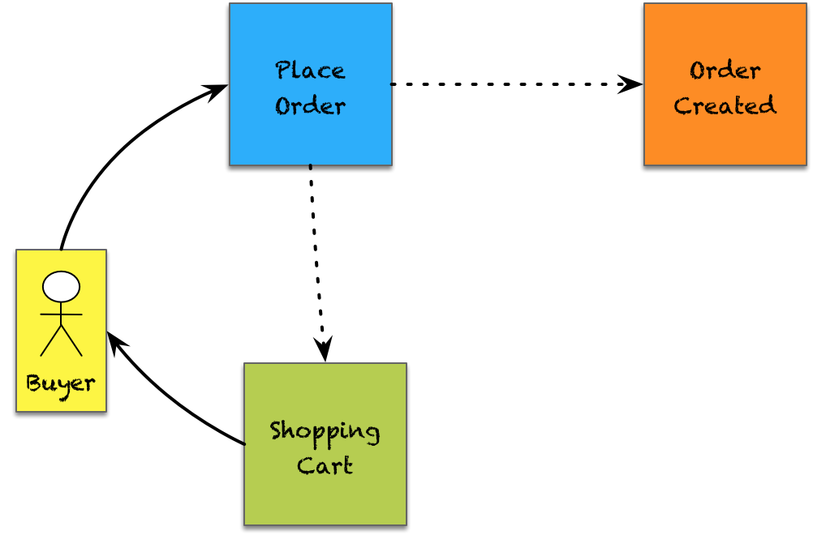
读模型是用户执行决策命令必需的输入信息，在代码层面，这些读模型就是执行决策命令的领域行为所需的输入参数。用户发起决策命令的方式是因为执行了某个活动，例如决策命令“提交订单”实则是因为用户点击了“提交订单”按钮。用户活动的执行与用户体验（User eXerperience，UX）直接有关。现实世界的业务场景通过用户体验将用户与读模型结合起来，把信息传输给事件风暴的决策命令。这一过程牵涉到用户、查询和命令操作，恰好符合组成用例的要素。若建模人员熟悉用例，也可借助用例图来分析。
注意，上图是将读模型 ShoppingCart 提供给 Place Order 决策命令，而非查询操作与命令操作之间的交互。有的事件风暴实践者将查询操作也纳入到事件风暴的模型中，认为是用户执行查询操作获得读模型后，触发了决策命令，如下图所示：
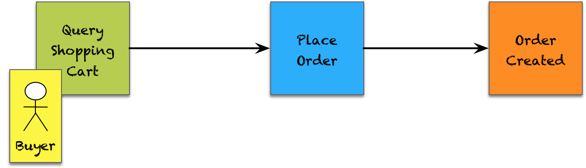
我认为这样的模型设计并不恰当，因为它将活动流程图与事件的因果关系混为一谈了。实际上，活动流程图反应了现实世界的问题域，事件风暴表现的事件因果关系却是解决方案域的内容，这是领域建模活动中两个不同的层次。买家先查询购物车，然后提交订单，这是买家的操作流程。但从事件的因果关系看，并非“查询购物车”触发了“提交订单”这个决策命令，而是用户通过查询获得了购物车读模型之后，由用户发起“提交订单”的决策命令，再通过订单聚合发布了 OrderCreated 事件。“查询购物车”和“提交订单”是两个不同的用户活动，它们并不具有时序上的连续性，可以认为是两个独立的业务场景。由于查询操作并不会触发事件的发生，从模型上看，它也不会导致命令的发生，因而在事件风暴中，并没有查询操作的位置，而是以读模型的形式出现。这也变相地促使建模人员在识别用户活动时，需要分辨该活动究竟是查询还是命令，有利于 CQRS 模式的落地。
当决策命令由策略引发时，就表示事件发生后某些数据满足了某条业务规则。一旦该策略被满足，就会引起目标对象的状态变更，然后根据业务规则的规定触发下一个决策命令。例如，策略“提交订单后，一旦超过规定时间未支付，则取消订单”会触发 Cancel Order 命令，从而引起 OrderCancelled 事件的发生。策略引发的决策可以是自动的，如定时器检测到支付时间超时；也可以是用户手动触发，如用户登录时输入错误密码的次数太多；还可以二者并存，如在取消订单业务场景中，Cancel Order 命令既可以由定时器自动触发，也可以由用户手动触发。
聚合
虽然决策命令和事件之间存在因果关系，但事件并非直接由决策命令发布，而是借助一个“媒介”来发布事件。这个媒介就是“聚合（Aggregate）”。聚合在事件风暴中使用黄色大即时贴来表示。聚合划分了现实世界和模型世界之间的界线。在现实世界，是用户执行了决策命令触发了事件；在模型世界，是聚合履行了发布事件的职责。例如，在电商系统的业务流程中，现实世界的用户活动是用户提交了订单；在模型世界，是 Order 聚合发布了 OrderCreated 事件。
寻找聚合的过程可能是一个艰难的过程。由于聚合是构成领域分析模型的核心要素，识别聚合需要审慎，不要轻易下结论。若未寻找到它，可以先贴上一个空白的黄色大即时贴表示这里存在一个聚合，但目前还不知道它的名字。
在事件风暴中，我们也可以利用事件来反向寻找聚合。分析事件的特征，由于它是由决策命令触发的，意味着事件的产生会带来目标对象状态的变化。状态的变化分为三种形式：
- 从无到有：意味着创建，例如“订单已创建”事件标志着新订单的产生。
- 修改属性值：意味着值的更新，例如“订单已取消”事件使得订单从之前的状态变更为“已取消”状态；也可能意味着内容的变化，例如“商品被加入到购物车”事件，说明购物车增加了一个新的条目。
- 从有到无：意味着删除，不过在多数项目中并不存在这种状态变化；表面是删除，实际是修改属性值。例如“会员已注销”事件和“商品已下架”事件，实则都不是直接删除会员和商品记录，而是将该记录的状态置为“已注销/已下架”状态。
显然，发生状态变更的对象有很大几率就是我们要寻找的聚合对象。毕竟聚合对象承担了发布事件的职责，而事件又是由于状态变更而产生。谁能准确地侦知状态是否变更以及何时发生变更？我想，只有拥有状态的聚合对象自身才具备这一能力。
事件风暴的领域分析建模过程
显然，围绕着“事件”为中心，事件风暴给出了一条有章可循的领域分析建模路径。领域分析建模的基础是探索业务全景的产出物，即业已识别出来的事件流，以及参与事件流的用户、策略与外部系统。整个领域分析建模的过程如下：
- 第一步：挑选任意一个与用户有关的事件，反向驱动出决策命令，该用户就是发出决策命令的人（角色）。从事件驱动出决策命令非常容易，就是将事件的过去时态转换为动宾形式的决策命令即可。
- 第二步：根据决策命令与事件之间的因果关系，推导出要发布该事件必须的前置信息，即决策所需的读模型。读模型通常由用户通过查询操作获得，可以理解为是决策命令行为的输入参数。
- 第三步：根据事件状态变更的目标，决定决策命令与事件之间的聚合对象。若无法确定，则保留一个空的黄色即时贴，待以后确定。
- 第四步：选择当前事件的后置事件。若后置事件仍然与用户有关，则重复第一步；若后置事件与外部系统有关，可以跳过该事件的建模，继续选择下一个后置事件。若事件与策略有关，在进一步细化策略对象之后，驱动出决策命令，重复第三步。
以前面所示的信用卡开卡事件流为例，我们依次选择以下三个事件：
首先是审批人参与的“开卡申请已审批”事件，执行第一步，由该事件可以反向驱动出决策命令“审批开卡申请”。第二步是根据决策命令推导出触发事件需要的读模型。审批开卡申请的前置信息是“申请”和“用户征信”，若缺乏这两个信息，审批人无法做出“审批开卡申请”的决策。第三步是确定决策命令与事件之间的聚合对象。显然，“开卡申请已审批”事件影响到的就是申请的状态，它就是我们要寻找的聚合对象：
接着进入第四步，选择下一个后置事件“卡号已生成”。该事件与策略有关，细化策略为“卡号规则”。由事件驱动出决策命令为“生成卡号”，进入第三步，识别两者之间的聚合对象。卡号的生成影响了信用卡的属性，可以认为该事件影响状态的目标对象为“信用卡”：
继续第四步，选择下一个后置事件“信用卡制作完毕”。由于该事件由外部系统发布，可以忽略该建模过程，仅仅标记外部系统即可：
通过这个简单案例，可以清晰地看到我总结的领域分析建模过程具有一定的可操作性。事件风暴工作坊的参与人员可以按照建模步骤一步一步执行。执行每一步都需要团队与领域专家进一步讨论和确认，保证识别出来的模型对象遵循该领域的统一语言。在这个分析建模过程中，每个模型对象都有着建模的参考依据，包括模型对象的身份特征、彼此之间的关系、承担的职责，这就在一定程度上减轻了对建模人员经验的依赖。
事件风暴的两个层次恰好可以对应领域驱动设计的战略阶段与战术阶段。前者主要用于识别限界上下文，后者主要用于建立领域分析模型，这恰恰填补了 Eric Evans《领域驱动设计》书中的关键空白。当然，Alberto Brandolini 提出的事件风暴不仅于此，它还能用于企业的流程改进、业务创新和对新型服务的探索。这些实践与领域驱动设计没有直接关系，这里就不再叙述。若有兴趣了解事件风暴的更多内容，可以访问事件风暴的官方网站。
分享交流
我们为本课程付费读者创建了微信交流群，以方便更有针对性地讨论课程相关问题。入群方式请到第 6-1 课末尾添加小编的微信号，并注明「DDD」。
阅读文章过程中有任何疑问随时可以跟其他小伙伴讨论，或者直接向作者提问（作者看到后抽空回复）。你的分享不仅帮助他人，更会提升自己。
063 案例 订单核心流程的事件风暴
现在，我们针对电商领域的订单核心流程开展事件风暴工作坊，以此来获得我们的领域分析模型。
工作坊准备
要开展好事件风暴工作坊，需得具备天时地利人和。
天时地利人和
天时。需得安排好专门的时间来一个为期多天的事件风暴。事件风暴很难一蹴而就，尤其面对纷繁复杂的业务逻辑。时间太长，又会让参与人员过于疲累，激发不出风暴的灵感。因此，需得合理地安排好风暴的节奏，以类似迭代的方式增量地进行。若是利用事件风暴进行业务全景探索，则可以将事件风暴的活动安排在整个项目的先启阶段。至于领域分析建模，则可以融合在迭代阶段进行。
地利。需得选择一个专门的“作战室”，这间作战室最好要有一面或多面开阔轩敞的墙，提供近乎于无限的建模空间。即时贴需要备齐各种颜色，数量充足。倘若不想在次日朝晨看到风吹落一地的凌乱，就需要购买具有强粘性的好品牌即时贴，还得“糊”一次墙，用胶带将长长的一大卷白色画卷纸贴在墙上，作为即时贴任意驰聘的战场。为了记录下整个事件风暴的过程，应及时对建模的成果拍摄清晰的照片。
人和。事件风暴的参与者不能只是开发团队，必须邀约业务相关的各种角色，包括领域专家、产品经理、需求分析师和现场客户等。事件风暴专家负责主导整个工作坊的进程。贡献“事件”的主力是领域专家这样的业务人员，但开发人员也不能站在旁边只看不做，也需要积极参与进来，通过不停地提问与回答，风暴才能激起思想的旋涡。群策群力，让每个人都参与进来，是工作坊的基本原则。在确定模型要素的名称时，更需要字斟句酌，这时是确定统一语言的最佳时机。为避免陷入冗长的讨论，同时保证充分的交流，建议团队站在墙面前开展事件风暴。这样也能方便“搬运”即时贴，随时改变着可视化呈现的模型。若领域足够复杂，获得的模型会呈现一张大图片（Big Picture），为保证交流的顺畅，可以分组在属于自己的那部分同时开展事件风暴。
工作坊工具
当然，事件风暴还需要工具。在开始工作坊之前，请准备好如下工具：
纸品
作为事件风暴的“画布”，一大卷连续的白色画卷纸最适宜“糊墙”，在宜家或者文印店都能买到这样长卷的白色画卷纸。画卷纸的长度可以依据“作战室”的墙面长度而定。小型一些的业务场景大概会用到 4 米左右的长度，若能保证 8 米乃至以上的长度，效果更好。如果没有购买到尺寸足够宽的画卷纸，也可以用白板纸代替，利用胶带将其拼接贴在墙上即可。由于事件之间还需要引入更多的建模元素，在贴事件即时贴时，需要为事件之间预留足够的空白。这就需要保证有足够宽的“画布”，可以张贴成百上千的即时贴。
胶带贴条
类似与胶带卷的贴条，可以随撕随贴。既可以作为贴画卷纸的胶带，又可以作为标记贴条，例如标记时间轴或限界上下文的边界。这种胶带贴条也可以有多种颜色。
笔
事件风暴要将事件、读模型等领域概念书写在方寸之间的即时贴上。字不能太细，否则拍照后看不清楚即时贴上的文字，失去参考价值；也不能太粗，否则这么小的即时贴容不下太多的文字。通常可以选择 Sharpie 系列的标准马克笔，也可以适度配备一些签字笔、阴影马克笔或大号马克笔作为辅助：
即时贴
事件风暴是即时贴杀手，各种颜色的即时贴都需要配备一些，最常见的尺寸规格如下所示：
不要买劣质的即时贴，好的贴纸撕下来不卷，粘性好，劣质品撕下来就卷，又容易脱落，非常影响事件风暴的质量。
事件风暴对即时贴有自己的颜色编码：
- 事件（Event）: 橙色
- 读模型（Read model）: 浅绿
- 用户（User）: 黄色小即时贴
- 决策命令（Decision Command）: 浅蓝
- 聚合（Aggregate）: 黄色大即时贴
- 外部系统（External System）: 浅粉
- 策略（Policy）: 紫色
由于我将用户、外部系统与策略共同视为触发事件的起因，因此我会选择同等尺寸的小即时贴来代表它们，颜色仍然如前所示。
工作坊计划
万事俱备，还欠缺一份工作坊计划。事件风暴需要整个开发团队与业务人员的参与，这会牵涉到与多个部门之间的协调。无论是领域专家还是现场客户，时间都较难协调。在开展事件风暴之前，工作坊的组织者需要事先协调时间，再根据工作坊内容和目标制定计划。工作坊计划包括内容：
- 时间：具体的开始时间和结束时间，每次事件风暴建议限制在 2 小时以内。
- 地点：选择具备开展事件风暴条件的会议室。
- 参与人员：列举需要参加该次事件风暴的相关人员，最好能明确参与角色和具体参与人。
- 目标：针对一个复杂企业系统而言，事件风暴会持续多天，在制订计划时，最好能事先拆分事件风暴，确定每个事件风暴的目标。
即使形式皆为事件风暴，但其目标可以不同。我们可以运用事件风暴探索业务全景（Big Picture），也可以运用事件风暴建立领域分析模型。这可以是两个阶段分别开展的活动，但主体骨架皆以“事件”为核心。
即使是探索业务全景，我们也需要把控事件风暴的边界和粒度。边界是以领域或业务场景划分的，粒度则是以事件的抽象层次来划分的。例如，我们在针对航空公司的地面服务保障业务开展事件风暴时，既可以从旅客、行李、飞机等子领域分别开展事件风暴，也可以将中转、值机、安检抽象为高层级的事件，形成事件风暴的“分而治之”，让每次事件风暴的目标更加清晰明确且可达。
确定了计划后，就可以按照计划规定的时间如期开展事件风暴。接下来，我将按照上两节讲解的过程，对电商领域的订单核心流程开展事件风暴。
探索业务全景
识别事件
在确定参与事件风暴工作坊的人员都对目标业务具有足够了解之后，我们开始沿着时间轴识别事件。由领域专家贴上第一张他/她最为关心的事件，然后由大家分头围绕该事件写出在它之前和之后发生的事件，并按照时间顺序由左向右排列。
在订单核心流程中，毫无疑问，领域专家最为关心的事件当然是“订单已创建”事件了，毕竟在这个流程中，所有业务都与创建好的订单休戚相关。因此我们可以在整面墙的中间贴上橙色即时贴，上面写上“订单已创建”事件：
在确定这个核心事件之后，我们就要以此为中心，向前推导它的起因，向后推导它的结果，根据这种因果关系层层推进，逐渐形成一条或多条沿着时间轴且彼此之间存在因果关系的事件流：
现在，以“订单已创建”事件为起点，分别向前和向后去寻找前置事件与后置事件。如果需要探索的全景业务比较复杂，为了更加高效地开展事件风暴，有效利用参与工作坊的人力资源，可以以选定的核心事件为中线，分为两个小团队分别向前和向后驱动当前核心事件的前置事件和后置事件，由此获得该业务流程的全景事件流。要注意，必须保证分开进行的两个小团队都有业务人员参加。为了避免分头进行的两个团队对业务的理解出现歧义，在完成整个全景事件流之后，需要整个团队评审最终获得的事件流，确认识别出来的事件是否正确，是否存在遗漏的事件。
团队 A 从起点开始寻找前置事件。针对“订单已创建”事件，思考要产生该事件的前置条件是什么？显然，只有通过了验证的订单才允许被创建。于是，我们就可以获得前置事件“订单已验证”。以此类推，“订单已验证”事件的前置条件又是什么呢？要进行验证的订单显然已经准备好，但订单的内容却来自购物车。如果买家没有把要购买的商品添加到购物车，就无法创建订单。由此，可以再获得当前事件的前置事件“商品被加入到购物车”：
团队 B 从起点开始寻找后置事件。考虑订单创建之后带来的结果（或影响）是什么呢？买家创建了订单，就代表买家和卖家形成了一个初步的契约。这个契约处于待定状态，并可能会持续一段时间。为了避免在这段时间有别的买家提前买走相同的商品，系统需要锁定库存来保证买家在该状态期间的权利。这个待定状态如何才会变成有效状态呢？这就要从运营角度思考，是需要审核订单，还是买家只要支付完成就可以了？如果需要审核订单，审核者如何才知道该订单已经被创建呢？一旦理清事件会带来的影响，并确定对该事件的处理策略（处理流程），就可以根据业务流程确定当前事件的一系列后置事件。管理和运营的流程不同，带来的事件流也不相同，例如订单是否需要审核，就会影响到“订单已创建”事件的后置事件。
如果需要审核订单，后置事件流如下所示：
“库存已锁定”与“订单审核人已通知”事件是同时发生的，因此在事件流中处于同一条垂直线，通过并列形式来体现这种同时发生的效果。注意，“订单已审核”事件可能产生两种不同的结果：审核通过或审核拒绝。在进行事件风暴时，为了避免过多业务流程的干扰，可以在一个时段只考虑正常流程，而将异常的流程当做需要关注的热点信息，用粉红色即时贴标记在橙色事件之上：
如果不需要审核订单，买家就可以在创建订单后完成支付：
通过对事件起因和结果分别寻找前置事件和后置事件，获得的全景事件流大致如下图所示：
某些事件虽然具有时间概念，但它在时间轴上并非发生在一个时间点，而是在一个时间段内发生，例如“订单已取消”事件，在“订单已创建”到“订单商品已发货”事件之间都可能发生。那么在事件风暴全景图上，可以以并行的水平事件流体现，并将即时贴贴在这两个参考事件中任意一点皆可。为了清晰说明这一约束关系，可以利用粉红色的热点即时贴加以说明。
有的事件可能会牵涉到更加复杂繁琐的深化流程，为了避免事件风暴陷入“分析瘫痪”，可以考虑以粗粒度的事件来概括这些细节流程，又或者通过热点即时贴来说明，如上图中“订单商品已打包”事件并没有考虑缺货时订单拆分的情况，而是以热点形式在事件之上加以说明。然后，可以针对缺货流程，单独发起一次事件风暴，识别相对独立的事件流。
事件风暴的回顾非常重要。长期陷入到事件的“心流”中，容易让参与工作坊的成员感到身心疲惫，当局者迷。稍事休息，甚至可以暂时放下事件风暴的工作，等到第二天再来对事件风暴进行回顾，参与人员可能会出现“灵感迸现”的效应。在回顾过程中审视整个事件流，极有可能发现之前的谬误与缺失。还可以通过邀请未参加工作坊的其他成员帮助团队评审事件流。旁观者清，通过介绍与询问的方式再一次对事件流进行回顾，亦有助于完善事件风暴的产出物。
标记参与者
现在，相对完整的领域事件已经呈现在我们面前，我们可以通过识别事件的参与者：用户、策略与外部系统，进一步确认和精化事件风暴获得的模型。这个过程并不复杂，只要事件是由用户活动触发的，就应该寻找到正确的用户角色；只要事件来自于系统之外，就应该敲定负责发布事件的外部系统；除此之外的事件，则可能与策略有关。由此可以获得如下模型：
我在上图使用了虚线圆框标记了三个做过调整的地方。这是在识别参与事件的用户、策略与外部系统时，认识到之前识别的事件存在的谬误或遗漏：
- 第 1 处：最初识别的事件为“促销产品已选择”。通过与业务人员的沟通，发现只有“优惠券”这种促销产品才需要领取并使用。因此在这里明确了“优惠券”这一领域概念，同时分拆事件为“优惠券已领取”和“优惠券已使用”。
- 第 2 处：在尝试识别“订单已验证”事件和“订单已创建”事件的参与者时，通过与业务人员的沟通，一致认为需要有买家参与，但是，订单的验证与创建实际是由系统自动完成的，因此这里缺少一个“订单已提交”事件。从管理和运营的角度讲，只要订单被提交了，就意味着订单通过了验证，即“订单已验证”只是提交订单过程中的一个中间状态，管理者并不关心该事件。
- 第 3 处：从“订单已支付”事件的概念描述来看，属于订单核心流程的组成部分，但只有外部的支付系统才具备支付能力。支付系统只关心支付，而不关心支付的到底是订单，还是其他交易。因此，在“订单已支付”事件发生之前，通过外部的支付系统发布了“支付已完成”事件。
分割边界
在获得全景事件流之后，可以确定时间轴的一些关键时间点，用黄色胶带来分割边界。例如在“商品被加入到购物车”事件之前，是客户购买商品前的必要准备；在“订单已支付”事件之后，客户就完成了对商品的购买，但还未收到要购买的商品。显然，上图所示的时间轴可以清晰地分割为购买前、购买中、购买后三个时间段。在完成购买之后，发货与运货之间亦存在明显的时间间隔，可以继续拆分。于是，关键时间点将整个事件流分割为四个子领域边界：商品、订单、库存、物流。分割了边界后的模型如下图所示：
领域分析建模
探索完业务全景之后，就可以根据事件风暴的领域分析建模过程围绕着业已识别出的事件进行分析建模。因为篇幅原因，我仅选择订单子领域中的几个关键事件进行领域分析建模。
首先是“商品被加入到购物车”事件。由买家执行决策命令“添加商品到购物车”，毫无疑问，需要获得读模型“商品”。由于事件修改了购物车的内容，意味着决策命令将通过聚合“购物车”发布事件：
然后考虑后置事件“订单已提交”。同样由买家执行决策命令“提交订单”，需要获得包括购物车和客户的前置信息。购物车中被选中的购物项会进入订单，要提交订单并验证订单，需要提供客户的联系信息、配送地址等内容。当前事件改变了订单的状态，因此，“订单”就是我们要寻找的聚合对象。在提交订单时，需要验证订单是否有效，因此考虑引入“订单验证规则”策略对象。该策略对象本身会引发“订单已验证”事件，但该事件属于管理者并不关心的中间内部事件，故而没有呈现在事件风暴的模型中：
“订单已创建”事件由“订单已提交”事件直接触发，操作的决策命令为“创建订单”。由于“订单”聚合对象已经包含了创建订单的全部信息，因此没有读模型参与到该事件中来。
如此类推，整个分析过程不再一一详细叙述。借助事件风暴获得的领域分析模型如下图所示：
在获得事件风暴的领域分析模型之后，我们尝试确定这些模型对象之间的关系，为领域设计建模阶段奠定良好的基础。读模型、策略与聚合实际上都是领域设计模型中设计要素的重要候选。其中，事件风暴的聚合虽不必然对应于设计模型中的“聚合（Aggregate）”，但可作为识别聚合对象的重要参考，而决策命令就可以作为聚合根或聚合内其他实体的行为。读模型通常为查询操作的结果，一般可以映射为实体或值对象。策略往往作为一种业务规则。为了体现规则所呈现的领域概念，可以引入规格模式将策略对象建立为一个独立的领域服务对象：
事件风暴的领域模型还可以作为领域驱动设计过程的重要参考。在建立领域分析模型时，我们通过事件反向驱动出决策命令，同时也识别了事件的参与者，确定了发布事件的聚合对象。这些信息将有助于我们划分业务场景，分解子任务。在后面的章节中，我以业务场景与任务拆分为基础，将场景驱动设计与领域驱动设计要素、DCI 模式结合起来，建立了一套领域驱动设计的固化流程。遵循这套流程，可以让开发团队按照流程步骤绘制时序图，寻找良好协作的对象，在不需要太高面向对象设计能力的情况下，以类似“按图索骥”的方式开发出满足领域驱动设计高质量要求的软件产品。
064 表达领域设计模型
Martin Fowler 在《企业应用架构模式》中讨论了在企业应用架构中表达领域逻辑的几种模式，包括事务脚本（Transaction Script）、表模块（Table Module）和领域模型（Domain Model）。
事务脚本
事务脚本模式表达一个领域场景的方式是过程式的，即将整个领域场景按照顺序分解为多个子任务，然后组合成为一个完整的过程。多数情况下，一个事务脚本会对应一个数据库事务，这是该模式名称的来由。这一命名也说明该模式虽然表现的是领域逻辑，但却是从数据库的角度来思考设计的。
如果是在面向对象语言中，可以由一个类实现事务脚本。实现方式通常有两种：一种方式是将多个相关的事务脚本放到一个类中，类的每个公开方法就等同于一个事务脚本，完成一个完整的领域场景。在公开方法的内部，可以采用 Kent Beck 提出的“组合方法”模式来改进代码的可读性，避免实现逻辑的重复。这种方式实则是以面向对象的语言行过程式设计，例如第 3 节《数据设计模型》给出的推荐朋友服务就是采用了事务脚本模式：
public class FriendInvitationService {
public void inviteUserAsFriend(String ownerId, String friendId) {
try {
bool isFriend = friendshipDao.isExisted(ownerId, friendId);
if (isFriend) {
throw new FriendshipException(String.format("Friendship with user id %s is existed.", friendId));
}
bool beInvited = invitationDao.isExisted(ownerId, friendId);
if (beInvited) {
throw new FriendshipException(String.format("User with id %s had been invited.", friendId));
}
FriendInvitation invitation = new FriendInvitation();
invitation.setInviterId(ownerId);
invitation.setFriendId(friendId);
invitation.setInviteTime(DateTime.now());
User friend = userDao.findBy(friendId);
sendInvitation(invitation, friend.getEmail());
invitationDao.create(invitation);
} catch (SQLException ex) {
throw new ApplicationException(ex);
}
}
}
另一种方式是引入命令模式（Command Pattern），每个事务脚本对应到一个类中，然后根据其通用特征抽象为公共的命令接口（或抽象类），每个封装了事务脚本的类都实现该命令接口。这一设计方式可以使事务脚本能够更好地支持扩展，若存在公共逻辑，也可以在抽象类中实现重用。虽然第二种方式运用了面向对象设计思想中的多态与继承，但针对事务脚本表达的领域逻辑而言，仍然是过程式的。
事务脚本的实现直接而简单，在面对相对简单的业务逻辑时，这种方式在处理性能和代码可读性方面都有着明显的优势。但这种过程式的设计可能会导致设计出一个庞大的服务类，又由于缺乏清晰的领域概念，随着需求的变化与增加，代码很容易膨胀。当代码膨胀到一定程度后，由于没有领域类封装边界的控制和保护，容易形成意大利面条似的代码，整个软件系统也将变得难以维护。
表模块
表模块模式是数据模型驱动设计的直观体现。数据库中的一个表对应一个表模块对象。该对象既封装了对应的领域逻辑，又包含了对表数据进行操作的方法。因此，表模块对象实则是一个容器，持有的是整个表的数据，而非数据表的一行。以订单为例，就意味着表模块对象 Orders 可以处理所有订单。为了避免表数据过大对加载性能产生影响，支持表模块模式的框架往往会为表模块对象提供延迟加载等性能优化的手段。
表面上看，表模块遵循了面向对象“将数据与行为封装在一起”的设计原则，但它同时又将访问数据库的持久化机制糅合在了一起。这种方式有些类似活动记录（Active Record）模式，但活动记录模式定义的类对应的是单个的领域对象，而不是一个容器。
ADO.NET 框架提供的 DataSet 可以很好地支持表模块模式。我们可以定义一个强类型的 DataSet 来表示表模块，也可以将 DataSet 作为表模块对象的参数传入，然后获得 DataSet 的 DataTable：
public class Orders {
private DataTable orderTable;
public Orders(DataSet ds) {
orderTable = ds.Tables["orders"];
}
public Money CalculateTotalAmount(long orderId) {}
}
Entity Framework 的 DbSet
using (var context = new AuthorContext())
{
var author = context.Authors.FirstOrDefault(a => a.LastName == "Shakespeare");
}
代码中的 Authors 就是 DbSet
相对于事务脚本，表模块对业务边界的划分更加合理，若能使用某些框架提供的表模块能力，还能显著降低实现成本。不过，正如 Martin Fowler 所说：“表模块并没有给你提供完全的面向对象能力来组织复杂的领域逻辑。你不能在实例之间直接建立关联，而且多态机制也无法工作良好。”这说明表模块模式并非纯粹的面向对象设计，它更像是为了解决关系表数据结构的存取问题而定制的模式，因为它能让领域逻辑与关系数据库的衔接变得更加简单。由于表模块对象拥有的数据基本上是自给自足的，对业务数据进行计算的操作都可以分配给它，这就避免了贫血模型的出现；但也可能从一个极端走向另一个极端，违背了单一职责原则，导致一个表模块对象承担的职责过于臃肿。
领域模型
领域模型是合并了行为和数据的领域对象模型，这说明领域模型模式满足了面向对象的设计原则。普遍认为，良好的面向对象设计可以更好地应对复杂的业务逻辑，通过一张相互协作的对象网来表达领域模型，也是领域驱动设计推崇的做法。
Martin Fowler 在《企业应用架构模式》中将领域模型分为两种风格：
- 简单领域模型：几乎每一个数据库表都与一个领域对象对应，通常使用活动记录实现对象与数据的映射。这实际上是前面讲解的数据模型驱动设计的设计建模方式。
- 复杂领域模型：按照领域逻辑来设计对象，广泛运用了继承、策略和其他设计模式，通常使用数据映射器实现对象与数据的映射。这实际上是领域驱动设计推崇的设计建模方式。
由于领域模型强调对象要“合并行为和数据”，这就意味着需要避免贫血模型，我在《领域模型与结构范式》一节中已经提到了贫血模型的不足。贫血固然是坏味道，但若领域对象变得过于臃肿，依旧是一个坏味道。归根结底，还是职责分配是否合理的问题。通常，在分配职责时，首先需要判断该职责到底属于架构逻辑分层的哪一层！将 UI 交互、数据库访问或其他外部资源访问的逻辑错误地分配给领域层，是最不能容忍的职责分配错误。在确定了属于领域逻辑的范畴之后，再基于对象拥有的信息、承担的角色去考虑。若仍然不能做出正确决策，就应该考虑职责的重用和变化，这就回到了“高内聚低耦合”这个根本的原则上。
其实分还是不分，是一个哈姆雷特似的问题。还是让我们听听 Martin Fowler 的意见：
分离具体使用的行为所带来的问题是：会产生冗余代码。从订单类中分离出来的行为很难被定位，因此开发者很可能因为找不到，而自己写一段完成相同功能的代码。冗余代码容易增加软件的复杂性和不一致性，但我发现对象臃肿化的发生率远较预想中的低。确实发生时也很容易发现和修正。因此我的建议是不要分离针对具体使用的行为，将它们放到本来应当放的对象中。对象臃肿发生后再进行修正。
Martin Fowler 的意见是优先遵循“数据与行为封装在一起”的设计原则，只有当对象变得臃肿了，再考虑如何分离对象的行为。这是重构大师实证主义的态度。若不满足于这等类似“事后诸葛亮”的解释，可以参考我对面向对象设计原则的整体总结，如下图所示：
我认为，软件复杂度的诱因主要来自重复与变化。要解决这种复杂度，就需得遵循“分而治之”的思想。分，就需得满足高内聚，努力将关联性强的内容放在一起，这就牵涉到“职责怎么分”这个命题。合，是必然的，但应尽量保证关联对象之间的耦合度降到最低，满足低耦合，本质上就是要考虑“API 怎么设计”。满足高内聚低耦合原则的设计可以称为是“正交设计”。若能从角色、职责与协作三个方面来考虑职责分配，就可以有效地减少重复；从间接、抽象与分离三个方面去抽象接口，就能够更好地应对变化。只有把重复与变化控制住了，才能降低软件复杂度。于是，围绕着软件复杂度并结合这些设计原则形成了“以始为终”的完美闭环。
**说明：**正交设计由袁英杰提出，若希望了解更多正交设计的内容，可以阅读袁英杰的文章《变化驱动：正交设计》和《正交设计，OO与SOLID》。若希望了解如何在项目中实践正交设计的四个策略，可以参考刘光聪的文章《实战正交设计》。
当现实照进理想
理想的对象模型都是完美的，现实的对象模型却各有各的不幸。当我们在谈论对象时，常常以一种不带烟火气的神仙方式，不考虑外部资源、依赖、性能、数据一致性这些脏事儿和破事儿，就好似计算机是自给自足的，对象从鸿蒙之初被陆续创建出来，然后连成了一张可以通达世界任何地方的对象网络，调用者可以自由使用，仿佛它们与生俱来唾手可得。
然而，对象如人，也是要吃五谷杂粮的。不是神仙，就有生老病死；能力不同，就会嫉妒不平；性格迥异，就会相爱相杀。作为创造这些对象的我们，就像上帝一般可以操纵它们的生死，但若要这个由对象组成的世界向着“善”的方向发展，就必须扫清这个世界的不平之事。
首先是对象的生老病死，这就牵涉到对象的持久化。内存是这些对象的运行空间，但我们需得具有类似掌控西部世界那样的能力，可以让系统暂停、重启，这就需要为系统中每个对象的数据提供一份不易丢失的副本。这并非业务因素带来的制约，而是基础设施产生的局限，这就引入了领域对象模型的第一个问题：领域模型对象是如何与数据库协作的？
每个对象生而平等，但天赋却不相同，这就导致它们掌握的信息并不均等，对象之间需要互通有无。如果所有对象组成一张四通八达的图，就能如蛛丝一般畅通地传递着信号，从 A 对象到达 B 对象轻而易举，获取对象的区别仅在于途经的网络节点数量。可惜现实并非如此，内存资源是昂贵的，加载不必要对象带来的性能损耗也不可轻视，这就引入了领域对象模型的第二个问题：领域模型对象的加载以及对象间的关系该如何处理？
每个对象自有性格，调用者对它们各有所好。有的对象具有强烈的身份意识，处处希望彰显自己的与众不同；有的对象则泯然众人矣，默默地提供重要的能力支撑。当它们被加载到内存中时，就对管理和访问提出了不同的要求，这并非堆与栈的隔离可以解决的，若不加以辨别与控制，就无法做到和平共处，这就引入了领域对象模型的第三个问题：领域模型对象在身份上是否存在泾渭分明的差别？
总有一些对象并不体现领域概念，而是展现操作的结果，不幸的是，这些操作往往是不安全的，它会带来状态的变更，而状态变更又该如何传递给其他关心这些状态的对象呢？理想的对象图并不害怕状态的变迁，因为一切变化都可以被准确传递，且无需考虑彼此之间的依赖。然而现实并非如此，如何安全地控制状态变化，又如何在侦听这种变化的同时，不至于引入多余的依赖，这就引入了领域对象模型的第四个问题：领域模型对象彼此之间如何能弱依赖地完成状态的变更通知？
领域模型模式并没有给出解决这些问题的方案，面向对象的设计原则与模式对此也显得力有未逮。对象模型的理想与现实出现了不如人意的差别，为此，领域驱动设计定义了相关的设计要素，针对这些问题给出了自己的答案：
- 问题一：领域模型对象是如何与数据库协作的？领域驱动设计引入资源库（Repository）模式来隔离领域逻辑与数据库实现，并将领域模型对象当做资源，将存储领域对象的介质抽象为仓库。
- 问题二：领域模型对象的加载以及对象间的关系该如何处理？领域驱动设计引入聚合（Aggregate）来划分对象之间的边界，在边界内保证所有对象的一致性，并在对象协作与独立之间取得平衡。
- 问题三：领域模型对象在身份上是否存在泾渭分明的差别？领域驱动设计区分了实体（Entity）与值对象（Value Object），避免了不必要的身份跟踪与并发控制。
- 问题四：领域模型对象彼此之间如何能弱依赖地完成状态的变更通知？领域驱动设计引入了领域事件（Domain Event），通过发布者/订阅者来发布与订阅领域事件。
显然，理想的对象图模型希望用对象阐释现实世界，但受限于运行条件，很难到达对象联邦的“理想国”，需要进行设计上的约束，引入资源库、聚合、实体与值对象、领域事件等设计要素，形成了妥协后的领域设计模型。现实世界、对象图模型与领域设计模型三者之间的关系如下图所示：
如果说领域分析建模是实现了从现实世界到对象图模型的映射，那么领域设计建模就是在这个映射关系上针对对象图模型施加设计约束，从而解决将现实照进理想时出现的问题。设计约束引入的设计要素，就是领域驱动设计给出的设计模式。让我们再一次审视 Eric Evans 给出的这幅图：
这幅图充分说明了这些设计要素在领域设计模型中承担的作用。首先，Eric Evans 规定只能是实体（Entity）、值对象（Value Object）、领域服务（Domain Service）与领域事件（Domain Event）表示模型。这样的约束就可以避免将太多的领域逻辑泄漏到领域层外的其他地方，例如应用层或基础设施层。其次，图中明确提及使用聚合（Aggregate）来封装实体和值对象，并维持边界内所有对象的完整性。若要访问聚合，需要通过资源库（Repository）来访问，这就隐式地划定了边界和入口，若能做到这一点，对聚合内所有类型的领域对象都可以得到有效的控制。当然，若牵涉到复杂或可变的创建逻辑，还可以利用工厂（Factory）来创建聚合内的领域对象。最后，若牵涉到实体的状态变更（注意，值对象是不牵涉到状态变更的），则通过领域事件来推动。
说明：由于实体、值对象、领域服务与领域事件都是用以表示领域模型的，为了区分它们与其他设计要素，我将它们统一称为领域模型对象。
领域模型对象的哲学依据
（图片来源于网络）
既然是对领域设计模型的表达，而领域设计模型又是对现实世界的一种抽象，说明这些模型对象就是对要解决的现实世界领域问题的一种描述。领域驱动设计是以何为根据将其分为这样的四类对象呢？我从亚里士多德的范畴学说中寻找到了理论的依据。范畴在亚里士多德的逻辑学中，原文为 kategorein（动词）或 kategoria（名词），他常说“kategorein ti katatinos”，翻译过来就是“assert something of something（述说某物于某物）”。一个范畴其实就是一个主语 - 谓语的结构，其中主语就是被谓语（Predication）描述的主体。
亚里士多德将范畴分为十类：实体、数量、性质、关系、地点、时间、形态、状况、活动（主动）、遭遇（被动）。这十类范畴说明了我们人类描绘事物的十种方式，采用主语—谓语结构，如下描述：
- 这是人（实体）
- 这是三尺长（数量）
- 这是白色（性质）
在亚里士多德的哲学观中，实体是描述事物的主体，其他范畴必须“内居”于一主体。所谓“内居”，按亚里士多德自己的解释是指不能离开或独立于所属的主体。既然有这种“内居”的主从关系，整个范畴就有了两重划分。实体是现实世界的形而上学基础，而其它范畴则成为实体的属性，需要有某种实体作为属性的基础。
亚里士多德企图通过自己的逻辑学来解释和演绎我们生存的这个世界。那么在软件领域，要解释和演绎的不正是我们要解决的问题域世界吗？从这个角度讲，二者有其相通之处。于是，我们可以利用软件术语来进一步阐释亚里士多德划分的这十个范畴。其中，实体可以理解为是我们要描绘事物的主体，数量、性质、关系、地点、时间与形态都是该主体的属性，状况即状态，它会因为主动发起的活动或被动的遭遇导致实体属性的变化，状态的变迁。至于导致这种变化的活动与遭遇，若为主动，则对应于命令似的业务行为，至于被动，则是该主动行为产生的结果。至于属性在实体中的“内居”，其实就是封装思想的体现。
这样，我就为领域驱动设计中的四种领域模型对象找到了哲学依据：
- 实体：实体范畴，是谓语描述的主体。它包含了其他范畴，包括引起属性变化和状态迁移的活动。
- 值对象：为主体对象的属性，通常代表数量、性质、关系、地点、时间或形态。
- 领域事件：封装了主体的状况，代表了因为主动活动导致的状态变迁产生的被动遭遇，即过去发生的事实。
- 领域服务：如前所述，其他范畴必须“内居”于一主体，若活动与遭遇代表的业务行为无法找到一个主体对象来“内居”，就以领域服务作为特殊的主体来封装。
在领域设计建模阶段，我们就是要学会将领域分析模型中的领域概念对象转换为领域设计模型中的领域模型对象。我们需要有一种世界创造者的气度，从哲学的角度去思考并做出判断。寻找主体，就是在辨别实体；确定主体的属性，就是在辨别值对象，且清晰地体现了二者的职责分离与不同粒度的封装；确定主体的状况，就是在辨别领域事件；最后，只有在找不到主体去封装领域逻辑时，我们才会考虑定义领域服务。
分享交流
我们为本课程付费读者创建了微信交流群，以方便更有针对性地讨论课程相关问题。入群方式请到第 6-1 课末尾添加小编的微信号，并注明「DDD」。
阅读文章过程中有任何疑问随时可以跟其他小伙伴讨论，或者直接向作者提问（作者看到后抽空回复）。你的分享不仅帮助他人，更会提升自己。
065 实体
“实体（Entity）”这个词被我们广泛使用，甚至被我们过分使用。设计数据库时，我们用到实体，例如《数据模型资源手册》就说：“实体是一个重要的概念，企业希望建立和存储的信息都是关于实体的信息。”在分解系统的组成部分时，我们用到实体，例如《系统架构》就说：“实体也称为部件、模块、例程、配件等，就是用来构成全体的各个小块”。在徐昊提出的四色建模法中，实体又变为“代表参与到流程中的人/组织/地点/物品”。
前面搬来亚里士多德的理论，说明实体是我们要描述的主体，而另一个古希腊哲学家巴门尼德则认为实体是不同变化状态的本体。这两个颇为抽象的论断差不多可以表达领域驱动设计中“实体”这个概念，那就是能够以主体类型的形式表达领域逻辑中具有个性特征的概念，而这个主体的状态在相当长一段时间内会持续地变化，因此需要有一个身份标识（Identity） 来标记它。
如果我们认同范畴理论中“其他范畴必须内居于一主体”的论断，则说明实体必须包括属性与行为，而这些属性往往又由别的次要主体（同样为实体）或表示数量、性质的值对象组成。这一设计原则体现了“分而治之”的思想，也满足单一职责原则。在一些复杂的商业项目中，现实世界对应的主题概念往往具有几十乃至上百个属性。若遵循“将数据与行为封装在一起”的面向对象设计原则，固然可以避免贫血模型，但也会导致一个实体类承担了太多的职责，从而变得过于臃肿。注意，将实体的高内聚属性进一步封装为实体或值对象，并不同于前面提及的“分离具体使用的行为”，而是让对象的粒度变得更细，同时履行自己应有的职责，符合自治对象的“最小完备”特性。
一个典型的实体应该具备三个要素：
- 身份标识
- 属性
- 领域行为
身份标识
身份标识（Identity，或简称为 ID）是实体对象的必要标志，换言之，没有身份标识的领域对象就不是实体。实体的身份标识就好像每个公民的身份证号，用以判断相同类型的不同对象是否代表同一个实体。身份标识除了帮助我们识别实体的同一性之外，主要的目的还是为了管理实体的生命周期。实体的状态是可以变更的，这意味着我们不能根据实体的属性值进行判断，如果没有唯一的身份标识，就无法跟踪实体的状态变更，也就无法正确地保证实体从创建、更改到消亡的生命过程。
一些实体只要求身份标识具有唯一性即可，如评论实体、博客实体或文章实体的身份标识，都可以使用自动增长的 Long 类型或者随机数与 UUID、GUID，这样的身份标识并没有任何业务含义。有些实体的身份标识则规定了一定的组合规则，例如公民实体、员工实体与订单实体的身份标识就不是随意生成的。遵循业务规则生成的身份标识体现了领域概念，例如公民实体的身份标识其实就是“身份证号”这一领域概念。定义规则的好处在于我们可以通过解析身份标识获取有用的领域信息，例如解析身份证号，可以直接获得该公民的部分基础信息，如籍贯、出生日期、性别等，解析订单号即可获知该订单的下单渠道、支付渠道、业务类型与下单日期等。
在设计实体的身份标识时，通常可以将身份标识的类型分为两个层次：通用类型与领域类型。
通用类型提供了系统所需的各种生成唯一标识的类型，如基于规则的标识、基于随机数的标识、支持分布式环境唯一性的标识等。这些类型都将放在系统层代码模型的 domain 包中，可以作为整个系统的共享内核。例如，我们定义一个通用的 Identity 接口：
public interface Identity<T> extends Serializable {
T value();
boolean isEmpty();
T emptyId();
}
随机数的身份标识则如下接口所示：
public interface RandomIdentity<T> {
T next();
}
如果需要按照一定规则生成身份标识，而其唯一性的保证则由随机数来承担，则可以定义 RuleRandomIdentity 类。它同时实现了 Identity 与 RandomIdentity 接口：
@Immutable
public class RuleRandomIdentity implements RandomIdentity<String>, Identity<String> {
private String value;
private String prefix;
private int seed;
private String joiner;
private static final int DEFAULT_SEED = 100_000;
private static final String DEFAULT_JOINER = "_";
private static final long serialVersionUID = 1L;
public RuleRandomIdentity() {
this("", DEFAULT_SEED, DEFAULT_JOINER);
}
public RuleRandomIdentity(int seed) {
this("", seed, DEFAULT_JOINER);
}
public RuleRandomIdentity(String prefix, int seed) {
this(prefix, seed, DEFAULT_JOINER);
}
public RuleRandomIdentity(String prefix, int seed, String joiner) {
this.prefix = prefix;
this.seed = seed;
this.joiner = joiner;
this.value = compose(prefix, seed, joiner);
}
@Override
public final String value() {
return this.value;
}
@Override
public final boolean isEmpty() {
return value.isEmpty();
}
@Override
public final String emptyId() {
return "";
}
@Override
public final String next() {
return compose(prefix, seed, joiner);
}
private String compose(String prefix, int seed, String joiner) {
long suffix = new Random(seed).nextLong();
return String.format("%s%s%s", prefix, joiner, suffix);
}
}
UUID 可以视为一种特殊的随机数，同时实现了 Identity 与 RandomIdentity 接口：
@Immutable
public class UUIDIdentity implements RandomIdentity<String>, Identity<String> {
private String value;
public UUIDIdentity() {
this.value = next();
}
private static final long serialVersionUID = 1L;
@Override
public String next() {
return UUID.randomUUID().toString();
}
@Override
public String value() {
return value;
}
@Override
public boolean isEmpty() {
return value.isEmpty();
}
@Override
public String emptyId() {
return "";
}
}
这些基础的身份标识类应具备序列化的能力，同时还应保证它们的不变性。注意，包括 UUID 在内的随机数并不能支持分布式环境的唯一性，它需要特殊的算法，例如采用 SnowFlake 算法来避免在分布式系统内产生身份标识的碰撞。
定义通用类型的身份标识是为了重用，只有领域类型的身份标识才与各个限界上下文的实体对象有关，例如为 Employee 定义 EmployeeId 类型，为 Order 定义 OrderId 类型。在定义领域类型的身份标识时，可以选择恰当的通用类型身份标识作为父类，然后在自身类的定义中封装生成身份标识的领域逻辑。例如，EmployeeId 会根据企业的要求生成具有统一前缀的标识，就可以让 EmployeeId 继承自 RuleRandomIdentity，并让企业名称作为身份标识的前缀：
public final class EmployeeId extends RuleRandomIdentity {
private String employeeId;
private static final String COMPANY_NAME = "topddd";
public EmployeeId(int seed) {
super(COMPANY_NAME, seed);
}
}
领域类型的身份标识往往具备领域知识和业务逻辑。它是实体的身份标识，但它自身却应该被定义为值类型，保持值的不变性，同时提供属于身份标识的常用方法，隐藏生成身份标识值的细节，以便于应对未来可能的变化。
属性
实体的属性用来说明其主体的静态特征，并通过这些属性持有数据与状态。通常，我们会依据粒度的大小将属性分为基本属性与组合属性。简单说来，定义为开发语言内置类型的属性就是所谓的“基本属性”，如整型、布尔型、字符串类型等；与之相反，组合属性则通过自定义类型来表现。例如 Product 实体的属性定义：
public class Product extends Entity<ProductId> {
private String name;
private int quantity;
private Category category;
private Weight weight;
private Volume volume;
private Price price;
}
其中，Product 实体的 name、quantity 属性属于基本属性，分别被定义为 String 与 Int 类型；而 category、weight、volume、price 等属性则为组合属性，类型为自定义的 Category、Weight、Volume 和 Price 类型。
这两种属性之间是否存在什么分界线？例如说，难道我们就不能将 category 定义为 String 类型，将 weight 定义为 Double 类型吗？又或者，难道我们不能将 name 定义为 Name 类型，将 quantity 定义为 Quantity 类型吗？我认为，划定这条边界线的标准是：该属性是否存在约束规则、组合因子或属于自己的领域行为？
先来看约束规则。相较于产品名而言，产品的类别具有更强的约束性，避免出现分类无休止地增长，过多离散细小的分类反而不利于产品的管理。更何况，从业务规则来看，产品的类别可能还存在一个复杂的层次结构，单单靠一个字符串是没法表达如此丰富的约束条件与层次结构的。当然，如果需求对产品名也有明确的约束，为其定义一个 Name 类也未尝不可；只是相比较而言，定义 Category 的必要性更有说服力罢了。
再看组合因子。这其实是看属性的不可再分性。我们看 Weight 与 Volumn 两个对象，就有非常明显的特征：它们都需要值与计数单位共同组合。如果只有一个值，会导致计算结果的不匹配，概念也会出现混乱，例如 2kg 与 2g 显然是两个不同的值，不能混为一谈。至于 quantity 属性之所以被设计为基本属性，是假定它没有计数单位的要求，因而无需与其他值组合。当然，这样的设计取决于业务场景。如果需求说明商品数量的单位存在个位数、万位数、亿位数的变化，又或者以箱、盒、件等不同的量化单位区分不同的商品，作为基本属性的 quantity 就缺乏业务的表现能力，必须将其定义为组合属性。
最后来看领域行为。由于多数语言不支持为基本类型扩展自定义行为（C# 的扩展方法，Scala 的隐式转换支持这种扩展，但这种扩展意味着基础类型的扩展，而非对应领域概念的扩展），让若需要为属性添加完全属于自己的领域行为，就只能选择组合属性。例如 Product 的 Price 属性，需要提供运算行为。这种运算并非普通数值类型的四则运算，而是与价格计算的领域逻辑绑定在一起的。如果不将其定义为 Price 类型，就无法为其封装自定义行为。
由于实体的组合属性是一个自定义类型，而它们又并不需要唯一的身份标识，因此在领域设计建模阶段，这些组合属性其实都可以定义为值对象类型。
设计实体时，应该遵循保持实体专注于身份这一设计原则，让实体只承担符合它身份的业务行为，而把内聚性更强的属性分解为单独的值对象，并运用“信息专家模式”将操作了值对象属性的业务行为推向值对象，让值对象成为高内聚的体现领域逻辑的对象。这样的设计符合面向对象设计思想的“职责分治”原则，即依据各自持有的数据与状态以及和领域概念之间的粘度来分配职责，保证了实体类的单一职责。
领域行为
实体拥有领域行为，可以更好地说明其主体的动态特征。一个不具备动态特征的对象，是一个哑对象，一个蠢对象。这样的对象明明坐拥宝山（自己的属性）而不自知，反而去求助他人帮他操作自己的状态，不是愚蠢是什么？为实体定义表达领域行为的方法，与前面讲到组合属性需要封装自己的领域行为是一脉相承的，都是“职责分治”的设计思想体现。
实体的领域行为依据不同的特征，可以分为：
- 变更状态的领域行为
- 自给自足的领域行为
- 互为协作的领域行为
变更状态的领域行为
一个实体对象的状态是由属性持有的，与值对象不同，实体对象是允许调用者更改其状态的。许多语言都支持通过 get 与 set 方法（或类似的语法糖）来访问状态。然而，领域驱动设计强调代码模型也是领域模型的一部分，因此代码模型中的类名、方法名都需要以业务角度去表达领域逻辑，甚至希望领域专家也能够参与到编程元素的命名讨论上。至少，我们应该让这些命名遵循团队共同制定的统一语言。因此，单从命名看，我们并不希望遵循 Java Bean 的规范，单纯地将这些变更状态的方法定义为 set 方法。例如，修改产品价格的领域行为就应该定义为 changePriceTo(newPrice) 方法，而非 setPrice(newPrice)：
public class Product extends Entity<ProductId> {
public void changePriceTo(Price newPrice) {
if (!this.price.sameCurrency(newPrice)) {
throw new CurrencyException("Cannot change the price of this product to a different currency");
}
this.sellingPrice = newPrice;
}
}
准确地说，我们将变更状态的方法认为是实体拥有的领域行为，这就突破了 set 方法的范畴，使得我们定义的实体变得更加智能，符合面向对象的特征。
自给自足的领域行为
既然是自给自足，就意味着实体对象只能操作自己的属性，而不外求于别的对象。这种领域行为最容易管理，因为它不会和别的实体对象产生依赖。即使发生了变化，只要定义好的接口无需调整，就不会将变化传递出去。例如，航班实体对象 Flight 定义了计划飞行时间、估算飞行时间与实际飞行时间等属性，领域逻辑需要获得这三者之间的统计值：
public class Flight extends Entity<FlightId> {
private FlightTimePeriod scheduleFlight;
private FlightTimePeriod estimateFlight;
private FlightTimePeriod actualFlight;
public FlightStatistic analyze() {
long scheduleElapsedSeconds = scheduleFlight.elapsedSeconds();
long estimateElapsedSeconds = estimateFlight.elapsedSeconds();
long actualElapsedSeconds = actualFlight.elapsedSeconds();
return new FlightStatistic(schedulElapsedSeconds - actualElapsedSeconds, estimateElapsedSeconds - actualElapsedSeconds);
}
}
public class FlightTimePeriod {
private LocalDateTime takeOffTime;
private LocalDateTime landingTime;
public FlightTimePeriod(LocalDateTime takeOffTime, LocalDateTime landingTime) {
if (takeOffTime.after(landingTime)) {
throw new FlightTimePeroidException("Take off time should not be later than landing time".)
}
this.takeOffTime = takeOffTime;
this.landingTime = landingTime;
}
public long elapsedSeconds() {
Duration duration = Duration.between(takeOffTime, landingTime);
return duration.toMillis() * 1000;
}
}
变更状态的领域行为由于要改变实体的状态，意味着该操作往往会产生副作用。自给自足的领域行为则有所不同，它主要是对实体已有的属性值（包括调用该实体组合属性定义的方法返回的值，如前面代码中 FlightTimePeriod 的方法 elapsedSeconds() 返回的值）进行计算，返回调用者希望获得的结果。
对象不可能做到完全的自给自足，有时也需要调用者提供必要的信息。这时，就可以通过方法参数传入外部数据。若方法参数为其他的领域对象，就变为领域对象之间互为协作的领域行为。
互为协作的领域行为
除了操作属于自己的属性，实体也可以调用别的对象，形成一种协作关系。要注意区分实体属性与外部对象。如果实体对象操作的是自己的属性对象，就不属于互相协作的范畴。因此，参与协作的对象通常作为方法的外部参数传入。例如，在 Rental 实体中，如果需要根据客户类型计算每月的租金，就需要与 CustomerType 对象进行协作：
public class Rental extends Entity<RentalId> {
public Price monthlyAmountFor(CustomerType customerType) {
if (customerType.isVip()) {
return this.amount.multiple(1 - DISCOUNT);
}
return this.amount;
}
}
参与协作的 CustomerType 扮演了数据提供者角色，Rental 类会根据它提供的客户类型执行不同的运算规则。这种协作方式是对象协作的低级形式。正如我在第 1-15 课《领域模型与对象范式（中）》所讲的那样：“对象之间若要默契配合，形成良好的协作关系，就需要通过行为进行协作，而不是让参与协作的对象成为数据的提供者。”这要求参与协作的对象皆为操作自身信息的自治对象，无论是实体、值对象，都是各自履行自己的职责，然后基于业务场景进行行为上的协作。
例如，要计算订单实际应缴的税额，首先应该获得该订单的纳税额度。这个纳税额度等于该订单所属的纳税调节额度汇总值减去手动调节纳税额度的值。在得到订单的纳税额度后，乘以订单的总金额，即为订单实际应缴的税额。订单的纳税调节为另一个实体对象 OrderTaxAdjustment。由于一个订单存在多个纳税调节，因此可以引入一个容器对象 OrderTaxAdjustments，它分别提供了计算纳税调节额度汇总值和手动调节纳税额度值的方法：
public class OrderTaxAdjustments {
private List<OrderTaxAdjustment> taxAdjustments;
private BigDecimal zero = BigDecimal.ZERO.setScale(taxDecimals, taxRounding);
public BigDecimal totalTaxAdjustments() {
return taxAdjustments
.stream
.reduce(zero, (ta, agg) -> agg.add(ta.getAmount()));
}
public BigDecimal manuallyAddedTaxAdjustments() {
return taxAdjustments
.stream
.filter(ta -> ta.isManual())
.reduce(zero, (ta, agg) -> agg.add(ta.getAmount()));
}
}
Order 实体对象计算税额的领域行为实现为：
public class Order {
public BigDecimal calculateTatalTax(OrderTaxAdjustments taxAdjustments) {
BigDecimal tatalExistingOrderTax = taxAdjustments.totalTaxAdjustments();
BigDecimal tatalManuallyAddedOrderTax = taxAdjustments.manuallyAddedTaxAdjustments();
BigDecimal taxDifference = tatalExistingOrderTax.substract(tatalManuallyAddedOrderTax).setScale(taxDecimals, taxRounding);
return totalAmount().multiply(taxDifference).setScale(taxDecimals, taxRounding);
}
}
Order 与 OrderTaxAdjustments 根据自己拥有的数据各自计算自己的税额部分，从而完成合理的职责协作。这种协作方式体现了职责的分治，如此设计出来的领域对象满足了“自治”特征。
在领域逻辑中，还有一种特殊的领域行为，就是针对实体（包括值对象）进行增删改查的操作，分别对应增加、删除、修改与查询这四个操作。从对象的角度考虑，这四个操作其实都是对对象生命周期的管理。如果我们将创建的对象放到一个资源库（Repository）中进行管理，则增删改查操作其实就是访问资源库。在领域驱动设计中，针对实体的增删改查操作都分配给了专门的资源库对象。换言之，在领域驱动的设计模型中，实体往往并不承担增删改查的职责。至于本节提及的“变更状态的领域行为”，仅仅针对对象的内存状态进行修改。
除此之外，还有创建行为。领域驱动设计引入了工厂类封装复杂的创建行为，有时候，也可能由实体类扮演工厂角色，提供创建实体对象的能力。无论是增删改查，还是对象的创建，都属于一个对象的生命周期，我会在《领域模型对象的生命周期》一节中专门讲解。
066 值对象
值对象通常作为实体的属性而存在，也就是亚里士多德提到的数量、性质、关系、地点、时间与形态等范畴。正如 Eric Evans 所说：“当你只关心某个对象的属性时，该对象便可做为一个值对象。为其添加有意义的属性，并赋予它相应的行为。我们需要将值对象看成不变对象，不要给它任何身份标识，还有要尽量避免像实体对象一样的复杂性。”
在进行领域驱动设计时，我们应该优先考虑使用值对象来建模而不是实体对象。因为值对象没有唯一标识，于是我们卸下了管理身份标识的负担；因为值对象是不变的，所以它是线程安全的，不用考虑并发访问带来的问题。值对象比实体更容易维护，更容易测试，更容易优化，也更容易使用，因此在建模时，值对象才是我们的第一选择。
值对象与实体的本质区别
当我们无法分辨表达一个领域概念该用实体还是值对象时，就可以问一下自己：你是用对象的属性值判等，还是用对象的身份标识来判等？ 例如，在销售系统中，一个客户（Customer）可以有多个联系人（Contact），它们应该被定义成实体还是值对象？从判等的角度看，当两个客户的属性值都相等时，可以认为他（她）们是同一个客户吗？从领域合规性来看，显然不能，至少这种判等方式可能存在偏差。从业务逻辑看，我们往往更关注不同客户的身份标识，以此来确定他（她）是否我们的客户！对于联系人而言，当一个客户提供了多个联系人信息时，就可以仅通过联系信息如电话号码来判别是否同一个联系人。因此，客户是实体，联系人是值对象。
在针对不同领域、不同限界上下文进行领域建模时，注意不要被看似相同的领域概念误导，以为概念相同就要遵循相同的设计。任何设计都不能脱离具体业务的上下文。例如钞票 Money，在多数领域中，我们都只需要关心它的面值与货币单位。如果都是人民币，面值都为 100，则此 100 元与彼 100 元并没有任何实质上的区别，可以认为其值相等，定义为值对象类型。然而，在印钞厂的生产领域，管理者关心的就不仅仅是每张钞票的面值和货币单位，而是要区分每张钞票的具体身份，即印在钞票上的唯一标识。此时，钞票 Money 就应该被定义为实体类型。
总而言之，是否拥有唯一的身份标识才是实体与值对象的根本区别。正是因为实体拥有身份标识，才能够让资源库更好地管理和控制它的生命周期；正是因为值对象没有身份标识，我们才不能直接管理值对象，使得它成为了实体的附庸，用以表达主体对象的属性。至于值对象的不变性，则主要是从优化、测试、并发访问等非业务因素去考量的，并非领域设计建模的领域需求。
不变性
若要保证值对象的不变性，不同的开发语言有着不同的实践。例如 Scala 语言，可以用 val 来声明该变量是不可变更的，可以使用不变集合来维持容器的不变性，同时，还引入了 Case Class 这样的语法糖，通过它定义的类本身就是不变的值对象。Java 语言提供了 @Immutable 注解来说明不变性，但该注解自身并不具备不变性约束。《Java 并发编程实践》给出了不变对象必须满足的几个条件：
- 对象创建以后其状态就不能修改。
- 对象的所有字段都是 final 类型。
- 对象是正确创建的（创建期间没有 this 引用逸出）。
例如，如下 Money 值对象的定义就保证了它的不变性：
@Immutable
public final class Money {
private final double faceValue;
private final Currency currency;
public Money() {
this(0d, Currency.RMB)
}
public Money(double value, Currency currency) {
this.faceValue = value;
this.currency = currency;
}
public Money add(Money toAdd) {
if (!currency.equals(toAdd.getCurrency())) {
throw new NonMatchingCurrencyException("You cannot add money with different currencies.");
}
return new Money(faceValue + toAdd.getFaceValue(), currency);
}
public Money minus(Money toMinus) {
if (!currency.equals(toMinus.getCurrency())) {
throw new NonMatchingCurrencyException("You cannot remove money with different currencies.");
}
return new Money(faceValue - toMinus.getFaceValue(), currency);
}
}
在 Money 值对象的定义中，faceValue 与 currency 字段均被声明为 final 字段，并由构造函数对其进行初始化。faceValue 字段的类型为不变的 double 类型，currency 字段为不变的枚举类型。add() 与 minus() 方法并没有直接修改当前对象的值，而是返回了一个新的 Money 对象。显然，既要保证对象的不变性，又要满足更新状态的需求，就需要通过一个保存了新状态的实例来“替换”原有的不可变对象。这种方式看起来会导致大量对象被创建，从而占用不必要的内存空间，影响程序的性能。但事实上，由于值对象往往比较小，内存分配的开销并没有想象的大。由于不可变对象本身是线程安全的，无需加锁或者提供保护性副本，使得它在并发编程中反而具有性能优势。
领域行为
值对象与实体对象的领域行为并无本质区别。Eric Evans 之所以将其命名为”值对象（Value Object）”，是因为我们在理解领域概念时，关注的重点在于值。例如，我们在谈论温度时，关心的是多少度，以及单位是摄氏度还是华氏度；我们在谈论钞票时，关心的是面值，以及货币是人民币还是美元。但是，这并不意味着值对象不能拥有领域行为。不仅如此，我们还要依据“合理分配职责”的原则，力求将实体对象的领域行为按照关联程度的强弱分配给对应的值对象。这实际上也是面向对象“分治”思想的体现。
在讲解实体时，我提到需要“实体专注于身份”的设计原则。分配给实体的领域逻辑，应该是符合它身份的领域行为。身份是什么？就是实体作为主体对象具有自己的身份特征，属于实体的主要属性值。例如，一个酒店预订（Reservation）实体，它的身份与预订有关，就应该包含预订时间、预订周期、预订房型与客户等属性。现在有一个领域行为，需要检查预订周期是否满足预订规则，该规则为：
- 确保预订的入住日期位于离店日期之前
- 确保预订周期满足三晚的最短时间
如果将该领域行为分配给 Reservation 实体：
public class Reservation {
private LocalDateTime reservationTime;
private LocalDate checkInDate;
private LocalDate checkOutDate;
private RoomType roomType;
public void checkReservationDuration() {
if (checkInDate.isAfter(checkOutDate)) {
throw new ReservationDurationException("Check in date cannot be after check out date.");
}
if (doesNotMeetMinimumDuration(checkInDate, checkOutDate)) {
throw new ReservationDurationException("Stay does not meet minimum duration");
}
}
private boolean doesNotMeetMinimumDuration(LocalDate checkInDate, LocalDate checkOutDate) {
return checkInDate.until(checkOutDate, DAYS) < 3;
}
}
checkReservationDuration() 方法专注于 Reservation 实体的身份了吗？显然没有，它操作的并非一次预订，而是一段预订周期。预订周期是一个高内聚的细粒度领域概念，因为它既离不开 checkInDate，也离不开 checkOutDate，只有两个属性都具备时，预订周期这个概念才完整。这是一个值对象。一旦封装为值对象类型，则检查预订周期的领域行为也应该“推”向它：
public class ReservationDuration {
private LocalDate checkInDate;
private LocalDate checkOutDate;
public ReservationDuration(LocalDate checkInDate, LocalDate checkOutDate) {
if (checkInDate.isAfter(checkOutDate)) {
throw new ReservationDurationException("Check in date cannot be after check out date.");
}
if (doesNotMeetMinimumDuration(checkInDate,checkOutDate)) {
throw new ReservationDurationException("Stay does not meet minimum duration");
}
this.checkInDate = checkInDate;
this.checkOutDate = checkOutDate;
}
private boolean doesNotMeetMinimumDuration(LocalDate checkInDate, LocalDate checkOutDate) {
return checkInDate.until(checkOutDate, DAYS) < 3;
}
}
倘若审视方法与属性之间的关系，也可瞧出个中端倪。若一个方法仅仅操作了该实体的部分属性，则说明该方法与整个实体的关系要弱于与这部分属性之间的关系，如 checkReservationDuration() 方法与 Reservation 实体之间的关系，就要弱于它与 checkInDate 和 checkOutDate 之间的关系。这就需要依据关系强弱的差异对类的成员进行剥离。在《修改代码的艺术》一书中，Michael C. Feathers 将这种方式总结为职责识别的探索式方法——寻找内部关系。他还提出了通过绘制特征草图（Feature Sketch）的方法来描绘类内部的关系，从而判断类的职责分配是否合理。
在设计实体时，我们亦可采用特征草图来帮助我们寻找在领域分析建模阶段未曾识别出来的细粒度的领域概念，然后将其定义为值对象。参考《修改代码的艺术》书中的案例，假设 Reservation 类除了定义了 checkReservationDuration() 方法之外，还包括 extendForWeek() 与 getAdditionalFee() 方法，这些方法与类属性的特征草图如下所示：
特征草图非常清晰地表达了方法与属性之间关系的归类，沿着上图所示的边界对实体类进行拆分，然后通过这种高内聚关系抽象出领域概念，由此定义对应的类。如此，职责的分配就能变得更加合理，从而提高领域设计模型的质量。
值对象定义的方法往往是所谓的“自给自足的领域行为”，这些领域行为能够让值对象的表现能力变得更加丰富，更加智能。这些自给自足的领域行为通常包括但不限于如下职责：
- 自我验证
- 自我组合
- 自我运算
自我验证
如果作为实体属性的值对象自身不具备验证非法数据的能力，就可能导致在实体类中充斥着大量的验证代码。这些验证代码并非主要的领域逻辑，却干扰了实体类的主要领域逻辑。既然是为了验证实体的属性值，就应该将这些属性封装为值对象，然后将验证逻辑推给值对象，形成对值的自我验证。
所谓验证，实际上就是验证设置给值对象的外部数据是否合法。如果值对象的属性值与其生命周期有关，就要求创建该值对象时不允许持有非法数据，因此，验证逻辑属于值对象构造函数的一部分。一旦该值不合法，就应该抛出表达业务含义的自定义异常。一些验证逻辑甚至包含了业务规则，例如前面定义的 ReservationDuration 就约束了预定周期不能少于 3 天。
如果验证逻辑相对比较复杂，则可以定义一个私有方法，如 validate() 方法。构造函数通过调用该私有方法来确保构造函数的简单。例如，针对 Order 实体，我们定义了 Address 值对象，Address 值对象又嵌套定义了 ZipCode 值对象：
public class ZipCode {
private final String zipCode;
public ZipCode(String zipCode) {
validate(zipCode);
this.zipCode = zipCode;
}
public String value() {
return this.zipCode;
}
private void validate(String zipCode) {
if (Strings.isNullOrEmpty(zipCode)) {
throw new InvalidZipCodeException();
}
if (!isValid(zipCode)) {
throw new InvalidZipCodeException();
}
}
private boolean isValid(String zipCode) {
String reg = "[1-9]\\d{5}";
return Pattern.matches(reg, zipCode);
}
}
public class Address {
private final String province;
private final String city;
private final String street;
private final ZipCode zip;
public Address(String province, String city, String street, ZipCode zip) {
validate(province);
validate(city);
validate(street);
this.province = province;
this.city = city;
this.street = street;
this.zip = zip;
}
}
自我验证方法保证了值对象的正确性。如果我们能够根据业务需求将每个组成实体属性的值对象都定义为具有自我验证能力的类，就可以使得组成程序的基本单元变得更加健壮，间接就会提高整个软件系统的健壮性。我们还应该为这些验证逻辑编写单元测试，确保这些实现不会因为代码的修改遭到破坏。当然，这些验证逻辑主要针对外部传入的设置值进行验证。倘若验证功能还需要求助于外部资源进行合法验证，例如验证 name 是否已经存在，就需要查询数据库，则这样的验证逻辑就不再是“自给自足”的，不能再由值对象承担。
自我组合
值对象往往用于表达数量，这就会牵涉到数据值的运算。由于值对象并非定义了运算符的基本类型，为了方便运算，就需要为其定义运算方法，以支持对多个相同类型值对象的组合运算。这种领域行为称之为“自我组合”。例如前面定义的 Money 值对象，它定义的 add() 与 minus() 方法就是针对 Money 类型进行自我组合。
引入组合方法既可以保证值对象的不变性，避免组合操作直接对状态进行修改，又是对组合逻辑的封装与验证，避免引入与错误对象的组合。例如 Money 值对象的 add() 与 minus() 方法验证了不同货币的错误场景，避免了将两种不同货币的 Money 直接进行计算。注意，Money 类的 add() 和 minus() 方法并没有妄求对货币进行汇率换算。这是因为汇率是不断变化的，要换算货币，需要求助于外部的汇率服务获得当前汇率。我们要求值对象拥有的领域行为是“自给自足”的，无需依赖任何外部资源，这样设计的值对象也更容易编写单元测试。
值对象在表达数量时，还可能牵涉到数量的单位。与货币不同，不同单位之间的换算依据固定的转换比例。例如，长度单位中的毫米、分米、米与千米之间的比例都是固定的。长度与长度单位皆为值对象，分别定义为 Length 与 LengthUnit。Length 具有自我组合的能力，支持长度值的四则运算。如果参与运算的长度值单位不同，就需要进行换算。长度计算与单位换算是两个不同的职责。依据“信息专家模式”，由于 LengthUnit 类才具有换算比例的值，因此就应该由它承担单位换算的职责：
public enum LengthUnit {
MM(1), CM(10), DM(100), M(1000);
private int ratio;
Unit(int ratio) {
this.ratio = ratio;
}
int convert(Unit target, int value) {
return value * ratio / target.ratio;
}
}
注意，LengthUnit 类并没有定义 getRatio() 方法，因为该数据并不需要提供给外部调用者。当 Length 在进行长度计算时，如果需要换算单位，可以调用 LengthUnit 的 convert() 方法，而不是获得换算比例值。这才是正确的行为协作模式：
public class Length {
private int value;
private LengthUnit unit;
public Length() {
this(0, LengthUnit.MM)
}
public Length(int value, LengthUnit unit) {
this.value = value;
this.unit = unit;
}
public Length add(Length toAdd) {
int convertedValue = toAdd.unit.convert(this.unit, toAdd.value);
return new Length(convertedValue + this.value, this.unit);
}
}
LengthUnit 值对象被定义为了 Java 的枚举。在 Java 语言中，由于枚举具有堪比类类型的丰富特性，且它天生具备不变性，在语义上亦属于对类别的划分，故而与值对象的特征非常契合。因此，可以优先考虑用 Java 枚举来定义值对象。C# 语言的枚举类型本质上是一个整型，表达能力不够丰富，但它提供的结构（struct）类型一方面具有类的特征，同时又是线程安全的值类型，适合用来定义值对象。
自我运算
自我运算是根据业务规则对内部属性的一种运算行为。例如，Location 值对象拥有 longitude 与 latitude 属性值，只需要再提供另一个地理位置的经度与纬度，就可以执行计算，获得两个地理位置之间的直线距离：
@Immutable
public final class Location {
private final double longitude;
private final double latitude;
public Location(double longitude, double latitude) {
this.longitude = longitude;
this.latitude = latitude;
}
public double getLongitude() {
return this.longitude;
}
public double getLatitude() {
return this.latitude;
}
public double distanceOf(Location location) {
double radiansOfStartLongitude = radians(this.longitude());
double radiansOfStartDimension = radians(this.latitude());
double radiansOfEndLongitude = radians(location.getLongitude());
double raidansOfEndDimension = radians(location.getLatitude());
return Math.acos(
Math.sin(radiansOfStartLongitude) * Math.sin(radiansOfEndLongitude) +
Math.cos(radiansOfStartLongitude) * Math.cos(radiansOfEndLongitude) * Math.cos(raidansOfEndLatitude - radiansOfStartLatitude)
);
}
}
当 Location 值对象拥有了计算距离的领域行为之后，这个对象也就变成了智能对象。第 1-8 课《服务行为模型》定义了一个查询最近餐厅的服务提供者，如果改用如上定义的 Location 类，代码就变得更加简单，职责的分配也更加合理：
public class NeareastRestaurentService implements RestaurantService {
private static long RADIUS = 3000;
@Override
public Restaurant requireNeareastRestaurant(Location location) {
List<Restaurant> restaurants = requireAllRestaurants(location, RADIUS);
Collections.sort(restaurants, new LocationComparator(location));
return restaurants.get(0);
}
private final class LocationComparator implements Comparator<Location> {
private Location currentLocation;
public LocationComparator(Location currentLocation) {
this.currentLocation = currentLocation;
}
@Override
public int compare(Location l1, Location l2) {
return l1.distanceOf(currentLocation).compareTo(l2.distanceOf(currentLocation));
}
}
}
值对象与基本类型
综上所述，除了没有唯一身份标识之外，值对象与实体并没有明显差别，都可以定义属性和封装了领域行为的方法。为减少并发访问的负担，根据值对象的特点，约束了它的不变性，使得它的领域行为实现略不同于实体。
在领域设计模型中，实体与值对象作为表达领域概念的主要设计要素，发挥着重要的作用。自给自足兼具丰富行为能力的值对象，会让我们的设计变得更加优雅，对象之间的职责分配变得更加平衡。因而，我们应尽量将那些细粒度的领域概念建模为值对象而非基本类型。相较于基本类型，值对象的优势更加明显：
- 基本类型无法展现领域概念，值对象则不然。例如 String 与 Name，Int 与 Age，显然后者更加直观地体现了业务含义。
- 基本类型无法封装显而易见的领域逻辑，值对象则不然。除了少数语言提供了为基本类型扩展方法的机制，基本类型都是封闭的内建类型。如果属性为基本类型，就无法封装领域行为，只能交给拥有属性的主对象，导致作为主对象的实体变得很臃肿。
- 基本类型缺乏验证能力，值对象则不然。除了类型封装的验证行为，对于强类型语言而言，类型自身也是一种验证。例如，书名与编号分别定义为 Title 与 ISBN 值对象，调用者就不能将书的编号误传给书名，编译器会检查到这种错误。如果这两个属性都定义为 String 类型，编译器就不可能检查到这一错误。
值对象为职责分配提供了良好基础。在真实的项目开发中，一个实体往往包含几十个属性。倘若这些属性都被定义为基本类型，就会导致大量业务逻辑涌入到一个实体对象中，这既违背了单一职责原则，也不利于领域逻辑的重用。引入值对象就可以分担这些职责，更好地保证实体的简单与纯粹。这样的设计也更有利于对代码进行单元测试。
067 对象图与聚合
类之间的关系
在理解领域驱动设计的聚合（Aggregate）之前，我们需要先理清面向对象设计中对象之间的关系。正如生活中我们不可能做到“鸡犬之声相闻，老死不相往来”一般，对象之间必然存在关系，如此才可以通力合作，形成合力。没有对象之间职责协作的设计，就不是正确的面向对象设计。如果我们将对象建模为类，则对象之间的关系就体现为类之间的关系。类之间存在不同的关系，依赖的强弱也各有不同，从强至弱依次为：
继承关系 → 组合关系 → 协作关系
继承关系
继承关系体现了“泛化-特化”的关系，父类提供更加通用的特征，子类在继承了父类的特征之外，提供了符合自身特性的特殊实现。继承关系在 UML 中使用空心三角形加实线的方式来代表子类继承父类，例如矩形类继承自形状类：
继承会导致子类与父类之间形成一种强耦合关系，父类发生任何变更，都会体现到子类中，形成所谓的“脆弱的基（父）类”。在代码实现时，修改父类须得慎之又慎，父类的一处变更可能会影响到它的所有子类，并改变子类的行为。由于继承代表了一种“is”的关系，在领域建模时，父类和子类代表的其实是同一个领域概念的不同层次。
组合关系
组合关系体现了类实例之间整体与部分之间的关系，体现了“has”的概念，即一个类实例“包含了”另一个或多个类实例。组合关系体现了类概念之间的一对一、一对多和多对多关系。依据关系的强弱，组合关系又分别分为“合成（Composition）”关系与“聚合（Aggregation）”关系。前者的关系更强，例如计算机和 CPU 之间就是合成关系，因为离开了 CPU，计算机就不能正常运行；后者的关系较弱，例如计算机和键盘之间就是聚合关系，即使没有键盘，计算机仍然能够正常运行，还可以使用其他输入设备来取代键盘。
从生命周期的角度看，如果是合成关系，表示这个整体/部分关系属于同一个生命周期，即在创建时，除了要创建代表整体概念的主对象，同时还需要创建代表部分概念的从对象，销毁也当遵循这一依存关系。如果是聚合关系，则可以独立地创建和销毁各自类的对象。
组合关系在 UML 中都用菱形来表示。合成为实心菱形，聚合为空心菱形，以此来形象说明其耦合的强弱。注意，菱形应放在主类一边，例如：
我们还可以在组合关系的连线上通过数字来标记它们之间到底是一对一、一对多还是多对多。例如一个 Computer 可能包含多个 CPU：
如果类之间存在一对多关系，可以用集合来表示多的一方，例如 Order 与 OrderItem，就可以定义 List
public class Order {
private List<OrderItem> orderItems;
}
对于类的多对多关系，面向对象设计与数据库设计不同，无需引入额外的关联表，而是可以通过对集合的引用直接支持多对多关系。例如，学生（Student）与课程（Course）存在多对多关系，分别为各自类引入集合属性就能表达：
public class Student {
private Set<Course> courses = new HashSet<>();
public Set<Course> getCourses() {
return this.courses;
}
}
public class Course {
private Set<Student> students = new HashSet<>();
public Set<Student> getStudents() {
return this.students;
}
}
若类之间的这种多对多关系自身代表了一个领域概念，则又不然，应该将此关系建模为领域对象，多对多关系也就随之分解为两个一对多关系。例如，教师（Teacher）与课程（Course）之间存在多对多关系，但这种关系实际上体现为课程表（Curriculum）领域概念。在引入了 Curriculum 类之后，实际就将 Teacher 与 Course 类之间的多对多关系转换为了两个独立的一对多关系。
协作关系
协作关系造成的耦合最弱，可以理解为是类实例之间的“use”关系。这种协作关系往往通过参数传递给类的实例方法。在 UML 中，往往用一个带箭头的线条来表达究竟是谁依赖谁。若被使用的对象为抽象类型，则线条为虚线，表示协作关系为弱依赖。例如，Driver 类与 Car 类之间的关系：
Car 对象作为 drive() 方法的参数传递给 Driver，由于 Car 是一个抽象类型，因此用虚线箭头来表示。实现代码为：
public abstract class Car {
public abstract void run();
}
public class Driver {
public void drive(Car car) {
car.run();
}
}
对象图的管理
倘若采用对象范式进行领域建模，反映领域模型的自然是对象图模型。在第 3-1 课《表达领域设计模型》中，我谈到了现实世界、对象图模型与领域设计模型之间的关系。在理想状态下，没有设计约束的对象图可以自由表达类之间的关系。类之间的关系会产生对象之间的依赖。当我们需要考虑数据的持久化、一致性、对象之间的通信机制以及加载数据的性能等设计约束时，依赖关系会成为致命毒药，不当的依赖关系会直接影响领域设计模型的质量。
控制依赖关系无非三点：
- 去除不必要的依赖
- 降低依赖的强度
- 避免双向依赖
由于对象图是现实世界模型的体现，如果两个领域概念之间确实存在关系，领域设计模型就必然要体现这种关系。倘若依赖关系不可避免，我们要做的首先确定表达关系的正确形式。例如针对一对多关系，可以结合领域逻辑，探索是否可以通过为关系添加约束将一对多关系转为一对一关系。例如一个 User 拥有多个 Role，但是在同一个场景中，一个用户只能担任一个角色，这取决于角色的名称。因此，通过为关系添加角色名称约束，一对多关系就转变成了一对一关系：
要降低依赖的强度，一种策略是引入抽象。前面讲解对象范式时已经提及，这里不再赘述。对于组合关系而言，正确识别关系是合成还是聚合，也有利于降低依赖强度，因为聚合关系要弱于合成关系。Grady Booch 将合成表达的整体/部分关系定义为“物理包容”，即整体在物理上包容了部分，也意味着部分不能脱离于整体单独存在。Grady Booch 说：“区分物理包容是很重要的，因为在构建和销毁组合体的部分时，它的语义会起作用。”例如 Order 与 OrderItem 就体现了物理包容的特征，一方面 Order 对象的创建与销毁意味着 OrderItem 对象的创建与销毁；另一方面 OrderItem 也不能脱离 Order 单独存在，因为没有 Order 对象，OrderItem 对象是没有意义的。
与“物理包容”关系相对的是聚合代表的“逻辑包容”关系，即它们在逻辑上（概念上）存在组合关系，但整体并不在物理上包容部分。例如 Customer 与 Order，虽然客户拥有订单，但客户并没有在物理上包容拥有的订单。这时，这两个对象的生命周期是完全独立的。
避免双向依赖是我们的设计共识，除非一些特殊的模式需要引入“双重委派”，例如设计模式中的访问者（Visitor）模式，但这种双重委派主要针对的是类之间的协作关系。倘若类存在组合关系，避免双向依赖的关键就是保持类的单一导航方向。
在用代码体现 Student 与 Course 之间的关系时，前面的案例采用了彼此引用对方的方式，它们互为依赖，形成了双向的导航。从调用者的角度看，类之间倘若存在双向的导航反倒是一种“福音”，因为无论从哪个方向获取信息都很便利。例如，我想要获得学生郭靖选修的课程，通过 Student 到 Course 的导航方向：
Student guojing = studentRepository.studentByName("郭靖");
Set<Course> courses = guojing.getCourses();
反过来，我想知道“领域驱动设计”这门课程究竟有哪些学生选修，则通过 Course 到 Student 的导航方向：
Course dddCourse = courseRepository.courseByName("领域驱动设计");
Set<Student> students = dddCourse.getStudents();
调用固然方便了，对象的加载却变得有些笨重，彼此的关系也会更加复杂。在进入领域设计阶段，我们除了需要通过领域设计模型正确地表达现实世界的领域逻辑之外，还需要考虑质量因素对设计模型产生的影响。例如，具有复杂关系的对象图对于运行性能和内存资源消耗是否带来了负面影响？想想看，当我们通过资源库（Repository）分别获得 Student 类和 Course 类的实例时，是否需要各自加载所有选修课程与所有选课学生？更不幸的是，当你为学生加载了所有选修课程之后，业务场景却不需要这些信息，这不白费力气吗？或许有人说延迟加载（Lazy Loading）可以解决此等问题，但延迟加载不仅会使模型变得更加复杂，还会受到 ORM 框架提供的延迟加载实现机制的约束，引入了对外部框架的依赖。
即便解决了这些性能问题，让我们看看存在双向导航的对象图，会成为什么样的形状？——大约会形成如下所示的一张彼此互联互通的对象网：
在带来引用便利的同时，双向导航让对象图成为了彼此相连、四通八达如蜘蛛网一般的网状结构。随着领域模型规模的增长，这种网状结构会变得越来越复杂，对象的层次会变得越来越深，最后陷入牵一发而动全身的悲惨境地。
我们需要从单一导航方向的视角对关系建模，这样可以让模型中类的依赖变得更简单。同时，还需要引入边界来降低和限制领域类之间的关系。Eric Evans 就说：“减少设计中的关联有助于简化对象之间的遍历，并在某种程度上限制关系的急剧增多。但大多数业务领域中的对象都具有十分复杂的联系，以至于最终会形成很长、很深的对象引用路径，我们不得不在这个路径上追踪对象。在某种程度上，这种混乱状态反映了现实世界，因为现实世界中就很少有清晰的边界。”
领域设计模型并非现实世界的直接映射，如果现实世界缺乏清晰的边界，在设计时，我们就应该给它清晰地划定边界。划定边界时，同样需要依据“高内聚低耦合”原则，让一些高内聚的类居住在一个边界内，彼此友好地相处，不相干或者弱耦合的类分开居住，各自守住自己的边界，在开放合理“外交”通道的同时，随时注意抵御不正当的访问要求，就能形成睦邻友好的协作条约。这种边界不是限界上下文形成的控制边界，因为它限制的粒度更小，可以认为是类层次的边界。当我们引入这种类层次的边界后，原本复杂的对象图就能拆分为各个组合简单且关系清晰的小型对象图。Eric Evans 将这个边界称之为聚合（Aggregate）。
领域驱动设计的聚合
聚合的定义与特征
在 Domain-Driven Design Reference 中，Eric Evans 阐释了何谓聚合模式：“将实体和值对象划分为聚合并围绕着聚合定义边界。选择一个实体作为每个聚合的根，并允许外部对象仅能持有聚合根的引用。作为一个整体来定义聚合的属性和不变量（Invariants），并将执行职责（Enforcement Responsibility）赋予聚合根或指定的框架机制。”
解读这一定义，可以得到如下聚合的基本特征：
- 聚合是包含了实体和值对象的一个边界
- 聚合内包含的实体和值对象形成了一棵树，只有实体才能作为这棵树的根，这个根称为聚合根（Aggregate Root），这个实体称为根实体
- 外部对象只允许持有聚合根的引用，如此才能起到边界的控制作用
- 聚合作为一个完整的领域概念整体，在其内部会维护这个领域概念的完整性，体现业务上的不变量约束
- 由聚合根统一对外提供履行该领域概念职责的行为方法，实现内部各个对象之间的行为协作
下图从聚合结构、行为协作与聚合边界三个角度展现了聚合的基本特征：
在聚合的内部，包含了耦合度高的实体和值对象。每个聚合只能选择一个实体作为根，并通过根来控制外界对边界内其他对象的所有访问。由聚合根公开外部接口，满足聚合之间的协作需求；同时，保证聚合内各个对象之间的良好协作。聚合内部的各个对象都应是自治的，在职责上形成分治，但对外的权利却是由聚合根来支配。聚合的边界就是封装的边界，隔离出不同的访问层次。对外，整个聚合是一个完整的概念单元；对内，则需要由聚合来维持业务不变量和数据一致性。
OO 聚合与 DDD 聚合
对比类之间的关系，我们必须厘清面向对象的聚合（Aggregation，以下简称 OO 聚合）与领域驱动设计的聚合（Aggregate，以下简称 DDD 聚合）之间的区别。以问题（Question）与答案（Answer）为例，前者代表了两个类之间的关系，可以描述为“一个 Question 聚合了零到 N 个 Answer”；后者代表的是包围在这两个类之外的边界，可以描述为“聚合边界内包含了 Question 与 Answer”：
审视类的组合关系，我必须再次强调合成与聚合之间的差异。我原本打算以 Order 与 OrderItem 之间的关系来对比 OO 聚合与 DDD 聚合。但实际上，从类之间的关系来看，Order 与 OrderItem 之间的关系其实是比聚合更强的合成关系，它们实例的生命周期是绑定在一起的。
是否只要类之间存在整体/部分的组合关系，就一定可以将这些类放在一个边界内定义为 DDD 聚合呢？不一定！例如在“获取客户订单”这一业务场景下，Customer 与 Order 之间也存在整体/部分的组合关系，但它们却不应该放在同一个 DDD 聚合内。因为这两个类并没有共同体现一个完整的领域概念；同时，这两个类也不存在不变量的约束关系。
故而，我们不要将 OO 聚合与 DDD 聚合混为一谈。DDD 聚合边界内的各个类可以具有继承关系、组合关系与协作关系，即 DDD 聚合并不必然代表边界内的对象一定存在 OO 聚合关系。反过来，如果类之间存在所谓“物理包容”的合成关系，通常会考虑将其放入到同一个 DDD 聚合边界内；毕竟，一个类的实例在物理上包容了另一个类的实例，还有什么理由将它们活生生地拆开呢？
既然我们已经厘清了 OO 聚合与 DDD 聚合之间的区别，那么从现在开始，就让我们暂时先忘记 OO 聚合的概念。以下内容，若非特殊声明，提到的聚合指的都是 DDD 聚合。
068 聚合设计原则
聚合设计原则
对比对象图和聚合，我们认为引入聚合的目的是控制对象之间的关系，这实则是引入聚合的技术原因。正如我在第 3-1 课《表达领域设计模型》中所说：“领域驱动设计引入聚合（Aggregate）来划分对象之间的边界，在边界内保证所有对象的一致性，并在对象协作与独立之间取得平衡。”显然，聚合保持了对象图的简单性，降低了实现的难度，解决了可能的性能问题。
聚合的设计原则要结合聚合的本质特征，每一条本质特征都可以提炼出设计聚合的原则：
- 聚合需要维护领域概念的完整性：这意味着聚合边界内所有对象的生命周期是保持一致的，它们一起创建、一起销毁、一起删除。聚合的生命周期统一由工厂和资源库进行管理。
- 聚合必须保证领域规则的不变量：不变量是指在数据变化时必须保持的一致性规则，可以视为它是业务规则的约束，无论数据怎么变化，都要维持一个恒定不变的等式。
- 聚合需要遵循事务的 ACID 原则：聚合在对象图中是不可分割的工作单元，聚合内的数据保持一致，聚合之间相互隔离互不影响，聚合内数据发生的变化需要持久化。
领域概念的完整性
聚合作为一个受到边界控制的领域共同体，对外由聚合根体现为一个统一的概念，对内则管理和维护着强耦合的对象关系，它们具有一致的生命周期。例如，订单聚合由 Order 聚合根体现订单的领域概念，调用者甚至不需要知道订单项，也不会认为配送地址是一个可以脱离订单而单独存在的领域概念。如果要创建订单，则订单项、配送地址等聚合边界内的对象也需要一并创建，否则这个订单对象就是不完整的。同理，销毁订单对象乃至删除订单对象（倘若设计为可删除），属于订单属性的其他聚合边界对象也需要被销毁乃至删除。如果不能做到这一点，就可能产生垃圾数据。
领域概念的完整性可以与组合关系中的”物理包容“对照理解，即类之间若存在合成关系，则有很大可能放入到同一个聚合边界内。当然，也会有例外场景，这正是软件设计为难之处，因为没有标准答案。进行领域设计建模时，类之间的关系与现实世界中各种对象之间的关系并不一致。我们务必牢记：设计的决策必须基于当前的业务场景来决定。
因此，在考虑领域概念的完整性时，必须结合具体的业务场景。例如，在现实世界中，汽车作为一个领域概念整体，只有组装了发动机、轮胎、方向盘等必备零配件，汽车才是完整的，才能够发动和驾驶。但是，在汽车销售的零售商管理领域中，若为整车销售，则轮胎、方向盘等零配件可以作为 Car 聚合的内部对象，但发动机 Engine 具有自己的唯一身份标识，可能需要独立于汽车被单独跟踪，则 Engine 就可以作为单独的聚合；若为零配件销售，则方向盘、轮胎也具有自己的身份标识而被单独管理和单独跟踪，也需要为其建立单独的聚合。
追求概念的完整性固然重要，但保证概念的独立性同样重要：
- 既然一个概念是独立的，为何还要依附于别的概念呢？——发动机需要独立跟踪，还需要纳入到汽车这个整体概念中吗？
- 一旦这个独立的领域概念被分离出去，原有的聚合是否还具备领域概念的完整性呢？——例如，离开了发动机的汽车，概念是否完整？
在理解概念的完整性时，我们不能以偏概全，将完整性视为“关系的集合”，只要彼此关联，就是完整概念的一部分。毕竟，聚合并非完全独立的存在，聚合之间同样存在协作依赖关系。
Vaughn Vernon 建议“设计小聚合”，这主要是从系统的性能和可伸缩性角度考虑的，因为维护一个庞大的聚合需要考虑事务的同步成本、数据加载的内存成本等。且不说这个所谓的“小”到底该多小，但至少过分的小带来的危害要远远小于不当的大。所谓“两害相权取其轻”，在根据领域概念完整性与独立性划分聚合边界时，可以先保证聚合尽量的小，小到只容下一个实体类。当对象图中每个实体都成为一个独立的聚合时，聚合就失去了存在的价值。这显然不合理。于是，我们需要再一次遍历所有实体，判断它们可否合并到已有聚合中。根据类关系与语义相关性的强弱，我们谋求着把别的实体放进当前选定的最小聚合，就需要寻找合并的理由。我们需要针对聚合内的聚合根实体询问完整性，针对聚合内的非聚合根实体询问独立性：
- 目标聚合是否已经足够完整？
- 待合并实体是否会被调用者单独使用？
考虑在线试题领域中问题与答案的关系。Question 若缺少 Answer 就无法保证领域概念的完整性，调用者也不会绕开 Question 单独查看 Answer，因为 Answer 离开 Question 是没有任何意义的。因此，Question 与 Answer 属于同一个聚合，且以 Question 实体为聚合根。
同样是问题与答案之间的关系，如果为知乎问答平台设计领域模型，情况就发生了变化。虽然从领域概念的完整性看，Question 与 Answer 依然属于强相关的关系，Answer 依附于 Question，没有 Question 的 Answer 也没有任何意义，但由于业务场景允许阅读 Answer 的读者可以单独针对它进行赞赏、赞同、评论、分享、收藏等操作，如下图所示：
这些操作就等同于为 Answer 赋予了“完全民事行为能力”，具备了独立性，就可以脱离 Question 聚合成为单独的 Answer 聚合。
与实体相反，领域设计模型中值对象不存在这种独立性。根据聚合的定义，最小的聚合必须至少要有一个实体，这就意味着值对象不能单独成为一个聚合。值对象必须寻找一个聚合，作为它要依存的主体。个别值对象如 Money 等与单位、度量有关的类甚至会在多个聚合中重复出现。
不变量
不变量这个词很不好理解。它的英文为 Invariant，除了翻译为“不变量”之外，还有人将其翻译为“不变条件”或“固定规则”。后两个翻译应属于“意译”，想要表达它指代的是领域逻辑中的规则或验证条件。这个含义反转过来就未必成立了。业务规则不一定是不变量，例如“招聘计划必须由人力资源总监审批”是一条业务规则，但该规则实际上是对角色与权限的规定，并非不变量。验证条件也未必是不变量，例如“报表类别的名称不可短于 8 个字符，且不允许重复”是验证条件，该验证条件规定了报表类别的 Name 属性值的合法性，也不能算是不变量。
Eric Evans 在《领域驱动设计》一书中将不变量定义为是“在数据变化时必须保持的一致性规则，涉及聚合成员之间的内部关系”。这句话传递了三个重要概念（特征）：数据变化、一致、内部关系。如果我们将聚合中的对象视为变化因子，则不变量就是要保持它们之间的关系在数据发生变化时仍然保持一致。实际上，这更像是数学中“不变式（同样为英文的 Invariant）”的概念，例如等式 3x+y=1003x+y=100，无论 x 和 y 怎么变化，都必须恒定地满足这个相等关系。等式中的 x 和 y 可类比为聚合中的对象，该等式则是施加在聚合边界之上的业务约束。这就解释了前述业务规则与验证条件为何不是不变量——因为它们并未牵涉到聚合内部数据的变化，也没有对聚合内对象之间的关系进行约束。参考 Eric Evans 在书中给出的不变量案例：“采购项的总量不能超过 PO 总额的限制”，就完全符合不变量的特征。该不变量约束了采购项（Line Item）与订单（Purchase Order）之间的关系，即无论采购项怎么变化，都不允许它的总量超过 PO 总额。该不变量可以描述为如下数学公式：
SUM(Purchase Order Line Item) <= PO Approved Limit
该不变量决定了 LineItem 与 PurchaseOrder 必须放在一个聚合中，因为只有将它们控制在聚合边界内，才能够有效满足该不变量。
要完全理解何为“不变量”，虽有这三大特征作为辨别的依据，仍非易事。为了让不变量帮助我们确定聚合的边界，可以放宽定义，将其视为“施加在聚合边界内部各个对象之上的业务约束”。例如，业务约束规定一篇博文（Post）必须至少有一个博文类别（Post Category），就可以当做是一个不变量。要满足这个不变量，就需要将 Post 与 PostCategory 放到同一个聚合中：
在设计聚合时，可以结合领域逻辑去寻找具有不变量特征的业务约束。通常，此类约束表现为用例的前置条件与后置条件，或者用户故事的验收标准。即使不是为了设计聚合，业务分析人员也应当给出业务约束的描述。例如，在航班计划业务场景中，编写“修改航班计划起飞时间与计划到达时间”这一用户故事时，就需要给出验收标准，如：
- 若该航班有共享航班，在修改航班计划起飞时间与计划到达时间时，关联的所有共享航班的计划起飞时间与计划到达时间也要随之修改，以保持与主航班的一致。
这一验收标准实则可以视为航班与共享航班之间的不变量，这就要求我们针对这一业务场景，将 Flight 与 SharedFlight 两个实体放在同一个聚合中，且以 Flight 实体为聚合根。
事务的 ACID
事务（Transaction）本身是技术实现层次的解决方案，如何实现事务当然是底层框架的事儿，但如果领域模型没有设计好，对象之间的边界没有得到控制，要满足事务的 ACID 特性就会变得困难。这事实上也是在领域设计模型中引入聚合的部分原因。
分析事务的 ACID 特性，我们发现这些特性可以很好地与聚合的特性匹配：
| 特性 | 事务 | 聚合 |
|---|---|---|
| 原子性（Atomicity） | 事务是一个不可再分割的工作单元 | 聚合需要保证领域概念的完整性，若有独立的领域类，应分解为专门的聚合，这意味着聚合是不可再分的领域概念 |
| 一致性（Consistency） | 在事务开始之前和事务结束以后，数据库的完整性约束没有被破坏 | 聚合需要保证聚合边界内的所有对象满足不变量约束，其中最重要的不变量就是一致性约束 |
| 隔离性（Isolation） | 多个事务并发访问时，事务之间是隔离的，一个事务不应该影响其它事务运行效果 | 聚合与聚合之间应该是隔离的，聚合的设计原则要求通过唯一的身份标识进行聚合关联 |
| 持久性（Durability） | 事务对数据库所作的更改持久地保存在数据库之中，不会被回滚 | 一个聚合只有一个资源库，由资源库保证聚合整体的持久化 |
先抛开聚合如何满足事务的 ACID 不提，单从这些特性之间的一一匹配，足以说明辨别事务边界有助于我们设计聚合。Vernon 就认为：“在一个事务中只修改一个聚合实例”。在提交事务时，事务边界之内的所有内容都必须保持一致。换言之，倘若无法满足聚合内的事务需求，则说明我们的聚合边界设计存在疑问。当然，这里提及的事务并不包含所谓的“柔性事务”，满足的事务一致性指的是“强一致性”，而非“最终一致性”。
考虑电商领域订单与订单项的关系。在创建、修改或删除订单时，都必须要求订单与订单项的数据强一致性。以创建订单为例，如果插入 Order 记录成功，插入 OrderItem 出现了失败，就要求对已经创建成功的 Order 记录进行回滚，否则此时的订单就受到了破坏。这也正是将 Order 与 OrderItem 放到同一个聚合中的主要原因。反观博客平台博客（Blog）与博文（Post）之间的关系，则有所不同。Blog 记录的创建与 Post 记录的创建并非原子操作，它们归属于两个不同的工作单元。虽然业务的前置条件要求在创建 Post 之前，对应的 Blog 必须已经存在，但并没有要求 Post 与 Blog 必须同时创建。修改和删除操作同样如此。因此， Blog 和 Post 应该属于两个完全独立的聚合。
正如维护领域概念的完整性与业务约束的不变量并非设计聚合的绝对标准，事务与聚合之间的对应也存在例外，特别是当完整性与独立性、不变量、事务这三大原则之间存在冲突时，该如何设计聚合，确实是一件让人头疼的事情。
以银行的“取款”用例来说明。当储户账户发起取款操作时，需要扣除账户（Account）的余额（Balance），同时系统会创建一条新的交易记录（Transaction），以便于银行对账，并支持储户的交易查询功能。显然，如果账户余额扣除成功，而取款的交易记录却创建失败，就会导致二者出现数据不一致的情况。要保持这种一致性，事务范围就必须包含 Account、Balance 与 Transaction 这三个类，其中 Account 与 Transaction 都是实体。
按照事务与聚合之间的匹配关系，聚合的边界就应该包括 Account、Balance 与 Transaction 这三个类。Account 和 Balance 存在领域概念完整性要求，且 Balance 并非实体，将它们放在一个聚合中，没有任何争议。但是对于 Transaction 呢？由于储户可以执行交易查询功能，这意味着调用者可以绕开 Account，单独查询 Transaction。显然，Transaction 具有独立性，应该单独为它建立一个聚合，但这样的设计又无法保证 Account 与 Transaction 之间的事务一致性。
虽说聚合与事务的边界重合，但并不足以说明在聚合之上就不可引入事务的强一致性。从职责上看，聚合对事务 ACID 的满足，实则是委派给资源库完成的，它才是事务的工作单元（Unit of Work）。事务是有范围（Scope）的，当一个业务用例需要多个聚合共同参与时，每个聚合对应的事务同样可以共同协作。在领域驱动设计推荐的分层架构与设计要素中，可以定义应用服务作为内外协作的门面，并由其引入外部框架来支持满足用例需求的整体事务，再由领域服务封装聚合、资源库之间的协作，实现真正的业务需求。取款业务的实现如下所示：
public class AccountAppService {
@Autowired
private WithdrawingService service;
@Transactional
public void withdraw(AccountId id, Amount amount) {
service.execute(id, amount);
}
}
public class WithdrawingService {
@Repository
private AccountRepository accountRepo;
@Repository
private TransactionRepository transRepo;
public void execute(AccountId id, Amount amount) {
Account accout = accountRepo.findBy(id);
account.substract(amount);
accountRepo.save(account);
Transaction trans = Transaction.createFrom(id, amount, TransactionType.Withdraw);
transRepo.save(trans);
}
}
在满足跨聚合之间的强一致性时，要判断参与协作的多个聚合是否在同一个进程边界。引入分布式事务来满足这种强一致性往往得不偿失，非万不得已，应尽量避免。即使不考虑分布式事务的成本，纵然多个聚合都在一个进程边界内，仍然需要慎重思考所谓的“强一致性”是否就是必然？例如，是否可以考虑引入最终一致性。在确定一致性的强弱时，需要与领域专家沟通，尝试从用户角度思考聚合实例的变更是否允许一定时间的延迟。仍以“取款”场景为例，只要保证交易数据最终一定能记录下来，同时让账户余额的变更保持实时性，无论是储户还是银行的管理层，都是可以接受最终一致性的。
最终一致性很好地协调了聚合与事务的一致性边界。Vaughn Vernon 就建议“在一致性边界之外使用最终一致性方式”。在微服务架构下，实现事务的最终一致性更是常态。微服务的边界可能与限界上下文的边界重合，而在一个限界上下文中，可能包含一到多个聚合。因此，在实现跨聚合的事务一致性时，还需要判断参与业务场景的多个聚合到底是在一个进程边界内，还是需要跨进程通信。前者可以考虑在应用服务中引入事务来保障数据的强一致性，后者可以考虑引入 Saga 模式实现数据的最终一致性。至于如何实现事务的一致性，我会在后面的章节进一步探讨。
综上，我们可以从领域概念的完整性与独立性、不变量和事务等多个角度审视聚合的边界，帮助我们高质量地设计聚合。在这些设计原则中，我们需格外重视概念的独立性，它直接影响了聚合的边界粒度。领域驱动设计规定只有聚合根才是访问聚合边界的唯一入口，这可以视为设计聚合的最高原则。因此，Eric Evans 规定：
聚合外部的对象不能引用根实体之外的任何内部对象。根实体可以把对内部实体的引用传递给它们，但这些对象只能临时使用这些引用，而不能保持引用。根可以把一个值对象的副本传递给另一个对象，而不必关心它发生什么变化，因为它只是一个值，不再与聚合有任何关联。作为这一规则的推论，只有聚合的根才能直接通过数据库查询获取。所有其他内部对象必须通过遍历关联来发现。
如果认可这一最高原则及基于该原则的推论，即可证明独立性之至高重要性：作为聚合内部的非聚合根实体，它只能通过聚合根被外界访问，即非聚合根实体无法被独立访问；若需要独立访问该实体，则只能作为聚合根，意味着它需要独立出来，定义为一个单独的聚合。倘若既要满足概念的完整性，又必须支持独立访问实体的需求，同时还需要约束不变量，保证数据一致性，就必然需要综合判断。而聚合的最高原则又规定了访问聚合的方式，使得概念独立性在这些权衡因素中稍占上风，成为聚合设计原则的首选。
069 聚合之间的关系
聚合之间的关系
无论聚合是否表达了领域概念的完整性，我们都要清醒地认识到这种所谓的“完整”必然是相对的。如果说在领域分析模型中，每个体现了领域概念的类是模型的最小单元，那么在领域设计模型中，聚合才是模型的最小单元。我们需要一以贯之地遵守“分而治之”的思想，合理地划分聚合是“分”的体现，思考聚合之间的关系则是“合”的诉求。因此，在讨论聚合的设计过程之前，我们还需要先理清聚合之间的关系该如何设计。
论及聚合之间的关系，无非就是判断彼此之间的引用采用什么形式。分为两种：
- 聚合根的对象引用
- 聚合根身份标识的引用
Eric Evans 并没有规定聚合引用一定要采用什么形式，只是明确了聚合内外部之间协作的基本规则：
- 聚合外部的对象不能引用除根实体之外的任何内部对象
- 聚合内部的对象可以保持对其他聚合根的引用
这意味着聚合根实体可以被当前聚合的外部对象包括别的聚合的内部对象所引用。自然，无论聚合之间为何种关系，采用哪种引用方式，都需要限制聚合之间不允许出现双向导航的关系。如下图所示，聚合 A 的根实体直接访问了聚合 B 根实体的实例引用，聚合 C 的内部实体也直接访问了聚合 B 根实体的实例引用，但三者之间并没有形成双向导航：
如果聚合之间采用对象引用的形式，就会形成由聚合组成的对象图。由于聚合界定了边界，使得对象图的关系要更加清晰简单，对象之间的耦合强弱关系也一目了然。对象引用的形式使得从一个聚合遍历到另一个聚合非常方便，例如，当 Customer 引用了由 Order 聚合根组成的集合对象时，就可以通过 Customer 直接获得该客户所有的订单：
public class Customer extends AggregateRoot<Customer> {
private List<Order> orders;
public List<Order> getOrders() {
return this.orders;
}
}
这一实现存在的问题是：由谁负责获得当前客户的所有订单？领域驱动设计引入了资源库来管理聚合的生命周期。如果由 CustomerRepository 管理 Customer 聚合的生命周期，OrderRepository 管理 Order 聚合的生命周期，就意味着 CustomerRepository 在获得 Customer 对象的同时，还要“求助于”OrderRepository 去获得该客户的所有订单，然后将返回的订单设值给客户对象。这是何苦来由？毕竟，调用者通过向 OrderRepository 传递当前客户的身份标识 customerId，即可获得指定客户的所有订单，无需借助于 Customer 聚合根：
//client
List<Order> orders = orderRepo.allOrdersBy(customerId);
因此，一个聚合的根实体并无必要持有另一个聚合根实体的引用，若需要与之协作，可以通过该聚合根的身份标识由资源库访问获得。在分析业务场景以明确职责时，我们还需要思考究竟谁才是该职责的调用者？针对“获取客户订单”场景，表面上调用者是客户，但从分层架构的角度看，实则是由 OrderController 响应用户界面的请求而发起调用，对应的应用服务可直接通过 OrderRepository 获得客户订单：
public class OrderAppService {
@Repository
private OrderRepository orderRepo;
public List<Order> customerOrders(CustomerId customerId) {
return orderRepo.allOrdersBy(customerId);
}
}
再来看聚合内部对象该如何引用别的聚合根。考虑 Order 聚合内 OrderItem 与 Product 之间的关系。毫无疑问，采用对象引用最为直接：
public class OrderItem extends Entity<OrderItemId> {
// Product 为商品聚合的根实体
private Product product;
private Quantity quantity;
public Product getProduct() {
return this.product;
}
}
如此实现，就可直接通过 OrderItem 引用的 Product 聚合根实例遍历商品信息：
List<OrderItem> orderItems = order.getOrderItems();
orderItems.forEach(oi -> System.out.println(oi.getProduct().getName());
这一实现存在同样问题：谁来负责为 OrderItem 加载 Product 聚合根的信息？OrderRepository 没有能力访问 Product 聚合，也不可能依赖 ProductRepository 来完成商品信息的加载，管理 Product 生命周期的职责也不可能交给处于 Order 聚合的内部实体 OrderItem。如果将加载的职责转移，就需要在 OrderItem 内部，引用 ProductId 而非 Product：
public class OrderItem extends Entity<OrderItemId> {
private ProductId productId;
}
凡事有利有弊！通过身份标识引用聚合根固然解除了彼此之间强生命周期的依赖，避免了对被引用聚合对象图的加载；同时也带来了弊病：让 OrderItem 向 Product 的遍历变得复杂。怎么办？通常，我不建议将实体与值对象设计为依赖资源库的领域对象，这就意味着在 Order 聚合内部，没有 ProductRepository 这样的资源库帮助订单项根据 ProductId 去查询商品的信息。因此，若要通过 OrderItem 的 ProductId 获得商品信息，有两种方式：
- 需要时，由调用者根据 OrderItem 包含的 ProductId 显式调用 ProductRepository，查询 Product 聚合
- 定义 ProductInOrder 实体对象，它相当于是 Product 聚合的一个克隆或者投影，属于 Order 聚合中的内部实体，你也可以认为是分属两个限界上下文的 Product 类
第一种方式要求调用者在获得 Order 聚合并遍历内部的 OrderItem 时，每次根据 OrderItem 持有的 ProductId 获得商品信息。这个工作牵涉到聚合、资源库之间的协作，由于没有领域对象同时包含 OrderItem 与 Product，就将由数据契约对象持有它们的值，即定义 OrdersReponse。数据契约对象就是前面章节提到的 DTO 对象，该职责可以由应用服务来组装：
public class OrderAppService {
@Repository
private Repository orderRepository;
@Repository
private Repository productRepository;
public OrdersResponse customerOrders(CustomerId customerId) {
List<Order> orders = orderRepository.allOrdersBy(customerId);
List<OrderResponse> orderResponses = orders.stream
.map(o -> buildFrom(o))
.collect(Collectors.toList());
return new OrdersReponse(orderResponses);
}
private OrderResponse buildForm(Order order) {
OrderResponse orderResponse = transformFrom(order);
List<OrderItemResponse> orderItemResponses = order.getOrderItems.stream()
.map(oi -> transformFrom(oi))
.collect(Collectors.toList());
orderResponse.addAll(orderItemResponses);
return orderResponse;
}
private OrderResponse transformFrom(Order order) { ... }
private OrderItemResponse transformFrom(OrderItem orderItem) {
OrderItemResponse orderItemResponse = new OrderItemResponse();
...
Product product = productRepository.productBy(orderItem.getProductId());
orderItemResponse.setProductId(product.getId());
orderItemResponse.setProductName(product.getName());
...
}
}
若担心每次根据 ProductId 查询商品信息带来可能的性能损耗，可以考虑为 ProductRepository 的实现提供缓存功能。倘若 Order 聚合与 Product 聚合属于不同的微服务（即跨进程边界的限界上下文），则查询商品信息的性能还要考虑网络通信的成本，引入缓存就更有必要了。既然 Product 聚合属于另外一个微服务，Order 与 Product 之间的协作就不再是进程内通信，也就不会直接调用 ProductRepository，而是与定义在订单微服务内的防腐层接口 ProductService 协作。该接口定义在 productcontext/interface 包中，属于当前限界上下文的南向网关。
OrderAppService 返回的 OrderResponse 对象组合了订单、订单项与商品的信息。从对象图的角度看，这三个对象之间采用的是对象引用。由于 OrderResponse 属于远程服务层或应用层的数据契约对象，因此它的设计原则和聚合的设计原则风马牛不相及，不可同等对待。
第二种方式假定了一种业务场景，即买家一旦从购物车下订单，在创建好的订单中，订单项包含的商品信息就会脱离和商品库之间的关系，无需考虑二者的同步。这时，我们可以在订单聚合中引入一个 ProductInOrder 实体类，并被 OrderItem 直接引用。ProductInOrder 的数据会持久化到订单数据库中，并与 Product 聚合根实体共享相同的 ProductId。由于 ProductInOrder 属于 Order 聚合内的实体对象，订单的资源库在管理 Order 聚合的生命周期时，会建立 OrderItem 指向 ProductInOrder 对象的导航。
社区对聚合之间的关系已有定论，皆认为聚合之间应通过身份标识进行引用。这一原则看似与面向对象设计思想相悖，毕竟面向对象正是借助对象之前的协作关系产生威力，然而，一旦对象图失去聚合边界的约束，就可能随着系统规模的扩大变成一匹脱缰的野马，难以理清楚错综复杂的对象关系。在引入聚合之后，不能将边界视为无物，而是要起到边界的保护与约束作用，这就是规定聚合协作关系的缘由。若能保证聚合之间通过身份标识而非聚合根引用进行协作，就能让聚合更好地满足完整性、独立性、不变量与事务 ACID 等本质特征。
若是在单体架构下，由于不牵涉对象之间的分布式通信，即便对象之间交织在一起，影响的仅仅是程序的逻辑架构；微服务架构则不然，若领域层的类分散在不同服务中，我们却没有定义边界去约束它们，就可能会让跨进程的对象引用变得泛滥，如果再引入事务的一致性问题，情况就变得更加严峻了。在此种情况，聚合的价值会更加凸显。
这里需要辨明聚合、限界上下文与微服务之间的关系。极端情况下，它们在逻辑上的领域边界完全重合：一个聚合就是一个限界上下文，一个限界上下文就是一个微服务。但这种一对一的映射关系并非必然，多数情况下，一个限界上下文可能包含多个聚合，一个微服务也可能包含多个限界上下文，反之，则绝对不允许一个聚合分散在不同的限界上下文，更不用说微服务了。由此就能保证同一个聚合和同一个限界上下文中的领域对象一定是在同一个进程边界内，而聚合之间的协作是否跨进程边界，又决定了事务的一致性问题。参考下图，一个限界上下文包含了两个聚合，每个聚合自有其事务边界。同一进程中的聚合 A 与聚合 B、聚合 C 与聚合 D 之间的协作可采用本地事务保证数据的强一致性；聚合 B 和聚合 C 的协作为跨进程通信，需要采用柔性事务保证数据的最终一致性：
因此，聚合之间通过身份标识进行引用，可以避免跨进程边界的对象引用，而聚合边界与进程边界又共同决定了事务的处理方式。这是一种设计约束，表面看来，它似乎给领域设计模型带上了镣铐，让模型对象之间的协作变得不那么简单直接，带来的价值却是让领域设计模型变得更加清晰、可控且纯粹。倘若系统为单体架构，若在设计时严格按照这一设计约束引入了聚合，当未来需要迁移到微服务架构时，也将因为聚合而降低重构或重写的成本。从这个角度讲，说聚合是领域驱动战术设计中最为重要的设计要素也不为过。
070 聚合的设计过程
魏国的丁厨师给魏惠王介绍他如何解牛：解牛时，需得顺着牛体天然的结构，击入大的缝隙，顺着骨节间的空处进刀。由于牛体的骨节有空隙，而屠刀的刀口却薄得像没有厚度，于是我以无厚入有间，没有厚度似的刀口在有空隙的骨节中，真可以说是游刃有余。每当遇到筋骨交错聚结的地方，我看到它难以处理，就会怵然为戒，目光更专注，动作更缓慢，用刀更轻柔，结果它霍地一声剖开了，像泥土一样散落在地上。
丁厨师的解牛技巧可以总结为：
- 杀牛前，需要理清牛体的结构
- 刀薄且快
- 找到骨节的空隙至为关键
- 若遇筋骨交错聚结之处，需谨慎用刀
经过领域分析模型转换而来的对象图就是一头牛，聚合是刀，且是一把没有厚度的刀。设计者该当像丁厨师那般解对象图：
- 需弄清楚对象图的结构
- 聚合为边界，乃无厚度之刀
- 寻找关系最薄弱处下刀，以无厚入有间
- 若依赖纠缠不清，当谨慎使用聚合
这实际上就是高质量设计聚合的基本过程：
- 第一步：弄清楚对象图的结构。可以以细化后的领域分析模型作为领域设计模型对象图，理清它们之间的关系，辨别类为实体还是值对象，并保证类关系的单一导航方向。
- 第二步：以关系强弱为界，以聚合边界为刀，逐一分解。仅仅将具有继承关系与合成关系的类放入聚合边界内，其余类则一刀解开，各自为独立的聚合。
- 第三步：怵然为戒，谨慎设计聚合。针对聚合边界模糊的地方，运用聚合设计原则做进一步推导。
这个过程可戏称此为聚合设计的庖丁解牛过程，可进一步精简为：
- 理顺对象图
- 分解关系薄弱处
- 调整聚合边界
理顺对象图
对象图来自领域分析模型，理顺对象图，就是要明确类之间的关系，即确定为继承关系、组合关系或协作关系，当然也可以无关系。其中组合关系需要进一步确认为合成关系，还是 OO 聚合关系。设计时，现实模型到对象图的映射代表了不同的观察视角：前者考虑的概念之间的关系，后者考虑的是编程语言中类的关系，实则就是指向对象的指针。
关系带来的是依赖，因而需要控制。Eric Evans 给出了 3 种方法：
- 规定一个遍历方向
- 添加一个限定符，以便有效地减少多重关系
- 消除不必要的关系
这 3 种方法都是为了让类之间的关联关系变得更加健康，尤其应避免双向的导航方向。我们必须一再强调从单一导航方向的视角对关系建模。之所以会出现双向导航，是因为类之间存在双向关联。双向关联一定存在主次。若存在双向关联的类属于同一个聚合，由于聚合类的实体之间可以采用对象引用的形式，就应保留“主类型”导航向“从类型”的方向。例如，聚合内的 Order 与 OrderItem 之间的关系，既可以描述为订单拥有多个订单项，也可以描述为订单项属于某个订单。订单为主，订单项为从，故而应该只保留从 Order 到 OrderItem 的单一导航方向。若存在双向关联的类分属两个不同的聚合，且为各自的聚合根实体，为了降低彼此的依赖强度，往往是保留“从类型”导航向“主类型”的方向。例如，Customer 与 Order 是两个聚合的根实体，客户为主，订单为从，则应该保留从 Order 聚合根到 Customer 聚合根的单一导航方向。
实体还是值对象
除了要有效控制类之间的关系外，还需要分辨领域分析模型中的领域类究竟是实体还是值对象。在前面介绍值对象时，我写道：
在进行领域驱动设计时，我们应该优先考虑使用值对象来建模而不是实体对象。因为值对象没有唯一标识，于是我们卸下了管理身份标识的负担；因为值对象是不变的，所以它是线程安全的，不用考虑并发访问带来的问题。值对象比实体更容易维护，更容易测试，更容易优化，也更容易使用，因此在建模时，值对象才是我们的第一选择。
在设计聚合时，值对象更容易被管理，当然也更容易识别其归属。这是因为聚合只能以实体为根，这就说明值对象是不具备独立性的，它只能依附于实体类。由于值对象没有身份标识，要支持它的独立访问与管理确实也不可想象。值对象的引入有时候是为了避免重复定义，例如 Employee 与 Customer 都具有地址属性，这两个不同的聚合可以共享同一个 Address 值对象。这是因为面向对象设计更倾向于建立细粒度对象来表达一个高度内聚的概念，同时也避免了类型的重复定义。在第 1-4 节《数据模型与对象模型》就对比了二者的差异。下图为数据模型：
下图为对象模型：
显然，Address 值对象的所有属性在 t_employee 与 t_customer 表中是被重复定义的。即使员工和顾客拥有同一个地址，在存储数据时，也是在两个表分别存储，这就意味着领域设计模型中的值对象可以形成副本，分属于两个不同的聚合：
这两个聚合虽拥有相同的 Address 与 ZipCode 值对象，但它们彼此之间却风马牛不相及，互不干扰，可以认为是两个完全独立的聚合。当然，为了避免重复定义，往往会考虑将这些通用的值对象定义在一个共享内核限界上下文中，然后直接引用各自类的定义，而从对象生命周期来看，这些值对象的生命周期是与聚合根实体的生命周期保持一致的。
有时候，持久化实现机制会影响到领域设计模型。例如，当实体与值对象之间存在一对多关系时，如果不为值对象提供身份标识，该如何在数据表层面体现各行数据的差异？毫无疑问，设计数据表时仍然是需要一个身份标识用来作为主键 ID 的。该 ID 作为值对象的身份标识，如此值对象也就摇身一变成为实体了。就这个问题，Vaughn Vernon 在《实现领域驱动设计》一书中给出了三种解决方案：
- 多个值对象序列化到单个列中：我认为这种方式较为诡异，特别不利于对值对象集合单独变更和查询的场景，也违背了关系数据库的一范式。不太建议，但可作为一种备用方案。
- 使用数据库实体保存多个值对象：仍然定义为值对象，但需要定义两个层超类型 IdentifiedDomainObject 与 IdentifiedValueObject，前者的值为实体身份标识的值，后者继承前者，并作为值对象的超类，使其方便地获得一个隐藏的代理主键。倘若发生值对象的变更，在领域设计模型中，则通过整体更新集合的方式满足需求。
- 使用联合表保存多个值对象：为值对象类型建立单独的一个表，然后以实体主键作为该表的外键。这实际上就是一种普通的关联表方式，只是在领域设计模型中无需体现值对象在数据表中的 ID。当值对象存在嵌套值对象时，ORM 框架就比较难以处理。
以上方案都是以实体为主，然后通过它再去访问和管理放在集合中的值对象。其实还有一种解决方案，就是将值对象升级为实体。既然值对象拥有了单独管理和单独跟踪的业务需求，为何还要打压它，使得它总是无法当家做主呢？坦白说，为了严守值对象与实体之间的边界，却让实现变得别扭和复杂，是否显得过于僵化迂腐？试着将值对象建模为实体，会否有退一步海阔天空的感觉？
当然，我们之所以优先考虑建模为值对象，是因为实体拥有身份标识，通过它可以去跟踪该实体的状态变更，管理生命周期。以身份标志为唯一性判断的实体是不能通过克隆形成副本的。没有副本，就无法实现同一个实体在不同聚合中的完全隔离，除非将该实体定义为两个不同的实体对象，如前面例子中提到的 Product 与 ProductInOrder 实体。没有副本，就只能引用，但聚合设计的基本原则又不允许绕开聚合根直接引用内部实体。显然，实体与值对象在聚合中的设计准则有极大区别，在理顺对象图的过程中，分辨领域分析模型中的类到底是实体还是值对象，就显得极为重要了。
分解关系薄弱处
在理顺对象图之后，就可以将继承、合成、聚合与协作视为判断关系强弱的标志，然后直接将关系耦合最高的继承或合成关系的类放入聚合边界中。
由于我们将面向对象的合成关系理解为类实例之间的“物理包容”，这就意味着存在合成关系的类，其实例的生命周期保持一致，它们之间的关系自然也是强耦合的，将这些类放入一个聚合，可以说是水到渠成。与之相对的是没有合成关系的类，就成为了关系最薄弱处，正是进刀的好去处。
继承关系的处理
继承关系的处理方式稍显复杂。通常，在领域分析模型中，我们未必会为领域概念建立继承体系；相反，我们可能更建议用抽象领域概念来抹掉子类概念的差异。但到了领域设计建模阶段，就必须正视领域概念存在的多态性，因为它牵涉到领域设计模型应对变化的需求，是设计质量的重要指标。
若将继承体系识别为聚合根，理论上存在两种划分方法：
- 以泛化的父类作为聚合根
- 以特化的子类各自作为独立的聚合根
如果父类担任聚合根，则说明该继承体系被视为一个不可拆分的整体。此时，各个子类虽然被定义为实体，但它们的身份标识却是共享的，即身份标识的唯一性由作为聚合根的父类来掌控。若采用这种设计方式，处于继承体系中的子类更多地表现为行为上的差异，保证了领域行为的多态性。例如航班 Flight 作为一个概念整体，被定义为一个聚合。在航班计划业务场景中，需要针对进港航班和离港航班分别进行处理，建立了如下的继承体系：
Flight 父类代表了一个完整的航班，它的子类共享了父类定义的身份标识，子类之间的差异除了进出港标志有所不同之外，主要体现为进港、离港航班各自不同的领域行为。若聚合内部还有其他实体或值对象，则需要根据领域概念的相关性，考虑与父类还是各个子类分别建立关联。例如航站楼 Stand 值对象是不区分进港、离港的，它与 Flight 父类存在关联关系，而登机口 Gate 则根据进港、离港的不同，分别为 BoardingGate 与 ArrivalGate，这些值对象就与各自对应的子类建立关联：
以各自特化的子类作为独立的聚合根较为常见。一个子类代表一个完整的领域概念。一个子类对应一个聚合，使得它们可以独立演化，彼此之间互不干扰，身份标识也不相同，但它们又都共享了父类拥有的数据与方法。例如，第 1-17 节《领域模型与函数范式》给出的薪资管理系统业务场景，规定了三种不同的公司雇员：钟点工（Hourly Employee）、月薪雇员（Salaried Employee）和销售人员（Commissioned Employee）。若采用对象范式进行领域建模，就可以提取父类 Employee，然后定义三个不同的子类，形成三个完全独立的聚合：
倘若整个继承体系处于同一个限界上下文，则各个聚合根共同继承的父类就会在该限界上下文中成为一个特殊的存在，即它不属于任何一个聚合，如上图的 Employee 父类。
在继承体系下，考虑重用和多态的设计因素，可能存在抽象类型的属性到底属于哪个聚合的问题。例如，钟点工、月薪雇员和销售人员具有完全相同的属性，如身份标识、姓名、邮件地址等属性。其中，身份标识与邮件作为组合属性又被定义为值对象，那么这些值对象究竟属于哪个聚合呢？
在领域设计模型中，我们可以将这些与父类关联的值对象和父类放在一起。父类并非真正的聚合根，但可以认为是各个聚合根实体的抽象。借用类继承的概念，若将聚合视为一个不可分的完整整体，就可以为聚合也引入继承关系，形成子聚合与父聚合之间的继承关系：
若父聚合的根实体为抽象类，可以称此聚合为抽象聚合。如上 Employee 的继承体系，在引入子聚合与父聚合概念之后，其领域设计模型就可以表示为：
在阅读这样的领域设计模型时，需要明确感知：处于抽象聚合边界内的对象在实现时应纳入子聚合的范围之内。
子聚合和父聚合更加清晰而真实地呈现了领域设计模型，但也可能因为暴露了太多设计细节而让模型变得过于复杂。因此，可以在适当时候用抽象的父聚合取代所有的子聚合，或者在领域设计模型的不同视图中采用不同抽象层次的表现形式。
根据领域概念的演化特性和耦合强弱，也不排除不同子类分属不同限界上下文的情况。例如，文本（Plain Text）、声频（Audio）和视频（Vedio）都“是”媒体（Media），它们形成了一个继承体系；但文本、声频和视频的处理逻辑与流程都存在极大的差异，我们可能会考虑分别定义三个限界上下文：文本、声频和视频。若它们之间仅仅是表达了概念的“is”关系，没有重用的设计需求，则可以解散该继承体系，将它们放在不同限界上下文内的聚合中，独立演化，互不干扰。如果继承体系确实必要，就可以运用上下文映射（Context Map）中的共享内核（Shared Kernel）模式，把这些媒体共用的领域概念、领域逻辑放到一个共享内核中，形成一个单独的媒体限界上下文，并作为文本、声频和视频限界上下文的上游。
继承在面向对象设计中是一种“差异化编程（Programming by difference）”，如果没有理解继承的这一本质，就可能会滥用或错用继承。定义继承时，应根据差异而非类型的值去建立继承体系。实际上，这种差异往往体现在一个类型的从属性上，代表该类型特征的主属性往往是共性的，差异在于从属性的变化。利用可变性与共性分析，我们需要找出共性特征，定义为一个类，而将可变的差异部分剥离出来，为其建立继承体系。以 Martin Fowler《重构》一书中的影片租赁系统为例，影片分为常规影片（Regular Movie）、新发布影片（New Release Movie）与儿童影片（Children Movie）。在影片租赁的业务场景中，这三种影片的差异体现为租金与积分计算规则（Price）的不同，而非影片（Movie）类型的不同。遵循“差异化编程”的原理，就应该建立 Price 继承体系：
这一设计也遵循了“合成/聚合重用原则”，即在重用逻辑时，应优先考虑面向对象的合成/聚合关系，是 Movie 合成了 Price，而非将 Movie 作为整体并按照影片类型继承体系。在调整了继承体系后，由于 Price 不能脱离 Movie 单独存在，可作为值对象放在 Movie 聚合边界内，而 Movie 类则作为该聚合的根实体：
如此得到的领域设计模型就不存在子聚合与父聚合之分了，因为建立的继承体系并非针对聚合根。Martin Fowler 在《重构》中将 Price 的引入视为状态模式的体现，但在领域驱动设计的语境中，其实 Price 就是组合属性的一种体现，更适合用值对象来表示。
在建立继承体系时，需要时刻谨记差异化编程这一设计原则。一方面它能防止我们建立错误的继承体系，这种错误的继承体系极有可能在未来发生变化时带来类型的“组合爆炸”；另一方面，在引入聚合时，遵循这一原则设计的继承体系由于体现为从属性的差异，因而往往不会作为聚合根的实体，从而避免了面对继承体系下因为多态对聚合提出的复杂要求。
调整聚合边界
调整聚合边界是一个细致活儿。凡是对聚合边界的划分存有疑惑之处，都应该遵循聚合设计原则作进一步推导。我反复强调分离业务复杂度与技术复杂度的重要性，既然聚合位于领域层，因而在选择聚合设计原则推导聚合边界时，首先应该考虑的还是领域模型的完整性。前面业已分析，两个或多个具有合成关系的类“有很大可能放入到同一个聚合边界内”，在此基础上，可以继续判断哪些领域概念是该聚合根实体必不可少的，一旦找出，就应该将其加入到该聚合中。虽然许多领域驱动设计的实践者都建议“设计小聚合”，然而权衡聚合边界的约束性与对象引用协作的简便性，只要你对聚合边界的设计充满信心，保证聚合的粒度是合理的，就不用担心聚合被设计得太大。简言之，只要聚合边界合理，大聚合带来的价值更高。
当概念完整性遇见概念独立性时，却不得不为独立性让路。为何需要格外重视概念的独立性呢？原因有二：
- 概念独立的领域模型对象，必然具备单独的生命周期
- 概念的独立性意味着它成为专门服务的可能性较高
为防错判，一个不慎混淆了聚合的边界，就会导致对象图的混乱关系蔓延到更高的架构层次，这时，反倒是**“设计小聚合”的原则彰显其价值**。在总结聚合设计原则时，我曾以知乎问答平台的领域模型为例，阐述了因为 Answer 在业务场景中具有的独立性，从而需要将其从 Question 聚合中分离出来。分离出来的 Answer 聚合拥有了自己的生命周期，算是脱胎于母体后的生命呼喊。当专属于问题与答案的业务逻辑变得越来越繁杂时，团队规模也将日益增大，随着用户数的增加，并发访问的压力也随之增大，这时，整个问答平台就可能需要建立答案微服务，以应对领域、团队和应用三方面对限界上下文边界的诉求。这时再来审视问与答的领域模型，就能真正彰显 Answer 聚合的价值了。
对比概念完整性与概念独立性，我认为：**当聚合边界存在模糊之处时，小聚合显然优于大聚合。**如果一个聚合既维护了概念的完整性，又保证了概念的独立性，它的粒度就是合理的。我们可以再次审视第 1-4 节《数据模型与对象模型》提供的报表元数据领域模型，如下图所示：
虽然一个 ReportCategory 关联了多个 Report，但就报表而言，右侧的 Report 聚合在概念上已经足够完整，通过获得多个查询条件 QueryCondition，并结合报表元数据，就能生成一个报表。同时，Report 自身需要能够脱离 ReportCategory 被单独访问，满足了概念的独立性。
在通过概念完整性与独立性甄别了聚合边界之后，应从不变量着手，进一步夯实聚合的设计。不变量可以提炼自业务规则，倘若采用用户故事的形式编写业务需求，就可以判断每一条验收标准是否符合数据变化、一致、内部关系这三个特征，由此来确定不变量。以分配 Sprint Backlog 为例：
作为一名 Scrum Master，
我希望 Sprint Backlog 分配给团队成员，
以便于明确 Backlog 的负责人并跟踪进度。
验收标准：
* 被分配的 Sprint Backlog 没有被关闭
* 分配成功后，系统会发送邮件给指定的团队成员
* 一个 Sprint Backlog 只能分配给一个团队成员
* 若已有负责人与新的负责人为同一个人，则取消本次分配
* 每次对 Sprint Backlog 的分配都需要保存以便于查询
既然是分配 Sprint Backlog，就意味着 Sprint Backlog 的状态会发生变更，因此整个场景都会牵涉到数据变化。下面，再来一条条检查这些验收标准是否影响到结果的一致性，是否牵涉多个对象之间的关系：
- 被分配的 Sprint Backlog 没有被关闭：直接影响了 Sprint Backlog 能否被分配，牵涉到 SprintBacklog 与 BacklogStatus 对象之间的关系，因而属于不变量
- 分配成功后，系统会发送邮件给指定的团队成员：与 Sprint Backlog 无关，不属于不变量
- 一个 Sprint Backlog 只能分配给一个团队成员：直接影响了 Sprint Backlog 能否被分配，牵涉到 SprintBacklog 与 TeamMember 对象之间的关系，因而属于不变量
- 若已有负责人与新的负责人为同一个人，则取消本次分配：直接影响了 Sprint Backlog 能否被分配，牵涉到 SprintBacklog 与 TeamMember 对象之间的关系，因而属于不变量
- 每次对 Sprint Backlog 的分配都需要保存以便于查询：与 Sprint Backlog 无关，不属于不变量
团队成员具有概念的独立性，而 SprintBacklog 与 BacklogStatus 之间又存在不变量，故而聚合的设计为：
最后，通过事务的边界再一次确认聚合的边界。判断的核心标准就是聚合内的各个对象数据是否需要保持强一致性。聚合与事务之间的关系并非充分必要条件，位于聚合内的数据必须保证强一致性，但保证强一致性的数据却未必一定要放到一个聚合中。这一点在前面总结聚合、限界上下文、微服务与事务之间的关系时，已做深入阐述，这里就不再追溯。因此，在调整聚合边界时，依据事务原则要做的事情就包括：
- 若聚合内的实体与聚合根实体不具备数据强一致性，可以考虑移出聚合
- 若出现跨聚合之间的数据一致性，确定是否需要合并
仍然以分配 Sprint Backlog 为例，验收标准“每次对 Sprint Backlog 的分配都需要保存以便于查询”要求在成功分配了 Spring Backlog 之后，需要保存该分配记录，即 SprintBacklogAssignment。这意味着 SprintBacklog 与 SprintBacklogAssignment 之间存在数据的一致性。这就表达了一个信号，即 SprintBacklogAssignment 需要放入到 SprintBacklog 聚合中：
在遵循聚合设计原则对聚合边界进行调整时，概念完整性、概念独立性、不变量与事务 ACID 这四个原则发挥的其实是一种合力，只有通过对多条原则的综合判断，才能让聚合边界变得越来越合理。但当这四个原则出现矛盾冲突时，自然也有高低缓急之分。整体来看，概念的独立性体现了“分”的态势，概念完整性与不变量则表达了“合”的诉求。唯事务并无分与合的倾向性，但它却徘徊在小聚合与大聚合之间，仔细地思量控制事务的成本。
聚合无论大小，终究还是要正确才合理。聚合设计过程的第三步正是要借助聚合设计原则，逐步地校正聚合的边界，使我们能够获得正确的聚合，以提高领域设计模型的质量。
071 案例 培训领域模型的聚合设计
聚合是领域驱动战术设计最为核心的概念，若能合理运用，就能极大地改善领域设计模型的质量。只有设计出高质量的聚合，才能充分利用聚合边界的控制力，达成领域逻辑与技术实现之间的平衡。下面，我将针对第 6-6 课给出的培训管理系统，为该系统的模型引入聚合。
数据设计模型
第 6-6 课，我们通过数据模型驱动设计的方式获得了如下的设计模型：
正如我在第 6-4 课分析数据模型驱动设计的问题时所说：“在数据库和数据表之间，缺少合适粒度的概念去维护数据实体的边界。”我们获得的这个模型已经出现了复杂对象图的端倪，其中，最大的设计问题就是对象之间的遍历关系。例如 Training 类组合了 Student 类、Course 类和 Calendar 类：
@Data
public class Training {
private String id;
private Student student;
private Course course;
private Calendar calendar;
private double price;
private Timestamp subscribedTime;
private Timestamp createdAt;
private Timestamp updatedAt;
}
Order 类组合了 Student 类和 OrderItem 类：
@Data
public class Order {
private String id;
private Student student;
private OrderStatus status;
private Timestamp placedTime;
private Timestamp createdAt;
private Timestamp updatedAt;
private List<OrderItem> orderItems;
public Order() {
this.id = UUID.randomUUID().toString();
}
public Order(String orderId) {
this.id = orderId;
}
}
而 OrderItem 类却又组合了 Training 类：
@Data
public class OrderItem {
private String id;
private String orderId;
private Training training;
private Timestamp createdAt;
private Timestamp updatedAt;
}
整个设计模型由多个彼此关联引用的类组成，形成了一个相对复杂的对象图。类之间的协作没有边界的控制，对象之间的导航方向也没有任何约束。实际上，案例中的 OrderMapper.xml 文件所包含的 SQL 语句已经暴露了非常明显的问题。为了获得培训的订单，该 SQL 语句通过 LEFT JOIN 一共关联了包括 t_order、t_student 与 t_order_item 在内的七张数据表。如果每张数据表都存储了较大数据量，这种无节制的关联会极大地拖慢数据库查询的性能。
引入聚合，给对象图划定边界，可以有效地解决这些问题。
通过聚合改进设计模型
即使是数据设计模型，我们也可以通过引入聚合来改进它。当然，改进后的模型更应该称为领域设计模型。接下来，我将运用庖丁解牛的聚合设计过程，一步一步改进已有的设计模型。
第一步：理顺对象图
我们可以将已有的设计模型视为映射现实世界的一个对象图。首先，我们需要理顺对象图，确认领域模型对象究竟是实体还是值对象，然后理清他们之间的关系，并确保类之间的单一导航方向。
整个设计模型的大多数领域对象都拥有身份标识，除了 Category 和 Calendar。体现课程类别的 Category 是一个值对象，譬如说两个 Category 实例的值都是“软件架构”，则不管它们的 ID 是多少，都应该视为同一个课程类别。Calendar 也当如此，根据日程的值，即起止日期与授课地址判断其相等性。
审视这些模型类之间的关系，我认为之前建模时定义的 Course 与 Administrator、Teacher 之间的关系应当弱化，虽然课程确实是由管理员创建，也必须指定授课教师，但它们并非课程的本质属性，生命周期也不一致，不应该被建模为“物理包容”的合成关系。
课程可以被加入到不同学生的期望列表中，期望列表也可以加入多个课程，因此，WishList 与 Course 之间存在多对多关系。当学生将课程添加到期望列表时，可以认为是学生添加了对该门课程的收藏，于是可以引入 Favorite 类，由其关联 Course 类，而 WishList 与 Favorite 之间则形成一对多的合成关系。
在确定 Course、Training 与 Calendar 三者之间关系时，可谓几经周折。一个课程在上架时，管理员可以设置多个日程，学生可以选择符合自己时间安排的合适课程，这时就会形成一个培训。这就意味着 Course 包含了多个 Calendar，而 Training 既指向了 Course，又指向了一个确定的 Calendar。如前所述，我认为 Calendar 是一个值对象，因此可以复制 Calendar 的副本，让它们分别与 Course 和 Training 产生关联：
然而，Course 与 Calendar 之间存在一对多关系，在对象设计中需要定义一个集合属性来表示多个日程。该如何区分集合中的不同日程对象？当用户修改课程中指定日程的值时，又该通过什么值来确定目标日程呢？如果为日程引入身份标识，将 Calendar 改为实体，这些问题就迎刃而解了。
一旦 Calendar 被定义为实体，就无法像值对象那样以复制副本的方式分别与 Training 和 Course 产生关联了。由于培训的日程必须是一个确定的日程，则意味着培训日程与课程日程是两个不同的领域概念，其中，培训日程仅仅是 Training 实体的一个组合属性，应被定义为值对象。由于这两个领域概念存在共同逻辑，因此可以建立继承体系，抽象出 Calendar 作为这两个领域概念的父类。其中，CourseCalendar 被定义为实体，TrainingCalendar 被定义为值对象：
这样的设计既满足了 Course 和 Training 的不同需求，又避免了重复代码，左右逢源，看起来似乎很美好。然而，该设计实际上彻底地分开了课程日程与培训日程，除了重用逻辑之外，它们互不相干。那么，当用户修改了课程日程的值时，培训日程要不要同步变更呢？如果不响应此修改，就会导致培训日程和课程日程不一致。要让数据保持一致，又不希望进行同步变更，唯一的办法就是通过对象引用的方式建立 Training 与 Calendar 之间的关系：
在确定了实体与值对象以及各个对象之间的关系后，接下来还需要明确对象间的导航方向。在理顺对象图的过程中，需要在模型中通过箭头标记导航方向。倘若现实世界对应的两个概念之间存在双向依赖，就需要去掉其中一个导航方向。例如，Student 与 Training 之间存在多对多关系，一个学生可以参加多次培训，一个培训也可以有多个学生参加。如果站在学生的角度，就应该为 Student 定义 List
第二步：分解关系薄弱处
理清了各个对象之间的关系后，即可分解关系薄弱处。通过辨识合成和继承关系，就可以轻而易举寻找到关系薄弱处，然后分解之。当前模型并无继承关系，故而只需关注合成关系。让我们率先来一个干净利落的分解：
分解时，务求斩钉截铁，不用担心聚合的边界识别有误，因为后面还要运用聚合设计原则审视这一设计。设计者能够承担的知识量有限，每一步只需要达成一个目标即可。显然，前面这两个步骤不过是除掉遍布模型四周的荒芜杂草，使得领域设计模型的真相能够清晰地浮现出来。
第三步：调整聚合边界
现在是运用聚合设计原则调整聚合边界的时候了。我们分别从完整性、独立性、不变量与事务逐一对每个聚合进行检查。如果没有不变量与事务的约束，应优先考虑聚合边界内的概念独立性。同时，我们还需要考察聚合之间的关系，不能让它们违背了聚合内外部之间协作的基本规则，这些规则都是设计的“红线”！
模型中业已识别出来的大多数聚合没有争议，一目了然。Course 与 Administrator、Teacher 之间的关系稍微复杂一些，由于课程必须由管理员创建，且必须指定教师，从概念完整性看，似乎三者应该放在一个聚合中。但是，确定概念是否完整有一个判断依据，即聚合内的对象应该具有一致的生命周期。显然，Administrator 与 Teacher 的生命周期与 Course 完全无关。同时，Administrator 与 Teacher 也需要独立访问与管理，因而应为其建立独立的聚合。
在检查聚合之间的协作关系时，我们发现 Course、Training 与 Calendar 三者之间的协作存在不当之处。按照聚合协作的规则，一个聚合的非聚合根实体不允许被聚合外部的对象直接引用，但 Training 到 Calendar 的导航却踩到了设计的“红线”：
该怎么解决这一问题？一种简单地方法是将 Calendar 实体独立为一个聚合。然而分析需求，我们发现 Course 与 Calendar 之间存在着不变量的约束关系，例如同一个课程不能指定两个日期存在重叠的日程，两个相邻的日程必须间隔规定的天数。这个不变量需要通过 Course 聚合根来保障，防止被外部调用者破坏，因此需要将它们放在一个聚合中，实现代码如下：
public class Calendar extends Entity<CalendarId> implements Comparable<Calendar> {
private final String place;
private final LocalDate startDate;
private final LocalDate endDate;
private final CalendarStatus status;
...
public boolean isOverlap(Calendar targetCal) {
return isStartDateBetween(targetCal) || isEndDateBetween(targetCal);
}
public boolean beyond(Calendar targetCal, long days) {
if (isOverlap(targetCal)) {
return false;
}
return isAfter(targetCal, days) || isBefore(targetCal, days);
}
private boolean isAfter(Calendar targetCal, long days) {
LocalDate beSubtracted = startDate.minusDays(days);
return beSubtracted.isAfter(targetCal.getEndDate());
}
private boolean isBefore(Calendar targetCal, long days) {
LocalDate beAdded = endDate.plusDays(days);
return beAdded.isBefore(targetCal.getStartDate());
}
private boolean isStartDateBetween(Calendar targetCal) {
LocalDate targetStartDate = targetCal.getStartDate();
return targetStartDate.isAfter(startDate) && targetStartDate.isBefore(endDate) || targetStartDate.isEqual(startDate);
}
private boolean isEndDateBetween(Calendar targetCal) {
LocalDate targetEndDate = targetCal.getEndDate();
return targetEndDate.isAfter(startDate) && targetEndDate.isBefore(endDate) || targetEndDate.isEqual(endDate);
}
@Override
public int compareTo(Calendar o) {
if (isBefore(o, 0l)) return -1;
if (isAfter(o, 0l)) return 1;
return 0;
}
@Override
public boolean equals(Object o) {...}
@Override
public int hashcode() {...}
}
public class Course extends Entity<CourseId> implements AggregateRoot<Course> {
private static final long DAYS = 7l;
private List<Calendar> calendars = new ArrayList<>();
public void addCalendar(Calendar calendar) {
// 实现不变量
if (calendars.stream().anyMatch(c -> c.isOverlap(calendar) || !c.beyond(calendar, DAYS))) {
throw new CourseException(String.format("Can't add the invalid calendar into the course."));
}
calendars.add(calendar);
}
}
Calendar 实体提供了自给自足的验证能力，Course 聚合根与 Calendar 实体协作，调用了它的验证方法，对外则公开了添加 Calendar 实例的方法。该方法实现了不变量，可避免外部调用者添加破坏不变量的日程。
如果将 Calendar 独立为一个专门的聚合，这一不变量就无法保障了。既然独立为聚合的路子走不通，去掉 Training 对 Calendar 的引用又势在必行，就回到了聚合协作的最佳实践：通过身份标识进行聚合之间的协作。虽然协作原则要求“聚合外部的对象不能引用除根实体之外的任何内部对象”，但并没有限制对这些内部对象身份标识的引用，即 Training 不引用 Calendar 实体，转而引用它的身份标识 CalendarId。同时，Training 与 Course 聚合之间的协作也将通过 CourseId：
既然聚合之间的协作必须通过身份标识是我们的设计共识，领域设计模型就无需在聚合之间特别引入身份标识值对象来表达这种关系，故而上述模型可以省略为：
Training 聚合通过 CourseId 与 Course 建立了关系，但它并不关心课程的所有日程，而仅限于学生订阅课程时选择的日程。这里隐含了一个不变量，即订阅课程时，需要选择课程的日程。由于订阅课程的业务含义就是生成一个培训，因此该不变量应由 Training 聚合实现：
public class Training extends Entity<TrainingId> implements AggregateRoot<Training> {
...
public Training(CourseId courseId, CalendarId calendarId) {
this.courseId = courseId;
this.calendarId = calendarId;
}
}
通过构造函数可以要求调用者必须设置 CalendarId，但这等约束并不足以保证不变量，因为调用者有可能提供一个错误的或者不属于当前课程的日程。要验证设置给培训的日程属于课程日程的其中一个，需要用到 Course 类的日程信息，因而只能由 Course 聚合来限制对 Training 实例的创建：
public class Course extends Entity<CourseId> implements AggregateRoot<Course> {
private List<Calendar> calendars = new ArrayList<>();
public Training createFrom(CalendarId calendarId) {
if (notContains(calendarId)) {
throw new TrainingException("Selected calendar is not scheduled for current course.");
}
return new Training(this.id, calendarId);
}
private boolean notContains(CalendarId calendarId) {
return calendars.stream().allMatch(c -> c.id().equals(calendarId));
}
}
Training 聚合必须满足一个不变量：培训的订阅数量必须小于等于开放的培训名额。要满足该不变量，需要考虑预订培训的竞争条件，避免因为并发访问的缘故导致订阅数量超出名额限制：
public class Training extends Entity<TrainingId> implements AggregateRoot<Training> {
private List<StudentId> students = Collections.synchronizedList(new ArrayList<>());
public void subscribedBy(StudentId studentId) throws TrainingException {
synchronized (studentId) {
if (students.contains(studentId)) {
throw new TrainingException("Can't be subscribed repeatly.");
}
if (students.size() >= seats) {
throw new TrainingException("The seats of training are all occupied.");
}
students.add(studentId);
seats++;
}
}
}
从事务的角度看，WishList 与 Favorite，Order 与 OrderItem 都必须保证事务的一致性。Training、Order 与 Payment 之间则不然，学生在订阅了课程后，会生成一次培训。一旦学生决定购买此课程，才会将其加入到订单中，最后对订单进行支付。这三者之间并不要求所有记录的创建必须共同成功或者共同失败。既然对培训、订单与支付没有事务范围的要求，当然可以依据概念完整性与独立性分别为其建立三个单独的聚合了。
经过这样的分析梳理之后，我们得到了如下的领域设计模型：
注意： 领域设计模型中关于聚合之间的协作，均采用身份标识建立关联。为保持精简，模型图中没有为每个聚合列出专有的 Identity 类。
对比第二步获得的初步模型与最终获得的领域设计模型，你会发现二者的差异非常小。这是因为通过对对象图的梳理之后，依据依赖关系强弱分解的聚合边界已经相对合理了。但它的正确性缺乏验证，因而需要在第三步依据聚合设计的原则去分别验证每个聚合的边界。经历了这样的设计过程后，虽不能说最终获得的领域设计模型能够一劳永逸，但却能最大程度地保证模型的合理性。
072 领域模型对象的生命周期-工厂
领域模型对象的主力军是实体与值对象，它们又被聚合统一管理起来，形成一个个具有一致生命周期的“命运共同体”自治单元。因此，对领域模型对象的生命周期管理指的就是对聚合生命周期的管理。
所谓“生命周期”，就是聚合对象从创建开始，经历各种不同的状态，直至最终消亡。在软件系统中，生命周期经历的各种状态取决于存储介质的不同，分为两个层次：内存与硬盘，分别对应对象的实例化与数据的持久化。
当今的主流开发语言，大多数都具备垃圾回收的功能。因此，除了少量聚合对象可能因为持有外部资源（通常我们要避免这种情形）需要手动释放内存资源外，在内存这个层次的生命周期管理，主要牵涉到的工作就是创建。一旦创建了聚合的实例，聚合内部各个实体与值对象的状态变更都发生在内存中，直到它因为没有引用而被垃圾回收。
由于计算机没法做到永不宕机，且内存资源相对昂贵，一旦创建好的聚合对象在一段时间内用不上，为避免其丢失，又为了节约内存资源，就需要将其数据持久化到外部存储设备中。无论采用什么样的存储格式与介质，在持久化层次，针对聚合对象的生命周期管理不外乎“增删改查”这四个操作。
工厂
创建是一种“无中生有”的工作，对应于面向对象编程语言，就是类的实例化。由于聚合是一个边界，聚合根作为对外交互的唯一通道，理应由其承担整个聚合的实例化工作。如果要严格控制聚合的生命周期，可以禁止任何外部对象绕开聚合根直接创建其内部的对象。在 Java 语言中，可以为每个聚合建立一个包（package），然后让除聚合根之外的所有类仅定义默认访问修饰符的构造函数。由于一个聚合就是一个包，这样的访问设定可以在一定程度上控制聚合内部对象的创建权限。例如 Question 聚合：
package com.praticeddd.dddclub.question;
public class Question extends Entity<QuestionId> implements AggregateRoot<Question> {
public Question(String title, String description) {...}
}
package com.praticeddd.dddclub.question;
public class Answer {
// 定义为默认访问修饰符，只允许同一个包的类访问
Answer(String... results) {...}
}
许多面向对象语言都支持类通过构造函数创建它自己，这说来有些奇怪，就好像自己扯着自己的头发离开地球表面一般。既然我们已经习以为常，也就罢了，但构造函数差劲的表达能力与脆弱的封装能力，在面对复杂的构造逻辑时，颇为力不从心。遵循“最小知识法则”，我们不能让调用者了解太多创建的逻辑，这会加重调用者的负担，并带来创建代码的四处泛滥。倘若创建的逻辑在未来可能发生变化，就更有必要对这一逻辑进行封装了。领域驱动设计引入工厂（Factory）类承担这一职责。
工厂是设计模式中创建型模式的隐喻。Eric Gamma 等人（称之为GOF）撰写的经典《设计模式》引入了工厂方法模式（Factory Method Pattern）与抽象工厂模式（Abstract Factory Pattern）来满足创建逻辑的封装与扩展。例如，我们要创建 Employee 父聚合，同时还希望调用者保持创建逻辑的开放性，就可以引入工厂方法模式，为 Employee 继承体系建立对应的工厂继承体系：
动态语言且不用说，诸多静态语言通过引入元数据与反射技术支持动态创建类实例，这使得工厂方法模式与抽象工厂模式渐渐被一些元编程技术所代替。由于这两个模式都为工厂类引入了相对复杂的继承体系，且形成了一种所谓的“平行继承体系”，因而在许多创建场景中，已渐渐被另一种简单的工厂模式所替代，即定义静态工厂方法来创建我们想要的产品对象，称之为“静态工厂模式”。它虽然并不在 GOF 23 种设计模式范围之内，却以其简单性获得了许多开发人员的青睐。Joshua Bloch 总结了静态工厂方法的四大优势：
- 静态工厂方法有名称：通过名称可以很好地体现领域逻辑
- 静态工厂方法使得调用者不必每次都创建一个新对象：工厂方法可以对创建逻辑进行封装，可以使用预先构建好的实例，或者引入缓存保证实例的重复利用
- 静态工厂方法可以返回产品类型的任何子类型：如果静态工厂方法创建的聚合对象具有继承体系，就可以根据不同情况返回不同的子类
- 静态工厂方法在创建具有泛型的类型时会更简洁：即使编译器已经做到了类型参数的推导，但工厂方法的定义会更简洁
领域驱动设计要求聚合内所有对象保证一致的生命周期，这往往会导致创建逻辑趋于复杂。为了减少调用者的负担，同时也为了约束生命周期，通常都会引入工厂来创建聚合。除了极少数情况需要引入工厂方法模式或抽象工厂模式之外，主要表现为四种形式：
- 由被依赖聚合担任工厂
- 引入专门的聚合工厂
- 聚合自身担任工厂
- 使用构建者组装聚合
由被依赖聚合担任工厂
领域驱动设计虽然建议引入工厂来创建聚合，但并不必然要求引入专门的工厂类。结合业务场景的需求，可以由一个聚合担任另一个聚合的工厂角色。我们可以将担任工厂角色的聚合称之为“聚合工厂”，被创建的聚合称之为“聚合产品”。
当聚合根作为工厂时，往往是由被依赖的聚合根实体定义工厂实例方法，然后悄悄将对方需要且自已拥有的信息传给被创建的实例，例如 Order 聚合引用了 Customer 聚合，就可以在 Customer 类中定义创建订单的工厂方法：
public class Customer extends Entity<CustomerId> implements AggregateRoot<Customer> {
// 工厂方法是一个实例方法，无需再传入CustomerId
public Order createOrder(ShippingAddress address, Contact contact, Basket basket) {
List<OrderItem> items = transformFrom(basket);
return new Order(this.id, address, contact, items);
}
}
订单领域服务作为调用者，可通过 Customer 创建订单：
public class PlacingOrderService {
private OrderRepository orderRepository;
private CustomerRepository customerRepository;
public void execute(String customerId, ShippingAddress address, Contact contact, Basket basket) {
Customer customer = customerRepository.customerOfId(customerId);
Order order = customer.createOrder(address, contact, basket);
orderRepository.save(order);
}
}
倘若聚合之间并非采用身份标识协作，而是直接引用对象，这种方式的优势就更加明显：
public class Order ...
private Customer customer;
public Order(Customer customer, ShippingAddress address, Contact contact, Basket basket) {}
public class Customer extends Entity<CustomerId> implements AggregateRoot<Customer> {
public Order createOrder(ShippingAddress address, Contact contact, Basket basket) {
List<OrderItem> items = transformFrom(basket);
// 直接将this传递给Order
return new Order(this, address, contact, items);
}
}
然而，聚合根之间直接引用的协作方式是“明令禁止”的，这使得将聚合作为工厂变得不那么诱人。原因有二：
- 倘若聚合工厂与聚合产品分属两个不同的限界上下文，会导致二者之间产生上下游关系，同时还得采用遵奉者模式去重用上游限界上下文的领域模型，如上述案例中 Customer 需要引用 Order。
- 会导致调用者执行多余的聚合查询，如 PlacingOrderService 领域服务需要先通过 CustomerId 获得 Customer，然后再调用其工厂方法创建 Order 实例。由于 Order 实例仅引用了已经存在的 CustomerId，无需客户的其他信息，查询 Customer 的操作就没有必要。
故而，要将一个聚合作为另一个聚合的工厂，仅适用于聚合产品的创建需要用到聚合工厂的“知识”，如前面聚合案例中创建 Training 时，需要判断 Course 的日程信息：
public class Course extends Entity<CourseId> implements AggregateRoot<Course> {
private List<Calendar> calendars = new ArrayList<>();
public Training createFrom(CalendarId calendarId) {
if (notContains(calendarId)) {
throw new TrainingException("Selected calendar is not scheduled for current course.");
}
return new Training(this.id, calendarId);
}
private boolean notContains(CalendarId calendarId) {
return calendars.stream().allMatch(c -> c.id().equals(calendarId));
}
}
引入专门的聚合工厂
专门的聚合工厂可以明确说明它的职责，这时为了限制调用者绕开工厂直接实例化聚合，需要将聚合根实体的构造函数声明为包范围内限制，并将专门的聚合工厂与聚合产品放在同一个包中。例如，Order 聚合的创建：
package com.praticeddd.ecommerce.order;
public class Order...
Order(CustomerId customerId, ShippingAddress address, Contact contact, Basket basket) {}
package com.praticeddd.ecommerce.order;
public class OrderFactory {
public static Order createOrder(CustomerId customerId, ShippingAddress address, Contact contact, Basket basket) {
return new Order(customerId, address, contact, basket);
}
}
OrderFactory 实现了静态工厂方法模式。如前所述，倘若创建的聚合存在多态的继承体系，也可以引入工厂方法模式，甚至抽象工厂模式。当然，从扩展角度讲，也可在获得类型元数据后利用反射来创建。创建方式可以是读取类型的配置文件，也可以遵循“惯例优于配置”原则，按照类命名惯例组装反射需要调用的类名。
倘若引入了专门的工厂类，下订单的领域服务就可以变得更简单一些：
public class PlacingOrderService {
private OrderRepository orderRepository;
public void execute(String customerId, ShippingAddress address, Contact contact, Basket basket) {
Order order = OrderFactory.createOrder(customerId, address, contact, basket);
orderRepository.save(order);
}
}
PlacingOrderService 领域服务并不需要调用 CustomerRepository 获得客户信息，甚至也不需要依赖 Customer 聚合。除了需要为工厂方法传入 customerId 外，唯一的负担就是多定义了一个工厂类而已。
聚合自身担任工厂
要想不承担多定义工厂类的负担，可以让聚合产品自身承担工厂角色。例如，Order 自己创建 Order 聚合的实例，该方法为静态工厂方法：
package com.praticeddd.ecommerce.order;
public class Order...
// 定义私有构造函数
private Order(CustomerId customerId, ShippingAddress address, Contact contact, Basket basket) {}
public static Order createOrder(CustomerId customerId, ShippingAddress address, Contact contact, Basket basket) {
return new Order(customerId, address, contact, basket);
}
}
这其实才是静态工厂模式的正确姿势。它一方面去掉了多余的工厂类，还使得聚合对象的创建变得更加严格。因为工厂方法属于产品自身，就可以将聚合产品的构造函数定义为私有。调用者除了通过公开的工厂方法，别无其他捷径可寻。当聚合作为自身实例的工厂时，其工厂方法不必死板地定义为 createXXX()，例如可以使用 of()、instanceOf() 等方法名。这些方法名与类名的结合可谓水乳交融，如下的调用代码看起来更自然：
Order order = Order.of(customerId, address, contact, basket);
使用构建者组装聚合
聚合作为一个相对复杂的自治单元，在不同的业务场景需要有不同的创建组合。一旦需要多个参数进行组合创建，构造函数或工厂方法的处理方式就会变得很笨拙，它们只能无奈地利用方法重载，不断地定义各种方法去响应各种组合方式。相较而言，构造函数更加笨拙，毕竟它的方法名固定不变，一旦构造参数类型与个数一样，含义却不相同，就会傻眼了，因为没法利用方法重载。
Joshua Bloch 就建议：“遇到多个构造函数参数时要考虑用构建者（Builder）”。构建者亦属于 Eric Gamma 等人总结的 23 种设计模式之一，其设计类图如下所示：
该模式的本意是将复杂对象的构建与类的表示分离，即由 Builder 实现对类组成部分的构建，然后由 Director 组装为整体的类对象。由于 Builder 是一个抽象类，就可以由它的子类实现不同的构建逻辑，完成对构建功能的扩展。然而，自从领域特定语言（Domain Specific Language，DSL）进入领域逻辑开发人员的眼帘之后，一种称为“流畅接口（Fluent Interface）”的编程风格开始流行起来。采用流畅接口编写的 API 可以将长长的一连串代码连贯成一条类似自然语言的句子，这种风格的代码变得更容易阅读。例如，单元测试验证框架 AssertJ 就采用了这样的风格：
assertThat(fellowshipOfTheRing).filteredOn(character -> character.getName().contains("o"))
.containsOnly(aragorn, frodo, legolas, boromir)
.extracting(character -> character.getRace().getName())
.contains("Hobbit", "Elf", "Man");
由于构建者模式中 Builder 的构建方法就是返回构建者自身，因此，该模式也常常被借用于以流畅接口风格来完成对聚合对象的组装。当然，在提供这种流畅接口风格的 API 时，必须保证聚合的必备属性需要事先被组装，不允许给调用者任何机会创建出“不健康”的残缺聚合对象。
在运用构建者模式时，实际上也有两种实现风格。一种风格是单独定义 Builder 类，由它对外提供组合构建聚合对象的 API。单独定义的 Builder 类可以与产品类完全分开，也可以定义为产品类的内部类：
public class Flight extends Entity<FlightId> implements AggregateRoot<Flight> {
private String flightNo;
private Carrier carrier;
private AirportCode departureAirport;
private AirportCode ArrivalAirport;
private Gate boardingGate;
private LocalDate flightDate;
public static class Builder {
// required fields
private final String flightNo;
// optional fields
private Carrier carrier;
private AirportCode departureAirport;
private AirportCode arrivalAirport;
private Gate boardingGate;
private LocalDate flightDate;
public Builder(String flightNo) {
this.flightNo = flightNo;
}
public Builder beCarriedBy(String airlineCode) {
carrier = new Carrier(airlineCode);
return this;
}
public Builder departFrom(String airportCode) {
departureAirport = new Airport(airportCode);
return this;
}
public Builder arriveAt(String airportCode) {
arrivalAirport = new Airport(airportCode);
return this;
}
public Builder boardingOn(String gate) {
gate = new Gate(gate);
return this;
}
public Builder flyingIn(LocalDate flightDate) {
flightDate = flightDate;
return this;
}
public Flight build() {
return new Flight(this);
}
}
private Flight(Builder builder) {
flightNo = builder.flightNo;
carrier = builder.carrier;
departureAirport = builder.departureAirport;
arrivalAirport = builder.arrivalAirport;
boardingGate = builder.boardingGate;
flightDate = builder.filghtDate;
}
}
客户端可以使用如下的流畅接口创建 Flight 聚合：
Flight flight = new Flight.Buider("CA4116")
.beCarriedBy("CA")
.departFrom("PEK")
.arriveAt("CTU")
.boardingOn("C29")
.flyingIn(LocalDate.of(2019, 8, 8))
.build();
构建者的构建方法可以对参数施加约束条件，避免非法值传入。在上述代码中，由于实体属性大多数被定义为值对象，故而构建方法对参数的约束被转移到了值对象的构造函数中。在定义构建方法时，要结合自然语言风格与领域逻辑为方法命名，使得调用代码看起来更像是一次英语对话。
构建者模式的另外一种实现风格，是由被构建的聚合对象担任近乎于 Builder 的角色，然后为该聚合根实体引入一个描述对象（类似四色建模法中的描述对象），由其作为聚合根实体的属性“聚居地”。仍然以 Flight 聚合根实体为例：
public class Flight extends Entity<FlightId> implements AggregateRoot<Flight> {
private String flightNo;
private final FlightDetail flightDetail;
private Flight(String flightNo) {
this.flightNo = flightNo;
flightDetail = new FlightDetail();
}
public static Flight withFlightNo(String flightNo) {
return new Flight(flightNo);
}
public Flight beCarriedBy(String airlineCode) {
flightDetail.carrier = new Carrier(airlineCode);
return this;
}
public Flight departFrom(String airportCode) {
flightDetail.departureAirport = new Airport(airportCode);
return this;
}
public Flight arriveAt(String airportCode) {
flightDetail.arrivalAirport = new Airport(airportCode);
return this;
}
public Flight boardingOn(String gate) {
flightDetail.gate = new Gate(gate);
return this;
}
public Flight flyingIn(LocalDate flightDate) {
flightDetail.flightDate = flightDate;
return this;
}
private static class FlightDetail {
// optional fields
private Carrier carrier;
private AirportCode departureAirport;
private AirportCode arrivalAirport;
private Gate boardingGate;
private LocalDate flightDate;
}
}
相较于第一种风格，它的构建方式更为流畅，因为从调用者角度看，没有显式的构建者类，也没有强制要求在构建最后必须调用 build() 方法：
Flight flight = Flight.withFlightNo("CA4116")
.beCarriedBy("CA")
.departFrom("PEK")
.arriveAt("CTU")
.boardingOn("C29")
.flyingIn(LocalDate.of(2019, 8, 8));
为航班引入的描述对象是 Flight 类的私有类，航班的可选属性全部由该描述类包装，但这种包装对外却是不可见的。若调用者需要描述类包含的属性值，也可以在 Flight 实体中定义对应的 getXXX() 方法，通过返回 FlightDetail 的对应值达到目标。显然，第二种实现风格更接近自然语言的领域表达。
073 领域模型对象的生命周期-资源库
资源库（Repository）是对数据访问的一种业务抽象，使其具有业务意义。利用资源库抽象，就可以解耦领域层与外部资源，使领域层变得更为纯粹，能够脱离外部资源而单独存在。在设计资源库时，我们想到的不应该是数据库，而是作为“资源”的聚合对象在一个抽象的仓库中是如何管理的。于是，资源库可以代表任何可以获取资源的地方，而不仅限于数据库：
在《领域驱动设计实践-战略篇》课程中，我介绍了版本升级系统的先启过程。在这个系统中，后台需要与前台的基站（NodeB）以及基站的 BBU 板和 RRU 板进行通信，以获得这些终端设备的软件信息，如 Version、Configure、Software、Package、File 等。我在设计过程中引入了领域驱动设计，将获取的这些软件信息建模为领域模型对象，并根据其概念完整性等设计原则定义了聚合。要获得聚合，并非通过访问数据库，而是借由 TELNET 通信协议与前台设备通信，获得的信息以文件形式传输到后端，再由 FileReader 读取其内容后实例化对应的实体或值对象。当我们将这些软件信息建立的领域模型视为资源时，通信采用的 TELNET 协议，以及读取文件后的对象实例化都可以通过抽象的资源库隐藏起来，领域层就无需操心底层的繁琐细节了：
资源库的设计原则
之所以引入资源库，主要目的还是为了管理聚合的生命周期。工厂负责聚合实例的生，垃圾回收负责聚合实例的死，资源库就负责聚合记录的查询与状态变更，即记录的“增删改查”操作。不同于活动记录（Active Record）模式，资源库分离了聚合的领域行为和持久化行为。为了更好地管理聚合，领域驱动设计对资源库的设计做了一定程度的限制与规范。
一个聚合对应一个资源库
假定存储资源的仓库为数据库。在此前提下，粗略一看，资源库模式与传统的数据访问对象（DAO）模式并无太大差别。
DAO 实现了使用数据源所需的访问机制，封装了管理数据库连接以及存取数据的逻辑。不论使用哪种数据源，DAO 为调用者提供了统一的 API，调用者只需使用 DAO 暴露的接口，无需考虑内部的实现细节，这就隔离了业务逻辑与数据访问逻辑，满足“关注点分离”的架构原则。尤其当我们为 DAO 定义了专门的抽象接口时，就可以利用依赖注入来改变依赖方向，满足“整洁架构”的设计思想。
既然如此，为何 Eric Evans 还要引入资源库的概念呢？Eric Evans 说：“我们可以通过对象之间的关联来找到对象。但当它处于生命周期的中间时，必须要有一个起点，以便从这个起点遍历到一个实体或者对象。”
怎么来理解生命周期的“中间”和“起点”？这就需要注意对象与数据记录之间的区别与联系。单从对象的角度看，生命周期代表了一个实例从创建到最后被回收，体现了生命的诞生到死亡；而数据记录呢？生命周期的起点是指插入一条新纪录，直到该记录被删除为生命的终点。
Eric Evans 提及的生命周期其实是领域模型对象的生命周期，需要将对象与数据记录二者结合起来，换言之就是要将内存（堆与栈）管理的对象与数据库（持久化）管理的数据记录结合起来，共同表达了聚合领域模型的整体生命周期：
通过上图，可以清晰地看出 Eric 所谓的“起点”，就是通过资源库查询或重建后得到聚合对象的那个点，因为只有在这个时候，我们才能获得聚合对象，然后以此为起点去遍历聚合的根实体及内部的实体和值对象。这个“起点”实际处于领域模型对象生命周期的“中间”。这也正好解释了资源库的职能，就是执行对聚合的“增删改查”。
虽然增删改查同样是 DAO 的职责，但资源库的不同之处在于：
- 资源库操作的是属于领域层中的具有边界的聚合；DAO 操作的是数据传输对象，即持久化对象，该对象与 DAO 一起都位于数据访问层；倘若使用 DAO 操作领域对象，最大的区别在于聚合的引入。
- 资源库强调了聚合生命周期的管理，其目的在于获取聚合对象的引用，在形成聚合的对象图后，便于调用者对其进行操作。
显然，是聚合的引入改变了资源库的格局。DAO 模式没有聚合配套，就意味着针对领域层的任何模型对象，调用者都可以通过对应的 DAO 随意发起对数据库的操作，实体和值对象就会被散乱放置到领域层的各个地方，无拘无束。缺乏边界控制力的设计就等于自由没有了规范，长此以往，会导致大多数处理数据库访问的技术复杂性“侵入”到领域层，复杂度呈指数级增加，之前通过领域分析建模与领域设计建模获得的模型，也会变得无关紧要。
因此，保证一个聚合对应一个资源库非常重要。聚合只有一个入口，那就是聚合根；对聚合生命周期的管理，也只有一个入口，那就是聚合对应的资源库。要访问聚合内的其他实体和值对象，也只能通过聚合对应的资源库进行，这就保护了聚合的封装性。一言以蔽之：通过资源库获取聚合的引用，通过对象图的单一遍历方向获得聚合内部对象。例如，要为订单添加订单项，这样的做法就是错误的：
OrderItemRepository oderItemRepo;
orderItemRepo.add(orderId, orderItem);
OrderItem 不是聚合，不能为其定义资源库。OrderItem 是 Order 聚合的内部实体，因此添加订单项的操作本质上是更新订单的操作：
OrderRepository orderRepo;
Order order = orderRepo.orderOfId(orderId);
order.addItem(orderItem);
orderRepo.update(order);
添加订单项功能由 Order 聚合根实体实现，addItem() 方法的实现可以保证订单领域概念的完整性，实现不变量。例如，该方法可以根据 OrderItem 中的 ProductId 来判断究竟是添加订单项，还是合并订单项，然后修改订单项中所购商品的数量。
资源库的领域特征
资源库的命名说明它作为资源的仓库，是用以存取聚合资源的容器。容器自身没有领域含义，但对容器内对象的访问操作，实则可以视为是领域逻辑的一部分，这也是为何在分层架构中将抽象的资源库放在领域层的原因所在。
《领域驱动设计》中明确说明：“它（指资源库）的行为类似于集合（Collection），只是具有更复杂的查询功能。在添加和删除相应类型的对象时，资源库的后台机制负责将对象添加到数据库中，或从数据库中删除对象。这个定义将一组紧密相关的职责集中在一起，这些职责提供了对聚合根的整个生命周期的全程访问。”
既然资源库可认为是“聚合集合”的隐喻，在设计资源库的接口 API 时，就可参考此特征定义接口方法的名称。例如，定义通用的 Repository：
public interface Repository<T extends AggregateRoot> {
// 查询
Optional<T> findById(Identity id);
List<T> findAll();
List<T> findAllMatching(Criteria criteria);
boolean contains(T t);
// 新增
void add(T t);
void addAll(Collection<? extends T> entities);
// 更新
void replace(T t);
void replaceAll(Collection<? extends T> entities);
// 删除
void remove(T t);
void removeAll();
void removeAll(Collection<? extends T> entities);
void removeAllMatching(Criteria criteria);
}
如何使用这样的 Repository 通用接口呢？既然该接口使用了泛型的类型参数，且接口定义的方法涵盖了与聚合生命周期有关的所有增删改查操作，我们就可以享受重用的福利，无需再为各个聚合定义单独的资源库了。例如，Order 聚合的资源就可以用 Repository
这样的设计看似很美好，实际并不可行。首先，Repository 通用接口定义了全生命周期的资源库方法，但并非所有聚合都需要这些方法，实现机制又无法控制这些方法。例如，Order 聚合不需要真正的删除方法，又或者对外虽然公开为 delete()，内部却按照需求仅仅是修改订单的状态为 DELETED，该如何让 Repository
其次，聚合资源库对外暴露了根据条件进行查询或删除的方法，其目的是为了满足各种不同的查询/删除需求。但对条件的组装又会加重调用者的负担，例如查询指定顾客所有正在处理中的订单：
Criteria customerIdCriteria = new EquationCriteria("customerId", customerId);
Criteria inProgressCriteria = new EquationCriteria("orderStatus", OrderStatus.InProgress);
orderRepository.findAllMatching(customerIdCriteria.and(inProgressCriteria));
正确的做法是在重用、封装与代码可读性求得一个平衡。Repository 作为一个通用接口，仍有存在必要。但该接口并非直接面向领域服务，故而在设计时，无需考虑所谓“集合”的隐喻。这样就可以将新增操作与更新操作合二为一，用 save() 方法来代表，名称上也尽可以遵循数据库操作的通用叫法，如删除仍然命名为 delete：
public interface Repository<E extends AggregateRoot, ID extends Identity> {
Optional<E> findById(ID id);
List<E> findAll();
List<E> findAllMatching(Criteria criteria);
boolean existsById(ID id);
void save(E entity);
void saveAll(Collection<? extends E> entities);
void delete(E entity);
void deleteAll();
void deleteAll(Collection<? extends E> entities);
void deleteAllMatching(Criteria criteria);
}
我将这样的通用接口看作是连接领域与基础设施的网关，真正体现领域特征的还是为每个聚合显式定义的资源库，并将它视为聚合类的集合，并根据具体的业务场景定义只属于该聚合的生命周期方法。至于重用，则可采用委派而非继承的方式，在聚合资源库的实现类内部维持对通用接口 Repository
// 领域层
public interface OrderRepository {
// 查询方法的命名更加倾向于自然语言，而未必体现 find 的技术含义
Optional<Order> orderOfId(OrderId orderId);
// 以下两个方法在内部实现时，需要组装为通用接口的 criteria
Collection<Order> allOrdersOfCustomer(CustomerId customerId);
Collection<Order> allInProgressOrdersOfCustomer(CustomerId customerId);
void add(Order order);
void addAll(Iterable<Order> orders);
// 在底层实现中，新增和更新都可以视为是保存，因此也可以考虑将 add 与 update 合二为一
void update(Order order);
void updateAll(Iterable<Order> orders);
}
// 基础设施层
public class PersistenceOrderRepository implements OrderRepository {
// 采用委派
private Repository<Order, OrderId> repository;
// 注入真正的资源库实现
public PersistenceOrderRepository(Repository<Order, OrderId> repository) {
this.repository = repository;
}
public Optional<Order> orderOfId(OrderId orderId) {
return repository.findById(orderId);
}
public Collection<Order> allOrdersOfCustomer(CustomerId customerId) {
Criteria customerIdCriteria = new EquationCriteria("customerId", customerId);
return repository.findAllMatching(customerIdCriteria);
}
public Collection<Order> allInProgressOrdersOfCustomer(CustomerId customerId) {
Criteria customerIdCriteria = new EquationCriteria("customerId", customerId);
Criteria inProgressCriteria = new EquationCriteria("orderStatus",OrderStatus.InProgress);
return repository.findAllMatching(customerIdCriteria.and(inProgressCriteria));
}
public void add(Order order) {
repository.save(order);
}
public void addAll(Collection<Order> orders) {
repository.saveAll(orders);
}
public void update(Order order) {
repository.save(order);
}
public void updateAll(Collection<Order> orders) {
repository.saveAll(orders);
}
}
设计类图如下所示：
领域服务调用 OrderRepository 管理 Order 聚合，但在执行时，调用的其实是通过依赖注入的实现类 PersistenceOrderRepository。为了避免重复实现，在 PersistenceOrderRepository 类的内部，操作数据库的工作又委派给了通用接口 Repository
委派方式显然要优于继承。如此一来，聚合的资源库接口可不受通用接口的限制，明确定义满足真实业务场景的调用需求。例如，业务需求不允许删除订单，OrderRepository 接口就无需提供 remove() 等移除方法，定义的诸如 allOrdersOfCustomer() 与 allInProgressOrdersOfCustomer() 等特定的查询方法，更能表达领域逻辑。
不过针对资源库的条件查询方法的接口设计，社区存在争议，大致分为如下两派：
- 一派支持设计简单通用的资源库查询接口，让资源库回归本质，老老实实做好查询的工作。条件查询接口应保持其通用性，将查询条件的组装工作交由调用者，否则就需要穷举所有可能的查询条件。一旦业务增加了新的查询条件，就需要修改资源库接口。如订单聚合的接口定义，在定义了 allInProgressOrdersOfCustomer(customerId) 方法之后，是否意味着还需要定义 allCancelledOrdersOfCustomer(customerId) 之类的各种方法呢？
- 另一派坚持将查询接口明确化，根据资源库的个体需求定义查询方法，方法命名也应体现领域逻辑。封装了查询条件的查询接口不会将 Criteria 泄露出去，归根结底，Criteria 的定义本身并不属于领域层。这样的查询方法既有其业务含义，又能通过封装减轻调用者的负担。
两派观点各有其道理。一派以通用性换取接口的可扩展，却牺牲了接口方法的可读性；另一派以封装性获得接口的简单可读，却因为过于具体导致接口膨胀与不稳定。从资源库的领域特征来看，我倾向于后者，但为了兼顾可扩展性与可读性，倒不如为资源库定义常见查询方法的同时，保留对查询条件的支持。此外，查询接口的具体化与抽象化也可折中，例如查询“处理中”与“已取消”的订单，差异在于订单的状态，因而可以将订单状态提取为查询方法的参数：
Collection<Order> allOrdersOf(CustomerId customerId, OrderStatus orderStatus);
我们还应从资源库的调用角度分析。资源库的调用者包括领域服务和应用服务（后面讲解应用服务时，我提出应用服务应只与领域服务协作）。倘若资源库提供了通用的查询接口，而调用者又是应用服务（若应用服务不能与资源库协作，就不存在此种情况），就会将组装查询条件的代码混入到应用层。这违背了保持应用层“轻薄”的原则。要么限制资源库的通用查询接口，要么限制应用层直接依赖资源库，如何取舍，还得结合具体业务场景做出最适合当前情况的判断。设计时，需要坚守一些基本原则，如保证各层的职责单一、遵循 DRY 原则、高内聚低耦合等，除此之外，可以灵活处理。
实际上，资源库的条件查询接口设计还有第三条路可走，那就是 Eric Evans 提出的引入规格模式（Specification Pattern）封装查询条件。我在讲解分析模式的时候介绍过规格模式，它与查询条件是两种不同的设计模式。查询条件是一种表达式，采用了解释器模式（Interpreter Pattern）的设计思想，为逻辑表达式建立统一的抽象，如前所示的 Criteria 接口，然后将各种原子条件表达式定义为表达式子类，如前所示的 AndCriteria 类。这些子类实现解释方法，将值解释为条件表达式。规格模式是策略模式（Strategy Pattern）的体现，为所有规格定义一个共同的接口，如 Specification 接口的 isSatisfied() 方法。规格的子类会实现该方法，结合规则返回 Boolean 值。
相较于查询条件表达式，规格模式的封装性更好，可以实现按照业务规则定义不同的规格子类，通过规格接口，也能做到对领域规则的扩展。与之相反，查询条件的设计方式着重寻找原子表达式，然后将组装的职责交由调用者，因此它能够更加灵活地应对各种业务规则，唯一欠缺的是封装性。收之东隅失之桑榆，在做设计决策时，概莫如此。
持久化框架对资源库实现的影响
遵循整洁架构思想与领域驱动设计分层架构的设计要求，我们应保证领域层的纯粹性，即不依赖任何外部资源和框架。我建议将聚合的资源库定义为接口，目的正在与此。即使是接口，若不做好合适的设计，也可能会悄无声息地引入依赖。
从软件工程学的角度看，我们不可能不使用框架，重用是必须的。许多持久化框架都会提供通用的类或接口，你只需要继承它就可以享受框架带来的强大威力，但同时也意味着你将受制于它。Neal Ford 将这种模式称之为耦合的毒贩模式：“如果你服从这些诱导，你就只能永远受制于框架。”假设有一个 JpaFramework 提供了持久化的通用接口 Repository，为了重用框架，自定义的订单聚合资源库继承了该接口：
虽然 OrderRepository 通过继承框架的 Repository 得到了持久化便利，但领域模型也无法轻易甩开 JpaFramework。继承关系就好像胶水，把二者紧紧粘在了一起，这就使得领域模型失去了纯粹性。正确的做法是转移对框架的依赖，交给资源库的实现类。实现类属于基础设施层，本就负责与外部资源和框架的适配工作，将它与框架耦合，并不会干扰到领域层：
上图中的 PersistenceOrderRepository 是一个类，它通过组合方式重用了 JpaFramework 的 Repository 接口。其实不仅限于组合方式，即使让资源库的实现类去继承框架的类型或实现框架的接口都无关紧要，因为通过依赖注入，领域层的领域模型根本就不知晓 PersistenceOrderRepository 类的存在，更不用提框架了。
似乎看中了资源库接口的抽象性与隔离性，许多持久化框架也在向这个方向迈进，力图在保证抽象性的同时，做到最大程度的封装以减轻开发人员的工作量。针对具有元数据的语言如 Java，多数框架采用动态代理的方式完成具体实现代码的混入。以 Spring Data JPA 为例，它定义了如下的标记接口 Repository：
package org.springframework.data.repository;
import org.springframework.stereotype.Indexed;
@Indexed
public interface Repository<T, ID> {
}
虽然该接口并未定义任何方法，但却是 Spring Data JPA 底层动态代理确定某个类是否为资源库的根本特征。除此之外，Spring Data API 还定义了诸如 CrudRepositoy 与 PagingAndSortingRepository 等接口，以便于用户可以根据具体情况选择作为资源库的父接口。虽然这些接口皆未提供任何实现，但归根结底它们都定义在 Spring Data JPA 这个框架中。若聚合的资源库接口直接继承它们，就会变成前面提及的“耦合的毒贩模式”，违背了整洁架构的思想；若让处于基础设施的资源库子类去实现这些接口，又可能违背框架的意图，因为框架为了简便起见，已经自动把 ORM 的工作封装到底层中，并不需要用户再来提供实现。
这就是现实的进退两难。
若要彻底保持领域模型的纯净，可定义两个层次的接口：其一为面向聚合定义的抽象接口，它在领域层中扮演抽象资源库的角色；其二为满足框架要求定义的接口，它一则继承了领域模型的资源库接口，一则又继承自框架的抽象接口。例如：
package com.practiceddd.ecommerce.domain.order;
public interface OrderRepository {
Optional<Order> findById(OrderId orderId);
Collection<Order> findByCustomerId(CustomerId customerId);
Collection<Order> findByCustomerIdAndOrderStatus(CustomerId customerId, OrderStatus orderStatus);
Stream<Order> streamAllOrders();
}
package com.praticeddd.ecommerce.client.persistence;
import org.springframework.data.repository.Repository;
import com.practiceddd.ecommerce.domain.order.OrderRepository;
public interface JpaOrderRepository extends OrderRepository, Repostory<Order, OrderId> {}
此方式虽可隔离领域层对框架的依赖，但在 OrderRepository 接口方法的定义上，仍然可见框架约束的痕迹。因为 Spring Data JPA 提供了两种定义查询的方法：
- 通过 @Query 在方法上定义查询
- 根据命名惯例指定资源库方法。
由于资源库的方法定义在领域层中，不能使用框架提供的 @Query 标记，因此命名惯例的方式就成了不二之选。框架规定，查询接口方法必须是 find...By...、read...By...、query...By... 等形式。这种命名惯例的约束虽然无形，却容易让不明框架者不知所谓。若开发者因为其名过于宽泛而尝试重命名，就会导致功能不可用。
若要突破框架带来的限制，更好的方式还是在资源库的实现类中使用组合的形式。Spring Data JPA 框架支持 Java 的 JPA（Java Persistence API）规范，故而可以利用 JPA 规范提供的 EntityManager 类执行查询，如：
package com.practiceddd.ecommerce.domain.order;
public interface OrderRepository {
Optional<Order> orderOfId(OrderId orderId);
Collection<Order> allOrdersOfCustomer(CustomerId customerId);
Collection<Order> allInProgressOrdersOfCustomer(CustomerId customerId);
}
package com.praticeddd.ecommerce.client.persistence;
import com.practiceddd.ecommerce.domain.order.OrderRepository;
import javax.persistence.EntityManager;
import javax.persistence.PersistenceContext;
public class JpaOrderRepository implements OrderRepository {
@PersistenceContext
private EntityManager entityManager;
public Optional<Order> orderOfId(OrderId orderId) {
Order order = entityManager.get(Order.class, orderId);
if (order == null) {
return Optional.empty();
}
return Optional.of(order);
}
...
}
组合的设计方式完全保证了领域层的纯粹性，也遵循了资源库的设计原则。然而有得也有失，在带来灵活性的同时，也失去了框架与生俱来的能力，实现者要编写更多代码方可满足要求。当然，能做到领域逻辑与技术实现的完全隔离，这一努力仍然值得。它使得我们在设计领域层的资源库对象时，可以暂时抛开对技术实现的顾虑，仅从领域逻辑角度定义满足统一语言的资源库接口。这才是所谓领域驱动设计的真谛。
若你并没有领域驱动设计那种纯然的洁癖感，也不妨降低要求，毕竟未来更换持久化框架的可能性很小（我确曾经历过更换持久化框架的项目）。既然许多持久化框架已经提供了不错的抽象，也能做到与数据库之间的完全隔离，在项目中就可以抛开不切实际的抽象，直接在领域层使用框架提供的资源库。例如，定义的 OrderRepository 接口直接继承框架提供的 Repository 或 CrudRepository 等接口。如果是 MyBatis，也可直接将抽象的 Mapper 接口当做聚合的资源库。设计由心，还是得结合具体场景做出准确判断。多数时候，简单才是最合适的方案，过于强调维持领域的纯净性，可能陷入过度设计的泥沼而不自知。
说来矛盾，虽然我赞成为了简单性可以损失领域的一部分纯净，但充分理解资源库的领域特征仍有重要意义，并需要在设计中尽力维持这一特征。毕竟，在实现层面，选择的框架不同，实现方式亦有所不同。若能从根本的设计原则出发，必能就现实情况选择最为适宜的方案。
074 领域服务
聚合的三个问题
按照面向对象设计原则，需要将“数据与行为封装在一起”，避免将领域模型对象设计为贫血对象。如此一来，聚合内的实体与值对象承担了与其数据相关的领域行为逻辑。聚合满足了领域概念的完整性、独立性与不变量，体现了聚合才是对象粒度之上自治单元的最佳选择。一个设计良好的聚合同样需要做到最小完备、自我履行、稳定空间和独立进化。
在领域驱动设计中，自治对象参与了聚合内部的协作，而聚合作为多个实体与值对象的整体，则是参与业务场景的自治单元。倘若将聚合拥有的数据称为“已知数据”，若一个业务场景的领域行为只需操作这些已知数据，就应定义为聚合内相关类的领域方法，倘若该领域行为还需要和别的聚合协作，该方法就被分配给聚合根实体。有时候，聚合的已知数据并不足以支持整个业务场景的领域需求，为了保证聚合的自治性，会将不足的部分通过聚合方法的参数传入。通过参数传入的外部数据皆可视为聚合的“未知数据”。
为了彰显聚合边界的防御作用，聚合并不会直接与别的聚合协作，那么这些未知数据从何而来？
聚合封装了多个实体和值对象，聚合根是访问聚合的唯一入口。若要遵循迪米特法则，聚合调用者应该只需知道暴露在外的聚合根实体，当业务需求需要调用聚合内实体或值对象的方法时，聚合当隐去其细节，由根实体包装这些方法，在方法内部的实现中，将外部的请求委派给内部的相应类。封装的领域行为被固化在聚合之中，成为了聚合的附庸。这是将对象作为一等公民的面向对象设计思想的体现。
在业务系统中，总会有一些领域行为游离在聚合之外，它们要么不需要聚合自身携带的已知数据，要么存在与聚合迥然不同的变化方向，这些领域行为应该附庸在哪个对象之上呢？
作为自治单元的聚合是领域层的主力军，在企业软件系统中，它封装了系统最为核心的业务功能，在整洁架构思想中，又被视为系统最为稳定的领域模型。从分离变与不变的设计思想来看，聚合必然不能与访问外部资源的技术实现混合在一处；即使领域模型因业务需求而变，但它与外部资源的变化方向定然不同，故而亦当完全分离。无论外部资源是数据库、消息队列还是网络通信，都可以通过抽象的南向网关（包括资源库），作为领域逻辑与技术实现的分水岭。
不管聚合做到了多大程度的自治，总需要与抽象的南向网关协作，如此才能实现完整的业务场景，这样的协作行为如果不能分配给聚合，又该分配给什么对象呢？
以上三个问题汇成一个答案，曰：领域服务。
什么是领域服务
“服务”这个词语在软件领域中实在过于泛滥，而它的宽泛性使得我们甚至无法给出一个准确的定义。服务的特征却显而易见：
- 首先，服务并不是某一个具体的事物（thing）
- 其次，服务体现的是一种行为（behavior）
故而，领域服务（Domain Service）代表了在名词世界（面向对象）中对动词的封装（接口），它封装了领域行为。前提在于，这一领域行为在实体或值对象中找不到容身之处。换言之，当我们针对领域行为建模时，需要优先考虑使用值对象和实体来封装领域行为，只有确定无法寻觅到合适的对象来承担时，才将该行为建模为领域服务的方法。
虽然领域服务是领域设计建模的最末选择，但“服务”这个词语实在太过宽泛了，在表达业务逻辑时，只要服务的修饰语合适，就有充足的理由将相关的领域逻辑分配给它。如此就会导致领域服务的泛滥，成为一个无所不包的“上帝”服务。长此以往，所有的业务逻辑都会放到这个服务中，使得领域层的设计重新走回“贫血模型”的老路。
如果阅读供应链的开源项目OFBiz，这种贫血模型加上帝服务的形式就处处可见。例如，该项目定义了 ShipmentService 服务，该服务类包含了一千多行代码，服务定义的公开方法（坦白说，这些方法的命名很好地体现了领域特征）包括：
- createShipmentEstimate()
- removeShipmentEstimate()
- calcShipmentCostEstimate()
- fillShipmentStagingTables()
- updateShipmentsFromStaging()
- clearShipmentStagingInfo()
- updatePurchaseShipmentFromReceipt()
- duplicateShipmentRouteSegment()
- quickScheduleShipmentRouteSegment()
- getShipmentPackageValueFromOrders()
- sendShipmentCompleteNotification()
- getShipmentGatewayConfigFromShipment()
这就是典型的“上帝”服务，庞大和臃肿，严重违背了单一职责原则。表面是服务对象，其实每个服务方法都是一个事务脚本，缺乏内聚职责的封装，也缺乏对领域模型概念的呈现，成为一种彻头彻尾的过程式实现。若要从领域建模的角度分析，仅需从该服务诸多方法的命名，也可察觉领域概念的端倪。例如：
- 与运输费用估算有关：ShipmentCostEstimate
- 与分段运输有关：ShipmentStaging
- 与运输路径有关：ShipmentRouteSegment
- 与运输包有关：ShipmentPackage
- 与运输收据有关：ShipmentReceipt
通过这些领域行为甄别出来的领域概念，完全可以定义为相关的实体或值对象，由其承担一部分与其数据有关的领域行为。为何会出现这样的实现呢？我想问题还是在于服务概念的过宽过泛。定义的服务 ShipmentService，其言外之意，凡是与运输（Shipment）有关的业务，或多或少都会与该服务扯上关系。软件的设计人员与开发人员往往存在一种惰性，不愿意锱铢必较探究职责分配的合理性，一旦认为该业务与运输有关，就自然而然考虑分配给 ShipmentService，然后再借助过程式思维模式，按照结构顺序编写代码，就形成了我们看到的事务脚本。
随着业务的逐渐增加，这种看似理所当然的职责分配就会让整个服务陷入庞大臃肿的泥沼之中。显然，如果在设计与开发时对职责的分配不加约束，所谓的“职责分治”不过是一句空话罢了。为了避免这种现象，在对领域进行建模时，考虑设计要素的顺序应该为：
值对象（Value Object）→ 实体（Entity）→ 领域服务（Domain Service）
为了避免开发人员把领域服务当做一个“筐”，什么逻辑都往里面装，除了需要提高团队成员面向对象的设计能力，强调领域建模的设计顺序之外，还有一个方法，就是对领域服务加以约束。可惜的是，没有任何语言可以施加领域驱动设计要素的约束。Mat Wall 与 Nik Silver 在 Guardian.co.uk 网站推进领域驱动设计时的实践值得我们借鉴。他们在文章《演进架构中的领域驱动设计》中建议：
为了对付这一行为，我们对应用中的所有服务进行了代码评审，并进行重构，将逻辑移到适当的领域对象中。我们还制定了一个新的规则：**任何服务对象在其名称中必须包含一个动词。**这一简单的规则阻止了开发人员去创建类似于 ArticleService 的类。取而代之，我们创建 ArticlePublishingService 和 ArticleDeletionService 这样的类。推动这一简单的命名规范的确帮助我们将领域逻辑移到了正确的地方，但我们仍要求对服务进行定期的代码评审，以确保我们在正轨上，以及对领域的建模接近于实际的业务观点。
通过限制服务命名来规范领域模型的设计，看似荒唐，其实真如天外飞仙，颇有创见，因为它实则体现了领域服务的行为本质。这个行为是无状态的，相当于一个纯函数。发布文章是一个领域行为，对应于 publishArticle() 函数；删除文章是一个领域行为，对应于 deleteArticle() 函数。只是在 Java 中，无法直接定义这样的函数，不得已才定义类或接口作为函数“附身”的类型罢了。
命名约束的实践可能会导致太多细粒度的领域服务产生，但在领域层，这样的细粒度设计值得提倡，它能促进类的单一职责，保证类的重用和应对变化的能力。由于每个服务的粒度非常细，就不可能产生包罗万象的“上帝”服务。服务的定义是有设计成本的。在创建一个新的领域服务时，命名约束为让我们暂时停下来，想一想，要分配给这个新服务的领域逻辑是否有更好的去处？
领域服务的应用场景
领域服务不只限于对领域行为的建模，在领域设计模型中，它与聚合、资源库等设计要素拥有对等的地位。领域服务的应用场景是有设计诉求的，恰好可以呼应前面提及的三个问题。
**第一个问题：**为了彰显聚合边界的防御作用，聚合并不会直接与别的聚合协作，那么这些未知数据从何而来？
多数时候，一个自治的聚合无法完成一个完整的业务场景，需要共同协作才能完成。然而，聚合的设计原则却要求聚合之间只能通过聚合的身份标识进行协作。这就意味着在聚合之上，需要引入一个设计对象来封装这种聚合之间的协作行为。这就是领域服务承担的职责：
然则领域服务又是从何处获得聚合对象的呢？一个可能是领域服务的调用者传递给它。领域服务的调用者可以是另外一个领域服务，但在多数情况下应为应用服务。应用服务的调用者又为远程服务，最终为发起服务请求的前端或第三方服务。我在《领域驱动分层架构与对象模型》一节中将客户端发送的请求消息分为查询消息与命令消息。对于聚合而言，客户端的请求消息最终会到达领域服务，据不同的操作类型转换为不同的参数，与管理聚合生命周期的对象进行协作：
- 查询操作：请求消息为查询条件，由资源库根据查询条件获得聚合对象
- 创建操作：命令消息作为输入参数，由工厂负责创建聚合对象，然后由资源库执行新增操作
- 更新操作：命令消息中必含有聚合的身份标识，由资源库根据身份标识获得聚合对象，再根据命令消息的新值由聚合对象在内存中更新其状态，最终由资源库执行更新操作
- 删除操作：命令消息包含查询条件，由资源库根据查询条件执行删除操作
不管是什么操作，与领域服务协作的聚合对象都不是与生俱来的，也不是通过外部调用者传递而来，而是通过工厂或资源库创建或获取而来。因此，领域服务在协调多个聚合之间的协作时，还需要与工厂或资源库协作。
例如，针对“验证订单有效性”这一验证行为，需要验证订单自身属性的完备性，包括验证订单是否提供了配送地址、联系人信息，还要确保订单聚合的不变量，如保证订单包含了有效的订单项。这些信息皆属于 Order 聚合边界内各个类的属性，基于聚合的自治原则，将由 Order 聚合自身来承担验证功能。在验证订单有效性时，还需要验证下订单的顾客是否为有效顾客。顾客是另一个聚合 Customer 的根实体，这就牵涉到两个聚合之间的协作。故而需要引入领域服务 ValidatingOrderService。该领域服务封装了“验证订单”这一领域行为，需要传入被验证的 Order 聚合对象。由于聚合之间的协作只能通过身份标识进行，Order 聚合没有引用 Customer 聚合，而是持有顾客的身份标识 CustomerId。要获得 Customer 聚合，就需要通过该聚合的资源库：
public class ValidatingOrderService {
private CustomerRepository customerRepo;
public boolean isValid(Order order) {
try {
order.validate();
Optional<Customer> optCustomer = customerRepo.customerOf(order.getCustomerId());
return optCustomer.isPresent();
} catch (InvalidOrderExceptiion ex) {
log.info(ex.getMessage());
return false;
}
}
}
第二个问题：在业务系统中，总会有一些领域行为游离在聚合之外，它们要么不需要聚合自身携带的已知数据，要么存在与聚合迥然不同的变化方向，这些领域行为应该附庸在哪个对象之上呢？
设计时，我们首先需要遵循“数据与行为封装在一起”的设计原则。有时候，行为的变化方向却与拥有数据的类并非一致，这时就应分离变与不变，将这一变化的领域行为从它所属的聚合中剥离出来，形成领域服务。由于领域行为存在变化，为了满足扩展要求，还应在领域服务基础上建立抽象。许多行为型设计模式，如策略模式（Strategy Pattern）、命令模式（Command Pattern）、访问者模式（Visitor Pattern）都采用了分离并抽象行为的设计。如果这些行为与领域逻辑有关，则抽象的策略接口、命令接口、访问者接口都可以视为领域服务。
例如，保险系统常常需要客户填写一系列问卷调查，以了解客户的具体情况，从而确定符合客户需求的保单策略。调查问卷 Questionaire 是一个聚合根实体，其内部是由多个处于不同层级的值对象组成的树形结构：
Section ->
SubSection ->
QuestionGroup->
Question->
PrimitiveQuestionField
业务需求要求将一个完整的调查问卷导出为多种形式的文件，这就需要提供转换行为，将一个聚合的值转换为多种不同格式的内容，例如 CSV 格式、JSON 格式与 XML 格式。转换行为操作的数据为 Questionaire 聚合所拥有，若按照数据与行为应封装在一起的原则，该行为代表的职责就应该由聚合自身来履行。然而，这个转换行为却存在多种变化，不同的内容格式代表了不同的实现。正确的做法就是将转换行为从 Questionaire 聚合中分开，并建立一个抽象的接口 QuestionaireTransformer：
第三个问题：不管聚合做到了多大程度的自治，总需要与抽象的南向网关协作，如此才能实现完整的业务场景，这样的协作行为如果不能分配给聚合，又该分配给什么对象呢？
领域逻辑要做到纯粹地不依赖任何外部资源，在真实的企业业务系统中，几乎不可能。我们只能建立不同粒度的领域模型对象，保证较小粒度的领域模型对象能够做到领域逻辑的纯粹性，在领域驱动设计中，这个粒度就是聚合。一旦领域行为突破了聚合粒度，就很有可能牵涉到与外部资源的协作。在领域层，可以将所有的外部资源都视为一个抽象的网关（Gateway），其中，资源库是一种特殊的针对数据库的网关。
领域服务在协调多个聚合的协作时，由于聚合协作关系的限制，必须引入资源库参与协作。这一点在解释第一个问题时，已经提及。不仅限于此，即使领域行为仅仅操作一个聚合，只要它还需要与外部资源交互，那么这一职责就应该交由领域服务来承担。这实际上遵循了领域驱动设计中的一个原则：应该尽量避免在聚合中使用资源库。
资源库是用来管理聚合的生命周期的，如果在聚合内部使用资源库，就意味着资源库在“重建”聚合根对象时，还需要将该聚合根对象依赖的资源库对象提供给它。遵循整洁架构思想，需要抽象资源库与依赖注入相结合才能避免内部领域层依赖外部资源层。当资源库实现通过 ORM 框架在数据库中获得聚合根对象时，依赖注入框架无法做到将资源库自身设值给聚合根。倘若聚合内部还使用了其他资源库，就更无法满足正常构建聚合对象的需求了。因此，在聚合中使用资源库，颇有几分像是蛋生鸡还是鸡生蛋的循环问题。
由于领域服务的生命周期并不需要资源库来管理，因此将调用资源库的职责转移到领域服务，该问题就能迎刃而解了。
以物流系统的合同管理功能为例。在创建合同时，需要用户为合同提供一个自编码。在用户输入自编码时，除了要验证该自编码是否满足编码规则之外，还要检测它在已有合同中是否已经存在。根据信息专家模式，拥有信息（自编码数据）的对象就是操作该信息的专家，如此一来，验证自编码的行为就应该分配给合同 Contract 聚合内的值对象 ContractNumber。但是，检测自编码是否已经存在，又需要访问外部的数据库，这又是聚合对象自身力有未逮的。故而，自编码的整体验证功能将交由领域服务，在其内部，又进行了职责的分解，形成多个对象角色之间的协作：
public class CustomizedNumberValidator {
private ContractRepository contractRepo;
public boolean isValid(CustomizedNumber number) {
try {
number.validate();
return !contractRepo.isDuplicatedNumber(number.value());
} catch (InvalidCustomizedNumberException ex) {
log.info(ex.getMessage());
return false;
}
}
}
因为要访问外部资源，所以应该将该领域行为分配给领域服务，这可能导致细粒度的领域服务。然而，细粒度的领域服务有利于业务功能的重用，也能够更好地应对需求的变化。例如，创建合同和更新合同都会使用验证自编码合法性的功能，当自编码验证规则发生变化时，通过单独分离出来的 CustomizedNumberValidator 服务也可以更好地控制变化。
显然，在进行领域模型设计时，需要正确地甄别不同设计要素在设计模型中扮演的角色。正如《领域模型驱动设计》给出的角色构造型所示：
聚合内的实体与值对象负责处理与自身信息相关的领域行为，工厂和资源库负责管理聚合的生命周期，网关负责封装对外部资源的访问，而领域服务则封装了上述对象角色之间的协作，并被定义为类或接口，对外体现了一种领域行为。因此，领域服务应满足如下三个特征的任何一个：
- 领域行为与状态无关
- 领域行为需要多个聚合参与协作，目的是使用聚合内的实体和值对象编排业务逻辑
- 领域行为需要与访问包括数据库在内的外部资源协作
领域服务并非灵丹妙药，切忌将所有的领域逻辑都往领域服务塞，这也是为何要求领域服务的名称必须包含一个动词的原因。和谐的协作机制是好的面向对象设计，当领域服务对外承担了业务场景的领域行为时，要注意将不同的职责分配给不同的对象角色，尤其应遵循“信息专家模式”将数据与行为封装在一起，放到持有数据的聚合内对象中，再以行为的方式进行协作，保证职责分配的合理均衡。
075 案例 领域设计模型的价值
在领域驱动设计过程中，正确地进行领域建模是至为关键的环节。如果我们没有能够从业务需求中发现正确的领域概念，就可能导致职责的分配不合理，业务流程不清晰，出现没有任何领域行为的贫血对象，甚至做出错误的设计决策。
错误的设计
在一个航延结算系统中，业务需求要求导入一个结算账单模板的 Excel 文档，然后通过账单号查询该模板需要填充的变量值，生成并导出最终需要的结算账单。结算账单有多种，如内部结算账单等。不同账单的模板并不相同，需要填充的变量值也不相同。
团队对此进行了领域建模，识别了表达领域概念的领域模型对象，包括：
- InternalSettlementBill
- TemplateReplacement
- BaseBillReviewExportTemplate
- InternalSettlementBillService
- BillReviewService
在这些对象中，InternalSettlementBill 被定义为实体类，TemplateReplacement 被定义为值对象。由于存在多种结算账单，实现时考虑了代码的可扩展与重用，在设计模型中引入了模板方法模式改进领域模型，即引入的 BaseBillReviewExportTemplate。注意，该抽象类命名中包含的 Template 并非结算账单模板，而是为了体现它运用了模板方法模式。同时，还定义了领域服务 InternalSettlementBillService 和 BillReviewService。它们之间的关系如下所示：
实现代码为：
package settlement.domain;
import lombok.Data;
@Data
public class InternalSettlementBill {
private String billNumber;
private String flightIdentity;
private String flightNumber;
private String flightRoute;
private String scheduledDate;
private String passengerClass;
private List<Passenger> passengers;
private String serviceReason;
private List<CostDetail> costDetails;
private BigDecimal totalCost;
}
package settlement.infrastructure.file;
import lombok.data;
import lombok.AllArgsConstructor;
@Data
@AllArgsConstructor
public class TemplateReplacement {
private int rowIndex;
private int cellNum;
private String replaceValue;
}
pakcage settlement.domain;
import settlement.infrastructure.file.TemplateReplacement;
abstract class BaseBillReviewExportTemplate<T> {
public final List<TemplateReplacement> queryAndComposeTemplateReplacementsBy(String billNumber) {
T t = queryFilledDataBy(billNumber);
return composeTemplateReplacements(t);
}
protected abstract T queryFilledDataBy(String billNumber);
protected abstract List<TemplateReplacement> composeTemplateReplacements(T t);
}
pakcage settlement.domain;
import settlement.infrastructure.file.TemplateReplacement;
import org.springframework.stereotype.Service;
import javax.annotation.Resource;
@Service
public class InternalSettlementBillService extends BaseBillReviewExportTemplate<InternalSettlementBill> {
@Resource
private InternalSettlementBillRepository internalSettlementBillRepository;
@Override
protected InternalSettlementBill queryFilledDataBy(String billNumber) {
return internalSettlementBillRepository.queryByBillNumber(billNumber);
}
@Override
protected List<TemplateReplacement> composeTemplateReplacements(InternalSettlementBill t) {
List<TemplateReplacement> templateReplacements = new ArrayList<>();
templateReplacements.add(new TemplateReplacement(0, 0, t.getBillNumber()));
templateReplacements.add(new TemplateReplacement(1, 0, t.getFlightIdentity()));
templateReplacements.add(new TemplateReplacement(1, 2, t.getFlightRoute()));
return templateReplacements;
}
}
package settlement.domain;
import settlement.infrastructure.file.FileDownloader;
import settlement.infrastructure.file.PoiUtils;
import settlement.infrastructure.file.TemplateReplacement;
import org.apache.poi.hssf.usermodel.HSSFWorkbook;
import org.springframework.beans.factory.annotation.Value;
import org.springframework.stereotype.Service;
import javax.annotation.Resource;
import javax.servlet.http.HttpServletResponse;
@Service
public class BillReviewService {
private static final String DEFAULT_REPLACE_PATTERN = "@replace";
private static final int DEFAULT_SHEET_INDEX = 0;
@Value("${file-path.bill-templates-dir}")
private String billTemplatesDirPath;
@Resource
private PoiUtils poiUtils;
@Resource
private FileDownloader fileDownloader;
@Resource
private InternalSettlementBillService internalSettlementBillService;
@Resource
private ExportBillReviewConfiguration configuration;
public void exportBillReviewByTemplate(HttpServletResponse response, String billNumber, String templateName) {
try {
String className = fetchClassNameFromConfigBy(templateName);
List<TemplateReplacement> replacements = templateReplacementsBy(billNumber, className);
HSSFWorkbook workbook = poiUtils.getHssfWorkbook(billTemplatesDirPath + templateName);
poiUtils.fillCells(workbook, DEFAULT_SHEET_INDEX, DEFAULT_REPLACE_PATTERN, replacements);
fileDownloader.downloadHSSFFile(response, workbook, templateName);
} catch (Exception e) {
logger.error("Export bill review by template failed, templateName: {}", templateName);
e.printStackTrace();
}
}
private List<TemplateReplacement> templateReplacementsBy(String billNumber, String className) {
switch (className) {
case "InternalSettlementBill":
return internalSettlementBillService.queryAndComposeTemplateReplacementsBy(billNumber);
default:
return null;
}
}
private String fetchClassNameFromConfigBy(String templateName) throws Exception {
for (ExportBillReviewConfiguration.Item item : configuration.getItems()) {
if (item.getTemplateName().equals(templateName)) {
return item.getClassName();
}
}
throw new Exception("can not found className by templateName in configuration file");
}
}
package com.caacetc.bigdata.fdss.infrastructure.file;
import java.io.File;
import java.io.FileInputStream;
import java.io.FileOutputStream;
import java.io.IOException;
import java.util.List;
import com.google.common.base.Preconditions;
import org.apache.poi.hssf.usermodel.HSSFCell;
import org.apache.poi.hssf.usermodel.HSSFSheet;
import org.apache.poi.hssf.usermodel.HSSFWorkbook;
import org.apache.poi.poifs.filesystem.POIFSFileSystem;
public class PoiUtils {
public static HSSFWorkbook getHSSFWorkbook(String filePath) throws IOException {
File file = new File(filePath);
POIFSFileSystem fs = new POIFSFileSystem(new FileInputStream(file));
return new HSSFWorkbook(fs);
}
public static void fillCells(HSSFWorkbook hssfWorkbook, int sheetIndex, String replacePattern, List<TemplateVariable> variables) {
Preconditions.checkNotNull(hssfWorkbook);
Preconditions.checkNotNull(variables);
HSSFSheet sheet = hssfWorkbook.getSheetAt(sheetIndex);
for (TemplateVariable variable : variables) {
HSSFCell cell = sheet.getRow(variable.getRowIndex()).getCell(variable.getCellNum());
String originalValue = cell.getStringCellValue();
String replaceValue = variable.getReplaceValue();
if (replaceValue == null) {
continue;
}
if (originalValue.toLowerCase().contains(replacePattern)) {
cell.setCellValue(originalValue.replace(replacePattern, replaceValue));
} else {
cell.setCellValue(replaceValue);
}
}
}
public static void writeToFile(HSSFWorkbook hssfWorkbook, String filePath, String fileName) throws IOException {
FileOutputStream out = new FileOutputStream(filePath + fileName);
hssfWorkbook.write(out);
out.close();
out.flush();
}
}
问题分析
仔细分析前面的领域设计模型，再通过阅读具体的实现代码，我们发现上述设计与实现体现了在领域建模过程中存在的如下问题：
- 贫血模型：InternalSettlementBill 实体表现了“内部结算账单”的领域概念，但与它相关的业务行为都分给了和该实体对应的领域服务中。
- 领域概念含混不清，没有制定统一语言：例如 BaseBillReviewExportTemplate 类的命名，蕴含了多个概念 bill、review、export。究竟要做什么？账单（bill）与评阅（review）是什么关系？是导出账单的评阅？还是导出账单与评阅？系统中本有模板（template）领域概念，现在又将设计模式中的模板方法（template method）混淆在一起，容易让人产生误解。
- 领域模型按照实现逻辑而非业务逻辑命名：从命名的字面含义理解，值对象 TemplateReplacement 表达了模板替换的概念，目的为替换模板的真实值，但从模板的业务角度考虑，其实是模板的变量，即 TemplateVariable。
- 层次不清，职责分配混乱：值对象 TemplateReplacement 是结算账单处理领域中的概念，却被放到了基础设施层，因为 PoiUtils 要访问它；领域层中的领域服务 BillReviewService 又与基础设施层中针对 Excel 文件的操作纠缠在一起，且依赖了 Servlet 框架的 HttpServletResponse 类。
表面看来，这些问题都是设计缺陷，但其根由还是在于我们并没有正确地建立领域分析和设计模型。含混的领域概念导致了职责和层次的混乱，没有清晰地传递业务逻辑。如果任其发展下去，这样的代码实现模型会随着需求的逐渐增加而变得越来越难以维护，所谓的“领域驱动设计”最终就会变成一句空话。
改进设计
设计改进从理清需求开始
怎么改进呢？让我们首先回到领域驱动设计的核心，即从领域角度理解系统的业务需求。通过和团队成员沟通需求，我了解到的业务流程为：
- 用户首先导入一个结算账单模板的 Excel 工作薄；
- Excel 工作薄模板中对应的单元格中定义了一些变量值，系统需要从数据库中读取结算账单的信息，然后基于模板单元格的坐标，将模板中的变量替换为结算账单信息中的值；
- 导出替换了变量值的 Excel 工作薄。
根据该业务流程，可以识别出如下职责：
- 导入结算账单模板
- 获取结算账单模板变量值
- 基于模板变量填充结算账单模板，生成结算账单
- 导出结算账单
通过分析这些职责，尤其关注职责中描述的领域概念，并识别职责的履行者，可以获得如下所示的领域模型：
对比前后两个领域模型，我引入了 SettlementBillTemplate 对象，由它代表结算账单模板。这里要特别注意区分**结算账单（SettlementBill）和结算账单模板（SettlementBillTemplate）**两个概念。模板规定了结算账单填充数据的内容和格式，不同的结算账单会有不同的模板。一旦填充了模板变量值后，就会形成结算账单。虽然从领域概念上讲，结算账单有多种类别，如内部结算账单、交易结算账单等。但这个区别主要体现在模板上，因为它决定了结算账单要填充的值，至于结算账单本身是没有任何区别的。因此，在导出结算账单这个业务场景中，不同账单的区别就体现在模板和模板变量值上。模板和模板变量放在同一个聚合中。可以为模板定义如下的继承体系，继承体系中的每个子类为一个独立的聚合：
避免贫血模型
一旦理清了需求，就可以获得正确的领域分析模型与设计模型。每个领域模型对象都体现了领域知识，也可以让我们根据它们所拥有的数据合理分配职责。在前面给出的领域设计模型中，一个模板可以包含多个模板变量，模板变量的值就来自这个作为主体的模板实体对象。每个模板对象自身了解自己的变量是哪些，该如何组装这些模板变量。根据“信息专家模式”，这个组装模板变量的功能就该分配给模板实体，而非之前模型中的 InternalSettlementBillService 服务。转移职责后的 InternalSettlementBillTemplate 实体定义如下：
package settlement.domain;
public interface SettlementBillTemplate {
List<TemplateVariable> composeVariables();
}
package settlement.domain;
@Data
public class InternalSettlementBillTemplate implements SettlementBillTemplate {
private String billNumber;
private String flightIdentity;
private String flightNumber;
private String flightRoute;
private String scheduledDate;
private String passengerClass;
private List<Passenger> passengers;
private String serviceReason;
private List<CostDetail> costDetails;
private BigDecimal totalCost;
public List<TemplateVariable> composeVariables() {
return Lists.newArrayList(
new TemplateVariable(0, 0, this.billNumber),
new TemplateVariable(1, 0, this.flightIdentity),
new TemplateVariable(1, 2, this.flightRoute)
);
}
}
我们并非为了避免 InternalSettlementBillTemplate 成为贫血对象而硬塞一个领域行为给它，而是从职责分配的角度来考虑的。看看这里的 composeVariables() 方法的实现，如 billNumber、flightIdentity 和 flightRoute 就是它自己拥有的，为何还要假手于一个不拥有这些数据的服务呢？
在领域纯粹性与实现简便性之间权衡
InternalSettlementBillTemplate 仅仅完成了模板变量的组装，对于“填充结算账单模板生成结算账单”职责而言，又该谁来承担呢？从职责描述看，其实这里牵涉到两个领域对象：结算账单模板和结算账单。结算账单模板仅提供填充的值，如何生成结算账单，按理说是结算账单的事情。对比前面识别出来的业务流程和职责，业务流程中反复提到的 Excel 工作薄，在职责描述中都被抹去了，因为 Excel 工作薄其属于技术实现细节。我们要完成的业务功能是填充结算账单模板与导出结算账单，而不是填充 Excel 工作薄的单元格，自然也不是下载 Excel 工作薄文件。因此，依据领域驱动设计思想，提炼出的 SettlementBill 实体就应该封装这些实现细节。在理想状态下，这些领域实体暴露的接口不允许出现所谓的 Excel 工作薄，也就是前面代码中引入的 POI 框架中的 HSSFWorkbook 对象。在进行领域分析建模和设计建模时，应尽量摈弃实现细节，单从业务角度去分析和设计。基于这样的建模思想，我们就将“填充结算账单模板生成结算账单”职责分配给 SettlementBill 对象：
public class SettlementBill {
public void fillWith(SettlementBillTemplate template) { }
}
这样的代码直观地体现了领域逻辑：通过结算账单模板进行填充，最终得到结算账单自身。确定了接口，实际上就是确定了领域对象之间的协作关系。接下来，再来思考实现。
若要保障设计的纯粹性，SettlementBill 就应该与 Excel 工作薄完全无关，它包含的就是最终生成的结算账单需要的数据。至于该账单究竟是 Excel，还是别的其他格式，其实是账单表现形式（Representation）的区别。它们之间的关系有点类似 model 与 view 的关系。如果要考虑未来的扩展，例如账单导出为 PDF 或展现为 HTML 格式，则有必要将结算账单实体与承载账单的表现形式解耦合。
可惜，这样的设计面临实现细节的窘境！若 SettlementBill 为纯粹的领域对象，要导出为 Excel 格式的结算账单，就需要记录账单所有值在工作薄中的坐标，以便于在生成模板文件时正确地填充值。然而，该账单的部分值其实在导入的工作薄文件中已经存在，再做一次无谓的填充就显得多余了。就目前了解的客户需求，也并无导出其他格式结算账单的特性。为此，我们在实现的简便性、领域模型的纯粹性以及未来功能的可扩展性多个方面做了取舍，不得已做出一个设计妥协，即直接将 POI 框架的 HSSFWorkbook 作为结算账单对象内部持有的属性。领域层依赖 POI 框架使得我们的领域模型不再纯粹，但为了技术实现的便利性，偶尔退让一步，也未为不可，只要我们能守住底线——保持系统架构的清晰层次。
于是，SettlementBill 的实现就变为：
package settlement.domain;
import org.apache.poi.hsf.usermodel.*;
public class SettlementBill {
private HSSFWorkbook workbook;
private int sheetIndex;
private String replacePattern;
public SettlementBill(HSSFWorkbook workbook) {
this(workbook, 0, "@replace");
}
public SettlementBill(HSSFWorkbook workbook, int sheetIndex, String replacePattern) {
this.workbook = workbook;
this.sheetIndex = sheetIndex;
this.replacePattern = replacePattern;
}
public HSSFWorkbook getWorkbook() {
return this.workbook;
}
public void fillWith(SettlementBillTemplate template) {
HSSFSheet sheet = hssfWorkbook.getSheetAt(sheetIndex);
template.composeVariables().foreach( v -> {
HSSFCell cell = sheet.getRow(v.getRowIndex()).getCell(v.getCellNum());
String cellValue = cell.getStringCellValue();
String replaceValue = v.getReplaceValue();
if (replaceValue == null) {
logger.warn("{} -> {} 替换值为空，未从数据库中查出相应字段值", cellValue, replaceValue);
continue;
}
logger.info("{} -> {}", cellValue, replaceValue);
if (cellValue.toLowerCase().contains(replacePattern)) {
cell.setCellValue(cellValue.replace(replacePattern, replaceValue));
} else {
cell.setCellValue(replaceValue);
}
});
}
}
有些遗憾，系统的 Domain 层依赖了 Apache 的 POI 框架。要解除这种耦合并非不能做到，例如可以针对 HSSFWorkbook、HSSFSheet 以及 HSSFCell 等一系列 POI 框架的对象进行抽象。这一设计固然可以解除对框架的耦合，但在当前场景下，却有过度设计的嫌疑。白玉微瑕，好在我们仍然走在正确的领域建模的道路上。
引入领域服务
现在考虑结算账单的导出。谁该拥有导出模板的能力呢？虽然要导出的数据是 SettlementBill 拥有的，但它并不具备读取与下载工作薄文件的能力，既然如此，就只能将其放到领域服务。你看，我在分配领域逻辑的职责时，是将领域服务排在最后的顺序。改进了的领域设计模型中已经给出了承担这一职责的领域对象，那就是 SettlementBillExporter 领域服务。注意，我并没有笼统将该服务命名为 SettlementBillService，而是依据“导出”职责命名为 Exporter，体现了它扮演的角色，或者说它具备导出的能力：
package settlement.domain;
import settlement.domain.exceptions.SettlementBillFileFailedException;
import settlement.repositories.SettlementBillRepository;
import settlement.interfaces.file.WorkbookReader;
import settlement.interfaces.file.WorkbookWriter;
import org.apache.poi.hssf.usermodel.HSSFWorkbook;
import javax.servlet.http.HttpServletResponse;
public class SettlementBillTemplateExporter {
@Service
private WorkbookReader reader;
@Service
private WorkbookWriter writer;
@Repository
private SettlementBillRepository repository;
public void export(HttpServletResponse response, String templateName, String billNumber) {
try {
SettlementBillTemplate billTemplate = repository.templateBy(templateName, billNumber);
HSSFWorkbook workbook = reader.readFrom(templateName);
SettlementBill bill = new SettlementBill(workbook);
bill.fillWith(billTemplate);
writer.writeTo(response, bill, templateName);
} catch (FailedToReadFileException | FailedToWriteFileException ex) {
throw new SettlementBillFileFailedException(ex.getMessage(), ex);
}
}
}
我将 WorkbookReader 和 WorkbookWriter 赋给了该领域服务，使其具备了读取与下载工作薄的能力。这是两个抽象的接口。因为它们的实现是读写 Excel 文件，访问了外部资源，属于“南向网关”，因此要遵循整洁架构思想，对其进行抽象，以分离业务逻辑与技术实现。
隔离业务逻辑与技术实现
什么是业务逻辑？组装模板变量，填充结算账单模板以及导出结算账单都是业务逻辑。什么是技术实现？读写 Excel 工作薄文件就是技术实现。既然如此，工作薄文件的读写职责就应该分配给基础设施层。如下的接口定义放在 interfaces/file 包中，实现放在 gateways/file 包中：
package settlement.interfaces.file;
import org.apache.poi.hssf.usermodel.HSSFWorkbook;
public interface WorkbookReader {
HSSFWorkbook readFrom(String templateName) throws FailedToReadFileException;
}
package settlement.interfaces.file;
import javax.servlet.http.HttpServletResponse;
public interface WorkbookWriter {
void writeTo(HttpServletResponse response, SettlementBill bill, String templateName) throws FailedToWriteFileException;
}
package settlement.gateways.file;
import settlement.interfaces.file.WorkbookReader;
import settlement.interfaces.file.FailedToReadFileException;
import org.apache.poi.hssf.usermodel.HSSFWorkbook;
public class ExcelWorkbookReader implements WorkbookReader {}
package settlement.gateways.file;
import settlement.interfaces.file.WorkbookWriter;
import settlement.interfaces.file.FailedToReadFileException;
import org.apache.poi.hssf.usermodel.HSSFWorkbook;
import javax.servlet.http.HttpServletResponse;
public class ExcelWorkbookWriter implements WorkbookWriter {}
在定义 SettlementBillExporter 时，除了无法避免对 POI 框架的依赖之外，我还发现了它不幸地依赖了 Servlet 框架。因为在导出结算账单时，需要通过 HttpServletReponse 对象获得 OutputStream，然后作为输出流交给结算账单中包含的工作薄：
public class ExcelWorkbookWriter implements WorkbookWriter {
public void writeTo(HttpServletResponse response, SettlementBill bill, String templateName) throws FailedToWriteFileException {
try {
OutputStream os = response.getOutputStream();
bill.getWorkbook().write(os);
setResponseProperties(response, fileName);
} catch (IOException ex) {
ex.printStackTrace();
throw new FailedToWriteFileException(ex.getMessage(), ex);
} finnaly {
if (os != null) {
os.close();
}
}
}
}
这很糟糕！作为封装业务逻辑的领域层，不应该依赖处理 Web 请求的 Servlet 包。分析导出功能的实现代码，其实它仅仅用到了 HttpServletResponse 对象的 getOutputStream() 方法，返回的 OutputStream 对象则是 JDK 中 java.io 库中的一个类。既然如此，我们就可以在领域层为其建立抽象，例如定义接口 OutputStreamProvider：
package settlement.domain;
import java.io.OutputStream;
public interface OutputStreamProvider {
OutputStream outputStream();
}
领域服务可以使用在领域层中定义的 OutputStreamProvider 抽象：
package settlement.domain;
import settlement.domain.exceptions.SettlementBillFileFailedException;
import settlement.interfaces.file.FailedToReadFileException;
import settlement.interfaces.file.FailedToWriteFileException;
import settlement.repositories.SettlementBillRepository;
import settlement.interfaces.file.WorkbookReader;
import settlement.interfaces.file.WorkbookWriter;
import org.apache.poi.hssf.usermodel.HSSFWorkbook;
public class SettlementBillTemplateExporter {
@Service
private WorkbookReader reader;
@Service
private WorkbookWriter writer;
@Repository
private SettlementBillRepository repository;
public void export(OutputStreamProvider streamProvider, String templateName, String billNumber) {
try {
SettlementBillTemplate billTemplate = repository.templateBy(templateName, billNumber);
HSSFWorkbook workbook = reader.readFrom(templateName);
SettlementBill bill = new SettlementBill(workbook);
bill.fillWith(billTemplate);
writer.writeTo(streamProvider, bill, templateName);
} catch (FailedToReadFileException | FailedToWriteFileException ex) {
throw new SettlementBillFileFailedException(ex.getMessage(), ex);
}
}
}
当然，WorkbookWriter 接口与其实现的定义也随之进行调整：
package settlement.interfaces.file;
import settlement.domain.OutputStreamProvider;
public interface WorkbookWriter {
void writeTo(OutputStreamProvider streamProvider, SettlementBill bill, String templateName) throws FailedToWriteFileException;
}
package settlement.gateways.file;
import settlement.interfaces.file.WorkbookWriter;
import settlement.interfaces.file.FailedToReadFileException;
import org.apache.poi.hssf.usermodel.HSSFWorkbook;
public class ExcelWorkbookWriter implements WorkbookWriter {
public void writeTo(OutputStreamProvider streamProvider, SettlementBill bill, String templateName) throws FailedToWriteFileException {}
}
由于领域服务做了足够的封装，且保证了它与技术实现的隔离，应用服务的实现就变得简单了：
package settlement.application;
import settlement.domain.SettlementBillTemplateExporter;
import settlement.domain.OutputStreamProvider;
import settlement.domain.exceptions.SettlementBillFileFailedException;
public class SettlementBillAppService {
@Service
private SettlementBillTemplateExporter exporter;
public void exportByTemplate(OutputStreamProvider streamProvider, String templateName, String billNumber) {
try {
exporter.export(streamProvider, templateName, billNumber);
} catch (TemplateFileFailedException ex) {
throw new ApplicationException("Failed to export settlement bill file.", ex);
}
}
}
作为“北向网关”的控制器，本质上属于基础设施层的类，且它的职责是响应客户端发过来的 HTTP 请求，因此，它依赖于 Servlet 框架是合乎情理的。同时，它对应用服务的依赖也满足整洁架构的设计原则。基于新领域模型的控制器类 BillTemplateController 实现为：
package settlement.gateways.controllers;
import settlement.application.SettlementBillAppService;
import settlement.gateways.controllers.model.ExportBillReviewRequest;
import java.io.OutputStream;
import javax.servlet.http.HttpServletResponse;
@RestController
@RequestMapping("/bill-review")
public class BillTemplateController {
@Resource
private SettlementBillAppService settlementBillService;
@PostMapping("/export-template")
public void exportBillReviewByTemplate(HttpServletResponse response, @RequestBody ExportBillReviewRequest request) {
settlementBillService.exportByTemplate(response::getOutputStream, request.getTemplateName(), request.getBillNumber());
}
}
代码的层次结构
当我们进行领域分析建模和设计建模之后，获得的领域设计模型应在正确表达领域逻辑的同时，还要隔离具体的技术实现。这就需要在设计时把握领域驱动的设计要素，明确它们各自的职责与协作方式。既要避免不合理的贫血模型，又要注意划分清晰的层次架构，防止业务复杂度与技术复杂度的混淆。改进后的领域设计模型对应的代码层次结构为：
settlement
- application
- SettlementBillAppService
- domain
- SettlementBillTemplate
- InternalSettlementBillTemplate
- TransactionalSettlementBillTemplate
- TemplateVariable
- SettlementBill
- SettlementBillExporter
- OutputStreamProvider
- exceptions
- TemplateFileFailedException
- DownloadTemplateFileException
- OpenTemplateFileException
- repositories（persistence技术实现的抽象）
- SettlementBillTemplateRepository
- interfaces（技术实现层面的抽象）
- file
- WorkbookReader
- WorkbookWriter
- gateways（包含技术实现层面）
- persistence
- SettlementBillTemplateMapper
- file
- ExcelWorkbookReader
- ExcelWorkbookWriter
- controllers
- BillTemplateController
- model
- ExportBillReviewRequest
总结
通过对领域设计模型的逐步演化，我们改进了导出结算账单领域逻辑的代码结构与实现。之前建立的领域设计模型以及代码实现存在诸多问题，皆为领域驱动设计新手易犯的错误，包括：
- 未能在领域分析模型中正确地表达领域知识
- 贫血的领域模型
- 层次不清，对领域驱动设计的分层架构理解混乱
- 领域服务与应用服务概念混乱
- 业务逻辑与技术实现纠缠在一起
追本溯源，这些问题源于团队没有建立正确的领域设计模型。进一步回归问题的原点，在于团队没有为领域建立统一语言。回顾前面对模板导出业务的分析，每一个步骤都没有准确地表达业务逻辑，由此获得的领域对象怎么可能正确呢？又由于没有建立统一语言，导致类和方法的命名都没有很好地体现领域概念，甚至导致某些表达领域概念的类被错误地放在了基础设施层。在运用面向对象编程范式进行设计和实现时，对面向对象思想的理解偏差与知识缺乏也反映到了代码的实现上，尤其是对“贫血模型”的理解，对职责分配的认知，都会直接反映到代码层面上。
回到战略层面，团队成员显然没有真正理解分层架构各层的含义，为了分层而分层，这就可能随着功能的增加，渐渐无法守住分层架构中各层的边界，导致业务复杂度与技术复杂度之间的混合。若系统简单也就罢了，一旦业务复杂度的增加带来规模的扩大，不紧守架构层次的边界，就可能导致事先建立的分层架构名存实亡，代码变成大泥球，积重难返，最后回归太初的混沌世界。
076 应用服务
Eric Evans 为运用领域驱动设计的系统架构划定了层次，在领域层和展现层之间引入了应用层（Application Layer）：“应用层要尽量简单，不包含业务规则或者知识，而只为下一层（指领域层）中的领域对象协调任务，分配工作，使它们互相协作。”我在讲解领域驱动架构的演进时，则认为领域层提供了细粒度的领域模型对象，不利于它的客户端调用。因此，“基于 KISS（Keep It Simple and Stupid）原则或最小知识原则，我们希望调用者了解的知识越少越好，调用变得越简单越好，这就需要引入一个间接的层来封装。这就是应用层存在的主要意义。”
应用服务的本质
应用服务是外观模式（Facade Pattern）的体现。经典著作《设计模式》定义了外观模式的意图：“为子系统中的一组接口提供一个一致的界面，外观模式定义了一个高层接口，这个接口使得这一子系统更加容易使用。”这恰与引入应用服务的作用不谋而合。使用外观模式的场景主要包括：
- 当你要为一个复杂子系统提供一个简单接口时
- 客户程序与抽象类的实现部分之间存在着很大的依赖性
- 当你需要构建一个层次结构的子系统时，使用外观模式定义子系统中每层的入口点
这三个场景恰好说明了应用服务的本质。对外，应用服务为外部调用者提供了一个简单统一的接口，该接口为一个完整的用例场景提供了自给自足的功能，使得调用者无需求助于别的接口就能满足业务需求。对内，应用服务自身并不包含任何领域逻辑，仅负责协调领域模型对象，通过它们的领域能力来组合完成一个完整的应用目标。应用服务作为应用外观，仅仅是领域层的一个入口点，通过它可以降低客户程序与领域层实现之间的依赖。作为领域模型对象的包装，它自身不应该包含任何领域逻辑。由此可得到应用服务设计的第一条准则：不包含领域逻辑的业务服务应被定义为应用服务。
如果参考 Robert Martin 提出的整洁架构思想，领域驱动分层架构的应用层可对应整洁架构内核中的用例（Use Case）层。不过，领域驱动设计强调应用服务虽然对外表现了应用业务逻辑（Application Business Rule），但达成应用目标的实现逻辑需要分配给领域层的领域模型对象。
无论六边形架构还是整洁架构，都认为是网关（即六边形架构中的适配器）打通了内部领域核心与外部资源和框架的通道。网关封装了外部资源访问与框架依赖的实现逻辑，属于外部的基础设施层。北向网关属于外部依赖内部，南向网关则相反，属于内部依赖外部。因此，要让南向网关满足整洁架构思想，避免内部的领域逻辑依赖于外部的基础设施，就需要为南向网关引入抽象和依赖注入。
在领域驱动设计中，属于南向网关的资源库，其抽象常被视为领域层的一部分；不止于此，整个“南向网关”的抽象其实亦可视为组成领域层的一部分，例如访问第三方服务的 HttpClient，发送通知的抽象服务接口。考虑到分层与模块之间的关系，我在《领域驱动战略设计》中，给出了与领域驱动设计思想对应的代码模型。在这个代码模型中，我将网关分为了 interfaces 与 gateways 两个包，前者仅定义了网关的抽象，后者则提供对应的实现。对应到分层架构，网关的抽象归属于领域层，网关的实现归属于基础设施层。
在考虑业务逻辑与具体技术实现之间的协作时，可以将南向网关的抽象既注入到领域服务或应用服务。领域服务与南向网关抽象之间的协作关系属于同层之间的依赖，应用服务与南向网关抽象之间的协作属于外层调用内层，二者都没有违背整洁架构思想。这意味着，领域逻辑与技术实现的隔离和结合既可以在领域层完成，也可以在应用层完成；那么，应用服务除了能对细粒度的领域逻辑进行包装之外，它还能提供其余什么价值呢？
一个完整的业务用例场景，多数时候不仅限于领域逻辑，也不仅限于访问数据库或者其他第三方服务，往往还需要和如下逻辑进行协作：
- 消息验证
- 错误处理
- 监控
- 事务
- 认证与授权
- ……
《领域驱动设计模式、原理与实践》一书将以上内容视为基础架构问题。这些关注点与具体的领域逻辑无关，且在整个系统中，会作为重用模块被诸多服务调用。调用时，这些关注点是与领域逻辑交织在一起的，因此这些关注点都属于横切关注点。
从面向切面编程（Aspect-Oriented Programming，AOP）的角度看，所谓“横切关注点”就是那些在职责上是内聚的，但在使用上又会散布在所有对象层次中，且与所散布到的对象的核心功能毫无关系的关注点。与“横切关注点”对应的是“核心关注点”，就是与系统业务有关的领域逻辑。例如，订单业务是核心关注点，提交订单时的事务管理以及日志记录则是横切关注点：
public class OrderAppService {
@Service
private PlacingOrderService placingOrderService;
// 事务为横切关注点
@Transactional(propagation=Propagation.REQUIRED)
public void placeOrder(Order order) {
try {
orderService.execute(order);
} catch (InvalidOrderException ex | Exception ex) {
// 日志为横切关注点
logger.error(ex.getMessage());
// ApplicationException 派生自 RuntimeException，事务会在抛出该异常时回滚
throw new ApplicationException("failed to place order", ex);
}
}
}
横切关注点与具体的业务无关，它与核心关注点在逻辑上应该是分离的。为保证领域逻辑的纯粹性，应尽量避免将横切关注点放在领域模型对象中。于是，应用服务就成了与横切关注点协作的最佳位置。由此，可以得到应用服务设计的第二条原则：与横切关注点协作的服务应被定义为应用服务。
应用服务与领域服务的选择
如前所述，应用服务不应该包含任何领域逻辑，同时，它又将作为一个外观服务，负责封装多个领域模型对象之间的协作。那么，将多个领域行为组合起来的协调行为，究竟算不算是领域逻辑呢？例如，对于“下订单”用例而言，如果我们在各自的领域对象中定义了如下行为：
- 验证订单是否有效
- 提交订单
- 移除购物车中已购商品
- 发送邮件通知买家
这些行为的组合正好满足了“下订单”这个完整用例的需求，同时也为了保证客户调用的简便性，我们需要协调这四个领域行为。这一协调行为牵涉到不同的领域对象，因此只能定义为服务。那么，这个服务应该是应用服务，还是领域服务？
《领域驱动设计模式、原理与实践》一书将这种封装认为是与领域的交互。该书作者给出了一个判断标准：
决定一系列交互是否属于领域的一种方式是，提出“这种情况总是会出现吗？”或者“这些步骤无法分开吗？”的问题。如果答案是肯定的，那么这看起来就是一个领域策略，因为那些步骤总是必须一起发生。然而，如果那些步骤可以用若干方式重新组合，那么可能它就不是一个领域概念。
我想，这一判断标准是基于“任务编制”得出的结论。如果领域逻辑的步骤必须一起发生，就说明这些逻辑不存在“任务编制”的可能，因为它们在本质上是一个整体，只是基于单一职责原则与分治原则，需要进行分解，做到对象的各司其职而已。如果领域步骤可以用若干方式重新组合，就意味着可以有多种方式进行“任务编制”。因此，任务编制逻辑就属于应用逻辑的范畴，编制的每个任务则属于领域逻辑的范畴，前者由应用服务来承担，后者由领域模型对象来承担。
Eric Evans 用另一种玄而又玄的说法印证了该判断标准：**“应用服务是协调者，它们只是负责提问，而不负责回答，回答是领域层的工作。”**注意，对所谓“提问”和“回答”的理解，要站在一个完整用例场景的高度来阐释。当客户端发来请求要执行一个完整的用例场景时，作为协调者的应用服务只负责安排任务，至于任务该怎么做，就是领域模型对象要完成的工作。这实际上是业务价值（Why）与业务功能（What）之间的关系。对于一个用例场景，需要为参与者提供业务价值，该价值由应用服务提供；要实现这一业务价值，需要若干业务功能按照某种顺序进行组合，组合的顺序就是编制，编制的业务功能就是回答问题的领域模型对象。
要基于这一标准对应用服务与领域服务做出正确判断，更多地还是依靠你对设计的感觉。因为价值与功能在不同的层次会产生一种层层递进的递归关系。例如下订单是业务价值，验证订单就是实现该业务价值的业务功能；然而再进一层，又可以将验证订单视为业务价值，而将验证订单的配送地址有效性作为实现该业务价值的业务功能。至于前面提到的“任务编制”，其实也存在歧义，即使在领域服务中，也存在任务编制的可能，这实际取决于你对任务层次的定位。这还真是剪不断理还乱了。
让我们回归本质，回到对“领域”这个词的理解。在领域驱动设计这个大背景下，领域其实与软件系统服务的行业有关，如金融行业、制造行业、医疗行业、教育行业等。在领域驱动设计的战略阶段，又将整个系统的领域分解为核心领域与子领域，它们解决的是不同的问题域。在解决方案域，应用服务和领域服务都属于一个具体的限界上下文，它们又必然映射到问题域中某一个子领域上。由此可得到一个推论：领域逻辑就是对应子领域包含的业务知识和业务规则，应用逻辑则是为了完成完整用例而包含的除领域逻辑之外的其他业务逻辑，包括作为基础架构问题的横切关注点，也可能包含对非领域知识相关的处理逻辑，如对输入、输出格式的转换等。
Eric Evans 用银行转账的案例来讲解应用逻辑与领域逻辑的差异。他说：“资金转账在银行领域语言中是一项有意义的操作，而且它涉及基本的业务逻辑。”这就说明资金转账属于领域逻辑。至于应用服务该做什么，他又说道：“如果银行应用程序可以把我们的交易进行转换并导出到一个电子表格文件中，以便进行分析，那么这个导出操作就是应用服务。‘文件格式’在银行领域中是没有意义的，它也不涉及业务规则。”
因此，到底选择应用服务还是领域服务，就看它的实现中到底是应用逻辑的范畴，还是领域逻辑的范畴。一个简单的判断标准在于这段代码蕴含的知识是否与它所处的限界上下文要解决的问题域直接有关？如此说来，针对“下订单”用例而言，在前面列出的四个领域行为中，只有“发送邮件”与购买子领域没有关系，因此可考虑将其作为要编制的任务放到应用服务中。如此推导出来的订单应用服务实现为：
public class OrderAppService {
@Service
private PlacingOrderService placingOrderService;
// 此时将 NotificationService 视为基础设施服务
@Service
private NotificationService notificationService;
// 事务为横切关注点
@Transactional(propagation=Propagation.REQUIRED)
public void placeOrder(Order order) {
try {
orderService.execute(order);
notificationService.send(notificationComposer.compose(order));
} catch (InvalidOrderException ex | Exception ex) {
// 日志为横切关注点
logger.error(ex.getMessage());
// ApplicationException 派生自 RuntimeException，事务会在抛出该异常时回滚
throw new ApplicationException("failed to place order", ex);
}
}
}
即使如此，应用逻辑与领域逻辑的边界线依旧微妙难分。
我注意到《领域驱动设计》中的两段描述。其一：
很多领域服务或应用服务是在实体和值对象的基础上建立起来的，它们的行为类似于将领域的一些潜在功能组织起来以执行某种任务的脚本。实体和值对象往往由于粒度过细而无法提供对领域层功能的便捷访问。
其二：
在大型系统中，中等粒度的、无状态的服务更容易被复用，因为它们在简单的接口背后封装了重要的功能。……由于应用层负责对领域对象的行为进行协调，因此细粒度的领域对象可能会把领域层的知识泄露到应用层中。这产生的结果是应用层不得不处理复杂的、细致的交互，从而使得领域知识蔓延到应用层或用户界面代码当中，而领域层会丢失这些知识。明智地引入领域服务有助于在应用层和领域层之间保持一条明确的界限。
综合这两段话，我们可以隐约探索到分辨应用服务与领域服务的真相。第一段提到“实体和值对象往往由于粒度过细而无法提供对领域层功能的便捷访问”，第二段又提到“细粒度的领域对象可能会把领域层的知识泄露到应用层中”，无论从隐藏细节的角度，还是从便捷访问的角度，在领域层，领域服务都成了当仁不让的最佳选择。
而在第一段中，Eric Evans 又说应用服务和领域服务都是“执行某种任务的脚本”。任务脚本可以理解为对任务的编制，只是应用服务和领域服务处理的任务层级并不相同罢了。再结合第二段的最后一句“明智地引入领域服务有助于在应用层和领域层之间保持一条明确的界限”，我们有理由得到如下结论：
- 细粒度的领域对象包括实体、值对象以及领域服务，但为了避免领域层知识泄漏到应用层中，应在领域层定义中等粒度的领域服务，它的实现可以认为是对细粒度领域服务、聚合的任务编制
- 理想状态下，应用服务应该只与中等粒度的领域服务协作，它对任务的编制，实则就是对领域服务的编制
若同意这一结论，说明应用服务中只能包含两部分内容：领域服务、横切关注点。如此设计自然逃脱不了僵化的嫌疑，但殊不知我是在为设计做减法。若设计者能够充分辨别应用逻辑与领域逻辑之间的差别，突破这一约束也未尝不可。一旦你拥有了足够丰富的设计知识和设计经验，就意味着你可以正确地做出适合当前场景的设计决策与判断。若无法做到，不妨从一些相对固化的简单原则开始做起，这算是从新手到专家所必须经历的成长过程。
影响应用服务的因素
一旦对应用服务的设计进行了约束，要分辨应用服务和领域服务的区别就变得容易了许多。然而，软件设计就是这样，当你因为某种干扰因素而做出一种设计决策时，在消除了这一干扰因素的同时，另外一些原来不曾显现的干扰因素又可能浮现出来。既然应用服务的实现代码只能包含横切关注点，也只能与领域层的领域服务协作，那就需要我们对横切关注点做出正确判断，同时还需要明确领域服务的设计粒度。
横切关注点的判断
要判断一个服务是否为应用服务，需要明确什么是“横切关注点”。前面已经明确给出了“横切关注点”的定义，但是，在判断横切关注点以及整合横切关注点时，除了前面提到的事务、监控、身份验证与授权没有争议之外，社区对如下关注点普遍存在困惑与纠结。
日志
毫无疑问，日志属于横切关注点的范畴。然而，倘若将日志功能仅仅放在应用层，又可能无法准确详细地记录操作行为与错误信息。很多语言都提供了基础的日志框架，将日志混杂在领域对象中，会影响领域的纯粹性，也带来了系统与日志框架的耦合，除非采用 AOP 的方式。目前看来，这是一种编码取舍，即倾向于代码的纯粹性，还是代码的高质量。我个人更看重代码的质量，尤其是丰富的日志内容有助于运维排错，因此可考虑将作为横切关注点之一的日志功能放在领域服务中，算是上述应用服务边界定义的特例。
当然，这个划分并非排他性的。在应用服务中，同样需要调用日志功能，只是记录的信息与粒度和领域服务不尽相同罢了。
验证
如果是验证外部客户传递过来的消息，例如对 RESTful 服务的 Request 请求的验证，则该验证功能属于横切关注点，对它的调用就应该放在应用服务（亦可考虑由远程服务自己承担）。如果验证逻辑属于一种业务规则，例如验证订单有效性，就应该将验证逻辑放在领域层，以便于领域模型对象调用。
异常处理
与领域逻辑有关的错误与异常，应该以自定义异常形式表达业务含义，并被定义在领域层。此外，如果该异常表达了业务含义，为了保证业务的健壮性，可在领域层中将异常定义为受控异常（Checked Exception）。由于该异常与业务有关，即使被定义在方法接口中，也不存在异常对接口的污染，即可以将异常视为接口契约的一部分。但是，在领域服务中，不应该将与业务无关的受控异常定义在领域服务的方法中，否则就会导致业务逻辑与技术实现的混合。
在应用层，应尽可能保证应用服务的通用性，因而需要在应用服务中捕获与业务有关的自定义异常，然后将其转换为标准格式的异常之后再抛出。例如，可统一定义为应用层的标准异常 ApplicationException，然后在 message 或 cause 中包含具体的业务含义。因此，针对异常处理，只有这部分与业务无关的处理与转换功能，才属于横切关注点的范畴，并放在应用层，其余异常处理逻辑都属于领域层。
基础设施服务
除了上述纠结的横切关注点之外，我们还要注意基础设施服务与横切关注点之间的区别。在领域驱动设计中，基础设施服务作为技术服务，被定义为网关。从代码实现的角度考虑，南向网关代表了一个内聚的技术实现，可以被抽象为接口；横切关注点则是一些钩子方法，会在领域行为方法的前后被执行，因此难以抽象为接口。显然，基础设施服务就像提供的其他基础功能一般，可以很容易被重用，而横切关注点由于会和领域逻辑纠缠在一起，很难剥离出单独的横切关注点代码，除非采用面向切面编程。
遵循应用服务的设计原则，它除了和领域服务进行协作之外，就只是包含了横切关注点，这就说明应用服务甚至都不应该依赖于提供基础设施服务的南向网关。这样的设计约束充分保证了应用服务的简单性。因此，只要判断某个逻辑属于基础设施服务，就应该首先考虑与领域服务协作，而非应用服务。例如，邮件通知服务就属于典型的基础设施服务。既然如此，针对订单应用服务的实现，就应该将通知服务转移到 PlacingOrderService 领域服务中。事实上，在前面修改后的订单应用服务代码中，代码 notificationComposer.compose(order) 放在应用服务中本身也不太合适，因为将订单内容转换为邮件通知内容，更像是领域逻辑，而非应用逻辑。
领域服务的设计粒度
在领域层中，为了保证聚合内部实体与值对象的纯粹性，我们将与外部资源抽象之间的协作推给了领域服务；为了避免出现贫血模型和过程式的事务脚本，我们要求定义带有动词的领域服务，使得领域服务在正确表达领域行为特征的同时，粒度也变得更细。这时的领域服务其本质更像是一个函数，没有状态，单一职责，体现的是领域逻辑的行为特征。
但是，在面向对象设计中，粒度大小与简单设计需要平衡。若要二者兼得，需要在细粒度对象之上再引入一层封装：一边是纷繁的实现细节，一边是干净利落的接口。这正是引入中等粒度领域服务的由来。中等粒度的领域服务实质上是对更细粒度的领域模型对象之间的流程编制，它的主要作用在于协调多个领域对象，尤其是多个细粒度领域服务之间的协作。
还记得《理解领域模型》一节给出的“订阅课程”业务场景的案例吗？当时我以可视化的时序图方式给出了各个对象角色之间的协作关系：
显然，图中蓝色的应用服务 CouseAppService 划定了一条远程服务与领域层之间的界限，使得远程服务无需了解课程订阅领域逻辑的实现细节。课程与期望列表属于两个不同的限界上下文，但它们又都处于同一个进程边界内，因此它们之间的协作通过应用服务来完成。领域服务 SubscriptionValidation 仅仅实现了对订阅的验证功能。它是一个细粒度服务，部分验证的逻辑委派给了 Course 聚合，避免了贫血模型。持久化与邮件通知都属于基础设施服务，分别由资源库和邮件通知南向网关完成。
领域服务 SubscribeCourseService 并没有履行具体的业务职责，它只是将多个领域对象组合起来，进行业务流程的编制。观察时序图，你会发现由该服务发出的方法调用是最多的。这就是所谓的中等粒度领域服务。它在应用层和领域层之间划定了一条明确的界限，也使得应用服务 CouseAppService 得偿所愿，成为一个没有领域逻辑的外观服务。采用时序图的可视化方式，可以观察应用服务发起的调用，即图中涂为深蓝色的地方。很明显，应用服务发起的调用越少，包含领域逻辑的可能性就越小。
077 场景的设计驱动力
正如 Jon Kern 认为：“不要试着把对象在现实世界中可以想象到的行为都实现到设计中去。相反，只需要让对象能够合适于应用系统即可。对象能做的，所知的最好是一点不多一点不少。”显然，当我们针对企业软件进行领域驱动设计时，不能脱离具体场景进行想当然的设计。领域设计建模是在获得领域分析模型基础之上开展的软件设计活动，究竟该引入怎样的设计要素，领域模型对象之间该如何分配职责，彼此之间如何协作，都应依场景而定。
什么是场景
在领域驱动设计的背景下，场景（Scenario）指的是动态的领域场景，即以一种现实模拟的方式描绘用户如何使用产品特性去达成特定的目标。在场景中，每个角色的行为皆在业务流程的指引下展开活动，并受到业务规则的约束。结合场景进行分析和设计，就不会让我们的设计脱离具体的上下文，避免过度设计，又能借助于场景确认验收标准，设计出恰如其分的符合该场景目标的方案。
场景驱动设计开始于一个初始状态，由主要的参与角色发起，遵循一定的业务流程，完成一个相对独立的功能，最后达到一个最终状态。在描述场景时，可以选择人物角色（Persona）作为场景的起点，通过该角色发起请求，逐步完成该场景下完整功能的交互。因此，场景可以被定义为：具有业务价值的，由参与者触发的，按照时序排列的一系列连续执行的任务过程。
该定义包含了四个关键要素：
- 场景具有业务价值，这决定了场景的粒度和层次
- 场景初始任务的发起者是参与者，包括用户角色、定时规则或外部系统
- 执行的任务过程具有时序性，表明任务是按照顺序依次执行的
- 任务是连续执行的，意味着中间不能有任何需要外界干预才能继续执行的任务
场景的层次
要判断场景的业务价值，需要明确场景的层次。毕竟，站在不同的高度，每个人关心的内容、观察的视角都有所不同。因此，对场景的层次做一次梳理，仍有规范意义。
Alistair Corkburn 在《编写有效用例》一书中将用例分为三个目标层次：概要目标、用户目标和子功能。从某种角度讲，一个用例可以视为一个场景，至少它们的目标是相同的。因此我们可以将这三个目标层次的划分引入到场景中。场景层次越高，越接近系统层面的概念目标；层次越低，越接近具体的业务需求，更加面向终端用户的使用。每个目标层次的场景体现为：
- 概要目标：系统层次的场景划分，每个概要目标可对应子系统的需求目标，体现为领域驱动设计的限界上下文。
- 用户目标：业务层次的场景划分，每个用户目标对应各个子系统所提供的业务价值，体现为领域驱动设计的应用服务。
- 子功能：功能层次的场景划分，每个子功能都对应于业务功能，体现为领域驱动设计的领域模型对象。
Corkburn 给出了如下案例来表现各个目标层次在一个电子商务系统中所处的位置：
位于中间一层的用户目标被 Corkburn 形象地比喻为“海平面”，它是最重要的目标，可以认为是业务需求与系统需求的分界线。只有满足用户目标的场景才体现了业务价值，因此，位于这一层的场景才可以认为是“领域场景”。**在事件风暴中，那些参与者参与的决策命令可以视为一个领域场景。**这并非巧合，因为参与者（Actor）本身来自用例的概念，一个用例只有与参与者存在“使用（use）”关系时，才被认为有业务价值，换言之，才满足了用户目标。
在设计阶段，采用面向对象范式实现领域场景时，需要多个扮演不同角色的对象履行各自的职责进行协作。职责同样具有层次，由外自内分为：业务价值、业务功能与业务实现。业务价值体现了领域场景要满足的用户目标。为了实现该业务价值，领域场景需要被分解为多个子任务，这些子任务就是支撑业务价值的业务功能。当子任务不可再分时，就对应于业务功能的具体业务实现。不可再分的子任务可称为原子任务，位于原子任务之上的子任务则称为组合任务。下图体现了职责层次与领域场景层次之间的映射关系：
无论职责的层次，还是领域场景的层次，皆非固定的三层结构，对于业务功能而言，只要还没有到具体业务实现的层次，就可以继续分解，组合任务同样如此。设计者需要把握任务的粒度，对场景进行合理的任务分解是设计的关键。
场景驱动设计
领域场景是各个对象一起表演的舞台，站在这个舞台上，每个对象代表了不同的角色，在不同的层次履行不同的职责。由参与者开启一个初始状态，开始执行具有时序性的连续任务，角色之间采用行为协作来共同满足业务价值，这就是场景驱动设计（Scenario Driven Design）。
场景驱动设计之得名，盖因为该方法将领域场景作为了设计的起点。一方面，这强调了任何设计决策皆不能脱离具体的场景；另一方面，领域场景与领域逻辑有关，这一设计驱动力是与领域驱动设计一脉相承的。
场景驱动设计通过结合角色、职责与协作三要素与场景的 6W 模型，即描写场景的过程必须包含的 Who、What、Why、Where、When 与 hoW 这六个要素，形成了动静结合、相辅相成的完整设计方法：
如上图所示，场景驱动设计的关键要素为角色、职责与协作。角色即对象的角色构造型，参与领域场景活动的主要角色包括应用服务、领域服务、聚合与抽象的网关。职责的层次与任务分解相对应，而任务分解的层次又与角色构造型相对应。在完成一个领域场景时，不同角色履行不同层次的职责：
- 应用服务：匹配领域场景，提供满足业务价值的服务接口
- 领域服务：匹配组合任务，协调多个聚合与网关之间的协作，履行提供业务功能的领域行为
- 聚合：匹配原子任务，履行自给自足的领域行为，提供具体的业务实现
- 网关：匹配原子任务，抽象对外部资源的访问，封装具体的技术实现
在当前领域场景的背景下，各个对象角色履行不同层次和粒度的职责。由于场景是由参与者触发的按照时序排列的一系列连续执行的任务过程，因此可以通过时序图表达它们彼此之间的协作方式。把场景与角色、职责、协作结合起来，恰好对应于 6W 模型。以场景作为设计起点，利用任务分解细化场景的业务需求，明确不同层次的职责，并分配给不同角色构造型的对象，结合职责层次通过时序图表现这些对象之间的行为协作。这就是场景驱动设计的全景图。
场景驱动设计的过程
为了简化场景驱动设计，可以将该设计方法固化为一个可按部就班执行的动态设计过程。整个设计过程如下所示：
场景驱动设计的过程分为三个步骤：
- 识别场景：从需求中识别出独立的具有业务价值的领域场景
- 分解任务：根据职责的层次对领域场景进行任务分解
- 分配职责：为领域驱动设计角色构造型分配不同层次的职责
识别场景
认真分析场景的定义，它包含的四个关键要素恰好可与事件风暴相结合。
我们在利用事件风暴识别业务全景时，会判断事件之起因，由此确定事件的参与者：用户角色、策略和外部系统。除外部系统发布的事件，其余事件皆由决策命令触发，故而事件的参与者实质就是决策命令的参与者。若决策命令没有参与者，则说明它对应的事件是前置事件的直接结果，不由外部参与者触发。例如支付完成事件（PaymentProcessed）导致订单完成事件（OrderCompleted）。这时的“订单完成事件”就没有参与者，对应的决策命令“完成订单”自然也没有参与者了。既然有参与者的决策命令可以视为一个领域场景，那么，没有参与者的决策命令就应属于该领域场景下的子任务，属于在一个时序中被连续执行的任务。
说明：这种识别领域场景的方法并非绝对正确，在确定了连续执行的任务时，还要明确这些任务是否都是为了同一个业务价值。如果不是，就需要对领域场景做进一步拆分。
以信用卡申请开卡为例，为事件识别了参与者，其中有两个事件的参与者为外部系统，有两个事件的参与者为不同的用户角色，还有两个事件没有任何参与者，即下图所示的“卡号已生成”事件与“审批结果已通知”事件，它们都是“开卡申请已审批”事件的直接后果：
事件风暴以事件为驱动力可以推导出对应的领域分析模型。在分析模型中，决策命令的参与者应与事件应保持一致。这时，就可通过参与者为分界线，划定领域场景，如下图所示：
“提交开卡申请”决策命令和“审批开卡申请”决策命令分别由申请人与审批人参与，意味着这两个命令并非连续执行，应分属两个不同的领域场景。“生成卡号”决策命令与“通知审批结果”决策命令没有任何参与者，因此考虑将它们与“审批开卡申请”决策命令一起放到同一个领域场景中。至于“征信预检已完成”事件和“信用卡制作完毕”事件的参与者皆为外部系统，故而不纳入这两个领域场景。
在寻找到领域场景之后，我们需要根据其业务价值为领域场景命名。第一个领域场景只有一个决策命令，故而该决策命令就是领域场景的业务价值。第二个领域场景分别执行了审批、生成卡号、通知这三件事情，但从用户目标这一层次来看，其核心价值就是“审批开卡申请”。如果无法为领域场景寻找到合适的体现业务价值的名称，说明识别出来的领域场景可能需要进一步拆分。
分解任务
识别了场景，就规定了场景的参与者和价值，但还不足以获得最后的设计方案。设计时，我们应运用对象范式中的诸多特征，如自治对象、良好协作和合理抽象等应对复杂的业务逻辑。设计是自顶向下的过程，若能通过任务分解形成各个子任务的层级，更有利于我们识别对象，又或者合理地分配职责。
分解任务的过程亦更符合设计者的思维模式。这也正是为何许多初学者更容易编写过程式代码的原因。设计者面对一个识别出来的领域场景去寻找解决方案时，思考的往往不是对象，而是过程。这是一种自然而然的逻辑思维过程。假设我们计划去远方旅行。在确定了旅行目的地和旅行时间之后，我们充满期待地为这次旅行做准备。要准备什么呢？——闭上眼睛想一想，再想一想，浮现在你脑海中的是什么呢？会否就是一系列待完成的任务：
- 确定旅行路线；
- 确定交通工具，例如乘坐飞机，于是——
- 购买机票；
- 查询酒店信息并预订酒店；
- ……
这个思维过程有对象的出现吗？有对象之间的协作吗？是否首先会想到一些对象做什么，另外一些对象做什么？没有，统统没有！在思考这些问题时，是我们自己在给出解决方案。所有的任务都是我们自己去履行。针对该问题域，设计者成了一个“上帝”类，潜意识中，分解出来的任务都由自己来完成。这就是我们的思维模式。
当我们将一个场景拆分为一系列过程式的待办项时，会自然而然以“动宾短语”的格式描述这些拆分好的任务。这些任务不正是职责的一种体现吗？在分解任务时，若能根据职责层次进行逐级拆分，就更加有利于在后续过程确定履行这些职责的对象。分解的任务确实没有主语，然而正是这里成为了结构范式与对象范式的“分水岭”。如果选择上帝类作为执行所有任务的“主语”，就是结构范式中的过程式事务脚本；如果为每个任务都挑选一个细粒度的领域对象，就是对象范式中的领域模型设计。
“组合任务”与“原子任务”的区分较为重要，二者的差异在于粒度。通常而言，原子任务代表了一个基本的领域行为，从聚合的设计原则看，只要是一个聚合能够“自给自足”完成的行为，就可不再继续拆分。聚合内部行为的进一步分解，可以留待领域实现阶段通过代码的重构来完成。部分业务实现的子任务需要访问外部资源，如数据库或第三方服务，此任务也应认为是原子任务，因为对于领域场景而言，访问外部资源的实现皆为技术实现细节，在领域层无需考虑。
分配职责
职责的分配是按照对象的角色构造型进行分配的。在领域模型驱动设计的角色构造型中，与应用逻辑和领域逻辑相关的角色构造型包括：应用服务、领域服务、聚合和网关（包括资源库）。
应用服务对外暴露了应用业务逻辑。在整洁架构中，它属于用例层，这说明应用服务定义的接口应充分体现业务价值，恰与领域场景的用户目标相匹配。应用服务不应包含任何领域逻辑，故而在其内部，会将与领域逻辑相关的行为委派给领域服务。领域服务除了体现为无状态的领域行为外，还负责协调多个聚合以及网关之间的协作，故而是履行组合任务的最佳选择。由于原子任务要么包含基本的业务实现，要么包含对外部资源的访问，因此应选择由聚合和网关角色来履行。聚合内部包含了实体和值对象，在聚合的边界内封装了自给自足的领域行为，使得聚合在履行原子任务时，无需再与聚合外的其他角色构造型协作。
一旦确认了场景与子任务各自的职责承担者，整个设计过程就变成了一个固化的流程：
- 首先，我们选择对应的应用服务，为其定义一个表现业务价值的方法来履行领域场景；
- 然后，以深度优先的方式依次遍历每个子任务；
- 判断当前选中的子任务是否为原子任务，如果不是，就选择领域服务来履行；
- 如果是原子任务，则判断是否访问了外部资源，如果为否，说明该原子任务是自给自足的领域行为，应分配给聚合，从而避免出现贫血模型；
- 如果访问了外部资源，则判断是否访问了数据库，如果是，则由抽象的资源库承担该原则任务，否则交给对应的网关对象。
分配职责的过程是多个对象角色在一定时序下进行协作的过程，因此可考虑引入时序图来可视化彼此间的协作关系。时序图可以直观地体现设计质量，确保对象之间的职责是合理分治的。一些设计坏味道可以很容易在时序图中呈现出来：
如上图所示，时序图呈现的坏味道包括：
- 红色五角星：表示对于一个领域场景而言，对外提供给参与者的方法应该只有一个。若存在多个红色五角星，说明对外的封装不够彻底，可能违背“最小知识法则”。
- 蓝色三角形：表示一个对象会发起对多个对象的调用，如果出现过多的蓝色三角形，则说明该对象要么承担了控制或协调角色，要么说明对象的职责层次不够合理。
- 橙色菱形：表示一个对象定义了一个方法来履行职责，如果出现过多的橙色菱形，则说明该对象履行了太多职责，可能违背“单一职责原则”。
- 时序图的横向宽度：若一个领域场景的时序图太宽，说明有太多的对象参与协作，表示对象的粒度可能太细，增加了代码的复杂度。
- 时序图的纵向高度：若一个领域场景的时序图太高，说明每个对象承担的职责过多，导致对象的粒度太粗，可能违背“单一职责原则”。
显然，对象之间的协作要点在于“平衡”，相比代码而言，时序图可以非常直观地呈现协作关系的平衡度。同时，由于时序图体现了从左到右消息传递的动态过程，这要比静态的领域设计模型更能让设计者发现可能缺失的领域对象。时序图中每个对象的调用时序是非常严谨的，只要消息的传递出现了断层，调用时序就无法继续往下执行，就说明这个协作过程中出现了缺失，启发我们去寻找这个缺失的领域模型对象。这是时序图无与伦比的驱动力。
利用 ZenUML 绘图工具，我们还可以非常方便地将调用时序表现为一种伪代码形式的脚本。在对分解的任务分配职责时，直接用 ZenUML 脚本来展现类名与方法签名。在编写脚本时，工具会实时呈现可视化的时序图，通过所见即所得的方式帮助我们发现设计的坏味道。这些伪代码形式的脚本，亦可以作为领域实现模型有价值的参考。编写的 ZenUML 脚本以及对应的时序图如下所示：
脚本形式的好处在于修改便利，随时可以调整类名与方法签名。脚本的语法接近于 Java 语言，通过大括号可以直观地体现类的层次关系，这种层次关系恰好和任务分解的层次相对应。一旦分解了任务，就可以打开工具，按照场景驱动设计中分配职责的过程，依次为场景、组合任务与原子任务编写脚本。
由于应用服务与领域服务都有相对固定的命名形式，事件风暴的领域分析建模过程又帮我们识别出了聚合与读模型，其中，读模型往往会作为各个领域行为的输入参数。于是，在场景驱动设计的方法体系下，我们有效地融合了事件风暴、领域驱动设计、角色构造型与时序图。另外，不要忘了，分解任务的过程同样是测试驱动开发的重要前提，这就使得场景驱动设计还能搭配测试驱动开发，为下一阶段的领域实现建模奠定了良好的基础。
078 案例 薪资管理系统的场景驱动设计
场景驱动设计的起点是领域场景，它不一定需要与事件风暴结合，只要识别并确定了领域场景，就可以进行任务分解。每个分解出来的子任务都可以视为是职责。分配职责时，场景驱动设计规定了履行职责的角色构造型，其中，履行领域行为职责的对象是领域服务和聚合。场景驱动设计利用任务分解是为了匹配设计者的思维方式，利用角色构造型分配职责则是为了降低对象设计的难度，同时还能避免过程式设计的“上帝类”，保证对象的良好协作。
我在讲解函数范式时，借用了 Robert Martin 在《敏捷软件开发》一书给出的薪资管理系统。这个系统的需求清晰，领域逻辑存在一定复杂性，适合用来演练如何进行场景驱动设计。让我们再一次阅读该系统的需求：
公司雇员有三种类型。一种雇员是钟点工，系统会按照雇员记录中每小时报酬字段的值对他们进行支付。他们每天会提交工作时间卡，其中记录了日期以及工作小时数。如果他们每天工作超过 8 小时，超过部分会按照正常报酬的 1.5 倍进行支付。支付日期为每周五。月薪制的雇员以月薪进行支付。每个月的最后一个工作日对他们进行支付。在雇员记录中有月薪字段。销售人员会根据他们的销售情况支付一定数量的酬金（Commssion）。他们会提交销售凭条，其中记录了销售的日期和数量。在他们的雇员记录中有一个酬金报酬字段。每隔一周的周五对他们进行支付。
识别场景
使用事件风暴可以帮助我们识别领域场景，但薪资管理系统的业务流程相对比较简单，系统的参与者一目了然，考虑到领域场景与满足用户目标的用例是保持一致的，使用用例图进行场景识别会更适合该系统的需求。
首先识别薪资管理系统的参与者，包括：
- 钟点工
- 月薪雇员
- 销售人员
这些参与者是非常容易识别出来的，它们实际上就是参与这个系统的用户角色。除此之外，不同的雇员类型有着不同的薪资支付日期，在满足支付薪资的条件下自动支付。这相当于事件风暴的策略，在用例中则为非人物角色的系统参与者。
在识别了所有参与者后，根据每个参与者寻找各自参与的用例：
由于月薪雇员在上述需求中并没有参与的活动，因此用例图中未表现该参与者的用例。与参与者之间存在 use 关系的用例，往往代表了它对该参与者而言是有业务价值的，因为它满足了参与者的用户目标。我将这样的用例称之为“主用例”，恰好满足领域场景的定义。
分解任务
我们选择领域逻辑相对复杂的“支付薪资”用例作为驱动设计的领域场景。分解任务时，需要先充分理解该领域场景的详细需求，然后再按照职责的层次依次进行分解。这首先是一个过程式的顺序分解过程，其次才是自上而下的任务分解过程。
支付薪资是系统自动进行的。不同类型雇员的薪资计算方式不同，支付日期也不相同，但却遵循了确定的业务规则。只有满足了支付日期的条件，系统才会进行支付。因此，支付薪资时，要先判断是否支付日期，如果是支付日期，再判断是什么雇员类型的支付日期，并根据条件读取雇员的相关信息，对薪资进行计算。故而分解的任务为：
- 确定是否支付日期
- 获取雇员信息
- 计算雇员薪资
- 支付
只要理清楚了业务需求，弄明白了需求流程的执行过程，要完成这样过程式的任务分解是比较容易的。接下来，需要针对分解的每个任务尝试做进一步的分解，这是一个自上而下的分解过程，可以结合业务需求与实现方案来深入分析。例如对于“确定是否支付日期”任务，按照业务需求的规定，存在三种不同的支付日期：
- 是否为周五：钟点工的支付日期
- 是否为每月的最后一个工作日：月薪雇员的支付日期
- 是否间隔一周的周五：销售人员的支付日期
如果要确定工作日，就需要确定一年之中正常放假的假期设置信息。要确定是否为间隔一周的周五，就需要知道上一次支付的日期。如此分解出来的任务层次为：
- 确定是否支付日期
- 确定是否为周五
- 确定是否为月末工作日
- 获取当月的假期信息
- 确定当月的最后一个工作日
- 确定是否为间隔一周周五
- 获取上一次支付销售人员的日期
- 确定是否间隔了一周
采用同样方式分析其他任务。若任务不可分解，即为原子任务，否则就是组合任务。由此获得的任务层次为：
- 确定是否支付日期
- 确定是否为周五
- 确定是否为月末工作日
- 获取当月的假期信息
- 确定当月的最后一个工作日
- 确定是否为间隔一周周五
- 获取上一次销售人员的支付日期
- 确定是否间隔了一周
- 获取雇员信息
- 计算雇员薪资
- 遍历满足条件的雇员信息
- 根据不同雇员类型计算雇员薪资
- 计算钟点工薪资
- 获取雇员工作时间卡
- 根据雇员日薪计算薪资
- 计算月薪雇员薪资
- 计算销售人员薪资
- 获取雇员销售凭条
- 根据酬金规则计算薪资
- 计算钟点工薪资
- 支付
- 向满足条件的雇员账户发起转账
- 生成支付凭条
任务的分解不是一蹴而就的。我们对需求的理解会随着分析、设计到实现的过程逐步清晰而细化，在没有实现为代码时，无论是分析建模还是设计建模，得到的产出物不过都是“想当然耳”。场景驱动设计会通过分配职责与时序图脚本来减少这种不断修改调整的成本。发现之前的任务分解存在偏差，就应该及时调整。
分配职责
参与场景驱动设计的角色构造型包括：应用服务、领域服务、聚合、资源库与网关。在获得了分解的任务后，我们可以直接遵循场景驱动设计提出的固化流程来分配职责。分配职责时，需要确定这些角色构造型的名称。由于任务通常以动宾短语的形式表现，如下简单规则可供参考：
- 领域场景的业务价值作为应用服务名称的参考
- 将组合任务的动作名词化，即为领域服务名称的候选
- 对于没有访问外部资源的原子任务，则以宾语作为聚合名称的候选
- 资源库的名称与聚合对应
- 若需要调用第三方服务，则网关名以“服务名称 + Client”命名
分配职责时，没有必要再去做冗长的文字功夫，可以利用 ZenUML 提供的时序图脚本语言，按照场景驱动设计的过程直接编写任务脚本即可。这种脚本语言以一种伪代码形式表现对象之间执行的时序、层次和协作关系。如下时序图脚本表现了第一个组合任务的执行时序：
PaymentAppService.pay() {
PayDayService.isPayday(today) {
Calendar.isFriday(today);
WorkdayService.isLastWorkday(today) {
HolidayRepository.ofMonth(month);
Calendar.isLastWorkday(holidays);
}
WorkdayService.isIntervalFriday(today) {
PaymentRepository.lastPayday(today);
Calendar.isFriday(today);
}
}
}
注意区分 PayDayService 和 WorkdayService 的命名，它们代表了不同层级的业务目标。在“确定是否支付日期”任务这一级，业务目标为“确定是否为支付日”，故而命名为 PayDayService；在“确定是否为月末工作日”与“确定是否为间隔一周周五”任务这一级，业务目标为“确定是否为正确的工作日”，故而命名为 WordDayService。
分配职责时，履行主要职责的 Calendar 并非聚合对象。这算是角色构造型中的一个例外，因为对工作日与星期五的判断更像是一个辅助方法，了解这些知识的只能是 Calendar 这样的日历对象。识别这样的对象是有意义的，它的引入保证了领域服务的单一职责，形成了良好的行为协作。根据以上 ZenUML 脚本生成的时序图能够更加直观地表现这样的协作方式：
显然，图中的 Calendar 与 WorkdayService 在不同的抽象层次进行协作，但它们又都封装在 PayDayService 领域服务中。两个资源库也被封装到 WorkdayService 领域服务中。应用服务、领域服务和聚合形成了不同的隔离层次，合理的封装让最外层的应用服务了解更少的知识就能实现支付功能，避免了应用服务乃至应用层的臃肿与职责错位。
继续选择下一个任务。“获取雇员信息”是一个原子任务，它通过访问数据库获得雇员信息，操作的聚合为 Employee，自然应该将该职责分配给 EmployeeRepository。
“计算雇员薪资”是一个嵌套多层的组合任务，但它并没有直接体现业务价值，因而仍然属于“支付薪资”领域场景的一部分。当我们面对相对比较复杂的组合任务时，为避免领域场景的时序图过于复杂，在编写时序图脚本时，可以仅考虑履行最高一层组合任务职责的领域服务，即 PayrollCalculator。至于“计算雇员薪资”的设计细节，可以单独给出时序图脚本。
“支付”仍然属于组合任务。假设转账服务的实现不属于薪资管理系统的范围之内，则“向满足条件的雇员账户发起转账”就是一个访问第三方服务的原子任务。“生成支付凭条”原子任务直接体现了“支付凭条”这一领域概念。在“获取上一次销售人员的支付日期”原子任务中，其实已经驱动出支付凭条这一领域概念了，因为只有它才知道上一次的支付日期。故而当前的“生成支付凭条”原子任务的职责仍然由 PaymentRepository 来承担。
在隐去了“计算雇员薪资”组合任务的细节之后，整个领域场景的时序图脚本如下所示：
PaymentAppService.pay() {
PayDayService.isPayday(today) {
Calendar.isFriday(today);
WorkdayService.isLastWorkday(today) {
HolidayRepository.ofMonth(month);
Calendar.isLastWorkday(holidays);
}
WorkdayService.isIntervalFriday(today) {
PaymentRepository.lastPayday(today);
Calendar.isFriday(today);
}
}
EmployeeRepository.allOf(employeeType);
PayrollCalculator.calculate(employees);
PayingPayrollService.execute(employees) {
TransferClient.transfer(account);
PaymentRepository.add(payment);
}
}
该脚本生成的时序图如下所示：
如果为这个时序图打上可视化信号标记，会发现由 PaymentAppService 应用服务发出的请求实在太多了，相继包括：
- PayDayService
- EmployeeRepository
- PayrollCalculator
- PayingPayrollService
这说明我们的设计为应用服务引入了不必要的领域逻辑。实现领域场景的应用服务方法只能包含领域服务与横切关注点，与 PaymentAppService 协作的对象不仅有领域服务，还有资源库，且参与协作的领域服务有多个。因此，完全有必要引入一个相对粗粒度的领域服务，用来封装这些对象之间的协作，让应用服务变得更加简单而纯粹。于是，我们引入了一个粗粒度的领域服务 PaymentService，它的作用就是在应用层和领域层之间保持一条明确的界限：
PaymentAppService.pay() {
PaymentService.pay() {
PayDayService.isPayday(today);
EmployeeRepository.allOf(employeeType);
PayrollCalculator.calculate(employees);
PayingPayrollService.execute(employees);
}
现在再来单独处理“计算雇员薪资”组合任务。这个任务的处理相对特殊，我们需要取舍聚合的独立性与算法的多态性。分析该组合任务，若具备面向对象的基础知识，就可以敏锐地觉察到“根据不同雇员类型计算雇员薪资”组合任务表达了薪资计算逻辑的抽象。设计模式中策略模式（Strategy Pattern）的设计意图为“定义一系列的算法，把它们一个个封装起来，并且使它们可相互替换。”不同雇员类型的薪资计算就是不同的算法，为它们建立抽象，就可以隔离薪资计算的具体实现。看起来，这一场景非常适合运用策略模式：
在针对薪资管理系统进行领域设计建模时，我们已经建立了如下的设计模型：
这是一个聚合之间的继承体系。设计模型为每种类型的雇员都建立了一个单独的聚合，它们对应了各自的资源库。之所以要建立各自的聚合，是因为钟点工、月薪雇员和销售人员都有着自己需要维护的概念完整性。例如钟点工需要提交工作时间卡，月薪雇员需要记录考勤记录，销售人员需要提交销售凭条。这实际上是领域驱动设计对面向对象设计带来的影响，通过领域驱动设计的设计要素尤其是聚合，为自由的对象图铐上了一把枷锁。设计模型对 Employee 的继承仅仅是为了重用雇员共同拥有的基础属性，但 HourlyEmployee、SalariedEmployee 和 CommissionedEmployee 这三个聚合却是完全独立的，它们对应的资源库和计算逻辑也就可以独立演化。如此一来，Employee 继承体系并没有体现出多态的价值，但这样也可以避免出现 Martin Fowler 在《重构》中提出的设计坏味道“平行的继承体系”。
我们需要对之前分解的任务做一些调整，对不同类型的雇员分别计算薪资：
- 确定是否支付日期
- 确定是否为周五
- 确定是否为月末工作日
- 获取当月的假期信息
- 确定当月的最后一个工作日
- 确定是否为间隔一周周五
- 获取上一次销售人员的支付日期
- 确定是否间隔了一周
- ~~获取雇员信息~~
- 计算雇员薪资
- 计算钟点工薪资
- 获取钟点工雇员与工作时间卡
- 根据雇员日薪计算薪资
- 计算月薪雇员薪资
- 获取月薪雇员与考勤记录
- 对月薪雇员计算月薪
- 计算销售人员薪资
- 获取销售雇员与销售凭条
- 根据酬金规则计算薪资
- 计算钟点工薪资
- 支付
- 向满足条件的雇员账户发起转账
- 生成支付凭条
调整后的任务更加清晰地体现了薪资计算的执行逻辑，例如去掉了“获取雇员信息”这一任务，并将获取雇员及雇员相关信息的职责放到了薪资计算的组合任务下，使得整个任务分解的层次变得更加合理。由此可以获得“计算雇员薪资”组合任务的时序图脚本：
PayrollCalculator.calculate() {
HourlyEmployeePayrollCalculator.calculate() {
HourlyEmployeeRepository.all();
while (employee -> List<HourlyEmployee>) {
employee.payroll(PayPeriod);
}
}
SalariedEmployeePayrollCalculator.calculate() {
SalariedEmployeeRepository.all();
while (employee -> List<SalariedEmployee>) {
employee.payroll();
}
}
CommissionedEmployeePayrollCalculator.calculate() {
CommissionedEmployeeRepository.all();
while (employee -> List<CommissionedEmployee>) {
employee.payroll(payPeriod);
}
}
}
注意，以下三个任务：
- 获取钟点工雇员与工作时间卡
- 获取月薪雇员与考勤记录
- 获取销售雇员与销售凭条
在时序图脚本中，每个雇员聚合对应的资源库负责获取雇员及雇员的相关信息。我们没有看到诸如 TimeCardRepository、AttendenceRepository 与 SalesReceiptRepository 等资源库，更无须关心如何获得工作时间卡、考勤记录与销售凭条。这就是聚合的价值，因为为了保证雇员的概念完整性，聚合根的资源库在操作聚合时，会获取整个聚合边界内的所有对象。由于聚合根拥有了各自边界的实体和值对象，就可以自给自足地履行薪资计算的职责了。如上述脚本中的 employee.payroll(payPeriod)，即为聚合根的领域行为，这就有效地避免了贫血模型！
由于场景驱动设计还未到代码实现阶段，此时对设计的调整成本较低。时序图或时序图脚本以动态方式理清整个领域场景的执行过程，有助于发现静态的领域设计模型存在的缺陷。在编写时序图脚本时，除了考虑职责分配之外，同时还在思考每个对象的 API 设计，例如方法的名称、输入参数和返回值。决定场景驱动设计质量的关键环节是分解任务。只要任务的分界是合理的，再结合角色构造型进行职责分配，就能在设计时运用更加自然的过程式思维模式，随之获得的设计模型却遵循了面向对象的设计思想。即使从重用性与扩展性方面发现了设计模型的不足，我们也可以很容易对该模型进行改进，又或者在针对领域场景进行测试驱动开发时，通过重构来改进设计与代码的质量。
079 场景驱动设计与 DCI 模式
思维模式与设计方法
对象是强调行为协作的，但对象自身却是对概念的描述。一旦我们将现实世界映射为对象，由于行为需要正确地分配给各个对象，于是行为就被打散了，缺少了领域场景的连续性。场景驱动设计引入“分解任务”的方法，一方面通过分而治之的思想降低了领域逻辑的复杂度，另一方面也建立了一系列连续的行为去表现领域场景，使得整个领域场景被分解的同时还能保证完整性。时序图体现了领域场景下行为的动态协作过程，并反向驱动出角色构造型来承担各自的职责，就能使得对象的设计变得更加合理。
分解任务之所以能够承担此重任，一个关键原因在于它匹配了软件开发人员的思维模式。在将业务需求转换为软件设计的过程中，要找到一种既具有业务视角又具有设计视角的思维模式，并非易事。任务分解采用面向过程的思维模式，以业务视角对领域场景进行观察和剖析；然后再采用面向对象的思维模式，以设计视角结合职责与角色构造型，形成对职责的角色分配。这两种视角的切换是自然的，它同时降低了需求理解和设计建模的难度。
软件设计终究是由人做出的决策，在提出一种设计方法时，若能从人的思维模式着手，就容易找到现实世界与模型世界的结合点。如果我们将领域场景视为电影或剧本中的场景，它反映了我们需要解决的代表问题域的现实世界。卡尔维诺在《看不见的城市》一书中描绘了这样的场景：
梅拉尼亚的人口生生不息：对话者一个个相继死去，而接替他们对话的人又一个个出生，分别扮演对话中的角色。当有人转换角色，或者永远离开或者初次进入广场时，就会引起连锁式变化，直至所有角色都重新分配妥当为止。
这个场景描述了一座奇幻的城市，这种城市的居民会聚集在广场中发生一场一场的对话，对话持续不断地继续下去，但是参与对话的角色却如幻影一般发生变化。这一幕小说情节很好地阐释了 DCI 模式，它开启了另外一种投影现实世界到对象世界的思维模式。
DCI 模式
DCI 模式认为，在现实世界到对象世界的映射中，构成元素只有三个：数据（Data）、上下文（Context）和交互（Interaction）。在梅拉尼亚这座城市，城市的广场是上下文，城市的居民是数据，他们扮演了不同的角色进行不同的对话，这种对话就是交互。
和场景驱动设计相同，DCI 模式需要从业务需求表现的现实世界中截取一幕场景作为设计的上下文。上下文将参与交互的数据“框定”起来，根据场景要达成的业务目标确定对象要扮演的角色，以及角色之间的交互行为。每个数据对象在扮演各自角色时，只能做出符合自己角色身份的行为，这些行为在 DCI 模式中被称之为“角色方法（Role Method）”，它们反映了数据的目的；数据对象自身还拥有一些固定的行为，称之为“本地方法（Local Method）”，它们反映了数据的特征。数据对象通过角色方法参与到上下文的交互，通过本地方法访问和操作自身拥有的数据，然后采用某种形式将角色绑定到对象之上：
现实世界有很多这样的例子。一个人在上下文中会扮演一种特定的角色，他与别的角色展开不同的交互行为。这时，人作为数据对象，具备 talk()、walk()、write() 等本地行为，这些本地行为与角色无关，属于人的固有行为。当一个人处于课堂学习上下文时，若扮演了教师角色，就会拥有角色行为 teach()，与之交互的角色为学生，角色行为是 learn()。teach() 与 learn() 这样的角色方法由 talk()、write() 等本地方法实现，本地方法不会随着上下文的变化而变化，因此属于数据对象最为稳定的领域逻辑。
一个数据对象可以同时承担多个角色，例如一个人既可以是教师，也可以是学生，回到家，面对不同的角色，他也在不断变换着角色：父亲、儿子、丈夫……显然，角色代表了一种身份或者一种能力，更像是一种接口行为。正如上图所示，当一个数据对象参与到上下文的交互中时，就需要将角色绑定到对象上，使得对象拥有角色行为。
转账业务的DCI实现
以银行的转账业务为例，它的上下文就是 TransferingContext，储蓄账户 SavingAccount 作为体现了领域概念的数据对象参与到转账上下文中。按照 DCI 的思维模式，我们需要对上下文中的数据提出两个问题：
- 它是什么？数据代表了上下文的领域概念；
- 它做了什么？角色代表了数据在上下文中的身份。
虽然转账上下文牵涉到两个不同的储蓄账户对象，但各自扮演的角色却不相同。一个账户扮演了转出方 TransferSource，另一个账户扮演了转入方 TransferTarget，对应的角色方法就是 transferOut() 与 transferIn()。储蓄账户拥有余额数据，增加和减少余额值都是储蓄账户这个数据对象的固有特征，相当于针对余额数据进行的数学运算，对应的本地方法为 decrease() 与 increase()。
很明显，通过本地方法，数据回答了“它是什么”这个问题，体现了数据的本质特征，这样的行为通常不会发生变化；角色方法回答了“它做了什么”这一问题，操作了数据的业务规则，因此可能会频繁发生改变。一个稳定不变，一个频繁变化，自然就需要隔离它们，这就是角色的价值。最后，由上下文来指定角色，并管理角色之间的交互行为。采用 DCI 模式实现银行转账的代码如下所示：
// Data
case class SavingAccount(val string owner, var balance: Double) {
// 几乎不掺杂业务逻辑，提供最纯粹的数据操作行为
def increase(amount: Double): Unit = this.balance += amount
def decrease(amount: Double): Unit = this.balance -= amount
}
// Role
trait TransferSource {
this:SavingAccount => //表示当前 trait 只能应用到 SavingAccount 上，并且混入它的对象，完成了角色和对象的绑定
// 具有业务行为的角色方法
def transferOut(amount: Double): Unit = {
if (this.balance < amount) throw new NotEnoughBalanceException()
this.decrease(amount)
}
}
// Role
trait TransferTarget {
this:SavingAccount =>
def transferIn(amount: Double): Unit = this.increase(amount)
}
// Context
class TransferContext(notification: NotificationService) {
def transfer(source: TransferSource, target: TransferTarget, amount: Double) {
src.transferOut(amount)
target.transferIn(amount)
notification.sendMessage()
}
}
我之所以选择 Scala 语言来表达 DCI 模式的实现，是因为 Scala 提供的 trait 与 Self Type 语法可以自然无缝地绑定数据对象与角色。如上代码中的 this:SavingAccount => 就是 Self Type 的实现形式，完成了 SavingAccount 对象向 trait 的混入（mixin）。在混入了数据对象后，在代表角色的 trait 实现中，就可以通过 this 来访问混入的对象，完成角色方法对本地方法的调用。
创建 SavingAccount 对象时，需要通过如下代码完成角色与对象的绑定：
val source = SavingAccount(accountName, balance) with TransferSource
val target = SavingAccount(accountName, balance) with TransferTarget
Java 8 虽然为接口引入了默认方法，但它缺乏 Scala 语言 Self Type 这样的语法，不能混入数据对象，因而无法在角色方法中访问数据对象，必须通过参数传入。例如转出方的角色接口：
public interface TransferSource {
// SavingAccount 通过参数传入
default void transferOut(SavingAccount srcAccount, Amount amount) {
if (srcAccount.getBalance().lessThan(amount)) {
throw new NotEnoughBalanceException();
}
srcAccount.decrease(amount);
}
}
同时，数据类 SavingAccount 还必须显式实现这两个接口：
public class SavingAccount implements TransferSource, TransferTarget {}
上下文类的实现与 Scala 基本相同：
public class TransferContext {
private NotificationService notification;
public void transfer(TransferSource source, TranserTarget, Amount amount) {
source.transferOut(amount);
target.transferIn(amount);
notification.sendMessage();
}
}
不管是 Scala 的 trait，还是 Java 中的默认方法，都为参与交互的角色提供了默认实现。但这种默认实现也限制了担任角色的数据类型。例如，trait 通过 Self Type 限制了混入的类型只能是 SavingAccount 或它的子类；Java 默认方法的参数也限制了传入的对象只能是 SavingAccount 类型或它的子类。这样做的好处是有利于角色方法的重用，但同时却失去了数据类的灵活性。
一个数据对象可以同时承担多个角色，反过来，一个角色也可能被多个不同的数据对象扮演。还是以转账业务为例，可能不仅是 SavingAccount 才能参与转账，例如通过银行的储蓄账户将钱转入到支付宝，就是由 AlipayAccount 担任转入方角色。如果 AlipayAccount 与 SavingAccount 之间没有任何关系，根据前面的实现，就无法将其传递给 TransferTarget 角色接口；同理，将支付宝的钱转入到储蓄账户，也受到了数据类型的限制。
如果将角色方法的实现留给数据类来实现，角色接口仅提供抽象的定义，就可以为各种不同的数据类戴上“角色”这顶帽子。站在上下文的角度看，它仅关心参与交互的角色方法，而不在意数据对象到底是什么。例如，在课堂学习上下文中，可以是一个人担任教师的角色，以 teach() 角色行为与学生交互，但也可以是一个 AI 机器人担任教师角色，只要它的授课能够满足学生的需要即可。显然，上下文从抽象角度看待参与交互的角色，这就将角色分成了抽象和实现两个层次。这两个层次在DCI模式中分别称为 Methodful Role 与 Methodless Role。Methodful Role 组成了数据类，数据类对象则通过 Methodless Role 对外提供服务，参与到上下文中。仍以转账上下文为例，Methodless Role 的定义如下：
public interface TransferSource {
void transferOut(Amount amount);
}
public interface TransferTarget {
void transferIn(Amount amount);
}
这样的角色接口没有任何实现，仅仅规定了角色参与上下文交互的契约。数据类由本地方法和角色方法共同组成，其中它实现的角色方法代表了它是 Methodful Role：
public class SavingAccount implements TransferSource, TransferTarget {
private Amount balance;
// Methodful Role 的角色方法
@Override
public void transferOut(Amount amount) {
if (balance.lessThan(amount)) {
throw new NotEnoughBalanceException();
}
decrease(amount);
}
// Methodful Role 的角色方法
@Override
public void transferIn(Amount amount) {
increase(amount);
}
// 本地方法
private void decrease(Amount amount) {
balance.substract(amount);
}
private void increase(Amount amount) {
balance.add(amount);
}
}
public class AlipayAccount implements TransferSource, TransferTarget {}
Methodful Role 与 Methodless Role 的分离不会影响角色的定义，因为上下文的交互是面向角色的，与数据类无关，不受数据类类型变化的任何影响，故而 TransferContext 的实现与前面的代码完全一样。
注意，无论采用 trait 的混入、实现接口的默认方法，还是 Methodless Role 与 Methodful Role 的分离，最终都是由数据类型的对象来实现的。我认为，DCI 模式将角色的承担者命名为数据类是一种糟糕的命名，因为数据这一说法极容易误导设计者，以为该类仅仅为上下文提供交互行为所需的数据。若产生这种误解，就有可能将数据类定义为贫血对象，设计出贫血模型。实际上，数据类更像是实体，在定义了数据属性之外，还需要定义属于自己的方法，即本地方法。这些方法同样表达了领域逻辑，只是该领域逻辑是与数据类强内聚的行为，如 SavingAccount 的 increase() 与 decrease() 方法。
DCI 模式与场景驱动设计
毫无疑问，DCI 模式通过数据类、数据对象、角色、角色交互和上下文等设计元素共同实现了现实世界到对象世界的映射。这种思维模式的起点仍然是领域场景，上下文相当于是搭建领域场景的舞台。在这个舞台上，进行的并非冷静而细化的过程分解，而是从角色出发，推断和指导参与领域场景的各个演员之间的互动。因此，我们也可以将 DCI 模式结合到场景驱动设计中。
对比场景驱动设计的角色构造型，DCI 模式的上下文相当于领域服务，数据类相当于聚合。在定义上下文时，DCI 模式通过观察不同角色之间的交互来满足领域场景的业务需求。角色方法的定义体现了面向对象“接口隔离原则”与“面向接口设计”的设计思想，而角色之间的交互模式又体现了对象之间良好的行为协作，这在一定程度上保证了领域设计模型的质量，满足可重用性与可扩展性。在上下文之上，是体现了业务价值的领域场景，仍然由应用服务来实现对外业务接口的包装，在内部的实现中，则糅合诸如事务、认证授权、系统日志等横切关注点。至于数据对象的获得，仍然交给资源库。不同之处在于资源库的注入由应用服务来完成，这是因为作为领域服务的上下文协调的是角色之间的交互，即领域服务依赖于角色，而非数据对象的 ID。
结合 DCI 模式的场景驱动设计过程为：
- 识别领域场景，并由对应的应用服务承担
- 领域场景对应的业务行为由上下文领域服务执行
- 为了完成该领域场景，明确有哪些角色参与了行为的交互
- 为这些角色定义角色接口，角色方法实现为默认方法，或者分为抽象与实现
- 确定承担这些角色的数据对象，定义数据类以及数据类的本地方法
即使不遵循 DCI 模式，我们也应尽量遵循“角色接口”的设计思想。角色、职责、协作本身就是场景驱动设计分配职责过程的三要素。区别在于二者对角色的定义不同。场景驱动设计的角色构造型属于设计角度的角色定义，它来自于职责驱动设计对角色的分类，也参考了领域驱动设计的设计模式。不同的角色构造型承担不同的职责，但并不包含任何业务含义。DCI 模式的角色是直接参与领域场景的对象，如 Martin Fowler 对角色接口的阐述，他认为是从供应者与消费者之间协作的角度来定义的接口，代表了业务场景中与其他类型协作的角色。
在场景驱动设计过程中，当我们将职责分配给聚合时，可以借鉴 DCI 模式，从领域服务的角度去思考抽象的角色交互，引入的角色接口可以在重用性和扩展性方面改进领域设计模型。当然，这在一定程度上要考究面向对象的设计能力，没有足够的抽象与概括能力，可能难以识别出正确的角色。例如，在薪资管理系统的支付薪资场景中，该为计算薪资上下文引入什么样的角色呢？与转账上下文不同，计算薪资上下文并没有两个不同的角色参与交互，这时的角色就应该体现为数据类在上下文中的能力，故而可以获得 PayrollCalculable 角色。数据类 Employee 只有实现了该角色接口，才有“能力”被上下文计算薪资。
080 领域事件
在介绍事件风暴时，我们已经分析了事件的本质，并总结了领域事件的四个特征：
- 领域事件是过去发生的与业务有关的事实
- 领域事件是管理者和运营者重点关心的内容，若缺少该事件，会对管理与运营产生影响
- 领域事件具有时间点的特征，所有事件连接起来会形成明显的时间轴
- 领域事件会导致目标对象状态的变化
作为一种领域分析建模方法，事件风暴将事件视为一种建模的手段，将不同的团队角色统一到一个共同的业务场景下，同时又利用了事件的因果关系驱动我们把握业务的整体流程。在这个过程中，领域事件在事件风暴中起到了核心的驱动作用，但它本身并不一定属于最终获得的领域分析模型的一部分。这就与我们选择的建模范式有关。
事件建模范式
即使采用领域模型驱动设计，选择建模范式的不同，也会直接影响到最后获得的领域模型。我在前面介绍过结构范式、对象范式和函数范式与领域模型之间的关系。特别针对对象范式和函数范式，要明确二者之间的本质区别。对象范式重视领域逻辑中的名词概念，并将领域行为封装到对象中；函数范式重视领域逻辑中的领域行为，将其视为类型的转换操作，因而主张将领域行为定义为无副作用（side-effect free）的纯函数（pure function）。
倘若领域模型驱动设计的整个过程皆以“领域事件”为核心，建模范式就发生了变化，因为事件改变了我们观察现实世界的方式。它的关注点不是领域概念，也并非领域行为，而是因为领域行为引起的领域概念状态的变化。领域事件是在针对状态建模，在这样的观察视角下，大多数业务流程都可以视为由命令触发的引起状态迁移的状态机。状态的迁移本质上可以认为是形如 State1 => State2 这样的纯函数，故而这种建模方式更贴近于函数范式，或者说是函数范式的一个分支。
不过，相比函数范式，它也有自己的独到之处。设计的驱动力是事件，建模的核心是事件，以及事件引起的状态迁移。故而我将这一范式称之为“事件建模范式”。该范式通过领域事件去观察现实世界，并围绕着“事件”为中心去表达领域对象的状态迁移，进而以事件来驱动领域场景。事件建模范式影响的是建模者观察现实世界的态度，而这种以领域事件为模型核心元素的范式又会影响到整个软件的体系架构、模型设计与代码实现。
领域事件扮演的角色
当我们将领域事件引入到领域模型中时，我们必须明确它在模型中到底扮演了什么样的角色，同时，还要认识到它的引入会受到建模范式的影响。如果不明确这两点，就贸然在领域驱动设计中引入领域事件，不免会有过分夸大之嫌，好像变得“无事件就无领域驱动设计”似的。
领域事件在对象范式和事件范式中起到的作用完全不同。我们需要区分不同范式，看一看领域事件在领域模型驱动设计的分析、设计与实现这三个阶段中到底扮演了什么样的角色。
事件在对象范式
遵循对象范式的领域建模方法强调对领域知识的提炼，主要体现为以名词为特征的领域概念与以动词为特征的领域行为。采用这种方式进行分析建模，组成领域分析模型的全部都是一个一个表达领域概念的类型，而领域行为则被定义为领域概念对象的方法。虽然建模结果如此，但不同的领域分析方法却有着不同的世界观，产生了不同的分析驱动力。一些领域分析专家们另辟蹊径，发现了领域事件与众不同的驱动力。领域事件同样是对现实世界的映射，它体现的不是领域概念，而是领域专家对发生了什么事情的一种关心。领域事件由命令触发，是对命令产生的结果事实建立的模型，代表了一系列状态的迁移和变化。
与名词动词法和 ICONIX 方法不同，四色建模法与事件风暴认识到了领域事件的重要性。四色建模法强调记录领域事件，从而通过对这些数据的追溯支撑企业的运营与管理。根据领域事件可以帮助我们获得时标型对象，进而获得 PPT 对象、角色对象和描述对象，从而构成反映整个业务流程的领域分析模型。事件风暴更是将领域事件放到了最为关键的位置，通过领域事件可以驱动出决策命令、读模型和聚合，从而获得参与每个领域场景的领域分析模型。显然，领域事件在分析建模方法中扮演了越来越重要的驱动作用。
即使我们可以围绕着领域事件进行分析建模，但在对象范式下，我们驱动出来的领域分析模型，作为对现实世界的一种映射，仍然是一个名词做主的世界。动词作为名词的依附者，缺乏作为主体的独立资格。领域事件所关注的状态则被领域模型对象隐藏起来，使得我们在最终获得的领域分析模型中无法看到领域事件的身影。因此，在对象范式的领域分析建模阶段，领域事件仅仅是一种建模的驱动力。
那么在对象范式下，是否需要在领域设计模型中引入领域事件呢？由于对象范式将状态以及状态的变更封装到了实体对象中，领域事件的价值被抵消和约束，只剩下如下价值需要我们取舍：
- 追溯状态变更
- 通知状态变更
- 依赖解耦
基于对象范式定义的实体无法满足追溯状态变更的需求。实体拥有状态，也提供了修改状态的领域行为，但却无法跟踪整个状态变更的过程。唯一能弥补这一缺陷的方法就是在修改状态的领域行为中添加日志，通过日志记录来追溯状态变更。若要领域设计模型直接支持对状态变更的追溯，就需要引入“事件溯源（Event Sourcing）”模式。
事件溯源通过事件来持久化聚合，存储的每一个事件都代表了一次状态的变更。事件存储在专门的事件存储（Event Store），以便于事件的查询、投影和快照。这个时候，领域事件才是整个领域设计模型的核心，聚合根的实例化、聚合状态的变更以及对状态的追溯都是通过领域事件来完成的。显然，事件溯源改变了建模范式，不属于对象范式的范畴。
要通知状态变更，其目的就是希望了解状态变更的原因。在收到状态变更的事件时，参与协作的对象需要依据当前实体的状态变更决定作出怎样的响应。这实际上是对象协作的需求。对象范式的领域设计模型可以通过在应用服务或领域服务中进行业务编排（Orchestration），以“中心控制”的方式管理多个聚合之间的协作。例如，订单聚合需要了解支付聚合的状态变更，一旦支付完成，就需要即刻更新订单自身的状态。这个过程可以由订单领域服务作为协调者调用支付服务，例如：
public class PayingOrderService {
private PaymentService paymentServiceClient;
private OrderRepository orderRepository;
public void execute(Order order) {
try {
paymentServiceClient.pay(order.getBilling());
order.complete();
orderRepository.save(order);
} catch (PaymentException | Exception ex) {
logger.error(ex.getMessage());
throw new ApplicationException("Failed to pay order", ex);
}
}
}
这种业务编排的方式使得领域服务成为了领域场景的业务枢纽和逻辑起点，虽然利用分治原则避免了“上帝服务”的存在，但编排逻辑的方式仍然不可避免地导致领域模型对象之间的协作过于紧耦合，控制协作的成本也较高。作为控制中心的领域服务不是自治的，一旦领域逻辑和规则发生变化，就需要修改领域服务中的协作代码，无法独立演化。例如，在支付完成订单状态变更为“已支付”后，还需要发送短信通知买家时，就需要修改 PayingOrderService 领域服务，通过与 NotificationService 服务的协作实现通知逻辑。
事件的解耦能力毋庸讳言。如果事件属于同一进程内领域设计模型的一部分，则为观察者模式（Observer）的体现。该模式定义了主体（Subject）对象与观察者（Observer）对象。一个主体对象可以注册多个观察者对象，而观察者对象则定义了一个回调函数，一旦主体对象的状态发生变化，就会通过调用回调函数，将变化的状态通知给所有的观察者。主体和观察者都进行了抽象，如此即可降低二者之间的耦合。C# 语言中的 Event 与 Delegate 相当于是观察者模式的语法糖。观察者模式的设计类图如下所示：
观察者模式的意图为“定义对象间的一种一对多的依赖关系，当一个对象的状态发生改变时, 所有依赖于它的对象都得到通知并被自动更新。”在基于对象范式的领域设计模型中，只要领域逻辑满足该意图，就可以运用观察者模式，与领域事件的建模思想无关。在 Java 语言的编程实现中，往往是由聚合作为主体，即使运用了观察者模式，也可能看不到领域事件的定义。例如，当订单的状态被更新为 Completed 时，若运用了观察者模式，就会在发生状态变更时通知事先注册的观察者对象 OrderCompletedHandler：
public interface OrderCompletedHandler {
void handle(Order order);
}
public class Order extends AggregateRoot<Order> {
private OrderStatus status = OrderStatus.New;
private List<OrderCompletedHandler> handlers;
public void complete() {
this.status = OrderStatus.Completed;
for (OrderCompletedHandler handler : handlers) {
handler.handle(this);
}
}
}
**说明：**C# 语言提供的 Event 语法更清晰地表达出领域事件的概念，例如可以通过 event OrderCompletedHandler OrderCompleted 定义一个事件。但本质上，它还是观察者模式的体现。
虽然在运用观察者模式时，可以对主体与观察者建立抽象来降低二者之间的耦合，但却无法做到彻底的解耦。如果系统采取单体架构，如此的弱依赖是可容忍的，例如，邮件通知服务就可以实现 OrderCompletedHandler 接口，Order 聚合并不需要知道这个具体的邮件通知服务。若为分布式的微服务架构，并采取前后端分离，观察者模式做得还不够彻底，因为依赖的抽象类型无法满足跨进程通信的要求。
引入消息中间件来传递事件消息，可以解决这一问题。通常，事件作为主题（Topic）消息被发布到消息中间件，对该事件感兴趣的消费者会订阅该事件，一旦事件被发布，即可获取该事件消息并做出相应处理。这一设计方式在意图上仍然属于观察者模式，不过我们更习惯于将其命名为发布者-订阅者模式。发布者只需要定义和发布事件，却无需理会事件消息会被谁订阅和消费，反过来，订阅者只知道它需要关心的事件，却不用理会该事件到底由谁发布。除了需要事先约定事件的协议之外，发布者与订阅者之间可以老死不相往来。
领域实现模型直接受制于领域设计模型。在对象范式下，对领域实现模型产生影响的是对观察者模式与发布者-订阅者模式的运用。尤其是后者，牵涉到消息中间件的技术选型，事件消息的格式定义，跨进程通信协议以及分布式通信的一致性问题。这与采用远程服务调用是截然不同的实现模式。在微服务架构中，远程服务之间的协作模式称之为编排（Orchestration），利用事件进行协作的模式称之为协同（Choreography）。编排模式更加简单，能够清晰直观地表达业务流程；协同模式更为复杂，但能降低服务之间的耦合度，提高服务的自治能力，便于对现有服务进行修改。
整体看来，对象范式下的领域事件在领域模型驱动设计的各个阶段各有其价值，但它并非缺一不可的核心要素。在一个单体架构中，倘若无需追溯实体的状态变更，则领域事件带来的优势几乎可以忽略不计。领域分析模型、领域设计模型以及领域实现模型可以完全保持一致，状态的管理与变更都交给聚合内的实体来完成，这样获得的领域模型才是最简单的，也最符合对象范式的传统建模思想。
领域事件给对象范式领域模型带来的主要价值体现为对依赖的解耦。分布式架构尤其是微服务架构对领域模型的设计带来了直接的影响，我们无法用一张对象图反映整个现实世界。对象图可能会被进程边界隔离为多个独立的小型对象图，它们之间的协作与通信为模型的设计带来了挑战。领域事件的解耦作用在引入消息中间件之后，可以彻底解除发布者与订阅者之间的耦合，事件消息的异步非阻塞通信方式，还能改进系统的响应能力。
事件在事件范式
事件范式改变了我们对现实世界的观察角度，也改变了我们的设计与实现，它将“领域事件”抬高到了无与伦比的至高地位。
当我们选择事件范式进行领域模型驱动设计时，事件风暴就成了领域分析建模自然而然的选择，它简直就是为了事件范式而生的。通过事件风暴获得的以领域事件为核心的模型，是对状态建模的真实体现。事件的因果关系可以帮助我们驱动出管理者关心的关键领域事件，进而通过领域事件驱动出决策命令、读模型、策略与聚合。每一个领域场景，都体现为一系列“命令-事件”的响应模式，读模型是命令或事件携带的消息数据，聚合为状态的持有者。
事件范式针对状态迁移进行建模，领域事件作为聚合状态迁移历史的“留存”，改变了聚合的生命周期管理方式。聚合由状态的持有者与控制者变成了响应命令和发布事件的中转站，聚合的状态也不再发生变更，而是基于“事实”的特征，为每次状态变更记录一条领域事件。聚合不再被持久化，持久化的是一系列沿着时间轴不停记录下来的历史事件。这就是与事件范式设计模型相匹配的事件溯源模式。该模式通过对事件的溯源，满足管理和运营的审计需求，通过回溯整个状态变更的过程可以完美地重现聚合的生命旅程。
事件溯源彻底改变了领域设计模型。要注意事件在对象范式和事件范式设计模型中的角色差异。如前所述，对象范式中的事件实则是观察者模式的体现，而事件范式中的事件则是状态的实例。当聚合发生状态变更时，领域事件被创建，但它并非观察者模式中的主体（Subject）类，事件溯源模式只是将事件视为一条需要持久化以便于追溯的状态数据。
当然，事件一经发生，总会有对象关心，天然就会引入观察者模式。观察者模式与事件溯源模式都是一种设计模式，但前者体现了设计理念，后者体现为建模理念。观察者模式中的事件扮演了“触发器”的角色，而事件溯源模式中的事件则是一种“事实”。如果事件溯源需要事件同时成为一个触发器，就可以将事件溯源模式与观察者模式结合。例如，事件溯源采用的事件存储无法响应复杂的聚合查询需求。要弥补这一缺陷，可以将事件存储与聚合存储分开。存储的事件是聚合状态发生变更的事实，但同时它又作为触发器通知聚合，由其接收事件消息来更新自身的聚合值，并完成持久化。这种机制其实是 CQRS（Command Query Responsibility Segregation，命令查询职责分离）架构模式的一种实现。
CQRS 架构模式将领域模型分为了查询模型和命令模型，事件在其中起到了协调的作用。由于命令模型与查询模型往往位于不同的进程，引入的事件其实是通过消息中间件传递的事件消息，此时运用的观察者模式应为发布者-订阅者模式。
无论是对象范式，还是事件范式，引入发布者-订阅者模式的目的都是为了解耦。命令、查询与事件是服务交互的三种机制。与命令和查询不同，事件无需返回值，它的传递是异步的。事件的发布者只需考虑将事件发布出去，至于事件能否被正确传递，则由消息中间件来负责。一旦事件发布，发布者就无需等待，这种异步非阻塞的通信模式可以大幅度提升系统整体的响应能力。
在领域实现阶段，领域实现模型直接受到领域设计模型的影响。对象之间的协作方式、领域模型的持久化以及对一致性与不变量的保证都会发生天翻地覆的改变，实现代码的测试战略也将随之发生变化。Scott Millett 认为：“既然概念化的模型都是以事件为中心的，那么代码也需要以事件为中心，以便它能够表述概念化模型。”当然，无论怎么改变，实现模型始终需要遵循一些基本的架构原则，尤其需要分离业务复杂度和技术复杂度。限界上下文的边界对实现模型也将产生直接影响。若边界为跨进程通信，就需要考虑分布式事务的问题。
分布式事务满足 ACID 的成本太高，因为它需要将参与事务的所有资源锁定，若事务执行周期较长，就会严重影响系统的并发性能。因此，在多个分布式远程服务参与协作的场景下，采用满足最终一致性的柔性事务才是最佳选择。一旦我们选择分布式通信的事件消息来实现领域事件，就产生了正反两方面的结果：
- 正面：引入事件可以支持事务的最终一致性
- 反面：事件消息带来了分布式事务的挑战
若要消融这正反两方面的矛盾，就需要将领域事件用到正确的领域场景中，即因为技术实现的约束，需要引入事件来保证服务之间的松散耦合与事务的最终一致性。这一设计决策其实违背了领域驱动设计的精神，因为它是技术实现干预领域模型的一种体现。
选择事件范式，意味着你改变了整个领域模型驱动设计的过程与实践。决定是否采用事件范式，还将直接影响整个系统的架构与技术选型，对于团队成员的开发技能也提出了不同的要求。Martin Fowler 认为：“架构就是完成之后很难更改的东西。”显然，一旦选择了事件范式，就很难在将来再更换为其他建模范式。因此，决定是否采用事件范式的决策属于架构决策，在做出该决定时，需要慎之又慎。
如果觉得建模范式的选择承载了架构的重量，就需要把握好限界上下文的控制边界。我在《领域驱动设战略设计》中将架构决策分为了系统和限界上下文两个层次。我们可以根据限界上下文的特点选择不同的建模范式，只要把握好限界上下文边界的控制力，就能将建模范式对全局的影响降到最小。
建模范式与架构模式、设计模式之间存在着一丝若隐若现的关系，它们并非相互对应，却又互相影响和约束。若选择对象范式，通常只可运用观察者模式或发布者—订阅者模式，即将领域事件用在状态通知和依赖解耦上；若选择事件范式，则主要运用事件溯源模式来实现聚合状态变更的记录和追溯的本源，但同时也可运用观察者模式或发布者—订阅者模式来实现状态通知。
081 发布者—订阅者模式
在领域设计模型中引入了领域事件，并不意味着就采用了领域事件建模范式，此时的领域事件仅仅作为一种架构或设计模式而已，属于领域设计模型的设计要素。在领域设计建模阶段，如何选择和设计领域事件，存在不同的模式，主要为发布者—订阅者模式和事件溯源模式，它们可以统称为“领域事件模式”。
发布者—订阅者模式
发布者—订阅者（Publisher-Subscriber）模式严格说来是一种架构模式，在领域驱动设计中，它通常用于限界上下文（或微服务）之间的通信与协作。为表区分，在领域模型内部使用事件进行状态通知的模式属于观察者模式，不属于发布者—订阅者的范畴。
我在《领域驱动战略设计实践》中将发布/订阅事件模式作为一种上下文映射（Context Map）模式，用于限界上下文之间的集成。之所以选择该模式，我们看到的主要价值在于事件机制的松散耦合：
采用发布/订阅事件的方式可以在解耦合方面走得更远。一个限界上下文作为事件的发布方，另外的多个限界上下文作为事件的订阅方，二者的协作通过经由消息中间件进行传递的事件消息来完成。当确定了消息中间件后，发布方与订阅方唯一存在的耦合点就是事件，准确地说，是事件持有的数据。由于业务场景通常较为稳定，我们只要保证事件持有的业务数据尽可能满足业务场景即可。这时，发布方不需要知道究竟有哪些限界上下文需要订阅该事件，它只需要按照自己的心意，随着一个业务命令的完成发布事件即可。订阅方也不用关心它所订阅的事件究竟来自何方，它要么通过 pull 方式主动去拉取存于消息中间件的事件消息，要么等着消息中间件将来自上游的事件消息根据事先设定的路由推送给它。通过消息中间件，发布方与订阅方完全隔离了。在上下文映射中，这种基于发布/订阅事件的协作关系，已经做到了力所能及的松耦合极致了。
由于事件消息无需返回值，就使得事件的发布可以采用异步非阻塞模式，因此，采用事件的发布者—订阅者模式不仅能够解除限界上下文之间的耦合，还能提高系统的响应能力。如今，基于流的响应式编程也越来越成熟，如 Kafka 这样的消息中间件通常又具有极强的吞吐能力和水平伸缩的集群能力，使得消息能够以接近实时的性能得到处理。
当我们采用发布/订阅事件来处理限界上下文之间的通信时，要明确限界上下文的边界，进而决定事件消息传递的方式。如果相互通信的限界上下文处于同一个进程内，就要考虑：引入一个分布式的消息中间件究竟值不值得？分布式通信可能会带来事务一致性、网络可靠性等多方面的问题，与其如此，不如放弃选择发布者—订阅者模式，改为观察者模式，又或者放弃分布式的消息中间件，选择共享内存的事件总线，如采用本地 Actor 模式，由 Actor 对象内置的 MailBox 作为传输事件的本地总线，达到异步通信（非跨进程）的目的。
应用事件
如果选择分布式的消息中间件实现发布者—订阅者模式，则限界上下文之间传递的领域事件属于外部事件。与之相对的是内部事件，它包含在限界上下文内的领域模型中。既然外部事件用于限界上下文之间，就应该由应用层的应用服务来负责发布生成和发布事件。由于外部事件和内部事件的定义过于含糊，考虑到这些事件所处的层次和边界，我将外部事件称之为“应用事件”，内部事件则保留为“领域事件”的名称，这样恰好可以与分层架构的应用层、领域层相对应。
应用事件与领域事件的作用不同。应用事件通常用于限界上下文之间的协作，由应用服务来负责，如果限界上下文的边界为进程边界，还需要考虑跨进程的事件消息通信。应用事件采用的模式为发布者—订阅者模式。领域事件属于领域模型的一部分，如果用于限界上下文内部之间的协作，采用的模式为观察者模式；如果领域事件表达的是状态迁移，采用的模式为事件溯源模式。发布一个领域事件就和创建一个领域对象一样，都是内存中的操作。只是在持久化时，才需要访问外部的资源。
如果一个事件既需要当前限界上下文关心，又需要跨限界上下文关心，那么，该事件就相同于同时扮演了领域事件和应用事件的角色。由于应用层依赖于领域层，即使是定义在领域层内部的领域事件，应用层也可以重用它。如果希望隔离外部限界上下文对领域事件的依赖，也可以将该领域事件转换为应用事件。
应用事件作为协调限界上下文之间的协作消息，存在两种不同的定义风格，Martin Fowler 将其分别命名为：事件通知（Event Notification）和事件携带状态迁移（Event-Carried State Transfer）。注意，这两种风格在发布者—订阅者模式中，起到都是“触发器”的作用。但两种风格的设计思维却如针尖对麦芒，前者降低了耦合，却牺牲了限界上下文的自治性；后者恰好相反，在换来限界上下文的自治性的同时，却是以模型耦合为代价的。
**说明：**Martin Fowler 在其文章 What do you mean by “Event-Driven”? 中探讨了所谓“事件驱动”的模式，除了上述的两种模式之外，还有事件溯源与 CQRS 模式。但我认为前两种模式属于事件消息定义风格，主要用于发布者—订阅者模式。发布者—订阅者模式与 CQRS 模式同属于架构模式，而事件溯源则属于领域模型的设计模式。
由于应用事件要跨越限界上下文，倘若事件携带了当前限界上下文的领域模型对象，在分布式架构中，订阅方就需要定义同等的包含了领域模型对象的应用事件。一旦应用事件携带的领域模型发生了变化，发布者与订阅者双方都要受到影响。为了避免这一问题，应用事件除了包含消息通知所必须具备的属性之外，不要传递整个领域模型对象，仅需携带该领域模型对象的身份标识（ID）。这就是所谓的“事件通知”风格。
由于“事件通知”风格传递的应用事件是不完整的，倘若订阅方需要进一步知道该领域模型对象的更多属性，就需要通过 ID 调用发布方公开的远程服务去获取。服务的调用又为限界上下文引入了复杂的协作关系，反过来破坏了事件带来的松散耦合。倘若将应用事件定义为一个相对自给自足的对象，就可以规避这些不必要的服务协作，提高了限界上下文的独立性。这就是“事件携带状态迁移”风格。
“事件携带状态迁移”风格要求应用事件携带状态，就可能需要在事件内部内嵌领域模型，导致发布方与订阅方都需要重复定义领域模型。为避免重复，可以考虑引入共享内核来抽取公共的应用事件类，然后由发布者与订阅者所在的限界上下文共享。若希望降低领域模型带来的影响，也可以尽量保持应用事件的扁平结构，即将领域模型的属性数据定义为语言框架的内建类型。如此一来，发布者与订阅者双方只需共享同一个应用事件结构即可，当然坏处是需要引入从领域模型到应用事件的转换。
一个定义良好的应用事件应具备如下特征：
- 事件属性应以内建类型为主，保证事件的平台中立性，减少甚至消除对领域模型的依赖
- 发布者的聚合ID作为构成应用事件的主要内容
- 保证应用事件属性的最小集
- 为应用事件定义版本号，支持对应用事件的版本管理
- 为应用事件定义唯一的身份标识
- 为应用事件定义创建时间戳，支持对事件的按序处理
- 应用事件应是不变的对象
我们可以为应用事件定义一个抽象父类：
public class ApplicationEvent implements Serializable {
protected final String eventId;
protected final String createdTimestamp;
protected final String version;
public ApplicationEvent() {
this("v1.0");
}
public ApplicationEvent(String version) {
eventId = UUID.randomUUID().toString();
createdTimestamp = new Timestamp(new Date().getTime()).toString();
this.version = version;
}
}
在业务流程中，我们经常面对存在两种操作结果的应用事件。不同的结果会导致不同的执行分支，响应事件的方式也有所不同。定义这样的应用事件也存在两种不同的形式。一种形式是将操作结果作为应用事件携带的值，例如支付完成事件：
public enum OperationResult {
SUCCESS = 0, FAILURE = 1
}
public class PaymentCompleted extends ApplicationEvent {
private final String orderId;
private final OperationResult paymentResult;
public PaymentCompleted(String orderId, OperationResult paymentResult) {
super();
this.orderId = orderId;
this.paymentResult = paymentResult;
}
}
采用这一定义的好处在于可以减少事件的个数。由于事件自身没有体现具体的语义，事件订阅者就需要根据 OperationResult 的值做分支判断。若要保证订阅者代码的简洁性，可以采用第二种形式，即通过事件类型直接表现操作的结果：
public class PaymentSucceeded extends ApplicationEvent {
private final String orderId;
public PaymentSucceeded (String orderId) {
super();
this.orderId = orderId;
}
}
public class PaymentFailed extends ApplicationEvent {
private final String orderId;
public PaymentFailed (String orderId) {
super();
this.orderId = orderId;
}
}
这两个事件定义的属性完全相同，区别仅在于应用事件的类型。
微服务的协同模式
若将限界上下文视为微服务，则发布者—订阅者模式遵循了协同（Choreography）模式来处理彼此之间的协作，这就决定了参与协作的各个限界上下文地位相同，并无主次之分。由于事件消息属于异步通信模式，因此在运用发布者—订阅者模式时，需要结合业务场景，明确哪些操作需要引入应用事件，由谁发布和订阅应用事件。发布者—订阅者模式并非排他性的模式，例如在执行查询操作时，又或者执行的命令操作并不要求高响应能力时，亦可采用同步的开放主机服务模式。
若要追求微服务架构的一致性，保证微服务自身的自治性，可考虑在架构层面采用纯粹的事件驱动架构（Event-Driven Architecture，EDA）。遵循事件驱动架构，微服务之间的协作皆采用异步的事件通信模式。即使协作方式为查询操作，也可使用事件流在服务本地缓存数据集，从而保证在执行查询操作时仅需要执行本地查询即可。要支持本地查询，需要在每次发布事件时，对应的订阅者负责获取自己感兴趣的数据，并将其缓存到本地服务的存储库中。例如，下订单场景需要订单服务调用库存查询服务以验证商品是否满足库存条件。若要避免跨服务之间的同步查询操作，就需要订单服务事先订阅库存事件流，并将该库存事件流保存在订单服务的本地数据库中。库存服务的每次变更都会发布事件，订单服务会订阅该事件，然后将其同步到库存事件流，以保证订单服务缓存的库存事件流是最新的。
既然限界上下文的协作方式发生了变化，意味着应用服务之间的调用方式也将随之改变。
在买家下订单的业务场景中，考虑订单上下文与支付上下文之间的协作关系。如果采用开放主机模式，则订单上下文将作为下游发起对支付服务的调用。支付成功后，订单状态被修改为“已支付”，按照流程就需要发送邮件通知买家订单已创建成功，同时通知卖家发货。这时，订单上下文会作为下游发起对通知服务的调用。显然，在这个业务场景中，订单上下文成为了整个协作过程的“枢纽站”：
发布者—订阅者模式就完全不同了。限界上下文成为了真正意义上的自治单元，它根本不用理会其他限界上下文。它像一头敏捷的猎豹一般游走在自己的领土疆域内，凝神静听，伺机而动，一旦自己关心的事件发布，就迅猛地将事件“叼”走，然后利用自己的业务逻辑去“消化”它，并在满足业务条件的时候，发布自己的事件“感言”，至于会是谁对自己发布的事件感兴趣，就不在它的考虑范围内了。显然，采用事件风格设计的限界上下文都是各扫门前雪，彼此具有平等的地位：
订单上下文既订阅了支付上下文发布的 PaymentCompleted 事件，又会在更新订单状态之后，发布 OrderPaid 事件。假定我们选择 Kafka 作为消息中间件，就可以在订单上下文定义一个事件订阅者，侦听指定主题的事件消息。该事件订阅器是当前限界上下文的北向网关：
public class PaymentEventSubscriber {
private ApplicationEventHandler eventHandler;
@KafkaListener(id = "payment", clientIdPrefix = "payment", topics = {"topic.ecommerce.payment"}, containerFactory = "containerFactory")
public void subscribeEvent(String eventData) {
ApplicationEvent event = json.deserialize<PaymentCompleted>(eventData);
eventHandler.handle(event);
}
}
ApplicationEventHandler 是一个接口，凡是需要处理事件的应用服务都可以实现它。例如 OrderAppService：
public class OrderAppService implements ApplicationEventHandler {
private UpdatingOrderStatusService updatingService;
private ApplicationEventPublisher eventPublisher;
public void handle(ApplicationEvent event) {
if (event instanceOf PaymentCompleted) {
onPaymentCompleted((PaymentCompleted)event);
} else {...}
}
private void onPaymentCompleted(PaymentCompleted paymentEvent) {
if (paymentEvent.OperationResult == OperationResult.SUCCESS) {
updatingSerivce.execute(OrderStatus.PAID);
ApplicationEvent orderPaid = composeOrderPaidEvent(paymentEvent.orderId());
eventPublisher.publishEvent(“payment", orderPaid);
} else {...}
}
}
OrderAppService 应用服务通过 ApplicationEventPublisher 发布事件。这是一个抽象接口，扮演了南向网关的作用，它的实现属于基础设施层，依赖了 Kafka 提供的 kafka-client 框架，通过调用该框架定义的 KafkaTemplate 发布应用事件：
public class ApplicationEventKafkaProducer implements ApplicaitonEventPublisher {
private KafkaTemplate<String, String> kafkaTemplate;
public void publishEvent(String topic, ApplicationEvent event) {
kafkaTemplate.send(topic, json.serialize(event);
}
}
采用发布者—订阅者模式实现限界上下文之间的协作时，要注意应用层对领域逻辑的保护与控制，确保领域逻辑的纯粹性。领域层的领域模型对象并未包含应用事件。应用事件属于应用层，类似服务调用的数据契约对象。事件的订阅与发布属于基础设施层：前者属于北向网关，可以直接依赖消息中间件提供的基础设施；后者属于南向网关，应用服务需要调用它，为满足整洁架构要求，需要对其进行抽象，再通过依赖注入到应用服务。
082 事件溯源模式
事件溯源模式
事件溯源（Event Sourcing）模式是针对事件范式提供的设计模式，通过事件风暴识别到的领域事件与聚合将成为领域设计模型的核心要素。事件溯源模式与传统领域驱动设计模式的最大区别在于对聚合生命周期的管理。资源库在管理聚合生命周期时，会直接针对聚合内的实体与值对象执行持久化操作，而事件溯源则将聚合以一系列事件的方式进行持久化。因为领域事件记录的就是聚合状态的变化，如果能够将每次状态变化产生的领域事件记录下来，就相当于记录了聚合生命周期每一步“成长的脚印”。此时，持久化的事件就成为了一个自由的“时空穿梭机”，随时可以根据需求通过重放（Replaying）回到任意时刻的聚合对象。
《微服务架构设计模式》总结了事件溯源的优点和缺点：
事件溯源有几个重要的好处。例如，它保留了聚合的历史记录，这对于实现审计和监管的功能非常有帮助。它可靠地发布领域事件，这在微服务架构中特别有用。事件溯源也有弊端。它有一定的学习曲线，因为这是一种完全不同的业务逻辑开发方式。此外，查询事件存储库通常很困难，这需要你使用 CQRS 模式。
事件溯源模式的首要原则是“事件永远是不变的”，因此对事件的持久化就变得非常简单，无论发生了什么样的事件，在持久化时都是追加操作。这就好似在 GitHub 上提交代码，每次提交都会在提交日志上增加一条记录。因此，我们在理解事件溯源模式时，可以把握两个关键原则：
- 聚合的每次状态变化，都是一个事件的发生
- 事件是不变的，以追加方式记录事件，形成事件日志
由于事件溯源模式运用在限界上下文的边界之内，它所操作的事件属于领域设计模型的一部分。若要准确说明，应称呼其为“领域事件”，以区分于发布者—订阅者模式操作的“应用事件”。
领域事件的定义
既然事件溯源以追加形式持久化领域事件，就可以不受聚合持久化实现机制的限制，例如对象与关系之间的阻抗不匹配，复杂的数据一致性问题，聚合历史记录存储等。**事件溯源持久化的不是聚合，而是由聚合状态变化产生的领域事件，这种持久化方式称之为事件存储（Event Store）。**事件存储会建立一张事件表，记录下事件的 ID、类型、关联聚合和事件的内容，以及产生事件时的时间戳。其中，事件内容将作为重建聚合的数据来源。由于事件表需要支持各种类型的领域事件，意味着事件内容需要存储不同结构的数据值，因此通常选择 JSON 格式的字符串。例如 IssueCreated 事件：
{
"eventId": "111",
"eventType": "IssueCreated",
"aggregateType": "Issue",
"aggregateId": "100",
"eventPayload": {
"issueId": "100",
"title": "Global Consent Management",
"description": "Manage global consent for customer",
"label": "STORY",
"iterationId": "111",
"points": 5
},
"createdTimestamp": "2019-08-30 12:10:11 756"
}
只要保证 eventPayload 的内容为可解析的标准格式，IssueCreated 事件也可存储在关系数据库中，通过 eventType、aggregateType 和 aggregateId 可以确定事件以及该事件对应的聚合，重建聚合的数据则来自 eventPayload 的值。显然，我们需要结合具体的领域场景来定义领域事件。领域事件包含的值必须是订阅方需要了解的信息，例如 IssueCreated 事件会创建一张任务卡，如果事件没有提供该任务的 title、description 等值，就无法通过这些值重建 Issue 聚合对象。显然，事件溯源操作的领域事件主要是为了追溯状态变更，并可以根据存储的事件来重建聚合。这与发布者—订阅者模式引入事件的目的大相径庭。
聚合的创建与更新
要实现事件溯源，需要执行的操作（或职责）包括：
- 处理命令
- 发布事件
- 存储事件
- 查询事件
- 创建以及重建聚合
虽然事件溯源采用了和传统领域驱动设计不同的建模范式和设计模式，但仍然需要遵守领域驱动设计的根本原则：保证领域模型的纯粹性。如果结合事件风暴来理解事件溯源，相与协作的对象包括：领域事件、决策命令和聚合，同时，决策命令包含的信息则为读模型。由于事件溯源采用了事件存储模式，因此它与发布者—订阅者模式不同，实际上并不会真正发布事件到消息队列或者事件总线。事件溯源的所谓“发布事件”实则为创建并存储事件。
如果我们将决策命令、读模型、领域事件和聚合皆视为领域设计模型的一部分，为了保证领域模型的纯粹性，就必须将存储事件和查询事件的职责交给事件存储。与场景驱动设计相似，领域服务承担了协作这些领域模型对象实现领域场景的职责，并由它与抽象的 EventStore 协作。为了让领域服务知道该如何存储事件，聚合在处理了决策命令之后，需要将生成的领域事件返回给领域服务。聚合仅负责创建领域事件，领域服务通过调用 EventStore 存储领域事件。
初次创建聚合实例时，聚合还未产生任何一次状态的变更，不需要重建聚合。因此，聚合的创建操作与更新操作的流程并不相同，实现事件溯源时需区分对待。创建聚合需要执行如下活动：
- 创建一个新的聚合实例
- 聚合实例接收命令生成领域事件
- 运用生成的领域事件改变聚合状态
- 存储生成的领域事件
例如，要创建一张新的问题卡片。在领域层，首先由领域服务接收决策命令，由其统筹安排：
public class CreatingIssueService {
private EventStore eventStore;
public void execute(CreateIssue command) {
Issue issue = Issue.newInstance();
List<DomainEvent> events = issue.process(command);
eventStore.save(events);
}
}
领域服务首先会调用聚合的工厂方法创建一个新的聚合，然后调用该聚合实例的 process(command) 方法处理创建 Issue 的决策命令。聚合的 process(command) 方法首先会验证命令有效性，然后根据命令执行领域逻辑，再生成新的领域事件。在返回领域事件之前，会调用 apply(event) 方法更改聚合的状态：
public class Issue extends AggregateRoot<Issue> {
public List<DomainEvent> process(CreateIssue command) {
try {
command.validate();
IssueCreated event = new IssueCreated(command.issueDetail());
apply(event);
return Collections.singletonList(event);
} catch (InvalidCommandException ex) {
logger.warn(ex.getMessage());
return Collections.emptyList();
}
}
public void apply(IssueCreated event) {
this.state = IssueState.CREATED;
}
}
process(command) 方法并不负责修改聚合的状态，它将这一职责交给了单独定义的 apply(event) 方法，然后它会调用该方法。之所以要单独定义 apply(event) 方法，是为了聚合的重建。在重建聚合时，通过遍历该聚合发生的所有领域事件，再调用这一单独定义的 apply(event) 方法，完成对聚合实例的状态变更。如此的设计，就能够重用运用事件逻辑的逻辑，同时保证聚合状态变更的一致性，真实地体现了状态变更的历史。
IssueCreated 事件是不可变的，故而大体可以视 process(command) 方法是一个没有副作用的纯函数（pure function）。此为状态变迁的本质特征，即聚合从一个状态（事件）变迁到一个新的状态（事件），而非真正修改聚合本身的状态值。这也正是我认为事件范式与函数范式更为契合的原因所在。
聚合处理了命令并返回领域事件后，领域服务会通过它依赖的 EventStore 存储这些领域事件。事件的存储既可以认为是对外部资源的依赖，也可以认为是一种副作用。显然，将存储事件的职责转移给领域服务，既符合面向对象尽量将依赖向外推的设计原则，也符合函数编程将副作用往外推的设计原则。遵循这一原则设计的聚合，能很好地支持单元测试的编写。
更新聚合需要执行如下活动：
- 从事件存储加载聚合对应的事件
- 创建一个新的聚合实例
- 遍历加载的事件，完成对聚合的重建
- 聚合实例接收命令生成领域事件
- 运用生成的领域事件改变聚合状态
- 存储生成的领域事件
例如，要将刚才创建好的 Issue 分配给团队成员，就可以发送命令 AssignIssue 给领域服务：
public class AssigningIssueService {
private EventStore eventStore;
public void execute(AssignIssue command) {
Issue issue = Issue.newInstance();
List<DomainEvent> events = eventStore.findBy(command.aggregateId());
issue.applyEvents(events);
List<DomainEvent> events = issue.process(command); // 注意process方法内部会apply新的领域事件
eventStore.save(events);
}
}
领域服务通过 EventStore 与命令传递过来的聚合 ID 获得该聚合的历史事件，然后针对新生的聚合进行生命状态的重建，这就相当于重新执行了一遍历史上曾经执行过的领域行为，使得当前聚合恢复到接受本次命令之前的正确状态，然后处理当前决策命令，生成事件并存储。
快照
聚合的生命周期各有长短。例如 Issue 的生命周期就相对简短，一旦该问题被标记为完成，几乎就可以认为具有该身份标识的 Issue 已经寿终正寝。除了极少数的 Issue 需要被 ReOpen 之外，该聚合不会再发布新的领域事件了。有的聚合则不同，或许聚合变化的频率不高，但它的生命周期相当漫长，例如账户 Account，就可能随着时间的推移，积累大量的领域事件。当一个聚合的历史领域事件变得越来越多时，如前所述的加载事件以及重建聚合的执行效率就会越来越低。
在事件溯源中，通常通过“快照”形式来解决此问题。
使用快照时，通常会定期将聚合以 JSON 格式持久化到聚合快照表（Snapshots）中。注意，快照表持久化的是当前时间戳的聚合数据，而非事件数据。故而快照表记录了聚合类型、聚合 ID 和聚合的内容，当然也包括持久化快照时的时间戳。创建聚合时，可直接根据聚合 ID 从快照表中获取聚合的内容，然后利用反序列化直接创建聚合实例，如此即可让聚合实例直接从某个时间戳“带着记忆重生”，省去了从初生到快照时间戳的重建过程。由于快照内容并不一定是最新的聚合值，因而还需要运用快照时间戳之后的领域事件，才能快速而正确地恢复到当前状态：
public class AssigningIssueService {
private EventStore eventStore;
private SnapshotRepository snapshotRepo;
public void execute(AssignIssue command) {
// 利用快照重建聚合
Snapshot snapshot = snapshotRepo.snapshotOf(command.aggregateId());
Issue issue = snapshot.rebuildTo(Issue.getClass());
// 获得快照时间戳之后的领域事件
List<DomainEvent> events = eventStore.findBy(command.aggregateId(), snapshot.createdTimestamp());
issue.applyEvents(events);
List<DomainEvent> events = issue.process(command);
eventStore.save(events);
}
}
面向聚合的事件溯源
事件溯源其实有两个不同的视角。一个视角面向事件，另一个视角可以面向聚合。前述代码中，无论是获取事件、存储事件或者运用事件，其目的还是为了操作聚合。例如，获取事件是为了实例化或者重建一个聚合实例；存储事件虽然是针对事件的持久化，但最终目的却是为了将来对聚合的重建，因此也可同等视为聚合的持久化；至于运用事件，就是为了正确地变更聚合的状态，相当于更新聚合。因此，在领域层，我们可以通过聚合资源库来封装事件溯源与事件存储的底层机制。如此，既可以简化领域服务的逻辑，又可以帮助代码的阅读者更加直观地理解领域逻辑。仍以 Issue 为例，可定义 IssueRepository 类：
public class IssueRepository {
private EventStore eventStore;
private SnapshotRepository snapshotRepo;
// 查询聚合
public Issue issueOf(IssueId issueId) {
Snapshot snapshot = snapshotRepo.snapshotOf(issueId);
Issue issue = snapshot.rebuildTo(Issue.getClass());
List<DomainEvent> events = eventStore.findBy(command.aggregateId(), snapshot.createdTimestamp());
issue.applyEvents(events);
return issue;
}
// 新建聚合
public void add(CreateIssue command) {
Issue issue = Issue.newInstance();
processCommandThenSave(issue, command);
}
// 更新聚合
public void update(AssignIssue command) {
Issue issue = issueOf(command.issueId());
processCommandThenSave(issue, command);
}
private void processCommandThenSave(Issue issue, DecisionCommand command) {
List<DomainEvent> events = issue.process(command);
eventStore.save(events);
}
}
定义了这样一个面向聚合的资源库后，事件溯源的细节就被隔离在资源库内，领域服务操作聚合就像对象范式的实现一样，不同之处在于领域服务接收的仍然是决策命令。这时的领域服务就从承担领域行为的职责蜕变为对决策命令的分发，由于它封装的领域逻辑非常简单，因此可以为一个聚合定义一个领域服务：
public class IssueService {
private IssueRepository issueRepo;
public void execute(CreateIssue command) {
issueRepo.add(command);
}
public void execute(AssignIssue command) {
issueRepo.update(command);
}
}
领域服务的职责变成了对命令的分发。在事件范式中，我们甚至可以将领域服务命名为 IssueCommandDispatcher，使其命名更加名副其实。
聚合查询的改进
通过 IssueRepository 的实现，可以看出事件溯源在聚合查询功能上存在的限制：它仅仅支持基于主键的查询，这是由事件存储机制决定的。要提高对聚合的查询能力，唯一有效的解决方案就是在存储事件的同时存储聚合。
单独存储的聚合与领域事件无关，它是根据领域模型对象的数据结构进行设计和管理的，可以满足复杂的聚合查询请求。显然，存储的事件由于真实地反应了聚合状态的变迁，故而用于满足客户端的命令请求；存储的聚合则依照对象范式的聚合对象进行设计，通过 ORM 框架就能满足对聚合的高级查询请求。事件与聚合的分离，意味着命令与查询的分离，实际上就是 CQRS（Command Query Responsibility Segregation，命令查询职责分离）模式的设计初衷。
CQRS 在架构设计上有许多变化，我会在课程的第五部分《融合：战略设计与战术设计》进行深入讲解。这里仅提供事件溯源模式下如何解决查询聚合局限性的方案：在事件溯源的基础上，分别实现事件的存储与聚合的存储，前者用于体现聚合的历史状态，后者用于体现聚合的当前状态。
整个系统架构的领域模型被分为命令与查询两部分。命令请求下的领域模型采用事件溯源模式，聚合负责命令的处理与事件的创建；查询请求下的领域模型采用查询视图模式，直接查询业务数据库，获得它所存储的聚合信息。问题在于：命令端如何做到及时可靠一致地将事件的最新状态反映给查询端的业务数据库？
根据设计者对事件存储和聚合存储的态度，存在两种迥然不同的解决方案：本地式和分布式。
在领域驱动战略设计的指导下，一个聚合产生的所有领域事件和聚合应处于同一个限界上下文。因此，可以选择将事件存储与聚合存储放在同一个数据库，如此即可保证事件存储与聚合存储的事务强一致性。存储事件时，同时将更新后的聚合持久化。既然数据库已经存储了聚合的最新状态，就无需通过事件存储来重建聚合，但领域逻辑的处理模式仍然体现为命令—事件的状态迁移形式。至于查询，就与事件无关了，可以直接查询聚合所在的数据库。如此，可修改资源库的实现，如 IssueRepository：
public class IssueRepository {
private EventStore eventStore;
private AggregateRepository<Issue> repo;
public Issue issueOf(IssueId issueId) {
return repo.findBy(issueId);
}
public List<Issue> allIssues() {
return repo.findAll();
}
public void add(CreateIssue command) {
Issue issue = Issue.newInstance();
processCommandThenSave(issue, command);
}
public void update(AssignIssue command) {
Issue issue = issueOf(command.issueId());
processCommandThenSave(issue, command);
}
private void processCommandThenSave(Issue issue, DecisionCommand command) {
List<DomainEvent> events = issue.process(command);
eventStore.save(events);
repo.save(issue);
}
}
这一方案的优势在于事件存储和聚合存储都在本地数据库，通过本地事务即可保证数据存储的一致性，且在支持事件追溯与审计的同时，还能避免重建聚合带来的性能影响。与不变的事件不同，聚合会被更新，因此它的持久化要比事件存储更加复杂，既然在本地已经存储了聚合对象，引入事件溯源的价值就没有这么明显了。由于事件与聚合存储在一个强一致的事务范围内，事件的异步非阻塞特性也未曾凸显出来。
如果事件存储和聚合存储不在同一个数据库中，就需要将事件的最新状态反映给存储在业务数据库中的聚合，方法是通过发布或轮询事件来搭建事件存储与聚合存储之间沟通的桥梁。此时的事件起到了通知状态变更的作用。
若采用事件发布的机制，由于事件模型与聚合模型之间属于跨进程的分布式通信，因此需要引入消息中间件作为事件的传输通道。这就相当于在事件溯源模式中引入了发布者—订阅者模式。要通知状态变更，可以直接将领域事件视为应用事件进行发布，也可以将领域事件转换为耦合度更低的应用事件。
事件存储端作为发布者，当聚合接收到决策命令请求后生成领域事件，然后将领域事件或转换后的应用事件发布到诸如 Kafka、RabbitMQ 之类的消息中间件。发布事件的同时还需存储领域事件，以支持事件的溯源。聚合存储端作为订阅者，会订阅它关心的事件，借由事件携带的数据创建或更新业务数据库中的聚合。由于事件消息的发布是异步的，处理命令请求和存储聚合数据的功能又分布在不同的进程，就能更快地响应客户端发送来的命令请求，提高整个系统的响应能力。
如果不需要实时发布事件，则可以定时轮询存储到事件表中事件，获取未曾发布的新事件发布到消息中间件。为了避免事件的重复发布，可以在事件表中增加一个 published 列，用于判断该事件消息是否已经发布。一旦成功发布了该事件消息，就需要更新事件表中的 published 标记为 true。
无论是发布还是轮询事件，都需要考虑分布式事务的一致性问题，事务范围要协调的操作包括：
- 存储领域事件（针对发布事件）
- 发送事件消息
- 更新聚合状态
- 更新事件表标记（针对轮询事件）
虽然在一个事务范围内要协调的操作较多，但要保证数据的一致性也没有想象的那么棘手。首先，事件的存储与聚合的更新并不要求强一致性，尤其对于命令端而言，选择了这样一种模式，意味着你已经接受了执行命令请求时的异步非实时能力。如果选择实时发布事件，为了避免存储领域事件与发送事件消息之间的不一致性，我们可以考虑在事件存储成功之后，再发送事件消息。由于领域事件是不变的，存储事件皆以追加方式进行，故而无需对数据行加锁来控制并发，这使得领域事件的存储操作相对高效。
许多消息中间件都可以保证消息投递做到“至少一次（at least once）”，那么在事件的订阅方，只要保证更新聚合状态操作的幂等性，就能避免重复消费事件消息，变相地做到了“恰好一次（exactly once）”。更新聚合状态的操作包括创建、更新和删除，除了创建操作，其余操作本身就是幂等的。
由于创建聚合的事件消息中包含了聚合的 ID，因此在创建聚合时，只需要判断业务数据库是否已经存在该聚合 ID，若已存在，则证明该事件消息已被消费过，此时应忽略该事件消息，避免重复创建。当然，我们也可以在事件订阅方引入事件发送历史表。由于该历史表可以和聚合所在的业务数据表放在同一个数据库，可保证二者的事务强一致性，也能避免事件消息的重复消费。
针对轮询事件，由于消息中间件保证了事件消息的成功投递，就无需等待事件消息发送的结果，立即更新事件表标记。即使更新标记的操作有可能出现错误，只要能保证事件的订阅者遵循了幂等性，避免了事件消息的重复消费，就可以降低一致性要求。即使事件表标记的更新未曾满足一致性，也不会产生负面影响。
要保证数据的最终一致性，剩下的工作就是如何保证聚合状态的成功更新。在确保了事件消息已成功投递之后，对聚合状态更新的操作已经由分布式事务的协调“降低”为对本地数据库的访问操作。许多消息中间件都可以缓存甚至持久化队列中的事件，在设置了合理的保存时间后，倘若事件的订阅者处理失败，还可通过重试机制来提高更新操作的成功率。
即使如此，要保证 100% 的操作都满足了事务的最终一致性，仍然很难。倘若发布的事件不止一个消费者订阅，事务的一致性问题会变得更加复杂。若业务场景对一致性的要求极高，要么就只能采用本地式的方案，要么就考虑引入诸如 TCC 模式、可靠消息传递以及 Saga 模式等分布式事务模式来实现最终一致性。在当今的软件系统架构中，分布式事务是一个永恒且艰难的话题，若需要深入了解分布式事务，建议阅读与此主题相关的技术文档或技术书籍。
083 测试优先的领域实现建模
软件设计与开发的过程是不可分割的，那种企图打造软件工程流水线的代码工厂运作模式，已被证明难以奏效。探索设计与实现的细节，在领域模型驱动设计的过程中，设计在前、实现在后却也是合理的选择，毕竟二者关注的视角与目标迥然不同；但它并非瀑布式的一往向前，而是要形成分析、设计与实现的小步快走与反馈闭环，在多数时候甚至要将细节设计与代码实现融合在一起。
建立稳定的领域模型
不管设计如何指导开发，开发如何融合设计，都需要把握领域驱动设计的根本原则：以“领域”为设计的原点和驱动力。在领域设计建模时，务必不要考虑过多的技术实现细节，以免影响与干扰领域逻辑的设计。在设计时，让我们忘记数据库，忘记网络通信，忘记第三方服务调用。通过面向接口设计的形式，我们抽象出领域层需要调用的外部资源接口，统一命名为“南向网关”，即可在一定程度隔离业务与技术的实现，避免两个不同方向的复杂度产生叠加效应。
遵循整洁架构思想，我们希望最终获得的领域层对象并不依赖于任何外部设备、资源和框架。简言之，领域层的设计目标就是要达到逻辑层的自给自足，唯有不依赖于外物的领域模型才是最纯粹的、最独立的、最稳定的模型。
**这样的模型也是最容易执行单元测试的模型。**Michael C. Feathers 在《修改代码的艺术》一书中这样定义单元测试：“单元测试运行得快。运行得不快的测试不是单元测试。”他还进一步阐释：
有些测试容易跟单元测试混淆起来。譬如下面这些测试就不是单元测试：
- 跟数据库有交互
- 进行了网络间通信
- 调用了文件系统
- 需要你对环境作特定的准备（如编辑配置文件）才能运行的
显然，上述列举的测试都依赖了外部资源，它们实则属于测试策略中的集成测试。若测试不依赖外部资源，就可以运行得快，运行快才能快速反馈，并从通过的测试中获取信心。不依赖于外部资源的测试也更容易运行，遵守约束，就能够驱使我们开发出仅仅包含领域逻辑的领域模型，满足分层架构原则，实现业务关注点和技术关注点的分离。
分层对象与测试策略
领域驱动设计架构的每个逻辑层都定义了自己的控制边界，领域驱动设计的角色构造型位于不同层次。不同的设计元素，决定了它们不同的职责和设计的粒度。层次、职责和粒度的差异，恰好可以与测试策略形成一一对应的关系，如下图所示：
左侧通过六边形架构来清晰表达不同的层次。位于基础设施层中的远程服务担负的主要作用是与跨进程客户端之间的交互，强调服务提供者与服务消费者之间的履约行为。在这个层面上，我们更关心服务的契约是否正确，保护契约以避免它的变更引入缺陷，故而需要为远程服务编写契约测试。
业务核心在应用层与领域层。应用层的应用服务对应于一个领域场景，它遵循了整洁架构思想，通过网关角色构造型隔离了对外部资源的访问。遵循领域驱动设计对应用层的期望，需要设计为粗粒度的应用服务。它承担了外观服务的职责，并不真正包含具体的领域逻辑，为其编写集成测试是非常合理的选择。
场景驱动设计在分配职责时，要求将不依赖于外部资源的原子任务分配给聚合内的领域模型对象，这些原子任务都是自给自足的领域行为，为其编写单元测试非常容易。凡是需要访问外部资源的行为都被推向了处理组合任务的领域服务，构成了更加完整的领域行为，同样需要编写单元测试来保护它。由于领域服务可能会与访问外部资源的网关角色构造型协作，因此需要引入模拟（Mock）框架编写单元测试。聚合内的领域模型对象优先承担了领域行为，既避免了过程式的贫血模型，又能保证单元测试减少不必要的模拟。单元测试保护下的领域核心逻辑，是企业系统的核心资产，它确保了领域逻辑的正确性，允许开发人员安全地对其进行重构，使得领域模型能够在稳定内核的基础上具有了持续演化的能力。
测试不仅为系统创建了一张保护网，编写良好的测试更是一份演进的、鲜活的文档（Living Document）。由于领域层的领域模型对象真实完整地体现了领域概念，为了避免团队成员对这些领域概念产生不同理解，除了需要在统一语言的指导下定义领域模型对象之外，最好还需要一种简洁的方式来表达和解释领域，尤其是核心领域（Core Domain）。Eric Evans 提出用“精炼文档”来描述和解释核心领域，他说道：
这个文档可能很简单，只是最核心的概念对象的清单。它可能是一组描述这些对象的图，显示了它们最重要的关系。它可能在抽象层次上或通过示例来描述基本的交互过程。它可能会使用 UML 类图或时序图、专用于领域的非标准的图、措辞严谨的文字解释或上述这些元素的组合。
尝试使用测试作为这样的“精炼文档”，或许会有更大的惊喜。一方面，你无需格外为核心领域编写单独的精炼文档，引入单元测试或者采用测试驱动开发就能自然而然收获完整的测试用例；另一方面，这些测试更加真实地体现了领域模型对象之间的关系，包括它们之间的组合与交互过程。将测试作为“精炼文档”还能保证领域模型的正确性，甚至可以更早帮助设计者发现设计错误。软件设计本身就是一个不断试错的过程，借助事件风暴与场景驱动设计可以让设计过程变得清晰简单，具备可视化的能力，但它终归不是代码实现，时序图以及时序图脚本体现的也仅仅是留存在脑海中的一种交互模式罢了。
那么，将设计通过代码来实现，就能确保设计没有问题吗？未必如此，实现代码仅仅是对设计方案的一种体现和落地，缺乏对运行结果的检测。检验设计正确性的关键标准是编写测试，其中，单元测试由于反馈更加及时快速，是最为重要的验证手段。
测试驱动开发的实现建模
从设计到实现是一个不断沟通的过程，这个沟通不仅仅指团队中不同角色成员之间的沟通，还包括代码的实现者与阅读者之间的沟通。这种沟通并非面对面（除非采用结对编程），而是藉由代码这种“媒介”产生一种穿越时空的沟通形式。之所以强调代码的沟通作用，在于对维护成本的考量。Kent Beck 说：“在编程时注重沟通还有一个很明显的经济学基础。软件的绝大部分成本都是在第一次部署以后才产生的。从我自己修改代码的经验出发，我花在阅读既有代码的时间要比编写全新的代码长得多。如果我想减少代码所带来的开销，我就应该让它容易读懂。”
要做到让代码易懂，需要保持代码的简单。少即是多，有时候删掉一段代码比增加一段代码更难，相应的，它带来的价值很可能比后者更高。许多程序员常常感叹开发任务繁重，每天要做的工作加班也做不完，与此同时，他（她）们又在不断地臆想功能的可能变化，由此堆砌更为复杂的代码。明明可以直道行驶，偏偏要以迂为直，增加不必要的间接层，然后美其名曰保证系统的可扩展性，只可惜这样的可扩展性设计往往在最后会沦为过度设计。Neal Ford 在《卓有成效的程序员》一书中将这种情形称之为“预想开发（Speculative Development）”。预想开发会事先设想许多可能需要实现的功能，这就好比是“给软件贴金”，程序员一不小心就会跳进这个迷人的陷阱。
Kent Beck提倡极限编程（eXtreming Programming，XP），他认为程序员应追求简单的价值观。他强调：“在各个层次上都应当要求简单。对代码进行调整，删除所有不提供信息的代码。设计中不出现无关元素。对需求提出质疑，找出最本质的概念。去掉多余的复杂性后，就好像有一束光照亮了余下的代码，你就有机会用全新的视角来处理它们。”编写代码易巧难工，卖弄太多的技巧往往会导致业务真相被掩埋在复杂的代码背后。
场景驱动设计从领域场景出发来驱动设计，目的就是希望能给出恰如其分的设计模型。若要在领域实现建模阶段，能够及时验证设计的正确性，确保代码的沟通作用，体现从设计到实现一脉相承的简单性，就可以考虑测试驱动开发。
测试驱动开发是一种测试优先的编程实现方法。作为极限编程的一种开发实践，从十余年前 Kent Beck 提出这一方法至今，该方法仍然饱受争议，许多开发人员仍然无法理解：在没有任何实现的情况下，如何开始编写测试？这实际上带来一个问题的思考：为什么需要测试优先？
在进行软件设计与开发的过程中，每个开发者其实都会扮演两个角色：
- 接口的调用者
- 接口的实现者
所谓“设计良好的接口”，就是让调用者用起来很舒服的接口，使用简单，不需要了解太多的知识，接口清晰表达意图。要设计出如此良好的接口，就需要站在调用者角度而非实现者角度去思考接口。编写测试，其实就是在编程实现之前，假设对象已经有了一个理想的方法接口，符合调用者的期望，能够完成调用者希望它完成的工作而又无需调用者了解太多的信息。实际上，这也是意图导向编程（Programming by Intention）思想的体现。
测试驱动开发的一个常见误区是，测试驱动开发没有设计，一开始就要编写测试代码。事实上，测试驱动开发强调的“测试优先”，其实质是要求需求分析优先，对需求对应的领域场景进行拆分，就是任务分解优先。因此，开发人员不应该从一开始就编写测试，而是分析需求（常常是用户故事），识别出可控粒度的领域场景，对其进行任务分解。对任务的分解其实就是对职责的识别，且识别出来的职责在被分解为单独的任务时，必须是可验证的。如此过程，不正是场景驱动设计过程要求的吗？
我们可以将场景驱动设计与测试驱动开发结合起来。分解任务是场景驱动设计的核心步骤，通过它进一步理清了领域场景，以便于将职责分配给合适的角色构造型，这是一个由外至内方向的设计过程；分解的任务又可以进一步划分为多个可以验证的测试用例，然后按照测试—实现—重构的节奏开始编码实现，从最容易编写单元测试的聚合内领域模型对象开始，再到领域服务，这是一个由内至外方向的开发过程。
由于场景驱动设计已经进行了任务分解，获得了时序图脚本，在进入领域实现建模时，就可以非常自然地采用测试驱动开发。首先挑选分解好的任务，从履行原子任务的聚合对象开始。如前所述，聚合承担了自给自足的领域行为，因此不需要考虑任何外部资源和技术实现，仅需要针对领域逻辑编写测试方法即可。只要将该任务的领域逻辑分解为细粒度的测试用例，就可以开始编写测试。显然，场景驱动设计与测试驱动开发皆以“分解任务”作为重要的设计和开发驱动力，从任务到测试用例，再到测试编写，非常顺畅地实现了领域设计建模到领域实现建模的无缝衔接：
测试驱动开发非常强调节奏感。所谓“测试—实现—重构”，就是“红—绿—黄”的节奏。通过长期练习培养的开发节奏可以让编码行为变得更加高效、条理、清晰。如果将用户故事的验收标准、场景驱动设计、持续集成与测试驱动开发结合起来，就是一个迭代周期内增量开发的全过程：
- 领取用户故事，与需求分析人员、测试人员沟通需求和验收标准
- 识别领域场景，进行任务分解
- 根据分解的任务确定测试用例
- 从业务角度编写测试方法
- 思考由哪个类承担接口方法，由此驱动出类
- 按照 Given-When-Then 模式编写测试，由此驱动出方法接口
- 编译无法通过，由此定义被测类和方法
- 运行测试，红色，表示测试未通过
- 编写恰好让测试通过的实现代码，让测试变成绿色
- 分辨产品代码和测试代码是否存在坏味道，若有，重构之
- 记得重构之后还要运行测试，确定测试通过
- 本地运行构建，满足提交条件后，提交代码
- 待持续集成通过后，开始编写新的测试
在创建测试类时，是驱动出类的时机；按照 Given-When-Then 模式编写测试时，是驱动方法接口的时机。若已采用场景驱动设计，结合领域设计模型和角色构造型确定了履行职责的领域模型对象，并通过时序图脚本确定了协作方式和方法接口，会在一定程度上降低测试驱动开发的设计驱动价值，但也让整个测试驱动开发过程更加顺畅。
测试驱动开发三定律
要培养测试驱动开发的节奏感，需要理清测试—实现—重构三者之间的关系。Robert Martin 分析了三者之间的关系，将其总结为测试驱动开发三定律：
- 定律一：一次只写一个刚好失败的测试，作为新加功能的描述
- 定律二：不写任何产品代码，除非它刚好能让失败的测试通过
- 定律三：只在测试全部通过的前提下，做代码重构，或开始新加功能
定律一
新功能是由新测试驱动出来的，没有编写测试，就不应该增加新功能，而现有代码已经由测试保证，增强了迈向新里程的信心。测试方法是对功能的描述，每个测试方法只做一件事情。测试方法应命名为表达该功能的自然语言，例如针对待测试功能“为合同分配一个自定义的唯一编号”，就可以定义测试方法：
@Test
public void should_assign_unique_customized_number_for_contract() {}
在编写测试驱动新功能时，开发者扮演的角色是接口的调用者，因此，一个刚好失败的测试，表达了调用者不满于现状的诉求，而且这个诉求非常简单，就好似调用者为实现者设定的一个具有明确针对性的小目标，轻易可以达成。如果采用结对编程，就可以分别扮演调用者和实现者的角色，专注于自己的视角，让测试驱动开发的过程进展更加顺利。定律一要求一次只写一个测试，则是为了保证整个开发过程的小步快行，做到步步为营。
定律二
一个失败的测试，意味着需要增加新功能；让测试刚好通过，是实现者唯一需要达成的目标。这就好似玩游戏一样，测试的编写者确定了完成游戏的目标，然后由此去设定每一关的关卡。游戏的玩家不要好高骛远，应以通过当前游戏关卡为己任，而不要像打斯诺克那样，每击打一个球，还要去考虑击打的球应该落到哪个位置，才有利于击打下一个球。一次只通一关，让测试刚好通过，就能让实现者的目标很明确，达到简单、快速、频繁验证的目的。
只要测试通过了，就不要编写任何产品代码，保证所有编写好的产品代码都在测试的保护下。编写任何超越让测试刚好通过的产品代码，都可以视为是过度设计。这就要求测试驱动开发的开发者克制追求大而全的野心，谨守住“只要求测试恰好通过足矣”的底线，不写任何额外的或无关的产品代码，保证实现方案的简单。
定律三
测试全部通过意味着目前开始了的功能都已被实现，但未必完美。这个时候开始重构，在保证既有功能外部行为不变的前提下，安全地对代码设计做出优化，去除坏味道。每执行一步重构，都要运行一遍测试，保证重构操作没有破坏已有功能。这样就能做到及时而安全的重构，重构的代价也会变得更小。
添加新功能与重构在同一时刻不共存，要么添加新功能，要么重构，不可同时进行。在全部测试已经通过的情况下，若发现产品代码和测试代码存在坏味道，应该先进行重构，再考虑添加新功能。
测试驱动开发三定律对红绿黄的开发节奏提出了规范要求，就好似我们驾驶汽车需要遵守红绿黄灯的交通规则一般。只要严格遵循三定律进行测试驱动开发，就能做到已有产品代码的行为全被测试保证；功能的实现做到了尽可能简单，满足客户的需求；产品代码和测试代码都容易理解，没有坏味道。
084 深入理解简单设计
测试驱动开发遵守了测试—开发—重构的闭环。测试设定了新功能的需求期望，并为功能实现提供了保护；开发让实现真正落地，满足产品功能的期望；重构则是为了打磨代码质量，降低软件的维护成本。期望—实现—改进的螺旋上升态势，为测试驱动开发闭环提供了源源不断的动力。缺少任何一个环节，闭环都会停滞不动。没有期望，实现就失去了前进的目标；没有实现，期望就成为了空谈；没有改进，前进的道路就会越来越窄，突破就会变得愈发地艰难。
重构改进的目标
若已有清晰的用户需求，为其设定期望然后寻求实现，这并非难事。但是改进的标准却是模糊的。要达到什么样的目标才符合重构的要求？Martin Fowler 的回答是让代码消除坏味道，他甚至编写了专著《重构：改善既有代码的设计》来总结他在多年开发和咨询工作中遇见的所有坏味道，如下表所示：
| 坏味道 | 问题 |
|---|---|
| 重复代码 | 函数包含相同代码；两个子类包含相同代码；两个不相干类包含相同代码 |
| 过长函数 | 函数越长越难以理解 |
| 过大的类 | 一个类要做的事情太多，可能导致重复代码 |
| 过长参数列表 | 参数列表过长会导致难以理解，太多参数会造成前后不一致、不易使用，会导致频繁修改 |
| 发散式变化 | 一个类因为不同原因在不同的方向发生变化，指“一个类受多种变化的影响” |
| 霰弹式修改 | 与发散式修改相反，因为一个变化导致多个类都需要作出修改 |
| 依恋情结 | 函数对某个类的兴趣高过对自己所处类的兴趣 |
| 数据泥团 | 两个类中相同的字段、许多函数签名中相同的参数。这些总是绑在一起出现的数据应该拥有属于它们自己的对象 |
| 基本类型偏执 | 基本类型不能很好地表现某个概念 |
| Switch 语句 | Switch 语句的问题在于重复 |
| 平行继承体系 | 每当你为某个类增加一个子类，必须也为另一个类相应增加一个子类 |
| 冗余类 | 一个类的所得不值其身价，就是冗余的，应该去掉 |
| 夸夸其谈未来 | 过度设计，过度抽象 |
| 临时字段 | 某个实例变量仅为某种特定情况而设 |
| 消息链条 | 如果你看到用户向一个对象请求另一个对象，然后再向后者请求另一个对象，然后再请求另一个对象，这就是消息链条 |
| 中间人 | 过度运用委托，例如某个类接口有一半的函数都委托给其他类 |
| 狎昵关系 | 两个类过于亲密，花费太多时间去探究彼此的 private 成分 |
| 异曲同工的类 | 如果两个函数做同一件事，却有着不同的签名 |
| 数据类 | 拥有一些字段以及访问这些字段的函数，除此之外没有其他方法 |
| 被拒绝的馈赠 | 子类应该继承超类的函数和数据，但如果它们不想或不需要继承，意味着继承体系设计错误 |
| 过多的注释 | 一段代码有着长长的注释，但这些注释之所以存在是因为代码很糟糕 |
数一数，Martin Fowler 一共提出了二十一种代码坏味道。要记住所有的坏味道并非易事，更何况我们还得保持嗅觉的敏感性，一经察觉代码的坏味道，就得尽量着手重构。经科学家研究证明，人类的短时记忆容量大约为 7±2，如果一时无法记住所有的坏味道，则可遵循 Kent Beck 的简单设计原则。我在 1-11《领域实现模型》中已经简单地介绍了简单设计原则，内容为：
- 通过所有测试（Passes its tests）
- 尽可能消除重复（Minimizes duplication）
- 尽可能清晰表达（Maximizes clarity）
- 更少代码元素（Has fewer elements）
- 以上四个原则的重要程度依次降低。
最后一个原则说明前面四个原则是依次递进的：功能正确，减少重复，代码可读是简单设计的根本要求。一旦满足这些要求，就不能创建更多的代码元素去迎合未来可能并不存在的变化，避免过度设计。
简单设计的量化标准
在满足需求的基本前提下，简单设计其实为代码的重构给出了三个量化标准：重复性、可读性与简单性。重复性是一个客观的标准，可读性则出于主观的判断，故而应优先考虑尽可能消除代码的重复，然后在此基础上保证代码清晰地表达设计者的意图，提高可读性。只要达到了重用和可读，就应该到此为止，不要画蛇添足地增加额外的代码元素，如变量、函数、类甚至模块，保证实现方案的简单。
第四个原则是“奥卡姆剃刀”的体现，更加文雅的翻译表达即“如无必要，勿增实体”。人民大学的哲学教授周濂在解释奥卡姆剃刀时，如是说道：
作为一个极端的唯名论者，奥卡姆的威廉（William of Occam，1280—1349）主张个别的事物是真实的存在，除此之外没有必要再设立普遍的共相，美的东西就是美的，不需要再废话多说什么美的东西之所以为美是由于美，最后这个美，完全可以用奥卡姆的剃刀一割了之。
这个所谓“普遍的共相”就是一种抽象。在软件开发中，那些不必要的抽象反而会产生多余的概念，实际会干扰代码阅读者的判断，增加代码的复杂度。因此，简单设计强调恰如其分的设计，若实现的功能通过了所有测试，就意味着满足了客户的需求，这时，只需要尽可能消除重复，清晰表达了设计者意图，就不可再增加额外的软件元素。若存在多余实体，当用奥卡姆的剃刀一割了之。
一个实例
让我们通过重构一段 FitNesse 代码来阐释简单设计原则。这段代码案例来自 Robert Martin 的著作《代码整洁之道》。Robert Martin 在书中给出了对源代码的三个重构版本，这三个版本的演化恰好可以帮助我们理解简单设计原则。
重构前的代码初始版本是定义在 HtmlUtil 类中的一个长函数：
public static String testableHtml(PageData pageData, boolean includeSuiteSetup) throws Exception {
WikiPage wikiPage = pageData.getWikiPage();
StringBuffer buffer = new StringBuffer();
if (pageData.hasAttribute("Test")) {
if (includeSuiteSetup) {
WikiPage suiteSetupPage = PageCrawlerImpl.getInheritedPage(SuiteResponder.SUITE_SETUP_NAME, wikiPage);
if (suiteSetupPage != null) {
WikiPagePath pagePath = wikiPage.getPageCrawler().getFullPath(suiteSetupPage);
String pagePathName = PathParser.render(pagePath);
buffer.append("\n!include -setup .")
.append(pagePathName)
.append("\n");
}
}
WikiPage setupPage = PageCrawlerImpl.getInheritedPage("SetUp", wikiPage);
if (setupPage != null) {
WikiPagePath setupPath = wikiPage.getPageCrawler().getFullPath(setupPage);
String setupPathName = PathParser.render(setupPath);
buffer.append("\n!include -setup .")
.append(setupPathName)
.append("\n");
}
}
buffer.append(pageData.getContent());
if (pageData.hasAttribute("Test")) {
WikiPage teardownPage = PageCrawlerImpl.getInheritedPage("TearDown", wikiPage);
if (teardownPage != null) {
WikiPagePath tearDownPath = wikiPage.getPageCrawler().getFullPath(teardownPage);
String tearDownPathName = PathParser.render(tearDownPath);
buffer.append("\n")
.append("!include -teardown .")
.append(tearDownPathName)
.append("\n");
}
if (includeSuiteSetup) {
WikiPage suiteTeardownPage = PageCrawlerImpl.getInheritedPage(SuiteResponder.SUITE_TEARDOWN_NAME, wikiPage);
if (suiteTeardownPage != null) {
WikiPagePath pagePath = wikiPage.getPageCrawler().getFullPath(suiteTeardownPage);
String pagePathName = PathParser.render(pagePath);
buffer.append("\n!include -teardown .")
.append(pagePathName)
.append("\n");
}
}
}
pageData.setContent(buffer.toString());
return pageData.getHtml();
}
假定这一个函数已经通过了测试，按照简单设计的评判步骤，我们需要检查代码是否存在重复。显然，在上述代码的 6~13 行、15~22 行、26~34 行以及 36~43 行四个地方都发现了重复或相似的代码。这些代码的执行步骤像一套模板：
- 获取 Page
- 若 Page 不为 null，则获取路径
- 解析路径名称
- 添加到输出结果中
这套模板的差异部分可以通过参数差异化完成，故而可以提取方法：
private static void includePage(WikiPage wikiPage, StringBuffer buffer, String pageName, String sectionName) {
WikiPage suiteSetupPage = PageCrawlerImpl.getInheritedPage(pageName, wikiPage);
if (suiteSetupPage != null) {
WikiPagePath pagePath = wikiPage.getPageCrawler().getFullPath(suiteSetupPage);
String pagePathName = PathParser.render(pagePath);
buildIncludeDirective(buffer, sectionName, pagePathName);
}
}
private static void buildIncludeDirective(StringBuffer buffer, String sectionName, String pagePathName) {
buffer.append("\n!include ")
.append(sectionName)
.append(" .")
.append(pagePathName)
.append("\n");
}
在提取了 includePage() 方法后，就可以消除四段几乎完全相似的重复代码。重构后的长函数为：
public static String testableHtml(PageData pageData, boolean includeSuiteSetup) throws Exception {
WikiPage wikiPage = pageData.getWikiPage();
StringBuffer buffer = new StringBuffer();
if (pageData.hasAttribute("Test")) {
if (includeSuiteSetup) {
includePage(wikiPage, buffer, SuiteResponder.SUITE_SETUP_NAME, "-setup");
}
includePage(wikiPage, buffer, "SetUp", "-setup");
}
buffer.append(pageData.getContent());
if (pageData.hasAttribute("Test")) {
includePage(wikiPage, buffer, "TearDown", "-teardown");
if (includeSuiteSetup) {
includePage(wikiPage, buffer, SuiteResponder.SUITE_TEARDOWN_NAME, "-teardown");
}
}
pageData.setContent(buffer.toString());
return pageData.getHtml();
}
从重复性角度看，以上代码已经去掉了重复。当然，也可以将 pageData.hasAttribute("Test") 视为重复，因为该表达式在第 5 行和第 12 行都出现过，表达式用到的常量 "Test" 也是重复。不过，你若认为这是从代码可读性角度对其重构，也未尝不可：
private static boolean isTestPage(PageData pageData) {
return pageData.hasAttribute("Test");
}
重构后的 testableHtml() 方法的可读性仍有不足之处，例如方法的名称，buffer 变量名都没有清晰表达设计意图，对 Test 和 Suite 的判断增加了条件分支，给代码阅读制造了障碍。由于 includePage() 方法是一个通用方法，未能清晰表达其意图，且传递的参数同样干扰了阅读，应该将各个调用分别封装为表达业务含义的方法，例如定义为 includeSetupPage()。当页面并非测试页面时， pageData 的内容无需重新设置，可以直接通过 getHtml() 方法返回。因此，添加页面内容的第 11 行代码还可以放到 isTestPage() 分支中，让逻辑变得更加紧凑：
public static String renderPage(PageData pageData, boolean includeSuiteSetup) throws Exception {
if (isTestPage(pageData)) {
WikiPage testPage = pageData.getWikiPage();
StringBuffer newPageContent = new StringBuffer();
includeSuiteSetupPage(testPage, newPageContent, includeSuiteSetup);
includeSetupPage(testPage, newPageContent);
includePageContent(testPage, newPageContent);
includeTeardownPage(testPage, newPageContent);
includeSuiteTeardownPage(testPage, newPageContent, includeSuiteSetup);
pageData.setContent(buffer.toString());
}
return pageData.getHtml();
}
无论是避免重复，还是清晰表达意图，这个版本的代码都要远胜于最初的版本。Robert Martin 在《代码整洁之道》中也给出了他重构的第一个版本：
public static String renderPageWithSetupsAndTeardowns(PageData pageData, boolean isSuite) throws Exception {
boolean isTestPage = pageData.hasAttribute("Test");
if (isTestPage) {
WikiPage testPage = pageData.getWikiPage();
StringBuffer newPageContent = new StringBuffer();
includeSetupPages(testPage, newPageContent, isSuite);
newPageContent.append(pageData.getContent());
includeTeardownPages(testPage, newPageContent, isSuite);
pageData.setContent(newPageContent.toString());
}
return pageData.getHtml();
}
对比我的版本和 Robert Martin 的版本，我认为 Robert Martin 的当前版本仍有以下不足之处：
- 方法名称过长，暴露了实现细节
- isTestPage 变量不如 isTestPage() 方法的封装性好
- 方法体缺少分段，不同的意图混淆在了一起
最关键的不足之处在于第 7 行代码。对比第 7 行和第 6、8 两行代码，虽然都是一行代码，但其表达的意图却有风马牛不相及的违和感。这是因为第 7 行代码实际暴露了将页面内容追加到 newPageContent 的实现细节，第 6 行和第 8 行代码却隐藏了这一实现细节。这三行代码没有处于同一个抽象层次，违背了“单一抽象层次原则（SLAP）”。
Robert Martin 在这个版本基础上，继续精进，给出了重构后的第二个版本：
public static String renderPageWithSetupsAndTeardowns(PageData pageData, boolean isSuite) throws Exception {
if (isTestPage(pageData))
includeSetupAndTeardownPages(pageData, isSuite);
return pageData.getHtml();
}
该版本的方法仍然定义在 HtmlUtil 工具类中。对比 Robert Martin 的两个重构版本，后一版本的主方法变得更加简单了，方法体只有短短的三行代码。虽然方法变得更简短，但提取出来的 includeSetupAndTeardownPages() 方法却增加了不必要的抽象层次。封装需要有度，引入太多的层次反而会干扰阅读。尤其是方法，Java 或大多数语言都不提供“方法嵌套方法”的层次结构（Scala 支持这一语法特性）。如果为一个方法的不同业务层次提取了太多方法，在逻辑上，它存在递进的嵌套关系，在物理上，却是一个扁平的结构。阅读这样的代码会造成不停的跳转，不够直接。正如 Grady Booch 所述：“整洁的代码从不隐藏设计者的意图，充满了干净利落的抽象和直截了当的控制语句。”干净利落，直截了当，可以破除对过度细粒度方法的迷信！与其封装一个用超长名称才能表达其意图的 includeSetupAndTeardownPages() 方法，不如直接“敞开”相同层次的代码细节，如：
includeSuiteSetupPage(testPage, newPageContent, includeSuiteSetup);
includeSetupPage(testPage, newPageContent);
includePageContent(testPage, newPageContent);
includeTeardownPage(testPage, newPageContent);
includeSuiteTeardownPage(testPage, newPageContent, includeSuiteSetup);
这五行代码不正是直截了当地表达了包含的页面结构吗？因此，我觉得 Robert Martin 提取出来的 includeSetupAndTeardownPages() 方法违背了简单设计的第四条原则，即增加了不必要的软件元素。事实上，如果一个方法的名称包含了 and，就说明该方法可能违背了“一个方法只做一件事情”的基本原则。
我并不反对定义细粒度方法，相反我很欣赏合理的细粒度方法，如前提取的 includePageContent() 方法。一个庞大的方法往往缺少内聚性，不利于重用，但什么才是方法的合适粒度呢？不同的公司有着不同的方法行限制，有的是 200 行，有的是 50 行，有的甚至约束到 5 行。最关键的不是限制代码行，而在于一个方法只能做一件事。
若发现一个主方法过长，可通过提取方法使它变短。当提取方法的逻辑层次嵌套太多，彼此的职责又高内聚时，就需要考虑将这个主方法和提取出来的方法一起委派到一个专门的类。显然，testableHtml() 方法的逻辑其实是一个相对独立的职责，根本就不应该将其实现逻辑放在 HtmlUtil 工具类，而应按照其意图独立为一个类 TestPageIncluder。提取为类还有一个好处就是可以减少方法之间传递的参数，因为这些方法参数可以作为单独类的字段。重构后的代码为：
public class TestPageIncluder {
private PageData pageData;
private WikiPage testPage;
private StringBuffer newPageContent;
private PageCrawler pageCrawler;
private TestPageIncluder(PageData pageData) {
this.pageData = pageData;
testPage = pageData.getWikiPage();
pageCrawler = testPage.getPageCrawler();
newPageContent = new StringBuffer();
}
public static String render(PageData pageData) throws Exception {
return render(pageData, false);
}
public static String render(PageData pageData, boolean isSuite) throws Exception {
return new TestPageIncluder(pageData).renderPage(isSuite);
}
private String renderPage(boolean isSuite) throws Exception {
if (isTestPage()) {
includeSetupPages(isSuite);
includePageContent();
includeTeardownPages(isSuite);
updatePageContent();
}
return pageData.getHtml();
}
private void includeSetupPages(boolean isSuite) throws Exception {
if (isSuite) {
includeSuitesSetupPage();
}
includeSetupPage();
}
private void includeSuitesSetupPage() throws Exception {
includePage(SuiteResponder.SUITE_SETUP_NAME, "-setup");
}
private void includeSetupPage() throws Exception {
includePage("SetUp", "-setup");
}
private void includeTeardownPages(boolean isSuite) throws Exception {
if (isSuite) {
includeSuitesTeardownPage();
}
includeTeardownPage();
}
private void includeSuitesTeardownPage() throws Exception {
includePage(SuiteResponder.SUITE_TEARDOWN_NAME, "-teardown");
}
private void includeTeardownPage() throws Exception {
includePage("TearDown", "-teardown");
}
private void updateContent() throws Exception {
pageData.setContent(newPageContent.toString());
}
private void includePage(String pageName, String sectionName) throws Exception {
WikiPage inheritedPage = PageCrawlerImpl.getInheritedPage(pageName, wikiPage);
if (inheritedPage != null) {
WikiPagePath pagePath = wikiPage.getPageCrawler().getFullPath(inheritedPage);
String pathName = PathParser.render(pagePath);
buildIncludeDirective(pathName, sectionName);
}
}
private void buildIncludeDirective(String pathName, String sectionName) {
buffer.append("\n!include ")
.append(sectionName)
.append(" .")
.append(pathName)
.append("\n");
}
}
引入 TestPageIncluder 类后，职责的层次更加清晰了，分离出来的这个类承担了组装测试页面信息的职责，HtmlUtil 类只需要调用它的静态方法 render() 即可，避免了因承担太多职责而形成一个上帝类。通过提取出类和对应的方法，形成不同的抽象层次，让代码的阅读者有选择地阅读自己关心的部分，这就是清晰表达设计者意图的价值。
对比 Robert Martin 给出的重构第二个版本以及这个提取类的最终版本，我赞成将该主方法的逻辑提取给专门的类，但不赞成在主方法中定义过度抽象层次的 includeSetupAndTeardownPages() 方法。二者同样都增加了软件元素，我对此持有的观点却截然不同。我也曾就 Robert Martin 给出的两个版本做过调查，发现仍然有一部分人偏爱第二个更加简洁的版本。这一现象恰好说明简单设计的第三条原则属于主观判断，不如第二条原则那般具有客观的评判标准，恰如大家对美各有自己的欣赏。但我认为，一定不会有人觉得重构前的版本才是最好。即使不存在重复代码，单从可读性角度判断，也会觉得最初版本的代码不堪入目，恰如大家对美的评判标准，仍具有一定的普适性。
Robert Martin 在《代码整洁之道》中也给出了分离职责的类 SetupTeardownIncluder。两个类的实现相差不大，只是 TestPageIncluder 类要少一些方法。除了没有 includeSetupAndTeardownPages() 方法外，我也未曾定义 findInheritedPage() 和 getPathNameForPage() 之类的方法，也没有提取 isSuite 字段，因为我认为这些都是不必要的软件元素，它违背了简单设计的第四条原则，应当用奥卡姆的剃刀一割了之。
085 案例 薪资管理系统的测试驱动开发（上）
回顾薪资管理系统的设计建模
在 3-15 课，我们通过场景驱动设计完成了薪资管理系统的领域设计建模。既然场景驱动设计可以很好地与测试驱动开发融合在一起，因此根据场景驱动设计的成果来开展测试驱动开发，就是一个水到渠成的过程。让我们先来看看针对薪资管理系统“支付薪资”领域场景分解的任务：
- 确定是否支付日期
- 确定是否为周五
- 确定是否为月末工作日
- 获取当月的假期信息
- 确定当月的最后一个工作日
- 确定是否为间隔一周周五
- 获取上一次销售人员的支付日期
- 确定是否间隔了一周
- 计算雇员薪资
- 计算钟点工薪资
- 获取钟点工雇员与工作时间卡
- 根据雇员日薪计算薪资
- 计算月薪雇员薪资
- 获取月薪雇员与考勤记录
- 对月薪雇员计算月薪
- 计算销售人员薪资
- 获取销售雇员与销售凭条
- 根据酬金规则计算薪资
- 计算钟点工薪资
- 支付
- 向满足条件的雇员账户发起转账
- 生成支付凭条
根据任务分解驱动出来的时序图完整脚本则如下所示：
PaymentAppService.pay() {
PaymentService.pay() {
PayDayService.isPayday(today) {
Calendar.isFriday(today);
WorkdayService.isLastWorkday(today) {
HolidayRepository.ofMonth(month);
Calendar.isLastWorkday(holidays);
}
WorkdayService.isIntervalFriday(today) {
PaymentRepository.lastPayday(today);
Calendar.isFriday(today);
}
}
PayrollCalculator.calculate(employees) {
HourlyEmployeePayrollCalculator.calculate() {
HourlyEmployeeRepository.all();
while (employee -> List<HourlyEmployee>) {
employee.payroll(PayPeriod);
}
}
SalariedEmployeePayrollCalculator.calculate() {
SalariedEmployeeRepository.all();
while (employee -> List<SalariedEmployee>) {
employee.payroll();
}
}
CommissionedEmployeePayrollCalculator.calculate() {
CommissionedEmployeeRepository.all();
while (employee -> List<CommissionedEmployee>) {
employee.payroll(payPeriod);
}
}
}
PayingPayrollService.execute(employees) {
TransferClient.transfer(account);
PaymentRepository.add(payment);
}
}
}
测试驱动的方向
有了分解的任务，也有了履行职责的各个角色构造型，现在是万事俱备只欠东风。让我们严格按照测试驱动开发的红绿黄节奏以及三定律开展领域实现建模。首先，我们要选择需要添加测试的新功能。场景驱动设计在分解任务时，是从外部代表业务价值的领域场景逐步向内推进和拆分的，这是一个从外向内的驱动设计方向；测试驱动开发则不同，为了尽可能避免编写需要模拟的单元测试，应该从内部代表业务实现的原子任务开始，先完成细粒度的自给自足的领域行为逻辑单元，然后逐步往外推进，直到完成满足完整领域场景的所有任务，这是一个从内向外的驱动开发方向：
这就意味着在开始测试驱动开发之前，我们需要选择合适的任务。需要考虑的因素包括：
- 任务的依赖性
- 任务的重要性
从依赖的角度看，并不一定需要优先选择前序任务，因为我们可以使用模拟的方式驱动出当前任务需要依赖的接口，而无需考虑实现。不过，基于场景驱动开发分解的任务层次，为其编写测试用例时，也应优先挑选无需访问外部资源的原子任务，即为聚合编写单元测试，因为它无需任何模拟行为。至于任务的重要性，主要是判断任务是否整个系统或模块的核心功能。在确定了领域场景的前提下，一个判断标准是确定任务是主要流程还是异常流程。通常而言，应优先考虑任务的主流程。
显然，支付薪资领域场景的核心功能是支付与薪资计算。由于支付由外部服务完成，剩下要实现的核心功能就是薪资计算。如果从原子任务开始挑选，应首先从内部的原子任务开始挑选，例如选择“根据雇员日薪计算薪资”原子任务：
- 计算雇员薪资
- 计算钟点工薪资
- 获取钟点工雇员与工作时间卡
- 根据雇员日薪计算薪资
- 计算月薪雇员薪资
- 获取月薪雇员与考勤记录
- 对月薪雇员计算月薪
- 计算销售人员薪资
- 获取销售雇员与销售凭条
- 根据酬金规则计算薪资
- 计算钟点工薪资
测试驱动开发的过程
编写失败的测试
现在需要为该子任务编写测试用例。根据钟点工薪资的计算规则，可以分为两个不同的测试用例：正常工作时长和加班工作时长。由于场景驱动设计已经确定了履行该原子任务职责的是 HourlyEmployee，遵循测试驱动开发的定律一“一次只写一个刚好失败的测试，作为新加功能的描述”，编写一个刚好失败的测试：
public class HourlyEmployeeTest {
@Test
public void should_calculate_payroll_by_work_hours_in_a_week() {
}
}
按照 Given-When-Then 模式来编写该测试方法。首先考虑 HourlyEmployee 聚合的创建。由于钟点工每天都要提交工作时间卡，薪资按周结算，因此在创建 HourlyEmployee 聚合根的实例时，需要传入工作时间卡的列表。计算薪资的方法为 payroll()，返回结果为薪资模型对象 Payroll。验证时，需确保薪资的结算周期与薪资总额是正确的。故而编写的测试方法为：
@Test
public void should_calculate_payroll_by_work_hours_in_a_week() {
//given
TimeCard timeCard1 = new TimeCard(LocalDate.of(2019, 9, 2), 8);
TimeCard timeCard2 = new TimeCard(LocalDate.of(2019, 9, 3), 8);
TimeCard timeCard3 = new TimeCard(LocalDate.of(2019, 9, 4), 8);
TimeCard timeCard4 = new TimeCard(LocalDate.of(2019, 9, 5), 8);
TimeCard timeCard5 = new TimeCard(LocalDate.of(2019, 9, 6), 8);
List<TimeCard> timeCards = new ArrayList<>();
timeCards.add(timeCard1);
timeCards.add(timeCard2);
timeCards.add(timeCard3);
timeCards.add(timeCard4);
timeCards.add(timeCard5);
HourlyEmployee hourlyEmployee = new HourlyEmployee(timeCards, Money.of(10000, Currency.RMB));
//when
Payroll payroll = hourlyEmployee.payroll();
//then
assertThat(payroll).isNotNull();
assertThat(payroll.beginDate()).isEqualTo(LocalDate.of(2019, 9, 2));
assertThat(payroll.endDate()).isEqualTo(LocalDate.of(2019, 9, 6));
assertThat(payroll.amount()).isEqualTo(Money.of(400000, Currency.RMB));
}
运行测试，失败：
让失败的测试刚好通过
在实现测试时，遵循测试驱动开发定律二“不写任何产品代码，除非它刚好能让失败的测试通过”，在实现 payroll() 方法时，仅提供满足当前测试用例预期的实现。什么是“刚好能让失败的测试通过”？以当前测试方法为例。要计算钟点工的薪资，除了它提供的工作时间卡之外，还需要钟点工的时薪，至于 HourlyEmployee 的其他属性，暂时可不用考虑；当前测试方法没有要求验证工作时间卡的有效性，在实现时，亦不必验证传入的工作时间卡是否符合要求，只需确保为测试方法准备的数据是正确的即可；当前测试方法是针对正常工作时长计算薪资，实现时就无需考虑加班的情况。实现代码为：
public class HourlyEmployee {
private List<TimeCard> timeCards;
private Money salaryOfHour;
public HourlyEmployee(List<TimeCard> timeCards, Money salaryOfHour) {
this.timeCards = timeCards;
this.salaryOfHour = salaryOfHour;
}
public Payroll payroll() {
int totalHours = timeCards.stream()
.map(tc -> tc.workHours())
.reduce(0, (hours, total) -> hours + total);
Collections.sort(timeCards);
return new Payroll(timeCards.get(0).workDay(), timeCards.get(timeCards.size() - 1).workDay(), salaryOfHour.multiply(totalHours));
}
}
在编写让失败测试通过的代码时，要把握好分寸，既不要过度地实现测试没有覆盖的内容，也无需死板地拘泥于编写所谓“简单”的实现代码。简单并非简陋，既然你的编码技能与设计水平已经足以一次编写出优良的代码，就不必一定要拖到最后，多此一举地等待重构来改进。例如，在上述实现代码中，需要将工作总小时数乘以 Money 类型的时薪，你当然可以实现为如下代码：
new Money(salaryOfHour.value() * totalHours, salaryOfHour.currency())
然而，如果你已经熟悉迪米特法则，且认识到以数据提供者形式进行对象协作的弊病，就会自然地想到应该在 Money 中定义 multiply() 方法，而非通过公开 value 和 currency 的 get 访问器让调用者完成乘法计算。这时就可直接实现如下代码，而不必等着以后再来进行重构：
public class Money {
private final long value;
private final Currency currency;
public static Money of(long value, Currency currency) {
return new Money(value, currency);
}
private Money(long value, Currency currency) {
this.value = value;
this.currency = currency;
}
public Money multiply(int factor) {
return new Money(value * factor, currency);
}
@Override
public boolean equals(Object o) {
if (this == o) return true;
if (o == null || getClass() != o.getClass()) return false;
Money money = (Money) o;
return value == money.value &&
currency == money.currency;
}
@Override
public int hashCode() {
return Objects.hash(value, currency);
}
}
简单说来，在不会导致过度设计的前提下，若能直接编写出整洁的代码，又何乐而不为呢？只需要做到实现的代码仅仅能让测试刚好通过，不去过度设计即可。为了让测试方法通过，我们定义并实现了 HourlyEmployee、TimeCard 与 Payroll 等领域模型对象。它们的定义都非常简单，即使你知道 HourlyEmployee 一定还有 Id 和 name 等基本的核心字段，也不必在现在就给出这些字段的定义。利用测试驱动开发来实现领域模型，重要的一点就是要用测试来驱动出这些模型对象的定义。只要不会遗漏领域场景，就一定会有测试去覆盖这些领域逻辑。一次只做好一件事情即可。
现在测试变绿了：
在测试通过的情况下，先不要考虑是重构还是编写新的测试，而应提交代码。持续集成强调七步提交法，其基础就是进行频繁的原子提交。这样就能保证尽快将你的最新变更反馈到团队共享的代码库上，降低代码冲突的风险，同时也能为重构设定一个安全的回滚版本。
重构产品代码和测试代码
提交代码后，根据简单设计原则，我们需要检查已有实现与测试代码是否存在重复，是否清晰地表达了设计者意图。
先看产品代码，目前的实现并没有重复代码，但是 payroll() 方法中的代码 Collections.sort(timeCards); 会让人产生困惑：为什么需要对工作时间卡排序？显然，这里缺乏对业务含义的封装，直接将实现暴露出来了。排序仅仅是手段，我们的目标是获得结算薪资的开始日期和结束日期。由于返回的是两个值，且这两个值代表了一个内聚的概念，故而可以定义一个内部概念 Peroid。重构的过程是首先提取 beginDate 和 endDate 变量，然后定义 Period 内部类：
public Payroll payroll() {
int totalHours = timeCards.stream()
.map(tc -> tc.workHours())
.reduce(0, (hours, total) -> hours + total);
Collections.sort(timeCards);
LocalDate beginDate = timeCards.get(0).workDay();
LocalDate endDate = timeCards.get(timeCards.size() - 1).workDay();
Period settlementPeriod = new Period(beginDate, endDate);
return new Payroll(settlementPeriod.beginDate, settlementPeriod.endDate, salaryOfHour.multiply(totalHours));
}
private class Period {
private LocalDate beginDate;
private LocalDate endDate;
Period(LocalDate beginDate, LocalDate endDate) {
this.beginDate = beginDate;
this.endDate = endDate;
}
}
然后，再提取方法 settlementPeriod()。该方法名直接体现其业务目标，并将包括排序在内的实现细节封装起来：
public Payroll payroll() {
int totalHours = timeCards.stream()
.map(tc -> tc.workHours())
.reduce(0, (hours, total) -> hours + total);
return new Payroll(
settlementPeriod().beginDate,
settlementPeriod().endDate,
salaryOfHour.multiply(totalHours));
}
private Period settlementPeriod() {
Collections.sort(timeCards);
LocalDate beginDate = timeCards.get(0).workDay();
LocalDate endDate = timeCards.get(timeCards.size() - 1).workDay();
return new Period(beginDate, endDate);
}
接下来，不要忘了对测试代码的重构。毫无疑问，创建 List
public class HourlyEmployeeTest {
@Test
public void should_calculate_payroll_by_work_hours_in_a_week() {
//given
List<TimeCard> timeCards = createTimeCards();
Money salaryOfHour = Money.of(10000, Currency.RMB);
HourlyEmployee hourlyEmployee = new HourlyEmployee(timeCards, salaryOfHour);
//when
Payroll payroll = hourlyEmployee.payroll();
//then
assertThat(payroll).isNotNull();
assertThat(payroll.beginDate()).isEqualTo(LocalDate.of(2019, 9, 2));
assertThat(payroll.endDate()).isEqualTo(LocalDate.of(2019, 9, 6));
assertThat(payroll.amount()).isEqualTo(Money.of(400000, Currency.RMB));
}
private List<TimeCard> createTimeCards() {
TimeCard timeCard1 = new TimeCard(LocalDate.of(2019, 9, 2), 8);
TimeCard timeCard2 = new TimeCard(LocalDate.of(2019, 9, 3), 8);
TimeCard timeCard3 = new TimeCard(LocalDate.of(2019, 9, 4), 8);
TimeCard timeCard4 = new TimeCard(LocalDate.of(2019, 9, 5), 8);
TimeCard timeCard5 = new TimeCard(LocalDate.of(2019, 9, 6), 8);
List<TimeCard> timeCards = new ArrayList<>();
timeCards.add(timeCard1);
timeCards.add(timeCard2);
timeCards.add(timeCard3);
timeCards.add(timeCard4);
timeCards.add(timeCard5);
return timeCards;
}
}
086 案例 薪资管理系统的测试驱动开发（下）
测试驱动开发的过程
满足简单设计并编写新的测试
当代码满足重用性和可读性之后，就应遵循简单设计的第四条原则“若无必要，勿增实体”，不要盲目地考虑为其增加新的软件元素。这时，需要暂时停止重构，编写新的测试。
现在，要测试加班的用例，需提供超过 8 小时的工作时间卡。测试代码已经定义了创建工作时间卡的方法，新测试的需求差异仅在于工作时长，为了测试代码的重用，可以提取 createTimeCards() 方法的参数，允许传入不同的工作时长。因此，新编写的测试如下所示：
@Test
public void should_calculate_payroll_by_work_hours_with_overtime_in_a_week() {
//given
List<TimeCard> timeCards = createTimeCards(9, 7, 10, 10, 8);
Money salaryOfHour = Money.of(10000, Currency.RMB);
HourlyEmployee hourlyEmployee = new HourlyEmployee(timeCards, salaryOfHour);
//when
Payroll payroll = hourlyEmployee.payroll();
//then
assertThat(payroll).isNotNull();
assertThat(payroll.beginDate()).isEqualTo(LocalDate.of(2019, 9, 2));
assertThat(payroll.endDate()).isEqualTo(LocalDate.of(2019, 9, 6));
assertThat(payroll.amount()).isEqualTo(Money.of(465000, Currency.RMB));
}
提供的工作时间卡包含了加班、正常工作时间、低于正常工作时间三种情况，综合计算钟点工的薪资。运行测试，测试失败。
让失败的测试刚好通过
为该测试编写实现。
按照业务规则，加班时间的报酬会按照正常报酬的 1.5 倍进行支付，这就需要 Money 支持对 1.5 的乘法。在最初定义的 Money 类中，使用了 long 类型来代表面值，并以分作为货币单位。原本的 multiply() 方法支持的因数为 int 类型，现在需要改为支持 double 类型。为保证薪资的精确计算，可考虑使用 BigDecimal 来实现，这就需要先修改 Money 类的定义。
这相当于新的测试对原有产品代码提出了新的要求。需要暂时搁置对新测试的实现，而是对已有产品代码按照新的需求进行调整，修改 Money 类的定义，并在修改后运行已有的所有测试，确保这一修改并未破坏原有测试。接下来，实现刚才编写的新测试：
public Payroll payroll() {
int regularHours = timeCards.stream()
.map(tc -> tc.workHours() > 8 ? 8 : tc.workHours())
.reduce(0, (hours, total) -> hours + total);
int overtimeHours = timeCards.stream()
.filter(tc -> tc.workHours() > 8)
.map(tc -> tc.workHours() - 8)
.reduce(0, (hours, total) -> hours + total);
Money regularSalary = salaryOfHour.multiply(regularHours);
// 修改了 multiply() 方法的定义，支持 double 类型
Money overtimeSalary = salaryOfHour.multiply(1.5).multiply(overtimeHours);
Money totalSalary = regularSalary.add(overtimeSalary);
return new Payroll(
settlementPeriod().beginDate,
settlementPeriod().endDate,
totalSalary);
}
测试通过。
重构以改进代码的质量
现在仍然按照简单设计原则消除重复，提高代码可读性。首先，可以提取 8 和 1.5 这样的常量，对代码作微量调整。仔细阅读实现代码对 filter 与 map 函数的调用，发现这些函数接收的lambda表达式，操作的数据皆为 TimeCard 类所拥有。遵循“信息专家模式”，且遵循对象之间采用行为协作，避免协作对象成为数据提供者，需要将这些表达式提取为方法，然后将提取出来的方法转移到 TimeCard 类：
public class TimeCard implements Comparable<TimeCard> {
private static final int MAXIMUM_REGULAR_HOURS = 8;
private LocalDate workDay;
private int workHours;
public TimeCard(LocalDate workDay, int workHours) {
this.workDay = workDay;
this.workHours = workHours;
}
public int workHours() {
return this.workHours;
}
public LocalDate workDay() {
return this.workDay;
}
public boolean isOvertime() {
return workHours() > MAXIMUM_REGULAR_HOURS;
}
public int getOvertimeWorkHours() {
return workHours() - MAXIMUM_REGULAR_HOURS;
}
public int getRegularWorkHours() {
return isOvertime() ? MAXIMUM_REGULAR_HOURS : workHours();
}
}
这一重构说明，只要时刻注意对象之间正确的协作模式，就能避免出现贫血模型。领域对象持有的行为并非刻意追求，而是通过识别代码坏味道，遵循面向对象设计原则逐步形成的。经过如此重构后，payroll() 方法的实现为：
public Payroll payroll() {
int regularHours = timeCards.stream()
.map(TimeCard::getRegularWorkHours)
.reduce(0, (hours, total) -> hours + total);
int overtimeHours = timeCards.stream()
.filter(TimeCard::isOvertime)
.map(TimeCard::getOvertimeWorkHours)
.reduce(0, (hours, total) -> hours + total);
Money regularSalary = salaryOfHour.multiply(regularHours);
Money overtimeSalary = salaryOfHour.multiply(OVERTIME_FACTOR).multiply(overtimeHours);
Money totalSalary = regularSalary.add(overtimeSalary);
return new Payroll(
settlementPeriod().beginDate,
settlementPeriod().endDate,
totalSalary);
}
显然，方法暴露了太多细节，缺乏足够的层次，因而无法清晰表达方法的执行步骤：先计算正常工作小时数的薪资，然后再计算加班小时数的薪资，即可得到该钟点工最终要发放的薪资。通过提取方法就能隐藏细节，使得主方法清晰地体现业务步骤：
public Payroll payroll() {
Money regularSalary = calculateRegularSalary();
Money overtimeSalary = calculateOvertimeSalary();
Money totalSalary = regularSalary.add(overtimeSalary);
return new Payroll(
settlementPeriod().beginDate,
settlementPeriod().endDate,
totalSalary);
}
这种将一个相对较长的主方法通过提取方法清晰表达其执行过程的模式，被 Kent Beck 称之为“组合方法”模式。他在著作 Smalltalk Best Practice Patterns 中阐释了这一模式：
- 把程序划分为方法，每个方法执行一个可识别的任务。
- 让一个方法中的所有操作处于相同的抽象层。
- 这会自然地产生包含许多小方法的程序，每个方法只包含少量代码。
提取方法是一种非常有效的重构手段。通过确定一个方法的高层目标，就可以识别和提取出无关的子问题域，让方法的职责变得更加单一，代码的层次更加清晰。方法在代码层次是一种非常有效的封装机制，它可以让细节不再直接暴露，只要提取出来的方法拥有一个“不言自明”的好名称，代码就能变得更加可读。
运行所有测试，全部通过。
全面考虑任务的测试用例
现在还要考虑一种特殊的测试用例，即在结算薪资时，钟点工没有提交任何工作时间卡。在考虑这一测试方法的编写时，发现一个问题：如何获得薪资的结算周期？之前的实现是通过提交的工作时间卡来获得结算周期的，如果钟点工根本没有提交工作时间卡，意味着该钟点工的薪资为 0，但并不等于说没有薪资结算周期。事实上，如果提交的工作时间卡存在缺失，也会导致获取薪资结算周期出错。以此而论，即可发现确定薪资结算周期的职责本身就不应该由 HourlyEmployee 来承担，该聚合也不具备该“知识”；然而，payroll() 方法返回的 Payroll 对象又需要有结算周期，故而结算周期的信息事实上应该由外部传入，这就保证了聚合的自给自足，无需访问任何外部资源。因此，在编写新测试之前，还需要先修改已有代码：
public Payroll payroll(Period period) {
Money regularSalary = calculateRegularSalary();
Money overtimeSalary = calculateOvertimeSalary();
Money totalSalary = regularSalary.add(overtimeSalary);
return new Payroll(
period.beginDate(),
period.endDate(),
totalSalary);
}
新增测试覆盖了没有工作时间卡的情况。注意以下两个测试应分别实现、分别验证，严格遵守测试驱动开发的红绿黄节奏：
@Test
public void should_be_0_given_no_any_timecard() { }
@Test
public void should_be_0_given_null_timecard() { }
在编写第二个测试时，发现之前的测试并没有考虑 List
public Payroll payroll(Period period) {
if (Objects.isNull(timeCards) || timeCards.isEmpty()) {
return new Payroll(period.beginDate(), period.endDate(), Money.zero());
}
Money regularSalary = calculateRegularSalary();
Money overtimeSalary = calculateOvertimeSalary();
Money totalSalary = regularSalary.add(overtimeSalary);
return new Payroll(period.beginDate(), period.endDate(), totalSalary);
}
这充分说明，倘若编写的测试用例不完整，就会影响到产品代码的外部质量，甚至引入未知的缺陷。测试驱动开发确乎可以推动开发人员编写大量的单元测试或集成测试，并利用这些测试形成重构的保护网，但测试驱动开发自身并不能决定测试的质量与覆盖率。故而从分解的子任务到测试用例的编写是从设计迈向实现的关键一步，若能结合用户故事的验收标准来确定测试用例，又或者由测试人员参与，结对编写测试方法，会在一定程度保证测试用例的完整性。
领域驱动设计对测试的影响
仔细检查测试的断言，发现对 Payroll 的验证并不完全，因为工资条必须要与员工对应，故而需要验证 Payroll 与员工相关的信息，其中一个关键属性是员工的 ID。因为 HourlyEmployee 是一个聚合根，按照领域驱动设计的要求，需要为实体定义一个唯一的身份标识。倘若 Payroll 也具有员工的ID，就能与 HourlyEmployee 关联。因此，为已有测试增加新的验证，由此驱动我们修改 HourlyEmployee 与 Payroll 模型的定义：
assertThat(payroll.employeId()).isEqualTo(employeeId);
现在我们已经完成了一个原子任务，可以删去该任务。这一做法一方面真实体现了项目开发的进展情况，让开发人员及时收获任务完成的成就感，另一方面也能指导我们的开发工作小步前进，有条不紊：
- 计算钟点工薪资
- 获取钟点工雇员与工作时间卡
- ~~根据雇员日薪计算薪资~~
新任务的测试驱动开发
选择下一个任务。通常应选择与前一任务相关的任务，保证每个组合任务的原子任务能够有序地完成。由于原子任务“获取钟点工雇员与工作时间卡”会访问数据库，从单元测试的角度来讲，应以 Mock 形式实现，因此可以直接为组合任务“计算钟点工薪资”编写测试，由此驱动出 Repository 的接口。
在进行测试驱动开发时，需要考虑测试用例的正交性：无需为相同的业务场景和相同的测试数据重复编写测试，尤其要考虑组合任务与原子任务之间的关系。由于测试驱动开发的方向是由内至外，即先为内部的原子任务编写测试，再为外部的组合任务编写测试。倘若原子任务的测试用例足够完整，在为组合任务编写测试时，就只需要为组合点的集成逻辑编写测试方法即可。
以组合任务“计算钟点工薪资”为例，由于原子任务“根据雇员日薪计算薪资”已经考虑了为单个钟点工计算薪资的各种情况，那么，组合任务“计算钟点工薪资”的测试用例就无需重复覆盖这些用例。这意味着，编写的测试只需考虑获取钟点工雇员数量的各种情形，但单个雇员与工作时间卡之间的各种情形就无需再考虑，否则就会形成测试用例的“组合爆炸”。因此，组合任务的测试用例就分为：
- 没有符合条件的钟点工雇员
- 只有一个钟点工雇员符合条件
- 多个钟点工雇员符合条件
根据场景驱动设计的要求，由领域服务 HourlyEmployeePayrollCalculator 履行组合任务“计算钟点工薪资”的职责。由于对 HourlyEmployeeRepository 资源库接口采用模拟的手段，由此可以站在调用者的角度驱动出它的接口。现在，按照测试驱动开发三定律的要求为新功能编写测试：
public class HourlyEmployeePayrollCalculatorTest {
@Test
public void should_calculate_payroll_when_no_matched_employee_found() {
//given
HourlyEmployeeRepository mockRepo = mock(HourlyEmployeeRepository.class);
when(mockRepo.allEmployeesOf()).thenReturn(new ArrayList<>());
HourlyEmployeePayrollCalculator calculator = new HourlyEmployeePayrollCalculator();
calculator.setRepository(mockRepo);
Period settlementPeriod = new Period(LocalDate.of(2019, 9, 2), LocalDate.of(2019, 9, 6));
//when
List<Payroll> payrolls = calculator.execute(settlementPeriod);
//then
verify(mockRepo, times(1)).allEmployeesOf();
assertThat(payrolls).isNotNull().isEmpty();
}
}
通过该测试可以驱动出领域服务、资源库和聚合之间的协作关系。测试的 Given 部分需要考虑如何定义 HourlyEmployeeRepository 接口及接口方法。When 部分驱动出领域服务的接口设计，包括方法名、输入参数和返回结果。场景驱动设计的时序图脚本可以作为参考，但不可拘泥于设计模型。由于在编写测试时能够更多地站在调用者角度去考虑，领域设计模型的结果就能在进一步细化的过程中向着正确的方向演化。Then 部分通过 Mockito 的 verify() 方法强调了领域服务与资源库的协作，并对领域服务方法返回结果的正确性进行了验证。
运行测试，失败。然后针对测试编写刚好令其通过的实现：
public class HourlyEmployeePayrollCalculator {
private HourlyEmployeeRepository employeeRepository;
public void setRepository(HourlyEmployeeRepository employeeRepository) {
this.employeeRepository = employeeRepository;
}
public List<Payroll> execute(Period settlementPeriod) {
List<HourlyEmployee> hourlyEmployees = employeeRepository.allEmployeesOf();
return hourlyEmployees.stream()
.map(e -> e.payroll(settlementPeriod))
.collect(Collectors.toList());
}
}
组合任务除了引入了 Mockito 来模拟 HourlyEmployeeRepository 的行为之外，驱动开发的步骤与过程与之前实现的原子任务“根据雇员日薪计算薪资”并没有任何差别。为了节省文字，这里就不再继续赘述。唯一需要注意的是，随着测试的增加，必然需要为测试数据的准备提供工具方法。这在单元测试中，往往被称之为测试夹具（Fixture）。例如，为钟点工雇员提供创建方法：
public class EmployeeFixture {
public static HourlyEmployee hourlyEmployeeOf(String employeeId, List<TimeCard> timeCards) {
Money salaryOfHour = Money.of(100.00, Currency.RMB);
return new HourlyEmployee(employeeId, timeCards, salaryOfHour);
}
public static HourlyEmployee hourlyEmployeeOf(String employeeId, int workHours1, int workHours2, int workHours3, int workHours4, int workHours5) {
Money salaryOfHour = Money.of(100.00, Currency.RMB);
List<TimeCard> timeCards = createTimeCards(workHours1, workHours2, workHours3, workHours4, workHours5);
return new HourlyEmployee(employeeId, timeCards, salaryOfHour);
}
}
若要了解薪资管理系统的整个驱动开发过程，可以在GitHub上获取我按照场景驱动设计与测试驱动开发结合的方式为该系统编写的代码，代码库为 https://github.com/agiledon/payroll-ddd。
场景驱动设计与测试驱动开发的相互作用
观察测试驱动开发的过程，若已有领域设计模型包括场景驱动设计作为指导，会让测试驱动开发的过程变得更加简单；反过来，测试驱动开发的过程又能通过编写测试代码和产品代码来验证领域模型的设计是否合理。例如组合任务“支付”的时序图脚本设计为：
PayingPayrollService.execute(employees) {
TransferClient.transfer(account);
PaymentRepository.add(payment);
}
通过测试驱动开发完成了“计算雇员薪资”组合任务后，我们确定了领域服务方法返回的类型为 List
显然，在场景驱动设计的过程中，通过时序图的消息传递可以帮助我们思考接口设计，并编写出用例图脚本。然而，这个设计过程毕竟没有得到代码的验证，难免会出现设计误差或缺失。更何况，在没有编码实现之前，我们也不适宜在设计上花费太多的时间，以免导致过度设计。测试驱动开发能以快速反馈的实证主义，帮我们验证接口的合理性，然后在测试的保护下利用重构来改进代码质量。这正是我之所以建议将测试驱动开发与场景驱动设计相结合的主要原因。
随着测试驱动开发的逐步进行，驱动出越来越多的领域模型对象。我们需要按照领域驱动设计的要求与设计原则调整代码结构，例如按照限界上下文与聚合的粒度将不同的领域模型对象放到不同的模块与包中，对应的测试代码也应做响应的调整。如下图所示：
整个代码结构按照限界上下文进行划分，在限界上下文内部则按照分层架构划分。由于目前仅仅驱动出领域模型对象，上图的 payrollcontext 限界上下文中仅有 domain 层。在限界上下文中的领域层，则按照聚合的边界进行划分，跨聚合重用的领域模型对象直接放在限界上下文领域层的命名空间下。调整了代码结构后，一定要运行所有测试，避免在调整类的命名空间时，引入未知的编译错误。确定代码结构的工作越早进行越好，当要大范围调整的类数量越来越多时，调整的成本也会越来越高，影响也会越来越大。
087 对象关系映射（上）
领域模型的持久化
领域驱动设计强调对领域建模来应对业务复杂度，通过分层架构来隔离业务复杂度与技术复杂度，这就使得我们在考虑领域逻辑时，尽量规避对领域模型持久化的考虑，引入抽象的资源库正是为了解决这一问题。领域驱动设计的驱动力是领域逻辑而非数据库样式，因此是先有领域模型，然后再根据领域模型定义数据模型，此为领域模型驱动设计与数据模型驱动设计的根本区别。
对象关系映射
领域模型是面向对象的，数据模型是面向关系表的。倘若采用领域模型驱动设计，领域模型一方面充分地表达了系统的领域逻辑，同时它还将映射为数据模型，成为操作数据库的持久化对象。这就是采用面向对象设计编写基础设施层的持久化功能时，无法绕过的对象关系映射（Object Relationship Mapping，ORM）。
对象关系阻抗不匹配
如果持久化的数据库为关系数据库，就会出现所谓“对象关系阻抗不匹配”的问题。这种阻抗不匹配主要体现为以下三个方面：
- 类型的阻抗不匹配：例如不同关系型数据库对浮点数的不同表示，字符串类型在数据库的最大长度约束等，又例如 Java 等语言的枚举内建类型本质上仍然属于基础类型，关系数据库中却没有对应的类型来匹配。
- 样式的阻抗不匹配：领域模型与数据模型不具备一一对应的关系。领域模型是一个具有嵌套层次的对象图结构，数据模型在关系数据库中却是扁平的关系结构，要让数据库能够表示领域模型，就只能通过关系来变通地映射实现。
- 对象模式的阻抗不匹配：面向对象的封装、继承与多态无法在关系数据库得到直观体现。通过封装可以定义一个高内聚的类来表达一个细粒度的基本概念，但数据表往往不这么设计；数据表只有组合关系，无法表达对象之间的继承关系；既然无法实现继承关系，就无法满足 Liskov 替换原则，自然也就无法满足多态。
ORM 框架正是为了解决这些阻抗不匹配问题应运而生，这个问题如此的重要，因此 Java 语言甚至定义了持久化的规范，用以指导面向对象的语言要素与关系数据表之间的映射，如 SUN 在 JDK 5 中引入的 JPA（Java Persistence API），作为 JCP 组织发布的 Java EE 标准，就起到了在 Java 社区指导 ORM 技术实现的规范。
JPA 的应对之道
顾名思义，ORM 框架的目的是在对象与关系之间建立一种映射。为了满足这一目标，往往通过配置文件或者在领域模型中声明元数据来表现这种映射关系。JPA 作为一种规范，它全面地考虑了各种阻抗不匹配的情形，然后规定了标准的映射元数据，如 @Entity、@Table 和 @Column 等 Java 标注。一旦领域模型声明了这些标注，具体的JPA框架如 Hibernate 等就可以通过反射识别这些元数据，获得对象与关系之间的映射信息，从而实现领域模型的持久化。
类型的阻抗不匹配
针对类型的阻抗不匹配，JPA 元数据通过 @Column 标注的属性来指定长度、精度还有对 null 的支持；通过 Lob 标注来表示字节数组；通过 @ElementCollection 等标注来表达集合。至于枚举、日期和 ID 等特殊类型，JPA 也针对性地给出了元数据定义。
枚举类型
关系数据库的内建类型没有枚举类型。如果领域模型的字段被定义为自定义的枚举，通常会在数据库中将相应的列定义为 smallint 类型，然后通过 @Enumerated 表示枚举的含义，例如：
public enum EmployeeType {
Hourly, Salaried, Commission
}
public class Employee {
@Enumerated
@Column(columnDefinition = "smallint")
private EmployeeType employeeType;
}
使用 smallint 表示枚举类型虽然能够体现值的有序性，但在管理和运维数据库时，查询得到的枚举值却是没有任何业务含义的数字，这不利于对数据的理解。这时，可以将这样的列定义为 VARCHAR，而在领域模型中声明为：
public enum Gender {
Male, Female
}
public class Employee {
@Enumerated(EnumType.STRING)
private Gender gender;
}
通过在字段上标注 @Enumerated(EnumType.STRING)，可以将枚举类型转换为字符串。注意，数据库的字符串应与枚举类型的字符串值以及大小写保持一致。
日期类型
针对 Java 的日期和时间类型进行映射，处理要相对复杂一些。因为 Java 定义了多种日期和时间类型，包括：
- 用以表达数据库日期类型的 java.sql.Date 类和表达数据库时间类型的 java.sql.Timestamp 类
- Java 库用以表达日期、时间与时间戳类型的 java.util.Date 类或 java.util.Calendar 类
- Java 8 引入的新日期类型 java.time.LocalDate 类与新时间类型 java.time.LocalDateTime 类
当领域模型对象的日期或时间字段被定义为 java.sql.Date 或 java.sql.Timestamp 类型时，由于数据库支持这一类型，因此无需做任何特别的配置。通过 columnDefinition 属性值，甚至可以设置默认值，例如：
@Column(name = "START_DATE", columnDefinition = "DATE DEFAULT CURRENT_DATE")
private java.sql.Date startDate;
如果字段被定义为 java.util.Date 或 java.util.Calendar 类型，JPA 定义了 @Temporal 标注将其映射为日期、时间或时间戳，例如：
@Temporal(TemporalType.DATE)
private java.util.Calendar birthday;
@Temporal(TemporalType.TIME)
private java.util.Date birthday;
@Temporal(TemporalType.TIMESTAMP)
private java.util.Date birthday;
如果字段被定义为 Java 8 新引入的 LocalDate 或 LocalDateTime 类型时，情况稍显复杂，需要取决于 JPA 的版本。JPA 2.2 版本已经支持 Java 8 日期时间 API 中除 java.time.Duration 外的其他日期和时间类型。因此，若选择了这个版本的 JPA，无需再为 JDK 8 的日期或时间类型做任何设置，与诸如 String、int 等类型一视同仁。
如果 JPA 的版本是 2.1 及以下版本，由于这些版本发布在 Java 8 之前，因此无法直接支持这两种类型，需要为其定义 AttributeConverter。例如为 LocalDate 定义转换器：
import javax.persistence.AttributeConverter;
import javax.persistence.Converter;
import java.sql.Date;
import java.time.LocalDate;
@Converter(autoApply = true)
public class LocalDateAttributeConverter implements AttributeConverter<LocalDate, Date> {
@Override
public Date convertToDatabaseColumn(LocalDate locDate) {
return locDate == null ? null : Date.valueOf(locDate);
}
@Override
public LocalDate convertToEntityAttribute(Date sqlDate) {
return sqlDate == null ? null : sqlDate.toLocalDate();
}
}
主键类型
在关系数据库中，每个表的主键都是至为关键的列，通过它可以标注每一行记录的唯一性。主键还是建立表关联的关键列，通过主键与外键的关系可以间接支持领域模型对象之间的导航，同时也保证了关系数据库的完整性。无论是单一主键还是联合主键，主键作为身份标识（Identity），只要能够确保它在同一张表中的唯一性，原则上可以定义为各种类型，如 BigInt、VARCHAR 等。在数据表定义中，只要某个列被声明为 PRIMARY KEY，在领域模型对象的定义中，就可以使用 JPA 提供的 @Id 标注。这个标注还可以和 @Column 标注组合使用：
@Id
@Column(name = "employeeId")
private int id;
主流的关系数据库都支持主键的自动生成，JPA 提供了 @GeneratedValue 标注说明了该主键是自动生成的。该标注还定义了 strategy 属性用以指定自动生成的策略。JPA 还定义了 @SequenceGenerator 与 @TableGenerator 等特殊的 ID 生成器。
在建立领域模型时，我们强调从领域逻辑出发考虑领域类的定义。尤其对于实体类而言，ID 代表的是实体对象的身份标识。它与数据表的主键有相似之处，例如都要求唯一性，但二者的本质完全不同：前者代表业务含义，后者代表技术含义。前者用于对实体对象生命周期的管理与跟踪，后者用于标记每一行在数据表中的唯一性。因此，领域驱动设计往往建议定义 Identity 值对象作为实体的身份标识。一方面，值对象类型可以清晰表达该身份标识的业务含义；另一方面值对象类型的封装也有利于应对未来主键类型可能的变化。
Identity 值对象的定义，体现了面向对象的封装思想，JPA 定义了一个特殊的标注 @EmbeddedId 来建立数据表主键与身份标识值对象之间的映射。例如，为 Employee 实体对象定义了 EmployeeId 值对象，则 Employee 的定义为：
@Entity
@Table(name="employees")
public class Employee extends AbstractEntity<EmployeeId> implements AggregateRoot<Employee> {
@EmbeddedId
private EmployeeId employeeId;
}
JPA 对主键类有两个要求：相等性比较与序列化支持。这就需要 EmployeeId 实现 Serializable 接口，并重写 Object 的 equals() 与 hashcode() 方法，同时在类定义之上声明 Embeddable 标注：
@Embeddable
public class EmployeeId implements Identity<String>, Serializable {
@Column(name = "id")
private String value;
private static Random random;
static {
random = new Random();
}
// 必须提供默认的构造函数
public EmployeeId() {
}
private EmployeeId(String value) {
this.value = value;
}
@Override
public String value() {
return this.value;
}
public static EmployeeId of(String value) {
return new EmployeeId(value);
}
public static Identity<String> next() {
return new EmployeeId(String.format("%s%s%s",
composePrefix(),
composeTimestamp(),
composeRandomNumber()));
}
@Override
public boolean equals(Object o) {
if (this == o) return true;
if (o == null || getClass() != o.getClass()) return false;
EmployeeId that = (EmployeeId) o;
return value.equals(that.value);
}
@Override
public int hashCode() {
return Objects.hash(value);
}
}
使用时，可以直接传入 EmployeeId 对象作为主键查询条件：
Optional<Employee> optEmployee = employeeRepo.findById(EmployeeId.of("emp200109101000001"));
样式的阻抗不匹配
样式（Schema）的阻抗不匹配，实则就是对象图与关系表之间的不匹配。要做到二者的匹配，就需要做到图结构与表结构之间的互相转换。在领域模型的对象图中，一个实体组合了另一个实体，由于两个实体都有各自的身份标识，因此在数据库中可以通过主外键关系建立关联。这些关联关系分别体现为一对一、一对多或者多对一、多对多。
例如，在领域模型中，HourlyEmployee 聚合根实体与 TimeCard 实体之间的关系可以定义为：
@Entity
@Table(name="employees")
public class HourlyEmployee extends AbstractEntity<EmployeeId> implements AggregateRoot<HourlyEmployee> {
@OneToMany
@JoinColumn(name = "employeeId", nullable = false)
private List<TimeCard> timeCards = new ArrayList<>();
}
@Entity
@Table(name = "timecards")
public class TimeCard {
private static final int MAXIMUM_REGULAR_HOURS = 8;
@Id
@GeneratedValue
private String id;
private LocalDate workDay;
private int workHours;
public TimeCard() {
}
}
在数据模型中，timecards 表则通过外键 employeeId 建立与 employees 表之间的关联：
CREATE TABLE employees(
id VARCHAR(50) NOT NULL,
......
PRIMARY KEY(id)
);
CREATE TABLE timecards(
id INT NOT NULL AUTO_INCREMENT,
employeeId VARCHAR(50) NOT NULL,
workDay DATE NOT NULL,
workHours INT NOT NULL,
PRIMARY KEY(id)
);
如果对象图的组合关系发生在一个实体和值对象之间，并形成一对多的关联。由于值对象没有唯一的身份标识，它的数据模型也没有主键，而是将实体表的主键作为外键，由此来表达彼此之间的归属关系。这时，领域模型仍然通过集合来表达一对多的关联，但使用的标注却并非 @OneToMany，而是 @ElementCollection。例如，领域模型中的 SalariedEmployee 聚合根实体与 Absence 值对象之间的关系可以定义为：
@Embeddable
public class Absence {
private LocalDate leaveDate;
@Enumerated(EnumType.STRING)
private LeaveReason leaveReason;
public Absence() {
}
public Address(String country, String province, String city, String street, String zip) {
this.country = country;
this.province = province;
this.city = city;
this.street = street;
this.zip = zip;
}
}
@Entity
@Table(name="employees")
public class SalariedEmployee extends AbstractEntity<EmployeeId> implements AggregateRoot<SalariedEmployee> {
private static final int WORK_DAYS_OF_MONTH = 22;
@EmbeddedId
private EmployeeId employeeId;
@Embedded
private Salary salaryOfMonth;
@ElementCollection
@CollectionTable(name = "absences", joinColumns = @JoinColumn(name = "employeeId"))
private List<Absence> absences = new ArrayList<>();
public SalariedEmployee() {
}
}
@ElementCollection 说明了字段 absences 是 SalariedEmployee 实体的字段元素，类型为集合；@CollectionTable 标记了关联的数据表以及关联的外键。其数据模型如下 SQL 语句所示：
CREATE TABLE employees(
id VARCHAR(50) NOT NULL,
......
PRIMARY KEY(id)
);
CREATE TABLE absences(
employeeId VARCHAR(50) NOT NULL,
leaveDate DATE NOT NULL,
leaveReason VARCHAR(20) NOT NULL
);
数据表 absences 没有自己的主键，employeeId 列是 employees 表的主键。注意，在 Absence 值对象的定义中，无需再定义 employeeId 字段，因为 Absence 值对象并不能脱离 SalariedEmployee 聚合根单独存在。
088 对象关系映射（下）
JPA 的应对之道
对象模式的阻抗不匹配
符合面向对象设计原则的领域模型，其中一个重要特征是建立了高内聚低耦合的对象图。要做到这一点，就需得将具有高内聚关系的概念封装为一个类，通过显式的类型体现领域中的概念，这样既提高了代码的可读性，又保证了职责的合理分配，避免出现一个庞大的实体类。领域驱动设计更强调这一点，并因此还引入了值对象的概念，用以表现那些无需身份标识却又具有内聚知识的领域概念。因此，一个设计良好的领域模型，往往会形成一个具有嵌套层次的对象图模型结构。
虽然嵌套层次的领域模型与扁平结构的关系数据模型并不匹配，但通过 JPA 提供的 @Embedded 与 @Embeddable 标注可以非常容易实现这一嵌套组合的对象关系，例如 Employee 类的 address 属性和 email 属性：
@Entity
@Table(name="employees")
public class Employee extends AbstractEntity<EmployeeId> implements AggregateRoot<Employee> {
@EmbeddedId
private EmployeeId employeeId;
private String name;
@Embedded
private Email email;
@Embedded
private Address address;
}
@Embeddable
public class Address {
private String country;
private String province;
private String city;
private String street;
private String zip;
public Address() {
}
}
@Embeddable
public class Email {
@Column(name = "email")
private String value;
public String value() {
return this.value;
}
}
以上定义的领域类，都是 Employee 实体的值对象。注意，为了支持 JPA 实现框架通过反射创建对象，若为值对象定义了带参的构造函数，就需要显式定义默认构造函数，如 Address 类的定义。
对比 EmployeeId 类的定义，你会发现该类的定义仍然属于值对象的范畴，只是由于该类型在数据模型中作为主键，故而应将该字段声明为 @EmbeddedId 标注。
无论是 Address、Email 还是 EmployeeId 类，它们在领域对象模型中虽然被定义为独立的类，但在数据模型中却都是 employees 表中的列。其中 Email 类仅仅是表中的一个列，定义为类的目的是体现电子邮件的领域概念，并有利于封装对邮件地址的验证逻辑； Address 类封装了多个内聚的值，体现为 country、province 等列，以利于维护地址概念的完整性，同时也可以实现对领域概念的重用。创建 employees 表的 SQL 脚本如下所示：
CREATE TABLE employees(
id VARCHAR(50) NOT NULL,
name VARCHAR(20) NOT NULL,
email VARCHAR(50) NOT NULL,
employeeType SMALLINT NOT NULL,
gender VARCHAR(10),
salary DECIMAL(10, 2),
currency VARCHAR(10),
country VARCHAR(20),
province VARCHAR(20),
city VARCHAR(20),
street VARCHAR(100),
zip VARCHAR(10),
mobilePhone VARCHAR(20),
homePhone VARCHAR(20),
officePhone VARCHAR(20),
onBoardingDate DATE NOT NULL
PRIMARY KEY(id)
);
如果一个值对象在数据模型中被设计为一个独立的表，但由于它无需定义主键，需要依附于一个实体表，因此在领域模型中依旧标记为 @Embeddable。这既体现了面向对象的封装思想，又表达了一对一或一对多的关系。SalariedEmployee 聚合中的 Absence 值对象就遵循了这样的设计原则。
面向对象的封装思想体现了对细节的隐藏，正确的封装还体现为对职责的合理分配。遵循“信息专家模式”，无论是领域模型中的实体，还是值对象，都应该从它们拥有的数据出发，判断领域行为是否应该分配给这些领域模型类。如 HourlyEmployee 实体类的 payroll(Period) 方法、Absence 值对象的 isIn(Period) 与 isPaidLeave() 方法，乃至于 Salary 值对象的 add(Salary) 等方法，都充分体现了对领域行为的合理封装，避免了贫血模型的出现：
public class HourlyEmployee extends AbstractEntity<EmployeeId> implements AggregateRoot<HourlyEmployee> {
public Payroll payroll(Period period) {
if (Objects.isNull(timeCards) || timeCards.isEmpty()) {
return new Payroll(this.employeeId, period.beginDate(), period.endDate(), Salary.zero());
}
Salary regularSalary = calculateRegularSalary(period);
Salary overtimeSalary = calculateOvertimeSalary(period);
Salary totalSalary = regularSalary.add(overtimeSalary);
return new Payroll(this.employeeId, period.beginDate(), period.endDate(), totalSalary);
}
}
public class Absence {
public boolean isIn(Period period) {
return period.contains(leaveDate);
}
public boolean isPaidLeave() {
return leaveReason.isPaidLeave();
}
}
public class Salary {
public Salary add(Salary salary) {
throwExceptionIfNotSameCurrency(salary);
return new Salary(value.add(salary.value).setScale(SCALE), currency);
}
public Salary subtract(Salary salary) {
throwExceptionIfNotSameCurrency(salary);
return new Salary(value.subtract(salary.value).setScale(SCALE), currency);
}
public Salary multiply(double factor) {
return new Salary(value.multiply(toBigDecimal(factor)).setScale(SCALE), currency);
}
public Salary divide(double multiplicand) {
return new Salary(value.divide(toBigDecimal(multiplicand), SCALE, BigDecimal.ROUND_DOWN), currency);
}
}
这充分证明领域模型对象既可以作为持久化对象，搭建起对象与关系表之间的桥梁；又可以体现丰富的包含领域行为在内的领域概念与领域知识。合二者为一体的领域模型对象被定义在领域层，位于基础设施层的资源库实现可以访问它们，避免定义重复的领域模型与数据模型。
对象模式中的继承更为特殊，因为关系表自身不具备继承能力，这与对象之间的组合关系不同。若仅仅为了重用而使用继承，那么在数据模型中只需保证关系表的列无需重复定义即可。因此，可以简单地将继承了父类的子类看做是一张关系表，父类与所有子类对应的字段都放在这一张表中，就好似对集合求并集一般。这种策略在 ORM 中被称之为 Single-Table 策略。为了区分子类，这一张单表必须额外定义一个列，作为区分子类的标识列，在 JPA 中被定义为 @DiscriminatorColumn。例如，如果需要为 Employee 建立继承体系，则它的标识列就是 employeeType 列。
若子类之间的差异太大，采用 Single-Table 策略实现继承的方式会让表的冗余显得格外明显。因为有的子类并没有这些列，却不得不为属于该类型的行记录提供这些列的存储空间。要避免这种冗余，可以采用 Joined-Subclass 策略实现继承。采用这种策略时，继承关系中的每一个实体类，无论是具体类还是抽象类，数据库中都有一个单独的表与之对应。子实体对应的表无需定义从根实体继承而来的列，而是通过共享主键的方式进行关联。
由于 Single-Table 策略是 ORM 默认的继承策略，若要采用 Joined-Subclass 策略，需要在父实体类的定义中显式声明其继承策略，如下所示：
@Entity
@Inheritance(strategy=InheritanceType.JOINED)
@Table(name="employees")
public class Employee {}
采用 Joined-Subclass 策略实现继承时，数据模型中子实体表与父实体表之间的关系实则是一对一的连接关系，这可以认为是为了解决对象模式阻抗不匹配的无奈之举，毕竟用连接关联关系表达继承，怎么看都显得有些别扭。当领域模型中继承体系的子类较多时，这一设计还会影响查询效率，因为它可能牵涉到多张表的连接。
如果既不希望产生不必要的数据冗余，又不愿意表连接拖慢查询的速度，则可以采用 Table-Per-Class 策略。采用这种策略时，继承体系中的每个实体类都对应一个独立的表，其中，父实体对应的表仅包含父实体的字段，子实体对应的表不仅包含了自身的字段，同时还包含了父实体的字段。这相当于用数据表样式的冗余来避免数据的冗余，用单表来避免不必要的连接。如果子类之间的差异较大，我更倾向于采用 Table-Per-Class 策略，而非 Joined-Subclass 策略。
继承的目的绝不仅仅是为了重用，甚至可以说重用并非它的主要价值，毕竟“聚合/合成优先重用原则”已经成为了面向对象设计的金科玉律。继承的主要价值在于支持多态，这样就能利用 Liskov 替换原则，子类能够替换父类而不改变其行为，并允许定义新的子类来满足功能扩展的需求，保证对扩展是开放的。在 Java 或 C# 这样的语言中，由于受到单继承的约束，定义抽象接口以实现多态更为普遍。无论是继承多态还是接口多态，都应站在领域逻辑的角度，思考是否需要引入合理的抽象来应对未来需求的变化。在采用继承多态时，需要考虑对应的数据模型是否能够在对象关系映射中实现继承，并选择合理的继承策略来确定关系表的设计。至于接口多态是对领域行为的抽象，与领域模型的持久化无关，在定义抽象接口时，无需考虑领域模型与数据模型之间的映射。
与持久化无关的领域模型
并非所有的领域模型对象都需要持久化到数据表，一些领域概念之所以定义为值对象，仅仅是为了封装领域行为，表达一种高内聚的领域概念，以便于领域对象更好地分配职责，隐藏实现细节，支持良好的行为协作。例如，与 HourlyEmployee 聚合根交互的 Period 类，其作用是体现一个结算周期，作为薪资计算的条件：
public class Period {
private LocalDate beginDate;
private LocalDate endDate;
public Period(LocalDate beginDate, LocalDate endDate) {
this.beginDate = beginDate;
this.endDate = endDate;
}
public Period(YearMonth yearMonth) {
int year = yearMonth.getYear();
int month = yearMonth.getMonthValue();
int firstDay = 1;
int lastDay = yearMonth.lengthOfMonth();
this.beginDate = LocalDate.of(year, month, firstDay);
this.endDate = LocalDate.of(year, month, lastDay);
}
public Period(int year, int month) {
if (month < 1 || month > 12) {
throw new InvalidDateException("Invalid month value.");
}
int firstDay = 1;
int lastDay = YearMonth.of(year, month).lengthOfMonth();
this.beginDate = LocalDate.of(year, month, firstDay);
this.endDate = LocalDate.of(year, month, lastDay);
}
public LocalDate beginDate() {
return beginDate;
}
public LocalDate endDate() {
return endDate;
}
public boolean contains(LocalDate date) {
if (date.isEqual(beginDate) || date.isEqual(endDate)) {
return true;
}
return date.isAfter(beginDate) && date.isBefore(endDate);
}
}
结算周期必须提供成对儿的起止日期，缺少任何一个日期，就无法正确地进行薪资计算。将 beginDate 与 endDate 封装到 Period 类中，再利用构造函数限制实例的创建，就能避免起止日期任意一个值的缺失。引入 Period 类还能封装领域行为，让对象之间的协作变得更加合理。由于这样的类没有声明 @Entity，因此是一种 POJO 类。因为它并不需要持久化，为示区别，可称呼这样的类为瞬态类（Transient Class）。对应的，倘若在一个支持持久化的领域类中，需要定义一个无需持久化的字段，可称呼这样的字段为瞬态字段（Transient Field）。JPA 定义了 @Transient 标注用以显式声明这样的字段，例如：
@Entity
@Table(name="employees")
public class Employee extends AbstractEntity<EmployeeId> implements AggregateRoot<Employee> {
@EmbeddedId
private EmployeeId employeeId;
private String firstName;
private String middleName;
private String lastName;
@Transient
private String fullName;
}
Employee 类对应的数据表定义了 firstName、middleName 与 lastName 列，为了调用方便，该类又定义了 fullName 字段，该值并不需要持久化到数据库中，因此需声明为瞬态字段。
理想的领域模型类应该如瞬态类这样的 POJO 类，这也符合整洁架构的思想，即处于内部核心的领域类不依赖任何外部框架。由于需要为领域模型与数据模型建立关系映射，就必须通过某种元数据机制对其进行表达，ORM 框架才能实现对象与关系的映射。在 Java 语言中，可供选择的元数据机制就是 XML 或标注（Annotation）。XML 因其冗长繁杂与不直观的表现力等缺陷，在相对大型的产品或项目开发中，已被渐渐摒弃，因而更建议使用标注。由于 JPA 是 Oracle（Sun）为持久化接口制定的规范，我们也可自我安慰地说，这些运用到领域模型类上的标注仍然属于 Java 语言的一部分，不算是违背整洁架构的设计原则。
089 领域模型与数据模型
领域模型与数据模型
领域驱动的设计模型最重要的概念就是聚合，同时，聚合还要受到限界上下文边界的控制。Eric Evans 之所以要引入限界上下文，其中一个重要原因就是因为我们“无法维护一个涵盖整个企业的统一模型”，于是需要限界上下文来“标记出不同模型之间的边界和关系”。当领域模型引入限界上下文与聚合之后，领域模型类与数据表之间就有可能突破类与表之间一一对应的关系。因此，在遵循领域驱动设计原则实现持久化时，需要考虑领域模型与数据模型之间的关系。
领域模型与数据模型的分离
资源库是持久化在领域层的抽象。一个资源库对应一个聚合，因此可以认为聚合是领域模型中最小的持久化单元。这是了解领域驱动设计对持久化影响的关键，也是在实现阶段，领域模型驱动设计有别于数据模型驱动设计的核心特征。先有领域模型，后有数据模型，采用领域模型驱动设计的过程，就应以限界上下文为基础，面向聚合进行领域模型设计。在确定了聚合内的各个实体与值对象之后，形成对限界上下文领域模型的细化，然后在实现阶段，再考虑该如何针对每个聚合内的对象进行持久化。
仍以薪资管理系统为例，对员工的管理和薪资结算分属两个不同的限界上下文：员工上下文（Employee Context）和薪资上下文（Payroll Context）。员工上下文关注员工基本信息的管理，薪资上下文需要对各种类型的员工进行薪资结算，这就会导致这两个限界上下文的领域模型都会包含 Employee 这个领域概念类。在考虑建立它们的持久化数据模型时，存在两种不同的设计方案：
- 单库单表：在数据模型中统一建立一张员工表，然后在映射元数据中做好对应的配置。这一方案满足单体架构风格。
- 多库多表：为不同的限界上下文建立不同的数据库，员工模型也映射不同的员工表，之间以共同的员工 ID 关联。这一方案符合微服务架构风格。
无论数据模型采用哪一种设计方案，它们的领域模型包括对聚合内实体与值对象的定义，界定的聚合边界都不应有任何区别，即做到领域模型的设计与持久化机制无关。在领域模型中，受到数据模型影响的应只限于ORM元数据定义。如下图所示的代码结构，应不受数据模型设计方案的影响：
在领域模型中，员工上下文的 Employee 聚合根实体与薪资上下文的员工聚合根实体通过 EmployeeId 建立关联，薪资上下文中的 HourlyEmployee、SalariedEmployee 与 CommissionedEmployee 三个聚合根实体之间没有任何关系。在设计领域模型时，不应该受到数据模型设计的干扰，但在实现领域模型时，就需要确定数据模型的设计方案，并在选定 ORM 框架的基础上，确定该如何映射领域模型到数据模型的实现方案，并编写代码实现。领域模型与数据模型彼此之间的关系如下图所示：
从概念上讲，HourlyEmployee、SalariedEmployee 与 CommissionedEmployee 都是员工，似乎应为其建立以 Employee 为父类的继承体系。然而，若采用领域驱动设计，根据业务能力与领域关注点划分了限界上下文，它们又应该分属不同的限界上下文。如果仍然设计为继承体系，就会导致薪资上下文成为员工上下文的遵奉者。这正是对象范式的领域驱动设计与常规的面向对象设计不同之处，领域驱动设计在战略和战术层面尤为关注和强调限界上下文与聚合的边界控制力。这是在运用领域驱动设计进行落地实现时，尤其需要注意的一点。
领域模型
不同的限界上下文有着不同的领域模型，也有着不同的统一语言，因此在定义领域模型的类型时，需要注意区分限界上下文的边界。
由于员工上下文专注于对员工信息的管理，因此 Employee 类的定义包含了员工所有的基本属性，部分属性则因为体现了更小的内聚的领域概念，被定义为值对象：
package top.dddclub.payroll.employeecontext.domain;
public class Employee extends AbstractEntity<EmployeeId> implements AggregateRoot<Employee> {
private EmployeeId employeeId;
private String name;
private Email email;
private EmployeeType employeeType;
private Gender gender;
private Address address;
private Contact contact;
private LocalDate onBoardingDate;
}
薪资上下文关心的领域逻辑是计算每种员工的薪资。倘若不同类型员工仅存在薪资计算行为的差异，自然可以引入策略模式，将这一行为分离出来，并抽象为薪资计算的接口。然而，不同类型员工还存在完全不同的属性和对等的行为，钟点工需要提交工作时间卡，月薪雇员需要记录缺勤记录，销售人员需要提交销售凭条，它们之间唯一存在的共性就是 EmployeeId，除此之外，我们还需要维护它们各自的一致性。因此，针对薪资上下文的领域模型，可以为不同类型雇员建立不同的聚合，然后在薪资计算行为层面引入抽象，保持适度的扩展能力：
薪资上下文领域模型的聚合定义如下：
package top.dddclub.payroll.payrollcontext.domain.hourlyemployee;
public class HourlyEmployee extends AbstractEntity<EmployeeId> implements AggregateRoot<HourlyEmployee> {
private EmployeeId employeeId;
private Salary salaryOfHour;
private List<TimeCard> timeCards = new ArrayList<>();
public Payroll payroll(Period settlementPeriod) { }
}
package top.dddclub.payroll.payrollcontext.domain.salariedemployee;
public class SalariedEmployee extends AbstractEntity<EmployeeId> implements AggregateRoot<SalariedEmployee> {
private EmployeeId employeeId;
private Salary salaryOfMonth;
private List<Absence> absences = new ArrayList<>();
public Payroll payroll(Period settlementPeriod) { }
}
package top.dddclub.payroll.payrollcontext.domain.commissionedemployee;
public class CommissionedEmployee extends AbstractEntity<EmployeeId> implements AggregateRoot<CommissionedEmployee> {
private EmployeeId employeeId;
private Salary salaryOfTwoWeeks;
private List<Commission> commissions = new ArrayList<>();
public Payroll payroll(Period settlementPeriod) { }
}
引入聚合的目的在于保证领域概念的完整性，并确保外部的调用者不会因为直接访问聚合边界内除聚合根实体之外的其余对象而破坏这种完整性。例如在 HourlyEmployee 类的 payroll() 方法中，对 timecards 进行了验证，并通过 filterByPeriod() 方法过滤了不符合结算周期的工作时间卡：
public class HourlyEmployee extends... {
public Payroll payroll(Period settlementPeriod) {
// 对工作时间卡进行验证
if (Objects.isNull(timeCards) || timeCards.isEmpty()) {
return new Payroll(this.employeeId, settlementPeriod.beginDate(), settlementPeriod.endDate(), Salary.zero());
}
Salary regularSalary = calculateRegularSalary(settlementPeriod);
Salary overtimeSalary = calculateOvertimeSalary(settlementPeriod);
Salary totalSalary = regularSalary.add(overtimeSalary);
return new Payroll(this.employeeId, settlementPeriod.beginDate(), settlementPeriod.endDate(), totalSalary);
}
private Salary calculateRegularSalary(Period period) {
int regularHours = filterByPeriod(period)
.map(TimeCard::getRegularWorkHours)
.reduce(0, Integer::sum);
return salaryOfHour.multiply(regularHours);
}
private Salary calculateOvertimeSalary(Period period) {
int overtimeHours = filterByPeriod(period)
.filter(TimeCard::isOvertime)
.map(TimeCard::getOvertimeWorkHours)
.reduce(0, Integer::sum);
return salaryOfHour.multiply(OVERTIME_FACTOR).multiply(overtimeHours);
}
// 过滤不符合结算周期条件的工作时间卡
private Stream<TimeCard> filterByPeriod(Period period) {
return timeCards.stream()
.filter(t -> t.isIn(period));
}
}
通过测试驱动开发实现聚合的业务逻辑时，编写的单元测试也应体现这种聚合内的规则约束。例如，当钟点工缺少工作时间卡时，计算的薪资为 0，测试需要体现这一规则约束：
public class HourlyEmployeeTest {
@Test
public void should_be_0_given_null_timecard() {
//given
HourlyEmployee hourlyEmployee = EmployeeFixture.hourlyEmployeeOf(employeeId, null);
//when
Payroll payroll = hourlyEmployee.payroll(settlementPeriod);
//then
assertThat(payroll).isNotNull();
assertThat(payroll.employeId().value()).isEqualTo(employeeId);
assertThat(payroll.amount()).isEqualTo(Salary.zero());
}
}
三个聚合根实体定义的 payroll(Period) 方法在抽象上保持了一致性，不过，由于员工在计算薪资之前还需要调用聚合资源库获取对应的员工对象列表，因此还需要引入领域服务做进一步封装，如 HourlyEmployeePayrollCalculator 服务：
public class HourlyEmployeePayrollCalculator {
private HourlyEmployeeRepository employeeRepository;
public void setRepository(HourlyEmployeeRepository employeeRepository) {
this.employeeRepository = employeeRepository;
}
public List<Payroll> execute(Period settlementPeriod) {
List<HourlyEmployee> hourlyEmployees = employeeRepository.allEmployeesOf();
return hourlyEmployees.stream()
.map(e -> e.payroll(settlementPeriod))
.collect(Collectors.toList());
}
}
领域服务的 execute() 方法封装了对资源库的调用实现，它的抽象层次方才彻底抹掉了员工类型的差异，可由此引入策略模式：
public interface PayrollCalculator {
List<Payroll> execute(Period settlementPeriod);
}
public class HourlyEmployeePayrollCalculator implements PayrollCalculator {}
public class SalariedEmployeePayrollCalculator implements PayrollCalculator {}
public class CommissionedEmployeePayrollCalculator implements PayrollCalculator {}
显然，聚合概念对于以对象范式建立的领域模型存在一定的约束和限制，当然，这种约束与限制也不妨看做是对设计的指导。实际上，倘若我们为钟点工、月薪雇员和销售人员建立了员工继承体系，一旦引入策略模式，就会导致员工类与薪资计算策略类之间存在“平行的继承体系”坏味道。如果没有聚合的要求，又可能会仅定义一个员工类，然后通过员工类型来区分各自的差异，导致产生一个承担了太多职责的过大的类，不利于维护员工与工作时间卡、缺勤记录与销售凭条之间的关系。当然，将它们都设计为一个个仅提供数据属性的贫血对象，自然就不可取了。
数据模型
如前所述，取决于限界上下文的边界以及系统选择的架构风格，存在两种迥然不同的数据模型：单库单表和多库多表。它们的数据模型自然不同，由此也会影响到领域模型到数据模型之间的映射关系。
单库单表的ORM映射
若采用单体架构，员工对应的数据模型最简单的设计就是单库单表，即创建 employees 表。由于员工与工作时间卡、缺勤记录和销售凭条之间都存在一对多关系，因此采用单库设计的数据模型如下所示：
领域驱动设计虽然隔离了领域模型与数据模型，但在实现持久化时，必须为持久化框架提供对象与关系的映射信息。倘若采用 JPA，就是通过 Java 标注来声明，这可以认为是持久化机制对领域模型的一点侵入。由于员工上下文和薪资上下文中的员工领域模型都映射自 employees 表，且薪资上下文的 HourlyEmployee、SalariedEmployee 与 CommissionedEmployee 聚合对应了各自类型的员工数据，故而在领域模型中设置映射信息时，需要作出一点点调整。映射元数据的声明如下所示：
package top.dddclub.payroll.employeecontext.domain;
@Entity
@Table(name="employees")
public class Employee extends AbstractEntity<EmployeeId> implements AggregateRoot<Employee> {
@EmbeddedId
private EmployeeId employeeId;
// 略去其余字段定义
}
package top.dddclub.payroll.payrollcontext.domain.hourlyemployee;
@Entity
@Table(name = "employees")
@DiscriminatorColumn(name = "employeeType", discriminatorType = DiscriminatorType.INTEGER)
@DiscriminatorOptions(force=true)
@DiscriminatorValue(value = "0")
public class HourlyEmployee extends AbstractEntity<EmployeeId> implements AggregateRoot<HourlyEmployee> {
@EmbeddedId
private EmployeeId employeeId;
@Embedded
private Salary salaryOfHour;
@OneToMany(cascade = CascadeType.ALL, orphanRemoval = true)
@JoinColumn(name = "employeeId", nullable = false)
private List<TimeCard> timeCards = new ArrayList<>();
}
package top.dddclub.payroll.payrollcontext.domain.salariedemployee;
@Entity
@Table(name = "employees")
@DiscriminatorColumn(name = "employeeType", discriminatorType = DiscriminatorType.INTEGER)
@DiscriminatorOptions(force=true)
@DiscriminatorValue(value = "1")
public class SalariedEmployee extends AbstractEntity<EmployeeId> implements AggregateRoot<HourlyEmployee> {
@EmbeddedId
private EmployeeId employeeId;
@Embedded
private Salary salaryOfMonth;
@ElementCollection
@CollectionTable(name = "absences", joinColumns = @JoinColumn(name = "employeeId"))
private List<Absence> absences = new ArrayList<>();
}
package top.dddclub.payroll.payrollcontext.domain.commissionedemployee;
@Entity
@Table(name = "employees")
@DiscriminatorColumn(name = "employeeType", discriminatorType = DiscriminatorType.INTEGER)
@DiscriminatorOptions(force=true)
@DiscriminatorValue(value = "2")
public class CommissionedEmployee extends AbstractEntity<EmployeeId> implements AggregateRoot<HourlyEmployee> {
@EmbeddedId
private EmployeeId employeeId;
@Embedded
private Salary salaryOfTwoWeeks;
@OneToMany(cascade = CascadeType.ALL, orphanRemoval = true)
@JoinColumn(name = "employeeId", nullable = false)
private List<Commission> commissions = new ArrayList<>();
}
以上四个聚合类都通过 @Table(name = "employees") 将实体映射到 employees 表。由于这些聚合处于两个不同的限界上下文，各个聚合根实体面对的业务关注点也不相同，故而各自定义的字段存在差别。如 HourlyEmployee 类除了 employeeId 字段外，就仅定义了 salaryOfHour 与 timecards 字段，这两个字段却是 Employee 类所不具备的。站在数据模型的角度看，同一个表对应的领域类存在这样的差异是非常奇怪的，但如果你抛开数据表设计的影响，仅从业务去思考领域类的定义，你又会觉得合情合理。认识到这一差异的根源，有助于理解为何 Eric Evans 要将这一方法体系命名为领域驱动设计。
无论是 employees 表，还是 Employee 类，都定义了 employeeType 以区分员工的类型。这似乎是 JPA 采用 Single-Table 策略实现继承的标识列。然而如前所述，领域模型中的 HourlyEmployee、SalariedEmployee、CommissionedEmployee 与 Employee 之间并不存在继承关系；但在数据模型中，三种不同类型的员工数据却放在同一张表中，必然需要某种方式告知各自的 Repository：在管理聚合对象的生命周期时，需要对数据加以区分。
例如，在调用 HourlyEmployeeRepository 的查询方法时，就只能查询 employeeType 值为 0 的员工数据。要实现这一区分，就可以为 HourlyEmployee 聚合根实体添加 @DiscriminatorColumn 标注来区分它的员工类型。一旦为 HourlyEmployee 等聚合根实体设置了标识列声明，聚合根对应的资源库在查询数据库时，只会返回满足标识列值的数据记录，无需再额外添加对 employeeType 值进行判断的查询条件。反观 Employee 聚合根，由于员工上下文并不需要区分员工类型，它的实体定义反而无需添加标识列声明。
钟点工、月薪雇员和销售人员存在薪资结算的业务差异，这是将它们定义为不同聚合的主因。HourlyEmployee 维持了与 TimeCard 的一致性，SalariedEmployee 维持了与 Absence 的一致性，CommissionedEmployee 维持了与 Commission 的一致性，且它们都属于一对多的组合关系，在数据模型中也各自采用了表关联，并以员工 ID 作为从表的外键。
TimeCard 和 Commision 被定义为实体，因而在各自聚合根实体的定义中，使用了 @OneToMany 标注来映射这种一对多的组合关系；Absence 被定义为值对象，因此在 SalariedEmployee 类中使用了 @ElementCollection 标注来表达这种一对多的包含关系。
对比薪资上下文中这三个聚合之间的差异，会发现它们虽然都定义了 Salary 类型的字段，但字段名称却并不相同，分别代表日薪、月薪和双周薪。但是，该字段对应的数据列却是完全相同的，在领域模型中通过声明了列名的 Salary 值对象来匹配这种映射关系：
@Embeddable
public class Salary {
private static final int SCALE = 2;
@Column(name = "salary")
private BigDecimal value;
}
多库多表的 ORM 映射
多库多表的数据模型发生了本质的变化，因为要创建的表分布在不同的数据库。由于薪资上下文的数据库不再包含 employees 表，因此需要为钟点工、月薪雇员和销售人员分别创建三张表，以及与之关联的 timecards、absences 和 commissions 表：
如果采用 JPA 规范实现资源库的持久化，就需要在各自的限界上下文中定义 persistence.xml 文件，定义不同的 Persistence Unit，并设置属性指向对应的数据库。
既然数据模型中员工相关的表名与结构都发生了变化，领域模型的映射元数据也要做相应的调整：
package top.dddclub.payroll.employeecontext.domain;
@Entity
@Table(name="employees")
public class Employee extends AbstractEntity<EmployeeId> implements AggregateRoot<Employee> {
@EmbeddedId
private EmployeeId employeeId;
// 略去其余字段定义
}
package top.dddclub.payroll.payrollcontext.domain.hourlyemployee;
@Entity
@Table(name = "hourlyEmployees")
public class HourlyEmployee extends AbstractEntity<EmployeeId> implements AggregateRoot<HourlyEmployee> {
@EmbeddedId
private EmployeeId employeeId;
@Embedded
private Salary salaryOfHour;
@OneToMany(cascade = CascadeType.ALL, orphanRemoval = true)
@JoinColumn(name = "employeeId", nullable = false)
private List<TimeCard> timeCards = new ArrayList<>();
}
package top.dddclub.payroll.payrollcontext.domain.salariedemployee;
@Entity
@Table(name = "salariedEmployees")
public class SalariedEmployee extends AbstractEntity<EmployeeId> implements AggregateRoot<HourlyEmployee> {
@EmbeddedId
private EmployeeId employeeId;
@Embedded
private Salary salaryOfMonth;
@ElementCollection
@CollectionTable(name = "absences", joinColumns = @JoinColumn(name = "employeeId"))
private List<Absence> absences = new ArrayList<>();
}
package top.dddclub.payroll.payrollcontext.domain.commissionedemployee;
@Entity
@Table(name = "commissionedEmployees")
public class CommissionedEmployee extends AbstractEntity<EmployeeId> implements AggregateRoot<HourlyEmployee> {
@EmbeddedId
private EmployeeId employeeId;
@Embedded
private Salary salaryOfTwoWeeks;
@OneToMany(cascade = CascadeType.ALL, orphanRemoval = true)
@JoinColumn(name = "employeeId", nullable = false)
private List<Commission> commissions = new ArrayList<>();
}
这些聚合根实体都通过 @Table 指向了对应的数据表。注意，薪资上下文的三个员工聚合根实体不再声明 @DiscriminatorColumn 标注，这是因为每种类型的员工记录在物理上是分离的，每张表仅存储相同类型的员工数据，自然无需定义标识列来区分员工类型。当然，员工上下文的 employees 表仍然定义了 employeeType 列，但它对应的领域模型却不需要列标识。
如果去掉所有的 JPA 标注，如上的领域模型与单库单表的领域模型是完全一致的。这也充分说明了领域模型的设计应与数据模型无关。既然领域模型没有差异，聚合对应的资源库，以及领域服务自然也不会有任何差异。换言之，当我们将系统从单体架构迁移到微服务架构时，除了数据库需要进行调整，并考虑可能的数据迁移外，领域层的代码几乎不需要做任何调整。如果在编码时，还注意守护了聚合与限界上下文的边界，保证聚合之间的关联通过聚合 ID 进行（推而广之，限界上下文之间也不应共享领域模型），就可以保证领域层不受架构风格变化的影响，这既符合将业务复杂度与技术复杂度分离的原则，也满足整洁架构的设计思想。
090 领域驱动设计对持久化的影响
资源库的实现
如何重用资源库的实现，以及如何隔离领域层与基础设施层的持久化实现机制，在 3-10 课《领域模型对象的生命周期-资源库》中已有详细讲解，具体的实现还要取决于开发者对 ORM 框架的选择。Hibernate、MyBatis、jOOQ 或者 Spring Data JPA（当然也包括基于 .NET 的 Entity Framework、NHibernate 或 Castle 等），每种框架自有其设计思想和原则，提供了不同的最佳实践来指导开发人员以更适宜的方式编写持久化实现。当然，在领域驱动设计中，无论选择什么样的 ORM 框架，设计为资源库模式是基本的要求。
在我实现的 payroll-ddd 项目中，尝试在资源库实现中以组合方式重用持久化机制。首先，需要实现一个与聚合根无关的通用聚合 Repository 类：
public class Repository<E extends AggregateRoot, ID extends Identity> {
private Class<E> entityClass;
private EntityManager entityManager;
private TransactionScope transactionScope;
public Repository(Class<E> entityClass, EntityManager entityManager) {
this.entityClass = entityClass;
this.entityManager = entityManager;
this.transactionScope = new TransactionScope(entityManager);
}
public Optional<E> findById(ID id) {
requireEntityManagerNotNull();
E root = entityManager.find(entityClass, id);
if (root == null) {
return Optional.empty();
}
return Optional.of(root);
}
public List<E> findAll() {
requireEntityManagerNotNull();
CriteriaQuery<E> query = entityManager.getCriteriaBuilder().createQuery(entityClass);
query.select(query.from(entityClass));
return entityManager.createQuery(query).getResultList();
}
public List<E> findBy(Specification<E> specification) {
requireEntityManagerNotNull();
if (specification == null) {
return findAll();
}
CriteriaBuilder criteriaBuilder = entityManager.getCriteriaBuilder();
CriteriaQuery<E> query = criteriaBuilder.createQuery(entityClass);
Root<E> root = query.from(entityClass);
Predicate predicate = specification.toPredicate(criteriaBuilder, query, root);
query.where(new Predicate[]{predicate});
TypedQuery<E> typedQuery = entityManager.createQuery(query);
return typedQuery.getResultList();
}
public void saveOrUpdate(E entity) {
requireEntityManagerNotNull();
if (entity == null) {
return;
}
if (entityManager.contains(entity)) {
entityManager.merge(entity);
} else {
entityManager.persist(entity);
}
}
public void delete(E entity) {
requireEntityManagerNotNull();
if (entity == null) {
return;
}
if (!entityManager.contains(entity)) {
return;
}
entityManager.remove(entity);
}
private void requireEntityManagerNotNull() {
if (entityManager == null) {
throw new InitializeEntityManagerException();
}
}
public void finalize() {
entityManager.close();
}
}
Repository 类的内部使用了 JPA 的 EntityManager 来管理实体的生命周期，分别提供了增删改查等方法。其中，增加和修改方法由 saveOrUpdate() 方法来实现，查询方法则定义了 findBy(Specification
在有了这样一个通用的资源库实现之后，就可以在每个聚合根资源库的实现类中，以组合方式调用它。例如 HourlyEmployeeRepository 接口及其实现类：
package top.dddclub.payroll.payrollcontext.domain.hourlyemployee;
public interface HourlyEmployeeRepository {
Optional<HourlyEmployee> employeeOf(EmployeeId employeeId);
List<HourlyEmployee> allEmployeesOf();
void save(HourlyEmployee employee);
}
package top.dddclub.payroll.payrollcontext.gateway.persistence;
public class HourlyEmployeeJpaRepository implements HourlyEmployeeRepository {
private Repository<HourlyEmployee, EmployeeId> repository;
public HourlyEmployeeJpaRepository(Repository<HourlyEmployee, EmployeeId> repository) {
this.repository = repository;
}
@Override
public Optional<HourlyEmployee> employeeOf(EmployeeId employeeId) {
return repository.findById(employeeId);
}
@Override
public List<HourlyEmployee> allEmployeesOf() {
return repository.findAll();
}
@Override
public void save(HourlyEmployee employee) {
if (employee == null) {
return;
}
repository.saveOrUpdate(employee);
}
}
**注意：**资源库接口与实现的分离，保证了领域层的领域模型对象仅依赖于属于领域层的资源库接口，解除了对基础设施层的依赖。
资源库的实现原则
要将领域驱动设计的资源库与 ORM 框架的使用结合起来，需要注意资源库与数据访问对象的差异。在选择资源库模式进行实现建模时，必须遵循以下原则：
- 保证资源库接口不要混入基础设施的实现
- 一个聚合对应一个资源库
- 在领域层，只有领域服务才依赖于资源库
不管选择什么样的 ORM 框架，为每个聚合定义一个资源库接口，是必须遵守的设计底线。倘若需要访问聚合边界内除根实体在外的其他实体或值对象，必须通过聚合根进行访问；如果要持久化这些对象，也必须交由聚合对应的资源库来实现。
以薪资管理系统为例，要访问 TimeCard，只能通过 HourlyEmployee 聚合根实体进行访问；倘若要持久化 TimeCard，则必须通过 HourlyEmployeeRepository 资源库的实现类完成，而不应该为 TimeCard 定义专有的资源库。
虽然 HourlyEmployeeRepository 资源库会负责对 TimeCard 的持久化，但它不会直接持久化 TimeCard 对象，而是通过管理 HourlyEmployee 聚合的生命周期完成的。例如，钟点工提交工作时间卡的领域行为需分配给 HourlyEmployee 聚合根。在实现该领域行为时，并不需要考虑具体的持久化实现机制，因为它仅仅操作了内存中的聚合根实例：
public class HourlyEmployee extends AbstractEntity<EmployeeId> implements AggregateRoot<HourlyEmployee> {
@OneToMany(cascade = CascadeType.ALL, orphanRemoval = true)
@JoinColumn(name = "employeeId", nullable = false)
private List<TimeCard> timeCards = new ArrayList<>();
public void submit(List<TimeCard> submittedTimeCards) {
for (TimeCard card : submittedTimeCards) {
this.submit(card);
}
}
public void submit(TimeCard submittedTimeCard) {
if (!this.timeCards.contains(submittedTimeCard)) {
this.timeCards.add(submittedTimeCard);
}
}
}
submit() 方法通过调用 List
领域服务的协调价值
领域模型不建议聚合直接依赖资源库，更不能将持久化的职责分配给聚合。如果一个业务需求需要将状态的变更持久化到数据库中，就需要调用资源库的实现。这就需要领域服务来协调聚合与资源库之间的行为。
例如，钟点工提交工作时间卡是由 HourlyEmployee 聚合完成的，但要完成工作时间卡的提交需求，还需要将工作时间卡记录持久化到数据库，这牵涉到 HourlyEmployee 与 HourlyEmployeeRepository 之间的协作。可以定义领域服务 TimeCardService：
public class TimeCardService {
private HourlyEmployeeRepository employeeRepository;
public void setEmployeeRepository(HourlyEmployeeRepository employeeRepository) {
this.employeeRepository = employeeRepository;
}
public void submitTimeCard(EmployeeId employeeId, TimeCard submitted) {
Optional<HourlyEmployee> optEmployee = employeeRepository.employeeOf(employeeId);
optEmployee.ifPresent(e -> {
e.submit(submitted);
employeeRepository.save(e);
});
}
}
领域服务的 submitTimeCard() 方法先通过 EmployeeId 查询获得 HourlyEmployee 对象，这是生命周期管理中对聚合根实体对象的重建。资源库通过 ORM 重建聚合根实体时，会将它附加（attach）到持久化上下文中，它的任何变更都可以被ORM框架侦听到，通过实体的ID也能明确该对象的身份。因此，当 HourlyEmployee 执行 submit(timecard) 方法时，工作时间卡的新增操作就被记录在持久化上下文中，直到执行资源库的 save() 方法时，持久化上下文才会完成对这一变更的提交。
领域服务、资源库和聚合根实体三者非常默契地履行各自的职责。核心的业务行为分配给聚合根实体，它操作着属于它以及它边界内的数据，自我地履行着自治的领域行为；资源库负责与数据库交互，完成领域模型与数据模型之间的映射，并通过抽象接口隔离与具体技术实现的依赖；领域服务对外提供完整的业务功能，对内则负责资源库与聚合根实体之间的协调。这就是领域层中三种角色构造型的理想协作机制：
当然，领域服务不仅仅负责聚合根实体与资源库的协调行为，它还可以协调多个聚合根实体之间的协作，也可以单独履行那些与状态无关的领域行为。在领域驱动设计中，领域服务的定义是最自由的，但我们需要限制它的自由度，即优先考虑将领域行为分配给聚合内的值对象或实体，而非领域服务。
在利用测试驱动开发驱动领域服务的实现时，若牵涉到领域服务与资源库之间的协作，应通过 Mock 框架模拟资源库的行为，这样可以隔离对外部资源的依赖，让测试的反馈更加快速。但是，为了保证领域实现模型的正确性，应考虑为资源库的实现类编写集成测试，这样就可以验证通过领域驱动设计得到的领域模型是否满足编码实现的要求：
public class HourlyEmployeeJpaRepositoryIT {
private EntityManager entityManager;
private Repository<HourlyEmployee, EmployeeId> repository;
private HourlyEmployeeJpaRepository employeeRepo;
@Befor
public void setUp() {
entityManager = EntityManagerFixture.createEntityManager();
repository = new Repository<>(HourlyEmployee.class, entityManager);
employeeRepo = new HourlyEmployeeJpaRepository(repository);
}
@Test
public void should_submit_time_card_then_remove_it() {
EmployeeId employeeId = EmployeeId.of("emp200109101000001");
HourlyEmployee hourlyEmployee = employeeRepo.employeeOf(employeeId).get();
assertThat(hourlyEmployee).isNotNull();
assertThat(hourlyEmployee.timeCards()).hasSize(5);
TimeCard repeatedCard = new TimeCard(LocalDate.of(2019, 9, 2), 8);
hourlyEmployee.submit(repeatedCard);
employeeRepo.save(hourlyEmployee);
hourlyEmployee = employeeRepo.employeeOf(employeeId).get();
assertThat(hourlyEmployee).isNotNull();
assertThat(hourlyEmployee.timeCards()).hasSize(5);
TimeCard submittedCard = new TimeCard(LocalDate.of(2019, 10, 8), 8);
hourlyEmployee.submit(submittedCard);
employeeRepo.save(hourlyEmployee);
hourlyEmployee = employeeRepo.employeeOf(employeeId).get();
assertThat(hourlyEmployee).isNotNull();
assertThat(hourlyEmployee.timeCards()).hasSize(6);
hourlyEmployee.remove(submittedCard);
employeeRepo.save(hourlyEmployee);
assertThat(hourlyEmployee.timeCards()).hasSize(5);
}
}
**说明：**由于单元测试和集成测试的反馈速度不同，且后者还要依赖于真实的数据库环境，因此建议在项目工程中分离单元测试和集成测试。例如在 Java 项目中使用 Maven 的 failsafe 插件，它规定了集成测试的命名规范，如以 *IT 结尾的测试类，只有运行 mvn integration-test 命令才会执行这些集成测试。
事务的处理机制
领域驱动设计对事务的处理要受到限界上下文和聚合定义的影响。限界上下文和聚合是两个不同粒度的边界，当限界上下文作为进程间的通信边界时，还需要考虑微服务之间的事务处理机制。我在 3-6 课《聚合之间的关系》中以一幅图分析了这三个层次与事务之间的关系：
由于跨限界上下文以及跨微服务之间的协作与战略设计有关，对事务的处理一般会选择满足数据最终一致性的柔性事务模式，我将在第五部分《融合：战略设计与战术设计》中讲解分布式通信机制对战术建模带来的影响，这其中就有对分布式事务的考虑，因此在这里不再展开讲解。
虽然在设计聚合时，要求将聚合作为事务一致性的原子单元，但由于领域驱动设计一直强调不要让基础设施层的技术实现干扰领域建模的决定，因此聚合本身应做到对事务没有感知。领域驱动设计原则要求一个聚合对应一个资源库，并保证在一个事务中只修改一个聚合实例；同时，资源库会负责聚合内所有对象的持久化，这是否意味着要在资源库实现中进行事务控制呢？
并不尽然！尽管事务是一种技术实现机制，但对事务提出需求却要从业务角度考虑。一个完整的业务用例必须考虑异常流程，尤其牵涉到对外部资源的操作，往往会因为诸多偶发现象或不可预知的错误导致操作失败，而事务就是用来确保业务用例一致性的技术手段。由于领域驱动设计的分层架构规定应用服务作为业务用例的对外接口，之前在讲解应用服务时，我也提到它应承担调用横切关注点的职责。事务作为一种横切关注点，将其放在应有服务才是合情合理的。Vaughn Vernon 就认为：
通常来说，我们将事务放在应用层中。常见的做法是为每一组相关用例创建一个外观（Facade）。外观中的业务方法往往定义为粗粒度方法，常见的情况是每一个用例流对应一个业务方法。业务方法对用例所需操作进行协调。调用外观中的一个业务方法时，该方法都将开始一个事务。同时，该业务方法将作为领域模型的客户端而存在。在所有的操作完成之后，外观中的业务方法将提交事务。在这个过程中，如果发生错误/异常，那么业务方法将对事务进行回滚。
要将对领域模型的修改添加到事务中，我们必须保证资源库实现与事务使用了相同的会话（Session）或工作单元（Unit of Work）。这样，在领域层中发生的修改才能正确地提交到数据库中，或者回滚。
由此可见，我们应该站在业务用例的角度去思考事务以及事务的范围。《实现领域驱动设计》的译者滕云就认为：“事务应该与业务用例一一对应，而资源库其实只是聚合根的持久化，并不能匹配到某个独立的业务中。”遵循这一观点，则资源库的实现就无需考虑事务，所谓的持久化其实是在自己的持久化上下文（Persistence Context）提供的缓存中进行，直到满足事务要求的完整业务用例执行完毕，再进行真正的数据库持久化，这就可以避免事务的频繁提交。事实上，JPA 定义的 persist()、merge() 等方法就没有将数据即时提交到数据库，而是由JPA缓存起来，当真正需要提交数据变更时，通过获得 EntityTransaction 且调用它的 commit() 方法进行真正的持久化。
在应用服务中完成一个完整业务用例的操作事务，就是一个工作单元（Unit of Work）。根据 Martin Fowler 的定义，一个工作单元负责“维护一个被业务事务影响的对象列表，协调变化的写入和并发问题的解决”。在领域驱动设计中，既然应用服务的接口对外代表了一个完整的业务用例，就应该在应用服务中通过一个工作单元来维护一个或多个聚合，并协调这些聚合对象的变化与并发。实际上，Spring 提供的 @Transactional 标注其实就是通过 AOP 的方式实现了一个工作单元。因此，我们只需要在应用服务的方法上添加事务标注即可：
@Transactional(rollbackFor = Exception.class)
public class OrderAppService {
@Service
private PlaceOrderService placeOrder;
public void placeOrder(Identity buyerId, List<OrderItem> items, ShippingAddress shipping, BillingAddress billing) {
try {
palceOrder.execute(buyerId, items, shipping, billing);
} catch (OrderRepositoryException | InvalidOrderException | Exception ex) {
ex.printStackTrace();
logger.error(ex.getMessage());
}
}
}
即使 PlaceOrderService 调用的 OrderRepository 资源库没有实现事务，OrderAppService 应用服务在实现下订单业务用例时，通过 @Transactional 就可以控制事务，真正提交订单到数据库，并扣减库存中商品的数量；若操作时抛出了 Exception 异常，就会执行回滚，避免订单、订单项以及库存之间产生数据的不一致。
虽然要求在应用服务中实现事务，但它与资源库是否使用事务并不矛盾。事实上，许多 ORM 框架的原子操作已经支持了事务。例如，使用Spring Data JPA 框架时，倘若聚合的资源库接口继承自 CrudRepository 接口，则框架通过代理生成的实现调用了框架的 SimpleJpaRepository 类，它提供的 save() 与 delete() 等方法都标记了 @Transacational 标注：
@Repository
@Transactional(readOnly = true)
public class SimpleJpaRepository<T, ID> implements JpaRepositoryImplementation<T, ID> {
@Transactional
@Override
public <S extends T> S save(S entity) {
if (entityInformation.isNew(entity)) {
em.persist(entity);
return entity;
} else {
return em.merge(entity);
}
}
@Transactional
@SuppressWarnings("unchecked")
public void delete(T entity) {
Assert.notNull(entity, "Entity must not be null!");
if (entityInformation.isNew(entity)) {
return;
}
Class<?> type = ProxyUtils.getUserClass(entity);
T existing = (T) em.find(type, entityInformation.getId(entity));
// if the entity to be deleted doesn't exist, delete is a NOOP
if (existing == null) {
return;
}
em.remove(em.contains(entity) ? entity : em.merge(entity));
}
}
倘若资源库实现与应用服务都支持了事务，就必须满足约束条件：资源库的事务与应用服务的事务应使用相同的会话，例如配置了相同的 EntityManager 或者相同的 TransactionManager。这时，会产生多个事务方法的嵌套调用，它的行为取决于设置的事务传播（Propagation）值。例如，设置为 Propagation.Required 传播行为，就会在没有事务的情况下新建一个事务，在已有事务的情况下，加入当前事务。
有时候，一个应用服务需要调用另一个限界上下文提供的服务。倘若该限界上下文与当前限界上下文运行在同一个进程中，数据也持久化在同一个数据库，虽然在业务逻辑边界上分属两个不同的限界上下文，但基础设施的技术实现却可以实现为同一个本地事务。无论当前限界上下文对上游应用服务的调用是否使用了防腐层，只要保证它们的事务使用了相同的会话，就能保证事务的一致性。倘若都是在应用服务上配置 @Transactional，就只需保证各自限界上下文的事务配置保持一致即可，不会影响各自限界上下文的编程模型。
如果两个限界上下文的应用服务分别操作了不同的数据库，这两个应用服务又需要控制在一个事务边界，就会产生分布式事务。不仅如此，有时候为了提升性能，还会对一个限界上下文的数据库进行分库分表，同样牵涉到分布式事务的问题。
满足强一致性的分布式事务要解决的问题比本地事务复杂，因为它需要管理和协调所有分布式节点的事务资源，保证这些事务资源能够做到共同成功或者共同失败。为了实现这一目标，可以遵循 X/Open 组织为分布式事务处理制定的标准协议——XA 协议。遵循 XA 协议的方案包括二阶段提交协议，以及基于它进行改进的三阶段提交协议。无论是哪一种协议，出发点都是在提交之前增加更多的准备阶段，使得参与事务的各个节点满足数据一致性的几率更高，但对外的表征其实与本地事务并无不同之处，都是成功则提交，失败则回滚。简言之，满足 ACID 要求的本地事务与分布式事务可以抽象为相同的事务模型，区别仅在于具体的事务机制的实现。当然，遵循 XA 协议在实现分布式事务时，存在一个技术实现的约束：即要求参与全局事务范围的资源必须支持 XA 规范。许多主流的关系数据库、消息中间件都支持 XA 规范，因此可以通过它实现跨数据库、消息中间件等资源的分布式事务。
如前所述，由于事务与领域之间的交汇点集中在应用服务，它以横切关注点的方式调用事务，对本地事务和分布式事务的选择是透明的，对领域模型的设计与实现并无任何影响。例如，JTA（Java Transaction API）作为遵循 XA 协议的 Java 规范，屏蔽了底层事务资源以及事务资源的协作，以透明方式参与到事务处理中。例如，Spring 框架就引入了 JtaTransactionManager，可以通过编程方式或声明方式支持分布式事务。
以外卖系统的订单服务为例，在下订单成功之后，需要创建一个工单通知餐厅。下订单会操作订单数据库，创建工单会操作工单数据库，分别由 OrderRepository 与 TicketRepository 分别操作者两个库的数据，二者必须保证数据的强一致性。如果使用 Spring 编程方式实现分布式事务，代码大致如下：
public class OrderAppService {
@Resource(name = "springTransactionManager")
private JtaTransactionManager txManager;
@Autowired
private OrderRepository orderRepo;
@Autowired
private TicketRepository ticketRepo;
public void placeOrder(Order order) {
UserTransaction transaction = txManager.getUserTransaction();
try {
transaction.begin();
orderRepo.save(order);
ticketRepo.save(createTicket(order));
transaction.commit();
} catch (Exception e) {
try {
transaction.rollback();
} catch (IllegalStateException | SecurityException | SystemException ex) {
logger.warn(ex.getMessage());
}
}
}
}
显然，对 UserTransaction 的调用与本地事务的方式如出一辙，都可以统一为工作单元模式。具体的差异在于配置的数据源与事务管理器不同。如果采用标注进行声明式编程，同样可以使用 @Transactional 标注，在编程实现上就完全看不到本地事务与分布式事务的差异了。
091 领域驱动设计体系
至此，我已经将领域驱动战略设计和战术设计的内容全部讲解完毕。从统一语言到限界上下文，从限界上下文到上下文映射，从领域分析建模到领域设计建模，再从领域设计建模到领域实现建模，我将软件架构设计、面向对象设计、场景驱动设计和测试驱动开发有机地融合起来，贯穿于领域驱动设计的全过程。这个过程牵涉到了大量的分析建模、软件设计和编程实现知识，许多原则、模式和实践本身就是互为参考的，这就不可避免导致内容存在一定的发散性，无法清晰地展现领域驱动设计的全貌。此外，战略设计与战术设计并非完全割裂的两个阶段，战略设计的结果指导着战术设计，战术设计的决策又反过来影响战略设计，二者互为补充，只有如此才能形成一个螺旋迭代的领域驱动设计过程。
在进行战略设计与战术设计的融合讲解时，让我们先回顾在《领域驱动战略设计实践》中给出的领域驱动设计全过程：
整个过程总结为如下一段话：
面对客户的业务需求，由领域专家与开发团队展开充分的交流，经过需求分析与知识提炼，获得清晰的问题域。通过对问题域进行分析和建模，识别限界上下文，利用它划分相对独立的领域，再通过上下文映射建立它们之间的关系，辅以分层架构与六边形架构划分系统的逻辑边界与物理边界，界定领域与技术之间的界限。之后，进入战术设计阶段，深入到限界上下文内对领域进行建模，并以领域模型指导程序设计与编码实现。若在实现过程中，发现领域模型存在重复、错位或缺失时，再进而对已有模型进行重构，甚至重新划分限界上下文。
现在，我们需要将这一完整过程与诸多实践、方法与原则结合起来，以期给出提供落地实践指导的参考过程模型。
实施领域驱动设计的前置条件
软件的世界是没有银弹的，领域驱动设计自然不能解决软件开发的所有问题。不仅如此，我们还必须重视领域驱动设计的适用范围，避免将它扩大化，以至于不恰当地运用了领域驱动设计，反而未获得理想的结果。Eric Evans 在《领域驱动设计》一书中就给出了如下几个适用范围：
- 领域驱动设计只有应用在大型项目上才能产生最大的收益，而这也确实需要高超的技巧。不是所有的项目都是大型项目；也不是所有的项目团队都能掌握这些技巧
- 如果一个架构能够把那些与领域相关的代码隔离出来，得到一个内聚的领域设计，同时又使领域与系统其它部分保持松散耦合，那么这种架构也许可以支持领域驱动设计
- 将领域实现独立出来是领域驱动设计的前提
Eric Evans 是从项目复杂度、团队能力以及架构设计方法等要素提出的适用范围。其中，只有项目复杂度是一个本质问题，我们无法改变，但这并非意味着领域驱动设计不能运用到简单项目上，而是因为领域驱动设计这套方法确实具有一定难度，对团队成员的能力提出了更高要求，设计与开发成本也会提高。领域驱动设计应对的是软件核心的复杂度（tackling complexity in the heart of software），它提出的诸多模式都是为业务复杂度准备的武器，用在简单系统，不免有大炮打蚊子的感觉。Eric Evans 强调了架构设计对领域驱动设计带来的影响，将领域实现独立出来，形成内聚的领域设计，才能有效地隔离业务复杂度与技术复杂度，降低系统的整体复杂度。
如果要将领域驱动设计成功运用到复杂业务系统，根据我个人的实践经验，我认为必须同时满足如下三个条件：
- 开发团队与领域专家一起工作
- 统一语言必须贯穿整个过程
- 引入限界上下文分而治之
领域驱动设计不仅仅是一套设计方法体系，它将系统的领域建模抬到了极高的地位，是整个方法的核心驱动力。如何才能有效建模？答案就是让开发团队与领域专家工作在一起。倘若能建立全功能的特性团队，让需求分析人员与开发人员乃至测试人员密切合作，针对领域逻辑进行沟通与交流，就能提炼出指导领域模型驱动设计的统一语言。领域专家需要参与整个领域建模过程，为团队提供业务指导。开发团队获得的领域模型，尤其是领域分析模型，应以能与领域专家沟通并获得理解为标准。
统一语言贯穿整个领域驱动设计过程。领域专家与开发团队之间、开发团队成员之间的交流需要使用统一语言；在确定限界上下文并确定限界上下文之间的关系时，需要使用统一语言；在建立领域模型的过程中，更需要统一语言来指导领域建模，并维持领域模型的一致性。在整个领域驱动设计过程中，凡是牵涉到对领域逻辑的表达，都需要时时刻刻确定是否采纳了统一语言，团队是否就这些领域逻辑是否达成了清晰的共识。
领域驱动设计能够应对系统的业务复杂度，一个重要原因是限界上下文的分而治之能力。作为解决方案域的核心模式，限界上下文体现了对领域模型、特性团队以及服务应用的边界控制能力，对它的识别与规划直接影响了系统架构的质量，也决定了团队之间的协作模式。如果能够更好地定义限界上下文，小心翼翼地维护好限界上下文的边界，让限界上下文的内部模型不影响到其余限界上下文，就可以做到充分的隔离与封装，甚至可以不用考虑限界上下文的内部究竟采用什么样的设计方式。因为在限界上下文的边界守护下，我们可以将每个限界上下文都视为业务相对简单的微小系统，在降低了业务复杂度后，完全可以采用简单的设计与编程方法，例如利用数据模型驱动设计。当然，Eric Evans 也告诉我们，如果该限界上下文属于核心领域（Core Domain）的一部分，则仍然值得付出更好的设计与开发成本去尽力维护一个高质量的能够经受住时间考验的领域模型，并将该领域模型作为企业面向行业领域的重要资产。
如果说战略设计是决定领域驱动设计成败的关键，则战术设计就决定了它究竟能带给我们多大的收益，这其中扮演关键角色的是聚合。有了聚合，才使得领域设计模型与领域实现模型呈现了有别于面向对象设计的姿态。然而正所谓“成也萧何，败也萧何”，聚合也是战术设计最难掌握的概念，一旦运用不佳，既没有起到对领域模型一致性约束的价值，反而增加了实现的难度，为开发团队实施领域驱动设计制造了障碍！
因此，团队要成功实施领域驱动设计，就需要开发团队与领域专家紧密合作，甚至让领域专家成为实施领域驱动设计团队的一份子；整个团队以统一语言为最高指导原则，保证开发的领域在语言上达成共识；再以限界上下文降低业务系统的复杂度，以分而治之的方式各自采用自己的模型驱动设计。倘若在当前限界上下文中选择了领域模型驱动设计，则必须正视聚合的重要性，它是战术落地实现的关键。
领域驱动设计魔方
领域驱动设计是自成体系的一套软件研发方法论，涵盖了软件开发的全生命周期。由于它的体系庞大，包容性强，诸多模式与原则颠覆了以技术为核心的工程思想，就使得领域驱动设计的学习者与实践者常常生出“不得其门而入”之叹。这并非领域驱动设计这套体系的过错，也并非 Eric Evans 等领域驱动设计大师们故弄玄虚，而是因为针对领域的分析和建模，本身有赖于设计者的行业知识与设计经验。经验之说，只可意会不可言传，若领域驱动设计只能凭借经验才能做好，那就不成其为一套方法体系了。因此，一方面我们需要固化领域驱动设计的过程，提供更为直接有效的实践方法，建立具有目的性和可操作性的研发过程；另一方面，我们也需要突破领域驱动设计的定义，扩大领域驱动设计的外延，引入更多与之相关的知识体系来丰富这一套方法体系，弥补自身的不足。
要融合战略设计和战术设计，首先需要打破这种按照不同抽象层次进行割裂的过程方法，引入更为丰富的维度全方位说明领域驱动设计的全过程。整个体系分为三个维度进行剖析：
- X 维度：领域驱动设计不仅是一种架构设计方法，它牵涉到了研发过程的各个环节与内容，故而根据关注角度的不同将其分为三部分，业务、技术和管理。
- Y 维度：战略设计与战术设计不足以表现从问题域到解决方案域的全过程，可以将整个体系按照抽象粒度划分为三个层次，宏观（Macro）层次、微观（Micro）层次和纳米（Nano）层次。
- Z 维度：每个抽象层次针对业务、技术和管理三个方面需要思考和分析的关注点，包括方法、模式与工件。
如果将整个软件系统视为一个正方体，它被 X 轴、Y 轴和 Z 轴三个维度切割，恰似一个可以任意转动的魔方一般，因而我将这套体系称之为“领域驱动设计魔方”。X 维度限定领域驱动设计的内容，Y 维度分离领域驱动设计的层次，Z 维度蕴含了领域驱动设计的实践，由此站在全方位的角度融合了领域驱动的战略设计与战术设计，但又不至于过分地夸大领域驱动设计的作用，依旧将整个过程控制在领域驱动设计的范畴中：
下面，我将根据宏观、微观和纳米三个抽象层次，依次对这个魔方体系进行讲解。
宏观层次
宏观层次是针对整个软件系统开展的战略宏图规划与战略概要设计，通常分为两个阶段：全局分析阶段与战略设计阶段。全局分析阶段是问题定义与分析阶段，主要目的就是明确系统的愿景与目标，确定业务问题、技术风险和管理挑战，通过全局调研与战略分析，从宏观角度确定整个系统在业务、技术与管理方面的战略目标、指导原则，为战略设计提供有价值的输出。战略设计阶段是概念模型的构建阶段，针对问题域寻找和确定宏观层面的解决方案，获得系统的业务逻辑架构和物理架构，确定需求管理体系、进度管理流程和团队管理制度，使得这些管理体系能够与领域驱动设计形成合力，满足领域驱动设计的前置条件。
业务维度
业务维度的全局分析阶段就是确定整个系统的愿景与目标，确保开发的软件项目能够对准战略目标，避免软件投资偏离战略目标。通过全方位的全局分析，了解系统的当前状态，确定系统的未来状态，为探索系统的解决方案提供战略指导和范围界定。对应的 Z 轴实践包括：
- 方法：引入业务架构，根据企业战略识别价值流，确定为利益相关人创造价值，定义企业级的业务用例
- 模式：价值流、核心领域、统一语言、C4 模型的系统上下文图
- 工件：业务全局分析文档，包括：系统的利益相关人，系统愿景与目标，项目当前状态与未来状态，系统上下文图，核心子领域、通用子领域与支撑子领域
业务维度的战略设计阶段在业务全局分析给出的结论基础上，确定限界上下文，以及限界上下文之间的关联关系，形成战略层次的领域设计解决方案。对应的 Z 轴实践包括：
- 方法：用例分析法、事件风暴的业务全景分析
- 模式：限界上下文、上下文映射、统一语言
- 工件：业务战略设计文档，包括：确定了限界上下文和上下文关系的业务逻辑视图、用例（或史诗故事与主故事）
技术维度
技术维度的全景分析阶段需要调查架构资源，明确架构目标，然后根据这两方面的信息综合评估整个系统可能存在的风险，并确定风险优先级，由此确定架构战略。同时还需要划分业务与技术的边界，隔离业务复杂度与技术复杂度。对应的 Z 轴实践包括：
- 方法：RAID 风暴
- 模式：整洁架构思想、六边形架构
- 工件：架构全局分析文档，包括：架构资源与架构目标、技术风险优先级列表
技术维度的战略设计阶段会针对系统的技术风险列表做出技术决策，确定系统的架构风格，如选择单体架构风格、微服务架构风格或者事件驱动架构风格。通过评估风险后，确定解决或降低风险的架构因素，进行技术选型，明确整个系统的架构设计原则。对应的 Z 轴实践包括：
- 方法：RUP 4+1 视图
- 模式：单体架构风格、微服务架构风格、事件驱动架构风格、CQRS 模式、C4 模型等
- 工件：架构战略设计文档，包括：系统物理视图、开发视图与进程视图、质量属性列表及解决方案
管理维度
无论业务还是技术，都需要有对应的管理体系支持，毕竟软件开发是以人为中心的。许多企业实施领域驱动设计之所以没有取得成功，固然有团队技能不足的原因，但没能在需求管理体系、进度管理流程和团队管理制度做出相应的调整，可能才是主因。因此在领域驱动设计的宏观层次，应该结合战略目标与领域驱动设计实践对管理做出调整。其中，全局分析阶段对应的 Z 轴实践包括：
- 方法：精益需求管理、敏捷项目管理
- 模式：康威定律、特性团队
- 工件：确定需求管理体系，包括需求分解层次和需求分析流程，组建项目先启团队，制订先启计划
战略设计阶段对应的 Z 轴实践包括：
- 方法：Scrum 或极限编程
- 模式：项目先启、最小可用产品（MVP）、故事地图
- 工件：确定项目管理流程与开发流程，制定发布计划，确定史诗故事与主故事列表
遵循典型的领域驱动设计，宏观层次的魔方切面如下图所示：
在宏观层次，通过引入业务架构的设计思想与方法体系，通过价值流帮助我们更加准确地确定符合企业战略方向的核心领域，在获得包含了史诗故事与主故事的业务全景分析文档后，通过事件风暴进行全景业务分析，获得限界上下文并确定上下文映射，输出业务战略设计文档。技术方面，在整洁架构思想的指导下，利用 RAID 风暴识别风险、假设、问题和依赖，由此获得架构全局分析文档，从而确定架构风格，例如选择微服务架构风格，并利用 RUP 4+1 视图界定业务逻辑视图和应用物理视图等多个视图之间的关系，形成架构战略设计文档。整个过程在精益需求管理体系和敏捷项目管理流程如 Scrum 中的管控下进行，并根据康威定律组建特性团队。通常，宏观层次的实践活动都属于项目先启阶段，在这个阶段，通过引入精益管理思想的 MVP 与故事地图，获得整个系统开发的发布计划。
微观层次
如果说宏观层次的活动更偏重于战略规划与设计，微观层次的活动就是对战略规划与设计做进一步梳理和细化，对领域模型进行深化设计，进一步评估技术风险对整体业务架构带来的影响，从而给出可行的设计方案，继续梳理和细化需求，确定每个特性团队的迭代任务。它是承上启下的关键环节，是领域驱动设计在团队中落地的重要前提，这个层次输出的工件可以为团队成员提供直接的指导与参考价值。
业务维度
由于已经确定了限界上下文，因此可在微观层次对限界上下文所处领域是否为核心子领域做一次判断，并选择与之适应的模型驱动设计方法。例如，针对业务简单的限界上下文，就不应拘泥于领域驱动的设计实践，选择最简单的事务脚本模式也是可行的方案。如此，就可以针对不同的限界上下文酌情选择不同的模型驱动设计方法，只要确保限界上下文的边界不要受到模型的破坏即可。对应的 Z 轴实践包括：
- 方法：模型驱动设计（领域模型驱动设计或数据模型驱动设计）、事件风暴的领域分析建模、四色建模、场景驱动设计
- 模式：角色构造型、实体、值对象、聚合、领域服务、领域事件、资源库、工厂、网关、事件溯源
- 输出：模型设计文档，包括领域分析模型、领域设计模型、数据模型
技术维度
在确定了架构风格和限界上下文后，必须遵循整洁架构思想，确保技术复杂度与业务复杂度的隔离。因此，微观层次技术维度的关注重点是确定限界上下文之间的通信机制，定义服务接口，确定各个限界上下文的内部架构。同时，针对具体的实现与实施进行技术决策，确定实现基础设施的框架选型。对应的 Z 轴实践包括：
- 方法：服务模型驱动设计、面向对象设计、ICONIX
- 模式：分层架构模式、设计模式
- 输出：技术决策与框架选型，服务接口定义文档，包括面向前端与下游服务调用者的服务接口定义
管理维度
需求的管理步伐必须与业务维度和技术维度保持一致，尤其在进入微观层次之后，需求分析与用户故事的编写直接影响了领域建模的质量和进度。进度管理在微观层次的重点是对迭代计划的把控，即在迭代过程中合理安排不同层次的设计与开发活动，尤其是领域建模活动的时间与内容，并根据当前进度确定迭代开发过程的健康状况。在团队管理方面，需要继续促进开发团队与领域专家在领域建模过程中的交流与协作，并通过定期召开回顾会议，总结最佳实践，梳理技术债务，保证团队工作和成员能力的持续改进。对应的 Z 轴实践包括：
- 方法：Scrum 或极限编程流程
- 模式：Scrum 四会、用户故事、任务看板
- 输出：用户故事列表、迭代计划、技术雷达图、能力雷达图
微观层次的典型领域驱动设计魔方切面如下图所示：
在确定了全局分析和战略设计方案之后，通过事件风暴确定领域分析模型，然后利用场景驱动设计将领域行为分配给对应的角色构造型，获得更为详细的领域设计模型，这两个模型共同构成了模型设计文档；技术方面，利用服务模型驱动设计定义各个限界上下文对外公开的服务接口，并撰写服务接口定义文档。团队以及团队之间的交流协作都应遵循这个阶段制定的迭代计划，在 Scrum 的迭代周期内完成。团队通过用户故事体现需求，通过看板跟踪迭代进度。
注意，从微观层次到纳米层次绝对不是一个瀑布式的开发流程。一旦进入 Scrum 的迭代（Sprint）阶段，微观层次的场景驱动设计与纳米层次的测试驱动开发其实是融合在一起的。针对同一个需求存在设计与开发的先后关系，但整个迭代开发却不存在泾渭分明的这两个阶段。
纳米层次
纳米层次对应于软件开发过程的实现阶段。业务维度的工作重点是在统一语言的指导下，保证领域分析模型、领域设计模型与领域实现模型的一致。技术维度的工作重点是根据质量属性需求实现基础设施层的内容，尤其是确保领域模型与数据模型之间的映射，并力求解决或降低已经识别出来的技术风险。管理维度的工作重点是在保证迭代进度的同时，加强特性团队中各个角色之间对需求的沟通。显然，纳米层次的管理维度会将需求、进度和团队管理有机融合在一起，为系统实现提供有力保障。
业务维度
纳米层次的业务维度进入了领域层和应用层的编码实现阶段，这也是对领域模型的验证过程。采用测试驱动开发，可以确保开发人员的注意力尽量放在领域模型的实现上，有助于维持业务复杂度与技术复杂度的边界。对应的 Z 轴实践包括：
- 方法：测试驱动开发
- 模式：简单设计、单元测试、重构
- 输出：核心领域模型的产品代码与测试代码
技术维度
在纳米层次，需要评估技术实现对领域模型带来的影响，例如持久化框架、事务最终一致性对领域模型的影响，也需要评估领域模型对技术实现的影响，例如事件溯源模式对基础设施实现的影响，由此完成对基础设施层代码的实现。在确定了技术框架之后，在实现领域模型的同时，针对框架提供的 API 开展应用的开发，使技术实现能够在松散耦合的基础上形成与领域逻辑的整合。此外，技术维度还需要考虑运维部署的技术因素，包括自动化测试、持续集成等 DevOps 实践都会影响到测试驱动开发的过程。对应的 Z 轴实践包括：
- 方法：框架应用开发、持续集成
- 模式：ORM、事务处理、集成测试、契约测试
- 输出：基础设施的产品代码与测试代码
管理维度
在纳米层次，管理维度的实践主要提供对编码实现的保障，建议在迭代开发过程中引入一些实践如对用户故事的 Kick Off 与 Desk Check 来加强特性团队中各个角色之间有效地沟通需求。对应的Z轴实践包括：
- 方法：Scrum 或极限编程流程
- 模式：迭代实践模式，包括用户故事的 Kick Off 与 Desk Check
- 输出：进度燃烧图或燃尽图、回顾会议待办项
纳米层次的领域驱动设计魔方切面如下图所示：
测试驱动开发的过程需要在简单设计思想的指导下进行，输出领域模型代码，即与领域模型有关的产品代码和测试代码。在纳米层次，业务与技术的融合更加密切，由于在微观层次已经做出技术决策，确定了实现基础设施的框架选型，因此针对基础设施层的实现，主要的开发工作就是框架应用开发，其中，与领域驱动设计密切相关的是基于 ORM 框架的应用开发，以及必要的事务处理功能，从而输出基础设施代码。基础设施代码除了提供了基础设施层的实现外，还包含对应的集成测试代码、契约测试代码以及运维脚本。在管理方面，仍需按照 Scrum 流程开展迭代的增量开发。为了加强需求、开发、测试等角色之间的交流，可以引入诸如 Kick Off 与 Desk Check 等迭代实践，最终的进度情况可以通过燃尽图或者燃烧图来表示。
虽然领域驱动设计以业务为主，但业务与技术、管理是互相影响的。领域驱动设计魔方以领域驱动设计方法论为中心，将有利于领域驱动设计的诸多方法、模式与实践整合进来，形成了多层次、多维度、多角度的整体知识体系。虽然我在讲解这一体系时，是自顶向下沿着宏观层次、微观层次到纳米层次逐一展开，但整个领域驱动设计过程始终还是迭代的、螺旋上升的。领域驱动设计魔方并非表达一个动态的驱动设计过程，而是建立了一个静态的多层次知识体系，可以作为企业或组织实施领域驱动设计的参考模型。
092 子领域与限界上下文
领域驱动的战略设计直接影响到战术设计的具体执行，正如上一章介绍的知识体系，各个抽象层次的不同关注点实际上是互相影响的，只是相对而言，战略设计对战术设计的影响更为显著。即使都处于宏观层次，全局分析阶段的决策对战略设计阶段的影响也非常明显。因此，在考虑战略设计与战术设计的融合时，有必要梳理会对战术设计产生深远影响的战略设计问题，我称之为是领域驱动设计的战略考量。
子领域与限界上下文
各家观点
一个领域可以被划分为多个子领域（Subdomain），而在领域驱动设计的诸多概念中，子领域与限界上下文之间的关系一直纠缠不清。《实现领域驱动设计》的作者 Vaughn Vernon 试图为这二者寻找到一种映射关系，他甚至认为良好的领域驱动设计应该遵循“一个子领域对应一个限界上下文”的标准。他在书中写道：
通常，我们希望将子领域一对一地对应到限界上下文。这种做法显式地将领域模型分离到不同的业务板块中，并将问题空间和解决方案空间融合在一起。在实践中，这种做法并不总是可能的，但通过新的努力，我们是可以做到这一点的。
这里提到的概念包括：领域、子领域（Subdomain）和限界上下文。倘若为子领域和限界上下文建立了一种映射关系，我们可以得出如下关系：
如上的映射关系是否合理呢？我就这一问题请教了 ThoughtWorks 的李新，他说：“简单粗暴的一对多或者一对一都是因为懒于思考。”这是因为子领域属于问题空间中的战略精炼，限界上下文属于解决方案空间战略阶段的模式。二者并无直接的映射关系。如果真的需要确定二者的关系呢？李新谈到：
在实际情况下，一对多或者多对一都是合理的。即一种映射是一个限界上下文包含多个子领域，另一种映射是一个子领域拆分成多个限界上下文，或者就是简单的一对一关系。不过要小心的是，对于第一种映射，注意我用了包含两个字，意味着在这个限界上下文中的任何一个子领域都不能再包含在其他限界上下文中。而对第二种映射，注意我用了拆分两个字，意味着，这个子领域中的任何一个限界上下文都不能包含其他子领域。只要上面的原则不违背，两种映射都没有问题。
ThoughtWorks 的肖然对此问题有着自己的理解，他在文章《当子领域遇见限界上下文》中首先高屋建瓴地从战略、战术、问题、解决方案四个象限对领域驱动设计的主要概念做了一个概况性的归类：
肖然在这篇文章比较了 Vaughn Vernon、事件风暴的发明者 Alberto Brandolini 和他自己的观点：
- Vaughn Vernon：一直以来的实践方式隐含着一对一的对应关系
- Alberto Brandolini：隐含地认为是多对多的关系，又或者可以说二者没有直接的对应关系
- 肖然：认为一对多的映射是最优的选择
ENode 框架的作者汤雪华用一幅图表达了问题空间和解决方案空间诸概念之间的关系：
汤雪华认为在问题空间关注的是领域，并将其划分为多个子领域（或者说子域）。每个子领域由业务模型构成，它们是分析阶段的产物。通过抽象和精炼，每个子领域中的业务模型又映射为解决方案中子解决方案（即限界上下文）的领域模型。得到的领域模型和技术架构则属于设计阶段的产物。
显然，针对子领域和限界上下文之间的关系，真可以说是众说纷纭，互相矛盾。真理不仅没有越辩越明，反而让人变得更糊涂了。我认为，要把这两个概念之间的关系分辨清楚，需要来一个追本溯源。
追本溯源
每当我分辨不清领域驱动设计的概念定义时，往往会求助于 Eric Evans 的著作《领域驱动设计》，它才是领域驱动设计这门武功的正宗心法。那么，Eric Evans 为何要引入子领域和限界上下文这两个概念呢？我翻阅了《领域驱动设计》整本书以及 Eric Evans 在 2015 年发布的 Domain-Driven Design Reference 文档，都不见有子领域（Subdomain）这个概念，与之相似的概念是通用子领域（Generic Subdomains），它和**核心领域（Core Domain）**都是一种精炼模式。
真正提出子领域概念的或许是 Vaughn Vernon，他在《实现领域驱动设计》一书中将“核心领域”视为一种子领域，此外还包括支撑子领域（Supporting Subdomain）和通用子领域（Generic Subdomains）。Vernon 区分了支撑子领域和通用子领域的价值：
创建支撑子领域的原因在于他们专注于业务的某个方面，否则，如果一个子领域被用于整个业务系统，那么这个子领域便是通用子领域。我们并不能说支撑子领域和通用子领域是不重要的，他们是重要的，只是我们对他们的要求并不像核心领域那么高。
由此可以看出，虽然 Eric Evans 并没有明确提出“子领域”的概念，但实则核心领域与通用子领域就是对领域的一种划分，只是 Vaughn Vernon 在此基础上将其明确化了，并进一步细分了子领域的类别。为了保证概念的一致性，我统一将子领域称之为核心子领域（Core Subdomain，Eric Evans 称为核心领域）、支撑子领域（Supporting Subdomain）和通用子领域（Generic Subdomain），它们彼此的关系如下图所示：
在确定了“子领域”这个概念后，我们再来分析 Eric Evans 提出它的根本原因。他在《精炼》一章中写道：
如何才能专注于核心问题而不被大量的次要问题淹没呢？分层架构可以把领域概念从技术逻辑中（技术逻辑确保了计算机系统能够运转）分离出来，但在大型系统中，即使领域被分离出来，它的复杂性也可能仍然难以管理。
为了使领域模型成为有价值的资产，必须整齐地梳理出模型的真正核心，并完全根据这个核心来创建应用程序的功能。……对模型进行提炼。找到核心领域并提供一种易于区分的方法把它与那些起辅助作用的模型和代码分开。最有价值和最专业的概念要轮廓分明。尽量压缩核心领域。让最有才能的人来开发核心领域，并据此要求进行相应的招聘。……仔细判断任何其他部分的投入，看它是否能够支持这个提炼出来的核心（Core）。
毫无疑问，核心子领域专注于系统的核心问题，支撑子领域与通用子领域专注于系统的次要问题。核心子领域包含了领域模型最为精华的部分，这意味着领域模型在不同子领域的价值是不相同的。如果不区分价值的重要性就对整个领域模型进行统一方式的精炼，会让建模变得得不偿失。
核心子领域与支撑子领域、通用子领域包含的领域模型都是整个系统领域模型的组成部分。核心子领域包含的领域概念是专有的，如保险系统的理赔子领域不会出现在其他行业的业务系统中；支撑子领域包含的领域模型虽是专有的，但它却是相对次要的，如物流系统中地图导航子领域之于运输子领域；通用子领域包含的领域概念是通用的，甚至是跨行业的，例如金融业、制造业或运输业都需要组织结构图。既然不同子领域的重要性不同，就需要将核心子领域从领域中精炼出来，又或者说需要将通用子领域与支撑子领域从领域中剔除出去。前者称之为“突出核心（Highlighted Core）”，用文档或其他形式把模型中的核心领域标记出来；后者称之为“分离核心（Segregated Core）”，把所有通用元素或支持性元素提取到其他地方。
无论是核心子领域还是通用子领域或支撑子领域，它们内部只能包含领域模型；而在限界上下文中，包含的不仅有领域模型，还包括数据模型、服务模型以及其他基础设施实现代码，Eric Evans 将它们统一称之为“模型”。Eric Evans 在用词上非常讲究，在《保持模型的完整性》一章中，他定义的限界上下文使用了“模型”这个术语：
明确地定义模型所应用的上下文。根据团队的组织、软件系统的各个部分的用法以及物理表现（代码和数据库模式等）来设置模型的边界。在这些边界中严格保持模型的一致性，而不是受到边界之外问题的干扰和混淆。
显然，模型不同于领域模型，这一区别凸显了限界上下文与子领域之间的差异。由于我将领域分析模型、领域设计模型和领域实现模型视为领域模型在领域建模不同阶段的表现形式，因此领域模型应属于解决方案空间。为了区别问题空间与解决方案空间，汤雪华使用“业务模型”一词来表达领域在问题空间的模型。虽然这一定义有助于分辨问题空间和解决方案空间，但是说一个领域或子领域包含了业务模型而非领域模型，总显得有些自相矛盾。我认为，对子领域的划分还停留在问题空间的需求分析阶段（注意，是需求分析，而非领域分析建模，后者属于解决方案空间的范畴），不妨将子领域包含的领域模型视为“领域需求模型”，该模型是对现实世界的问题定义，或许更加恰当。
概念越多，理解起来就越复杂，只要明确了子领域和限界上下文分属问题空间与解决方案空间这一本质差异，笼统皆称为“领域模型”也未尝不可。如果再引入一个业务模型，我们又要执著于区分业务和领域到底有何差异了。何苦呢？
经过对子领域与限界上下文概念的追本溯源，可以获得如下确定无疑的结论：
- 子领域的价值不在于如何划分领域模型，而在于辨别领域模型的重要价值和优先级，从而区分出领域模型到底属于核心子领域，还是通用子领域或支撑子领域。例如，子领域模型并不强调 Order 领域模型与 Product 领域模型到底属于哪个子领域，而在于判断这两个领域模型是否属于核心子领域？限界上下文则不同，我们需要确定系统到底有哪些限界上下文，并通过上下文的边界来保持模型的完整性与独立性。可以说，子领域是一个宽泛笼统的对领域的主次划分，限界上下文则是精准明确的对领域的特性划分；前者看重价值大小，后者看重控制边界。
- 子领域包含的是领域模型，与技术实现彻底无关，因而属于问题空间的范畴；限界上下文包含的是模型，意味着与技术相关的模型也在限界上下文边界内，因而属于解决方案空间的范畴。限界上下文中的领域模型通过上下文边界进行划分，在上下文内部，该领域模型应遵循统一语言，保持领域概念的统一。
- 划分子领域的目的在于确定建模的成本，并由此进行合理的工作分配。属于核心子领域的领域逻辑值得用最好的团队实施领域驱动设计，以保障领域模型的质量；属于通用子领域或支撑子领域的领域逻辑可以交给非核心开发人员用最简便快速的方法完成，甚至可以考虑购买或者外包。划分限界上下文的目的在于降低系统复杂度，以分而治之的思想形成内外两个边界，起到封装和隔离的作用。限界上下文的划分虽然也有利于工作的分配，但它是根据领域逻辑的特性而非团队成员的能力来分配工作的。
由于子领域和限界上下文包含的内容和范围皆不同，它们之间不能简单地建立任何映射或包含关系。然而，由于子领域的划分直接影响到领域模型的重要价值和优先级，一旦从问题空间迈向解决方案空间，由于领域模型的分析、设计与实现都在限界上下文的边界内完成，核心子领域的识别与确定会直接影响到战术设计过程的选择。
化繁为简
在明确了子领域和限界上下文之间的差异与关系后，就需要直落本心，干净利落地做减法，要诀就是在宏观层次不去考虑子领域与限界上下文的关系，让它们形同陌路，互不干扰。
在宏观层次的全局分析阶段，不考虑限界上下文，只需确定系统的愿景和目标，通过识别客户的痛点与价值，又或者利用业务架构的价值链等方法，就可以确认整个系统的子领域。如前所述，关键不在于确定子领域的边界，而在于确定哪些是核心子领域，哪些是通用或支撑子领域。输出的业务全局分析文档中，建议包含 Eric Evans 提出的“精炼文档”，用以描述和解释核心子领域。
在宏观层次的战略设计阶段，不考虑子领域，而是通过用例、事件风暴等方法（当然也可以凭经验）对领域进行分析，然后获得整个系统的限界上下文，并通过上下文映射确定限界上下文之间的关系。识别限界上下文时，首先要从领域逻辑层面确定业务边界，然后再从团队合作层面与技术实现层面进一步提高边界划分的准确度。这个过程也体现了解决方案空间的特征，即不仅要考虑领域模型的划分，还要考虑计算机如何运行该系统。
一旦进入微观层次的战术设计阶段，子领域的影响才会凸显出来。因为我们决定为限界上下文分配特性团队，还需要针对限界上下文开展模型驱动设计，是否选择由核心团队成员组成的特性团队，是否选择领域模型驱动设计，就要看该限界上下文的主要领域模型是否属于核心子领域的范畴。
什么是主要领域模型？一个限界上下文中的领域模型应该满足“高内聚低耦合”的设计原则，与限界上下文表达的内聚概念保持一致的领域概念就是主要领域模型。销售上下文的内聚概念为销售，诸如销售渠道、销售区域、销售人员等领域概念都是围绕“销售”这个内聚概念定义的，这些就属于主要领域模型；然而，销售上下文还需要知道客户和商品的信息，这两个领域概念分别体现了客户和产品这两个内聚概念，因此不属于销售上下文的主要领域模型。如果销售上下文的主要领域模型属于核心子领域，就值得我们用最好的团队成员为销售上下文开展领域模型驱动设计；如果主要领域模型只属于支撑子领域或者通用子领域，就应该首先考虑用简单的模型驱动设计方法，又或者考虑外包与购买的快捷策略。
这一化繁为简的方式让我们不必纠结于子领域和限界上下文之间的关系。宏观层次的全局分析阶段与战略设计阶段本身就分属问题空间和解决方案空间，故而子领域与限界上下文互不干涉。到了微观层次，需要以限界上下文为边界进行分析和设计建模，建模团队、建模成本与建模方法的选择就取决于子领域的类别。至于纳米层次的实现建模，就要看微观层次的设计决策了。
093 限界上下文的边界与协作
限界上下文的边界与协作
在领域驱动设计魔方的宏观层次中，之所以需要对技术风险进行识别和评估，在于它会影响架构风格的选择。一个典型的架构风格决策是在单体架构与微服务架构之间选择。由于领域驱动设计的限界上下文主要由业务范围边界来决定，理论上讲，只要维持好限界上下文的边界，选择单体架构还是微服务架构，不应对系统的领域模型产生影响。作为战略设计的核心要素，限界上下文的设计质量会直接影响到整个系统架构的质量，因而对它的考量尤其显得重要。
限界上下文之间的协作
每个限界上下文内部都是一个相对独立而自治的空间，在这个空间内，只要你确保边界的稳定性，并规划好对外公开的稳定接口，边界内部究竟做出怎样的设计决策，其实是无所谓的。但要确保限界上下文的稳定并不容易，倘若上下文内的领域逻辑较为复杂，通常还是建议遵循领域驱动设计分层架构的风格，严格按照领域模型驱动设计的过程对领域进行建模。限界上下文的内部架构同样需要遵循整洁架构思想。
在采用前后端分离的架构中，通常不会将前端纳入到限界上下文的范畴。限界上下文暴露给外部的服务接口包括：
- 基础设施层的远程服务
- 应用层的应用服务
远程服务是为跨进程通信定义的外部服务，本质上属于北向网关，遵循了上下文映射的开放主机服务（Open Host Service，OHS）模式。根据通信协议和消费者的差异，远程服务又分为资源（Resource）服务、供应者（Provider）服务和控制器（Controller）服务。资源与供应者服务的定义受到通信协议的影响，而控制器服务则是因为它主要面向前端视图的消费请求，满足 MVC 模式。
应用服务同样可以作为限界上下文的外部服务。由于它是对领域模型的一层包装，故而在概念归属上仍然属于限界上下文中表达领域的组成部分，并不属于提供了技术实现的基础设施层。应用服务不具备跨进程通信的能力，这就决定了它的调用者必须与它处于同一个进程，依赖的方式可以是代码依赖，也可以是二进制依赖，但在运行时，却处于同一个进程的内存空间。
显然，远程服务和应用服务的作用各不相同，前者面向进程外通信，后者面向进程内通信。对于进程内的限界上下文协作而言，为避免不必要的网络通信，下游限界上下文应调用上游限界上下文的应用服务，而非远程服务。如果两个限界上下文分别作为独立的微服务，它们之间的协作则通过远程服务来完成：
即便系统采用单体架构，由于大多数限界上下文还需要面对前端视图的调用，为其定义远程服务仍有必要；倘若采用了微服务架构，并不意味着每个限界上下文都是微服务，某些限界上下文会以代码库的方式被微服务重用，故而为微服务上下文保留应用服务亦有必要。更何况，限界上下文的边界总存在不确定性，正所谓“分久必合，合久必分”，限界上下文的边界在进程内外发生调整，亦是常有的事儿，因此有必要在上下文内部同时保留远程服务与应用服务。当然，在一些简单架构下，将应用层和基础设施层中的远程服务合二为一，可以减少不必要的间接层次，算是一种例外的选择。
外部服务接口的定义
当一个限界上下文可能存在两种不同的服务向外部暴露时，面对外部的调用者，究竟该如何设计服务接口呢？遵循面向接口设计的原则，我们需要站在调用者的角度去思考接口的定义。外部服务接口的调用者通常包括：
- 前端 UI 视图
- 第三方客户端
- 下游限界上下文
前端UI视图和第三方客户端必须通过跨进程的通信方式才能调用外部服务，毫无疑问，对于这样的调用者，是不可能暴露当前限界上下文内部的领域模型对象的。若下游限界上下文在进程边界之外，也当如此。因此，远程服务的接口定义必须采用消息契约对象（即数据传输对象 DTO），当为确定无疑的事实。
相对而言，应用服务面向进程内的调用者，则有两种选择：领域模型对象或消息契约对象。以查询订单和下订单为例，比较如下接口定义：
// 定义为领域模型对象
public class OrderAppService {
public List<Order> customerOrders(String customerId) {}
public void placeOrder(Order order) {}
}
// 定义为消息契约对象
public class OrderAppService {
public List<OrderResponse> customerOrders(String customerId) {}
public void placeOrder(PlacingOrderRequest orderRequest) {}
}
当应用服务的接口定义为领域模型对象时，应用服务承担的职责更少，因为它无需负责对输入参数与返回值的转换，调用领域服务变得更加惬意。随之而来的问题是这样的接口会泄露位于内部核心的领域模型。它存在一种风险，当下游限界上下文没有通过防腐层（Anticorruption Layer，ACL）调用该接口时，就会产生下游对上游领域模型的依赖，形成遵奉者（Conformist）。
即使应用服务无需承担模型对象之间的转换逻辑，并不意味着限界上下文就能免去这一职责，不过是将该职责“转嫁”给了远程服务罢了。由于应用服务接口往往体现了具有业务价值的完整业务用例，细粒度的领域模型对象未必能够满足下游限界上下文调用者的意愿；更何况，模型对象之间的转换总会包含一部分领域逻辑，让位于基础设施层的远程服务来做这件事情，似有职责分配失当之嫌。两相比较，我更倾向于应用服务接口定义为消息契约对象，并将领域模型对象与消息契约对象之间的转换“留”在应用层。
如 1-18 课《领域驱动分层架构与对象模型》总结的那样，消息契约对象可以分为请求（Request）消息和响应（Response）消息。它们与远程服务对象共同组成了服务对象模型：
为了表达请求消息的调用行为，我建议以动名词短语结合 Request 后缀的形式定义请求消息对象，除非这些请求消息可以由简单的内建类型来表达。以 Spring Boot 为例，在执行 GET 动作时，如果请求消息通过 @RequestParam 或者 @PathVariable 定义，不妨就直接暴露该参数的类型，否则就应该定义专有的请求对象，如下订单请求的 PlacingOrderRequest。
对于响应消息，命令结果往往包含执行成功或失败的标识，如果希望以更丰富的结果对象表达，则可以定义为包含了请求动词的响应对象，如 DeletionResultResponse。视图模型和数据契约分别面向 UI 客户端和非UI客户端，可以根据对应的数据模型进行命名，以订单为例，就可以分别命名为 OrderViewResponse 和 OrderResponse。如果返回的视图模型和数据契约为集合，除非该集合自身也具有业务含义，否则可以直接使用语言提供的集合类型，如 List
若消息契约对象定义在应用层，切忌引入对外部框架的依赖。例如，对于命令请求而言，REST 服务要求返回标准的状态码，一些 REST 框架如 Spring Boot 定义了自己的状态码，如 HttpStatus.NOT_FOUND，这样的状态码就不应该定义在消息契约对象中。可以通过自定义的错误码，或者定义不同类型的 ApplicationException 来传递这些状态信息。远程服务在调用了应用服务之后，可以由其自行处理。
按照整洁架构思想，处于外层的远程服务可以调用内层的应用服务，为了减少不必要的转换工作，远程服务的接口定义应尽可能与应用服务保持一致。例如下订单接口，都应该形如：
public void placeOrder(PlacingOrderRequest orderRequest) {}
不同之处在于远程服务还需要耦合跨进程的通信框架，如 Spring Boot、Dubbo 等。由于牵涉到分布式通信，远程服务的接口会受到这些框架的限制，选择不同的框架，远程服务的接口定义就可能呈现不同的面貌，远程服务与应用服务之间的关系也会发生改变。这部分内容在下一篇《限界上下文之间的分布式通信》深入介绍。
领域模型对象与消息契约对象的转换
领域模型对象与消息契约对象之间的转换可以基于“信息专家模式”，优先考虑将转换行为分配给消息契约对象，因为它最了解自己的数据结构。相反，领域模型对象处于分层的内部核心，它是不应该知道消息契约对象的。由于请求消息是自外向内传递，需要将自身转换为领域模型对象，故而定义为实例方法；响应消息是自内向外传递，需要通过获得的领域模型对象创建自身的实例，故而定义为静态方法（在 Scala 中，可以利用扩展方法在应用层为领域模型对象定义扩展方法，调用者在调用该转换方法时，更像是领域模型对象拥有的实例方法）：
package com.ecommerce.ordercontext.application.message;
public class PlacingOrderRequest {
public Order toOrder() {}
}
package com.ecommerce.ordercontext.application.message;
public class OrderResponse {
public static OrderResponse of(Order order) {}
}
这样的消息契约对象都定义在应用层。
领域模型对象往往以聚合为单位。根据聚合的设计原则，聚合之间往往通过 ID 进行关联。一旦返回的响应消息对象需要组装多个聚合时，组装逻辑就会变得更加复杂，甚至需要通过南向网关访问如数据库之类的外部资源。例如，当 Order 聚合的 OrderItem 仅持有 productId 时，如果客户端执行查询请求时，希望返回具有产品信息的订单，就需要在组装 OrderResponse 消息对象时，通过 ProductAppServiceClient 与 productId 获得产品的信息。这时，消息契约对象就无法履行转换模型对象的职责，需要交给专门的装配器，如 OrderResponseAssembler：
package com.ecommerce.ordercontext.application.message;
public class OrderResponseAssembler {
private ProductAppServiceClient productClient;
public OrderResponse of(Order order) {
OrderResponse orderResponse = OrderResponse.of(order);
orderResponse.addAll(compose(order));
return orderResponse;
}
private List<OrderItemResponse> compose(Order order) {
Map<String, ProductResponse> orderIdToProduct = retrieveProducts(order);
return order.getOrderItems.stream()
.map(oi ->compose(oi, orderIdToProduct))
.collect(Collectors.toList());
}
private Map<String, ProductResponse> retrieveProducts(Order order) {
List<String> productIds = order.items().stream.map(i -> i.productId()).collect(Collectors.toList());
return productClient.allProductsBy(productIds);
}
private OrderItemResponse compose(OrderItem orderItem, Map<String, ProductResponse> orderIdToProduct) {
ProductResponse product = orderIdToProduct.get(orderItem.getProductId());
return OrderItemResponse.of(orderItem, product);
}
}
这一模型对象转换场景也充分证明了将消息契约对象定义在应用层要更加合理，因为基础设施层的远程服务不应该承担这样具有一定业务意义的转换职责。
限界上下文边界的变化
无论采用单体架构还是微服务架构，都不能斩钉截铁地规定限界上下文的边界必须是或者不是跨进程通信。换言之，每个属于进程内边界的限界上下文都有可能在将来被设计为微服务。因此，我们需要谨慎地维护好限界上下文的边界。当一个限界上下文作为下游调用上游的限界上下文时，导致依赖的原因包括：
- 服务接口的定义
- 服务传递的消息契约对象
隔离对上游服务依赖的解决方案就是防腐层。方法是在防腐层定义属于自己的接口，使该接口变为当前限界上下文可控。虽然消息契约对象已经做到了对领域模型对象的隔离，但为了保证下游上下文的独立性，仍然需要将上游服务传递的消息契约对象转换为自己上下文的领域模型对象。这样就能避免将上游的服务接口与消息契约对象渗透到下游限界上下文的领域层中。故而防腐层的职责就包括：
- 接口的抽象
- 接口的适配
- 消息契约对象与领域模型对象的转换
以订单上下文调用库存上下文为例。假设上游库存上下文的应用服务定义如下：
package com.ecommerce.inventorycontext.application;
public class InventoryAppService {
public InventoryResponse checkInventory(CheckingInventoryRequest inventoryRequest) {}
}
对检查库存服务的调用发生在订单上下文的领域服务中：
package com.ecommerce.ordercontext.application;
public class OrderService {
private OrderRespository orderRepo;
// 使用防腐层的抽象接口
private InventoryClient inventoryClient;
public void place(Order order) {
order.validate();
if (!inventoryClient.isAvailable(order)) {
throw new NotEnoughInventoryException();
}
orderRepo.save(order);
}
}
InventoryAppServiceClient 接口定义在南向网关的抽象中，本质上属于领域层，因而可以直接调用当前上下文的领域模型对象：
package com.ecommerce.ordercontext.interfaces.client;
public interface InventoryClient {
boolean isAvailable(Order order);
}
在基础设施层的防腐层实现中，可以直接调用同进程中的库存上下文的应用服务：
package com.ecommerce.ordercontext.gateway.client;
public class InventoryServiceClient implements InventoryClient {
// 直接依赖库存上下文的应用服务
private InventoryAppService inventoryService;
public boolean isAvailable(Order order) {
// 直接使用库存上下文的请求消息对象
CheckingInventoryRequest request = new CheckingInventoryRequest();
for (OrderItem orderItem : order.items()) {
request.add(orderItem.productId(), orderItem.quantity());
}
// 直接使用库存上下文的响应消息对象
InventoryResponse response = inventoryService.checkInventory(request);
// 返回的值不再包含库存上下文的消息契约对象
return response.hasError() ? false : true;
}
}
订单上下文的应用服务就可以直接调用领域服务：
package com.ecommerce.ordercontext.application;
public class OrderAppService {
private OrderService orderService;
@Transactional
public void placeOrder(PlacingOrderRequest orderRequest) {
try {
Order order = orderReuest.toOrder();
orderService.placeOrder(order);
} catch (NotEnoughInventoryException | InvalidOrderException ex) {
throw new ApplicationException(ex.getMessage());
}
}
}
由于领域服务 OrderService 已经封装了提交订单的领域逻辑，应用服务 OrderAppService 要履行的职责就只包含三方面内容：
- 组合横切关注点，如第 6 行代码的事务处理，第 8 行到 13 行的异常处理
- 调用消息契约对象或者装配器的转换方法，将消息契约对象转换为领域模型对象
- 调用领域服务的领域行为
在作为下游的订单上下文中，除了 InventoryAppServiceClient 知道 InventoryAppService 应用服务及对应的消息契约对象之外，领域层包括应用层的其余代码若需要检查库存，都应调用属于防腐层的 InventoryClient 接口，从而隔离对上游库存上下文的依赖。当订单上下文与库存上下文之间的关系由进程内通信迁移为跨进程通信，即采用微服务架构风格时，只需要修改位于下游订单上下文基础设施层的 InventoryAppServiceClient 实现，保证了领域层的稳定性，将这一迁移带来的影响降到了最低。倘若还能在领域层严格遵循领域驱动战术设计的要求，做到领域模型与数据模型的隔离，降低风格迁移导致的数据库修改的成本，那么从单体架构向微服务架构的迁移就会变得相对容易。
Martin Fowler 在 MonolithFirst 文章中谈到了将软件系统直接设计为微服务架构的担忧，如下图所示：
他给出的主要理由就是，设计者无法从一开始就确定稳定的微服务边界。一旦系统被设计为微服务，当微服务边界存在不合理之处时，对它的重构难度要远远大于单体架构。因此，他的建议是单体架构优先，通过该架构风格逐步探索系统的复杂度，确定限界上下文构成组件的边界（Component Boundaries），待系统复杂度增加证明了微服务的必要性时，再考虑将这些限界上下文设计为独立的微服务。倘若采用这样的架构演化路径，则如上所述的领域驱动设计实践就可以减低从单体架构迁移到微服务架构的成本，围绕着限界上下文设计架构，就要比直接围绕微服务进行设计要更加地稳健，是满足敏捷设计原则 YAGNI（You Aren't Gonna Need It）的正确选择。
094 限界上下文之间的分布式通信
当一个软件系统发展为微服务架构风格的分布式系统时，限界上下文之间的协作就可能会从进程内通信变为跨进程通信。利用防腐层，固然可以减少因为通信方式的变化对协作机制带来的影响；然而，若是全然无视这种变化，又未免有些掩耳盗铃了。无论采用何种编程模式与框架来封装分布式通信，都只能做到让跨进程的通信方式变得更加透明，却不可抹去分布式通信固有的不可靠性、传输延迟性等诸多问题，选择的 I/O 模型也会影响到计算机资源特别是 CPU、进程和线程资源的使用，从而影响服务端的响应能力。分布式通信传输的数据也有别于进程内通信，选择不同的序列化框架、不同的通信机制，对远程服务接口的定义也提出了不同的要求。
分布式通信的设计因素
一旦决定采用分布式通信，通常需要考虑如下三个因素：
- 通信协议：用于数据或对象的传输
- 数据协议：为满足不同节点之间的统一通信，需确定统一的数据协议
- 接口定义：接口要满足一致性与稳定性，它的定义受到通信框架的影响
通信协议
为了保障分布式通信的可靠性，在传输层需要采用 TCP 协议，它能够可靠地把数据在不同的地址空间上搬运。在传输层之上的应用层，往往选择 HTTP 协议，如 REST 架构风格的框架，又或者采用二进制协议的 HTTP/2，如 Google 的 RPC 框架 gRPC。
可靠传输还要建立在网络传输的低延迟基础上，如果服务端如果无法在更短时间内处理完请求，又或者处理并发请求的能力较弱，就会导致服务器资源被阻塞，影响数据的传输。数据传输的能力取决于操作系统的 I/O 模型，因为分布式节点之间的数据传输本质就是两个操作系统之间通过 Socket 实现的数据输入与输出。传统的 I/O 模式属于阻塞 I/O，它与线程池的线程模型相结合。由于一个系统内部可使用的线程数量是有限的，一旦线程池没有可用线程资源，当工作线程都阻塞在 I/O 上时，服务器响应客户端通信请求的能力就会下降，导致通信的阻塞。因此，分布式通信一般会采用 I/O 多路复用或异步 I/O，如 Netty 就采用了 I/O 多路复用的模型。
数据协议
客户端与服务端的通信受到跨进程的限制，必须要将通信的数据进行序列化和反序列化，实现对象与数据的转换。这就要求跨越进程传递的消息契约对象必须能够支持序列化。选择序列化框架需要关注：
- 编码格式：采用二进制还是字符串等可读的编码
- 契约声明：基于 IDL 如 Protocol Buffers/Thrift，还是自描述如 JSON、XML
- 语言平台的中立性：如 Java 的 Native Serialization 只能用于 JVM 平台，Protocol Buffers 可以跨各种语言和平台
- 契约的兼容性：契约增加一个字段，旧版本的契约是否还可以反序列化成功
- 与压缩算法的契合度：为了提高性能或支持大量数据的跨进程传输，需要结合各种压缩算法，例如 GZIP、Snappy
- 性能：序列化和反序列化的时间，序列化后数据的字节大小，都会影响到序列化的性能
常见的序列化协议包括 Protocol Buffers、Avro、Thrift、XML、JSON、Kyro、Hessian 等。序列化协议需要与不同的通信框架结合，例如 REST 框架选择的序列化协议通常为文本型的 XML 或 JSON，使用 HTTP/2 协议的 gRPC 自然会与 Protocol Buffers 结合。至于 Dubbo，可以选择多种组合形式，例如 HTTP 协议 + JSON 序列化、Netty + Dubbo 序列化、Netty + Hession2 序列化等。如果选择异步 RPC 的消息传递方式，只需发布者与订阅者遵循相同的序列化协议即可。如果业务存在特殊性，甚至可以定义自己的事件消息协议规范。
接口定义
采用不同的分布式通信机制，对接口定义的要求也不相同，例如基于 XML 的 Web Service 与 REST 服务就采用了不同的接口定义。RPC 框架对接口的约束要少一些，因为 RPC 从本质上讲是一种远程过程调用（Remote Process Call）协议，目的是为了封装底层的通讯细节，使得开发人员能够以近乎本地通信的编程模式来实现分布式通信。广泛意义上讲，REST 其实也是一种 RPC。至于消息传递机制要求的接口，由于它通过引入消息队列（或消息代理）解除发布者与订阅者之间的耦合，因此它们之间的接口其实是通过事件来定义的。
虽然不同的分布式通信机制对接口定义的要求不同，但设计原则却是相同的，即在保证服务的质量属性基础上，尽量解除客户端与服务端之间的耦合，同时保证接口版本升级的兼容性。
分布式通信机制
虽然有多种不同的分布式通信机制，但在微服务架构风格下，采用的分布式通信主要包括：REST、RPC 和消息传递。我选择了 Java 社区最常用的 Spring Boot + Spring Cloud、Dubbo 与 Kafka 作为这三种通信机制的代表，分别讨论它们对领域驱动设计带来的影响。
REST
REST 服务通常采用了 HTTP 协议 + JSON 序列化实现数据的跨进程传输。REST 风格的服务接口往往是无状态的，并要求通过统一的接口来对资源执行各种操作。正因为此，远程服务的接口定义实则可以分为两个层面。其一是远程服务类的方法定义，除了方法的参数与返回值必须支持序列化外，REST 框架对方法的定义几乎没有任何限制。其二是 REST 服务的接口定义，在 Spring Boot 中就是通过 @RequestMapping 标注指定的 URI 以及 HTTP 动词。
客户端在调用 REST 服务时，需要指定 URI、HTTP 动词以及请求/响应消息。其中，请求直接传递的参数映射为 @RequestParam，通过 URI 模板传递的参数则映射为 @PathVariable。如果要遵循REST服务定义规范，一般建议参数通过 URI 模板传递，例如订单的 id 参数：
GET /orders/{orderId}
对应的 REST 服务定义为：
package com.ecommerce.ordercontext.resources;
@RestController
@RequestMapping(value="/orders")
public class OrderResource {
@RequestMapping(value="/{orderId}", method=RequestMethod.GET)
public OrderResponse orderOf(@PathVariable String orderId) { }
}
采用这种方式定义，则服务接口的参数往往定义为语言的内建类型或内建类型的集合。若要传递自定义的请求对象，就需要使用 @RequestBody 标注，HTTP 动词则需要使用 POST、PUT 或 DELETE。
如果将消息契约对象定义在应用层，REST 服务对应用服务的影响就是要求请求与响应对象支持序列化，这取决于服务设置的 Content-Type 类型究竟为哪一种序列化协议。多数 REST 服务会选择简单的 JSON 协议。
下游限界上下文若要调用上游的 REST 服务，需要通过 REST 客户端发起跨进程调用。如果事先为下游限界上下文建立了防腐层，就能将这一变化对下游限界上下文产生的影响降到最低。例如，针对上一章给出的订单上下文案例，可以在保证防腐层接口 IventoryClient 不变的情况下，修改位于基础设施层的 InventoryServiceClient 实现：
public class InventoryServiceClient implements InventoryClient {
// 不再依赖库存上下文的应用服务，而是使用 REST 客户端
private RestTemplate restTemplate;
public boolean isAvailable(Order order) {
// 自定义请求消息对象
CheckingInventoryRequest request = new CheckingInventoryRequest();
for (OrderItem orderItem : order.items()) {
request.add(orderItem.productId(), orderItem.quantity());
}
// 自定义响应消息对象
InventoryResponse response = restTemplate.postForObject("http://inventory-service/inventories/order", request, InventoryResponse.class);
return response.hasError() ? false : true;
}
}
当然，订单上下文的客户端调用的不再是库存上下文的应用服务，而是对应的远程 REST 服务，其定义为：
package com.ecommerce.inventorycontext.resources;
@RestController
@RequestMapping(value="/inventories")
public class InventoryResource {
@RequestMapping(value="/order", method=RequestMethod.POST)
public InventoryResponse checkInventory(@RequestBody CheckingInventoryRequest inventoryRequest) {}
}
由于是跨进程通信，订单上下文的客户端实现不能重用库存上下文的消息契约对象，需要自定义对应的请求对象与响应对象，然后由 RestTemplate 发起 POST 请求。
调用远程 REST 服务的客户端实现也可以使用 Spring Cloud Feign 对其进行简化。在订单限界上下文，只需要给客户端接口标记 @FeignClient 等标注即可，如：
package com.ecommerce.ordercontext.interfaces.client;
@FeignClient("inventory-service")
public interface InventoryClient {
@RequestMapping(value = "/inventories/order", method = RequestMethod.POST)
InventoryResponse available(@RequestBody CheckingInventoryRequest inventoryRequest);
}
@FeignClient 等标注为防腐层的客户端接口引入了对 Feign 框架的依赖，因此从追求整洁架构的角度来看，显得美中不足。不仅如此，Feign 接口除了不强制规定方法名称必须保持一致外，接口方法的输入参数与返回值必须与上游远程服务的接口方法保持一致。一旦上游远程服务的接口定义发生了变更，就会影响到下游客户端。这实际上削弱了防腐层的价值。
RPC
RPC 从其本质而言，其实是一种技术思想，即为远程调用提供一种类本地化的编程模式，封装了网络通信和寻址，达到一种位置上的透明性。因此，RPC 并不限于传输层的网络协议，但为了数据传输的可靠性，通常采用的还是 TCP 协议。
RPC 经历了漫长的历史发展与演变，从最初的远程过程调用，到 CORBA（Common Object Request Broker Architecture）提出的分布式对象（Distributed Object）技术，微软基于 COM 推出的 DCOM，到后来的 .NET Remoting 以及分布式通信的集大成框架 WCF（Windows Communcation Foundation），Java 从远程方法调用（RMI）到企业级的分布式架构 EJB，随着网络通信技术的逐渐成熟，RPC 从简单到复杂，然后又由复杂回归本质，关注分布式通信与高效简约的序列化机制，这一设计思想的代表就是 Google 推出的 gRPC+Protocal Buffer。
随着微服务架构变得越来越流行，RPC 的重要价值又再度得到体现。许多开发者发现 REST 服务在分布式通信方面无法满足高并发低延迟的需求，HTPP/1.0 的连接协议存在许多限制，以 JSON 为主的序列化既低效又冗长，这就为 RPC 带来了新的机会。阿里的 Dubbo 就是将 RPC 框架与微服务技术融合起来，既满足面向接口的远程方法调用，实现分布式通信的智能容错与负载均衡，又实现了服务的自动注册和发现，这使得它成为了限界上下文跨进程通信的一种主要选择。
Dubbo 架构将远程服务定义为 Provider，即服务的提供者，调用远程服务的客户端则定义为 Consumer，即服务的消费者。由于 Dubbo 采用的分布式通信本质上是一种远程方法调用，即通过远程对象代理“伪装”成本地调用的形式，因而需要服务提供者满足“接口与实现”分离的设计原则。分离出去的服务接口被部署在客户端，作为客户端调用远程代理的“外壳”，真正的服务实现则部署在服务端，并通过 ZooKeeper 或 Consul 等框架实现服务的注册。
Dubbo 对服务的注册与发现依赖于 Spring 配置文件，框架对服务提供者接口的定义是无侵入式的，但接口的实现类则必须添加 Dubbo 定义的 @Service 标注。例如，检查库存服务提供者的接口定义就与普通的 Java 接口没有任何区别：
package com.ecommerce.inventorycontext.application.providers;
public interface InventoryProvider {
InventoryResponse checkInventory(CheckingInventoryRequest inventoryRequest)
}
该接口的实现应与接口定义分开放在不同的模块，定义为：
package com.ecommerce.inventorycontext.gateway.providers;
@Service
public class InventoryProviderImpl implements InventoryProvider {
public InventoryResponse checkInventory(CheckingInventoryRequest inventoryRequest) {}
}
接口与实现分离的结构遵循了 Dubbo 官方推荐的模块与分包原则：“基于复用度分包，总是一起使用的放在同一包下，将接口和基类分成独立模块，大的实现也使用独立模块。”这里所谓的复用度，按照领域驱动设计的原则，其实就是按照限界上下文进行分包，甚至可以说是领域驱动设计的限界上下文为 Dubbo 服务的划分提供了设计依据。
在 Dubbo 官方给出的《服务化最佳实践》中，给出了如下建议：
- 建议将服务接口、服务模型、服务异常等均放在 API 包中，因为服务模型和异常也是 API 的一部分。
- 服务接口尽可能大粒度，每个服务方法应代表一个功能，而不是某功能的一个步骤，否则将面临分布式事务问题。
- 服务接口建议以业务场景为单位划分，并对相近业务做抽象，防止接口数量爆炸。
- 不建议使用过于抽象的通用接口，如
Map query(Map)，这样的接口没有明确语义，会给后期维护带来不便。 - 每个接口都应定义版本号，为后续不兼容升级提供可能，如：
<dubbo:service interface="com.xxx.XxxService" version="1.0" />。 - 服务接口增加方法，或服务模型增加字段，可向后兼容，删除方法或删除字段，将不兼容，枚举类型新增字段也不兼容，需通过变更版本号升级。
- 如果是业务种类，以后明显会有类型增加，不建议用 Enum，可以用 String 代替。
- 服务参数及返回值建议使用POJO对象，即通过setter, getter方法表示属性的对象。
- 服务参数及返回值不建议使用接口。
- 服务参数及返回值都必须是传值调用，而不能是传引用调用，消费方和提供方的参数或返回值引用并不是同一个，只是值相同，Dubbo不支持引用远程对象。
分析 Dubbo 服务的最佳实践，了解 Dubbo 框架自身对服务定义的限制，再对比领域驱动设计的分层架构，就可以确定在领域驱动设计中使用 Dubbo 作为分布式通信机制时远程服务与应用服务的设计实践。
首先，应用服务的方法本身就是为了满足完整业务价值引入的外观接口，服务粒度与 Dubbo 服务的要求是保持一致的。应用服务的参数定义为消息契约对象，它作为 DTO 模式的体现，通常会定义为不依赖于任何框架的 POJO 值对象，这也是符合 Dubbo 服务要求的。Dubbo 服务的版本号定义在配置文件中，版本自身并不会影响服务定义。结合接口与实现分离原则与整洁架构思想，可以认为应用层的应用服务即 Dubbo 服务提供者的接口，消息契约对象也定义在应用层中，而远程服务则为 Dubbo 服务提供者的实现，它依赖了 Dubbo 框架：
至于对 Dubbo 服务的调用，除了必要的配置与部署需求之外，与进程内通信的上下文协作没有任何区别，因为 Dubbo 服务接口与消息契约对象就部署在客户端，可以直接调用服务接口的方法。若有必要，仍然建议在防腐层的客户端实现中调用 Dubbo 服务。与 REST 服务不同，一旦服务接口发生了变化，不仅需要修改客户端代码，还需要重新编译服务接口包，然后在客户端上下文进行重新部署。若希望客户端不依赖服务接口，可以使用 Dubbo 提供的泛化服务 GenericService。泛化服务接口的参数与返回值只能是 Map，若要表达一个自定义契约对象，需要以 Map<String, Object> 来表达，获取泛化服务实例也需要调用 ReferenceConfig 来获得，无疑增加了客户端调用的复杂度。
Dubbo 服务的实现皆位于上游限界上下文所在的服务端。如果调用者希望在客户端也执行部分逻辑，如 ThreadLocal 缓存，验证参数等，就需要在客户端本地提供存根（Stub）实现，并在服务配置中指定 Stub 的值。这在一定程度上会影响客户端防腐层代码的编写。
消息传递
REST 服务在跨平台通信与接口一致性方面存在天然的优势，REST 架构风格业已成熟，可以说是微服务通信的首选。然而现阶段的 REST 服务主要采用了 HTTP/1.0 协议与 JSON 序列化，在数据传输性能方面表现欠佳。RPC 服务解决了这一问题，但在跨平台与服务解耦方面又有着一定的技术约束。通过消息队列进行消息传递的方式，作为一种典型的非阻塞跨平台异步通信机制，会成为 REST 与 RPC 服务之外的有益补充。
消息传递通常采用发布/订阅事件模式来完成限界上下文之间的协作。在 3-18 课《发布者—订阅者模式》中，我谈到了在限界上下文之间通过应用事件（Application Event）来实现彼此的协作。考虑到事件的解耦性，这一协作方式能够最大程度地保证限界上下文的自治性。
如果使用了事件流在当前限界上下文缓存和同步了本该由上游限界上下文提供的数据，还可以将跨限界上下文的同步查询操作改为本地查询操作，使得跨限界上下文之间产生的所有协作皆为允许异步模式的命令操作，那么限界上下文就获得了真正的自治，即不存在任何具有依赖调用关系的上下文协作（事件消息协议产生的耦合除外）。例如，订单上下文本身需要同步调用库存上下文的服务，以验证商品是否缺货；为了避免对该服务的调用，就可以在订单上下文的数据库中建立一个库存表，并通过订阅库存上下文的 InventoryChanged 事件，将库存记录的变更同步反应到订单上下文的库存表。这样就可以将跨上下文的同步查询服务转为本地查询操作。
以订单、支付、库存与通知上下文之间的关系为例。首先考虑下订单业务用例，通过事件进行通信的时序图如下所示：
订单上下文内的对象在同一个进程内协作，在下订单成功之后，由 OrderEventPublisher 发布 OrderPlaced 应用事件。注意，InventoryService 也是订单上下文中的领域模型对象，这是因为订单上下文通过事件流同步了库存上下文的库存数据。在支付场景中，我们可以看到这个同步事件流的时序图。通知上下文的 OrderPlacedEventSubscriber 关心下订单成功的事件，并在收到事件后，由 OrderEventHandler 处理该事件，最后通过 NotificationAppService 应用服务发送通知。
再考虑支付业务用例：
上图所示的服务间协作相对比较复杂，彼此之间存在事件的发布与订阅关系，但对于每个限界上下文而言，它只负责处理属于自己的业务，并在完成业务后发布对应的应用事件即可。在设计时，我们需要理清这些事件流的方向，但每个限界上下文自身却是自治的。注意，订单上下文对 InventoryChanged 事件的订阅，目的就是为了实现库存数据向订单上下文的同步，在订单上下文的 InventoryAppService 与 InventoryService 修改的是订单上下文同步的库存表。
当我们引入消息队列中间件如 Kafka 后，以上限界上下文之间的事件通信时序图就可以简化为：
事件的传递通过 Kafka 进行，如此即可解耦限界上下文。传递的事件消息既是通信的数据，需要支持序列化，又是服务之间协作的接口。事件的定义有两种风格：事件通知（Event Notification）和事件携带状态迁移（Event-Carried State Transfer）。我在 3-18 课《发布者—订阅者模式》已有阐述，这里略过不提。
分析前面所示的事件通信时序图，参与事件消息传递的关键角色包括：
- 事件发布者（Event Publisher）
- 事件订阅者（Event Subscriber）
- 事件处理器（Event Handler）
如果将发布应用事件的限界上下文称之为发布上下文，订阅应用事件的限界上下文称之为订阅上下文，则事件发布者定义在发布上下文，事件订阅者与事件处理器定义在订阅上下文。
事件发布者需要知道该何时发布应用事件，发布之前还需要组装应用事件。既然应用事件作为分布式通信的消息契约对象，被定义在应用层（当然也可能定义在领域层，此时的领域事件即为应用事件），而应用服务作为完整业务用例的接口定义者，它必然知道发布应用事件的时机，因此，发布上下文的应用服务就应该是发布应用事件的最佳选择。它们之间的关系如下所示：
图中的远程服务不是为下游限界上下文提供的，它实际上属于远程服务中的控制器，用于满足前端 UI 的调用，例如下订单用例，就是买家通过系统前端通过点击“下订单”按钮发起的服务调用请求。事件发布者是一个抽象，扮演了南向网关的角色，基础设施层的 KafkaProducer 实现了该接口，在其内部提供对 Kafka 的实现。代表业务用例的应用服务在组装了应用事件后，可以调用事件发布者的方法发布事件。
事件订阅者需要一直监听 Kafka 的 topic。不同的订阅上下文需要监听不同的 topic，获得对应的应用事件。由于它需要调用具体的消息队列实现，一旦接收到它关注的应用事件后，需要通过事件处理器处理事件，因此可以认为事件订阅者是远程服务的一种，它负责接收消息队列传递的远程消息。事件的处理是一种业务逻辑，有时候，在处理完事件后，还需要发布事件，由应用服务来承担最为适宜。当然，具体的业务逻辑则由应用服务转交给领域服务来完成。通常，一个处理应用事件的应用服务需要对应一个事件订阅者：
以订单上下文为例，参与下订单和支付业务场景的相关类型在分层架构中的关系如下图所示：
注意，图中的 ApplicationEventPublisher 参与发布上下文的业务场景，ApplicationEventHandler 则属于订阅上下文。如果一个限界上下文既要发布事件消息，又要订阅事件消息，则应用服务会成为首选的中转站。在订阅上下文一方，负责侦听消息队列的订阅者，属于远程服务的一种。
整体来看，无论采用什么样的分布式通信机制，明确基础设施层中远程服务与应用层之间的边界仍然非常重要。不管是 REST 资源与控制器、Dubbo 服务提供者，还是事件订阅者，都是分布式通信的直接执行者，它们不应该知道领域模型的任何一点知识，故而也不应干扰到领域层的设计与实现。应用服务与远程服务接口保持相对一致的映射关系，但对业领域逻辑的调用都交给了应用服务。应用层扮演了外观的角色，分布式通信传递的消息契约对象包括它与领域模型对象之间的转换逻辑都交给了应用层。有时候，为了限界上下文内部架构的简便性，可以考虑合并应用层和基础设施层的远程服务，但是我们需要明白，你在获得简单性的同时，可能牺牲的是架构的清晰性、模型与层次之间的解耦，以及由此带来的拥抱变化的扩展性。
095 命令查询职责分离
命令与查询是否需要分离，这一设计决策会对系统架构、限界上下文乃至领域模型直接产生影响，在领域驱动设计中，这是一个重要的战略考量。针对领域模型对象的操作往往包含命令和查询操作，但在大多数领域场景中，它们的关注点无疑是不尽相同的。命令和查询操作的差异包括：
- 查询操作没有副作用，具有幂等性；命令操作会修改状态，其中新增操作若不加约束则不具有幂等性
- 查询操作发起同步请求，需要实时返回查询结果，因而往往是阻塞式的 Request/Response 操作；命令操作可以发起异步请求，甚至可以不用返回结果，即采用非阻塞式的 Fire-and-Forget 操作
- 查询结果往往需要面向 UI 表示层，命令操作只是引起状态的变更，无需呈现操作结果
- 查询操作的频率要远远高于命令操作，而领域复杂性却又要低于命令操作
既然命令操作与查询操作存在如此多的差异，采用一致的设计方案就无法更好地应对不同的客户端请求。按照领域驱动设计的原则，针对同一个领域逻辑，应该建立一个统一的领域模型。然而，一个领域模型却可能无法同时满足具有复杂 UI 呈现与丰富领域逻辑的需求，无法同时满足具有同步实时与异步低延迟的需求；这时，就需要寻求改变，将一个领域模型按照操作类型的不同分为两个不同的模型，这正是提出命令查询职责分离模式（CQRS）的原因所在。
CQS 模式
在代码实现层面，一个设计良好的方法需要将命令与查询分离，这就是命令查询分离（Command Query Separation，CQS）模式。提出该模式的 Bertrand Meyer 认为：
一个方法要么是执行某种动作的命令，要么是返回数据的查询，而不能两者皆是。换句话说，问题不应该对答案进行修改。更正式的解释是，一个方法只有在具有引用透明（referentially transparent）时才能返回数据，此时该方法不会产生副作用。
在代码层面分离命令与查询，目的是隔离副作用。一个没有副作用的方法就是指根据输入参数给出运算结果之外没有其他的影响，例如整数的加法方法（函数），它接收两个整数值并返回一个整数值。对于给定的两个整数值，它的返回值永远是相同的整数值。这样的方法满足“引用透明”，它要求方法不论进行了任何操作都可以用它的返回值来代替。假设一个代码块调用的都是这样满足引用透明规则的方法，执行这段代码块的过程就是用一个一个等价值进行替代的过程。这一个过程可以称之为是“等式推理（Equational Reasoning）”。
函数范式非常强调函数的无副作用，要求定义为引用透明的纯函数。对象范式对方法定义虽没有这样严格的要求，但遵循 CQS 模式仍有一定的必要性。如果将其放在架构层面来考虑，命令操作与查询操作的分离不仅仅是隔离副作用，还承担了分离领域模型、响应不同调用者需求的职责。例如，当 UI 表示层需要获得极为丰富的查询模型时，通过严谨设计获得的聚合是否能够直接满足这一需求呢？如果希望执行高性能的查询请求，频繁映射关系表与对象的查询接口是否带来了太多不必要的间接转换成本呢？如果查询采用同步操作，命令采用异步操作，采用同一套领域模型是否能够很好地满足不同的执行请求？因此，可以说 CQRS 模式脱胎于 CQS 模式，是其模式在架构层面上的设计思想延续。
CQRS 模式的架构
CQRS 模式做出的革命性改变是将模型一分为二，分为查询模型和命令模型。同时，根据命令操作的特性以及质量属性的要求，酌情考虑引入命令总线、事件总线以及事件存储。遵循 CQRS 模式的架构如下图所示：
如上图所示，左侧命令处理器操作的领域模型就是命令模型。如果没有采用事件溯源与事件存储，该领域模型与普通领域模型并无任何区别，仍然包括实体、值对象、领域服务、资源库和工厂，实体与值对象放在聚合边界内，若有必要还可以引入领域事件。相反，上图右侧查询操作面对的查询模型，其实是直接响应调用者请求的 DTO 对象，即响应消息对象。响应消息对象并不属于领域模型，因为查询端要求查询操作干净利落、直截了当，尽量减少不必要的对象转换，故而没有定义领域层，而是通过一个薄薄的数据层直接访问数据库。为了应对查询的数据需求并提高查询性能，还可以在数据库中专门为查询操作建立对应的视图。查询返回的结果无需经过领域模型，直接转换为调用者需要的响应请求对象。
领域模型之所以需要为命令操作保留，是由命令操作本身具有的业务复杂性决定的。注意，虽然 CQRS 模式脱胎于 CQS 模式，但并不意味着命令操作对应的方法都具有副作用。如薪资管理系统中 HourlyEmployee 类的 payroll() 方法，会根据结算周期与工作时间卡执行薪资计算，只要结算周期与工作时间卡的值是确定的，方法返回的结果也是确定的，满足了引用透明的规则。换言之，如果没有采用事件范式，聚合中的实体与值对象、领域服务的设计并不受 CQRS 模式的影响。CQRS 模式之所以划分命令操作与查询操作，实则是针对资源库进行的改良。
资源库作为管理聚合生命周期的对象，承担了增删改查的职责。由于 CQRS 模式要求分离命令操作和查询操作，就相当于砍掉了资源库执行查询操作的职责。在去掉查询操作后，命令操作执行的聚合又来自何处呢？难道还需要去求助专门的查询接口吗？其实不然，虽然命令模型的资源库不再提供查询方法，然而根据聚合根实体的 ID 执行查询的方法仍然需要保留，否则就无从管理聚合的生命周期了。因此，命令模型的一个典型资源库接口应如下所示：
package …….commandmodel;
public interface {CommandModel}Repository {
Optional<AggregateRoot> fromId(Identity aggregateId);
void add(AggregateRoot aggregate);
void update(AggregateRoot aggregate);
void remove(AggregateRoot aggregate);
}
在命令端，除了需要将其余查询方法从资源库接口中分离出去外，与领域驱动战术设计的要求完全保持一致，也遵循整洁架构的思想，形成基础设施层、领域层和应用层的分层架构。查询端则不同，它可以打破领域驱动分层架构的约束，直接通过远程的查询服务调用对应的数据访问对象（DAO）即可。DAO 对象返回的结果直接转换为对应的响应消息对象，甚至可以是 UI 前端需要的视图模型对象。整个架构如下图所示：
如图所示，命令端与服务端都在一个限界上下文内，但它们采用了不同的分层架构。关键之处在于查询端无需领域模型，从而减少了不必要的抽象与间接，满足快速查询的业务需求。
引入命令总线
如果命令请求需要执行较长时间，或者服务端需要承受高并发的压力，又无需实时获取执行命令的结果，就可以引入命令总线，将同步的命令请求改为异步方式，如此即可有效利用分布式资源，降低整个系统的延迟。
在大型的软件系统中，通常使用消息队列中间件作为命令总线。消息队列引入的异步通信机制，使得发送方和接收方都不用等待对方返回成功消息即可执行后续的代码，从而提高了数据处理的能力。尤其当访问量和数据流量较大的情况下，可结合消息队列与后台任务，通过避开高峰期对任务进行批量处理，就可以有效降低数据库处理数据的负荷，同时也减轻了命令请求服务端的压力。
为保证命令端与查询端的一致性，可以采用共同的远程服务层，以 REST 服务或 RPC 服务接口暴露给客户端的调用者。当远程服务接收到调用者的命令请求后，不做任何处理，立即将命令消息转发给消息队列。命令处理器作为命令消息的订阅者，在收到命令消息后调用领域模型对象执行对应的领域逻辑。如此一来，限界上下文的架构就会发生变化，接收命令请求的远程服务和命令处理器在逻辑上属于同一个限界上下文，但在物理上却部署在不同的服务器节点：
不同的命令请求会执行不同的业务逻辑，应用服务作为业务用例的统一外观，承担命令处理器的职责，提供与该业务用例对应的命令处理方法。如订单应用服务需要响应下订单和取消订单命令：
// 此时的应用服务作为命令处理器
public class OrderAppService {
public void placeOrder(PlaceOrderRequest placeOrderRequest) {}
public void cancleOrder(CancleOrderRequest cancelOrderRequest) {}
}
应用服务的方法内部会调用命令请求对象或者装配器的转换方法，将命令请求对象转换为领域模型对象，然后将其委派给领域服务的对应方法。领域服务与聚合以及资源库之间的协作，和普通的领域驱动设计实现没有任何区别。显然，命令总线的引入增加了架构的复杂度，即使针对一个限界上下文，也引入了复杂的分布式通信机制，它带来的好处是提高了整个限界上下文面向调用者的响应能力。
引入事件溯源模式
多数命令操作都具有副作用。如果将聚合状态的变更视为一种事件，就可以将命令操作转换为一种纯函数：Command -> Event。这实际上就引入了事件溯源模式。这一模式不仅改变了领域模型的建模方式，同时也改变了资源库的实现。通常，事件溯源模式需要与事件存储结合起来，因为资源库需要通过事件存储获得过去发生的事件，实现聚合的重建与更新操作。
第 3-19 课《事件溯源模式》已经深入讲解了事件溯源模式，这里就不再赘述。不过，CQRS 对事件溯源是有约束的。由于 CQRS 强调命令与查询分离，命令模型中的资源库不再支持查询操作，又因为事件溯源模式本身也无法很好地支持聚合查询功能，因此命令端的资源库不仅要负责追加事件，还需要将聚合持久化到业务数据库，以便于满足查询端的查询请求。为了避免引入不必要的分布式事务，事件存储与业务数据应放在同一个数据库中。
引入事件总线
命令端与查询端还可以进一步引入事件总线来实现两端的完全独立。但在做出这一技术决策之前，需要审慎地判断它的必要性。毫无疑问，事件总线的引入进一步增加了架构的复杂度。
首先，一旦引入事件总线，就需要调整命令端的建模方式，即采用“事件建模范式” 。这种建模范式的建模核心是事件以及事件引起的状态迁移，需要改变建模者观察现实世界的方式。这种迥异于对象范式的建模思想，并非每个团队都能熟练地把握。其次，事件总线的作用是传递事件消息，然后由事件处理器订阅该事件消息，根据事件内容完成最终的命令请求，操作业务数据库的数据。这意味着命令端的领域模型必须采用事件溯源模式，且在存储事件的同时还需要发布事件。事件存储与业务数据位于消息队列的两端，属于不同的数据库，甚至可能选择不同类型的数据库。最后，以消息队列中间件担任事件总线，不可避免增加了分布式系统部署与管理的难度，通信也变得更加复杂。
价值呢？在具有非常高的并发访问量时，引入的事件总线无疑可以改进每个服务器节点的响应能力，由于消息队列自身也能支持分布式部署，若能规划好事件发布与订阅的分区和主题设计，就能有效地分配和利用资源，满足不同业务场景的可扩展性需求。一些 CQRS 框架提供了对消息队列的支持，例如 AxonFramework 就允许使用者建立一个基于 AMQP 的事件总线，还可以使用消息代理（Message Broker）对消息进行分配。
引入分布式事件总线的 CQRS 模式最为复杂，通常需要结合事件溯源模式。首先，客户端向命令服务发起请求，命令服务在接收到命令之后，将其作为消息发布到命令总线：
命令订阅器会侦听（或订阅）命令总线以接收命令消息，并调用命令处理器处理命令消息。在命令模型中，命令处理器其实就是应用层的应用服务，它会将接收到的命令请求传递给领域服务，领域服务则负责协调聚合与资源库。由于模型采用了事件溯源模式，聚合承担了生成事件的职责，资源库表面看来是聚合的资源库，实际上完成的是领域事件的持久化。一旦领域事件被存储到事件存储中，作为应用服务的命令处理器就会将该领域事件发布到事件总线：
在事件总线的客户端，消息订阅者负责侦听事件总线，一旦接收到事件消息，就会将反序列化后的事件消息对象转发给事件处理器。由于事件处理器与命令处理器分属不同的进程，为了保证它们之间的独立性，传递的事件消息应采用“事件携带状态迁移”风格，事件自身携带了事件处理器需要的聚合数据，交由资源库完成对聚合的持久化：
显然，事件总线发布侧的资源库负责持久化事件，事件订阅侧的资源库则需要访问聚合存储数据库，完成对聚合内实体和值对象的持久化。
小结
CQRS 模式的复杂度可繁可简，因而对于领域驱动设计的影响亦可大可小，但最根本的是改变了查询模型的设计。这一设计思想其实与领域驱动设计核心子领域的识别相吻合，即如果领域模型不属于核心子领域，可以选择适合其领域特点的最简便方法。一个限界上下文可能属于领域子领域的范围，然而，由于查询逻辑并不牵涉到太多的领域规则与业务流程，更强调快速方便地获取数据，因此可以打破领域模型的设计约束。
引入命令总线并不意味着必须引入事件，它仅仅改变了命令请求的处理模式。若 CQRS 模式引入了事件总线，它的设计会与事件溯源模式更为匹配，可以更好地发挥事件或领域事件的价值。注意，CQRS 并没有要求总线必须为运行在独立进程中的中间件。在 CQRS 架构模式下，总线的职责就是发布、传递与订阅消息，并根据消息特征与角色的不同分为了命令总线和事件总线，根据消息处理方式的不同分为同步总线和异步总线。只要能够履行这样的职责，并能高效地处理消息，不必一定使用消息队列。例如，为了降低 CQRS 的复杂度，我们也可以使用 Guava 或 AKKA 提供的 EventBus 库，以本地方式实现命令消息和事件消息的传递（AKKA 同时也支持分布式消息）。
完整引入命令总线与事件总线的 CQRS 模式确实存在较高的复杂度，在选择该解决方案时，需要慎之又慎，认真评估复杂度带来的成本与收益之比；同时，团队也需要明白如上所述 CQRS 模式对领域驱动设计带来的影响。
096 分布式柔性事务
分布式柔性事务
倘若限界上下文之间采用跨进程通信，且遵循零共享架构，各个限界上下文访问自己专有的数据库，这时的架构就演变为微服务风格。微服务架构不能绕开的一个问题，就是如何处理分布式事务。如果微服务访问的资源支持 X/A 规范，可以采用诸如二阶段提交协议等分布式事务来保证数据的强一致性。当一个系统的并发访问量越来越大，分区的节点越来越多时，用这样一种分布式事务去维护数据的强一致性，成本是非常昂贵的。
作为典型的分布式系统，微服务架构受到CAP平衡理论的制约。所谓的 CAP 就是 Consistency（一致性）、Availablity（可用性）和 Partition-tolerance（分区容错性）的缩写：
- 一致性：要求所有节点每次读操作都能保证获取到最新数据；
- 可用性：要求无论任何故障产生后都能保证服务仍然可用；
- 分区容错性：要求被分区的节点可以正常对外提供服务。
CAP 平衡理论是 Eric Brewer 教授在 2000 年提出的猜想，即“一致性、可用性和分区容错性三者无法在分布式系统中被同时满足，并且最多只能满足其中两个！”这一猜想在 2002 年得到 Lynch 等人的证明。由于分布式系统必然需要保证分区容忍性，在这一前提下，就只能在可用性与一致性二者之间进行取舍。如果要追求数据的强一致性，就只有牺牲系统的可用性，保障强一致性的手段就是遵循XA协议的方案包括二阶段提交协议，以及基于它进行改进的三阶段提交协议。
许多业务场景对数据一致性要求并非不能妥协。这个时候BASE理论就体现了另一种平衡思想的价值。BASE 是 Basically Available（基本可用）、Soft-state（软状态）和 Eventually Consistent（最终一致性）的缩写，它是最终一致性的理论支撑。BASE 理论放松了对数据一致性的要求，允许在一段时间内牺牲数据的一致性来换取分布式系统的基本可用，只要最终数据能够达到一致状态。
如果将满足数据强一致性即 ACID 要求的分布式事务称之为刚性事务，则满足数据最终一致性的分布式事务则称之为柔性事务。业界常用的柔性事务模式包括：
- 可靠事件模式
- TCC 模式
- SAGA 模式
接下来，我将探讨这些模式对领域驱动设计带来的影响。为了便于说明，我为这些模式选择了一个共同的业务场景：手机用户在营业厅通过信用卡为话费充值。该业务场景牵涉到交易服务、支付服务与充值服务之间的跨进程通信，这三个服务是完全独立的微服务，且无法采用 X/A 分布式事务来满足数据一致性的需求。
可靠事件模式
可靠事件模式的一种实现结合了本地事务与可靠消息传递的特性。在本地事务中，当前限界上下文的业务表与事件消息表处于同一个数据库，如此就可以保证业务数据的更改与事件消息的插入能够保证强一致性。当事件消息成功插入到事件消息表后，再利用事件发布者（Event Publisher）轮询该事件消息表，向消息队列（消息代理）发布事件。这时候，就需要利用消息队列传递消息的“至少一次（at least once）”特性，保证该事件消息无论如何都要传递到消息队列中，并被消息的订阅者成功订阅。只要保证事件处理器对该事件的处理是幂等的，就能保证执行操作的可靠性，最终达成数据的一致。
以话费充值业务场景为例，由交易服务发起支付操作，调用支付服务。支付服务在更新了 ACCOUNTS 表的账户余额同时，还要将 PaymentCompleted 事件追加到属于同一个数据库的 EVENTS 表中。EventPublisher 会定时轮询 EVENTS 表，获得新追加的事件后将其发布给消息队列。充值服务订阅 PaymentCompleted 事件。一旦收到该事件之后，就会执行充值服务的领域逻辑，更新 FEES 表。这个执行过程如下图所示：
充值服务在成功完成充值后，在更新话费的同时，还要将 PhoneBillCharged 事件追加到充值数据库的 EVENTS 表中，然后由 EventPublisher 轮询 EVENTS 表并发布事件。交易服务会订阅 PhoneBillCharged 事件，然后添加一条新的交易记录在 TRANSACTIONS 数据表。这个流程同样采用可靠事件模式。
在实现可靠事件模式时，领域事件是领域模型中不可缺少的一部分。领域事件的持久化与聚合的持久化发生在一个本地事务范围内，为了保证它们的事务一致性，可以将该领域事件放在聚合边界内部，同时为聚合以及对应的资源库增加操作领域事件的功能。ThoughtWorks 的滕云在文章《后端开发实践系列——事件驱动架构(EDA)编码实践》中给出了支持领域事件的聚合抽象类与资源库抽象类的范例。例如，能够感知领域事件的聚合抽象类：
public abstract class DomainEventAwareAggregate {
@JsonIgnore
private final List<DomainEvent> events = newArrayList();
protected void raiseEvent(DomainEvent event) {
this.events.add(event);
}
void clearEvents() {
this.events.clear();
}
List<DomainEvent> getEvents() {
return Collections.unmodifiableList(events);
}
}
能够在持久化聚合的同时支持对领域事件持久化的资源库抽象类：
public abstract class DomainEventAwareRepository<AR extends DomainEventAwareAggregate> {
@Autowired
private DomainEventDao eventDao;
public void save(AR aggregate) {
eventDao.insert(aggregate.getEvents());
aggregate.clearEvents();
doSave(aggregate);
}
protected abstract void doSave(AR aggregate);
}
事件消息的发布可以由应用服务协调面向消息队列的南向网关抽象进行发布。消息发布成功之后，还要更新或删除事件表的记录，避免事件消息的重复发布。事件消息的订阅者则作为订阅上下文的远程服务，通过调用消息队列的 SDK 实现对消息队列的侦听。在处理事件时，需要保证处理逻辑的幂等性，这样就可以规避因为事件重复发送对业务逻辑的影响。
整体看来，倘若采用可靠事件模式的柔性事务机制，对领域驱动设计的影响，就是增加对事件消息的处理，包括事件的创建、存储、发布、订阅以及事件的删除。显然，可靠事件模式改变了限界上下文之间的协作方式，不再采用客户方/供应方的上下游关系，而是选择了发布/订阅事件模式。只是在发布/订阅事件模式的基础上，增加了本地事件表来保证了事件消息的可靠性。
TCC 模式
要保证数据的最终一致性，就必须考虑在失败情况下如何让不一致的数据状态恢复到一致状态。一种有效办法就是采用补偿机制。补偿与回滚不同，回滚在强一致的事务下，资源修改的操作并没有真正提交到事务资源上，变更的数据仅仅限于内存，一旦发生异常，执行回滚操作就是撤销内存中还未提交的操作。补偿则是对已经发生的事实做事后补救，由于数据已经发生了真正的变更，因而无法对数据进行撤销，而是执行相应的逆操作。例如插入了订单，逆操作就是删除订单；反过来也当如是。因此，采用补偿机制实现数据的最终一致性，就需要为每个修改状态的操作定义对应的逆操作。
采用补偿机制的柔性事务模式被称之为“补偿模式”或“业务补偿”模式。该模式与可靠事件模式最大的不同在于，可靠事件模式的上游服务不依赖于下游服务的运行结果，上游服务一旦执行成功，可靠事件模式就通过可靠的消息传递机制要求下游服务无论如何也要执行成功；而补偿模式的上游服务则会强依赖于下游服务，它需要根据下游服务执行的结果判断是否需要进行补偿。
在话费充值的业务场景中，支付服务为上游服务，充值服务为下游服务。在支付服务执行成功之后，如果充值服务操作失败，就会导致数据不一致；这时，补偿机制就会要求上游服务执行事先定义好的逆操作，将银行账户中已经扣掉的金额重新退回。
如果进行补偿的逆操作迟迟没有执行，就会导致软状态的时间过长，服务长期处于不一致状态。为了解决这一问题，就引入了一种特殊的补偿模式：TCC 模式。TCC 模式根据业务角色的不同，将参与整个完整业务用例的分布式应用分为主业务服务和从业务服务。主业务服务负责发起流程，从业务服务执行具体的业务，业务行为被拆分为三个操作：Try、Confirm、Cancel。这三个操作分属于二阶段提交的准备和提交阶段，提交阶段又分为 Confirm 阶段和 Cancel 阶段：
- Try 阶段：对各个业务服务的资源做检测以及对资源进行锁定或者预留。
- Confirm 阶段：各个业务服务中执行的实际操作。
- Cancel 阶段：如果任何一个业务服务的方法执行出错，就需要进行补偿，即释放Try阶段预留的资源。
与普通的补偿模式不同，Cancel 阶段的操作更像是回滚，但实际并非如此。Try 阶段对资源的锁定与预留，并不像本地事务那样以同步的方式对资源加锁，而是采用真正执行资源更改的操作，但它在业务接口的设计上需要对资源进行锁定。正如阿里的觉生在文章《分布式事务 Seata TCC 模式深度解析》中所写：
TCC 模型的隔离性思想就是通过业务的改造，在第一阶段结束之后，从底层数据库资源层面的加锁过渡为上层业务层面的加锁，从而释放底层数据库锁资源，放宽分布式事务锁协议，将锁的粒度降到最低，以最大限度提高业务并发性能。
什么意思呢？那就是 Try 阶段对资源的锁定既不是本地事务的加锁机制，也非直接粗暴的资源更改，而是改造参与 TCC 事务的资源模型，使其能够支持业务上的加锁。以支付服务为例，如果不采用 TCC 模式，则支付服务的 Account 模型只需要定义 balance 字段即可。当扣款发生时，首先检查账户余额，如果余额充足，就直接扣除账户余额。若采用 TCC 模式，Try 阶段通常不会直接扣除账户余额，而是采用冻结金额的方式，增加一个 frozenBalance 字段。当扣款发生时，首先检查账户余额，如果余额充足，就会在减少余额的同时，增加冻结金额。注意，资源的锁定或预留仅限于需要扣减的资源而言，例如充值服务是为账户增加话费余额，就无需调整话费资源的模型。
Try 阶段锁定了资源后，进入 Confirm 阶段执行业务的实际操作，由于 Try 阶段已经做了业务检查，Confirm 阶段的操作只需要直接使用 Try 阶段锁定的业务资源。如果Try阶段采用冻结金额来锁定资源，在 Confirm 阶段只需扣掉之前冻结的金额即可。如果 Try 阶段的操作执行失败，就进入到 Cancel 阶段，这个阶段的操作需要释放 Try 阶段锁定的资源，即扣掉之前冻结的金额，并增加（注意：是增加而非撤销，这正是回滚与补偿的区别）账户的可用余额。
显然，为了应对 TCC 模式的这三个阶段，必须为支付服务的支付操作定义对应的操作，即对应的 tryPay()、confirmPay() 与 cancelPay() 方法。同理，既然 TCC 模式用于协调多个分布式服务，则参与该模式的所有服务都需要遵循该模式划分的三个阶段。故而在话费充值业务场景中，充值服务也需要定义这三个操作：tryCharge()、confirmCharge() 与 cancelCharge()。不同之处在于话费充值的 tryCharge() 操作无需锁定或预留资源。
TCC 模式将参与主体分为发起方（又称为主业务服务）与参与方（又称为从业务服务）。发起方负责协调事务管理器和多个参与方，由其在启动事务之后，调用所有参与方的 Try 方法。当所有 Try 方法均执行成功时，由事务管理器调用每个参与方的 Confirm 方法。倘若任何一个参与方的 Try 方法执行失败，事务管理器就会调用每个参与方的 Cancel 方法完成补偿。以话费充值场景为例，交易服务为发起方，支付服务与充值服务为参与方，它们采用 TCC 模式的执行流程如下图所示：
显然，TCC 模式改变了参与方代表事务资源的领域模型，并对服务接口的定义做出了要求。倘若一个领域模型要作为 TCC 模式的事务资源，就需要定义相关属性支持对资源自身的锁定或预留。同时，每个作为参与方的业务服务接口都需要定义 Try、Confirm 与 Cancel 方法，在实现这些方法时，还需要保证这些方法具有幂等性。
为了尽量避免 TCC 模式对领域模型产生影响，关键之处在于遵循整洁架构思想，让领域模型不要依赖本属于基础设施的 TCC 实现机制或框架。因此，在领域驱动分层架构中，应由基础设施层中扮演北向网关的远程服务作为 TCC 模式发起方与参与方的服务。例如，如果使用 tcc-transaction 框架实现 Dubbo 服务的 TCC 模式，那么在基础设施层的提供者实现类中，Try 方法需要通过 @Compensable 标注来指定 Confirm 方法和 Cancel 方法，如支付服务：
package com.dddsample.paymentcontext.gateway.providers;
public class DebitCardPaymentProvider implements PaymentProvider {
@Compensable(confirmMethod = "confirmPay", cancelMethod = "cancelPay", transactionContextEditor = DubboTransactionContextEditor.class)
public void tryPay(PaymentRequest request) {}
public void confirmPay(PaymentRequest request) {}
public void cancelPay(PaymentRequest request) {}
}
tcc-transaction 框架对 Dubbo 的 Provider 接口有一个要求，就是对发起执行请求的 TRY 方法接口需要标记 @Compensable，这意味着位于应用层的应用服务需要依赖 tcc-transaction 框架：
package com.dddsample.paymentcontext.application.providers;
public interface PaymentProvider {
@Compensable
public void tryPay(PaymentRequest request) {}
public void confirmPay(PaymentRequest request) {}
public void cancelPay(PaymentRequest request) {}
}
当我们将 TCC 模式的实现尽量推到应用服务和远程服务之后，就能将它对领域模型的影响降到最低。TCC 模式需要实现的三个方法，在领域模型中仍然属于领域逻辑的一部分，即使不采用 TCC 模式，也需要扣除余额、增加余额。相较而言，为了更好地实现资源锁定，引入的 frozenBalance 属性对领域逻辑的影响反而更大。但如果将冻结余额视为领域逻辑的一部分，在支付操作进行扣款时，同时修改冻结余额的值，似乎也在清理之中，我们完全可以在领域建模阶段考虑余额冻结这一领域逻辑。
Saga 模式
Saga 模式又叫做长时间运行事务（Long-running-transaction）, 由普林斯顿大学的 H.Garcia-Molina 等人提出，可以在没有两阶段提交的的情况下解决分布式系统中复杂的业务事务问题。本质上讲，它认为一个长事务应该被拆分为多个短事务进行事务之间的协调。但在微服务分布式通信这个前提下，通常一个完整的业务用例需要多个微服务协作才能完成。因此讨论的焦点并不在于这个事务的执行时间长短，而在于该业务场景是否牵涉到多个分布式服务。因此，在 Saga 模式的语境下，可以认为“一个 Saga 表示需要更新多个服务中数据的一个系统操作”。
Saga 模式亦是一种补偿操作，但本质上它与 TCC 模式不同。Saga 模式没有 TRY 阶段，不需要预留或冻结资源。**参与 Saga 模式的微服务就服务自身来讲，都是一个本地服务，在执行该服务的方法时，会直接操作该服务内的事务资源。**这样就可能导致一个本地服务操作成功，另一个本地服务操作失败，形成数据的不一致。这时，就需要以合理的方式执行补偿操作，即之前执行操作的逆操作。
根据微服务之间协作方式的不同，Saga模式也有两种不同的实现，Chris Richardson 的《微服务架构设计模式》将其分别定义为：
- 协同式（Choreography）：把 Saga 的决策和执行顺序逻辑分布在 Saga 的每个参与方中，它们通过交换事件的方式来进行沟通
- 编排式（Orchestrator）：把 Saga 的决策和执行顺序逻辑集中在一个 Saga 编排器类中。Saga 编排器发出命令式消息给各个 Saga 参与方，指示这些参与方服务完成具体操作（本地事务）
协同式
协同式的 Saga 的关键核心是事务消息与事件的发布者—订阅者模式。
所谓“事务消息”就是满足消息发送与本地事务执行的原子性问题。以本地数据库更新与消息发送为例，如果首先执行数据库更新，待执行成功后再发送消息，只要消息发送成功，就能保证事务的一致。但是，一旦消息发送不成功（包括经过多次重试），又该如何确保更新操作的回滚？如果首先发送消息，然后再执行数据库更新，又会面临当数据库更新失败时该如何撤销业已发送消息的难题。事务消息解决的就是这类问题。
Chris Richardson 提出了事务消息的多个方案，如使用数据库表作为消息队列、事务日志拖尾（Transaction Log Tailing）模式等。我们也可以选择支持事务消息的消息队列中间件，如 RocketMQ。RocketMQ 将消息的发送分为了 2 个阶段：准备阶段和确认阶段，从而将本地数据库更新与消息发送分解成了三个步骤：
- 向 RocketMQ 发送准备（Prepared）消息
- 执行数据库更新
- 如果更新成功，确认之前发送的准备消息，否则取消
一旦满足事务消息的基本条件，协同式 Saga 模式中的各个参与服务之间的通信就通过事件来完成，并能确保每个参与服务在本地是满足事务一致性的。与可靠事件模式不同的是，对于产生副作用的业务操作，需要定义对应的补偿操作。在 Saga 模式中，事件的订阅顺序刚好对应正向流程与逆向流程，执行的操作也与之对应。
仍以话费充值为例。在正向流程中，支付服务执行的操作为 pay()，完成支付后发布 PaymentCompleted 事件；充值服务订阅该事件，并在接收到该事件后，执行 charge() 操作，成功充值后发布 PhoneBillCharged 事件。而在逆向流程中，充值失败将发布 PhoneBillChargeFailed 事件，该事件由支付服务订阅，一旦接收到该事件，就需要执行 rejectPay() 补偿操作。
为了减少 Saga 模式对领域模型的影响，参与 Saga 协同的服务应由应用服务来承担，故而正向流程的操作与逆向流程的补偿操作皆定义在应用服务中。由于领域模型需要支持各种业务场景，即使不考虑分布式事务，也当提供完整的领域行为。以支付服务为例，即使不考虑充值失败时执行的补偿操作，也需要在领域模型中提供支付与退款这两种领域行为，这两个行为实则就是互逆的。它们的定义并不受分布式事务的影响。
编排式
编排式的 Saga 需要开发人员定义一个编排器类，用于编排一个Saga中多个参与服务执行的流程，故而可认为它是一个 Saga 工作流引擎，通过它来协调这些参与的微服务。如果整个业务流程正常结束，业务就成功完成，一旦这个过程的任何环节出现失败，Sagas 工作流引擎就会以相反的顺序调用补偿操作，重新进行业务回滚。
如果说协同式的 Saga 是一种自治的协作行为，那么编排式的 Saga 就是一种集权的控制行为。但这种控制行为并不像一个过程脚本那样由编排器类按照顺序依次调用各个参与服务，而是将编排器类作为服务协作的调停者（Mediator），且仍然采用消息传递来实现服务之间的跨进程通信。它传递的消息是一个请求/响应消息。请求消息的发起者皆为 Saga 编排器，并将消息发送给消息队列（消息代理）。消息队列为响应消息创建一个专门的通道，作为 Saga 的回复通道。当对应的参与服务接收到该请求消息后，会将执行结果作为响应消息（本质上还是事件）返回给回复通道。Saga 编排器在接收到响应消息后，根据结果的成败决定调用正向操作还是逆向的补偿操作。
编排式方式减轻了各个参与服务的压力，因为参与服务不再需要订阅上游服务返回的事件，减少了服务之间对事件协议的依赖。例如，编排式的支付服务就无需了解充值服务返回的 PhoneBillChargeFailed 事件。支付服务的补偿操作是由 Saga 编排器接收到作为响应消息的 PhoneBillChargeFailed 事件，然后再由编排器向支付服务发起退款的命令请求。在引入编排器后，每个参与服务的职责就变得更为单一，更加一致：
- 订阅并处理命令消息，该命令消息属于当前服务公开接口需要的输入参数
- 执行命令后返回响应消息
编排式与协同式的差异仅在于服务之间的协作方式，每个参与服务的接口定义却没有任何区别。只要隔离了应用层与领域模型，仍然能够保证领域模型的稳定性。
使用 Saga 框架
若能使用已有的 Saga 框架，就无需开发人员再去处理繁琐的服务协作与补偿方法调用的技术实现细节。《微服务架构设计模式》的作者 Chris Richardson 提供了 Eventuate Tram Saga 框架，能够支持编排式的 Saga 模式。但是，它对 Saga 的封装并不够彻底，要使用该框架，仍然需要了解太多 Saga 的细节。ServiceComb Pack 属于微服务平台 Apache ServiceComb 的一部分，它为分布式柔性事务提供了整体解决方案，能够同时支持 Saga 与 TCC 模式。
ServiceComb Pack 通过 gRPC 与 Kyro 序列化来实现微服务之间的分布式通信，它包含了两个组件：Alpha 与 Omega。Alpha 作为 Saga 协调者，负责对事务进行管理和协调。Omega 是内嵌到每个参与服务的引擎，可以通过它拦截调用请求并向 Alpha 上报事务事件。下图为官方文档给出的设计图：
采用协调者与拦截引擎的设计机制可以有效地将 Saga 机制封装起来，开发人员在实现微服务之间的调用时，几乎感受不到 Saga 模式的事务处理。除了必要的配置与依赖之外，只需要在各个参与方应用服务的正向操作上指定补偿方法即可。例如支付服务的应用服务定义：
import org.apache.servicecomb.pack.omega.transaction.annotations.Compensable;
import org.springframework.stereotype.Service;
@Service
public class PaymentAppService {
@Compensable(compensationMethod = "rejectPay")
public void pay(PaymentRequest paymentRequest) {}
void rejectPay(String paymentId) {}
}
PaymentAppService 应用服务在接收到支付请求后，可以交由领域服务来完成支付功能；补偿操作 rejectPay() 方法同样可以交由领域服务完成取消支付的功能。由于在设计上我们遵循了整洁架构思想，领域模型对象并不知道应用服务，也没有依赖外部的 ServiceComb Pack 框架，保持了领域模型的纯粹性与稳定性。
097 设计概念的统一语言
毫无疑问，领域驱动设计引入了一套自成体系的设计概念：限界上下文、应用服务、领域服务、聚合、实体、值对象、领域事件以及资源库和工厂。这些设计概念又与其它设计方法的设计概念互为参考和引用，再糅合不同团队不同企业不同领域的设计实践，就产生了更多的设计概念。诸多概念纠缠不清，说法不一，理解不同，就会形成认知上的混乱，干扰整个团队对领域驱动设计的理解。既然领域驱动设计强调为领域逻辑建立统一语言，我们不妨也为这些设计概念定义一套“统一语言”，通过理解的一致保证交流的畅通，确保架构和设计方案的统一性。
设计术语的统一
当我们在讨论领域驱动设计时，不止要谈到领域驱动设计固有的设计概念，结合开发语言和开发平台的设计实践，又会有其他设计概念穿插其中，它们之间的关系并非正交的，解决的问题和思考的角度都不太一致，许多设计概念更有其历史渊源，却又在提出之后或者被滥用，或者被错用，到了最后已经失去了它本来的面目。因此，我们需要揭开这些设计术语的历史迷雾，理解其本真的概念，然后再确定它的统一语言。
POJO对象
POJO（Plain Old Java Object）的概念来自 Martin Fowler、Rebecca Parsons 和 Josh MacKenzie 在 2000 年一次大会的讨论。它的本质含义是指一个常规的 Java 对象，不受任何框架、平台的约束和限制。除了遵守 Java 语法之外，它不应该继承预先设定的类、实现预先设定的接口或者包含预先指定的注解。可以认为，如果一个模块定义的对象皆为 POJO，那么除了依赖 JDK 之外，它不会依赖任何框架或平台。在 .NET 框架中，借助这个概念，也提出了 POCO（Plain Old CLR Object）的概念。
Martin Fowler 等人之所以提出 POJO，是因为他们看到了使用 POJO 封装业务逻辑的益处，而在 2000 年那个时代，恰恰是 EJB 开始流行的时代，受到 EJB 规范的限制，Java 开发人员更愿意使用 Entity Bean，而 Entity Bean 却是与 EJB 强耦合的。
一些人错误地将 Entity Bean 理解为仅具有持久化能力的 Java 对象，实际并非如此。即使 EJB 规范也认为 Entity Bean 可以包含复杂的业务逻辑，例如 Oracle 的官方网站对 Entity Bean 的定义就包括：
- 管理持久化数据
- 通过主键形成唯一标识
- 引入依赖对象执行复杂逻辑
当 Entity Bean 还封装了复杂的业务逻辑时，带来的危害更多。由于定义一个 Entity Bean 类需要继承自 javax.ejb.EntityBean（基于 EJB 3.0 之前的规范），这就使得业务逻辑与 EJB 框架紧耦合，不利于对业务逻辑的测试、部署与运行。这也正是 Rod Johnson 要提出抛开 EJB 进行 J2EE 开发的原因。当然，Entity Bean 与 EJB 框架紧耦合的为人诟病，主要是针对 EJB 3.0 之前的版本，随着 Spring 与 Hibernate 等轻量级框架出来之后，EJB 也开始向轻量级方向发展，通过大量使用标注来降低 EJB 对 Java 类的侵入性。
既然 Entity Bean 也可以封装业务逻辑，针对它提出的 POJO 自然也可以封装业务逻辑。如前所述，Martin Fowler 等人看到的是“使用 POJO 封装业务逻辑的益处”，这就说明 POJO 对象并非只有 getter/setter 的贫血对象，它的主要特征不在于它究竟定义了什么样的成员，而在于它作为一个常规的 Java 对象，并不依赖于除语言之外的任何框架。当然，它的目的不在于数据传输，也不在于数据持久化，它其实是一种设计模式。
Java Bean
严格讲来，Java Bean 其实是一种 Java 开发规范。一个 Java Bean 类必须同时满足以下三个条件：
- 类必须是具体的、公共的
- 具有无参构造函数
- 提供一致性设计模式的公共方法将内部字段暴露为成员属性，即为内部字段提供规范的 get 和 set 方法
认真解读这三个条件，你会发现它们都是为支持反射访问类成员而准备的前置条件，包括创建 Java Bean 实例和操作内部字段。只要遵循 Java Bean 规范，就可以采用完全统一的一套代码实现对 Java Bean 的访问。这一规范并没有提及业务方法的定义，这是因为规范无法对公开的方法做出任何一致性的限制。这意味着框架使用 Java Bean，看重的其实是该对象携带的数据，并能通过反射访问对象的字段值。例如，JSP 对 Java Bean 的使用：
<jsp:useBean id="student" class="com.dddsample.javabeans.Student">
<jsp:setProperty name="student" property="firstName" value="Bill"/>
<jsp:setProperty name="student" property="lastName" value="Gates"/>
<jsp:setProperty name="student" property="age" value="20"/>
</jsp:useBean>
JSP 标签中使用的 Student 类就是一个 Java Bean。如果该类的定义没有遵循 Java Bean 规范，JSP 就可能无法实例化 Student 对象，无法设置 firstName 等字段值。
至于 Session Bean、Entity Bean 和 Message Driven Bean 则是 Enterprise Java Bean 的三个分类，它们都是 Java Bean，但 EJB 对它们又有框架的约束，例如 Session Bean 需要继承自 javax.ejb.SessionBean，Entity Bean 需要继承自 javax.ejb.EntityBean。
追本溯源，可发现 POJO 与 Java Bean 并没有任何关系。一个 POJO 如果遵循了 Java Bean 的设计规范，可以成为一个 Java Bean，但并不意味着 POJO 一定是 Java Bean。反过来，一个 Java Bean 如果没有依赖任何框架，也可以认为是一个 POJO。但是，Enterprise Java Bean 一定不是一个 POJO。POJO 可以封装业务逻辑，Java Bean 也没有限制它不能封装业务逻辑。一个提供了丰富领域逻辑的 Java 对象，如果它同时又遵循了 Java Bean 的设计规范，也可以认为是一个 Java Bean。
贫血模型
贫血模型准确地说，应该被称之为“贫血领域模型（Anemic Domain Model）”，因为该术语主要用于领域模型这个语境，来自 Martin Fowler 的创造。从贫血这个词可知，这样的一种领域模型必然是不健康的，它违背了面向对象设计的关键原则，即“数据与行为应该封装在一起”。在领域驱动设计中，如果一个实体或值对象除了内部字段之外只有一系列的 getter/setter 方法，就成为了贫血对象。
关于贫血领域模型的坏处，我在本书已经阐述了很多，例如它会影响对象之间的协作方式，它违背了“迪米特法则”与“信息专家模式”，它会导致“特性依恋”坏味道的产生，最后，它其实破坏了封装，导致领域服务形成一种事务脚本的实现。
与贫血领域模型相对的是富领域模型（Rich Domain Model），也就是封装了领域逻辑的领域模型。这样的领域模型才符合面向对象设计思想。当我们采用对象范式进行领域设计建模时，实体与值对象都应该建立为富领域模型。富领域模型就是 Martin Fowler 在《企业应用架构模式》中定义的领域模型模式。作为一种领域逻辑模式（Domain Logic Pattern），它与事务脚本（Transaction Script）、表模块（Table Module）属于不同的表达领域逻辑的模式。倘若遵循这一模式的定义，即默认为领域模型就应该是富领域模型，而贫血领域模型会导致事务脚本，本不应该将这样的模型称为领域模型。
当我们在讨论领域模型时，发现更有好事者在贫血模型的基础上衍生出各种与“血”有关的各种模型，统计下来，除了 Martin Fowler 提出的贫血模型之外，还包括失血模型、充血模型与胀血模型。我将这些模型戏称为“X 血模型”。我个人并不赞成社区制造出这么多的模型，太多的概念反而为造成概念的混乱不清。实际上，造成贫血模型的原因是不恰当的职责分配。如果我们能够按照合理的职责分配原则来设计领域模型，就无所谓这些 X 血模型了。只要职责分配合理，有可能领域模型中的一个类确乎没有定义具有领域逻辑的行为，那也只能说明该领域概念确实不具有领域逻辑，不应当称之为贫血对象。
我还看到有的人错误的理解或者误用了“贫血模型”的定义，将只有字段和 getter/setter 方法的类称之为“失血模型”，而将 Martin Fowler 提出的富领域模型称之为“贫血模型”。这一说法绝对是“谬种流传”。顾名思义，贫血（Anemic）这个词代表着不健康，贫血模型当然就意指不健康的模型。如果采用这篇文章的定义，Martin Fowler 所推崇的富领域模型反倒成了不健康的贫血模型（虽然该文作者未必认为贫血模型不健康），该何其无辜啊！因此，在这些“X 血模型”中，我们必须坚定果断地去掉失血模型，并让贫血模型回到本初的含义。
去掉错误的失血模型，一般认为充血模型其实就是 Martin Fowler 提出的富领域模型。我总觉得“充血”这个词仍然带有不健康的隐含意义，故而不愿意使用这一模式名称，更不用说更加惊悚的“胀血模型”了。这种胀血模型违背了单一职责原则，将与该领域概念相关的所有逻辑都放到了领域模型对象中，包括对数据访问对象或资源库的依赖以及对事务、授权等横切关注点的调用。在领域驱动设计的语境中，这相当于让一个实体类承担了聚合、领域服务以及应用服务的职责，明显有悖于领域驱动设计乃至面向对象的设计原则。
有的观点认为混入了持久化能力的领域模型属于充血模型，这更进一步混淆了 X 血模型的边界。实际上，Martin Fowler 将这种对象称之为“活动记录（Active Record）”，它属于数据源架构模式（Data Source Architectural Patterns）中的一种。这种设计方式是领域驱动设计努力避免的，如果每个实体都混入了持久化能力，就会丢失聚合的边界保护作用，资源库也就失去了存在的价值。
还有人混淆了领域模型与 POJO 的概念，认为贫血模型对象就是一个 POJO，殊不知这二者根本就是两个迥然不同的维度。POJO 关注类的定义是否纯粹，领域模型关注对领域逻辑的表达与封装。即使是一个只有 getter/setter 方法的贫血模型对象，只要它依赖了任何外部框架，例如标记了 javax.persistence.Entity 标注，它也不属于一个 POJO。事实上，Dubbo 服务化最佳实践给出的建议——“服务参数及返回值建议使用 POJO 对象，即通过 setter、getter 方法表示属性的对象”，对 POJO 的描述是不正确的，因为 Dubbo 服务的输入参数与返回值需要支持序列化，不符合 POJO 的定义。
由此可以看出，定义种类繁多的模式会让人“乱花渐欲迷人眼”，随着信息的多次传递，就会迷失它们本来的面目。我们需要做减法，在领域驱动战术设计中，只要遵循领域驱动设计的原则定义了实体、值对象、领域服务和应用服务，就不用考虑这些模式，只需把握一条：避免设计出贫血领域模型！
诸多 XO
在分层架构的约束下，在职责分离的指引下，一个软件系统需要定义各种各样的对象，在分层架构中承担了不同的职责，又彼此协作，共同响应系统外部的各种请求，执行业务逻辑，并让整个软件系统能够真正地跑起来。然而，若没有真正理解这些对象在架构中扮演的角色和承担的职责，就会导致误用和滥用，效果反而适得其反。因此，有必要在领域驱动设计的方法体系下，将各式各样的对象进行一次梳理，形成一套统一语言。由于这些对象皆以 O 结尾，故而戏称为 XO 对象。
这些 XO 对象包括：
- DTO（Data Transfer Object，数据传输对象）：DTO 用于进程间传递数据，远程服务接口的输入参数与返回值都可以认为是一个 DTO。我个人又根据调用者的不同，将其分为视图模型对象与消息契约对象。DTO 必须支持序列化，同时它通常应该设计为一个 Java Bean，即定义为公开的类，具有默认构造函数和 getter/setter 方法。这样就有利于一些框架通过反射来创建与组装 DTO 对象。DTO 还应该是一个贫血对象，因为它的目的是为了传输数据，没有必要定义封装逻辑的方法。
- VO（View Object，视图对象）：视图对象其实是 DTO 的一种，即我提到的视图模型对象。它遵循 MVC 模式，为前端视图提供数据，即 MVC 中的模型对象。视图对象可能仅传输视图需要呈现的数据，也可能为了满足前端UI的可配置，由后端传递与视图元素相关的属性值，如视图元素的位置、大小乃至颜色等样式信息。在微服务架构下，往往由 BFF（Backend For Frontend）层的控制器操作这样的 VO。注意，有人将领域驱动设计中的值对象（Value Object）也简称为 VO，注意不要混淆这两个概念。
- BO（Business Object，业务对象）：这是一个非常宽泛的定义，在软件系统中，它的定义来自于分层架构的定义，即数据访问层、业务逻辑层与 UI 呈现层，BO 属于定义在业务逻辑层中封装了业务逻辑的对象。在领域驱动设计中，可以认为就是领域层的领域对象。为避免混淆，我建议不要在领域驱动设计中使用该概念。
- DO（Domain Object，领域对象）：领域驱动设计将业务逻辑层分解为应用层和领域层，业务对象在领域层中就变成了领域对象。在领域驱动设计中，更准确的说法是领域模型对象。通常，领域模型对象包括实体、值对象、领域服务与领域事件。有时候，领域模型对象单指组成聚合的实体与值对象。宽泛地讲，只要表达了现实世界的领域概念，或者封装了领域行为逻辑，都可以认为是领域模型对象。
- PO（Persistence Object，持久化对象）：对象字段持有的数据需要被持久化到数据表中，但不要由此认为 PO 就只能定义字段以及对应的 getter/setter 方法，这回让 PO 变成一个贫血对象。前面讨论的富领域模型对象也可以成为 PO，二者并不矛盾。只要领域模型对象持有数据，就可以持久化，它拥有的领域行为方法并不影响持久化的实现。由于需要配置持久化框架对象与关系表之间的映射，往往需要以某种形式在 PO 中展现这种映射关系，由于这种映射关系是 ORM 框架定义的，因此一个 PO 往往不是一个 POJO。
- DAO（Data Access Object，数据访问对象）：DAO 对 PO 进行持久化，实现对数据的访问。由于领域驱动设计引入了聚合边界，并力求领域模型与数据模型之间的分离，且引入了资源库（Repository）来实现对聚合的生命周期管理，因此在领域驱动设计中，不再使用 DAO 这个概念。
通过对以上概念的历史追寻与本质分析，我们基本上理清了这些概念的含义与用途。在归纳到领域驱动设计这个方法体系中，我们可以得出如下统一语言：
- 领域模型对象包含实体、值对象、领域服务与领域事件，有时候也可以单指组成聚合的实体与值对象。
- 领域模型必须是富领域模型。
- 远程服务与应用服务接口的输入参数和返回值定义为 DTO，根据客户端的不同，可以分为视图模型对象与消息契约对象。
- 领域模型对象中的实体与值对象同时也可以作为 PO。
- 只有资源库对象，没有 DAO 对象。
098 模型对象
正如我在 1-1 课《什么是模型》中所说，不同的建模视角会产生不同的模型，但这并不意味着选择一种建模视角就仅仅会产生一种模型，而是指建模的过程围绕着什么样的模型为核心。领域模型驱动设计自然以领域模型为核心，但在限界上下文内部，分层架构的不同层次仍然可能由不同的模型对象组成。除了领域层包含了领域模型，在基础设施层中，面向数据库的是否需要单独建立数据模型，面向外部调用者的远程服务是否需要建立服务模型呢？
领域模型与持久化
一个业务系统之所以引入数据库，并非领域逻辑所需，而是因为运行在内存中的软件系统无法满足数据持久存储的需求，由此引入了持久化对象（PO）。持久化机制并不仅限于数据库，例如将对象的值持久化到文件也是一种可行的选择。因此，我们不可将持久化对象与数据模型对象等而视之。数据模型对象是对数据表以及关系的抽象，倘若采用领域驱动设计，需要避免这种建模方法。**建立数据模型与领域驱动设计的核心思想背道而驰。**领域模型驱动设计只应该通过分析领域逻辑建立领域模型对象，不会驱动出数据模型对象！
领域模型对象包括实体、值对象、领域服务和领域事件。其中，只有实体和值对象拥有状态，并由资源库管理它们的生命周期。在领域层，实体和值对象的生命周期无非就是创建、添加、更改和移除，它们持有的状态数据最终还需要持久化到数据库中，这是由技术因素决定的，因此具体的持久化实现应属于基础设施层。资源库的实现类在执行持久化时，操作的对象虽然是领域模型对象，但在持久化场景中，这些领域模型对象的身份也发生了变化，持久化操作并不关心它们提供的领域逻辑和领域行为，而仅仅关心数据值、数据关系以及该如何映射到数据表完成持久化。因此，资源库的实现所操作的领域模型对象就是持久化对象。在建立领域模型对象之后，我们不需要为持久化建立专门的数据模型对象。
如果一个对象持有的状态值不需要持久化到数据库，而是临时寄存在内存空间中，这样的对象可以称之为“瞬时对象（Transient Object）”。如果该瞬时对象表达了一个领域概念，封装了领域逻辑，它就属于领域模型的一部分。瞬时对象既有数据属性，又有领域行为，可以定义为实体和值对象，但由于它不需要资源库管理生命周期，因此不需要放到聚合边界之内。
什么时候需要定义这样的瞬时对象呢？我们先看一个例子。在库存上下文中，需要定义检查库存量的领域行为。这一检查行为是针对订单进行的，定义在库存上下文的领域服务中：
package com.ecommerce.inventorycontext.domain.inventory;
public class InventoryService {
private InventoryRepository inventoryRepository;
public List<AvailableInventory> checkAvailability(Order order) {
List<AvailableInventory> inventories = new ArrayList<>();
for (OrderItem orderItem : order.items()) {
Quantity quantity = inventoryRepository.countBy(orderItem.sku());
inventories.add(AvailableInventory.of(orderItem.sku(), quantity, orderItem.isAvailable(quantity)));
}
return inventories;
}
}
package com.ecommerce.inventorycontext.domain.inventory;
public class Order {
private String orderId;
private List<OrderItem> orderItems;
public Order(String orderId, List<OrderItem> orderItems) {
this.orderId = orderId;
if (orderItems == null) {
this.orderItems = new ArrayList<>();
} else {
this.orderItems = orderItems;
}
}
public String orderId() {
return this.orderId;
}
public List<OrderItem> items() {
return this.orderItems;
}
}
package com.ecommerce.inventorycontext.domain.inventory;
public class OrderItem {
private String sku;
private Quantity purchasedQuantity;
public OrderItem(String sku, Quantity quantity) {
this.sku = sku;
this.purchasedQuantity= quantity;
}
public String sku() {
return this.sku;
}
public boolean isAvailable(Quantity availableQuantity) {
return purchasedQuantity.lessThan(availableQuantity);
}
}
package com.ecommerce.inventorycontext.domain.inventory;
public class AvailableInventory {
private String sku;
private Quantity availableQuantity;
private boolean isAvailable;
private AvailableInventory(String sku, Quantity quantity, boolean isAvailable) {
this.sku = sku;
this.availableQuantity = quantity;
this.isAvailable = isAvailable;
}
public static AvailableInventory of(String sku, Quantity availableQuantity, boolean isAvailable) {
return new AvailableInventory(sku, availableQuantity, isAvailable);
}
}
Order 类定义在库存上下文，但它拥有的数据值皆来自订单上下文，在库存上下文中并不需要持久化这些数据，因此它是一个瞬时对象。同样，AvailableInventory 也是瞬时对象，它的目的是封装库存检查的结果。类似这样的瞬时对象表达了领域概念，也封装了与之相关的领域逻辑，因此它们也是领域模型对象。Order 有身份标识 ID，是一个实体，AvailableInventory 没有身份标识，是一个值对象。
如果和应用服务结合起来，你会发现诸如 Order 与 AvailableInventory 这样的瞬时领域对象往往存在与消息契约对象的转换关系。如库存应用服务：
package com.ecommerce.inventorycontext.application;
public class InventoryAppService {
public InventoryResponse checkInventory(CheckingInventoryRequest inventoryRequest) {}
}
通过 CheckInventoryRequest 消息请求对象，可以将其转换为库存上下文的 Order 对象；而返回的 InventoryResponse 消息响应对象则由 AvailableInventory 领域模型对象转换而来。此外，库存上下文的 Order 对象还映射了订单上下文的 Order 模型对象，它的持久化发生在订单上下文，对于库存上下文而言，Order 对象不过是一个读模型而已，无需资源库对其进行持久化。
遵循了面向对象的设计思想，也需要引入瞬时领域模型对象来封装领域逻辑，实现对象与对象之间的行为协作。例如，在薪资管理系统中，计算员工薪资需要根据结算周期进行计算，定义 Period 类是为了满足对象之间的行为协作，它作为 payroll() 方法的输入参数，是不需要持久化的。但谁能说它不是一个领域模型对象呢？类似这样的对象都是视需要而被临时创建，通常并不需要身份标识去跟踪和管理它的生命周期，故而可以定义为值对象。
由于瞬时对象无需资源库管理生命周期，这些对象在领域设计模型中比较特殊，无需聚合来维持它们的概念完整性和数据一致性。除此之外，持久化的领域模型对象持有的部分字段也有可能不需要持久化，这样的字段可称为“瞬时字段（Transient Field）”。
服务模型与持久化
与数据模型对象不同，服务模型对象则是必须的，因为远程服务和应用服务皆服务于限界上下文的外部调用者。服务模型的构成如我在 1-18 课《领域驱动分层架构与对象模型》的介绍，如下图所示：
消息契约对象携带了数据，但它们无需持久化，属于瞬时对象。如果服务的调用请求来自于下游限界上下文，则由下游的限界上下文将自己的领域模型对象转换为与上游服务接口对应的请求消息对象。当前限界上下文在接收到服务请求后，由应用服务调用请求消息对象或装配器的转换方法将其转换为当前上下文的领域模型对象。如果该领域模型对象映射自下游限界上下文，往往就是一个瞬时的领域模型对象，如检查库存例子中所示的 Order 对象。返回的结果也是一个瞬时的领域模型对象，如 AvailabilityInventory，将其转换为响应消息对象后返回给下游限界上下文。同理，下游限界上下文在获得该服务的响应后，倘若需要调用本上下文的领域服务，又需要将返回的响应消息对象转换为自己的领域模型对象。这个领域模型对象有可能也是瞬时的。
视图模型对象与之类似，当它仅仅作为 MVC 模式中的 Model 对象时，持有的数据会作为视图呈现的内容，数据值则来自当前限界上下文的领域模型对象，应用服务会承担它们之间的转换工作。如果视图模型对象还要支持前端 UI 的可配置，就需要后端支持视图元素的元数据。视图的可配置功能属于系统的后端，往往由BFF提供。由于它往往不需要复杂的领域逻辑，故而可通过数据模型驱动设计引入专门用于持久化的数据模型对象。由于BFF的数据库设计是按照视图元素的配置进行设计的，因此也可以直接将视图模型对象当做持久化对象，以避免重复定义，减少转换成本。
模型对象之间的协作
整个软件系统的架构分为系统层次和限界上下文层次，利用分而治之的思想，限界上下文界定了系统的业务逻辑边界，上下文映射又体现了限界上下文之间的协作关系。考虑到前后端分离的架构，无论是否采用微服务风格，遵循领域驱动战术设计的要求，限界上下文的架构从外向内分为基础设施层、应用层和领域层。
基础设施层由北向网关和南向网关组成，前者面向外部的调用者，后者面向当前限界上下文需要依赖的外部资源。如果从自上而下的角度理解，则层次依次为北向网关（远程服务）、应用层、领域层和南向网关。
北向网关由采用开放主机服务集成模式的远程服务构成，根据角色的不同，可以分为控制器（Controller）服务、资源（Resource）服务和提供者（Provider）服务。其中，提供者服务为具体的实现类，需要依赖 RPC 框架支持 RPC 通信。还有一种特殊的远程服务，是采用消息传递机制时需要定义的事件订阅器（Event Subscriber）。
应用层主要由应用服务（Application Service）组成。为了隔离领域模型对象，应用服务方法的输入参数与返回值均应定义为基本内建类型或消息契约对象，故而应用层还应该包含服务模型对象中的消息契约对象（Request和Response），以及负责转换消息契约对象与领域模型对象的装配器（Assembler）。应用服务类需要支持本地事务或分布式刚性事务，如果远程服务采用RPC机制，应用层的应用服务应定义为没有任何实现的接口，这时本地事务或分布性刚性事务则由远程服务的实现类承担。
如果上下文协作采用发布/订阅事件模式，又或者选择了可靠消息模式来实现分布式柔性事务，又或者采用了包含事件总线的 CQRS 模式，总之，采用了事件消息协作方式，则应用服务将承担事件处理器（Event Handler）的职责，同时，它还会调用抽象的事件发布者（Event Publisher）发布事件。发布和订阅的应用事件（Application Event）也应定义在应用层中。
应用服务主要面向进程内的限界上下文协作，北向网关的远程服务主要面向进程外的限界上下文协作，如果无需考虑进程内的协作方式，可以考虑将应用服务与北向网关合并。
领域层定义了领域模型对象，包括实体（Entity）、值对象（Value Object）、领域服务（Domain Service）、领域事件（Domain Event）。实体和值对象组成聚合（Aggregate），它们是领域层最为核心的领域模型，封装了领域层最主要的领域逻辑行为。聚合的根只能是实体，作为聚合根实体维护聚合的边界，并定义统一对外的领域方法。聚合根实体还可能根据需要创建领域事件。聚合的生命周期由工厂（Factory）和资源库（Repository）管理，其中资源库的实现由于需要访问外部资源，为了避免领域层对基础设施层的依赖，位于领域层的资源库应定义为抽象的接口。它作为访问聚合的抽象，虽然属于领域层，但其本质是南向网关的抽象。聚合内的实体或值对象不应该依赖资源库，二者的协调逻辑由领域服务来完成。
作为限界上下文由内至外访问外部资源的通道，南向网关需要通过抽象来解除领域层对基础设施层的依赖。除了资源库之外，访问消息队列、文件、缓存以及第三方服务接口的南向网关都分为抽象与实现两部分。其中，封装了第三方服务接口的南向网关本质上属于防腐层，而南向网关的实现则属于基础设施层，它们的抽象可以单独剥离出来作为抽象的网关模块。
各层模型对象之间的协作关系如下图所示：
只要遵循领域模型驱动设计，就应尽量在限界上下文内部遵循如上的协作方式。这一分层设计遵循了整洁架构的设计思想，目的是为了分离技术复杂度与业务复杂度，并尽量保证领域模型的稳定性与纯粹性。
099 领域驱动设计参考过程模型
通过领域驱动设计魔方，我们从业务、技术与管理三个维度引入了有助于领域驱动设计的方法和模式，同时梳理了影响领域驱动战略设计的架构因素，确定以“四个边界”为核心对领域逻辑进行控制，规定了领域驱动设计团队必须遵循的纪律，这一切的目的都是为了能够帮助团队完成领域驱动设计的落地。为了确保领域驱动设计的包容性和开放性，只要不违背领域驱动设计的核心思想，诸多方法、模式与实践都可以纳入到这个方法体系中，使得领域驱动设计能够面对不同的领域不同的需求提供更合理的设计方法；但不可避免的，增加的这些内容又不可避免地增加了实施过程的复杂度。
没有一套放之四海而皆准的过程方法能够一劳永逸地解决所有问题，但为了降低实施领域驱动设计的难度，确乎可以提供一套切实可行的最佳实践对整个过程进行固化与简化，因此我提出了一套领域驱动设计参考过程模型。这套过程模型不能解决实施过程中的所有问题，也无法规避需要凭借经验的现实问题，但该模型在实践中已得到了证明：它能够在一定程度上降低实施门槛，同时保证足够良好的设计质量。
整个参考过程模型如下图所示：
全局分析阶段
在全局分析阶段，可以引入：
- 业务架构的价值链
- C4 模型的系统上下文
- RAID 风暴
- 精益需求管理
业务架构的价值链
业务架构将企业作为一个整体，从不同视角评估产品或项目带来的影响。业务架构价值流（Value Stream）描述了企业为利益相关人提供了什么价值，通过它就可以把利益相关人的关注点分离出来，再与待开发的软件系统结合，就能帮助我们明确系统的问题空间（Problem Space），了解系统的价值与痛点所在，最终确定系统的核心子领域。识别出来的核心子领域可以指导我们在解决方案空间（Solution Space）针对限界上下文确定模型驱动设计的方式与过程。
系统上下文
系统上下文属于 Simon Brown 提出的 C4 模型，体现了系统最高的抽象层次。通过它确定系统的边界，体现系统与用户和外部系统之间的关系。Simon Brown 认为系统上下文可以作为技术与非技术人员讨论的起点，并有助于理解系统间的接口。通过系统上下文，还可以确定系统的范围与边界，不在上下文边界内的功能与模块就只需要考虑如何与之协作，即确定上下文映射的模式。
RAID风暴
RAID 风暴通过可视化的手法识别软件系统的风险（Risk）、假设（Assumption）、问题（Issue）和依赖（Dependency），这些内容都是影响架构质量的关注点。正如在《架构之美》中，John Klein、David Weiss 写道：
软件架构师的首要关注点不是系统的功能。……你关注的是需要满足的品质。品质关注点指明了功能必须以何种方式交付，才能被系统的利益相关人所接受，系统的结果包含这些人的既定利益。
这里所谓的“品质”，即我们常说的质量属性（Quality Attribute），这些质量属性会直接影响整个软件系统的技术复杂度。虽然领域驱动设计力求将业务复杂度与技术复杂度分离，但彼此之间的影响仍然不可忽视。在全局分析阶段识别这些质量属性，确定架构约束，并由此作出技术决策，可以有效地帮助我们确定业务与技术之间的边界。例如，通过评估风险，若能确定某个功能存在高并发时的性能风险，就能帮助我们确定限界上下文的应用边界；通过识别依赖，可以确定系统与外部系统之间的集成方式，从而确定上下文映射的模式。
RAID 风暴应以工作坊方式进行。四个象限分别代表风险、假设、问题与依赖，由团队成员根据自己对系统的理解，用即时贴写下这些内容，根据投票来排定它们的优先级。RAID 风暴的产出如下图所示：
精益需求管理
精益需求管理是一套完整的需求管理体系，通过捕获原始的市场需求，对需求进行分析研讨。这个过程往往被称为项目先启阶段，由项目的业务人员与技术人员之间进行互动协作，对产品的未来愿景和战略定位达成一致，明确产品战略和产品发展蓝图，它们左右了产品交付范围的优先级。
对需求的收集与分析是一个需求不断细化的过程。Robertson 引入了拖网这个词来描述收集需求的过程，即像“拖网渔船捕捞鱼”那样来收集需求。第一遍，我们可以用大网眼的渔网捞一遍需求池，以此得到所有的大需求。通过这些大需求，形成对软件的整体感觉。接下来，用网眼稍微小一些的渔网得到中等大小的需求，暂时还不用顾及那些小需求。在这个比喻中，大小决定于对于此软件的商业价值高低或者必要性程度等。
精益需求管理引入了典型用户分析，从角色“每天做什么”、“关键任务“、”担心“、”痛点“等角度分析系统大的需求，即“拖网渔船捕捞鱼”中的第一步。然后，进行用户场景分析，针对用户每天做的事情，分析系统如何提供流程性的操作来满足客户的需求，从而挖掘关键路径和依附于关键路径上的典型分支，获得用户体验地图（User Journey Map）。一张体验地图可以直观的表达出用户操作的期望、目标和用户体验，确定用户与产品的一些接触点，从而整体把控和评估产品需求和体验。对用户体验地图的节点再进行用户体验设计，如采用产品草图的方式，对关键节点以线框图的方式输出，也可以采用原型和视觉稿模型的方式和客户快速验证需求。最后，需求分析师通过分类归纳，获得整个系统的史诗级故事与特性列表。这是一个完整的需求捕获与分析的方法体系，它的输出是领域分析建模的基础。
战略设计阶段
在战略设计阶段，可以引入：
- 事件风暴
- RUP 4+1 视图
- 敏捷项目管理
事件风暴
事件风暴在战略设计阶段，主要目的是探索业务全景，通过事件流获得限界上下文和上下文映射。这一过程其实是一个自下而上的设计过程，组成事件流的领域事件既可以清晰地表达业务执行的流程，又能通过事件的命名提炼领域概念，确定统一语言。体现了统一语言的领域事件将成为归纳和概况限界上下文的主要输入，领域事件的参与者可以帮助我们确定领域事件之间的关系强弱。这时，通过识别事件流中的领域事件，倘若发现相邻两个事件之间的关系较弱，或者它们明显处于关注点不同的阶段，就可以对其进行分割，作为限界上下文的边界。然后再梳理所有的领域事件，根据组成事件的名词和动词发现事件之间的相关性，归纳那些具有强相关性的事件，为其提炼一个整体概念，即可作为限界上下文。
在确定限界上下文之后，即可确定跨限界上下文之间相邻的领域事件。若后置事件的参与者为前置事件，则说明这两个领域事件所处的限界上下文之间存在协作关系。若上下文映射采用客户方—供应方模式，即可确定前置事件所处的限界上下文为下游，后置事件所处的限界上下文为下游。例如，在线课堂的事件流包含了如下三个连续的领域事件，它们分处三个不同的限界上下文：
“诊断已完成”事件是“课程已推荐”事件的参与者，它们存在因果关系，前置事件所在的“诊断”限界上下文为下游；“课程已加入报名单”事件有自己的角色参与者，故而与前置事件没有关系，对应的限界上下文在这个领域场景中就不存在协作关系。根据所示的领域场景，可以暂时得到这三个限界上下文之间的协作关系：
上下文映射对于整个系统架构而言非常重要，如果说限界上下文体现了“高内聚”原则，上下文映射就体现了“低耦合”原则。确定上下文映射不能只凭经验判断，事件风暴的事件流可以提供切实可行的判断标准，因为事件流中的领域事件几乎覆盖了完整的领域场景。对跨限界上下文的领域事件进行一一识别，就能最终确定整个系统限界上下文之间的协作关系。如果限界上下文之间采用发布-订阅模式，则事件风暴识别出来的领域事件更是明确了彼此之间的通信消息协议。
RUP 4+1 视图
RUP 4+1 视图可以从整体架构角度将领域驱动战略设计中的各种模式整合为统一的架构视图。其中，逻辑视图确定了系统层次与限界上下文层次的逻辑结构，进程视图确定了限界上下文之间包括与外部系统之间的通信关系，物理视图确定了限界上下文的部署模式与资源占用情况，开发视图确定了整个系统以及限界上下文内部的代码结构。由此输出的架构视图能够为领域驱动战术设计提供清晰直观的指导。
敏捷项目管理
以“限界上下文”为核心的领域驱动设计，需要遵循“康威定律”划分团队边界，建立特性团队，才能促进团队中各个角色之间的交流与协作。同时，整个建模过程也需要采用迭代的方式进行。引入敏捷项目管理方法，结合全局分析阶段确定的价值流与需求故事列表，就能确定发布计划（MVP）与迭代计划。整个领域模型驱动设计的过程都应与发布和迭代计划保持一致，小步前行，避免建模陷入分析瘫痪与过度设计，还能通过增量开发出来的新功能获得及时的反馈。
领域模型驱动设计阶段
在领域模型驱动设计阶段，可以引入：
- 迭代实践模式
- 事件风暴
- 场景驱动设计
- 测试驱动开发
迭代实践模式
在迭代建模与开发阶段，针对迭代生命周期和用户故事生命周期可以开展不同形式的沟通与协作。在这个过程中，所有沟通协作的关键点如下图所示：
计划会议、演示会议与每日站立会议等会议能促进整个特性团队的沟通与交流，为用户故事引入的 Kick Off 和 Desk Check 迭代实践又能促进需求分析人员、开发人员与测试人员针对一个用户故事达成认识上的一致。通过如此频繁高效的沟通，就能针对业务需求达成整个团队的共识，有助于提炼领域知识，建立统一语言。为特性团队引入这样的迭代实践模式，是高质量领域建模的基础与前提。
事件风暴
在进行领域模型驱动设计之前，需要结合全局分析阶段输出的核心子领域与质量属性列表，确定哪些限界上下文需要采用领域模型驱动设计，以达成最佳的成本收益比。只有属于核心子领域的限界上下文才需要采用领域模型驱动设计。
倘若采用领域模型驱动设计，则事件风暴可以继续为领域分析建模提供方法支持，它提供了识别领域模型的有序步骤：
首先，通过领域事件驱动出决策命令，并将事件的参与者移动到决策命令之上，作为触发决策命令的主语；其次，由决策命令与领域事件之间的关系驱动出聚合（写模型），该写模型就是领域事件改变其状态的目标对象；最后，由参与者、决策命令与聚合之间的关系驱动出读模型。读模型与写模型组成了以“领域事件”为中心的领域场景对应的领域分析模型。由于事件风暴已经识别出各个事件所处的限界上下文，因此在分析建模阶段，应该为每个限界上下文输出自己的领域分析模型。
场景驱动设计
在领域分析模型基础之上，进一步确定类之间的关系，包括继承、组合与依赖关系，明确类的设计角色，包括实体还是值对象，然后利用聚合设计的庖丁解牛过程，确定每个聚合的边界与范围。在确定聚合之后，即可确定管理聚合生命周期的聚合与工厂。然后，通过场景驱动设计识别领域场景，进行任务分解，并对各个角色构造型分配职责，就能进一步细化领域模型，获得领域设计模型。领域设计模型由类图和时序图共同表达领域模型对象之间的静态结构与动态协作。
测试驱动开发
利用场景驱动设计获得的领域设计模型，可以在最大程度保障聚合内实体与值对象承担领域内核的作用，如此就更加有利于为领域逻辑编写自动化测试。针对场景驱动设计分解出来的任务确定测试用例，即可开展测试驱动开发。严格遵循简单设计原则与测试驱动开发三定律，就能一步一步驱动出领域逻辑的实现代码，并利用重构发现隐藏的领域概念，改进产品代码和测试代码的质量，共同组成领域实现模型。由此，即可完成以“领域”为核心的从全局分析阶段、战略设计阶段到领域模型驱动设计阶段的领域驱动设计全过程。
100 领域驱动设计的精髓
边界是核心
无论是从宏观到微观再到纳米层次，还是从战略设计推进到战术设计，领域驱动设计一直强调的核心思想，就是对边界的划分与控制。
从分析需求一开始，我们就需要通过确定项目的愿景与目标，划定问题空间，由此确定核心子领域、通用子领域与支撑子领域。这是领域驱动设计的第一重边界。它帮助团队看清主次，理清了问题域中领域逻辑的优先级，同时促使团队在宏观层次的全局分析阶段能够将设计的注意力放在领域和对领域模型的理解上，满足领域驱动设计的要求。
进入解决方案空间，战略设计获得的限界上下文成为了领域驱动设计的第二重边界。通过它可以有效地降低系统规模，无论是在业务领域，还是架构设计，或者团队协作方面，限界上下文建立的边界都成为了重要的约束力，边界内外可以形成两个不同的世界。暴露在限界上下文边界外部的是远程服务或应用服务，每个服务都提供了完整的业务价值，并通过相对稳定的契约来展现服务，由此确定限界上下文之间的协作方式。在限界上下文边界之内，可以根据不同的需求场景，形成自己的一套设计与实现体系。外部世界的规则是契约、通信以及系统级别的架构风格与模式，内部世界的规则是分层、协作以及类级别的设计风格与模式。
在限界上下文内部，基础设施层、应用层与领域层之间的隔离成为了领域驱动设计的第三重边界。如果以六边形架构来观察这种层与层之间的隔离，体现的仍然是一种内外隔离，应用层形成了一种保护层，有效地隔离了业务复杂度与技术复杂度。将领域层作为整个系统稳定而内聚的核心，是领域驱动设计的关键特征。唯有如此，才能逐渐将这个“领域内核”演化为企业的重要资产。这也是软件设计的核心思想，即分离变与不变。领域内核中的领域模型具有一种本质的不变性，只要我们将领域逻辑剖析清楚，该模型就能保证相对的稳定性；若能再正确地识别可能的扩展与变化，加以抽象与封装，就能维持领域模型绝对的稳定性。内核之外的外部资源具有一种偶然的不变性，一旦外部形势发生变化，这种偶然的不变性就可能瞬间崩塌，需要重新建造方能焕然一新。
若要维持领域内核的稳定性，高内聚与低耦合是其根本要则。虽然职责分配的不合理在应用层边界的隔离下可以将影响降到最低，但总是在调整与修改的领域模型无法维护领域概念的完整性和一致性；为此，领域模型引入了聚合这一最小的设计单元，它从完整性与一致性对领域模型进行了有效的隔离，成为了领域驱动设计的第四重边界。领域驱动设计为聚合规定了严谨的设计约束，使得整个领域模型的对象图不再变得散漫，彼此之间的协作也有了严格的边界控制。这一约束与控制或许加大了我们设计的难度，但它却可以挽救因为限界上下文边界划分错误带来的不利决策。聚合设计原则要求聚合之间通过ID进行关联，避免了聚合根实体之间的引用依赖，也不会受到限界上下文边界变化的影响。
这四重边界如下图所示：
领域驱动设计在各个层次提出的核心模式具有不同的粒度和设计关注点，但本质都在于确定边界。毕竟，随着规模的扩大，一个没有边界的系统终究会变得越来越混乱，架构没有清晰的层次，职责缺乏合理的分配，代码变得不可阅读和维护，最终形成一种无序设计。在 Pete Goodliffe 讲述的《两个系统的故事：现代软件神话》中详细地罗列了无序设计系统的几种警告信号：
- 代码没有显而易见的进入系统中的路径；
- 不存在一致性、不存在风格、也没有统一的概念能够将不同的部分组织在一起
- 系统中的控制流让人觉得不舒服，无法预测
- 系统中有太多的“坏味道”，整个代码库散发着腐烂的气味，是在大热天里散发着刺激气体的一个垃圾堆
- 数据很少放在使用它的地方。经常引入额外的巴罗克式缓存层，目的是试图让数据停留在更方便的地方。
我们看一个无序设计的软件系统，就好像隔着一层半透明的玻璃观察事物一般，系统中的软件元素都变得模糊不清，充斥着各种技术债。细节层面，代码污浊不堪，违背了“高内聚松耦合”的设计原则，导致许多代码要么放错了位置，要么出现重复的代码块；架构层面，缺乏清晰的边界，各种通信与调用依赖纠缠在一起，同一问题域的解决方案各式各样，让人眼花缭乱，仿佛进入了没有规则的无序社会。领域驱动设计的这四重边界可以保证系统的有序性。
纪律是关键
一套方法体系不管有多么的完美，如果团队不能严格地执行方法体系规定的纪律，都是空谈。ThoughtWorks 的杨云就指出“领域驱动设计是一种纪律”，他进一步解释道：
领域驱动设计本身没有多难，知道了方法的话，认真建模一次还是好搞的，但是持续地保持这个领域模型的更新和有效，并且坚持在工作中用统一语言来讨论问题是很难的。纪律才是关键。
领域驱动设计强调对边界的划分与控制，团队在实施领域驱动设计时如果没有理解边界控制的意义，也不遵守边界的约束纪律，边界的控制力就会被削弱甚至丢失。例如，我们强调通过分层架构来隔离业务复杂度与技术复杂度，而团队成员在编写代码时却图一时的便捷，直接将基础设施层的代码放到领域模型对象中；又或者为了追赶进度，没有认真进行领域建模就草率编写代码，却无视聚合对概念完整性、数据一致性的保护，则领域驱动设计强调的四重边界就形同虚设了。
纪律是关键，毕竟影响软件开发质量的关键因素是人，而不是设计方法。对于团队成员而言，学习领域驱动设计是提高技能，是否遵守领域驱动设计的纪律则是一种态度。倘若二者皆有，就需要向团队成员明确：领域驱动设计到底有哪些必须遵守的纪律。
结合领域驱动设计的完整体系，我总结了如下的“三大纪律八项注意”，可作为领域驱动设计团队执行“作战任务”的纪律规范：
- 三大纪律
- 领域专家与开发团队工作在一起
- 领域模型必须遵循统一语言
- 时刻坚守四重设计边界
- 八项注意
- 子领域与限界上下文不要混为一谈
- 一个限界上下文不能由多个团队开发
- 跨进程协作通过远程服务，进程内协作通过应用服务
- 保证领域分析模型、领域设计模型与领域实现模型的一致
- 不要将领域模型暴露在应用层之外
- 不要让数据模型干扰领域模型的设计
- 聚合之间只能通过聚合根ID引用
- 聚合不能依赖访问外部资源的网关
三大纪律是实施领域驱动设计的最高准则，是否遵守这三大纪律，决定了实施领域驱动设计的成败。八项注意则重申了设计要素与规则，并对一些规范进行了固化，避免因为团队成员能力水平的参差不齐导致实施过程的偏差。当然，取决于不同的项目、不同的团队，实施领域驱动设计的方式自然也可以有所不同，在不违背三大纪律的最高准则下，团队也可以总结属于自己的八项注意。
领域驱动设计能力评估模型
要实施领域驱动设计，必须提高团队的整体能力。团队的能力与遵循的纪律是一脉相承的：能力足但纪律涣散，不足以打胜仗；纪律严而能力缺乏，又心有余而力不足。培养团队成员的能力并非一朝一夕之功，如果能够有一套能力评估模型对团队成员的能力进行评估，就能做到针对性的培养。借助领域驱动设计魔方与领域驱动设计参考过程模型引入的各种方法与模式，我建立了一套领域驱动设计能力评估模型。
领域驱动设计能力评估模型（Domain-driven design Capability Assesment Model，DCAM）是我个人对领域驱动设计经验的一个提炼，可以通过它指导团队进行能力的培养和提升。DCAM 并非一个标准或一套认证体系，更非事先制定和强制执行的评估框架。建立这套模型的目的仅仅是为了更好地实施领域驱动设计，我不希望它成为一种僵化的评分标准，而应该是一个能够不断演化的评估框架。目前，DCAM 仅限于对象范式的领域驱动设计。
该能力评估模型针对的能力维度包括：
- 敏捷迭代能力
- 领域建模能力
- 架构设计能力
- 整洁编码能力
每个维度又分为了初始级、成长级与成熟级三个层次。各个层次的成熟度是围绕着领域驱动设计能力开展评估的，层次越高，则团队的成熟度就越高，推行领域驱动设计成功的可能性就越高。
敏捷迭代能力
我认为，领域驱动设计之所以在近十余年未能取得举足轻重的成功，其中一个原因就是它没有与敏捷软件开发过程结合起来。敏捷开发的诸多实践，包括精益需求管理、特性团队、持续集成、用户故事等都可以为领域驱动设计的实施保驾护航。它的评估模型为：
| 等级 | 团队 | 需求 | 过程 |
|---|---|---|---|
| 初始级 | 组件团队，缺乏定期的交流制度 | 没有清晰的需求管理体系 | 每个版本的开发周期长，无法快速响应需求的变化 |
| 成长级 | 全功能的特性团队，每日站立会议 | 定义了产品待办项和迭代待办项 | 采用了迭代开发，定期交付小版本 |
| 成熟级 | 自组织的特性团队，团队成员定期轮换，形成知识共享 | 建立了故事地图、建立了史诗故事、特性与用户故事的需求体系 | 建立了可视化的看板，由下游拉动需求的开发，消除浪费 |
领域建模能力
团队的领域建模能力是推行领域驱动设计的基础，也是有别于其他软件开发方法的根本。它的评估模型为：
| 等级 | 领域建模 |
|---|---|
| 初始级 | 采用数据建模，建立以数据表关系为基础的数据模型 |
| 成长级 | 采用领域建模，建模工作只限于少数资深技术人员，并凭借经验完成建模 |
| 成熟级 | 采用事件风暴、四色建模等建模方法，由领域专家与开发团队一起围绕核心子领域开展领域建模 |
架构设计能力
如果说领域建模完成了对现实世界的抽象与提炼，则架构设计就是在解决方案空间中进一步对领域模型的细化，添加合理的设计元素，从而建立边界清晰，具有可重用性与可扩展性的设计模型。它的评估模型为：
| 等级 | 架构 | 设计 |
|---|---|---|
| 初始级 | 采用传统三层架构，未遵循整洁架构，整个系统缺乏清晰的边界 | 采用贫血领域模型，业务逻辑主要以事务脚本实现 |
| 成长级 | 领域层作为分层架构的独立一层，并为领域层划分了模块 | 采用了富领域模型，遵循面向对象设计思想，但未明确定义聚合和资源库 |
| 成熟级 | 建立了系统层次与限界上下文层次的系统架构，遵循了整洁架构，建立了清晰的限界上下文与领域层边界 | 建立了以聚合为核心的领域设计模型，职责合理地分配给聚合、资源库与领域服务 |
整洁编码能力
领域实现模型才是最终要交付的工件，它的质量直接影响了软件的开发成本和运维成本。按照领域驱动设计方法开发出来的代码，应该具有清晰表达的领域含义，并成为重要的企业资产。衡量领域实现模型质量的标准就是看它是否满足了整洁代码的要求。它的评估模型为：
| 等级 | 编码 | 自动化测试 |
|---|---|---|
| 初始级 | 编码以实现功能为唯一目的 | 没有任何自动化测试 |
| 成长级 | 方法和类的命名都遵循了统一语言，可读性高 | 为核心的领域产品代码提供了单元测试 |
| 成熟级 | 采用测试驱动开发编写领域代码，遵循简单设计原则 | 具有明确的测试战略，单元测试先行 |
总结
许多人反应领域驱动设计很难。Eric Evans 创造了许多领域驱动设计的专有术语，这为团队学习领域驱动设计制造了知识障碍。对象范式的领域驱动设计建立在良好的面向对象设计基础上，如果开发人员对面向对象设计的本质思想理解不深，就会在运用领域驱动设计的模式时，显得首鼠两端，不知道该做出怎样的设计决策才满足领域驱动设计的要求。这种执着于书本知识的运用方式过于僵化，一旦面临设计难题又找不到标准答案时，就不知该如何是好了。任何一本领域驱动设计的书籍都不可能穷尽所有的领域场景，并给出具体的设计指导，这就需要团队在学习过程中把握领域驱动设计的精髓。
明确领域驱动设计的四重边界，将面向对象设计思想融入到对边界的界定与规划中，并要求团队遵守领域驱动设计的纪律，就能更好地实施领域驱动设计。当然，这一切的基础还取决于一个成熟的领域驱动设计团队。利用 DCAM 对团队进行评估，在发现团队成员的能力短板后进行针对性的培训，一旦提升了整个团队的成熟度，在领域驱动设计的精髓指导下，距离领域驱动设计的成功就不远了！
101 实践 员工上下文的领域建模
从本章开始，我将延续《领域驱动战略设计》获得的 EAS 系统战略设计输出，开展领域驱动战术设计。通过 EAS 系统这样一个真实案例，我将完整地演练领域分析建模、领域设计建模与领域实现建模的全过程。限于篇幅，我无法呈现整个领域模型驱动设计的完整过程，但也尽可能将设计过程中遭遇的典型问题、做出的设计决策进行了阐述，并给出了部分设计结果作为参考。同时，我还会持续不断地将 EAS 项目的产品代码与测试代码发布到 GitHub 的 Repository 上。
企业应用套件
企业应用套件（Enterprise Application Suite，EAS）是一个根据软件集团公司应用信息化的要求而开发的企业级应用软件。EAS 系统提供了大量简单、快捷的操作接口，使得集团相关部门能够更快捷、更方便、更高效地处理日常事务工作，并为管理者提供决策参考、流程简化，建立集团与各部门、员工之间交流的通道，有效地提高工作效率，实现整个集团的信息化管理。
在《领域驱动战略设计》中，我已经全面梳理和介绍了 EAS 系统的项目背景、业务期望与愿景，通过需求分析和问题痛点分析获得了系统的子领域，通过确定的业务主流程与史诗级故事和主故事获得了系统的主要用例，并由此确定了整个系统的限界上下文。若需要了解 EAS 系统的整体情况与项目背景，可以阅读《领域驱动战略设计》中的内容，也可以访问 GitHub 上eas-ddd 项目的 Wiki 获得该项目的背景知识与战略设计的输出。
领域模型驱动设计
在《领域驱动战略设计实践》中，我们通过用例识别了EAS系统的限界上下文。定义的用例不仅可以帮助我们识别限界上下文，还可以用于领域分析建模，这个建模工作需要在限界上下文边界的约束下开展。
考虑到内容篇幅，我挑选了相对典型的员工上下文、考勤上下文和项目上下文分别开展领域分析建模。由于这些限界上下文的业务逻辑相对简单，我主要采用了名词动词法完成了领域分析建模。在获得领域分析模型后，再按照聚合设计的庖丁解牛过程进一步细化分析结果，获得了以聚合为核心的领域设计模型。
为了完整地展示以事件风暴为纵贯线的领域模型驱动设计过程，我挑选了相对独立且具有复杂领域逻辑的培训上下文详细地阐述了如何利用事件风暴、场景驱动设计、设计模式和测试驱动开发进行领域建模。至于其余限界上下文的领域模型，请访问 GitHub 上的 eas-ddd 项目及其问题列表与 Wiki 了解和阅读更多内容。
实践：EAS 系统的领域模型
员工上下文的领域建模
业务需求
员工上下文的主要功能包括员工信息管理和工作日志。
员工信息管理由人事专员负责办理员工入职和离职手续，维护员工信息和管理员工合同。办理员工入职手续时，首先需要新增员工。在输入员工基本信息时，需要通过组织上下文选择部门。作为一家软件外包集团，员工的技能、语言能力与项目经验是必备信息，需要由人事专员手工输入。如果入职新员工来自人才储备库，可以将人才储备库中的信息直接作为入职员工的信息，即将候选人才直接“升级”为正式员工。这些信息也是生成员工简历的必要数据。为了减轻市场人员的工作量，系统提供简历自动生成的功能。员工的项目经验包括入职前的项目经验，入职后参与的项目会作为项目经验的一部分自动添加到员工项目经验中。
员工入职后，需要和公司签订合同。人事专员需要在员工签订了合同之后，在系统中维护合同条款的基本信息，并上传合同附件。
员工若要离职，需要执行离职流程。为了简化业务，这里未考虑与工作流的集成，故而只需要人事专员直接办理员工离职手续即可。离职后，员工的状态被设置为“离职”状态。
公司制度要求员工每个工作日都要填写和提交工作日志。工作日志分为日报和项目日志。
填写日报时，可以保存为日报草稿，也可以直接提交。提交后的日报不允许再进行编辑。日报草稿既可以编辑，也可以删除。如果工作日当天没有提交日报，且员工又没有请假，系统会根据设置的提醒时间发送邮件，提醒员工提交日报。当员工作为项目成员认领了项目的任务时，可以为任务填写项目日志。项目任务的信息会自动成为项目日志内容的一部分，员工可以编辑项目日志的内容。员工可以查看自己提交的工作日志，部门主管则可以查看该部门所有员工提交的工作日志。
领域分析模型
分析员工上下文的需求，可以通过名词动词法初步获得员工上下文的领域概念，包括：
- 员工（Employee）
- 项目经验（Project Experience）
- 技能（Skill）
- 外语（Foreign Language）
- 合同（Contract）
- 简历（Resume）
- 工作日志（WorkLog）
项目经验由多个项目（Project）组成，包括项目名、项目周期、项目描述、技术栈和角色。注意，员工上下文的项目信息仅仅是一种静态的项目经验描述，不能将该领域概念与项目上下文中的项目概念混为一谈。但是，由于员工入职后参与的项目也会加入到项目经验中，此时，项目上下文中的项目信息会作为输入传入到员工上下文，并转换为该上下文的 Project 对象。
一个员工可以拥有多项技能，故而可以引入技能集（Skill Set）概念，每个技能都有一个评估水平（Skill Level）。外语技能也具有相似的领域模型，引入语言集（Language Set)和语言水平（Language Level）。注意，在 EAS 系统中，Language 特指日常交流的自然语言，无需再多余的命名为 Foreign Language。至于编程语言，则属于技能的一种。
员工的合同（Contract）定义了合同条款的基本信息，同时还包含了合同附件的文件地址。
业务需求希望系统能够根据员工的信息自动生成简历（Resume），这似乎预示着需要定义 Resume 领域类；然而，由于简历内容来自员工，该需求的真实目的是生成一份简历文档，属于一个无状态的领域行为，并不需要定义对应的领域类。
工作日志（WorkLog）由日报（DailyReport）与项目日志（ProjectLog）组成。每一份工作日志都由多个日志项（LogItem）组成。工作日志需要定义日志状态（WorkLogStatus），用以区分草稿（Draft）日志和正式日志。
由此，可以得到初步的领域分析模型：
领域设计模型
在获得领域分析模型后，可以按照聚合设计的庖丁解牛过程对领域分析模型进行细化。首先，需要理顺对象图，即进一步明确类之间的关系，同时识别模型中的实体与值对象。
员工需要项目经验、技能与语言技能，但这些信息并非员工必须的属性，故而它们之间存在 OO 聚合（Aggregation）关系。员工和合同之间存在普通的依赖关系。工作日志与日报、项目日志之间并非组合关系，而是代表“is”的继承关系，即日报与项目日志都是一种工作日志，可将 WorkLog 定义为父类，由 DailyReport 与 ProjectLog 继承它。WorkLog 父类定义了共同的属性 WorkLogStatus，用以区分草稿日志和正式日志。由于项目日志的内容来自项目上下文的任务分配，并非员工自行填写，因此项目日志的状态只能是正式日志，它的日志项内容也有别于日报。这是它们之间存在的差异。
毫无疑问，Employee、Contract 与 DailyReport、ProjectLog 都是实体。每个日志项也应该定义为实体，因为两个内容完全相同的日志项，只要其身份标识不同，也应该认为是不同的日志项。 ProjectExperience 与 Project 似乎应定义为实体，但是在员工上下文，如果两个项目的值完全相同，就可以认为是同一个对象，故而应定义为值对象。理顺对象图后的领域模型如下所示，其中黄色代表实体、蓝色代表值对象：
接下来，分解关系薄弱处，从而划定聚合边界。虽然 Employee 与 ProjectExperience 等属性都是 OO 的聚合关系，但由于 ProjectExperience 等皆被定义为值对象，不可能拆分到单独的 DDD 聚合中，应定义在 Employee 聚合边界内。由此可获得初步的聚合边界：
最后，需要遵循聚合设计的原则调整聚合的边界，这需要考察概念的完整性和独立性、业务规则的不变性以及数据的一致性。由于员工聚合边界内的类除了 Employee 是实体外，其余皆为值对象，因此不用调整员工聚合边界。DailyReport 与 ProjectLog 虽然都继承了 WorkLog 父类，但是它们之间的领域行为和属性存在一定差异，彼此之间也不存在概念完整性与不变性，因此应该将其定义为两个独立的聚合。调整后的聚合设计为：
四个聚合的根实体分别为 Employee、Contract、DailyReport 与 ProjectLog，以 <<AR>> 缩写标识聚合根（Aggregate Root）。
类图表达的领域设计模型仍有不足之处，因为它仅体现了类与类之间的静态关系。通过场景驱动设计，对具有业务价值的领域场景进行任务分解，再针对角色构造型分配职责，可以获得该场景对应的时序图。时序图可以更好地体现类之间的动态协作关系，并由此获得领域服务。
以“员工入职”领域场景为例，分解的任务如下所示：
- 入职
- 验证员工信息
- 生成员工号
- 获取最近入职员工的顺序号
- 按照规则生成员工号
- 根据身份证号或手机号确认该员工是否已经存在
- 添加员工
领域场景分配给应用服务 EmployeeAppService，组合任务“入职”分配给领域服务 EmployeeService，组合任务“生成员工号”也可以分配给领域服务 EmployeeService，但为了避免该领域服务承担太多的职责，可以为该职责定义专门的领域服务 EmployeeIdGenerator。分解的原子任务如果无需访问外部资源，都应分配给 Employee 聚合，访问数据库的原子任务则分配给聚合对应的资源库 EmployeeRepository。
根据应用服务 API 的设计原则，EmployeeAppService 接受的参数为请求消息对象 OnboardingRequest。该请求消息对象本该负责领域对象的转换工作，即在其定义的 toEmployee() 方法中创建 Employee 聚合根实体的实例。然而，在创建一名新员工时，由于需要为其生成新的员工号，且员工号的生成需要访问数据库，为保证请求消息对象的单一职责，就需要将转换职责分配给专门的装配器 OnboardingRequestAssembler。装配器的引入可以认为是领域驱动设计应用层的一种设计模式。这一设计模式在一定程度上影响了场景驱动设计的过程，分解的任务与职责的分配需要做出适当调整，该领域场景的时序图脚本为：
EmployeeAppService.onboarding(OnboardingRequest) {
OnboardingRequestAssembler.composeEmployee() {
OnboardingRequest.toEmployee(employeeId);
EmployeeIdGenerator.generate() {
EmployeeRepository.latestEmployee();
employee.idFrom(sequenceCode);
}
}
EmployeeService.onboarding(employee) {
EmployeeRepository.isExist(idNumber, mobilePhone);
EmployeeRepository.add(employee);
}
}
请求消息对象与装配器对象皆未定义在角色构造型中。它们属于应用层，但并非应用服务。这算是场景驱动设计的一种特例，即原子任务的执行并非由领域服务发起。该领域场景的协作过程如时序图所示：
显然，在思考领域场景的执行流程时，编写时序图脚本或者绘制时序图有利于我们想清楚任务实现的细节，弄明白职责分配的合理性与类之间的正确协作方式。任务分解是静态的，时序图却是动态的，它能驱动设计人员寻找到更好的协作方式。
说明：文中的每个领域场景都会在 Github 项目的 Issue 中列出，其中领域场景对应 Story 类型的 Issue，每个主要的任务对应 Task 类型的 Issue。在提交组成领域场景实现模型的代码时，每次提交的 Comment 都会标记对应 Issue 的编号。
领域实现模型
一旦确定了限界上下文的各个领域场景，并采用场景驱动设计进行任务分解，即可由内向外选择与领域有关的原子任务和组合任务为其编写测试用例，然后采用测试驱动开发进行领域实现建模。
在“员工入职”领域场景的内部任务中，“验证员工信息”与“生成员工号”原子任务体现了内部的领域逻辑，可首先为它们编写测试用例，并开始测试驱动开发。例如，验证员工信息的测试用例包括：
- 验证员工必要属性是否为空
- 验证员工身份证号是否有效
- 验证员工手机号是否有效
针对第一个测试用例，又可以分别针对 name、idCard 与 mobile 的值分别进行非空判断，对应的测试代码为：
public class EmployeeTest {
private static String validName;
private static IDCard validIdCard;
private static Phone validPhone;
@Before
public void setUp() {
validName = "guojing";
validIdCard = new IDCard("34052419800101001X");
validPhone = new Phone("13013220101");
}
@Test
public void should_throw_InvalidEmployeeException_if_name_is_null() {
String name = null;
assertThatThrownBy(() -> new Employee(name, validIdCard, validPhone))
.isInstanceOf(InvalidEmployeeException.class)
.hasMessageContaining("Name should not be null or empty");
}
@Test
public void should_throw_InvalidEmployeeException_if_name_is_empty() {
String name = "";
assertThatThrownBy(() -> new Employee(name, validIdCard, validPhone))
.isInstanceOf(InvalidEmployeeException.class)
.hasMessageContaining("Name should not be null or empty");
}
@Test
public void should_throw_InvalidEmployeeException_if_IdCard_is_null() {
IDCard idCard = null;
assertThatThrownBy(() -> new Employee(validName, idCard, validPhone))
.isInstanceOf(InvalidEmployeeException.class)
.hasMessageContaining("ID Card should not be null");
}
@Test
public void should_throw_InvalidEmployeeException_if_mobile_phone_is_null() {
Phone mobile = null;
assertThatThrownBy(() -> new Employee(validName, validIdCard, mobile))
.isInstanceOf(InvalidEmployeeException.class)
.hasMessageContaining("Mobile Phone should not be null");
}
@Test
public void should_set_correct_male_gender_given_correct_id_card() {
Employee employee = new Employee(validName, validIdCard, validPhone);
assertThat(employee.isMale()).isTrue();
}
}
通过这些测试驱动出来的产品代码如下所示：
package xyz.zhangyi.ddd.eas.employeecontext.domain;
public class Employee {
private String name;
private final IDCard idCard;
private final Phone mobile;
public Employee(String name, IDCard idCard, Phone mobile) {
this.name = validateName(name);
this.idCard = requireNonNull(idCard, "ID Card should not be null");
this.mobile = requireNonNull(mobile, "Mobile Phone should not be null");
}
private String validateName(String name) {
if (Strings.isNullOrEmpty(name)) {
throw new InvalidEmployeeException("Name should not be null or empty");
}
return name;
}
private <T> T requireNonNull(T obj, String errorMessage) {
if (Objects.isNull(obj)) {
throw new InvalidEmployeeException(errorMessage);
}
return obj;
}
}
在领域实现建模过程中，领域模型对象是根据领域场景进行驱动的，即领域模型对象的字段与方法应与领域场景相对应，进而与当前进行测试驱动开发的测试用例相对应。如上代码所示，由于当前的实现建模仅针对“员工入职”这一领域场景，编写的测试与产品代码仅针对“验证员工必要属性是否为空”这一测试用例，故而在驱动出 Employee 实体的定义时，只需定义与当前测试方法对应的 name、idCard 与 mobile 字段与验证方法。如此严格遵循场景驱动设计与测试驱动开发，就能在满足简单设计原则的基础上同时做到满足客户需求。
102 实践 考勤上下文的领域建模
考勤上下文的领域建模
业务需求
考勤上下文主要包括员工考勤管理、请假和假期管理等功能。
员工上下班时，需要打卡进行考勤。员工打卡的操作通过考勤机完成，因此，该用例实际上并不在 EAS 系统范围之内。EAS 系统会定期访问考勤机的接口导入打卡记录，导入成功后，员工可以查询自己的打卡记录和出勤记录。注意打卡记录和出勤记录之间的差异。打卡记录是考勤机每天留存的信息，出勤记录则是根据集团的考勤制度并结合员工的请假信息和打卡记录生成的记录内容。因此，出勤记录会根据考勤制度确定员工的出勤状态。
员工通过系统提交请假申请，包括请假的日期、天数和请假类型。只有在该员工主管审批通过请假申请后，请假才会生效。请假与考勤息息相关，在确定员工的出勤情况时，需要根据请假情况进行判断。
中国的国家法定节假日设定没有固定的规律，不管是传统节日还是元旦、国庆或五一之类的假期，每年都在发生变化，需要遵循国家假日办每年给出的节假日安排进行设定。同时，工作日的工作时间规则也支持可配置。上班时间与下班时间直接影响员工的出勤状态。目前，公司并未实行弹性工作制。
领域分析模型
考勤上下文的领域逻辑并不复杂，通过名词动词法即可从业务需求的描述中发现主要的领域概念。在确定领域分析模型时，需要确定统一语言，例如在需求分析中，已经阐述了打卡记录与出勤记录之间的差异，前者为 TimeCard，后者为 Attendance。员工每打一次卡，就会产生一条打卡记录，正常情况下，每位员工一天会形成两条打卡记录，分别记载了上班时间和下班时间，并由此确定员工的出勤状态。为了区分原始的打卡记录与处理后的打卡记录，经过咨询领域专家，为其确定了各自的统一语言。前者命名为 PunchedCard，如此可以更好地形容打卡的动作；后者命名为 TimeCard，用以记录员工的工作时间。
员工请假时，从业务需求描述看来是一个请假申请，但事实上就是一个 Leave 领域概念，审批请假申请意味着修改它的状态（ApprovedStatus）。请假时，员工应指定请假的类型（LeaveType）。
由于法定节假日可能出现因为周末与节日的重叠而导致的调休情况，为了简化领域模型，可以将全年的每一天分为假日（Holiday）和工作日（Workday）。在设置节假日时，只需设置具体的假日即可，故而只需定义 Holiday 领域类，它指定了节假日（包括周末）的期限。同理，工作时间规则（WorktimeRule）也可由管理人员进行配置。由此，可以得出如下领域分析模型：
这个领域分析模型虽然简单，却具有一定的代表性。主要体现在：
- Holiday 与 Worktime 是两个完全独立的领域对象，与别的领域对象没有任何关联。在确定领域分析模型时，不要因为出现了这样“孤单”的领域对象，就认为出现了建模错误，非要给它寻找一个关联对象。
- 寻找精准简洁的统一语言表达领域概念，例如 Holiday 体现了节假日的设置，没有必要将其命名为 HolidaySetting；Attendance 是一次出勤记录，在定义类名时，也不必为其加上后缀 Record。这样的修饰纯属画蛇添足，影响了领域概念的清晰表达，最终还会影响领域实现模型。
- TimeCard、PunchedCard 与 Attendance 都依赖了员工上下文的 Employee。由于领域模型需要界定限界上下文，在分析模型中可以先用不同颜色表示它属于另外一个限界上下文，到领域设计建模时，就可以提醒设计者考虑直接引用 EmployeeId，还是引入对应的 Employee 领域类。
领域设计模型
领域分析模型已经清晰地展现了领域对象之间的关系，因此在设计建模时，只需确定实体和值对象，界定聚合的边界就能水到渠成。但是，这里需要考虑 TimeCard 的生命周期，它究竟是在处理打卡记录 PunchedCard 之后生成的瞬时对象，还是需要进行持久化，以便于系统对其进行生命周期的管理？由于出勤记录 Attendance 已经记录了员工上下班时间和出勤状态，弱化了 TimeCard 的上下班时间的管理功能，无需考虑它的生命周期，故而定义为瞬时对象（图中可标记为白色）。
Holiday 与 WorktimeRule 的设计亦较特殊。本质上，它们应属于值对象，可通过值进行判等。例如，Holiday 对象通过 year、date 与 holidayType 的值即可确定 Holiday 的唯一性。然而，按照领域驱动设计的设计纪律，资源库只能管理聚合的生命周期，而聚合的根又只能是一个实体，因此需要将它们从值对象升级为实体。至于 PunchedCard、Attendance 等聚合根实体与 Employee 之间的关系只能通过 EmployeeId 进行关联，由此可以得到如下领域设计模型：
同样采用场景驱动设计识别领域场景，并获得该场景对应的时序图。以“生成出勤记录”领域场景为例，分解的任务如下所示：
- 生成出勤记录
- 获取员工信息
- 生成员工出勤记录
- 获取员工工作时间
- 根据日期获取员工的打卡记录
- 生成员工工作时间
- 获取工作时间规则
- 确定是否节假日
- 获取员工请假信息
- 确定出勤状态
- 获取员工工作时间
- 保存出勤记录
将领域场景分配给 AttendanceAppService，组合任务“生成出勤记录”分配给领域服务 AttendancesGenerator，然后将访问数据库的原子任务分配给相应聚合的资源库，然后将获得的信息作为方法参数传给聚合 Attendance，由其确定出勤状态。在为每位员工创建了具有正确出勤状态的 Attendance 对象后，由该聚合的资源库 AttendanceRepository 实现所有出勤记录的持久化。整个协作过程如下图所示：
该时序图脚本如下所示：
AttendanceAppService.generate(day) {
AttendancesGenerator.generate(day) {
List<String> eployeeIds = EmployeeClient.allEmployeeIds();
for (String empId : employeeIds) {
AttendanceGenerator.generate(empId, day) {
TimeCardGenerator.generate(empId, day) {
PunchedCardRepository.punchedCardsOf(empId, day);
TimeCard.createFrom(List<PunchedCard>);
}
WorktimeRule worktimeRule = WorktimeRuleRepository.worktimeRule();
boolean isHoliday = HolidayRepository.isHoliday(day);
Leave leave = LeaveRepository.leaveOf(empId, day);
Attendance.assureStatus(timeCard, worktimeRule, leave, isHoliday);
}
}
AttendanceRepository.addAll(attendances);
}
}
AttendanceGenerator 领域服务承担了大量的协作工作，该领域场景的主要领域逻辑则封装在 Attendance 聚合根实体，由它接受工作时间记录、工作时间规则、请假信息与假期信息，确定该员工的出勤状况。显然，该时序图可以作为领域设计模型的一部分，更好地为领域实现模型提供指导。
领域实现模型
针对“生成出勤记录”领域场景，与领域相关的内部原子任务为“确定出勤状态”，它持有该领域场景的核心领域逻辑。为其编写测试用例，包括：
- 日期为假期，员工无考勤记录或为无效考勤记录，出勤状态为 Holiday
- 日期为假期，员工有有效考勤记录，出勤状态为 Overtime
- 日期为工作日，员工有考勤记录，上下班打卡时间满足工作时间规则定义，出勤状态为 Normal
- 日期为工作日，员工有考勤记录，上班打卡事件晚于上班时间定义范围，出勤状态为 Late
- 日期为工作日，员工有考勤记录，下班打卡事件早于上班时间定义范围，出勤状态为 LeaveEarly
- 日期为工作日，员工有考勤记录，上班打卡事件晚于上班时间定义范围，下班打卡事件早于上班时间定义范围，出勤状态为 LateAndLeaveEarly
- 日期为工作日，员工无考勤记录，无请假记录，出勤状态为 Absence
- 日期为工作日，员工无考勤记录，有请假记录，出勤状态为请假类型
针对这些测试用例，一一编写测试方法，最后得到的测试类如下代码所示：
public class AttendanceTest {
@Test
public void should_be_HOLIDAY_on_holiday_without_time_card() {
// given
Attendance attendance = new Attendance(employeeId, workDay);
// when
attendance.assureStatus(beHoliday, null, null);
// then
assertThat(attendance.status()).isEqualTo(AttendanceStatus.Holiday);
}
@Test
public void should_be_HOLIDAY_on_holiday_with_invalid_time_card() {
// given
LocalTime punchedStartWork = LocalTime.of(9, 00);
LocalTime punchedEndWork = LocalTime.of(12, 59);
TimeCard timeCard = TimeCard.of(workDay, punchedStartWork, punchedEndWork, workTimeRule);
Attendance attendance = new Attendance(employeeId, workDay);
// when
attendance.assureStatus(beHoliday, timeCard, null);
// then
assertThat(attendance.status()).isEqualTo(AttendanceStatus.Holiday);
}
@Test
public void should_be_OVERTIME_on_holiday_with_valid_time_card() {
// given
TimeCard timeCard = TimeCard.of(workDay, startWork, endWork, workTimeRule);
Attendance attendance = new Attendance(employeeId, workDay);
// when
attendance.assureStatus(beHoliday, timeCard, null);
// then
assertThat(attendance.status()).isEqualTo(AttendanceStatus.Overtime);
}
@Test
public void should_be_NORMAL_on_workday_with_time_card() {
// given
TimeCard timeCard = TimeCard.of(workDay, startWork, endWork, workTimeRule);
Attendance attendance = new Attendance(employeeId, workDay);
// when
attendance.assureStatus(notHoliday, timeCard, null);
// then
assertThat(attendance.status()).isEqualTo(AttendanceStatus.Normal);
}
@Test
public void should_be_LATE_on_workday_with_time_card_and_be_late_to_start_work() {
// given
LocalTime punchedStartWork = LocalTime.of(9, 16);
TimeCard timeCard = TimeCard.of(workDay, punchedStartWork, endWork, workTimeRule);
Attendance attendance = new Attendance(employeeId, workDay);
// when
attendance.assureStatus(notHoliday, timeCard, null);
// then
assertThat(attendance.status()).isEqualTo(AttendanceStatus.Late);
}
@Test
public void should_be_LEAVE_EARLY_on_workday_with_time_card_and_be_earlier_than_end_work() {
// given
LocalTime punchedEndWork = LocalTime.of(5, 44);
TimeCard timeCard = TimeCard.of(workDay, startWork, punchedEndWork, workTimeRule);
Attendance attendance = new Attendance(employeeId, workDay);
// when
attendance.assureStatus(notHoliday, timeCard, null);
// then
assertThat(attendance.status()).isEqualTo(AttendanceStatus.LeaveEarly);
}
@Test
public void should_be_LATE_AND_LEAVE_EARLY_on_workday_with_time_card_and_be_late_to_start_work_and_earlier_than_end_work() {
// given
LocalTime punchedStartWork = LocalTime.of(9, 16);
LocalTime punchedEndWork = LocalTime.of(5, 44);
TimeCard timeCard = TimeCard.of(workDay, punchedStartWork, punchedEndWork, workTimeRule);
Attendance attendance = new Attendance(employeeId, workDay);
// when
attendance.assureStatus(notHoliday, timeCard, null);
// then
assertThat(attendance.status()).isEqualTo(AttendanceStatus.LateAndLeaveEarly);
}
@Test
public void should_be_LEAVE_on_workday_without_time_card_and_with_leave() {
// given
LocalDate askLeaveDay = LocalDate.of(2019, 12, 22);
Leave leave = Leave.of(employeeId, askLeaveDay, LeaveType.Sick);
Attendance attendance = new Attendance(employeeId, workDay);
// when
attendance.assureStatus(notHoliday, null, leave);
// then
assertThat(attendance.status()).isEqualTo(AttendanceStatus.SickLeave);
}
@Test
public void should_be_ABSENCE_on_workday_without_time_card_and_leave() {
// given
Attendance attendance = new Attendance(employeeId, workDay);
// when
attendance.assureStatus(notHoliday, null, null);
// then
assertThat(attendance.status()).isEqualTo(AttendanceStatus.Absence);
}
}
遵循测试驱动开发的过程，并严格按照简单设计原则获得的产品代码如下所示：
package xyz.zhangyi.ddd.eas.attendancecontext.domain;
public class Attendance {
private AttendanceStatus status;
private String employeeId;
private LocalDate workDay;
public Attendance(String employeeId, LocalDate workDay) {
this.employeeId = employeeId;
this.workDay = workDay;
}
public void assureStatus(boolean isHoliday, TimeCard timeCard, Leave leave) {
status = withCondition(isHoliday, timeCard, leave).toStatus();
}
private Condition withCondition(boolean isHoliday, TimeCard timeCard, Leave leave) {
if (timeCard != null && !timeCard.sameWorkDay(workDay)) {
throw new InvalidAttendanceException("different work day for attendance, time card and leave");
}
if (leave != null && !leave.sameDay(workDay)) {
throw new InvalidAttendanceException("different work day for attendance, time card and leave");
}
return new Condition(isHoliday, timeCard, leave);
}
public AttendanceStatus status() {
return status;
}
}
代码中的 Condition 类是通过重构提取的参数对象（Parameter Object），它封装了具体的条件判断逻辑。Attendance 类的现有实现是通过测试驱动和重构一步一步改进获得的，具体的测试驱动开发过程与重构过程可以通过 GitHub 获取 EAS Repository 的提交历史一窥究竟。
对比领域实现模型的产品代码与领域设计模型的时序图脚本，或许能发现一些细微的差异。最初通过场景驱动设计分解任务时，在为 Attendance 确定出勤状态时，需要传入 WorkTimeRule 对象，以便于获知公司规定的上下班时间。但在实现时，我发现该信息交由 TimeCard 持有会更加合理，可由其确定员工是否迟到、早退，因而调整了实现：
public class TimeCard {
private LocalDate workDay;
private LocalTime startWork;
private LocalTime endWork;
private WorkTimeRule workTimeRule;
private TimeCard(LocalDate workDay,
LocalTime startWork,
LocalTime endWork,
WorkTimeRule workTimeRule) {
this.workDay = workDay;
this.startWork = startWork;
this.endWork = endWork;
this.workTimeRule = workTimeRule;
}
public static TimeCard of(LocalDate workDay,
LocalTime startWork,
LocalTime endWork,
WorkTimeRule workTimeRule) {
return new TimeCard(workDay, startWork, endWork, workTimeRule);
}
public boolean isLate() {
return workTimeRule.isLate(startWork);
}
public boolean isLeaveEarly() {
return workTimeRule.isLeaveEarly(endWork);
}
}
在实现这些领域类的领域行为时，需要时刻把握正确的对象协作方式，并遵循“信息专家”模式来分配职责。如此一来，就能保证每个对象都能各司其职，让职责的分配更合理，也能避免贫血模型，定义不必要的 getter 与 setter 访问器。当然，我们也要随时注意领域模型在不同阶段存在的差异，必须做好模型的同步。
103 实践 项目上下文的领域建模
项目上下文的领域建模
业务需求
项目上下文的业务需求主要包括：项目管理、项目成员管理、迭代与问题管理等功能。
管理员可以创建项目，指定项目类型并配置项目的基本信息。项目管理人员可以为项目添加项目成员，并指定项目成员的角色。当一名员工成为该项目的成员后，参与该项目的经验就可以作为简历的一部分。项目管理人员可以创建一个或多个迭代，并为每个迭代确定一个迭代目标。如果没有创建迭代，系统会为项目创建一个默认的待办项（Backlog）迭代。创建迭代时，需要指定迭代的周期即开始时间和截止时间。迭代需要手动选择开始才会生效。迭代开始时，需要根据当前日期显示剩余天数；如果当前时间到达截止日期，迭代也不会自动关闭，只会提示“剩余 0 天”，项目管理人员可以手动地关闭迭代，并将当前迭代未完成的问题移到下一个已经开始或还未开始的迭代。如果没有符合条件的迭代，这些问题会移到待办项迭代中。
一个问题（Issue）可以是软件的缺陷，一个项目的具体任务，一个业务功能需求或者是一个需要解决的技术难题等。创建问题时，需要指定问题所属的项目、问题类型、问题概要和报告人，设置问题的优先级以及问题的经办人。如果未指定经办人，系统会自动将创建问题的用户设置为经办人。当然，还需要输入问题的描述，并设置该问题的标签。关注该问题的用户可以为问题添加评论，或者上传附件。在创建问题时，还可以指定问题所属的迭代，指定的迭代只能是当前正在进行或未来要进行的迭代。
每个问题有一个状态，用来表明问题所处的阶段。这些状态包括：
- Open：表示问题被提交，等待团队成员处理。
- In Progress：问题在处理中，尚未完成。
- Resolved：问题已解决，但解决结论需要确认。
- Reopened：已解决的问题未获认可。
- Closed：已解决的问题得到认可和确认，置为关闭状态。
问题的默认状态为 Open。如果该问题已经分配给项目成员并开始解决该问题时，项目成员需要手动将问题状态修改为 In Progress。一旦解决了该问题，就应标记该问题为 Resolved。只有问题的报告人才可以修改问题的状态为 Reopened 或 Closed。任何状态的变更都会发送邮件通知经办人和报告人。由于每个问题可以创建多个子任务，当问题位于处理中状态时，若其下的子任务还未标记为 Resolved，在标记问题为 Resolved 时，需提示用户：部分子任务还未解决。若用户确认该问题已经解决，并将其标记为 Resolved 状态时，该问题下的所有子任务状态也必须标记为 Resolved。如果为问题创建了子任务，则关注该问题的用户也可以为子任务添加评论。
在创建或编辑问题时，团队成员可以对问题进行评估，给出问题的故事点（Story Point）。在对迭代和项目进行汇总统计时，可以根据问题或故事点进行汇总统计。
问题被创建后，团队成员可以编辑问题，例如修改标题、描述、估算、重新分配报告人和经办人等。每次对问题的修改都需要记录下来，作为当前问题的变更记录（ChangeHistory）。如果修改了报告人，需要向之前的报告人和目前负责的报告人发送邮件通知；如果修改了经办人，需要向报告人以及之前的经办人、目前负责的经办人发送邮件通知。当一个问题分配给团队成员时，团队成员可以在该问题下填写项目日志。
领域分析模型
分析项目上下文的需求，可以通过名词动词法初步获得项目上下文的主要领域概念，包括：
- 项目（Project）
- 项目成员（TeamMember）
- 迭代（Iteration）
- 问题（Issue）
- 子任务（SubTask）
- 评论（Comment）
- 附件（Attachment）
- 变更记录（ChangeHistory）
项目、迭代、问题与子任务存在非常清晰的一对多组合关系，它们也构成了项目上下文的“骨架”。项目成员作为参与项目管理活动的角色，是主要业务用例的参与者。每个问题可以有多个附件，问题与子任务还可以有多个评论。每次对问题的修改与变更，都会生成一条变更记录。于是，可以快速获得如下的领域分析模型：
领域分析模型除了包含主要的领域概念之外，还将一些主要的属性定义为领域类，同时确定了它们之间的关系。由于一个问题只能指定一个报告人和一个经手人，因此 Issue 与 TeamMember 之间的关系是一对二的关系。
领域设计模型
要获得项目上下文的领域设计模型，仍然可以采用庖丁解牛的过程进行模型的细化。
首先理顺对象图，明确各个类之间的关系。项目上下文各个类之间的关系非常清晰，很容易辨别类之间的面向对象合成或聚合关系。区分合成和聚合，只需判断主类是否必须拥有从类的属性值。例如，Issue 必须指定 IssueType 和 IssueStatus，因此是合成关系；但它未必需要划分 SubType，也未必一定拥有 Comment 与 Attachment，它们之间的关系就是聚合关系。由于需求要求一个项目必须定义至少一个迭代，如果没有手动创建迭代，系统会默认创建待办项迭代，因此 Project 与 Iteration 之间的关系是合成关系。
确定实体还是值对象也非常容易。由于业务需求的主要领域概念都需要身份标识来辨别其身份，故而定义为实体。至于这些实体的属性多数被定义为值对象，因为它们代表的领域概念只需要关心其值，无需身份标识，如 StoryPoint、IssueType 等类。由此可获得梳理后的领域对象图：
既然这些类之间的关系要么是合成关系，要么是聚合关系，通过分解关系薄弱处来划定聚合边界也变得非常容易。但是，需要注意两点特殊之处。其一，Project 和 Issue 与 TeamMember 之间都存在合成关系，且 TeamMember 是一个实体；由于实体不能被两个聚合同时调用，因此，只能将这三个实体定义为三个独立的聚合。其二，Issue 与 StoryPoint 之间的关系虽然是面向对象的聚合关系，按照依赖强弱，可以考虑将 StoryPoint 与 Issue 分开，但由于 StoryPoint 是值对象，不能独立定义为一个聚合，只能划到 Issue 实体的边界内：
确定了初步的聚合边界之后，我们需要遵循聚合设计的原则来调整已有边界。Project 与 Iteration 虽然是依赖较强的合成关系，一个项目也确实需要至少一个迭代存在，但由于 Iteration 允许调用者能够直接操作和管理迭代的生命周期，具有独立性，故而需要单独为迭代划定聚合边界。
Issue 与 SubTask 本身是面向对象的聚合关系，一个问题也可以没有子任务；然而，一旦问题划分了子任务，问题的状态就要受到子任务状态的约束。例如，在将问题的状态设置为 Resolved 时，必须检查该问题下所有子任务的状态是否已被设置为 Resolved，子任务的状态必须与问题的状态保持一致，这实际上是 Issue 与 SubTask 之间存在的不变量（Invariant）。
Issue 与 SubTask 之间的不变量带来了聚合设计的一个分歧。若依据不变量原则，这两个实体应放在同一个聚合中。但是，问题与子任务又都可以添加评论，由于 Comment 是一个单独的聚合，若要表示子任务与评论之间的关系，又该如何表达呢？毕竟，此时的 SubTask 只是 Issue 聚合内部的实体，它的 ID 不能暴露给当前聚合外的其他聚合。这就是聚合设计的为难之处。我们能选择的方案有以下三种：
- A 方案：为 Issue、SubTask 和 Comment 建立三个单独的聚合，即意味着牺牲不变量
- B 方案：将 Issue、SubTask 和 Comment 放在一个聚合中，即意味着聚合粒度变大
- C 方案：将 Issue 与 SubTask 放在一个聚合中，然后暴露各自的 Id 给 Comment 聚合，即意味着破坏了聚合边界
我们需要评估哪一个方案带来的优势更大，哪一个方案带来的问题更少。A 方案将 SubTask 放在 Issue 聚合之外，意味着调用者可以通过 SubTask 的资源库单独管理子任务的生命周期，在没有 Issue 边界的控制下，很难保证 Issue 与 SubTask 之间状态的一致。B 方案会形成一个粒度较大的聚合，且 Comment 的管理只能通过 Issue 聚合根实体进行，无法单独管理，存在不便。C 方案满足了 Issue 与 SubTask 的不变量，也满足了 Comment 的独立性，但在一定程度上破坏了聚合边界的封装性。
每个方案都有自己的问题，相比较而言，C 方案带来的优势更大。在无法改变业务需求的情况下，我更倾向于这一方案：
聚合根实体分别为：Project、Iteration、Issue、TeamMember、Comment、Attachment 与 ChangeHistory。图中仍然用面向对象的合成或聚合表现聚合根之间的关系，但在设计时，上游聚合根应通过 ID 与下游聚合根建立关联关系。比较特殊的是 Issue 聚合根，它需要提供 IssueId 与 SubTaskId 和下游聚合 Comment 建立关联。
通过用例可以确定业务场景，并利用场景驱动设计细化领域设计模型。例如“分配问题给项目成员”领域场景，可以分解任务为：
- 分配问题给项目成员
- 获得问题
- 分配问题给经办人
- 更新问题
- 创建问题的变更记录
- 通知报告人
- 生成报告人通知
- 发送通知
- 通知经办人
- 获取经办人信息
- 生成经办人通知
- 发送通知
根据角色构造型进行职责分配获得时序图如下所示：
这一领域场景看似简单，但它实际上牵涉到项目上下文多个领域对象，以及与 OA 集成上下文、员工上下文之间的协作。其中，EmployeeClient 与 NotificationClient 是针对员工上下文与 OA 集成上下文定义的南向网关（属于防腐层）。该场景的时序图脚本如下所示：
IssueAppService.assign(issueId, owner) {
IssueService.assign(issueId, owner) {
Issue issue = IssueRepository.issueOf(issueId);
issue.assignTo(ownerId);
IssueRepository.update(issue);
ChangeHistoryRepository.add(changeHistory);
NotificationService.notifyOwner(issue, owner) {
AssignmentNotification notification = AssignmentNotification.forOwner(issue, owner);
NotificationClient.notify(NotificationRequest.from(notification));
}
NotificationService.notifyReporter(issue) {
EmployeeResponse empResponse = EmployeeClient.employeeOf(reporterId);
AssignmentNotification notification = AssignmentNotification.forReporter(issue, empResponse.toReporter());
NotificationClient.notify(NotificationRequest.from(notification));
}
}
}
应用服务 IssueAppService 对外提供支持该领域场景的服务方法，在其内部，又将该职责委派给了 IssueService 领域服务，由它负责协调 IssueRepository 资源库与 Issue 聚合根实体。一旦问题分配完毕，IssueService 领域服务会调用 ChangeHistoryRepository 资源库创建一条新的变更记录，然后通过 NotificationService 领域服务发送通知。承担问题的项目成员就是问题的经办人（Owner），AssignmentNotification 领域对象可以通过 Issue 与提供了经办人信息的 TeamMember 生成通知内容，交由 NotificationClient 网关发送通知。由于 Issue 仅持有报告人的 employeeId（即图中的 reporterId)，因此还需要通过 EmployeeClient 网关获得报告人（reporter）的详细信息，再由 AssignmentNotification 领域对象生成通知内容，最后发送通知给该问题的报告人。
AssignmentNotification 是领域分析建模以及识别聚合的领域设计建模阶段未能识别出来的领域对象。它属于项目上下文，持有了与问题分配相关的领域知识。NotificationClient 网关接口定义的 NotificationRequest 实际上是 AssignmentNotification 对应的消息契约对象，它能够将 AssignmentNotification 转换为通知上下文需要的请求对象。AssignmentNotification 领域对象虽然封装了领域信息和领域逻辑，但它并不需要持久化，故而属于一个瞬时对象。
领域实现模型
采用场景驱动设计对领域进行设计建模后，根据领域场景继续领域实现建模可谓水到渠成。仍然从领域场景拆分的任务开始编写测试用例，然后采用测试驱动开发一步步驱动出领域逻辑的实现代码。仍以“分配问题给项目成员”领域场景为例，选择位于该场景内部的原子任务“分配问题给经办人”，确定如下测试用例：
- 问题被分配给指定经办人，并创建变更记录
- 状态为 Resolved 或 Closed 的问题不可再分配给经办人
- 问题不可分配给相同的经办人
对应的测试方法为：
public class IssueTest {
@Test
public void should_assign_to_specific_owner_and_generate_change_history() {
Issue issue = Issue.of(issueId, name, description);
ChangeHistory history = issue.assignTo(owner, operator);
assertThat(issue.ownerId()).isEqualTo(owner.id());
assertThat(history.issueId()).isEqualTo(issueId.id());
assertThat(history.operatedBy()).isEqualTo(operator);
assertThat(history.operation()).isEqualTo(Operation.Assignment);
assertThat(history.operatedAt()).isEqualToIgnoringSeconds(LocalDateTime.now());
}
@Test
public void should_throw_AssignmentIssueException_when_assign_resolved_issue() {
Issue issue = Issue.of(issueId, name, description);
issue.changeStatusTo(IssueStatus.Resolved);
assertThatThrownBy(() -> issue.assignTo(owner, operator))
.isInstanceOf(AssignmentIssueException.class)
.hasMessageContaining("resolved issue can not be assigned");
}
@Test
public void should_throw_AssignmentIssueException_when_assign_closed_issue() {
Issue issue = Issue.of(issueId, name, description);
issue.changeStatusTo(IssueStatus.Closed);
assertThatThrownBy(() -> issue.assignTo(owner, operator))
.isInstanceOf(AssignmentIssueException.class)
.hasMessageContaining("closed issue can not be assigned");
}
@Test
public void should_throw_AssignmentIssueException_when_issue_is_assigned_to_same_owner() {
Issue issue = Issue.of(issueId, name, description);
issue.assignTo(owner, operator);
assertThatThrownBy(() -> issue.assignTo(owner, operator))
.isInstanceOf(AssignmentIssueException.class)
.hasMessageContaining("issue can not be assign to same owner again");
}
}
聚合根实体 Issue 负责完成对问题的分配，方法 assignTo() 的实现为：
public class Issue {
public ChangeHistory assignTo(IssueOwner owner, Operator operator) {
if (status.isResolved()) {
throw new AssignmentIssueException("resolved issue can not be assigned.");
}
if (status.isClosed()) {
throw new AssignmentIssueException("closed issue can not be assigned.");
}
if (this.ownerId != null && this.ownerId.equals(owner.id())) {
throw new AssignmentIssueException("issue can not be assign to same owner again.");
}
this.ownerId = owner.id();
return ChangeHistory
.operate(Operation.Assignment)
.to(issueId.id())
.by(operator)
.at(LocalDateTime.now());
}
}
由于问题的每次变更都需要记录变更记录，且变更记录还需要保留操作者的信息，故而需要在 assignTo() 方法中添加操作人员的信息。Issue 与 ChangeHistory 分属两个聚合。由于 Issue 持有了创建变更记录的信息，因此由它作为 ChangeHisitory 聚合的工厂；同时，变更记录作为 assignTo() 方法的返回结果，也符合领域逻辑的要求。
领域服务 IssueService 负责协调 Issue 聚合与资源库，由其完成相对完整的问题分配功能。在为其编写测试用例时，勿需重复编写业已覆盖的测试用例。例如，需要考虑根据问题 ID 未找到问题的测试用例，但勿需再考虑分配的问题状态不合理的测试用例，因为后者在为 Issue 编写测试时已经覆盖了。换言之，在为 IssueService 编写测试时，应该认为 issue.assignTo(owner, operator) 方法的实现是正确的。IssueService 的测试方法为：
public class IssueServiceTest {
@Test
public void should_assign_issue_to_specific_owner_and_generate_change_history() {
Issue issue = Issue.of(issueId, "test issue", "test desc");
IssueRepository issueRepo = mock(IssueRepository.class);
when(issueRepo.issueOf(issueId)).thenReturn(Optional.of(issue));
issueService.setIssueRepository(issueRepo);
ChangeHistoryRepository changeHistoryRepo = mock(ChangeHistoryRepository.class);
issueService.setChangeHistoryRepository(changeHistoryRepo);
issueService.assign(issueId, owner, operator);
assertThat(issue.ownerId()).isEqualTo(owner.id());
verify(issueRepo).issueOf(issueId);
verify(issueRepo).update(issue);
verify(changeHistoryRepo).add(isA(ChangeHistory.class));
}
@Test
public void should_throw_IssueException_given_no_issue_found_given_issueId() {
IssueRepository issueRepo = mock(IssueRepository.class);
when(issueRepo.issueOf(issueId)).thenReturn(Optional.empty());
issueService.setIssueRepository(issueRepo);
ChangeHistoryRepository changeHistoryRepo = mock(ChangeHistoryRepository.class);
issueService.setChangeHistoryRepository(changeHistoryRepo);
assertThatThrownBy(() -> issueService.assign(issueId, owner, operator))
.isInstanceOf(IssueException.class)
.hasMessageContaining("issue")
.hasMessageContaining("not found");
verify(issueRepo).issueOf(issueId);
verify(issueRepo, never()).update(isA(Issue.class));
verify(changeHistoryRepo, never()).add(isA(ChangeHistory.class));
}
}
它的实现为：
public class IssueService {
private IssueRepository issueRepo;
private ChangeHistoryRepository changeHistoryRepo;
public void assign(IssueId issueId, IssueOwner owner, Operator operator) {
Optional<Issue> optIssue = issueRepo.issueOf(issueId);
Issue issue = optIssue.orElseThrow(() -> issueNotFoundError(issueId));
ChangeHistory changeHistory = issue.assignTo(owner, operator);
issueRepo.update(issue);
changeHistoryRepo.add(changeHistory);
}
private IssueException issueNotFoundError(IssueId issueId) {
return new IssueException(String.format("issue with id {%s} was not found", issueId.id()));
}
}
与 Issue 聚合根实体的测试不同，在为领域服务编写测试时，只要它依赖了访问外部资源的网关，就需要对其进行模拟（Mock），以保证单元测试的快速反馈。
到目前为止，我们仅仅针对员工上下文、考勤上下文与项目上下文的领域层编写测试与产品代码。即使通过领域服务驱动出了资源库，也仅仅是抽象的接口定义。在合适的时机，我们当然需要实现基础设施的内容，但这种通过领域逻辑驱动出领域实现模型的方式，毫无疑问才是走在领域驱动设计的正确道路上。
104 实践 培训上下文的业务需求
在开始 EAS 系统的设计与开发之后，客户的需求又引入了培训功能，希望通过培训提高开发人员的技能水平。由于培训业务相对独立，因而为其单独建立了培训上下文（Training Context）。这个独立的培训上下文牵涉到相对复杂的业务流程与业务规则，非常适合用于描述完整的领域建模过程。因此，从本章开始，我将完整介绍培训上下文的业务需求，并利用事件风暴结合场景驱动设计和测试驱动开发，完整地展示该上下文领域分析建模、领域设计建模和领域实现建模的过程。
业务需求
培训的目的是为了提高员工的技能水平，需要根据员工的职业规划与企业发展制定培训计划（Training Plan），开展培训。培训的整个管理由人力资源部的培训专员（Program Owner）负责。在培训流程中，除了培训专员，还牵涉到部门协调者（DU Coordinator）、员工主管（Report Manager）和员工（Employee）本人。
业务流程
系统将分配给员工的培训机会称之为票（Ticket），这实际上是领域概念的一种隐喻。培训专员发起培训的过程，实际上就是分配票的过程，整个流程如下图所示：
培训专员在分配票之前，会事先设定过滤器和有效日期。过滤器主要用于过滤员工名单，获得一个与该培训相匹配的培训提名（Nomination）候选名单。培训专员设置的有效日期主要用于判断票的有效期限。培训专员会将票分配给部门协调者，再由部门协调者将票分配给员工。员工在收到培训邮件后，可以选择“确认”或“拒绝”，若员工拒绝了分配的票，票会退回给部门协调者，由部门协调者对票进行再分配。
在发起培训开始，到培训结束，一共有四个重要的截止时间（Deadline）：
- 提名截止时间（Name List Deadline）
- 缺席截止时间（No Show Deadline）
- 培训开始前（Before Training Start）
- 培训期间（Training）
在不同的截止日期，员工取消（Cancel）票的流程都不一样，处理票的规则也不相同：
在提名截止时间之前，员工可以取消票。取消后，系统会分别发送邮件给部门协调者与员工主管，只要任意一人批准了该取消请求，就认为取消成功，该票又会恢复到可用状态。在缺席截止时间之前，员工可以取消票。取消后，系统会发送邮件通知部门协调者和员工主管，但无需他们审批，而是直接由培训专员负责处理该票。处理票时，会先检查分配该票时设置的活动（Action）策略，要么由系统自动处理，要么由培训专员处理该票。处理票有三种活动策略：
- 将票分享给别的协调者（Share to Coordinator）
- 分配给员工（Assign to Employee）
- 让票作废（Lost Ticket）
在培训开始前，不允许员工再显式地取消票。如果员工在收到票后一直未确认，系统会检查分配该票时设置的策略，要么由系统自动处理，要么由培训专员处理该票，处理票的策略与前相同。一旦培训开始后，就不再允许员工取消票，如果有事未能出席，应提交请假申请。
部门协调者在将票分配给员工后，也可以取消已经分配出去的票。不同截止日期的取消流程不同，如下图所示：
部门协调者取消票的流程与员工取消票的流程比较相似，不同之处在于取消票时无需审批，直接就可处理。在报名截止日期之间，处理票的策略有三种：
- 提名备选名单竞争票，即先到先得（Backup Parallel）
- 按照提名备选名单的优先级自动分配票（Backup Priority）
- 手动从提名备选名单中选择（Manual Assign from Backup）
这里的提名备选名单（Backup）就是之前设置过滤器生成的提名候选名单中，剔除掉已经被提名的员工列表。
培训专员也可以取消票，流程如下图所示：
该执行流程与部门协调者取消票的流程几乎完全相同，这里不再赘述。
培训期间，每个参与培训的员工都要签到（Checkin）。培训结束后，系统会比较培训提名名单与出勤记录，由此可以获得缺席（No Show）列表。培训专员确认了缺席列表后，会根据黑名单规则确定是否将该员工放入到黑名单（Black List）中。若员工被列入到培训黑名单，在将来就不会再出现在培训候选名单中，除非又被移出了黑名单。流程如下图所示：
票的状态
显然，分配票的业务流程相对简单，复杂之处在于取消票的流程，不同阶段不同角色的取消操作会产生不同的结果，从而带来票状态的变更。在分析业务需求时，梳理票状态的变更很有必要。票的状态迁移以及触发状态迁移的动作如下图所示：
票在分配给员工后，状态为“等待确认（WaitForConfirm）”。若员工一直不确认，当时间到达培训专员截止时间（PO Deadline）时，状态就变更为“截止（Deadline）”。若员工拒绝，状态变更为“已拒绝（Declined）”，否则就确认为“已注册（Enrolled）”状态。在该状态下，若培训专员确认，状态变更为“已确认（Confirmed）”状态。若票已确认，而员工未参与培训，又或者在缺席截止时间之后取消，状态置为“缺席（NoShow）”，若正常参加培训，最后状态为“关闭（Closed）”。
在缺席截止时间之前，若票的状态为“等待确认（WaitForConfirm）”，那么培训专员、部门协调者与员工主管都可以取消票，状态变更为“已取消（Cancelled）”。在“已注册（Enrolled）”或“已确认（Confirmed）”状态下，只要当前时间在培训专员截止时间之前，培训专员、部门协调者与员工主管也可以取消票；员工自己也可以取消，但状态会变更为“等待审批（WaitForApprove）”。此时，倘若部门协调者或员工主管不批准，则票的状态变更为“已确认（Confirmed）”，如果批准了，又或者在24小时内没有执行任何操作，状态就变更为“已取消（Cancelled）”。处于“已取消（Cancelled）”状态的票如果被再分配（reassign），就会重新回到起点——“等待确认（WaitForConfirm）”，否则认为该票作废，状态为“作废（Lost）”。
设置有效日期和活动策略
有效日期（Valid Date）的设置与系统自动触发的活动有关，直接影响了培训流程。通常，在创建一个培训（Training）时，系统会自动将培训的开始时间作为其中一个系统类型的有效日期。同时，系统会为培训专员创建两个系统类型的有效日期：
- 缺席截止时间（No Show Deadline）
- 培训专员截止时间（Program Owner Deadline）
系统还为部门协调者创建一个系统类型的有效日期：主管截止时间（Manager Deadline），用户也可以添加自定义的有效日期。在添加有效日期时，除了可以指定日期和时间之外，还可以定义日期时间的计算公式。
在设置了有效日期之后，用户还可以设置当有效日期满足条件会触发的活动（Action）策略。活动策略包括：
- 发送邮件提醒（Send email to remind）
- 在公告栏上显示提醒（Show remind in portal）
- 从提名备选名单中分配票（Find backup）
- 先到先得（Backup Parallel）
- 优先级（Backup Priority）
- 手动选择（Reassign by Manually）
- 让票作废（Lost Ticket）
除了可以为有效日期设置处理票的活动策略之外，在培训专员或其他角色分配票时也可以设置这些活动，作为取消票时对票的处理策略。
确定关键概念的统一语言
培训上下文的业务需求在一些领域概念上存在模糊不清的定义，需要为它们确定统一语言，以扫清领域建模工作的障碍。
对于培训票（Ticket），培训专员可以将票“分配”给部门协调者，部门协调者在得到票后，又可以将票再“分配”给别的协调者，也可以将票直接“分配”给员工。虽然都是在“分配”票，含义却完全不同。为避免这两个概念的混淆，可以将票直接分配给员工的操作视为对员工的提名（Nomination）。于是明确了如下概念：
- 分配票给协调者（Assign ticket to coordinator）：获得票的员工为协调者，并非参加培训的员工
- 提名员工（Nominate employee）：意味着将票分给员工，使得他具备了参加培训的资格
对于部门的员工而言，在不同场景也具有不同的身份，体现了员工与培训的不同关系：
- 候选人（Candidate）：利用过滤器删选或直接添加的员工，都是培训的候选人。这些候选人具备被培训专员或协调者提名参加培训的资格，但并不意味着候选人已经被提名了。
- 被提名人（Nominee）：指获得培训票要求参加培训的员工，即被提名的对象。
- 备选人（Backup）：提名候选名单中剔除掉已经被提名的员工列表。
- 学员（Trainee）：被提名人在收到培训票后确认参加，就会成为该培训的学员。
105 实践 培训上下文的领域分析建模
培训上下文具有一定的独立性，从创建培训计划到分配票、提名与培训形成了非常清晰的业务流程，取消票的流程作为核心领域逻辑也需要进行深入细致地分析建模，因此我采用了事件风暴对其进行领域分析建模。
识别事件
事件风暴的关键在于识别事件。遵循一条隐含的时间轴，我们寻找领域专家最为关心的一个关键事件，那就是“员工被提名（Employee Nominated）”事件。遵循统一语言的要求，被提名参加培训的员工被称之为“候选人（Candidate）”，因此该事件更准确的描述应为“候选人被提名（Candidate Nominated）”。现在，在墙面上贴下第一个关键领域事件，并以橙色即时贴表示：
有了第一个核心领域事件，我们就可以分别按照向前向后的事件驱动力顺序识别领域事件。在识别领域事件时，要注意结合业务流程，遵循统一语言的定义，并根据领域事件的特征确定识别出来的是否领域事件。
由右向左的逆向推动
这个方向其实就是逆向地从果推向因。分析培训的业务流程，一名员工若要获得提名，其前提条件是部门协调者获得票，对应的领域事件为 TicketAssignedToCoordinator。根据处理票的统一语言，培训专员或部门协调者分配票给协调者，称之为“分配（Assignment）”，协调者分配票给参加培训的员工，称之为“提名（Nomination）”。这里属于分配的语义，该领域事件可以简化为 TicketAssigned。
从流程看，培训专员在分配票给协调者之前，需要设置过滤器。设置过滤器的目的是为了快速高效地获得候选人名单，本质上并非分配票操作的前置条件，可以认为“过滤器已配置（FilterConfigured）”是一个单独的事件。这也正好体现了业务流程与事件风暴的不同之处。协调人要获得票，首先需要有培训票。这个所谓的“票”其实就是培训名额，因此票被分配的前提是培训已经被创建，由此可以获得前置事件“培训已创建（TrainingCreated）”。该事件其实是培训上下文启动培训流程的起点。由此可以依次获得如下领域事件：
由左向右的正向推动
正向推动的思考方向是从起因推结果，即分析当前领域事件发生后，会产生什么样的结果？这一思考方向相较于逆向推动更为容易。不过，正向逆向两个方向的驱动力实则可互为补充，让识别领域事件的过程更加严谨而周密，因而不可偏废。从 CandidateNominated 事件开始，整个过程围绕着“票（Ticket）”推进、迁移和变化，票状态的迁移恰好与触发领域事件相对应，算是识别领域事件的一个助力。
对候选人提名之后，系统会等待候选人的确认，这会带来三个不同的分支，由此产生三个不同的领域事件：票已注册（TicketEnrolled）、票已拒绝（TicketDeclined）与截止日期已匹配（DeadlineMatched）。其中，被拒绝的票会被培训专员重新分配，这相当于重复进入提名的流程。既然事件流已经表达了提名过程中触发的领域事件，到该领域事件之后就无需重复重新提名的过程。若在探索业务全景阶段，当我们按照时间轴规范了领域事件的顺序之后，可以用箭头来表示关键事件发布后的后续流程，例如将TicketDeclined指向 CandidateNominated 事件。领域分析建模阶段的目的是通过事件风暴寻找领域概念，流程只是辅助我们判断识别出来的领域事件是否存在疏漏，仅此而已。
在提名候选人之后，培训票相当于已被占用。取决于不同的状态，不同的角色都可以在适当时间取消票，产生 TicketCancelled 事件。票的取消固然发生在提名之后，但它的流程却是相对独立的，因此可以为其单独建立一个事件流，并用热点（HotSpot）标记该事件发生在 CandidateNominated 事件之后。如果是候选人自己取消票，由于业务规则不允许候选人直接取消票，需要通过审批，故而可以认为是一次取消申请，产生的事件为 CancellationApplied。
如果票最终确认并满足培训开始时间，即进入培训阶段的培训管理流程。这个流程从培训已开始（TrainingStarted）事件起，从培训已结束（TrainingEnded）止，期间牵涉到对培训、学员以及票的相关领域事件。参加培训的每位学员都要进行考勤，培训完毕后，会关闭培训票，对应的领域事件依次为 TraineeAttended 和 TicketClosed。对于学员与票而言，还牵涉到一个分支流程，就是学员未能出席此次培训，需要记录为缺勤，并加入到黑名单，票作废，对应的领域事件为 TraineeNotShown、TraineeAddedToBlacklist 和 TicketLost。
结合业务流程与票的状态图，从 CandidateNominated 事件开始，可以获得如下事件流：
在更改票状态的领域事件上标记了一个热点，要求保存每次票变更的历史记录。如果不标记该热点，就会丢失这一重要的需求信息，同时，又不必为票每次发生票状态变更的事件都添加“票历史记录已创建（TicketHistoryCreated）”领域事件。
识别参与者
在识别事件之后，我们应该按照时间轴的顺序根据业务流程梳理这些事件，以判断是否存在缺失事件或错误事件。为每个事件识别参与者，既可以明确是谁触发了事件，进一步确定事件与事件之间的因果关系，又可以结合参与者与场景完成对事件的梳理。
领域事件一共有四种参与者（Actor）：
- 角色（Role）：触发事件的人
- 策略（Policy）：触发事件的规则，通常是随着时间的推移，满足规则要求的时间条件后会自动触发事件
- 外部系统（External System）：由当前系统外的其他系统触发事件
- 事件（Event）：由当前事件的前置事件直接触发，在事件风暴中无需表示
培训上下文事件流识别出来的参与者及其对应领域事件如下所示：
DeadlineMatched 领域事件会在培训专员设置的截止日期到达时触发，故而它的参与者是一个策略。这个策略对应的时间规则是截止日期，它是由培训专员配置的，我们应增加一个 ValidDateConfigured 领域事件。培训专员或协调者在取消票时，培训票可能会根据事先设定的活动（Action）对票进行处理，若活动为 LostAction，票就会作废，产生 TicketLost 领域事件。对活动的配置也是之前识别事件时未考虑到的，需要增加一个 TicketActionConfigured 领域事件。
整个培训上下文没有与外部系统发生任何协作，故而没有外部系统参与者参与到整个事件流。
领域分析建模
围绕着领域事件，分别驱动出决策命令、写模型（Alberto Brandolini将其称为聚合，为了避免与领域设计模型中的聚合混淆，且领域事件通常会改变目标对象的状态，故而称为写模型，与读模型相对）和读模型。写模型与读模型共同组成了领域分析模型。
从 TrainingCreated 领域事件到 TicketConfirm 领域事件进行分析建模的结果如下所示：
参与者、决策命令与领域事件共同组成一个领域场景，参与者在执行决策命令时，需要提供必要的读模型（Read Model）才能完成对写模型（Write Model）状态的修改，从而发布领域事件。以 TrainingCreated 领域事件为例，培训专员（PO）要创建一个培训，需要提供培训起止日期、培训状态、课程与教师的信息，才能创建一个信息完整的培训对象。培训对象是从无到有创建出来，是改变了状态的写模型，其余对象为创建培训决策命令需要的读模型。
在对 TicketActionConfigured 领域事件进行领域分析建模时，事件对应了两个不同的决策命令：
- 配置有效日期时设置的 TicketAction
- 分配票时设置取消时的 TicketAction
这两个决策命令产生的领域事件看似相同，实则会产生不同的活动，这意味着需要发布不同的领域事件：
与取消票相关的领域事件操作的皆为Ticket写模型，对它们进行分析建模的结果如下所示：
对从培训开始到结束的领域事件进行分析建模的结果如下所示：
领域分析建模阶段的关键是识别领域概念，为限界上下文的领域建立抽象模型。培训上下文的领域事件处于同一个限界上下文，因而只需要考虑该上下文内部领域模型之间的关系。由此可以获得如下领域分析模型：
事件风暴识别出来的写模型与读模型共同组成了领域分析模型。在上图所示的领域分析模型中，还增加了一个之前未识别出来的 TicketHistory 领域类，它是通过标记的热点识别出来的，用以记录每次票状态的变更历史。
领域分析模型并非一成不变，它仅仅代表当前阶段分析建模的产出。随着需求的变化，该分析模型还会随之调整，在进入到领域设计建模与领域实现建模阶段后，也需要随时保证领域分析模型与领域设计模型、领域实现模型的同步。
当前的领域分析模型是一个典型的对象图，领域模型对象之间的关系错综复杂，它们在不同的领域场景中扮演了不同的角色，履行着各自的职责，这些信息在领域分析模型中都无法清晰地呈现出来。因此，需要给这一模型添加设计约束，明确每个领域模型的角色构造型，并根据领域场景确定它们之间的协作顺序，为编码实现提供更为清晰地指导。
106 实践 培训上下文的领域设计建模
领域设计建模牵涉到两个重要的设计阶段：识别聚合、场景驱动设计。聚合维护了领域模型的概念边界，从而约束和限制模型对象之间的关系。引入聚合也更加有利于我们确定领域模型的角色构造型。同时，事件风暴识别出来的决策命令，可以作为领域场景的候选；然后再根据业务价值确定领域场景的粒度，并为领域场景编写用户故事。用户故事可以帮助设计者分解任务，以聚合为核心的角色构造型可以帮助设计者分配职责，这就为场景驱动设计扫清了设计障碍。
下面，我们遵循这一思路对培训上下文开展领域设计建模。
识别聚合
在拥有领域分析模型的基础上识别聚合，仍可采用庖丁解牛的过程对模型进行细化。
梳理对象图
首先确定领域模型对象到底是实体还是值对象，并分别用黄色与蓝色表示。一些较容易识别的值对象可以最先标记出来。这些值对象往往体现了单位、枚举、类型的内聚概念等，如下图所示：
一些容易识别的实体类也可以提前标记出来。这些实体类往往是领域场景中扮演主要作用的领域概念，并体现了非常清晰的生命周期特征：
ProgramOwner、Coordinator、Nominee 与 Trainee 都是参与培训上下文的角色，它们都拥有员工上下文的员工 ID，如此即可建立这些角色与 Training 和 Ticket 等实体类之间的关联。它们对应的角色（Role），来自认证上下文，用于安全认证和权限控制。角色具有的基本信息如姓名、电子邮件等，又来自员工上下文。因此，这些领域模型类虽然定义了 ID，但在培训上下文中，这些 ID 不过作为其主实体的一个属性值而已，并不需要管理它们的生命周期，因而可以定义为值对象。由于培训上下文并未要求为培训维护一个单独的教师信息，故而与 Training 相关的 Teacher 应定义为值对象。
Filter 与 ValidDate 与 Training 关联。它们看似具有值对象的特征，除了区分 TrainingId 的值外，相同类型与规则的过滤器应视为同一个 Filter 对象；同理，相同公式与有效日期和时间，也应视为同一个 ValidDate 对象。但由于它们的生命周期需要被单独管理，且对于培训而言，判断是否为相同的过滤器与有效日期，仍然基于 ID 进行判断，因此将它们定义为实体更加适合。同理，ValidDateAction、CancellingAction 与 AssignmentAction 也应定义为实体，而 TicketAction 的差异在于具体的活动内容，应定义为值对象。于是，获得如下领域模型：
在确定了值对象与实体后，可以简化对领域模型对象关系的确认，即只需梳理实体之间的关系。一个 Course 聚合了多个 Training，一个 Training 聚合了多个 Ticket，这三者之间的组合关系非常清晰。一个 Training 可以配置多个 Filter 与 ValidDate，但并非必须有的关系，故而定义为聚合关系。同理，一个 ValidDate 聚合多个 ValidDateAction，一个 Ticket 聚合多个 CancellingAction、多个 TicketHistory，一个 Training 聚合了多个 Candidate 和多个 Attendance，而 BlackList 则是完全独立的：
分解关系薄弱处
梳理之后的领域分析模型对象图非常规范，除了合成关系，存在聚合关系的实体都分到不同的聚合中，更不用说完全独立的 Backlist 实体。如果多个聚合边界的实体依赖了相同的值对象，可以定义多个相同的值对象，然后放到各自的聚合边界内。分解关系薄弱处得到的领域设计模型如下所示：
调整聚合边界
Learning 聚合中的 Course 实体需要被独立管理，因此为其划定单独的聚合边界。除此之外，其余聚合边界都是合理的，不需再做调整。最终，确定了聚合边界的领域设计模型为：
由此得到的聚合包括：
- Training 聚合
- Course 聚合
- Learning 聚合
- Ticket 聚合
- TicketHistory 聚合
- Filter 聚合
- ValidDate 聚合
- ValidDateAction 聚合
- CancellingAction 聚合
- Candidate 聚合
- Attendance 聚合
- Blacklist 聚合
即使在领域设计模型中，我们也无需为领域模型对象定义字段。每个聚合内的实体或值对象到底需要定义哪些字段，可以结合领域场景，通过测试驱动开发逐步驱动出来。领域设计模型最重要的要素是确定聚合。一旦确定了聚合，实际上也就确定了管理聚合生命周期的资源库。至于需要哪些领域服务，可以交由场景驱动设计来识别。
场景驱动设计
识别领域场景
根据我在 3-14《场景的设计驱动力》对领域场景的定义：“具有业务价值的，由参与者触发的，按照时序排列的一系列连续执行的任务过程。”在事件风暴中，一个决策命令要么由参与者触发，这个参与者包括角色或者策略，外部系统触发的决策命令由于不在当前系统的边界，可以不用考虑；要么由前置事件触发，此时的两个决策命令代表了连续执行的按照时序排列的任务过程。如此看来，决策命令的特征与领域场景的特征有相似之处，可以帮助我们识别领域场景。
例如，培训上下文中培训事件流如下所示：
“Start Training”、“Check In”和“Finish Training”这三个决策命令都有各自的参与者，而“Close Ticket”与“Learn Course”决策命令则是由 TraineeAttended 领域事件触发的，它们与“Check In”决策命令是连续执行的过程。
在圈定满足条件的决策命令后，可站在参与者的角度思考它们究竟体现了什么样的业务价值，由此确定领域场景的边界。所谓“业务价值”，就是明确领域场景 6W 模型的 Why，从用户角度去思考该领域行为能为用户带来什么样的价值。这体现了领域驱动设计的核心思想，即抛开技术对模型的影响，以符合领域逻辑的统一语言形式而非以“技术动词 + 领域概念名词”的形式命名领域场景。例如，“新增员工”就是技术动词 + 领域概念名词的命名形式，它并没有体现人事专员执行该操作的业务价值。想一想，人事专员为什么需要新增员工呢？显然，他的目的是为了办理员工入职，故而“办理员工入职”的描述更符合领域场景的特征，体现了业务价值。
业务价值还体现了完整性的特征，即缺少了某一个功能就无法满足用户的诉求。《有效需求分析》的作者徐锋将这种完整性称之为是可以暂停的场景。他在书中举例说明：
例如，你不会在搜索引擎上输入一个关键词就离开，即使离开，也肯定是临时有事，因此输入关键词就不是一个完整的使用场景。
输入关键词是不可暂停的，因为你需要在输入关键词后即刻执行搜索操作，获得你想要的搜索结果。只有在获得了搜索结果，这个业务场景才是完整的，可以暂停的。在培训事件流中，学员在执行了“Check In”决策命令后，隐含着需要顺序执行“Close Ticket”和“Learn Course”，即将培训票的状态更新为 Closed 状态，并添加学员的学习记录，这个业务场景才可认为执行完毕，在执行“Chick In”决策命令时是不可暂停的。因此，该场景提供的业务价值为学员签到，包含了 Check In、Close Ticket 和 Learn Course 等决策命令。
以培训上下文的主要事件流为例，可以获得如下领域场景：
这些领域场景其实也可认为是针对每个参与者的一个用例（Use Case）或用户故事（User Story）。用例或用户故事表达的任务执行流程可以帮助我们更好地进行任务分解。例如，针对“提名候选人”领域场景，编写的用户故事如下所示：
用户故事：提名候选人
As 一名协调者
I want to 提名候选人参加培训
So that 部门的员工得到技能培训的机会
场景1：候选人获得提名
Given：从候选人名单中选择要提名的候选人
And： 选择要提名的培训票
When： 提名候选人
Then： 培训票被设置为WaitForConfirm状态
And： 该培训票不可再被提名
And： 候选人将收到培训提名的邮件通知
And： 生成票的历史记录
场景2：候选人参加过该课程
Given：从候选人名单中选择要提名的候选人
And： 该候选人已经参加过该培训要学习的课程
And： 选择要提名的培训票
When： 提名候选人
Then： 提示该候选人已经参加过该课程
And： 提名失败
And： 培训票仍然处于Available状态
“培训签到”领域场景的用户故事则为：
用户故事：培训签到
As 一名培训学员
I want to 签到
So that 记录我已正常出勤
场景1：学员签到
Given：拥有Confirmed状态的培训票的学员
And： 培训已经开始
When： 签到
Then： 记录学员的出勤信息
And： 培训票被设置为Closed状态
And： 记录学员的学习信息
And： 生成票的历史记录
分解任务
确定领域场景更多体现的是用户的业务价值，到了分解任务阶段，就需要考虑领域场景的功能分解与任务拆分了。在分解任务时，要注意把握组合任务与原子任务的粒度。通常而言，对外部资源的访问往往可以分解为一个原子任务，除此之外，就是指一个聚合自身可以履行的职责。换言之，只要一个聚合能够完成该任务，就可以不再继续细分，明确其为原子任务。聚合来自于前面获得的领域设计模型。当然，在分解任务过程中，也可能发现之前未曾识别出来的聚合。
“提名候选人”领域场景分解的任务为：
- 提名候选人（领域场景）
- 确定候选人是否已经参加过该课程
- 获取该培训对应的课程
- 确定课程学习记录是否有该候选人
- 如果未参加，则提名候选人
- 获得培训票
- 提名
- 保存票的状态
- 发送提名通知
- 获取通知邮件模板
- 组装提名通知内容
- 发送通知
- 确定候选人是否已经参加过该课程
“培训签到”领域场景分解的任务为：
- 培训签到（领域场景）
- 签到
- 获得培训票
- 签到
- 保存票的状态
- 生成出勤记录
- 生成学习记录
- 获取该培训对应的课程
- 保存学习记录
- 签到
分配职责
在获得了领域场景分解的任务后，根据场景驱动设计过程，就应该将分解出来的组合任务与原子任务分别分配给对应的角色构造型，而领域场景自身则分配给应用服务。
“提名候选人”领域场景的时序图如下图所示：
从时序图可以看出，NominationAppService 应用服务承担了多个领域服务之间的协作职责，且需要根据 beAttend() 方法的返回结果决定提名的执行流程，这实际上属于领域逻辑的一部分。故而应该在 NominationAppService 应用服务内部引入一个领域服务来封装这些业务逻辑，修改如下：
时序图中的 MailTemplate 是一个聚合，存储了不同类型操作需要通知的邮件模板。在前面的领域分析建模与领域设计建模时，未能发现该聚合。这也印证了领域建模很难一蹴而就，需要不断地迭代更新和演进。
结合任务分解与角色构造型，该领域场景的时序图脚本如下：
NominationAppService.nominate(nominationRequest) {
NominationService.nominate(ticketId, candidate) {
LearningService.beLearned(candidateId, trainingId) {
TrainingRepository.trainingOf(trainingId);
LearningRepository.isExist(candidateId, courseId);
}
TicketService.nominate(ticketId, candidate) {
TicketRepository.ticketOf(ticketId);
Ticket.nominate(candidate);
TicketRepository.update(ticket);
}
NotificationService.notifyNominee(ticket, nominee) {
MailTemplateRepository.templateOf(templateType);
MailTemplate.compose(ticket, nominee);
NotificationClient.notify(notificationRequest);
}
}
}
“培训签到”领域场景的时序图如下图所示：
各个角色构造型相互协作的时序图脚本如下：
TrainingAppService.checkIn(checkInRequest) {
CheckInService.checkIn(traineeId, trainingId) {
TicketRepository.ticketOf(traineeId, trainingId, ticketStatus);
Ticket.checkIn();
TicketRepository.update(ticket);
AttendanceRepository.add(attendance);
LearningService.append(trainee, trainingId) {
CourseRepository.courseOf(trainingId);
LearningRepository.add(learning);
}
}
}
107 实践 培训上下文的领域实现建模
假定整个培训上下文通过领域设计建模获得了以聚合为自治单元的领域设计模型，识别了每一个领域场景，需求分析人员为每个领域场景都编写了具有验收标准（Acceptance Criteria）的用户故事，然后通过场景驱动设计给出了分解好的任务，分配了职责的时序图或时序图脚本，则开发人员在领域实现建模阶段要做的工作，就是针对每个领域场景的任务编写测试用例，然后进行测试驱动开发。
在编写领域实现代码时，不能死板地照搬领域设计建模的成果。为了快速地推进领域建模，在进行领域设计建模时，总有可能存在考虑不周之处，尤其是通过场景驱动设计获得的时序图脚本，属于伪代码的编码形式，并未完全真实地呈现最终的实现模型。此外，在领域实现建模阶段，需要以迭代的形式完成任务，加强开发人员与需求分析人员、测试人员的沟通，通过 Kick Off 与 Desk Check 等交流手段统一对需求的认识，就每个用户故事的验收标准达成一致，如此才能够保证编写的测试用例满足客户的需求。
测试驱动开发
聚合的测试驱动开发
从一个领域场景开始，选择一个表达领域概念和领域行为的原子任务，开始为其编写测试用例。以“提名候选人”领域场景为例，首先选择“提名”原子任务，它的测试用例包括：
- 验证票的状态必须为“Available”
- 提名给候选人后，票的状态更改为“WatiForConfirm”
- 为票生成提名历史记录
由于场景驱动设计已经识别出该任务由 Ticket 聚合履行其职责，故而创建 TicketTest 测试类。为第一个测试用例编写测试如下：
public class TicketTest {
private String trainingId;
private Candidate candidate;
@Before
public void setUp() {
trainingId = "111011111111";
candidate = new Candidate("200901010110", "Tom", "tom@eas.com", trainingId);
}
@Test
public void should_throw_TicketException_given_ticket_is_not_AVAILABLE() {
Ticket ticket = new Ticket(TicketId.next(), trainingId, TicketStatus.WaitForConfirm);
assertThatThrownBy(() -> ticket.nominate(candidate))
.isInstanceOf(TicketException.class)
.hasMessageContaining("ticket is not available");
}
}
遵循简单设计原则与测试驱动设计三大支柱，只需要编写让该测试通过的实现代码即可：
package xyz.zhangyi.ddd.eas.trainingcontext.domain.ticket;
import xyz.zhangyi.ddd.eas.trainingcontext.domain.candidate.Candidate;
import xyz.zhangyi.ddd.eas.trainingcontext.domain.exceptions.TicketException;
import xyz.zhangyi.ddd.eas.trainingcontext.domain.tickethistory.TicketHistory;
public class Ticket {
private TicketId ticketId;
private String trainingId;
private TicketStatus ticketStatus;
public Ticket(TicketId ticketId, String trainingId, TicketStatus ticketStatus) {
this.ticketId = ticketId;
this.trainingId = trainingId;
this.ticketStatus = ticketStatus;
}
public TicketHistory nominate(Candidate candidate) {
if (!ticketStatus.isAvailable()) {
throw new TicketException("ticket is not available, cannot be nominated.");
}
return null;
}
}
由于当前测试并没有验证 nominate(candidate) 方法返回的结果，为了让测试快速通过，可以保留返回 null 的简单实现。
接下来为第二个测试用例编写测试方法：
public class TicketTest {
@Test
public void ticket_status_should_be_WAIT_FOR_CONFIRM_after_ticket_was_nominated() {
Ticket ticket = new Ticket(TicketId.next(), trainingId);
ticket.nominate(candidate);
assertThat(ticket.status()).isEqualTo(TicketStatus.WaitForConfirm);
assertThat(ticket.nomineeId()).isEqualTo(candidate.employeeId());
}
}
该测试仅验证了 ticket 的状态和提名人 ID，为了保证测试通过，只需做如下实现：
public class Ticket {
public TicketHistory nominate(Candidate candidate) {
if (!ticketStatus.isAvailable()) {
throw new TicketException("ticket is not available, cannot be nominated.");
}
this.ticketStatus = TicketStatus.WaitForConfirm;
this.nomineeId = candidate.employeeId();
return null;
}
}
在针对第三个测试用例编写测试时，就需要结合业务需求通过验证来驱动出 TicketHistory 类。首先，nominate(candidate) 方法返回了 TicketHistory 对象，为了确保返回的结果是正确的，需要验证它的属性值。究竟要验证哪些属性呢？我们可以从测试出发，确定培训票需要保存的历史记录包括：
- 票的 ID
- 票的操作类型
- 状态迁移的状况
- 执行该操作类型后的票的拥有者
- 谁执行了本次操作
- 何时执行了本次操作
体现为测试方法，即对 ticketHistory 的验证：
@Test
public void should_generate_ticket_history_after_ticket_was_nominated() {
Ticket ticket = new Ticket(TicketId.next(), trainingId);
TicketHistory ticketHistory = ticket.nominate(candidate, nominator);
assertThat(ticketHistory.ticketId()).isEqualTo(ticket.id());
assertThat(ticketHistory.operationType()).isEqualTo(OperationType.Nomination);
assertThat(ticketHistory.owner()).isEqualTo(new TicketOwner(candidate.employeeId(), TicketOwnerType.Nominee));
assertThat(ticketHistory.stateTransit()).isEqualTo(StateTransit.from(TicketStatus.Available).to(TicketStatus.WaitForConfirm));
assertThat(ticketHistory.operatedBy()).isEqualTo(new Operator(nominator.employeeId(), nominator.name()));
assertThat(ticketHistory.operatedAt()).isEqualToIgnoringSeconds(LocalDateTime.now());
}
在当前领域场景中，票的操作者 operator 就是作为协调者或培训主管的提名人（Nominator）。由于之前定义的 nominate(candidate) 方法并无提名人的信息，故而需要引入 Nominator 类，修改方法接口为 nominate(candidate, nominator)。
验证 TicketHistory 的属性值，也驱动出 TicketOwner、StateTransit、OperationType 与 Operator 类，这些类皆作为 TicketHistory 聚合内的值对象，它们在领域设计建模时并没有被识别出。相反，领域设计模型为 TicketHistory 聚合定义了 CancellingReason 与 DeclineReason 类，在当前的 TicketHistory 定义中并没有给出，这是因为当前的领域场景还未牵涉到这些领域概念。TicketHistory 类的定义为：
public class TicketHistory {
private TicketId ticketId;
private TicketOwner owner;
private StateTransit stateTransit;
private OperationType operationType;
private Operator operatedBy;
private LocalDateTime operatedAt;
public TicketHistory(TicketId ticketId,
TicketOwner owner,
StateTransit stateTransit,
OperationType operationType,
Operator operatedBy,
LocalDateTime operatedAt) {
this.ticketId = ticketId;
this.owner = owner;
this.stateTransit = stateTransit;
this.operationType = operationType;
this.operatedBy = operatedBy;
this.operatedAt = operatedAt;
}
public TicketId ticketId() {
return this.ticketId;
}
public TicketOwner owner() {
return this.owner;
}
public StateTransit stateTransit() {
return this.stateTransit;
}
public OperationType operationType() {
return this.operationType;
}
public Operator operatedBy() {
return this.operatedBy;
}
public LocalDateTime operatedAt() {
return this.operatedAt;
}
}
为了让当前测试快速通过，Ticket 的 nominate(candidate, nominator) 方法实现为：
public TicketHistory nominate(Candidate candidate, Nominator nominator) {
if (!ticketStatus.isAvailable()) {
throw new TicketException("ticket is not available, cannot be nominated.");
}
this.ticketStatus = TicketStatus.WaitForConfirm;
this.nomineeId = candidate.employeeId();
return new TicketHistory(ticketId,
new TicketOwner(candidate.employeeId(), TicketOwnerType.Nominee),
StateTransit.from(TicketStatus.Available).to(this.ticketStatus),
OperationType.Nomination,
new Operator(nominator.employeeId(), nominator.name()),
LocalDateTime.now());
}
考虑到 TicketOwner 的属性值来自 Candidate，Operator 的属性值来自 Nominator，可以将 Candidate 与 Nominator 分别视为它们的工厂。因而可以重构代码：
public TicketHistory nominate(Candidate candidate, Nominator nominator) {
if (!ticketStatus.isAvailable()) {
throw new TicketException("ticket is not available, cannot be nominated.");
}
this.ticketStatus = TicketStatus.WaitForConfirm;
this.nomineeId = candidate.employeeId();
return new TicketHistory(ticketId,
candidate.toOwner(),
transitState(),
OperationType.Nomination,
nominator.toOperator(),
LocalDateTime.now());
}
通过提取方法，该方法还可以进一步精简为：
public TicketHistory nominate(Candidate candidate, Nominator nominator) {
validateTicketStatus();
doNomination(candidate);
return generateHistory(candidate, nominator);
}
对比测试用例，你会发现重构后的方法包含的三行代码恰好对应这三个测试用例，清晰地展现了“提名候选人”的执行步骤。
当然，测试代码也可以进一步重构：
@Test
public void should_generate_ticket_history_after_ticket_was_nominated() {
Ticket ticket = new Ticket(TicketId.next(), trainingId);
TicketHistory ticketHistory = ticket.nominate(candidate, nominator);
assertTicketHistory(ticket, ticketHistory);
}
领域服务的测试驱动开发
在为原子任务编写了产品代码和测试代码之后，即可在此基础上开始领域服务的测试驱动开发。领域服务对应一个组合任务，除了访问外部资源的原子任务之外，若其余原子任务都已完成编码实现，就能降低为领域服务编写单元测试的成本。与 TicketService 领域服务对应的组合任务为“提名候选人”。需要考虑的测试用例为：
- 没有符合条件的 Ticket，抛出 TicketException
- 培训票被成功提名给候选人
在考虑候选人被提名后的验收标准时，通过开发人员、需求分析人员与测试人员对需求的沟通，发现之前编写的用户故事中，忽略了两个功能：
- 添加票的历史记录
- 候选人被提名之后的处理，需要将被提名者从该培训的候选人名单中移除
故而需要调整该领域服务对应的时序图脚本：
TicketService.nominate(ticketId, candidate, nominator) {
TicketRepository.ticketOf(ticketId);
Ticket.nominate(candidate, nominator);
TicketRepository.update(ticket);
TicketHistoryRepository.add
CandidateRepository.remove(candidate);
}
现在，针对测试用例编写测试方法：
public class TicketServiceTest {
@Test
public void should_throw_TicketException_if_available_ticket_not_found() {
TicketId ticketId = TicketId.next();
TicketRepository mockTickRepo = mock(TicketRepository.class);
when(mockTickRepo.ticketOf(ticketId, Available)).thenReturn(Optional.empty());
TicketService ticketService = new TicketService();
ticketService.setTicketRepository(mockTickRepo);
String trainingId = "111011111111";
Candidate candidate = new Candidate("200901010110", "Tom", "tom@eas.com", trainingId);
Nominator nominator = new Nominator("200901010007", "admin", "admin@eas.com", TrainingRole.Coordinator);
assertThatThrownBy(() -> ticketService.nominate(ticketId, candidate, nominator))
.isInstanceOf(TicketException.class)
.hasMessageContaining(String.format("available ticket by id {%s} is not found", ticketId.id()));
verify(mockTickRepo).ticketOf(ticketId, Available);
}
}
通过 Mockito的mock() 方法模拟 TicketRepository 获取 Ticket 的行为，并假定返回 Optional.empty()，以模拟未能找到培训票的场景。注意，在验证该方法时，除了要验证指定异常的抛出之外，还需要通过 Mockito 的 verify() 方法验证领域服务与资源库的协作。实现代码为：
public class TicketService {
private TicketRepository tickRepo;
public void setTicketRepository(TicketRepository tickRepo) {
this.tickRepo = tickRepo;
}
public void nominate(TicketId ticketId, Candidate candidate, Nominator nominator) {
Optional<Ticket> optionalTicket = tickRepo.ticketOf(ticketId, TicketStatus.Available);
if (!optionalTicket.isPresent()) {
throw new TicketException(String.format("available ticket by id {%s} is not found.", ticketId));
}
}
}
驱动出来的 TicketRepository 定义为：
public interface TicketRepository {
Optional<Ticket> ticketOf(TicketId ticketId, TicketStatus ticketStatus);
}
为 TicketService 编写的第二个测试需要验证提名候选人的结果。由于原子任务“提名”已经被 Ticket 的测试完全覆盖，故而在领域服务的测试中，只需要验证聚合与资源库之间的协作逻辑即可。如此既能保证代码质量和测试覆盖率，又可减少编写和维护测试的成本：
@Test
public void should_nominate_candidate_for_specific_ticket() {
// given
String trainingId = "111011111111";
TicketId ticketId = TicketId.next();
Ticket ticket = new Ticket(TicketId.next(), trainingId, Available);
TicketRepository mockTickRepo = mock(TicketRepository.class);
when(mockTickRepo.ticketOf(ticketId, Available)).thenReturn(Optional.of(ticket));
TicketHistoryRepository mockTicketHistoryRepo = mock(TicketHistoryRepository.class);
CandidateRepository mockCandidateRepo = mock(CandidateRepository.class);
TicketService ticketService = new TicketService();
ticketService.setTicketRepository(mockTickRepo);
ticketService.setTicketHistoryRepository(mockTicketHistoryRepo);
ticketService.setCandidateRepository(mockCandidateRepo);
Candidate candidate = new Candidate("200901010110", "Tom", "tom@eas.com", trainingId);
Nominator nominator = new Nominator("200901010007", "admin", "admin@eas.com", TrainingRole.Coordinator);
// when
ticketService.nominate(ticketId, candidate, nominator);
// then
verify(mockTickRepo).ticketOf(ticketId, Available);
verify(mockTickRepo).update(ticket);
verify(mockTicketHistoryRepo).add(isA(TicketHistory.class));
verify(mockCandidateRepo).remove(candidate);
}
编写以上测试方法，不仅能验证 TicketService 的功能，同时还能驱动出各个资源库的接口。
与该测试对应的实现为：
public class TicketService {
private TicketRepository tickRepo;
private TicketHistoryRepository ticketHistoryRepo;
private CandidateRepository candidateRepo;
public void nominate(TicketId ticketId, Candidate candidate, Nominator nominator) {
Optional<Ticket> optionalTicket = tickRepo.ticketOf(ticketId, TicketStatus.Available);
Ticket ticket = optionalTicket.orElseThrow(() -> availableTicketNotFound(ticketId));
TicketHistory ticketHistory = ticket.nominate(candidate, nominator);
tickRepo.update(ticket);
ticketHistoryRepo.add(ticketHistory);
candidateRepo.remove(candidate);
}
private TicketException availableTicketNotFound(TicketId ticketId) {
return new TicketException(String.format("available ticket by id {%s} is not found.", ticketId));
}
}
通过测试驱动开发进行领域实现建模是一个层层递进的过程。从领域场景分解的任务看，是从原子任务递进到组合任务；从领域模型对象的角色构造型来看，则是从聚合递进到领域服务。这样的实现既保证了各个类粒度的合理性，又能保证职责的合理分配，避免了所谓的“贫血模型”与“胀血模型”。测试驱动开发的单元测试又奠定了代码重构的基础。若在未来发生需求变更，需要改进现有设计或修改实现，就能保证开发人员进行安全的重构乃至于重写，确保了设计精进的可能性。
领域驱动设计需要以迭代的方式进行增量开发，我不建议在未开始领域实现建模之前，花费大量的时间打磨领域设计模型。毕竟，一切未曾落地的设计，都可能是镜花水月。因此，我强调领域驱动设计结合敏捷迭代开发，并在敏捷管理流程的指导下合理安排项目开发。例如，在获得需求后，可以针对已有需求开展领域分析建模和领域设计建模，并在设计建模时只需要识别出领域场景即可。这时获得的领域设计模型包含了领域层最为关键的角色构造型：聚合与资源库。
一旦识别出领域场景，需求分析人员与测试人员就可以结对编写用户故事，并将这些用户故事放入到迭代计划中。开发团队在领取用户故事后，通过与需求分析人员、测试人员的 Kick Off，彻底了解其领域需求，包括用户故事的验收标准，并在确认统一语言之后，开始场景驱动设计，即分解任务，然后根据角色构造型编写时序图脚本。编写的时序图脚本以及对应的时序图可以作为领域设计模型的一部分，这个过程实际上是测试驱动开发的预研，相当于是在开发人员的心智模型中进行了业务流程与软件设计的演练。待最终确定了时序图脚本，完成了场景驱动设计，就可以开始编写测试用例，进行测试驱动开发了。
就一个用户故事而言，从场景驱动开发到测试驱动开发是一个连续的开发过程；就一个限界上下文而言，从领域分析建模到领域设计建模初期（到识别出领域场景为止），是整个特性团队参与建模的过程；识别出领域场景之后，需求分析与迭代增量开发就成了并行与串行交错的两条线，即需求分析人员在进行迭代 N+1 用户故事的分析与编写的同时，开发团队进行迭代N的场景驱动设计和测试驱动开发。
在完成领域实现建模的测试驱动开发之后，针对一个领域场景而言，只有完成了应用层和基础设施层的实现编码，才算真正完成整个用户故事。这就需要定义远程服务和应用服务，并完成基础设施层北向网关与南向网关的实现，即领域驱动设计魔方中，纳米层次技术维度要完成的框架应用开发与基础设施代码。它们的设计与开发并不属于领域实现建模的范畴，而应站在系统架构的角度，在分层架构、上下文映射以及前后端分离的背景之下，定义和实现系统的代码模型。
108 实践 EAS 系统的代码模型
在领域驱动战略设计的指导下，一个系统的逻辑架构应分为两个层次：系统层次与限界上下文层次。系统层次定义了整个系统所有限界上下文都可能调用的领域内核与基础设施公共组件，然后再以限界上下文为边界，结合领域复杂度决定每个限界上下文的逻辑架构。如果将限界上下文定义为微服务，还需要考虑在零共享架构下，如何实现限界上下文之间的通信与集成。
在 EAS 的战略设计阶段，识别了 EAS 的限界上下文以及上下文映射之后，就可以初步确定系统的整体架构。具体内容请参阅《领域驱动战略设计实践》第 34 章《实践：EAS 的整体架构》。在编码实践上，从一开始，各个限界上下文的开发团队都需要就这一架构达成一致认识，然后形成 EAS 系统和各自限界上下文的代码模型。
建立统一的代码模型固然重要，但更重要的是让团队每位成员认识到这一代码模型的设计原因，即明确每一逻辑层的职责、模块的划分原理、类的分配规范以及层与层之间的依赖关系，否则，再清晰的代码模型也会随着功能增加与时间推移而逐渐腐化，最后达至无可挽回的境地。要一直保证代码模型的清晰，需要遵从整洁架构的设计思想，理解领域驱动设计分层架构的意义，遵守领域驱动设计的纪律，而在编码落地时，则需要遵循领域模型驱动设计的过程。
面向领域场景的领域模型驱动设计
领域模型驱动的设计与编码是两条不同的主线。设计的过程可以结合服务模型驱动设计与领域模型驱动设计。在确定了限界上下文之后，可以通过上下文映射确定每个限界上下文需要暴露的服务，并为其定义服务接口。然后自顶向下，从远程服务到应用服务，然后结合领域场景进行场景驱动设计，确定组成领域场景的任务与角色构造型。编码的过程则反其道而行之，以划分了组合任务与原子任务的领域场景为基础，选择为承担原子任务的聚合编写单元测试，然后自下而上开展测试驱动开发，从领域层的聚合到领域服务，最后到应用服务与远程服务，交汇于服务接口的设计与实现。
整个设计与编码的过程都要围绕着领域场景进行。一个领域场景对外暴露了远程服务接口和应用服务接口，对内，形成了领域服务、聚合、资源库及其他南向网关之间的协作。在面向领域场景开始编码实现时，需要时刻谨记以领域来驱动开发，抑制即刻编写基础设施代码的冲动。如此，即可“强迫”开发人员尝试去理解业务逻辑，设计领域模型对象，并在统一语言的指导下编写代码。到实现应用服务这一交汇点时，才去考虑如何将资源库的实现注入到应用服务，如何实现事务和其他横切关注点，并且编写集成测试来验证整体实现是否满足领域场景的要求。
领域场景的设计方向
以 EAS 培训上下文的“提名候选人”领域场景为例。设计的方向是从领域分析建模到领域设计建模，依次获得的产出物包括：
- 体现了领域概念的领域分析模型
- 识别了角色构造型的领域设计模型
- 领域场景的用户故事
- 分解的任务与时序图脚本
领域分析模型产生于项目开始的先启阶段，也可以在迭代过程中召集整个特性团队就现有需求开展领域分析建模，从而获得限界上下文的领域分析模型。领域设计模型在迭代阶段获得，主要的参与者是特性团队的开发人员。同时，特性团队的需求分析人员与测试人员开始编写用户故事。开发人员领取用户故事后，开始分解任务，编写时序图脚本。编写好的时序图脚本可以附在用户故事之后，作为领域模型的一部分，通过需求管理工具管理起来。培训上下文“提名候选人”领域场景的用户故事如 GitHub 的 Issue 所示。
领域场景的编码方向
在领域实现建模阶段，首先针对不访问外部资源的原子任务进行测试驱动开发，以获得聚合（包括聚合内实体、值对象）的测试代码与产品代码。待该领域场景的实体与值对象在单元测试的保护下实现了各自功能后，再以此为基础对组合任务进行测试驱动开发，从而驱动出领域服务的测试代码与产品代码。
对于“提名候选人”领域场景，在完成原子任务与组合任务的编写后，之前拆分的任务完成情况如下所示：
- 提名候选人（领域场景）
- ~~提名候选人~~
- ~~确定候选人是否已经参加过该课程~~
- 获取该培训对应的课程
- 确定课程学习记录是否有该候选人
- ~~如果未参加，则提名候选人~~
- 获得培训票
- ~~提名~~
- 保存票的状态
- 添加票的历史记录
- 将获得票的员工移出候选人名单
- ~~发送提名通知~~
- 获取通知邮件模板
- ~~组装提名通知内容~~
- 发送通知
- ~~确定候选人是否已经参加过该课程~~
- ~~提名候选人~~
在任务列表中，未完成的原子任务皆与外部资源有关，由角色构造型的 Repository 或 Client 承担，它们的接口定义可以通过为领域服务编写单元测试时驱动出来。
领域层的代码模型
在编写代码的过程中，要保证定义的类与接口遵循代码模型对模块、包、命名空间的划分。原则上，当前限界上下文的领域模型对象都定义在 domain 包里。在进一步对 domain 包进行划分时，千万不要按照领域驱动设计的设计要素类别进行划分——将领域服务、实体、值对象分门别类放在一起的做法是绝对错误的！包或模块的划分应依据变化的方向，这一划分原则满足“高内聚低耦合”原则。换言之，当前限界上下文的所有领域服务并非高内聚的，实体、值对象同样如此；但是，领域设计模型定义的每个聚合却应当是高内聚的，若非如此，只能说明聚合的设计存在问题。
因此，在编写领域层代码时，应根据领域设计建模获得的设计模型，按照聚合对 domain 包进行划分，确定领域模型对象的命名空间，如下所示：
上图中的 candidate、course、learning、ticket 等命名空间，正是之前设计建模时识别出来的聚合。领域层的测试代码模型与之对应：
应用服务的编码实现
在完成一个领域场景的领域层代码实现之后，将在应用层的应用服务交汇。一方面，需要根据服务定义，确定应用服务的接口与消息契约对象，并实现应用服务，然后由此向上（向外）实现基础设施层北向网关的远程服务；另一方面，需要为领域服务提供资源库的实现，以及其他需要访问外部资源的南向网关的代码逻辑。
在编写应用服务时，需要考虑：
- 应用服务的测试为集成测试：需要通过 setup 与 teardown 准备和清除测试数据，并准备运行集成测试的环境
- 依赖管理：考虑应用服务、领域服务、资源库之间的依赖管理，确定依赖注入（DI）框架
- 消息契约对象的定义：需要结合对外暴露的远程服务接口定义消息契约对象
- 横切关注点的结合：包括事务、异常处理等横切关注点的实现与集成
- 南向网关的实现：考虑资源库和其他访问外部资源的网关接口的实现，包括框架和技术选型
“提名候选人”的应用服务 NominationAppService 实现如下：
@Service
@EnableTransactionManagement
public class NominationAppService {
@Autowired
private NominationService nominationService;
@Transactional(rollbackFor = ApplicationException.class)
public void nominate(NominationRequest nominationRequest) {
if (Objects.isNull(nominationRequest)) {
throw new ApplicationValidationException("nomination request can not be null");
}
try {
nominationService.nominate(
nominationRequest.getTicketId(),
nominationRequest.getTrainingId(),
nominationRequest.toCandidate(),
nominationRequest.toNominator());
} catch (DomainException ex) {
throw new ApplicationDomainException(ex.getMessage(), ex);
} catch (Exception ex) {
throw new ApplicationInfrastructureException("Infrastructure Error", ex);
}
}
}
我选择了 Spring 作为依赖注入的框架，事务处理采用声明式事务。应用层异常统一定义为 ApplicationException 类型。它是一个抽象类，具有三个异常子类：
- ApplicationDomainException：因为领域逻辑错误导致的异常
- ApplicationValidationException：因为输入参数验证错误导致的异常
- ApplicationInfrastructureException：因为基础设施访问错误导致的异常
在 EAS 系统中，我为异常划分了层次。领域层的所有自定义异常都派生自 DomainException 超类，应用层在定义了超类的同时，仅规定了三种具体的异常子类，这些异常子类的类别统一了 REST 服务要求返回的状态码。至于基础设施层，则不需要考虑，因为基础设施代码抛出的异常属于基础设施框架。
异常的划分方式体现了分层架构对异常的考虑。领域层通过自定义异常体现了丰富多彩的领域校验逻辑与错误消息，到了应用层，又保证了异常的统一性。异常分层机制确保了代码的健壮性与简单性。领域层作为整洁架构的内部核心，无需关注基础设施层抛出的系统异常，而是将自定义异常视为领域逻辑的一部分。在编写领域层的代码时，对异常的态度为“只抛出，不捕获”。任何异常带来的健壮性隐患，都交给了外层的应用服务。应用服务对待异常的态度迥然不同，采用了“捕获底层异常，抛出应用异常”的设计原则。
应用服务接口的消息契约对象负责消息契约与领域模型的转换。若转换行为包含了业务逻辑，需要编写单元测试去覆盖它，甚至可采用测试驱动开发的过程，尤其当引入了装配器（Assembler）时，更需如此。消息契约对象的结构是领域驱动设计上下文映射模式中发布语言（Published Language）的体现，它同时作为应用服务与远程服务的参数和返回值。要支持远程服务，则消息契约对象需要支持序列化与反序列化。一些序列化框架会通过反射调用对象的构造函数与 getter/setter 访问器，故而消息契约对象的定义应遵循 Java Bean 规范。
为应用服务编写集成测试时，至少需要考虑两个测试用例：正常执行完成的用例与抛出异常需要事务回滚的用例。如下所示：
@RunWith(SpringJUnit4ClassRunner.class)
@ContextConfiguration("/spring-mybatis.xml")
public class NominationAppServiceIT {
@Autowired
private TrainingRepository trainingRepository;
@Autowired
private TicketRepository ticketRepository;
@Autowired
private ValidDateRepository validDateRepository;
@Autowired
private TicketHistoryRepository ticketHistoryRepository;
@Autowired
private NominationAppService nominationAppService;
@Before
public void setup() {
training = createTraining();
ticket = createTicket();
validDate = createValidDate();
// clean dirty data;
trainingRepository.remove(training);
ticketRepository.remove(ticket);
validDateRepository.remove(validDate);
ticketHistoryRepository.deleteBy(ticketId);
// prepare new data;
trainingRepository.add(this.training);
ticketRepository.add(ticket);
validDateRepository.add(validDate);
}
@Test
public void should_nominate_candidate_to_nominee() {
// given
NominationRequest nominationRequest = createNominationRequest();
// when
nominationAppService.nominate(nominationRequest);
// then
Optional<Ticket> optionalAvailableTicket = ticketRepository.ticketOf(ticketId, Available);
assertThat(optionalAvailableTicket.isPresent()).isFalse();
Optional<Ticket> optionalConfirmedTicket = ticketRepository.ticketOf(ticketId, TicketStatus.WaitForConfirm);
assertThat(optionalConfirmedTicket.isPresent()).isTrue();
Ticket ticket = optionalConfirmedTicket.get();
assertThat(ticket.id()).isEqualTo(ticketId);
assertThat(ticket.trainingId()).isEqualTo(trainingId);
assertThat(ticket.status()).isEqualTo(TicketStatus.WaitForConfirm);
assertThat(ticket.nomineeId()).isEqualTo(candidateId);
Optional<TicketHistory> optionalTicketHistory = ticketHistoryRepository.latest(ticketId);
assertThat(optionalTicketHistory.isPresent()).isTrue();
TicketHistory ticketHistory = optionalTicketHistory.get();
assertThat(ticketHistory.ticketId()).isEqualTo(ticketId);
assertThat(ticketHistory.getStateTransit()).isEqualTo(StateTransit.from(Available).to(WaitForConfirm));
}
@Test
public void should_rollback_if_DomainException_had_been_thrown() {
// given
NominationRequest nominationRequest = createNominationRequest();
// removing valid date in order to throw DomainException
validDateRepository.remove(validDate);
// when
try {
nominationAppService.nominate(nominationRequest);
} catch (ApplicationException e) {
// then
Optional<Ticket> optionalAvailableTicket = ticketRepository.ticketOf(ticketId, Available);
assertThat(optionalAvailableTicket.isPresent()).isTrue();
Ticket ticket = optionalAvailableTicket.get();
assertThat(ticket.id()).isEqualTo(ticketId);
assertThat(ticket.trainingId()).isEqualTo(trainingId);
assertThat(ticket.status()).isEqualTo(Available);
assertThat(ticket.nomineeId()).isEqualTo(null);
}
}
}
NominationAppService 的测试类本应该仅依赖于被测应用服务。之所以引入了 TrainingRepository 等资源库的依赖，是为了给集成测试准备和清除数据所用。系统由 flywaydb 管理数据库版本与数据迁移，但集成测试需要的数据不在此列，需要由测试提供数据；更何况集成测试会被反复运行，每个测试用例需要的数据都是彼此独立的。
数据的清除本该由 JUnit 的 teardown 钩子方法负责；不过，在运行集成测试之后，通常需要手工查询数据库以了解被测方法执行之后的数据结果，如果在测试方法执行后通过 teardown 清除了数据，就无法查看执行后的结果了。为避免此种情形，可以将数据的清除挪到准备数据之前。如上测试代码所示，清除数据与准备数据的实现都放到了 setup 钩子方法中。
在编写事务回滚的测试用例时，可以故意营造抛出异常的情况，如上测试方法，我故意通过 ValidDateRepository 删除了提名场景需要的有效日期，导致 DomainException 异常抛出。应用服务在捕获该领域异常后，统一抛出了 ApplicationException，因此事务回滚标记的异常类型为 ApplicationException：
@Transactional(rollbackFor = ApplicationException.class)
public void nominate(NominationRequest nominationRequest) throws ApplicationException {}
资源库的编码实现
EAS 的数据库为 MySQL 关系数据库，应选择 ORM 框架实现资源库。这里，我选择了 MyBatis，并采用配置方式定义了 Mapper，如此可减少该框架对 Repository 接口的侵入。虽然 MyBatis 建议将数据访问对象定义为 XXXMapper，但这里我沿用了领域驱动设计的资源库模式，定义为资源库接口，如：
package xyz.zhangyi.ddd.eas.trainingcontext.domain.tickethistory;
import org.apache.ibatis.annotations.Mapper;
import org.springframework.stereotype.Repository;
import java.util.Optional;
import xyz.zhangyi.ddd.eas.trainingcontext.domain.ticket.TicketId;
@Mapper
@Repository
public interface TicketHistoryRepository {
Optional<TicketHistory> latest(TicketId ticketId);
void add(TicketHistory ticketHistory);
void deleteBy(TicketId ticketId);
}
它对应的 mapper 配置文件如下：
<?xml version="1.0" encoding="UTF-8" ?>
<!DOCTYPE mapper PUBLIC "-//mybatis.org//DTD Mapper 3.0//EN" "http://mybatis.org/dtd/mybatis-3-mapper.dtd" >
<mapper namespace="xyz.zhangyi.ddd.eas.trainingcontext.domain.tickethistory.TicketHistoryRepository" >
<resultMap id="ticketHistoryResult" type="TicketHistory" >
<id column="id" property="id" jdbcType="VARCHAR"/>
<result column="ticketId" property="ticketId.value" jdbcType="VARCHAR" />
<result column="operationType" property="operationType" jdbcType="VARCHAR" />
<result column="operatedAt" property="operatedAt" jdbcType="TIMESTAMP" />
<association property="owner" javaType="TicketOwner">
<constructor>
<arg column="ownerId" jdbcType="VARCHAR" javaType="String"/>
<arg column="ownerType" jdbcType="VARCHAR" javaType="TicketOwnerType" />
</constructor>
</association>
<association property="stateTransit" javaType="StateTransit">
<constructor>
<arg column="fromStatus" jdbcType="VARCHAR" javaType="TicketStatus" />
<arg column="toStatus" jdbcType="VARCHAR" javaType="TicketStatus" />
</constructor>
</association>
<association property="operatedBy" javaType="Operator">
<constructor>
<arg column="operatorId" jdbcType="VARCHAR" javaType="String" />
<arg column="operatorName" jdbcType="VARCHAR" javaType="String" />
</constructor>
</association>
</resultMap>
<select id="latest" parameterType="TicketId" resultMap="ticketHistoryResult">
select
id, ticketId, ownerId, ownerType, fromStatus, toStatus, operationType, operatorId, operatorName, operatedAt
from ticket_history
where ticketId = #{ticketId} and operatedAt = (select max(operatedAt) from ticket_history where ticketId = #{ticketId})
</select>
<insert id="add" parameterType="TicketHistory">
insert into ticket_history
(id, ticketId, ownerId, ownerType, fromStatus, toStatus, operationType, operatorId, operatorName, operatedAt)
values
(
#{id},
#{ticketId}, #{ticketOwner.employeeId}, #{ticketOwner.ownerType},
#{stateTransit.from}, #{stateTransit.to}, #{operationType},
#{operatedBy.operatorId}, #{operatedBy.name}, #{operatedAt}
)
</insert>
<delete id="deleteBy" parameterType="TicketId">
delete from ticket_history where ticketId = #{ticketId}
</delete>
</mapper>
应用服务的一个公开方法对应了一个完整的领域场景，为其编写集成测试时，需要该领域场景各个任务的工作都已准备完毕。结合场景驱动设计与测试驱动开发，领域服务与聚合已经在应用服务之前实现，资源库或其他南向网关对象的接口定义也已确定，但它们的实现却不曾验证。为此，可以考虑在实现应用服务之前，先为南向网关对象的实现编写集成测试。例如，为 TicketHistoryRepository 编写的集成测试如下：
@RunWith(SpringJUnit4ClassRunner.class)
@ContextConfiguration("/spring-mybatis.xml")
public class TicketHistoryRepositoryIT {
@Autowired
private TicketHistoryRepository ticketHistoryRepository;
private final TicketId ticketId = TicketId.from("18e38931-822e-4012-a16e-ac65dfc56f8a");
@Before
public void setup() {
ticketHistoryRepository.deleteBy(ticketId);
StateTransit availableToWaitForConfirm = from(Available).to(WaitForConfirm);
LocalDateTime oldTime = LocalDateTime.of(2020, 1, 1, 12, 0, 0);
TicketHistory oldHistory = createTicketHistory(availableToWaitForConfirm, oldTime);
ticketHistoryRepository.add(oldHistory);
StateTransit toConfirm = from(WaitForConfirm).to(Confirm);
LocalDateTime newTime = LocalDateTime.of(2020, 1, 1, 13, 0, 0);
TicketHistory newHistory = createTicketHistory(toConfirm, newTime);
ticketHistoryRepository.add(newHistory);
}
@Test
public void should_return_latest_one() {
Optional<TicketHistory> latest = ticketHistoryRepository.latest(ticketId);
assertThat(latest.isPresent()).isTrue();
assertThat(latest.get().getStateTransit()).isEqualTo(from(WaitForConfirm).to(Confirm));
}
}
考虑到集成测试需要准备测试环境，执行效率也要低于单元测试，故而需要将单元测试和集成测试分为两个不同的构建阶段。
远程服务的编码实现
在实现了应用服务之后，继续逆流而上，编写作为北向网关的远程服务。如果是定义 REST 服务，需要遵循 REST 服务接口的设计原则。例如 TicketResource 的实现：
@RestController
@RequestMapping("/tickets")
public class TicketResource {
private Logger logger = Logger.getLogger(TicketResource.class.getName());
@Autowired
private NominationAppService nominationAppService;
@PutMapping
public ResponseEntity<?> nominate(@RequestBody NominationRequest nominationRequest) {
if (Objects.isNull(nominationRequest)) {
logger.log(Level.WARNING,"Nomination Request is Null.");
return new ResponseEntity<>(HttpStatus.BAD_REQUEST);
}
try {
nominationAppService.nominate(nominationRequest);
return new ResponseEntity<>(HttpStatus.ACCEPTED);
} catch (ApplicationException e) {
logger.log(Level.SEVERE, "Exception raised by nominate REST Call.", e);
return new ResponseEntity<>(HttpStatus.INTERNAL_SERVER_ERROR);
}
}
}
虽然服务接口定义并不相同，选择的 HTTP 动词也不相同，但这仅仅是接口定义的差异，每个 REST 资源类服务方法的实现却是大同小异的，即执行对应应用服务的方法，捕获异常，根据执行结果返回带有不同状态码的值。为了避免繁琐代码的编写，应用层定义的应用异常类别就派上了用场，利用 catch 捕获不同类型的应用异常，就可以实现相似的执行逻辑。为此，我在 eas-core 模块中定义了一个 Resources 辅助类：
public class Resources {
private static Logger logger = Logger.getLogger(Resources.class.getName());
private Resources(String requestType) {
this.requestType = requestType;
}
private String requestType;
private HttpStatus successfulStatus;
private HttpStatus errorStatus;
private HttpStatus failedStatus;
public static Resources with(String requestType) {
return new Resources(requestType);
}
public Resources onSuccess(HttpStatus status) {
this.successfulStatus = status;
return this;
}
public Resources onError(HttpStatus status) {
this.errorStatus = status;
return this;
}
public Resources onFailed(HttpStatus status) {
this.failedStatus = status;
return this;
}
public <T> ResponseEntity<T> execute(Supplier<T> supplier) {
try {
T entity = supplier.get();
return new ResponseEntity<>(entity, successfulStatus);
} catch (ApplicationValidationException ex) {
logger.log(Level.WARNING, String.format("The request of %s is invalid", requestType));
return new ResponseEntity<>(errorStatus);
} catch (ApplicationDomainException ex) {
logger.log(Level.WARNING, String.format("Exception raised %s REST Call", requestType));
return new ResponseEntity<>(failedStatus);
} catch (ApplicationInfrastructureException ex) {
logger.log(Level.SEVERE, String.format("Fatal exception raised %s REST Call", requestType));
return new ResponseEntity<>(HttpStatus.INTERNAL_SERVER_ERROR);
}
}
public ResponseEntity<?> execute(Runnable runnable) {
try {
runnable.run();
return new ResponseEntity<>(successfulStatus);
} catch (ApplicationValidationException ex) {
logger.log(Level.WARNING, String.format("The request of %s is invalid", requestType));
return new ResponseEntity<>(errorStatus);
} catch (ApplicationDomainException ex) {
logger.log(Level.WARNING, String.format("Exception raised %s REST Call", requestType));
return new ResponseEntity<>(failedStatus);
} catch (ApplicationInfrastructureException ex) {
logger.log(Level.SEVERE, String.format("Fatal exception raised %s REST Call", requestType));
return new ResponseEntity<>(HttpStatus.INTERNAL_SERVER_ERROR);
}
}
}
execute() 方法的不同重载对应于是否返回响应消息对象的场景。不同异常类别对应的状态码由调用者传入。为了有效地记录日志信息，需要由调用者提供本服务请求的描述。在引入 Resources 类后，TicketResource 的服务实现为：
@RestController
@RequestMapping("/tickets")
public class TicketResource {
private Logger logger = Logger.getLogger(TicketResource.class.getName());
@Autowired
private NominationAppService nominationAppService;
@PutMapping
public ResponseEntity<?> nominate(@RequestBody NominationRequest nominationRequest) {
return Resources.with("nominate ticket")
.onSuccess(ACCEPTED)
.onError(BAD_REQUEST)
.onFailed(INTERNAL_SERVER_ERROR)
.execute(() -> nominationAppService.nominate(nominationRequest));
}
}
而 TrainingResource 的实现则为：
@RestController
@RequestMapping("/trainings")
public class TrainingResource {
private Logger logger = Logger.getLogger(TrainingResource.class.getName());
@Autowired
private TrainingAppService trainingAppService;
@GetMapping(value = "/{id}")
public ResponseEntity<TrainingResponse> findBy(@PathVariable String id) {
return Resources.with("find training by id")
.onSuccess(HttpStatus.OK)
.onError(HttpStatus.BAD_REQUEST)
.onFailed(HttpStatus.NOT_FOUND)
.execute(() -> trainingAppService.trainingOf(id));
}
}
显然经过这样的重构，可以有效地规避远程服务代码不必要的相似代码重复。
为了保证远程服务的正确性，应考虑为远程服务编写集成测试或契约测试。若选择 Spring Boot 作为 REST 框架，可利用 Spring Boot 提供的测试沙箱 spring-boot-starter-test 为远程服务编写集成测试，或者选择 Pact 之类的测试框架为其编写消费者驱动的契约测试（Consumer-Driven Contract Test）。如果要面向前端定义控制器（Controller），还可考虑引入 GraphQL 定义服务，这些服务为前端组成了 BFF（Backend For Frontend）服务。此外，还可以引入 Swagger 为这些远程服务定义 API 文档。
EAS 系统的代码模型
应用服务与消息契约对象定义在应用层，远程服务虽然处于后端分层架构的顶层，但其本质仍然是基础设施层的北向网关。在定义代码模型时，可以根据分层架构的要素划分模块或包，也可以根据领域驱动设计的模式来划分。EAS 系统的代码模型如下图所示：
以下是对代码模型的详细说明：
* eas-ddd：项目名称为 EAS
* eas-training：以项目名称为前缀，命名限界上下文对应的模块
* eas.trainingcontext：限界上下文的命名空间，以 context 为后缀
* application：应用层
* pl：即 Published Language 的缩写，该命名空间下的类为消息契约对象，也可以认为是 DTO，乃开发主机服务的发布语言
* domain：领域层，其内部按照聚合边界进行命名空间划分，每个聚合内的实体、值对象以及它对应的领域服务和资源库接口都定义在同一个聚合内部
* gateway：即基础设施层，包含了北向网关和南向网关
* acl：南向网关，Anti-Corruption Layer 的缩写，作为防腐层，需要将接口和实现分离
* interfaces：除 Repository 之外的所有南向网关接口定义
* impl：包含了 Repository 实现的所有南向网关的实现
* ohs：北向网关，Open Host Service 的缩写，皆为远程服务，根据服务的不同可以分为 resources、controllers、providers 以及事件的 publishers
EAS 即使作为一个单体架构，仍然需要清晰地为每个限界上下文定义单独的模块，其中，eas-core 作为共享内核，包含了系统层次的领域内核与基础设施公共组件。EAS 项目的 pom 文件体现了这些模块的定义：
<project xmlns="http://maven.apache.org/POM/4.0.0"
xmlns:xsi="http://www.w3.org/2001/XMLSchema-instance"
xsi:schemaLocation="http://maven.apache.org/POM/4.0.0 http://maven.apache.org/xsd/maven-4.0.0.xsd">
<modelVersion>4.0.0</modelVersion>
<groupId>xyz.zhangyi.ddd</groupId>
<artifactId>eas</artifactId>
<version>1.0-SNAPSHOT</version>
<packaging>pom</packaging>
<modules>
<module>eas-core</module>
<module>eas-employee</module>
<module>eas-attendance</module>
<module>eas-project</module>
<module>eas-training</module>
<module>eas-entry</module>
</modules>
</project>
eas-entry 是整个系统的主程序入口，它仅仅定义了一个 EasApplication 类：
package xyz.zhangyi.ddd.eas;
import org.springframework.boot.SpringApplication;
import org.springframework.boot.autoconfigure.SpringBootApplication;
import org.springframework.transaction.annotation.EnableTransactionManagement;
@SpringBootApplication
@EnableTransactionManagement
public class EasApplication {
public static void main(String[] args) {
SpringApplication.run(EasApplication.class, args);
}
}
通过它可以为整个系统启动一个服务。Spring Boot 需要的配置也定义在 eas-entry 模块的 resource\ 文件夹下。该入口加载的所有远程服务均定义在各个限界上下文的内部，保证了每个限界上下文的架构完整性。
正如我在 5-10《领域驱动设计的精髓》总结的边界层次，限界上下文的边界要高于分层的边界，体现在代码模型中，应该是先有限界上下文的模块，再有限界上下文内部的分层。若需要将逻辑分层也定义为模块，这些层次的模块应作为限界上下文模块的子模块。如下的代码模型需要竭力避免：
- application
- trainingcontext
- ticketcontext
- ...
- domain
- trainingcontext
- ticketcontext
- ...
- gateway
- acl
- impl
- persistence
- trainingcontext
- ticketcontext
- ...
- persistence
- impl
- acl
只要保证了限界上下文边界在分层边界之上，就清晰地维护了整个系统的内外层次。当我们需要将一个单体架构迁移到微服务架构时，就能降低架构的迁移成本。事实上，若遵循这里建议的代码模型，你会发现：两种迥然不同的架构风格其实拥有完全相同的代码模型。执行架构迁移时，影响到的仅仅包含：
- 与单体架构不同，需要为每个微服务提供一个主程序入口，即去掉 eas-entry 模块，为每个限界上下文（微服务）定义一个 Application 类
- 修改 gateway\acl\impl\client 的实现，将进程内的通信改为跨进程通信
- 修改数据库的配置文件，让 DB 的 url 指向不同的数据库
- 调整应用层的事务处理机制，考虑使用分布式柔性事务
以上修改皆不影响领域层代码，包括领域层的产品代码与测试代码的已有实现。领域层代码作为整洁架构分层的内核，体现了它一如既往的稳定性。
EAS 的设计与开发流程
到此为止，我们实现了 EAS 系统相关限界上下文从聚合内的实体与值对象到领域服务、应用服务和远程服务的编码实现。毋庸置疑，面向场景的领域模型驱动设计过程，是一个有着清晰而固化的软件开发流程。
领域分析建模使用了一种有形的模型语言将无形的软件需求呈现出来，跨过了从现实世界到模型世界的鸿沟；领域设计建模则从整体出发，细节入手，在限界上下文、领域层和聚合的边界控制下对领域分析模型进行分解，形成一个个作用不同的“原子”构件；到领域实现建模时，再用编程语言赋予这些“原子”构件活动和运行的能力，并将它们组装起来，在测试的保护下，缝合成天衣无缝的整体，最后以外部服务的形式暴露给消费者。EAS 的整体案例体现了领域驱动战术设计的全过程。
109 后记：如何学习领域驱动设计
《领域驱动设计实践》课程后记
幸好，领域驱动设计（Domain Driven Design，DDD）不是一门容易衰亡的软件方法学。我从 2017 年 11 月写下本课程的第一个字到现在完成整个课程，已有两年多的时间了，好在 DDD 在这两年后依然算是一门“显学”，虽然它之耀眼更多地是在微服务与中台光芒的映衬下。
在这两年多备尝艰辛的写作过程中，我对于 DDD 的理解也在不断地蜕变与升华。当我敲完课程的最后一个字后，不由感叹自己终于可以浮出水面呼吸一口新鲜空气了；可是，隐隐又有一种意犹未尽的感觉。这或许囿于自己的学识有限，让课程内容留下不少遗憾的缘故吧！这些遗憾只有留待纸质书的写作去弥补和完善了。所以我还不能放松，在未来时间里，我将从头到尾再次审视课程的内容，以课程内容为蓝本去芜存菁，更有体系地梳理 DDD 的知识，争取打造一本 DDD 的原创精品。我给自己设置的时间期限是半年。如此算来，为了这一本 DDD 书籍，真可以说是“三年磨一剑”了！
从战略到战术，DDD 给出了诸多关于软件架构、设计、建模与编码的方法和模式，以用于应对业务复杂度。然而，许多开发人员对于 DDD 的价值仍然心存疑惑，相反，对于它的难以理解难以学习倒是确信不疑，甚至有人惊呼 DDD 是“反人类的难懂”。这正是现实给了 DDD 沉痛的当头一击啊！
从 2004 年 Eric Evans 出版《领域驱动设计》一书以来，已有十五余载。实事求是说，DDD 的推进与项目落地真的是举步维艰。个中原因，难以说清。DDD 是否真正反人类的难懂可以另说，但它是在反“早期的开发传统”，却是毋庸置疑。这一开发传统就是从实现技术出发，由数据驱动软件设计。软件开发人员往往擅长解决技术难题，却不善于（或者说不愿意）理清复杂的领域逻辑，对领域概念进行抽象。领域建模本身是一个主观思考的结果，这也带来优劣判定的不可衡量。
只要克服对 DDD 的畏难情绪（甚至是反感情绪），其实，DDD 的学习并没有想象的那么困难。最大的挑战在于如何落地？当一个企业或者一个团队希望选择 DDD 帮助他们提升软件设计与开发质量时，他们是否想过：
- 团队有没有专门的业务分析师，或者领域专家？
- 是否组建了特性团队，并以迭代的方式进行开发？
- 是否愿意以可视化的工作坊形式沟通需求，确定统一语言？
- 是否创造了足够的条件让特性团队的所有成员与角色能够面对面地高效沟通？
- 是否愿意为打造高质量的核心领域模型而为成本买单？
这些问题并非 DDD 能解决的，但却是成功实施 DDD 时需要确保的场外因素！因此，DDD 实施成败的关键，不仅在于 DDD 的本身，还在于企业或团队能力成熟度是否达到了实施 DDD 的要求！这也正是我为何在课程中提出“领域驱动设计能力评估模型（DDD Capability Assesment Model，DCAM）”的原因所在。
我眼中的 DDD 已经超越了软件设计技术的范畴，它更像是一门哲学！何谓“哲学”，可以理解为是对人生、世界乃至宇宙的智慧思考。而 DDD 就是对软件世界的一种思考形式，它提出以抽象的领域模型去反映混乱的现实需求世界，以有序、合规、演进的方式去打造满足业务需求的软件世界，并尽量将技术因素推出这个世界的大气层边界之外。简言之，DDD 是我们观察软件世界的态度！
因此，对于学习 DDD 的开发人员而言，第一重要的不是掌握 DDD 的模式，而是要改变分析思维与设计思维的方式。将这种思维方式运用到软件项目开发过程中，就是我在课程中提到的“领域模型驱动设计”，它的核心内容可以通过层层推进的形式汇集为如下三句话：
- 以领域为分析建模的驱动力
- 以场景为设计建模的驱动力
- 以任务为实现建模的驱动力
如何理解这三句话？
当你在开始领域模型驱动设计时，必须在分析建模阶段抛开实现技术对你的影响，与需求分析人员、测试人员一起单纯针对“领域”进行分析建模，即提炼与抽象领域概念，并以统一语言和模型的形式来表达。在设计建模阶段，围绕着一个完整的“场景”开展设计工作。需求分析人员为“场景”编写用户故事，测试人员为“场景”编写验收标准，开发人员则开始解剖“场景”，将其分解为组合任务与原子任务，然后各自分配给不同的角色构造型。到了实现建模，就针对这些任务定义测试用例，开始测试驱动开发，由内至外到达应用服务时，再将它们集成起来。显然，领域模型驱动设计就是针对领域开展的“合而分分而合”的解构过程。
同时，必须谨记：领域模型驱动设计的基础是限界上下文。在领域驱动设计的战略阶段，同样是一个“合而分分而合”的解构过程：将领域分解为限界上下文，再通过上下文映射联合限界上下文共同实现多个领域场景。
以上内容正是我言犹未尽想要表达的精髓。学习领域驱动设计，就需要抓住 DDD 的根本和精髓。你需要理解什么是限界上下文，它带来的价值是什么；你需要理解如何进行领域建模，统一语言在其中扮演了什么样的角色；你需要理解为何领域驱动设计提倡以领域为驱动力，为什么需要领域专家参与到项目开发中来。提升了对这些内容的认识后，再去学习 DDD 给出的设计模式，学习我在课程中给出的固化设计过程，如场景驱动设计，然后找三两个不曾实施 DDD 的项目，寻两三个实施了 DDD 的项目，相互对比其模型与代码，你绝对会有一种醍醐灌顶的感觉。当然，这些都需要你沉下心来细心体会，认真思考，还需要你广泛涉猎更多软件设计与开发的知识，如此方能打通 DDD 的任督二脉。
至于团队实施 DDD，则不仅在于你个人的 DDD 知识与能力，而在于我前面提及的“场外因素”。企业或团队若期望在项目中实施 DDD，首先需要利用 DCAM 评估一下团队的能力成熟度，再来决策做不做 DDD，怎么做 DDD，并着手培养团队成员的 DDD 能力。《领域驱动设计实践》这门课程可以在一定程度提高读者的 DDD 能力，却无法确保成功实施 DDD 的场外因素。
课程写作结束了。战略篇一共 34 章，15 万 5 千字；战术篇一共 71 章，35 万 1 千字；合计 105 章，共 50 万 6 千余字，加上两篇开篇词与这篇可以称为写后感的后记，共 108 章，算是凑齐了一百零单八将。如此成果也足可慰藉我为之付出的两年多艰辛时光！不过，我的 DDD 征程还未结束，接下来的半年时间，我将和人民邮电出版社异步图书的杨海玲女士合作，重新整理本课程内容，为出版 DDD 原创精品（希望是国内的第一本 DDD 原创图书）而奋斗！至于书名，就暂定为《解构领域驱动设计，Domain Driven Design Explained》。